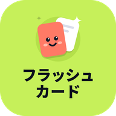

<!DOCTYPE html>
<html lang="ja">
<head>
<meta charset="utf-8">
<meta name="viewport" content="width=device-width, initial-scale=1, viewport-fit=cover">
<meta name="theme-color" content="#0D111C">
<meta name="apple-mobile-web-app-capable" content="yes">
<meta name="apple-mobile-web-app-status-bar-style" content="black-translucent">
<meta name="mobile-web-app-capable" content="yes">
<title>フラッシュカード</title>
<link rel="manifest" href="manifest.webmanifest">
<link rel="icon" type="image/png" href="icons/favicon.png">
<link rel="apple-touch-icon" href="icons/apple-touch-icon.png">
<meta name="apple-mobile-web-app-title" content="フラッシュカード">
<script>
window.PWA = true;
if ('serviceWorker' in navigator) window.addEventListener('load', () => { navigator.serviceWorker.register('sw.js').catch(() => {}); });
</script>
<link rel="preconnect" href="https://fonts.googleapis.com">
<link rel="preconnect" href="https://fonts.gstatic.com" crossorigin>
<link href="https://fonts.googleapis.com/css2?family=M+PLUS+Rounded+1c:wght@500;700;800&family=Nunito:wght@700;800;900&family=Noto+Sans+Devanagari:wght@500;700&family=Noto+Sans+Bengali:wght@500;700&family=Noto+Naskh+Arabic:wght@500;700&family=Noto+Sans+Myanmar:wght@500;700&display=swap" rel="stylesheet">
<style>
/* フラッシュカード（学習者用）v2 — dark, game-like; light "paper" cards on a night background.
   One column for phones; category colour (coral / sun / mint / sky) drives each screen; lime = the main action. */
:root{
  color-scheme:dark;
  --bg:#0D111C; --s1:#161D30; --s2:#1E2740; --s3:#29344F; --line:rgba(255,255,255,.07);
  --tx:#F3F5FC; --mu:#9AA4C2; --mu2:#6C7695;
  --lime:#C6F05A; --lime-ink:#1A2306;
  --verb:#FF7A66; --iadj:#FFC94D; --naadj:#4FE0AE; --noun:#72B4FF;
  --verb-p:#FFE6E1; --iadj-p:#FFF2D2; --naadj-p:#DDF8EE; --noun-p:#E2EEFF;
  --ok:#4FE0AE; --ng:#FF6B7F;
  --paper:#FBFAF6; --ink:#141826; --ink-mu:#6B7088;
  --acc:var(--verb); --acc-p:var(--verb-p);
  --r:22px;
  --f-ja:"M PLUS Rounded 1c","Hiragino Maru Gothic ProN","BIZ UDPGothic","Yu Gothic",sans-serif;
  --f-lat:"Nunito","M PLUS Rounded 1c",system-ui,sans-serif;
}
body[data-cat="iadj"]{--acc:var(--iadj);--acc-p:var(--iadj-p)}
body[data-cat="naadj"]{--acc:var(--naadj);--acc-p:var(--naadj-p)}
body[data-cat="noun"]{--acc:var(--noun);--acc-p:var(--noun-p)}
body[data-cat="tsu"]{--acc:#C79BFF;--acc-p:#EFE5FF}
*{box-sizing:border-box;margin:0;padding:0}
[hidden]{display:none!important}
html{-webkit-text-size-adjust:100%;background:var(--bg)}
body{min-height:100vh;background:var(--bg);color:var(--tx);font-family:var(--f-ja);font-weight:500;line-height:1.5;
  word-break:keep-all;overflow-wrap:anywhere;-webkit-tap-highlight-color:transparent;overscroll-behavior-y:none}
button{font:inherit;color:inherit;background:none;border:0;cursor:pointer;-webkit-user-select:none;user-select:none;touch-action:manipulation;text-align:inherit}
button:focus-visible{outline:3px solid var(--lime);outline-offset:2px}
#app{max-width:480px;margin:0 auto;min-height:100vh;
  padding:calc(env(safe-area-inset-top) + 12px) calc(env(safe-area-inset-right) + 18px) calc(env(safe-area-inset-bottom) + 104px) calc(env(safe-area-inset-left) + 18px)}
body.no-tab #app{padding-bottom:calc(env(safe-area-inset-bottom) + 24px)}

/* translations */
.tr bdi{unicode-bidi:isolate}
.tr{display:block;font-family:var(--f-lat);font-weight:700;font-size:.68em;color:var(--mu);line-height:1.3;margin-top:1px}
.mean{font-family:var(--f-lat);font-weight:700}
:lang(zh-CN){font-family:"PingFang SC","Noto Sans SC","Microsoft YaHei",sans-serif!important}
:lang(ne){font-family:"Noto Sans Devanagari",sans-serif!important}
:lang(bn){font-family:"Noto Sans Bengali",sans-serif!important}
:lang(ur){font-family:"Noto Naskh Arabic",sans-serif!important;line-height:1.7}
:lang(my){font-family:"Noto Sans Myanmar",sans-serif!important;line-height:1.75}

/* ruby: one <ruby> per kanji run, readings spread evenly */
ruby{ruby-position:over;ruby-align:space-around}
rt{font-size:.46em;font-weight:700;opacity:.72;letter-spacing:0}

.press{transition:transform .1s ease,filter .1s ease}
.press:active{transform:scale(.97);filter:brightness(.92)}
.num{font-family:var(--f-lat);font-weight:900;letter-spacing:-.01em}
.icon{width:22px;height:22px;flex:none}

/* buttons */
.btn{display:flex;flex-direction:column;align-items:center;justify-content:center;gap:1px;width:100%;min-height:58px;padding:8px 18px;border-radius:18px;
  background:var(--s2);font-weight:800;font-size:19px;line-height:1.2;text-align:center}
.btn .tr{color:inherit;opacity:.7}
.btn.lime{background:var(--lime);color:var(--lime-ink);box-shadow:0 6px 0 var(--lime-d,#86AD25)}
.btn.lime:active{transform:translateY(4px);box-shadow:0 2px 0 #86AD25}
.btn.ok{background:var(--ok);color:#06231A;box-shadow:0 6px 0 #2BA37B}
.btn.ok:active{transform:translateY(4px);box-shadow:0 2px 0 #2BA37B}
.btn.soft{background:var(--s2);color:var(--tx);box-shadow:0 6px 0 #10162A}
.btn.soft:active{transform:translateY(4px);box-shadow:0 2px 0 #10162A}
.btn.ghost{background:transparent;min-height:44px;font-size:15px;color:var(--mu)}
.btn[disabled]{opacity:.4;pointer-events:none}
.row{display:flex;gap:12px}
.row > *{flex:1}
.iconbtn{width:44px;height:44px;border-radius:14px;display:grid;place-items:center;background:var(--s1);flex:none}

/* headings */
.sect{display:flex;align-items:flex-end;justify-content:space-between;gap:10px;margin:26px 2px 12px}
.sect h2{font-size:18px;font-weight:800;line-height:1.3}
.sect h2 .tr{font-size:.66em}

/* ---- home ---- */
.hbar{display:flex;align-items:center;gap:12px;min-height:48px}
.lv{flex:1;min-width:0;display:flex;align-items:center;gap:10px}
.lv-badge{width:46px;height:46px;border-radius:14px;background:linear-gradient(160deg,#2F3B5E,#1C2540);display:grid;place-items:center;flex:none;position:relative}
.lv-badge b{font-family:var(--f-lat);font-weight:900;font-size:20px;color:var(--lime)}
.lv-badge small{position:absolute;bottom:-6px;font-size:9px;font-weight:800;background:var(--lime);color:var(--lime-ink);border-radius:99px;padding:0 6px;font-family:var(--f-lat);letter-spacing:.04em}
.lv-txt{flex:1;min-width:0}
.lv-txt .t{font-size:13px;font-weight:700;color:var(--mu);display:flex;justify-content:space-between}
.xpbar{height:10px;border-radius:99px;background:var(--s2);overflow:hidden;margin-top:5px}
.xpbar i{display:block;height:100%;background:var(--lime);border-radius:99px;transition:width .6s ease}
.pill{display:inline-flex;align-items:center;gap:5px;height:40px;padding:0 13px 0 9px;border-radius:99px;background:var(--s1);font-family:var(--f-lat);font-weight:900;font-size:17px}
.pill svg{width:22px;height:22px}
.pill.off{color:var(--mu2)}

.hero{margin-top:18px;border-radius:26px;padding:20px 20px 18px;background:radial-gradient(120% 140% at 100% 0%,rgba(198,240,90,.16),transparent 55%),var(--s1);position:relative;overflow:hidden}
.hero .hi{font-size:22px;font-weight:800;line-height:1.3}
.hero .hi .tr{font-size:13px;margin-top:3px}
.hero .today{display:flex;gap:18px;margin:14px 0 16px}
.hero .today div{font-size:12px;color:var(--mu);font-weight:700;line-height:1.3}
.hero .today b{display:block;font-size:26px;color:var(--tx);font-family:var(--f-lat);font-weight:900;line-height:1.1}
.cont-btn{display:flex;align-items:center;gap:14px;width:100%;padding:12px 14px 12px 12px;border-radius:18px;background:var(--lime);color:var(--lime-ink);box-shadow:0 6px 0 #86AD25;text-align:left}
.cont-btn:active{transform:translateY(4px);box-shadow:0 2px 0 #86AD25}
.cont-btn .play{width:44px;height:44px;border-radius:14px;background:rgba(26,35,6,.12);display:grid;place-items:center;flex:none}
.cont-btn .play svg{width:22px;height:22px}
.cont-btn .tx{flex:1;min-width:0}
.cont-btn .tx b{display:block;font-size:18px;font-weight:800;line-height:1.25}
.cont-btn .tx span{display:block;font-size:13px;font-weight:700;opacity:.75;line-height:1.5}

.inst{display:flex;align-items:center;gap:12px;margin-top:14px;padding:12px 12px 12px 14px;border-radius:20px;background:var(--s1);border:1.5px solid rgba(198,240,90,.35)}
.inst img{width:44px;height:44px;border-radius:12px;flex:none}
.inst .tx{flex:1;min-width:0;font-size:15px;font-weight:800;line-height:1.5}
.inst .tx small{display:block;font-size:12px;font-weight:700;color:var(--mu);line-height:1.8}
.inst .tx .tr{font-size:11px}
.inst .go{flex:none;padding:8px 14px;border-radius:12px;background:var(--lime);color:var(--lime-ink);font-weight:800;font-size:14px}
.inst .x{flex:none;width:32px;height:32px;border-radius:10px;display:grid;place-items:center;color:var(--mu2)}
.cats{display:grid;grid-template-columns:1fr 1fr;gap:12px}
.cat{position:relative;display:flex;flex-direction:column;align-items:flex-start;min-height:150px;padding:16px;border-radius:24px;background:var(--s1);overflow:hidden;text-align:left}
.cat::before{content:"";position:absolute;right:-30px;top:-30px;width:110px;height:110px;border-radius:50%;background:var(--c);opacity:.16}
.cat .glyph{width:42px;height:42px;border-radius:13px;background:var(--c);color:#111;display:grid;place-items:center;font-size:21px;font-weight:800;margin-bottom:12px}
.cat h3{font-size:20px;font-weight:800;line-height:1.2}
.cat h3 .tr{font-size:12px;margin-top:2px}
.cat .meta{display:block;margin-top:auto;padding-top:10px;width:100%}
.cat .meta .n{font-size:12px;font-weight:700;color:var(--mu);display:flex;justify-content:space-between}
.minibar{display:block;height:6px;border-radius:99px;background:var(--s3);overflow:hidden;margin-top:5px}
.minibar i{display:block;height:100%;background:var(--c,var(--acc));border-radius:99px}

/* ---- category (steps) ---- */
.cat-top{display:flex;align-items:center;gap:10px}
.cat-head{margin-top:14px;padding:20px;border-radius:26px;background:var(--s1);background:radial-gradient(140% 120% at 0% 0%,color-mix(in srgb,var(--acc) 26%,transparent),transparent 60%),var(--s1)}
.cat-head .t{display:flex;align-items:center;gap:14px}
.cat-head h1{font-size:28px;font-weight:800;line-height:1.15}
.cat-head h1 .tr{font-size:13px;margin-top:4px}
.ring{width:64px;height:64px;flex:none;margin-left:auto;position:relative}
.ring svg{width:64px;height:64px;transform:rotate(-90deg)}
.ring b{position:absolute;inset:0;display:grid;place-items:center;font-family:var(--f-lat);font-weight:900;font-size:16px}
.cat-head .sub{margin-top:12px;font-size:13px;font-weight:700;color:var(--mu)}
.steps{display:flex;flex-direction:column;gap:10px;position:relative}
.step{display:flex;align-items:center;gap:14px;padding:12px 14px 12px 12px;border-radius:20px;background:var(--s1);text-align:left;position:relative}
.step .no{width:48px;height:48px;flex:none;position:relative}
.step .no svg{width:48px;height:48px;transform:rotate(-90deg)}
.step .no b{position:absolute;inset:0;display:grid;place-items:center;font-family:var(--f-lat);font-weight:900;font-size:17px}
.step.done .no b{color:var(--bg)}
.step .tx{flex:1;min-width:0}
.step .tt{font-size:17px;font-weight:800;line-height:1.85}
.step .mm{display:flex;flex-wrap:wrap;align-items:center;gap:6px;font-size:12px;font-weight:700;color:var(--mu);line-height:1.3}
.lvtag{font-family:var(--f-lat);font-weight:900;font-size:11px;padding:1px 7px;border-radius:6px;background:var(--s3);color:var(--tx)}
.lvtag.n5{background:rgba(198,240,90,.18);color:var(--lime)}
.lvtag.n4{background:rgba(114,180,255,.18);color:var(--noun)}
.step .chev{color:var(--mu2)}
.step.custom{background:transparent;border:2px dashed var(--s3)}
.step.custom .no{display:grid;place-items:center;border-radius:50%;background:var(--s2)}
.step.custom .no svg{width:24px;height:24px;transform:none}

/* ---- bottom sheet ---- */
.scrim{position:fixed;inset:0;z-index:40;background:rgba(5,8,15,.6);opacity:0;transition:opacity .2s ease}
.scrim.show{opacity:1}
.sheet{position:fixed;left:0;right:0;bottom:0;z-index:41;max-width:520px;margin:0 auto;max-height:88vh;display:flex;flex-direction:column;
  background:var(--s1);border-radius:28px 28px 0 0;transform:translateY(100%);transition:transform .28s cubic-bezier(.2,.9,.3,1);
  padding:8px 18px calc(env(safe-area-inset-bottom) + 16px)}
.sheet.show{transform:none}
.sheet .grab{width:44px;height:5px;border-radius:99px;background:var(--s3);margin:4px auto 12px;flex:none}
.sheet .body{overflow:auto;flex:1;min-height:0;padding-bottom:6px}
.sheet h3{font-size:22px;font-weight:800;line-height:1.7}
.sheet .forms{display:flex;flex-wrap:wrap;gap:6px;margin:8px 0 4px}
.ftag{display:inline-flex;align-items:center;padding:2px 10px;border-radius:10px;background:var(--s2);font-size:14px;font-weight:700;line-height:1.85}
.lbl{font-size:13px;font-weight:800;color:var(--mu);margin:18px 2px 8px;line-height:1.3}
.lbl .tr{display:inline;margin-left:6px;font-size:11px;color:var(--mu2)}
.seg{display:flex;gap:6px;padding:5px;border-radius:16px;background:var(--bg)}
.seg button{flex:1;min-height:46px;padding:4px 8px;border-radius:12px;font-weight:800;font-size:16px;line-height:1.2;text-align:center;color:var(--mu)}
.seg button .tr{font-size:10.5px;color:inherit;opacity:.8}
.seg button[aria-pressed="true"]{background:var(--s3);color:var(--tx)}
.seg.col{flex-direction:column}
.seg.col button{text-align:left;padding:8px 14px}
.chips{display:flex;flex-wrap:wrap;gap:8px}
.chip{display:inline-flex;align-items:center;gap:6px;min-height:42px;padding:4px 14px;border-radius:12px;background:var(--s2);font-weight:700;font-size:15px;line-height:1.85;color:var(--mu)}
.chip[aria-pressed="true"]{background:var(--acc);color:#111}
.chip .ck{width:16px;height:16px;display:none}
.chip[aria-pressed="true"] .ck{display:block}
.more{display:flex;align-items:center;gap:6px;margin-top:16px;font-size:14px;font-weight:800;color:var(--mu)}
.more svg{width:18px;height:18px;transition:transform .2s}
.more[aria-expanded="true"] svg{transform:rotate(180deg)}
.cgroup{margin-top:12px}
.cgroup .gh{display:flex;justify-content:space-between;align-items:flex-end;font-size:13px;font-weight:800;color:var(--mu);margin:0 2px 6px;line-height:1.9}
.cgroup .gh button{font-size:12px;font-weight:800;color:var(--lime);padding:2px 4px}
.sheet .foot{flex:none;padding-top:12px}

/* ---- play ---- */
.ptop{display:flex;align-items:center;gap:12px}
.ptrack{flex:1;height:12px;border-radius:99px;background:var(--s2);overflow:hidden}
.ptrack i{display:block;height:100%;background:var(--acc);border-radius:99px;transition:width .35s ease}
.pnum{font-family:var(--f-lat);font-weight:900;font-size:15px;color:var(--mu);min-width:48px;text-align:right}
.stage{position:relative;perspective:1400px;margin:20px 0 22px}
.stage::before{content:"";position:absolute;left:14px;right:14px;bottom:-10px;height:40px;border-radius:0 0 28px 28px;background:var(--s2);z-index:0}
.card{position:relative;z-index:1;height:clamp(330px,56vh,470px);touch-action:pan-y;cursor:pointer;transition:transform .25s ease;-webkit-user-select:none;user-select:none;-webkit-touch-callout:none}
.card.quiz{height:auto;cursor:default}
.inner{position:absolute;inset:0;transform-style:preserve-3d;transition:transform .55s cubic-bezier(.3,1.3,.5,1)}
.card.quiz .inner{position:relative}
.card.flipped .inner{transform:rotateY(180deg)}
.face{position:absolute;inset:0;display:flex;flex-direction:column;padding:16px;border-radius:28px;background:var(--paper);color:var(--ink);
  -webkit-backface-visibility:hidden;backface-visibility:hidden;overflow:hidden;box-shadow:0 18px 40px rgba(0,0,0,.35)}
.card.quiz .face{position:relative;min-height:220px}
.face.back{transform:rotateY(180deg);background:var(--acc-p)}
.face-top{display:flex;align-items:center;justify-content:space-between;gap:8px}
.fchip{display:inline-flex;align-items:center;gap:6px;padding:3px 16px;border-radius:14px;background:var(--acc);color:#111;font-weight:800;font-size:20px;line-height:1.9}
.target{display:flex;flex-direction:column;align-items:center;gap:2px;margin-top:6px;max-width:100%}
.target .arrow{font-size:26px;font-weight:800;line-height:1;color:var(--acc);filter:brightness(.85)}
.tchip{display:inline-block;max-width:100%;padding:6px 22px;border-radius:18px;background:var(--acc);color:#111;font-weight:800;font-size:30px;line-height:1.75;white-space:nowrap}
.card.quiz .tchip{font-size:28px}
.say{width:44px;height:44px;border-radius:14px;display:grid;place-items:center;background:rgba(20,24,38,.07);color:var(--ink);flex:none}
.say svg{width:22px;height:22px}
.say.muted{opacity:.45}
.face-mid{flex:1;display:flex;flex-direction:column;align-items:center;justify-content:center;gap:8px;text-align:center;min-height:0;padding:6px 0}
.lead{font-size:24px;font-weight:700;line-height:1.8;margin-bottom:-14px}
.big{font-size:48px;font-weight:800;line-height:1.5;white-space:nowrap;max-width:100%}
.from{font-size:17px;font-weight:700;color:var(--ink-mu);line-height:1.9;white-space:nowrap;max-width:100%}
.meta{font-size:12px;font-weight:800;padding:1px 10px;border-radius:8px;background:rgba(20,24,38,.08);color:var(--ink-mu);line-height:1.9}
.mean{max-width:100%;font-size:15px;padding:4px 12px;border-radius:10px;background:rgba(20,24,38,.06);color:var(--ink-mu);line-height:1.4}
.hint{display:flex;align-items:center;justify-content:center;gap:6px;font-size:13px;font-weight:700;color:var(--ink-mu);text-align:center;line-height:1.3}
.hint{flex-wrap:wrap;column-gap:6px;row-gap:0}
.hint .tr{display:block;width:100%;font-size:11px;color:var(--ink-mu)}
.notes{background:rgba(255,255,255,.7);border-radius:16px;padding:8px 12px;font-size:14px;line-height:2;max-height:38%;overflow:auto;color:var(--ink)}
.notes b{display:inline-block;font-size:11px;font-weight:800;background:var(--ink);color:#fff;border-radius:6px;padding:0 7px;line-height:1.8;margin-right:6px}
.stamp{pointer-events:none;position:absolute;top:22px;padding:3px 14px;border-radius:12px;font-size:22px;font-weight:800;opacity:0;transition:opacity .1s;color:#fff}
.stamp.s-got{right:18px;background:#1FB386;transform:rotate(8deg)}
.stamp.s-again{left:18px;background:#E5536A;transform:rotate(-8deg)}
.card.lean-got .s-got,.card.lean-again .s-again{opacity:1}
.swipe-hint{text-align:center;font-size:12px;font-weight:700;color:var(--mu2);margin-top:12px}
.qtitle{font-size:15px;font-weight:800;text-align:center;margin:0 0 10px;color:var(--mu);line-height:1.3}
.qtitle .tr{font-size:11px}
.opts{display:grid;gap:10px}
.opt{display:flex;align-items:center;gap:12px;min-height:60px;padding:8px 14px;border-radius:18px;background:var(--s1);box-shadow:0 5px 0 #0A0F1C;font-size:22px;font-weight:800;text-align:left;line-height:1.3;white-space:nowrap;overflow:hidden}
.opt:active{transform:translateY(3px);box-shadow:0 2px 0 #0A0F1C}
.opt .n{flex:none;width:28px;height:28px;border-radius:9px;display:grid;place-items:center;font-size:14px;background:var(--s3);color:var(--mu);font-family:var(--f-lat);font-weight:900}
.opt .w{flex:1;min-width:0}
.opt.ok{background:rgba(79,224,174,.18);box-shadow:0 5px 0 rgba(79,224,174,.35)}
.opt.ok .n{background:var(--ok);color:#06231A}
.opt.ng{background:rgba(255,107,127,.16);box-shadow:0 5px 0 rgba(255,107,127,.35);animation:shake .35s}
.opt.ng .n{background:var(--ng);color:#2A0710}
.opt.dim{opacity:.4}
.fb{margin-top:14px;padding:14px;border-radius:22px;display:flex;flex-direction:column;gap:10px;background:var(--s1)}
.fb .msg{display:flex;align-items:center;gap:10px;font-size:22px;font-weight:800;line-height:1.2}
.fb.good .msg{color:var(--ok)} .fb.bad .msg{color:var(--ng)}
.fb .msg .tr{font-size:12px;color:var(--mu)}
.fb .msg svg{width:32px;height:32px;flex:none}
.fb .notes{background:var(--s2);color:var(--tx)}
.fb .notes b{background:var(--tx);color:var(--bg)}
.fb .say{background:var(--s2);color:var(--tx);margin-left:auto}

/* ---- result ---- */
.res{text-align:center;padding:28px 18px 22px;margin-top:22px;border-radius:28px;background:var(--s1);background:radial-gradient(120% 90% at 50% 0%,color-mix(in srgb,var(--acc) 22%,transparent),transparent 70%),var(--s1)}
.stars{display:flex;justify-content:center;align-items:flex-end;gap:6px;margin-bottom:10px}
.stars svg{width:50px;height:50px}
.stars svg:nth-child(2){width:64px;height:64px;margin-bottom:8px}
.res .score{font-family:var(--f-lat);font-weight:900;font-size:58px;line-height:1}
.res .score small{font-size:24px;color:var(--mu)}
.res .sub{font-size:13px;font-weight:700;color:var(--mu);margin-top:4px}
.res .msg{font-size:26px;font-weight:800;margin-top:12px;line-height:1.2}
.res .msg .tr{font-size:14px;margin-top:4px}
.xpgain{display:inline-flex;align-items:center;gap:8px;margin-top:16px;padding:6px 14px;border-radius:99px;background:rgba(198,240,90,.14);color:var(--lime);font-weight:800;font-size:15px}
.xpgain b{font-family:var(--f-lat);font-weight:900;font-size:20px}
.btns{display:grid;gap:14px;margin-top:22px}
.btn .sm{display:block;font-size:14px;font-weight:700;opacity:.85;line-height:1.8}

/* ---- records ---- */
.stats{display:grid;grid-template-columns:repeat(3,1fr);gap:10px;margin-top:16px}
.stat{padding:14px 12px;border-radius:20px;background:var(--s1)}
.stat .v{display:flex;align-items:center;gap:4px;font-family:var(--f-lat);font-weight:900;font-size:28px;line-height:1.1}
.stat .v svg{width:24px;height:24px}
.stat .l{font-size:12px;font-weight:800;color:var(--mu);margin-top:4px;line-height:1.3}
.stat .l .tr{font-size:10px}
.heat{padding:16px;border-radius:22px;background:var(--s1)}
.heat .grid{display:grid;grid-template-columns:repeat(7,1fr);gap:6px}
.heat .dow{font-size:11px;font-weight:800;color:var(--mu2);text-align:center}
.heat .d{aspect-ratio:1;border-radius:8px;background:var(--s2);width:100%}
.heat-hint{font-size:12px;color:var(--mu2);margin-top:12px;line-height:1.6}
.heat-hint .tr{font-size:11px;color:var(--mu2)}
.day-empty{margin:14px 2px 8px;color:var(--mu);font-weight:700;line-height:1.8}
.day-stats{display:grid;grid-template-columns:repeat(3,1fr);gap:8px;margin-top:10px}
.day-stats div{padding:12px;border-radius:16px;background:var(--s2);font-size:12px;font-weight:800;color:var(--mu);line-height:1.3}
.day-stats b{display:block;font-size:28px;color:var(--tx);line-height:1.1}
.day-stats .g b{color:var(--ok)} .day-stats .r b{color:var(--ng)}
.day-stats .tr{font-size:10px}
.day-list{display:grid;gap:8px;margin-top:14px}
.day-row{display:grid;grid-template-columns:auto 1fr auto;align-items:center;column-gap:10px;row-gap:4px;padding:10px 12px;border-radius:14px;background:var(--s2)}
.day-row .dot{width:10px;height:10px;border-radius:50%;background:var(--c)}
.day-row .nm{font-size:15px;font-weight:800;line-height:1.85}
.day-row .ct{font-family:var(--f-lat);font-weight:900;font-size:15px;color:var(--mu)}
.day-row .g{color:var(--ok)} .day-row .r{color:var(--ng)}
.day-row .bar2{grid-column:2 / 4;height:6px;border-radius:99px;background:rgba(255,107,127,.35);overflow:hidden}
.day-row .bar2 i{display:block;height:100%;background:var(--ok)}
.heat .d.l1{background:rgba(198,240,90,.28)} .heat .d.l2{background:rgba(198,240,90,.55)} .heat .d.l3{background:var(--lime)}
.heat .d.today{outline:2px solid var(--tx);outline-offset:1px}
.prog{padding:16px;border-radius:22px;background:var(--s1);display:grid;gap:14px}
.prog .r .h{display:flex;justify-content:space-between;font-size:14px;font-weight:800;line-height:1.3}
.prog .r .h span:last-child{font-family:var(--f-lat);font-size:13px;color:var(--mu)}

/* ---- settings ---- */
.list{border-radius:22px;background:var(--s1);overflow:hidden}
.li{display:flex;align-items:center;gap:12px;width:100%;min-height:62px;padding:12px 16px;text-align:left;border-bottom:1px solid var(--line)}
.li:last-child{border-bottom:0}
.li .k{flex:1;min-width:0;font-size:16px;font-weight:800;line-height:1.3}
.li .k .tr{font-size:11px}
.li .v{font-size:15px;font-weight:700;color:var(--mu);text-align:right}
.li.col{flex-direction:column;align-items:stretch}
.sw{width:52px;height:32px;border-radius:99px;background:var(--s3);position:relative;flex:none;transition:background .2s}
.sw::after{content:"";position:absolute;top:4px;left:4px;width:24px;height:24px;border-radius:50%;background:#fff;transition:transform .2s}
.sw[aria-checked="true"]{background:var(--lime)}
.sw[aria-checked="true"]::after{transform:translateX(20px)}
.voices{display:grid;gap:6px;margin-top:8px}
.vbtn{display:flex;align-items:center;gap:8px;min-height:46px;padding:6px 12px;border-radius:14px;background:var(--s2);font-weight:700;font-size:15px;text-align:left;line-height:1.3;color:var(--mu)}
.vbtn .vn{flex:1;min-width:0;overflow-wrap:anywhere;font-family:var(--f-lat)}
.vbtn .vb{flex:none;font-size:11px;font-weight:800;padding:1px 8px;border-radius:6px;background:rgba(198,240,90,.16);color:var(--lime)}
.vbtn svg{width:20px;height:20px;flex:none}
.vbtn[aria-pressed="true"]{background:var(--s3);color:var(--tx)}
.vhint{font-size:12px;color:var(--mu);line-height:1.5;margin-top:8px}
.vhint .tr{font-size:11px}
.danger{color:var(--ng)}
.note-s{font-size:12px;color:var(--mu2);text-align:center;margin-top:16px;line-height:1.5}
.note-s .tr{font-size:11px;color:var(--mu2)}

/* ---- language ---- */
.welcome{text-align:center;padding-top:26px}
.welcome .logo{width:92px;height:92px;margin:0 auto}
.welcome h1{font-size:30px;font-weight:800;margin-top:14px}
.welcome p{font-size:15px;font-weight:700;color:var(--mu);margin-top:4px}
.langs{display:grid;grid-template-columns:1fr 1fr;gap:10px;margin-top:24px}
.lang-btn{min-height:60px;padding:8px 12px;border-radius:18px;background:var(--s1);font-size:19px;font-weight:700;text-align:center;line-height:1.3}
.lang-btn[aria-pressed="true"]{background:var(--lime);color:var(--lime-ink)}
.lang-btn.jp{grid-column:1 / -1;font-family:var(--f-ja);font-weight:800}

/* ---- tab bar ---- */
.tabbar{position:fixed;left:50%;bottom:calc(env(safe-area-inset-bottom) + 12px);transform:translateX(-50%);width:min(440px,calc(100% - 28px));z-index:20;
  display:grid;grid-template-columns:repeat(3,1fr);gap:4px;padding:6px;border-radius:24px;background:rgba(22,29,48,.88);
  -webkit-backdrop-filter:blur(14px);backdrop-filter:blur(14px);box-shadow:0 10px 30px rgba(0,0,0,.4)}
body.no-tab .tabbar{display:none}
.tab{display:flex;flex-direction:column;align-items:center;justify-content:center;gap:1px;min-height:54px;padding:4px;border-radius:18px;font-size:12px;font-weight:800;line-height:1.15;color:var(--mu2);text-align:center}
.tab svg{width:24px;height:24px}
.tab .tr{font-size:9.5px;max-width:100%;overflow:hidden;text-overflow:ellipsis;white-space:nowrap;color:inherit}
.tab[aria-current="page"]{color:var(--lime);background:rgba(198,240,90,.1)}

/* ---- modal + toast ---- */
.modal{position:fixed;inset:0;z-index:60;display:grid;place-items:center;padding:24px;background:rgba(5,8,15,.65)}
.modal .box{width:min(360px,100%);padding:22px;border-radius:24px;background:var(--s1);text-align:center}
.modal .q{font-size:19px;font-weight:800;line-height:1.3;margin-bottom:18px}
.modal .q .tr{font-size:13px;margin-top:4px}
.toast{width:max-content;max-width:calc(100% - 32px);line-height:1.4;position:fixed;left:50%;top:calc(env(safe-area-inset-top) + 16px);transform:translate(-50%,calc(-100% - 60px));visibility:hidden;z-index:70;padding:10px 18px;border-radius:16px;background:var(--lime);color:var(--lime-ink);font-weight:800;text-align:center;transition:transform .25s ease;max-width:calc(100% - 32px)}
.toast.show{transform:translate(-50%,0);visibility:visible}
.toast .tr{font-size:12px;color:var(--lime-ink);opacity:.8}

.enter{animation:rise .3s cubic-bezier(.2,.9,.3,1)}


/* ===== 教科書モード ===== */
.sent{font-size:24px;font-weight:800;line-height:2.05;text-align:left;color:var(--ink);word-break:normal;overflow-wrap:anywhere;padding:0 4px}
.sent ruby rt{font-size:.45em}
.sent .slot{color:var(--acc);filter:brightness(.8);white-space:nowrap}
.face.back .sent{font-size:23px}
.sent mark{background:linear-gradient(transparent 55%,color-mix(in srgb,var(--acc) 55%,transparent) 55%);color:inherit;padding:0 2px;border-radius:3px}
.sent-tag{font-size:12px;font-weight:800;color:var(--ink-mu);line-height:1.6}
.sent-tag rt{font-size:.6em}
.face .from rt{font-size:.5em}
.seg.style button{font-size:15px}
.fpick{gap:4px;min-height:38px;padding:3px 12px;border:2px solid transparent;color:var(--tx)}
.fpick[aria-pressed="true"]{background:var(--c);border-color:var(--c);color:#111}
.fpick svg{width:15px;height:15px}
.lf{--c:var(--acc)}
.rv-note{margin:0 4px 14px;line-height:1.7}
.pick-hint{display:flex;align-items:flex-start;gap:6px;margin:-4px 4px 10px;font-size:13px;font-weight:700;color:var(--mu);line-height:1.5}
.pick-hint svg{flex:none;margin-top:3px}
.pick-hint .tr{display:block;font-size:11px}
.pick-bar{display:flex;align-items:center;justify-content:space-between;margin-top:10px;padding:10px 14px;border-radius:16px;background:color-mix(in srgb,var(--acc) 22%,var(--s1));font-weight:800}
.pick-bar button{padding:6px 14px;border-radius:12px;background:var(--s2);font-weight:800;font-size:14px}
.pn{display:inline-flex;flex-direction:column;align-items:center;vertical-align:middle;line-height:1.15;margin-left:.15em}
.pn .pw{line-height:1.6}
.pn small{font-size:.46em;font-weight:800;opacity:.72;line-height:1.3;margin-top:-.15em}
.pn small rt{font-size:.6em}
.fchip .pn small{font-size:.55em}
.books{display:flex;flex-direction:column;gap:10px}
.book{display:flex;align-items:center;gap:14px;width:100%;min-height:84px;padding:14px 16px;border-radius:24px;text-align:left;
  background:radial-gradient(120% 140% at 0% 0%,rgba(199,155,255,.22),transparent 60%),var(--s1)}
.book .chev{color:var(--mu2)}
.bk-sp{position:relative;width:46px;height:56px;flex:none}
.bk-sp i{position:absolute;inset:0;border-radius:8px 12px 12px 8px;background:#C79BFF}
.bk-sp i:nth-child(1){transform:translate(8px,-4px) rotate(8deg);background:var(--noun);opacity:.8}
.bk-sp i:nth-child(2){transform:translate(4px,-2px) rotate(4deg);background:var(--naadj);opacity:.9}
.bk-sp i:nth-child(3){box-shadow:inset 6px 0 0 rgba(0,0,0,.18)}
.bk-tx{flex:1;min-width:0;line-height:1.25}
.bk-tx b{display:block;font-size:22px;font-weight:800}
.bk-s{display:block;font-size:12px;font-weight:800;color:#C79BFF;letter-spacing:.02em}
.bk-l{font-size:13px;font-weight:800;color:var(--mu)}
.cat-head h1 .bk-s{font-size:13px;margin-bottom:2px}
.les-grid{display:grid;grid-template-columns:repeat(3,1fr);gap:10px;margin-top:16px}
.les{position:relative;display:flex;flex-direction:column;align-items:flex-start;gap:6px;min-height:104px;padding:12px;border-radius:20px;background:var(--s1);text-align:left}
.les.done{background:color-mix(in srgb,var(--acc) 18%,var(--s1))}
.les-n{font-size:24px;font-weight:900;line-height:1}
.les-r{position:absolute;top:10px;right:10px;width:40px;height:40px}
.les-r svg{width:40px;height:40px}
.les-m{margin-top:auto;display:flex;flex-direction:column;gap:5px;font-size:11px;font-weight:700;color:var(--mu);line-height:1.2}
.les-m .dots{display:flex;gap:4px;min-height:8px}
.les-m .dots i{width:8px;height:8px;border-radius:50%}
.lforms{display:flex;flex-direction:column;gap:10px}
.lf,.lw{display:flex;gap:10px;align-items:flex-start;padding:12px;border-radius:18px;background:var(--s1)}
.lf-c{flex:none;min-width:56px;padding:3px 9px;border-radius:9px;background:var(--c);color:#111;font-size:12px;font-weight:800;line-height:1.7;text-align:center}
.lf-t{display:flex;flex-wrap:wrap;gap:6px}
.lwords{margin-top:12px;border-radius:18px;background:var(--s1);overflow:hidden}
.lwords summary{display:flex;align-items:center;gap:8px;padding:14px 16px;font-weight:800;font-size:15px;cursor:pointer;list-style:none}
.lwords summary::-webkit-details-marker{display:none}
.lwords summary svg{width:18px;height:18px;margin-left:auto;transition:transform .2s}
.lwords[open] summary svg{transform:rotate(180deg)}
.lwords .lw{background:transparent;padding:4px 16px 14px;flex-direction:column;gap:8px}
.lw-t{display:flex;flex-wrap:wrap;gap:4px 12px;font-size:16px;font-weight:700;line-height:2}
.seg.scope button{display:flex;flex-direction:column;align-items:flex-start;gap:1px;min-height:58px}
.seg.scope b{font-size:16px}
.seg.scope .sd{font-size:12px;font-weight:700;color:var(--mu)}
.tsl .chips{display:flex;flex-wrap:wrap;gap:8px}
.tsl .chip[aria-pressed="true"]{background:var(--c,var(--acc))}
.tsl .chip[disabled]{opacity:.35}
.tstart{position:sticky;bottom:calc(env(safe-area-inset-bottom) + 12px);margin-top:20px;z-index:3}
.tstart .btn{box-shadow:0 10px 30px rgba(0,0,0,.45)}


/* ===== 整理した レイアウト ===== */
.hometab{margin:18px 0 14px;padding:5px;border-radius:18px;background:var(--s1)}
.hometab button{display:flex;align-items:center;justify-content:center;gap:8px;min-height:52px;font-size:16px}
.hometab button svg{width:20px;height:20px;flex:none}
.hometab button > span{display:flex;flex-direction:column;align-items:flex-start;line-height:1.2}
.hometab .tr{font-size:11px}
.series-list{display:flex;flex-direction:column;gap:12px}
.series{padding:14px;border-radius:24px;background:radial-gradient(120% 140% at 0% 0%,rgba(199,155,255,.18),transparent 60%),var(--s1)}
.sr-h{display:flex;align-items:center;gap:12px;margin:0 2px 12px}
.sr-h .bk-sp{width:30px;height:36px}
.sr-h b{font-size:17px;font-weight:800;color:#C79BFF}
.sr-h b rt{font-size:.5em}
.sr-vols{display:grid;grid-template-columns:1fr 1fr;gap:8px}
.vol{position:relative;display:flex;flex-direction:column;align-items:flex-start;gap:2px;padding:12px 30px 12px 14px;border-radius:18px;background:var(--s2);text-align:left}
.vol b{font-size:21px;font-weight:800;line-height:1.3}
.vol b rt{font-size:.45em}
.vol span{font-size:13px;font-weight:800;color:var(--mu)}
.vol .chev{position:absolute;right:8px;top:50%;transform:translateY(-50%);width:18px;height:18px;color:var(--mu2)}
.cats .cat{min-height:124px}
.step-h{margin:16px 4px 2px;font-size:15px;font-weight:800;color:var(--mu)}
.step-h:first-child{margin-top:0}
.step-h .tr{font-size:11px}
/* 課の 画面 */
.les-nav{margin-left:auto;display:flex;gap:8px}
.les-nav button[disabled]{opacity:.3}
.flip-x svg{transform:scaleX(-1)}
.les-head{display:flex;align-items:center;gap:14px;margin-top:12px;padding:16px 18px;border-radius:24px;background:radial-gradient(140% 120% at 0% 0%,color-mix(in srgb,var(--acc) 26%,transparent),transparent 60%),var(--s1)}
.les-head > div:first-child{flex:1;min-width:0}
.les-head .bk-s{font-size:13px}
.les-head > div:first-child b{display:block;font-size:34px;font-weight:900;line-height:1.05}
.ring.sm{width:52px;height:52px}
.ring.sm svg{width:52px;height:52px}
.ring.sm b{font-size:13px}
.seg.big{margin-top:14px}
.seg.big button{min-height:50px;font-size:16px}
.blk-h{display:flex;align-items:center;justify-content:space-between;gap:10px;margin:22px 4px 10px}
.blk-h h2{font-size:17px;font-weight:800}
.blk-h h2 rt{font-size:.5em}
.mini{display:inline-flex;align-items:center;gap:6px;padding:6px 12px 6px 9px;border-radius:99px;background:color-mix(in srgb,var(--acc) 30%,var(--s1));font-size:13px;font-weight:800}
.mini svg{width:14px;height:14px}
.seg.range button{font-size:14px;min-height:46px;line-height:1.3}
.seg.range rt{font-size:.5em}
.range-d{margin:8px 6px 0;font-size:13px;font-weight:700;color:var(--mu);line-height:1.6}
.range-d .tr{display:inline;margin-left:6px;font-size:12px}
.dock{position:sticky;bottom:calc(env(safe-area-inset-bottom) + 10px);z-index:3;margin-top:22px;padding:10px;border-radius:24px;background:color-mix(in srgb,var(--s1) 92%,transparent);backdrop-filter:blur(12px);-webkit-backdrop-filter:blur(12px);box-shadow:0 12px 34px rgba(0,0,0,.5);display:flex;flex-direction:column;gap:10px}
.dock-opts{display:flex;gap:8px;align-items:stretch}
.mini-seg{flex:1;padding:4px;border-radius:14px}
.mini-seg button{min-height:38px;font-size:14px}
.cnt{display:inline-flex;align-items:center;gap:4px;padding:0 12px;border-radius:14px;background:var(--bg);font-weight:800;font-size:14px;white-space:nowrap}
.cnt svg{width:16px;height:16px;color:var(--mu)}
.dock .btn{min-height:56px}
.tsl .lforms .lf{padding:10px 12px}

/* ===== はじめの 画面（ログイン） ===== */
body.is-login{background:radial-gradient(90% 50% at 50% 0%,rgba(198,240,90,.13),transparent 70%),radial-gradient(70% 40% at 0% 100%,rgba(114,180,255,.12),transparent 70%),var(--bg)}
body.is-login #app{padding-bottom:calc(env(safe-area-inset-bottom) + 24px)}
.login{display:flex;flex-direction:column;min-height:calc(100vh - 40px)}
.lg-top{display:flex;align-items:center;justify-content:space-between;gap:10px}
.lang-chip{display:inline-flex;align-items:center;gap:7px;height:42px;padding:0 15px 0 11px;border-radius:99px;background:var(--s1);font-weight:700;font-size:15px}
.lang-chip svg{width:20px;height:20px;color:var(--lime)}
.mbtn svg{width:22px;height:22px}
.mbtn.on{color:var(--lime)}
.mbtn.on svg{animation:bob 1.6s ease-in-out infinite}
.iconbtn.sm{width:40px;height:40px;border-radius:13px}
.hbar .mbtn{margin-left:auto}
.ptop .mbtn{margin-left:2px}
.lg-hero{text-align:center;padding:22px 0 8px}
.lg-cards{position:relative;width:150px;height:128px;margin:0 auto}
.lc{position:absolute;left:50%;top:50%;width:76px;height:98px;margin:-49px 0 0 -38px;border-radius:20px;box-shadow:0 10px 24px rgba(0,0,0,.35)}
.lc.c3{background:var(--noun);transform:translateX(34px) rotate(16deg)}
.lc.c2{background:var(--lime);transform:translateX(-34px) rotate(-14deg)}
.lc.c1{background:var(--verb);display:grid;place-items:center;transform:rotate(-3deg);animation:float 3.2s ease-in-out infinite}
.lc.c1 svg{width:54px;height:54px}
.spark{position:absolute;width:10px;height:10px;border-radius:3px;background:var(--iadj);transform:rotate(45deg);opacity:.9}
.spark.s1{left:4px;top:10px}.spark.s2{right:2px;top:2px;background:var(--naadj);width:8px;height:8px}.spark.s3{right:12px;bottom:4px;background:var(--lime);width:7px;height:7px}
.lg-title{margin-top:14px;font-size:clamp(28px,9.4vw,38px);white-space:nowrap;font-weight:800;letter-spacing:.02em;line-height:1.15}
.lg-title span{display:inline-block}
.lg-sub{margin-top:6px;font-size:15px;font-weight:700;color:var(--mu)}
.lg-sub .tr{font-size:12px;margin-top:2px}
.lg-panel{margin-top:auto;padding:20px 16px 14px;border-radius:28px;background:var(--s1);box-shadow:0 -10px 40px rgba(0,0,0,.25)}
.lp-h{font-size:21px;font-weight:800;line-height:1.3;margin:0 4px 12px}
.lp-h .tr{font-size:12px}
.whos{display:flex;flex-direction:column;gap:8px}
.who{display:flex;align-items:center;gap:12px;width:100%;min-height:66px;padding:10px 12px;border-radius:20px;background:var(--s2);text-align:left}
.who .chev{color:var(--mu2)}
.who.add{margin-top:8px;background:transparent;border:2px dashed var(--s3)}
.who-t{flex:1;min-width:0;line-height:1.25}
.who-t b{display:block;font-size:18px;font-weight:800;overflow:hidden;text-overflow:ellipsis;white-space:nowrap}
.who-t > span:not(.tr){font-size:12px;color:var(--mu);font-weight:700}
.who-lv{font-family:var(--f-lat);font-weight:900;font-size:13px;color:var(--lime);background:rgba(198,240,90,.12);padding:4px 9px;border-radius:99px}
.ava{--s:44px;width:var(--s);height:var(--s);flex:none;border-radius:50%;display:grid;place-items:center;background:var(--a);color:#141826;
  font-weight:800;font-size:calc(var(--s) * .44);line-height:1;font-family:var(--f-lat),var(--f-ja)}
.ava.plus{background:var(--s3);color:var(--lime)}
.ava.plus svg{width:22px;height:22px}
.fld{display:block;margin-bottom:12px;flex:1;min-width:0}
.fl{display:block;font-size:14px;font-weight:800;margin:0 4px 6px;line-height:1.3}
.fl .tr{display:inline;margin-left:6px;font-size:11px}
.fl em{display:block;font-style:normal;font-size:11px;color:var(--mu2);font-weight:700}
.fld-row{align-items:flex-end}
.fld input{width:100%;height:54px;padding:0 16px;border-radius:16px;border:2px solid var(--s3);background:var(--bg);color:var(--tx);
  font:inherit;font-size:19px;font-weight:700;outline:none;transition:border-color .15s}
.fld input:focus{border-color:var(--lime)}
.fld-row{display:flex;gap:10px}
.big-go{margin-top:6px}
.shake{animation:shake .35s}
.login .note-s{margin-top:12px}
.hello{display:flex;align-items:center;gap:8px;font-weight:800;font-size:15px;color:var(--mu);margin-bottom:6px}
.me-card{display:flex;align-items:center;gap:14px;margin-top:16px;padding:16px;border-radius:22px;background:var(--s1);flex-wrap:wrap}
.me-t{flex:1;min-width:0;line-height:1.3}
.me-t b{display:block;font-size:19px;font-weight:800}
.me-t span{font-size:12px;color:var(--mu);font-weight:700}
.me-card .btn{flex:1 1 100%;min-height:46px;flex-direction:row;gap:8px;font-size:15px;padding:6px 14px}
.me-card .btn svg{width:18px;height:18px}
.li-ic{width:20px;height:20px;float:left;margin:2px 8px 0 0;color:var(--lime)}
.sub-h{font-size:13px;font-weight:800;color:var(--mu);margin:14px 4px 8px}
.sub-h .tr{display:inline;margin-left:6px}
.seg.tracks{display:grid;grid-template-columns:1fr 1fr}

/* さいしょの アニメーション */
.login.intro .lc.c1{animation:dropIn .7s cubic-bezier(.2,1.4,.4,1) both,float 3.2s ease-in-out 1.2s infinite}
.login.intro .lc.c2{animation:fanL .6s cubic-bezier(.2,1.3,.4,1) .45s both}
.login.intro .lc.c3{animation:fanR .6s cubic-bezier(.2,1.3,.4,1) .55s both}
.login.intro .spark{animation:twinkle .5s ease-out both}
.login.intro .spark.s1{animation-delay:.9s}.login.intro .spark.s2{animation-delay:1s}.login.intro .spark.s3{animation-delay:1.1s}
.login.intro .lg-title span{animation:pop .45s cubic-bezier(.2,1.6,.4,1) both;animation-delay:calc(.75s + var(--i) * .06s)}
.login.intro .lg-sub{animation:rise .5s ease-out 1.3s both}
.login.intro .lg-top{animation:rise .5s ease-out 1.4s both}
.login.intro .lg-panel{animation:panelUp .6s cubic-bezier(.2,1,.3,1) 1.45s both}
.login.intro .who{animation:rise .4s ease-out both;animation-delay:calc(1.75s + var(--d,0) * .07s)}
@keyframes dropIn{0%{opacity:0;transform:translateY(-140px) rotate(-30deg) scale(.6)}100%{opacity:1;transform:rotate(-3deg)}}
@keyframes fanL{0%{opacity:0;transform:rotate(0) scale(.7)}100%{opacity:1;transform:translateX(-34px) rotate(-14deg)}}
@keyframes fanR{0%{opacity:0;transform:rotate(0) scale(.7)}100%{opacity:1;transform:translateX(34px) rotate(16deg)}}
@keyframes float{0%,100%{transform:rotate(-3deg) translateY(0)}50%{transform:rotate(2deg) translateY(-6px)}}
@keyframes pop{0%{opacity:0;transform:translateY(18px) scale(.4)}100%{opacity:1;transform:none}}
@keyframes twinkle{0%{opacity:0;transform:rotate(45deg) scale(0)}70%{transform:rotate(45deg) scale(1.5)}100%{opacity:.9;transform:rotate(45deg) scale(1)}}
@keyframes panelUp{0%{opacity:0;transform:translateY(60px)}100%{opacity:1;transform:none}}
@keyframes bob{0%,100%{transform:translateY(0)}50%{transform:translateY(-2px) rotate(-6deg)}}
@media (prefers-reduced-motion:reduce){.login *,.mbtn svg{animation:none!important}}
@keyframes rise{from{opacity:0;transform:translateY(12px)}to{opacity:1;transform:none}}
@keyframes shake{0%,100%{transform:translateX(0)}25%{transform:translateX(-7px)}75%{transform:translateX(7px)}}
@media (prefers-reduced-motion:reduce){*{animation:none!important;transition:none!important}}
@media (max-width:360px){.big{font-size:40px}.cat h3{font-size:18px}.opt{font-size:19px}.stat .v{font-size:24px}}
</style>
</head>
<body>
<div id="app"></div>
<nav class="tabbar" id="tabbar" aria-label="menu"></nav>
<div class="scrim" id="scrim" hidden></div>
<div class="sheet" id="sheet" role="dialog" aria-modal="true" hidden><div class="grab"></div><div class="body"></div><div class="foot"></div></div>
<div class="modal" id="modal" hidden><div class="box" role="dialog" aria-modal="true"></div></div>
<div class="toast" id="toast" role="status"></div>
<script>
/* ===== 語彙データ（教師用「初級活用カード」と同じ語） ===== */
// 動詞: [漢字ます形, よみ, グループ, オプション]
// oni: お～になります, hum: お～します, goR/goH: する動詞の お／ご, resp/kenjo: 特別な敬語 [漢字, よみ, メモ]
// no: 作らない形, ov: 例外の形
const VERBS = [
  ['書きます','かきます',1,{oni:1,hum:1}],
  ['聞きます','ききます',1,{oni:1,hum:1,kenjo:['伺います','うかがいます','「拝聴[はいちょう]します」とも 言[い]います']}],
  ['行きます','いきます',1,{iku:1,resp:['いらっしゃいます','いらっしゃいます','「おいでになります」とも 言[い]います'],kenjo:['参ります','まいります','訪問[ほうもん]する ときは「伺[うかが]います」']}],
  ['歩きます','あるきます',1,{oni:1}],
  ['泳ぎます','およぎます',1,{oni:1}],
  ['急ぎます','いそぎます',1,{oni:1}],
  ['話します','はなします',1,{oni:1,hum:1}],
  ['貸します','かします',1,{oni:1,hum:1}],
  ['待ちます','まちます',1,{oni:1,hum:1}],
  ['持ちます','もちます',1,{oni:1,hum:1}],
  ['立ちます','たちます',1,{oni:1}],
  ['死にます','しにます',1,{}],
  ['遊びます','あそびます',1,{oni:1}],
  ['呼びます','よびます',1,{oni:1,hum:1}],
  ['飲みます','のみます',1,{resp:['召し上がります','めしあがります'],kenjo:['いただきます','いただきます']}],
  ['読みます','よみます',1,{oni:1,hum:1}],
  ['休みます','やすみます',1,{oni:1}],
  ['買います','かいます',1,{oni:1}],
  ['会います','あいます',1,{oni:1,hum:1,kenjo:['お目にかかります','おめにかかります']}],
  ['言います','いいます',1,{resp:['おっしゃいます','おっしゃいます'],kenjo:['申します','もうします']}],
  ['使います','つかいます',1,{oni:1}],
  ['手伝います','てつだいます',1,{oni:1,hum:1}],
  ['習います','ならいます',1,{oni:1}],
  ['もらいます','もらいます',1,{kenjo:['いただきます','いただきます']}],
  ['帰ります','かえります',1,{oni:1}],
  ['入ります','はいります',1,{oni:1}],
  ['作ります','つくります',1,{oni:1,hum:1}],
  ['送ります','おくります',1,{oni:1,hum:1}],
  ['座ります','すわります',1,{oni:1}],
  ['乗ります','のります',1,{oni:1}],
  ['知ります','しります',1,{resp:['ご存じです','ごぞんじです'],kenjo:['存じます','ぞんじます']}],
  ['わかります','わかります',1,{oni:1,no:['ishi','kano','ukemi','shieki','meirei','reru']}],
  ['あります','あります',1,{aru:1,no:['ishi','kano','ukemi','shieki','meirei','reru','naide'],ov:{nai:['ない','ない']}}],
  ['食べます','たべます',2,{resp:['召し上がります','めしあがります'],kenjo:['いただきます','いただきます']}],
  ['見ます','みます',2,{x2:1,resp:['ご覧になります','ごらんになります'],kenjo:['拝見します','はいけんします']}],
  ['寝ます','ねます',2,{resp:['お休みになります','おやすみになります']}],
  ['起きます','おきます',2,{x2:1}],
  ['います','います',2,{x2:1,resp:['いらっしゃいます','いらっしゃいます'],kenjo:['おります','おります'],no:['ukemi','reru']}],
  ['着ます','きます',2,{x2:1,resp:['お召しになります','おめしになります']}],
  ['借ります','かります',2,{x2:1,oni:1,hum:1}],
  ['浴びます','あびます',2,{x2:1}],
  ['降ります','おります',2,{x2:1,oni:1}],
  ['できます','できます',2,{x2:1,no:['ishi','kano','ukemi','shieki','meirei','reru']}],
  ['教えます','おしえます',2,{oni:1,hum:1}],
  ['開けます','あけます',2,{hum:1}],
  ['閉めます','しめます',2,{hum:1}],
  ['見せます','みせます',2,{oni:1,hum:1}],
  ['忘れます','わすれます',2,{oni:1}],
  ['調べます','しらべます',2,{oni:1,hum:1}],
  ['出ます','でます',2,{}],
  ['あげます','あげます',2,{kenjo:['さしあげます','さしあげます']}],
  ['くれます','くれます',2,{kureru:1,resp:['くださいます','くださいます'],no:['ishi','kano','ukemi','shieki','reru'],ov:{meirei:['くれ','くれ']}}],
  ['来ます','きます',3,{kuru:1,resp:['いらっしゃいます','いらっしゃいます','「お見[み]えになります」「おいでになります」とも 言[い]います'],kenjo:['参ります','まいります']}],
  ['します','します',3,{resp:['なさいます','なさいます'],kenjo:['いたします','いたします']}],
  ['勉強します','べんきょうします',3,{}],
  ['散歩します','さんぽします',3,{}],
  ['電話します','でんわします',3,{goR:'お',goH:'お',den:1}],
  ['説明します','せつめいします',3,{goR:'ご',goH:'ご'}],
  ['案内します','あんないします',3,{goR:'ご',goH:'ご'}],
  ['連絡します','れんらくします',3,{goR:'ご',goH:'ご'}],
  ['紹介します','しょうかいします',3,{goR:'ご',goH:'ご'}],
  ['利用します','りようします',3,{goR:'ご'}],
  ['出席します','しゅっせきします',3,{goR:'ご'}],
];

// 自動詞・他動詞: [名詞漢字, 名詞よみ, 自動詞, よみ, 他動詞, よみ]
const PAIRS = [
  ['ドア','ドア','開きます','あきます','開けます','あけます'],
  ['窓','まど','閉まります','しまります','閉めます','しめます'],
  ['電気','でんき','つきます','つきます','つけます','つけます'],
  ['電気','でんき','消えます','きえます','消します','けします'],
  ['授業','じゅぎょう','始まります','はじまります','始めます','はじめます'],
  ['車','くるま','止まります','とまります','止めます','とめます'],
  ['財布','さいふ','落ちます','おちます','落とします','おとします'],
  ['いす','いす','壊れます','こわれます','壊します','こわします'],
  ['コップ','コップ','割れます','われます','割ります','わります'],
  ['服','ふく','汚れます','よごれます','汚します','よごします'],
  ['予定','よてい','変わります','かわります','変えます','かえます'],
  ['日にち','ひにち','決まります','きまります','決めます','きめます'],
  ['人','ひと','集まります','あつまります','集めます','あつめます'],
  ['本','ほん','並びます','ならびます','並べます','ならべます'],
  ['値段','ねだん','上がります','あがります','上げます','あげます'],
  ['温度','おんど','下がります','さがります','下げます','さげます'],
  ['子ども','こども','起きます','おきます','起こします','おこします'],
  ['荷物','にもつ','届きます','とどきます','届けます','とどけます'],
  ['かぎ','かぎ','見つかります','みつかります','見つけます','みつけます'],
  ['時計','とけい','直ります','なおります','直します','なおします'],
  ['話','はなし','続きます','つづきます','続けます','つづけます'],
  ['お金','おかね','減ります','へります','減らします','へらします'],
  ['ごはん','ごはん','残ります','のこります','残します','のこします'],
  ['機械','きかい','動きます','うごきます','動かします','うごかします'],
  ['お湯','おゆ','沸きます','わきます','沸かします','わかします'],
  ['ボタン','ボタン','外れます','はずれます','外します','はずします'],
  ['かぎ','かぎ','かかります','かかります','かけます','かけます'],
  ['水','みず','出ます','でます','出します','だします'],
  ['荷物','にもつ','入ります','はいります','入れます','いれます'],
];

const IADJ = [
  ['高い','たかい'],['安い','やすい'],['大きい','おおきい'],['小さい','ちいさい'],['新しい','あたらしい'],
  ['古い','ふるい'],['暑い','あつい'],['寒い','さむい'],['おいしい','おいしい'],['難しい','むずかしい'],
  ['易しい','やさしい'],['楽しい','たのしい'],['忙しい','いそがしい'],['広い','ひろい'],['近い','ちかい'],
  ['遠い','とおい'],['長い','ながい'],['白い','しろい'],['多い','おおい'],
  ['いい','いい',{sp:1}],['かっこいい','かっこいい',{sp:1}],
];
const NAADJ = [
  ['きれい','きれい',{ii:1}],['静か','しずか'],['有名','ゆうめい'],['親切','しんせつ'],['元気','げんき'],
  ['暇','ひま'],['便利','べんり'],['好き','すき'],['嫌い','きらい',{ii:1}],['上手','じょうず'],
  ['下手','へた'],['簡単','かんたん'],['大変','たいへん'],['にぎやか','にぎやか'],['大切','たいせつ'],
  ['大丈夫','だいじょうぶ'],['ハンサム','ハンサム'],
];
const NOUNS = [
  ['学生','がくせい'],['先生','せんせい'],['雨','あめ'],['休み','やすみ'],['日曜日','にちようび'],
  ['病気','びょうき'],['医者','いしゃ'],['会社員','かいしゃいん'],['子ども','こども'],['晴れ','はれ'],
  ['大人','おとな'],['日本人','にほんじん'],
];

/* ===== 活用エンジン ===== */
const ROW = {'い':'わいうえお','き':'かきくけこ','ぎ':'がぎぐげご','し':'さしすせそ','ち':'たちつてと','に':'なにぬねの','び':'ばびぶべぼ','み':'まみむめも','り':'らりるれろ'};
const col = (stem, c) => stem.slice(0,-1) + ROW[stem.slice(-1)][c];
const TE = {'い':'って','ち':'って','り':'って','に':'んで','び':'んで','み':'んで','き':'いて','ぎ':'いで','し':'して'};
const G2 = {jisho:'る',te:'て',ta:'た',nai:'ない',ishi:'よう',kano:'られる',ukemi:'られる',shieki:'させる',shiekiukemi:'させられる',meirei:'ろ',ba:'れば'};
const SURU = {jisho:'する',te:'して',ta:'した',nai:'しない',ishi:'しよう',kano:'できる',ukemi:'される',shieki:'させる',shiekiukemi:'させられる',meirei:'しろ',ba:'すれば'};
const KURU = {jisho:'くる',te:'きて',ta:'きた',nai:'こない',ishi:'こよう',kano:'こられる',ukemi:'こられる',shieki:'こさせる',shiekiukemi:'こさせられる',meirei:'こい',ba:'くれば'};
const BASE = ['jisho','te','ta','nai','ishi','kano','ukemi','shieki','shiekiukemi','meirei','ba'];
const DERIVED = {
  nakatta:['nai', s => s.slice(0,-1) + 'かった'],
  naide:['nai', s => s + 'で'],
  nakereba:['nai', s => s.slice(0,-1) + 'ければ'],
  tara:['ta', s => s + 'ら'],
  tari:['ta', s => s + 'り'],
  kinshi:['jisho', s => s + 'な'],
  reru:['ukemi', s => s.slice(0,-1) + 'ます'],
};
const POLITE = {masen:'ません', mashita:'ました', masendeshita:'ませんでした', mashou:'ましょう'};

function plain(stem, g, f, o, kanjiSide){
  if (g === 3){
    if (o.kuru) return (kanjiSide ? '来' + KURU[f].slice(1) : KURU[f]);
    return stem.slice(0,-1) + SURU[f];
  }
  if (g === 2) return stem + G2[f];
  const last = stem.slice(-1), head = stem.slice(0,-1);
  switch (f){
    case 'jisho': return col(stem,2);
    case 'te': case 'ta': {
      let t = o.iku ? 'って' : TE[last];
      if (f === 'ta') t = t.slice(0,-1) + (t.endsWith('で') ? 'だ' : 'た');
      return head + t;
    }
    case 'nai': return col(stem,0) + 'ない';
    case 'ishi': return col(stem,4) + 'う';
    case 'kano': return col(stem,3) + 'る';
    case 'ukemi': return col(stem,0) + 'れる';
    case 'shieki': return col(stem,0) + 'せる';
    case 'shiekiukemi': return col(stem,0) + (last === 'し' ? 'せられる' : 'される');
    case 'meirei': return col(stem,3);
    case 'ba': return col(stem,3) + 'ば';
  }
  return null;
}

function blocked(o, f){
  const no = o.no || [];
  if (no.includes(f)) return true;
  if (f === 'shiekiukemi' && no.includes('shieki')) return true;
  if (f === 'kinshi' && no.includes('meirei')) return true;
  return false;
}

function verbForm(w, f){
  const [k, r, g, o = {}] = w;
  if (blocked(o, f)) return null;
  if (o.ov && o.ov[f]) return o.ov[f].slice(0,2);
  const sk = k.slice(0,-2), sr = r.slice(0,-2);
  if (BASE.includes(f)) return [plain(sk, g, f, o, true), plain(sr, g, f, o, false)];
  if (DERIVED[f]){
    const [src, fn] = DERIVED[f];
    const b = verbForm(w, src);
    return b ? [fn(b[0]), fn(b[1])] : null;
  }
  if (POLITE[f]) return [sk + POLITE[f], sr + POLITE[f]];
  const nk = sk.slice(0,-1), nr = sr.slice(0,-1); // する動詞の名詞の部分
  switch (f){
    case 'sonkei':
      return o.resp ? o.resp.slice(0,2) : null;
    case 'kenjo':
      return o.kenjo ? o.kenjo.slice(0,2) : null;
    case 'oninaru':
      if (g === 3 && o.goR) return [o.goR + nk + 'になります', o.goR + nr + 'になります'];
      if (o.oni) return ['お' + sk + 'になります', 'お' + sr + 'になります'];
      return null;
    case 'oshimasu':
      if (g === 3 && o.goH) return [o.goH + nk + 'します', o.goH + nr + 'します'];
      if (o.hum) return ['お' + sk + 'します', 'お' + sr + 'します'];
      return null;
  }
  return null;
}

// メモ（やさしい日本語。漢字[よみ] でふりがな）
function verbNotes(w, f){
  const [k, r, g, o = {}] = w, n = [];
  const last = r.slice(-3, -2);
  if (g === 1 && last === 'い' && ['nai','nakatta','naide','nakereba','ukemi','shieki','shiekiukemi','reru'].includes(f))
    n.push('「い」は「わ」に なります（買[か]わない）');
  if (o.iku && ['te','ta','tara','tari'].includes(f)) n.push('とくべつ！「行[い]いて」じゃ ありません');
  if (o.aru && ['nai','nakatta','nakereba'].includes(f)) n.push('とくべつ！「あらない」じゃ ありません');
  if (o.kureru && f === 'meirei') n.push('とくべつ！「くれろ」じゃ ありません');
  if (o.kuru && BASE.concat(Object.keys(DERIVED)).includes(f)) n.push('「来[く]る」は とくべつな 形[かたち]');
  if (f === 'shiekiukemi' && g === 1){
    if (last !== 'し') n.push('「～せられる」とも 言[い]います');
    else n.push('「す」で 終[お]わる 動詞[どうし]は「～させられる」');
  }
  if (g === 2 && f === 'kano') n.push('話[はな]す とき「ら」が ない 形[かたち]も 聞[き]きます');
  if (f === 'kinshi') n.push('辞書形[じしょけい] ＋ な');
  if (f === 'reru') n.push('受身形[うけみけい]と 同[おな]じ 形[かたち]');
  if (f === 'sonkei' && o.resp && o.resp[2]) n.push(o.resp[2]);
  if (f === 'kenjo' && o.kenjo && o.kenjo[2]) n.push(o.kenjo[2]);
  if (o.den && (f === 'oninaru' || f === 'oshimasu' || f === 'sonkei' || f === 'kenjo')) n.push('「電話[でんわ]」は「ご」じゃなくて「お」');
  return n;
}

const IADJ_SUF = {te:'くて',ta:'かった',nai:'くない',nakatta:'くなかった',nakute:'くなくて',tara:'かったら',pNai:'くないです',pTa:'かったです',adv:'く',naru:'くなります',sugiru:'すぎます',ba:'ければ'};
function iadjForm(w, f){
  const [k, r, o = {}] = w;
  if (f === 'jisho') return [k, r];
  const suf = IADJ_SUF[f];
  if (!suf) return null;
  const b = s => o.sp ? s.slice(0,-2) + 'よ' : s.slice(0,-1);
  if (f === 'sugiru' && o.sp) return [b(k) + 'さ' + suf, b(r) + 'さ' + suf];
  return [b(k) + suf, b(r) + suf];
}
const NA_SUF = {jisho:'だ',te:'で',ta:'だった',nai:'じゃない',nakatta:'じゃなかった',nakute:'じゃなくて',tara:'だったら',pNai:'じゃありません',pTa:'でした',adv:'に',mod:'な',naru:'になります',sugiru:'すぎます',ba:'なら'};
const NOUN_SUF = {jisho:'だ',te:'で',ta:'だった',nai:'じゃない',nakatta:'じゃなかった',nakute:'じゃなくて',tara:'だったら',pNai:'じゃありません',pTa:'でした',mod:'の',naru:'になります',ba:'なら'};
const sufForm = table => (w, f) => { const s = table[f]; return s == null ? null : [w[0] + s, w[1] + s]; };
function adjNotes(cat, w, f){
  const o = w[2] || {}, n = [];
  if (cat === 'iadj'){
    if (o.sp && f !== 'jisho') n.push(f === 'sugiru' ? '「いい」は「よさすぎます」' : '「いい」は「よ」で 変[か]わります');
    if (f === 'pNai') n.push('「～くありません」とも 言[い]います');
  } else {
    if (o.ii) n.push('「い」で 終[お]わりますが、な形容詞[けいようし]です');
    if (f === 'nai') n.push('「～ではない」とも 言[い]います');
    if (f === 'nakatta') n.push('「～ではなかった」とも 言[い]います');
    if (f === 'nakute') n.push('「～ではなくて」とも 言[い]います');
    if (f === 'pNai') n.push('「～ではありません」「～じゃないです」とも 言[い]います');
    if (f === 'mod') n.push('後[うし]ろに 名詞[めいし]が 来[き]ます');
  }
  return n;
}

const CATS = [
  {id:'verb', words:VERBS},
  {id:'iadj', words:IADJ},
  {id:'naadj', words:NAADJ},
  {id:'noun', words:NOUNS},
];
const SECTIONS = {
  verb:[
    ['基本[きほん]の 形[かたち]',['jisho','te','ta','nai','nakatta']],
    ['ていねいな 形[かたち]',['masen','mashita','masendeshita','mashou']],
    ['いろいろな 形[かたち]',['ishi','kano','ukemi','shieki','shiekiukemi','meirei','kinshi']],
    ['条件[じょうけん]・つなぐ 形[かたち]',['ba','tara','tari','naide','nakereba']],
    ['自動詞[じどうし]・他動詞[たどうし]',['jita','taji']],
    ['敬語[けいご]',['sonkei','kenjo','oninaru','oshimasu','reru']]],
  iadj:[['ふつうの 形[かたち]',['jisho','te','ta','nai','nakatta']],['ていねいな 形[かたち]',['pNai','pTa']],['そのほか',['nakute','tara','ba','adv','naru','sugiru']]],
  naadj:[['ふつうの 形[かたち]',['jisho','te','ta','nai','nakatta']],['ていねいな 形[かたち]',['pNai','pTa']],['そのほか',['nakute','tara','ba','adv','mod','naru','sugiru']]],
  noun:[['ふつうの 形[かたち]',['jisho','te','ta','nai','nakatta']],['ていねいな 形[かたち]',['pNai','pTa']],['そのほか',['nakute','tara','ba','mod','naru']]],
};
const LABEL = {jisho:'辞書形[じしょけい]',te:'て形[けい]',ta:'た形[けい]',nai:'ない形[けい]',nakatta:'なかった形[けい]',
  masen:'～ません',mashita:'～ました',masendeshita:'～ませんでした',mashou:'～ましょう',
  ishi:'意向形[いこうけい]',kano:'可能形[かのうけい]',ukemi:'受身形[うけみけい]',shieki:'使役形[しえきけい]',shiekiukemi:'使役受身形[しえきうけみけい]',meirei:'命令形[めいれいけい]',kinshi:'禁止形[きんしけい]',
  ba:'ば形[けい]',tara:'たら形[けい]',tari:'たり形[けい]',naide:'～ないで',nakereba:'～なければ',
  jita:'自動詞[じどうし]→他動詞[たどうし]',taji:'他動詞[たどうし]→自動詞[じどうし]',sonkei:'尊敬語[そんけいご]',kenjo:'謙譲語[けんじょうご]',oninaru:'お／ご～になります',oshimasu:'お／ご～します',reru:'尊敬[そんけい] ～れます',
  pNai:'～ません',pTa:'～でした',adv:'～く',naru:'～なります',mod:'名詞[めいし]に つなぐ',nakute:'～なくて',sugiru:'～すぎます'};
const LABEL_CAT = {
  iadj:{jisho:'～い',te:'～くて',ta:'～かった',nai:'～くない',nakatta:'～くなかった',pNai:'～くないです',pTa:'～かったです',adv:'～く',ba:'～ければ',nakute:'～くなくて',tara:'～かったら',naru:'～くなります'},
  naadj:{jisho:'～だ',te:'～で',ta:'～だった',nai:'～じゃない',nakatta:'～じゃなかった',pNai:'～じゃありません',adv:'～に',mod:'～な ＋ 名詞[めいし]',ba:'～なら',tara:'～だったら',nakute:'～じゃなくて',naru:'～になります'},
  noun:{jisho:'～だ',te:'～で',ta:'～だった',nai:'～じゃない',nakatta:'～じゃなかった',pNai:'～じゃありません',mod:'～の ＋ 名詞[めいし]',ba:'～なら',tara:'～だったら',nakute:'～じゃなくて',naru:'～になります'},
};
const label = (cat, f) => (LABEL_CAT[cat] && LABEL_CAT[cat][f]) || LABEL[f];
const GROUP_NAME = {1:'Ⅰグループ',2:'Ⅱグループ',3:'Ⅲグループ'};

function formOf(cat, w, f){
  if (cat === 'verb') return verbForm(w, f);
  if (cat === 'iadj') return iadjForm(w, f);
  if (cat === 'naadj') return sufForm(NA_SUF)(w, f);
  return sufForm(NOUN_SUF)(w, f);
}
function frontOf(cat, w){ return cat === 'verb' ? [w[0], w[1]] : [w[0] + 'です', w[1] + 'です']; }

// 1枚のカードを作る
function makeCard(cat, f, w){
  const back = formOf(cat, w, f);
  if (!back) return null;
  return {
    id: cat + '|' + f + '|' + w[0], cat, form: f, key: w[0],
    front: frontOf(cat, w), back,
    meta: cat === 'verb' ? GROUP_NAME[w[2]] : '',
    notes: cat === 'verb' ? verbNotes(w, f) : adjNotes(cat, w, f),
    word: w,
  };
}
function makePairCard(f, p){
  const a = [p[2], p[3]], t = [p[4], p[5]];
  const [from, to] = f === 'jita' ? [a, t] : [t, a];
  const [pf, pt] = f === 'jita' ? ['が','を'] : ['を','が'];
  return {
    id: 'verb|' + f + '|' + p[0] + '|' + from[0], cat:'verb', form:f, key: from[0], pair:p,
    front: from, back: to,
    fLead: [p[0] + pf, p[1] + pf], bLead: [p[0] + pt, p[1] + pt],
    meta: '',
    notes: [f === 'jita' ? '「が」→「を」に なります' : '「を」→「が」に なります'],
  };
}

// 選んだ形・グループでデッキを作る
function buildDeck(cat, forms, groups){
  const out = [];
  const order = SECTIONS[cat].flatMap(s => s[1]).filter(f => forms.includes(f));
  const words = CATS.find(c => c.id === cat).words;
  for (const f of order){
    if (f === 'jita' || f === 'taji'){ for (const p of PAIRS) out.push(makePairCard(f, p)); continue; }
    for (const w of words){
      if (cat === 'verb' && groups && !groups.includes(w[2])) continue;
      const c = makeCard(cat, f, w);
      if (c) out.push(c);
    }
  }
  return out;
}
function allForms(cat){ return SECTIONS[cat].flatMap(s => s[1]); }

// クイズの選択肢
function quizOptions(card){
  const ans = card.back;
  const seen = new Set([ans[0]]), opts = [];
  const add = x => { if (x && !seen.has(x[0])){ seen.add(x[0]); opts.push(x); } };
  if (card.pair){
    const p = card.pair, f = card.form;
    const [pf, pt] = f === 'jita' ? ['が','を'] : ['を','が'];
    const n = [p[0], p[1]];
    const L = (lead, v) => [n[0] + lead + ' ' + v[0], n[1] + lead + ' ' + v[1]];
    const correct = L(pt, card.back);
    seen.clear(); seen.add(correct[0]);
    add(L(pf, card.back)); add(L(pt, card.front)); add(L(pf, card.front));
    return shuffle([{v:correct, ok:true}].concat(opts.slice(0,3).map(v => ({v, ok:false}))));
  }
  const sec = SECTIONS[card.cat].find(s => s[1].includes(card.form))[1];
  const near = shuffle(sec.filter(f => f !== card.form));
  const far = shuffle(allForms(card.cat).filter(f => f !== card.form && !sec.includes(f) && f !== 'jita' && f !== 'taji'));
  for (const f of near.concat(far)){
    if (opts.length >= 3) break;
    add(formOf(card.cat, card.word, f));
  }
  return shuffle([{v:ans, ok:true}].concat(opts.map(v => ({v, ok:false}))));
}
function shuffle(a){ a = a.slice(); for (let i = a.length - 1; i > 0; i--){ const j = Math.floor(Math.random() * (i + 1)); [a[i], a[j]] = [a[j], a[i]]; } return a; }

/* ===== ふりがな：漢字の部分だけに読みを割り当てる ===== */
const KANJI_RE = /[㐀-鿿豈-﫿々〆ヶ]/;
function rubySegments(surface, reading){
  const toks = [];
  for (const ch of surface){
    const kj = KANJI_RE.test(ch);
    if (toks.length && toks[toks.length-1].kj === kj) toks[toks.length-1].s += ch;
    else toks.push({s:ch, kj});
  }
  if (!toks.some(t => t.kj)) return [[surface, '']];
  const esc = s => s.replace(/[.*+?^${}()|[\]\\]/g, '\\$&');
  const re = new RegExp('^' + toks.map(t => t.kj ? '(.+?)' : '(' + esc(t.s) + ')').join('') + '$');
  const m = reading.match(re);
  if (!m) return [[surface, reading]];
  return toks.map((t, i) => [t.s, t.kj ? m[i+1] : '']);
}

/* ===== ことば（7言語） ===== */
const LANGS = [
  {id:'en', name:'English', tag:'en'},
  {id:'zh', name:'中文', tag:'zh-CN'},
  {id:'ne', name:'नेपाली', tag:'ne'},
  {id:'bn', name:'বাংলা', tag:'bn'},
  {id:'vi', name:'Tiếng Việt', tag:'vi'},
  {id:'ur', name:'اردو', tag:'ur', rtl:true},
  {id:'my', name:'မြန်မာ', tag:'my'},
];
const LANG_ORDER = ['en','zh','ne','bn','vi','ur','my'];

// key | にほんご（やさしい日本語） | en | zh | ne | bn | vi | ur | my
const UI_SRC = `
app|フラッシュカード|Flashcards|闪卡|फ्ल्यासकार्ड|ফ্ল্যাশকার্ড|Thẻ ghi nhớ|فلیش کارڈ|ဖလက်ရှ်ကတ်
welcome|ようこそ！|Welcome!|欢迎！|स्वागत छ!|স্বাগতম!|Chào mừng!|خوش آمدید!|ကြိုဆိုပါတယ်!
pick_lang|ことばを えらんで ください|Choose your language|请选择语言|भाषा छान्नुहोस्|ভাষা বেছে নিন|Chọn ngôn ngữ|اپنی زبان منتخب کریں|ဘာသာစကား ရွေးပါ
jp_only|にほんごだけ|Japanese only|只用日语|जापानी मात्र|শুধু জাপানি|Chỉ tiếng Nhật|صرف جاپانی|ဂျပန်ဘာသာသာ
hi|きょうも がんばろう！|Let's do our best today!|今天也加油吧！|आज पनि मेहनत गरौँ!|আজও চেষ্টা করি!|Hôm nay cũng cố lên nhé!|آج بھی محنت کریں!|ဒီနေ့လည်း ကြိုးစားကြရအောင်!
choose_cat|なにを れんしゅうする？|What do you want to practice?|你想练习什么？|के अभ्यास गर्ने?|কী অনুশীলন করবেন?|Bạn muốn luyện gì?|آپ کیا مشق کرنا چاہتے ہیں؟|ဘာကို လေ့ကျင့်မလဲ?
verb|どうし|Verbs|动词|क्रियापद|ক্রিয়া|Động từ|افعال|ကြိယာ
iadj|いけいようし|i-adjectives|い形容词|इ-विशेषण|ই-বিশেষণ|Tính từ đuôi い|い والی صفات|い နာမဝိသေသန
naadj|なけいようし|na-adjectives|な形容词|ना-विशेषण|না-বিশেষণ|Tính từ đuôi な|な والی صفات|な နာမဝိသေသန
noun|めいし|Nouns|名词|नाम|বিশেষ্য|Danh từ|اسم|နာမ်
learned|おぼえた|learned|已记住|सिकेको|শেখা হয়েছে|đã nhớ|یاد ہو گئے|မှတ်မိပြီး
mode|やりかた|How to practice|练习方式|अभ्यास तरिका|অনুশীলনের ধরন|Cách luyện|مشق کا طریقہ|လေ့ကျင့်နည်း
mode_card|カード|Flashcards|卡片|कार्ड|কার্ড|Thẻ|کارڈ|ကတ်
mode_quiz|クイズ|Quiz|测验|क्विज|কুইজ|Trắc nghiệm|کوئز|ဉာဏ်စမ်း
mode_card_d|じぶんで こたえを かんがえる|Think of the answer yourself|自己想答案|आफैँ उत्तर सोच्नुहोस्|নিজে উত্তর ভাবুন|Tự nghĩ đáp án|خود جواب سوچیں|ကိုယ်တိုင် အဖြေ စဉ်းစားပါ
mode_quiz_d|4つから えらぶ|Choose from 4|四选一|४ मध्ये छान्नुहोस्|৪টি থেকে বেছে নিন|Chọn 1 trong 4|4 میں سے چنیں|၄ ခုထဲက ရွေးပါ
forms|かたち|Forms|变形|रूपहरू|রূপ|Các thể|صورتیں|ပုံစံများ
all|ぜんぶ|All|全部|सबै|সব|Tất cả|سب|အားလုံး
clear|けす|Clear|清除|हटाउनुहोस्|মুছুন|Bỏ chọn|ہٹائیں|ဖျက်
groups|グループ|Verb groups|动词分类|क्रियापद समूह|ক্রিয়ার দল|Nhóm động từ|فعل کے گروپ|ကြိယာ အုပ်စု
count|なんまい？|How many cards?|几张？|कति कार्ड?|কয়টি কার্ড?|Bao nhiêu thẻ?|کتنے کارڈ؟|ကတ် ဘယ်နှစ်ကတ်?
start|スタート|Start|开始|सुरु गर्नुहोस्|শুরু করুন|Bắt đầu|شروع کریں|စတင်ပါ
need_form|かたちを えらんで ください|Please choose a form|请选择变形|रूप छान्नुहोस्|একটি রূপ বেছে নিন|Hãy chọn thể|براہ کرم ایک صورت منتخب کریں|ပုံစံ ရွေးပါ
tap_flip|タップして こたえを みる|Tap to see the answer|点击查看答案|उत्तर हेर्न ट्याप गर्नुहोस्|উত্তর দেখতে ট্যাপ করুন|Chạm để xem đáp án|جواب دیکھنے کے لیے ٹیپ کریں|အဖြေကြည့်ရန် နှိပ်ပါ
show|こたえを みる|See the answer|看答案|उत्तर हेर्नुहोस्|উত্তর দেখুন|Xem đáp án|جواب دیکھیں|အဖြေကြည့်
again|もう いちど|Again|再来一次|फेरि|আবার|Lại lần nữa|دوبارہ|နောက်တစ်ခါ
got|おぼえた！|I know it!|记住了！|सिकें!|শিখেছি!|Nhớ rồi!|یاد ہو گیا!|မှတ်မိပြီ!
quiz_q|ただしい こたえは どれ？|Which is correct?|哪个是正确答案？|सही उत्तर कुन हो?|সঠিক উত্তর কোনটি?|Đáp án nào đúng?|صحیح جواب کون سا ہے؟|ဘယ်အဖြေ မှန်သလဲ?
correct|せいかい！|Correct!|正确！|सही!|সঠিক!|Đúng rồi!|درست!|မှန်တယ်!
wrong|ざんねん…|Not quite…|可惜…|मिलेन…|হয়নি…|Tiếc quá…|افسوس…|မှားသွားတယ်…
next|つぎへ|Next|下一个|अर्को|পরেরটি|Tiếp theo|اگلا|နောက်တစ်ခု
result|けっか|Results|结果|नतिजा|ফলাফল|Kết quả|نتیجہ|ရလဒ်
retry_wrong|まちがえた カードだけ|Only the ones I missed|只练错的|छुटेका मात्र|শুধু ভুলগুলো|Chỉ thẻ sai|صرف غلط والے|မှားတာတွေပဲ
retry_all|もう いちど ぜんぶ|Try all again|全部再来|सबै फेरि|সব আবার|Làm lại tất cả|سب دوبارہ|အားလုံး ထပ်လုပ်
home|ホーム|Home|首页|गृहपृष्ठ|হোম|Trang chủ|ہوم|ပင်မ
record|きろく|Records|记录|रेकर्ड|রেকর্ড|Thành tích|ریکارڈ|မှတ်တမ်း
settings|せってい|Settings|设置|सेटिङ|সেটিংস|Cài đặt|سیٹنگز|ဆက်တင်
streak|れんぞく|days in a row|连续天数|लगातार दिन|টানা দিন|ngày liên tiếp|مسلسل دن|ဆက်တိုက် ရက်
today|きょう|Today|今天|आज|আজ|Hôm nay|آج|ဒီနေ့
week|この 1しゅうかん|This week|这一周|यो हप्ता|এই সপ্তাহ|Tuần này|اس ہفتے|ဒီတစ်ပတ်
total|ぜんぶで|Total|共计|जम्मा|মোট|Tổng|کل|စုစုပေါင်း
by_cat|しゅるい べつ|By type|按种类|प्रकार अनुसार|ধরন অনুযায়ী|Theo loại|قسم کے لحاظ سے|အမျိုးအစားအလိုက်
language|ことば|Language|语言|भाषा|ভাষা|Ngôn ngữ|زبان|ဘာသာစကား
script|もじ|Writing|文字|लिपि|লিপি|Chữ viết|تحریر|စာလုံး
kanji_furi|かんじ ＋ ふりがな|Kanji + furigana|汉字＋注音|कान्जी + फुरिगाना|কাঞ্জি + ফুরিগানা|Kanji + furigana|کانجی + فوریگانا|ခန်းဂျိ + ဖူရိဂါနာ
kanji_only|かんじだけ|Kanji only|只用汉字|कान्जी मात्र|শুধু কাঞ্জি|Chỉ kanji|صرف کانجی|ခန်းဂျိသာ
kana_only|ひらがなだけ|Hiragana only|只用平假名|हिरागाना मात्र|শুধু হিরাগানা|Chỉ hiragana|صرف ہیراگانا|ဟိရာဂါနာသာ
meaning|いみを みせる|Show meaning|显示意思|अर्थ देखाउनुहोस्|অর্থ দেখান|Hiện nghĩa|معنی دکھائیں|အဓိပ္ပာယ် ပြပါ
sound|おと|Sound effects|音效|ध्वनि|শব্দ|Âm thanh|آواز|အသံ
voice|よみあげの はやさ|Reading speed|朗读速度|पढ्ने गति|পড়ার গতি|Tốc độ đọc|پڑھنے کی رفتار|ဖတ်နှုန်း
slow|ゆっくり|Slow|慢|बिस्तारै|ধীরে|Chậm|آہستہ|နှေးနှေး
normal|ふつう|Normal|普通|सामान्य|স্বাভাবিক|Bình thường|عام|ပုံမှန်
on|オン|On|开|अन|চালু|Bật|آن|ဖွင့်
off|オフ|Off|关|अफ|বন্ধ|Tắt|آف|ပိတ်
reset|きろくを けす|Delete records|删除记录|रेकर्ड मेटाउनुहोस्|রেকর্ড মুছুন|Xóa thành tích|ریکارڈ مٹائیں|မှတ်တမ်း ဖျက်ပါ
reset_q|ほんとうに けしますか？|Really delete?|确定要删除吗？|साँच्चै मेटाउने?|সত্যিই মুছবেন?|Bạn chắc chắn muốn xóa?|کیا واقعی مٹانا ہے؟|တကယ် ဖျက်မလား?
yes|はい|Yes|是|हो|হ্যাঁ|Có|ہاں|ဟုတ်
no|いいえ|No|否|होइन|না|Không|نہیں|မဟုတ်
msg3|すごい！|Amazing!|太棒了！|उत्कृष्ट!|দারুণ!|Tuyệt vời!|زبردست!|အရမ်းတော်တယ်!
msg2|いいね！|Nice!|不错！|राम्रो!|ভালো!|Tốt lắm!|بہت خوب!|ကောင်းတယ်!
msg1|もう すこし！|Almost!|再加把劲！|अलिकति बाँकी!|আরেকটু!|Cố thêm chút nữa!|تھوڑا اور!|နည်းနည်းပဲ လိုတော့တယ်!
msg0|つぎは できるよ！|You'll get it next time!|下次一定行！|अर्को पटक सकिन्छ!|পরের বার পারবে!|Lần sau sẽ làm được!|اگلی بار ہو جائے گا!|နောက်တစ်ခါ ရမှာပါ!
quit|やめる|Quit|结束|छोड्नुहोस्|বন্ধ করুন|Dừng|ختم کریں|ရပ်မယ်
quit_q|やめますか？|Stop practicing?|要结束吗？|अभ्यास रोक्ने?|অনুশীলন বন্ধ করবেন?|Dừng luyện tập?|مشق ختم کریں؟|လေ့ကျင့်တာ ရပ်မလား?
score|せいかい|correct|正确|सही|সঠিক|đúng|درست|မှန်
listen|きく|Listen|听|सुन्नुहोस्|শুনুন|Nghe|سنیں|နားထောင်
change|かえる|Change|更改|परिवर्तन|পরিবর্তন|Đổi|بدلیں|ပြောင်း
cards|まい|cards|张|कार्ड|কার্ড|thẻ|کارڈ|ကတ်
note|ポイント|Tip|要点|सुझाव|টিপস|Ghi chú|نکتہ|မှတ်ချက်
voice_pick|こえ|Voice|声音|आवाज|কণ্ঠ|Giọng đọc|آواز|အသံ
voice_hint|こえが へんな ときは、ほかの こえを えらんで ください|If the voice sounds strange, choose another one|如果声音奇怪，请选择其他声音|आवाज अनौठो लागेमा अर्को आवाज छान्नुहोस्|কণ্ঠ অদ্ভুত শোনালে অন্যটি বেছে নিন|Nếu giọng đọc lạ, hãy chọn giọng khác|اگر آواز عجیب لگے تو دوسری آواز منتخب کریں|အသံ ထူးဆန်းရင် တခြားအသံ ရွေးပါ
no_voice|この スマホには にほんごの こえが ありません|This phone has no Japanese voice|这部手机没有日语声音|यो फोनमा जापानी आवाज छैन|এই ফোনে জাপানি কণ্ঠ নেই|Điện thoại này không có giọng tiếng Nhật|اس فون میں جاپانی آواز نہیں ہے|ဒီဖုန်းမှာ ဂျပန်အသံ မရှိပါ
recommend|おすすめ|Recommended|推荐|सिफारिस|প্রস্তাবিত|Đề xuất|تجویز کردہ|အကြံပြု
fast|はやい|Fast|快|छिटो|দ্রুত|Nhanh|تیز|မြန်
backup_voice|スマホの こえ（ろくおんが よめない とき）|Phone voice (when the recording can't load)|手机的声音（录音无法加载时）|फोनको आवाज (रेकर्डिङ लोड नभएमा)|ফোনের কণ্ঠ (রেকর্ডিং লোড না হলে)|Giọng điện thoại (khi không tải được bản ghi âm)|فون کی آواز (جب ریکارڈنگ لوڈ نہ ہو)|ဖုန်းအသံ (အသံသွင်းချက် မဖွင့်နိုင်သောအခါ)
cont|つづける|Continue|继续|जारी राख्नुहोस्|চালিয়ে যান|Tiếp tục|جاری رکھیں|ဆက်လုပ်မယ်
level|レベル|Level|等级|स्तर|লেভেল|Cấp độ|لیول|လယ်ဗယ်
steps|ステップ|Steps|步骤|चरणहरू|ধাপ|Các bước|مراحل|အပိုင်းများ
custom|じぶんで えらぶ|Choose your own|自己选择|आफैँ छान्नुहोस्|নিজে বেছে নিন|Tự chọn|خود منتخب کریں|ကိုယ်တိုင် ရွေးမယ်
custom_d|すきな かたちを まぜて れんしゅう|Mix any forms you like|自由组合变形来练习|मनपर्ने रूपहरू मिसाएर अभ्यास|পছন্দের রূপ মিলিয়ে অনুশীলন|Trộn các thể bạn thích|پسندیدہ صورتیں ملا کر مشق|ကြိုက်တဲ့ ပုံစံတွေ ရောပြီး လေ့ကျင့်
next_step|つぎの ステップ|Next step|下一步|अर्को चरण|পরের ধাপ|Bước tiếp theo|اگلا مرحلہ|နောက်အပိုင်း
xp_get|ポイント ゲット|Points earned|获得积分|अंक पाइयो|পয়েন্ট পেয়েছেন|Nhận điểm|پوائنٹس ملے|အမှတ် ရပြီ
more|くわしく|More options|更多选项|थप विकल्प|আরও বিকল্প|Tùy chọn khác|مزید اختیارات|နောက်ထပ် ရွေးချယ်စရာ
recent|さいきん 4しゅうかん|Last 4 weeks|最近4周|पछिल्ला ४ हप्ता|গত ৪ সপ্তাহ|4 tuần gần đây|پچھلے 4 ہفتے|လွန်ခဲ့သော ၄ ပတ်
show_tr|ボタンの やくを みせる|Show translations on buttons|按钮显示翻译|बटनमा अनुवाद देखाउनुहोस्|বোতামে অনুবাদ দেখান|Hiện bản dịch trên nút|بٹن پر ترجمہ دکھائیں|ခလုတ်တွင် ဘာသာပြန် ပြပါ
cleared|クリア|Cleared|完成|पूरा|সম্পূর্ণ|Hoàn thành|مکمل|ပြီးပြီ
pick_step|ステップを えらんで スタート|Pick a step to start|选择步骤开始|चरण छानेर सुरु गर्नुहोस्|ধাপ বেছে শুরু করুন|Chọn một bước để bắt đầu|مرحلہ چن کر شروع کریں|အပိုင်းရွေးပြီး စတင်ပါ
first_time|はじめての れんしゅう！|Your first practice!|第一次练习！|पहिलो अभ्यास!|প্রথম অনুশীলন!|Lần luyện tập đầu tiên!|پہلی مشق!|ပထမဆုံး လေ့ကျင့်ခန်း!
no_tts|この アプリの なかでは こえが でません。Chrome や Safari で ひらいて ください|Sound doesn't work inside this app. Please open it in Chrome or Safari.|在此应用内无法发声。请用 Chrome 或 Safari 打开。|यो एपभित्र आवाज आउँदैन। Chrome वा Safari मा खोल्नुहोस्।|এই অ্যাপের ভেতরে শব্দ হয় না। Chrome বা Safari-তে খুলুন।|Không có âm thanh trong ứng dụng này. Hãy mở bằng Chrome hoặc Safari.|اس ایپ کے اندر آواز نہیں آتی۔ براہ کرم Chrome یا Safari میں کھولیں۔|ဒီအက်ပ်ထဲမှာ အသံမထွက်ပါ။ Chrome သို့မဟုတ် Safari နဲ့ ဖွင့်ပါ။
day_did|やった カード|Cards practiced|练习的卡片|अभ्यास गरेका कार्ड|অনুশীলন করা কার্ড|Thẻ đã luyện|مشق کیے گئے کارڈ|လေ့ကျင့်ခဲ့သော ကတ်
day_ok|できた|Got it|会了|सकियो|পেরেছি|Làm được|آ گیا|ရခဲ့
day_ng|もう いちど|Again|再来|फेरि|আবার|Lại lần nữa|دوبارہ|ထပ်
day_none|この 日[ひ]は れんしゅうして いません|No practice on this day|这天没有练习|यो दिन अभ्यास गरिएन|এই দিনে অনুশীলন হয়নি|Ngày này không luyện tập|اس دن مشق نہیں ہوئی|ဒီနေ့ မလေ့ကျင့်ခဲ့ပါ
day_old|この 日[ひ]の くわしい きろくは ありません|No details for this day|这天没有详细记录|यो दिनको विस्तृत रेकर्ड छैन|এই দিনের বিস্তারিত রেকর্ড নেই|Không có chi tiết cho ngày này|اس دن کا تفصیلی ریکارڈ نہیں|ဒီနေ့အတွက် အသေးစိတ် မှတ်တမ်း မရှိပါ
tap_day|マスを おすと、その 日[ひ]の きろくが 見[み]られます|Tap a day to see its record|点击日期查看当天的记录|दिन थिचेर त्यस दिनको रेकर्ड हेर्नुहोस्|দিনে ট্যাপ করে সেই দিনের রেকর্ড দেখুন|Chạm vào một ngày để xem thành tích|کسی دن پر ٹیپ کر کے ریکارڈ دیکھیں|ရက်ကိုနှိပ်ပြီး ထိုနေ့၏ မှတ်တမ်းကြည့်ပါ
close|とじる|Close|关闭|बन्द गर्नुहोस्|বন্ধ করুন|Đóng|بند کریں|ပိတ်မယ်
install|ホーム画面[がめん]に ついか|Add to Home Screen|添加到主屏幕|होम स्क्रिनमा थप्नुहोस्|হোম স্ক্রিনে যোগ করুন|Thêm vào màn hình chính|ہوم اسکرین پر شامل کریں|ပင်မစခရင်သို့ ထည့်ပါ
install_d|アプリの ように すぐ ひらけます|Open it quickly like an app|像应用一样快速打开|एप जस्तै छिटो खोल्नुहोस्|অ্যাপের মতো দ্রুত খুলুন|Mở nhanh như một ứng dụng|ایپ کی طرح جلدی کھولیں|အက်ပ်လို မြန်မြန် ဖွင့်နိုင်ပါတယ်
install_ios|下[した]の 共有[きょうゆう]ボタン（□↑）→「ホーム画面[がめん]に追加[ついか]」|Tap Share (□↑) at the bottom → "Add to Home Screen"|点击下方的分享（□↑）→「添加到主屏幕」|तलको Share (□↑) → "Add to Home Screen" थिच्नुहोस्|নিচের Share (□↑) → "Add to Home Screen" চাপুন|Nhấn Chia sẻ (□↑) bên dưới → "Thêm vào MH chính"|نیچے Share (□↑) → "Add to Home Screen" دبائیں|အောက်က Share (□↑) → "Add to Home Screen" ကိုနှိပ်ပါ
later|あとで|Later|以后|पछि|পরে|Để sau|بعد میں|နောက်မှ
tagline|日本語[にほんご]の かたちを たのしく おぼえよう|Learn Japanese word forms the fun way|轻松愉快地记住日语词形|जापानी शब्दका रूपहरू रमाइलो गरी सिकौँ|মজা করে জাপানি শব্দের রূপ শিখি|Học các thể của tiếng Nhật thật vui|جاپانی الفاظ کی شکلیں مزے سے سیکھیں|ဂျပန် စကားလုံးပုံစံတွေကို ပျော်ပျော်ရွှင်ရွှင် လေ့လာကြစို့
login_who|だれが つかいますか？|Who is studying?|谁来学习？|को पढ्दै हुनुहुन्छ?|কে পড়ছে?|Ai đang học?|کون پڑھ رہا ہے؟|ဘယ်သူ လေ့လာမလဲ?
new_user|あたらしい ひと|New user|新用户|नयाँ प्रयोगकर्ता|নতুন ব্যবহারকারী|Người dùng mới|نیا صارف|အသုံးပြုသူ အသစ်
your_name|あなたの なまえは？|What's your name?|你叫什么名字？|तपाईंको नाम के हो?|আপনার নাম কী?|Bạn tên là gì?|آپ کا نام کیا ہے؟|သင့်နာမည် ဘာလဲ?
name|なまえ|Name|名字|नाम|নাম|Tên|نام|နာမည်
cls|クラス|Class|班级|कक्षा|ক্লাস|Lớp|کلاس|အတန်း
sno|学籍[がくせき]番号[ばんごう]|Student ID|学号|विद्यार्थी नम्बर|ছাত্র আইডি|Mã số sinh viên|طالب علم نمبر|ကျောင်းသား နံပါတ်
optional|なくても いいです|optional|可不填|ऐच्छिक|ঐচ্ছিক|không bắt buộc|اختیاری|မဖြည့်လည်း ရပါတယ်
go_start|はじめる|Start|开始|सुरु गर्नुहोस्|শুরু করুন|Bắt đầu|شروع کریں|စတင်မယ်
need_name|なまえを 入[い]れて ください|Please enter your name|请输入名字|कृपया नाम लेख्नुहोस्|অনুগ্রহ করে নাম লিখুন|Vui lòng nhập tên|براہ کرم نام لکھیں|နာမည် ထည့်ပေးပါ
login_note|なまえと きろくは この スマホだけに のこります|Your name and records stay only on this phone|名字和记录只保存在这部手机上|नाम र रेकर्ड यो फोनमा मात्र रहन्छ|নাম ও রেকর্ড শুধু এই ফোনে থাকে|Tên và thành tích chỉ lưu trên điện thoại này|نام اور ریکارڈ صرف اسی فون میں رہتے ہیں|နာမည်နဲ့ မှတ်တမ်းကို ဒီဖုန်းမှာပဲ သိမ်းပါတယ်
user|ユーザー|User|用户|प्रयोगकर्ता|ব্যবহারকারী|Người dùng|صارف|အသုံးပြုသူ
switch_user|ユーザーを かえる|Switch user|切换用户|प्रयोगकर्ता बदल्नुहोस्|ব্যবহারকারী বদলান|Đổi người dùng|صارف تبدیل کریں|အသုံးပြုသူ ပြောင်းမယ်
delete_user|この ユーザーを けす|Delete this user|删除这个用户|यो प्रयोगकर्ता मेटाउनुहोस्|এই ব্যবহারকারী মুছুন|Xóa người dùng này|یہ صارف مٹائیں|ဒီအသုံးပြုသူကို ဖျက်မယ်
delete_user_q|この ユーザーと きろくを ぜんぶ けしますか？|Delete this user and all records?|要删除这个用户和全部记录吗？|यो प्रयोगकर्ता र सबै रेकर्ड मेटाउने?|এই ব্যবহারকারী ও সব রেকর্ড মুছবেন?|Xóa người dùng này và toàn bộ thành tích?|کیا یہ صارف اور سارا ریکارڈ مٹانا ہے؟|ဒီအသုံးပြုသူနဲ့ မှတ်တမ်းအားလုံးကို ဖျက်မလား?
back|もどる|Back|返回|पछाडि|ফিরে যান|Quay lại|واپس|နောက်သို့
bgm|BGM（音楽[おんがく]）|Background music|背景音乐|पृष्ठभूमि सङ्गीत|ব্যাকগ্রাউন্ড মিউজিক|Nhạc nền|پس منظر موسیقی|နောက်ခံ ဂီတ
bgm_track|曲[きょく]|Song|曲子|गीत|গান|Bài nhạc|دھن|သီချင်း
bgm_warm|ほのぼの|Cozy|温馨|न्यानो|উষ্ণ|Ấm áp|گرمجوش|နွေးထွေး
bgm_upbeat|わくわく|Upbeat|欢快|उत्साही|উচ্ছল|Sôi động|پرجوش|တက်ကြွ
bgm_calm|ゆったり|Relaxed|悠闲|शान्त|শান্ত|Thư thái|پرسکون|အေးဆေး
bgm_focus|集中[しゅうちゅう]|Focus|专注|ध्यान|মনোযোগ|Tập trung|توجہ|အာရုံစူးစိုက်
vol|音[おと]の 大[おお]きさ|Volume|音量|आवाज|ভলিউম|Âm lượng|آواز|အသံ အတိုးအကျယ်
vol_s|小[ちい]さい|Low|小|कम|কম|Nhỏ|کم|တိုး
vol_l|大[おお]きい|High|大|धेरै|বেশি|Lớn|زیادہ|ကျယ်
bgm_hint|音[おと]が 出[で]ない ときは、スマホの マナーモードを きって ください|If you hear nothing, turn off silent mode|如果没有声音，请关闭手机静音模式|आवाज नआए फोनको साइलेन्ट मोड बन्द गर्नुहोस्|শব্দ না এলে ফোনের সাইলেন্ট মোড বন্ধ করুন|Nếu không nghe thấy, hãy tắt chế độ im lặng|آواز نہ آئے تو فون کا سائلنٹ موڈ بند کریں|အသံ မကြားရရင် ဖုန်းရဲ့ အသံပိတ်မုဒ်ကို ပိတ်ပါ
sec_make|形[かたち]を つくる|Making the forms|变形|रूप बनाउने|রূপ তৈরি|Tạo thể|شکلیں بنانا|ပုံစံ ပြောင်းခြင်း
sec_use|文[ぶん]で つかう 形[かたち]|Forms used in sentences|句子中使用的形式|वाक्यमा प्रयोग हुने रूप|বাক্যে ব্যবহৃত রূপ|Thể dùng trong câu|جملوں میں استعمال ہونے والی شکلیں|ဝါကျထဲမှာ သုံးတဲ့ ပုံစံ
by_form|形[かたち]で れんしゅう|Practice by form|按词形练习|रूप अनुसार अभ्यास|রূপ অনুযায়ী অনুশীলন|Luyện theo thể|شکل کے مطابق مشق|ပုံစံအလိုက် လေ့ကျင့်မယ်
range|はんい|Range|范围|दायरा|পরিসর|Phạm vi|دائرہ|အပိုင်းအခြား
w_upto|ここまでの ことば|Words so far|学过的词|अहिलेसम्मका शब्द|এ পর্যন্ত শেখা শব্দ|Từ đã học|اب تک کے الفاظ|ယခုအထိ စကားလုံးများ
tab_book|教科書[きょうかしょ]で|Textbook|按教材|पाठ्यपुस्तक|পাঠ্যবই|Giáo trình|نصابی کتاب|ဖတ်စာအုပ်
tab_form|形[かたち]で|By form|按词形|रूप अनुसार|রূপ অনুযায়ী|Theo thể|شکل کے مطابق|ပုံစံအလိုက်
textbook|教科書[きょうかしょ]で れんしゅう|Practice with your textbook|按教材练习|पाठ्यपुस्तक अनुसार अभ्यास|পাঠ্যবই দিয়ে অনুশীলন|Luyện theo giáo trình|نصابی کتاب کے ساتھ مشق|ဖတ်စာအုပ်နဲ့ လေ့ကျင့်မယ်
tsu|つなぐにほんご|Tsunagu Nihongo|Tsunagu Nihongo|Tsunagu Nihongo|Tsunagu Nihongo|Tsunagu Nihongo|Tsunagu Nihongo|Tsunagu Nihongo
book1|初級[しょきゅう]１|Elementary 1|初级1|प्रारम्भिक १|প্রাথমিক ১|Sơ cấp 1|ابتدائی 1|အခြေခံ ၁
minna|みんなの日本語[にほんご]|Minna no Nihongo|大家的日语|मिन्ना नो निहोङ्गो|মিন্না নো নিহোঙ্গো|Minna no Nihongo|مِنّا نو نیہونگو|မင်းနား နို နိဟုန်ဂို
book3|初級[しょきゅう]Ⅰ|Elementary I|初级Ⅰ|प्रारम्भिक I|প্রাথমিক I|Sơ cấp I|ابتدائی I|အခြေခံ I
book4|初級[しょきゅう]Ⅱ|Elementary II|初级Ⅱ|प्रारम्भिक II|প্রাথমিক II|Sơ cấp II|ابتدائی II|အခြေခံ II
book2|初級[しょきゅう]２|Elementary 2|初级2|प्रारम्भिक २|প্রাথমিক ২|Sơ cấp 2|ابتدائی 2|အခြေခံ ၂
pick_les|課[か]を えらんで ください|Choose a lesson|请选择课|पाठ छान्नुहोस्|পাঠ বেছে নিন|Chọn bài|سبق منتخب کریں|သင်ခန်းစာ ရွေးပါ
les_forms|この 課[か]で ならう 形[かたち]|Forms in this lesson|本课学习的词形|यस पाठका रूपहरू|এই পাঠের রূপগুলো|Các thể học trong bài này|اس سبق کی شکلیں|ဒီသင်ခန်းစာမှာ သင်မယ့် ပုံစံများ
les_words|この 課[か]の ことば|Words in this lesson|本课词汇|यस पाठका शब्दहरू|এই পাঠের শব্দ|Từ vựng bài này|اس سبق کے الفاظ|ဒီသင်ခန်းစာရဲ့ စကားလုံးများ
no_forms|この 課[か]は あたらしい 形[かたち]が ありません|No new forms in this lesson|本课没有新的词形|यस पाठमा नयाँ रूप छैन|এই পাঠে নতুন রূপ নেই|Bài này không có thể mới|اس سبق میں نئی شکل نہیں ہے|ဒီသင်ခန်းစာမှာ ပုံစံအသစ် မရှိပါ
what|なにを れんしゅうする？|What will you practice?|练习什么？|के अभ्यास गर्ने?|কী অনুশীলন করবেন?|Luyện gì?|کیا مشق کریں گے؟|ဘာကို လေ့ကျင့်မလဲ?
rv_note|この 課[か]は あたらしい 形[かたち]が ないので、前[まえ]の 課[か]までの 形[かたち]を この 課[か]の ことばで ふくしゅうします|No new forms here: review earlier forms with this lesson's words|本课没有新词形，用本课的词复习前面学过的词形|यस पाठमा नयाँ रूप छैन: यस पाठका शब्दले अघिल्ला रूप दोहोर्‍याउनुहोस्|এই পাঠে নতুন রূপ নেই: এই পাঠের শব্দ দিয়ে আগের রূপ অনুশীলন করুন|Bài này không có thể mới: ôn các thể đã học bằng từ của bài này|اس سبق میں نئی شکل نہیں: اس سبق کے الفاظ سے پچھلی شکلیں دہرائیں|ဒီသင်ခန်းစာမှာ ပုံစံအသစ် မရှိပါ- ဒီသင်ခန်းစာရဲ့ စကားလုံးနဲ့ အရင်ပုံစံများကို ပြန်လေ့ကျင့်ပါ
sc_rev|前[まえ]の 課[か]までの 形[かたち]|Forms from earlier lessons|前面课的词形|अघिल्ला पाठका रूप|আগের পাঠের রূপ|Các thể của bài trước|پچھلے اسباق کی شکلیں|အရင်သင်ခန်းစာများရဲ့ ပုံစံ
sc_rev_d|この 課[か]の ことばで|with this lesson's words|用本课的词|यस पाठका शब्दसँग|এই পাঠের শব্দে|với từ của bài này|اس سبق کے الفاظ کے ساتھ|ဒီသင်ခန်းစာရဲ့ စကားလုံးနဲ့
sc_form|この 課[か]の 形[かたち]|This lesson's forms|本课词形|यस पाठका रूप|এই পাঠের রূপ|Thể của bài này|اس سبق کی شکلیں|ဒီသင်ခန်းစာ ပုံစံ
sc_form_d|ここまでの ことばで|with words so far|用学过的词|अहिलेसम्मका शब्दसँग|এখন পর্যন্ত শেখা শব্দে|với từ đã học|اب تک کے الفاظ سے|အခုထိ သင်ခဲ့တဲ့ စကားလုံးနဲ့
sc_word|この 課[か]の ことば|This lesson's words|本课词汇|यस पाठका शब्द|এই পাঠের শব্দ|Từ của bài này|اس سبق کے الفاظ|ဒီသင်ခန်းစာ စကားလုံး
sc_word_d|ここまでの 形[かたち]で|with forms so far|用学过的词形|अहिलेसम्मका रूपसँग|এখন পর্যন্ত শেখা রূপে|với thể đã học|اب تک کی شکلوں سے|အခုထိ သင်ခဲ့တဲ့ ပုံစံနဲ့
sc_upto|ここまで ぜんぶ|Everything so far|到目前为止全部|अहिलेसम्म सबै|এখন পর্যন্ত সব|Tất cả đến bài này|اب تک سب کچھ|အခုထိ အားလုံး
sc_upto_d|ふくしゅう|review|复习|पुनरावृत्ति|পুনরালোচনা|ôn tập|دہرائی|ပြန်လှန်လေ့ကျင့်
kinds|しゅるい|Types|种类|प्रकार|ধরন|Loại|اقسام|အမျိုးအစား
new_w|あたらしい ことば|new words|新词|नयाँ शब्द|নতুন শব্দ|từ mới|نئے الفاظ|စကားလုံးအသစ်
pick_hint|形[かたち]を タップすると、その 形[かたち]だけ れんしゅうできます|Tap a form to practice only that form|点击词形，只练习该词形|रूप थिच्नुहोस्, त्यही रूप मात्र अभ्यास गर्न सकिन्छ|একটি রূপে চাপ দিন, শুধু সেটি অনুশীলন করুন|Chạm vào một thể để chỉ luyện thể đó|کسی شکل پر ٹیپ کریں تاکہ صرف وہی مشق ہو|ပုံစံကို နှိပ်ရင် အဲဒီပုံစံပဲ လေ့ကျင့်နိုင်ပါတယ်
picked|えらんで います|selected|已选择|छानिएको|নির্বাচিত|đã chọn|منتخب|ရွေးထားတယ်
pick_only|えらんだ 形[かたち]だけ れんしゅうします|Only the selected forms|只练习选择的词形|छानिएका रूप मात्र|শুধু নির্বাচিত রূপ|Chỉ luyện các thể đã chọn|صرف منتخب شکلیں|ရွေးထားတဲ့ ပုံစံပဲ လေ့ကျင့်မယ်
pk_all|ここまでの ことば ぜんぶ|All words so far|学过的所有词|अहिलेसम्मका सबै शब्द|এখন পর্যন্ত সব শব্দ|Tất cả từ đã học|اب تک کے سب الفاظ|အခုထိ စကားလုံး အားလုံး
pk_all_d|L1から この 課[か]まで|from L1 to this lesson|从第1课到本课|पाठ १ देखि यस पाठसम्म|পাঠ ১ থেকে এই পাঠ পর্যন্ত|từ bài 1 đến bài này|سبق 1 سے اس سبق تک|သင်ခန်းစာ ၁ ကနေ ဒီသင်ခန်းစာအထိ
pk_word_d|あたらしい ことばだけ|new words only|只用新词|नयाँ शब्द मात्र|শুধু নতুন শব্দ|chỉ từ mới|صرف نئے الفاظ|စကားလုံးအသစ်ပဲ
style|れんしゅうの しかた|How to practice|练习方式|अभ्यासको तरिका|অনুশীলনের ধরন|Cách luyện tập|مشق کا طریقہ|လေ့ကျင့်ပုံ
st_word|ことばで|Single words|用单词|शब्दमा|শব্দে|Theo từ|الفاظ میں|စကားလုံးနဲ့
st_sent|文[ぶん]の 中[なか]で|In sentences|在句子中|वाक्यभित्र|বাক্যের মধ্যে|Trong câu|جملوں میں|ဝါကျထဲမှာ
sc_sform_d|この 課[か]の 形[かたち]の 文[ぶん]|sentences for this lesson's forms|本课词形的句子|यस पाठका रूपका वाक्य|এই পাঠের রূপের বাক্য|câu với thể của bài này|اس سبق کی شکلوں کے جملے|ဒီသင်ခန်းစာ ပုံစံရဲ့ ဝါကျ
sent_tag|文[ぶん]の 中[なか]で かえよう|Change it in the sentence|在句子中变形|वाक्यमा रूप बदल्नुहोस्|বাক্যে রূপ বদলান|Đổi thể trong câu|جملے میں بدلیں|ဝါကျထဲမှာ ပြောင်းကြည့်ပါ
memo_local|きろくは この スマホの ブラウザに のこります|Your records are saved in this phone's browser|记录保存在这部手机的浏览器里|रेकर्ड यो फोनको ब्राउजरमा बस्छ|রেকর্ড এই ফোনের ব্রাউজারে থাকে|Thành tích được lưu trong trình duyệt của điện thoại này|ریکارڈ اسی فون کے براؤزر میں محفوظ رہتا ہے|မှတ်တမ်းကို ဒီဖုန်းရဲ့ ဘရောက်ဇာမှာ သိမ်းထားပါတယ်
`;
const UI = {};
UI_SRC.trim().split('\n').forEach(line => {
  const p = line.split('|');
  UI[p[0]] = {ja:p[1]};
  LANG_ORDER.forEach((l, i) => UI[p[0]][l] = p[i + 2]);
});

// ことばの いみ: 語 | en | zh | ne | bn | vi | ur | my
const MEAN_SRC = `
書きます|write|写|लेख्नु|লেখা|viết|لکھنا|ရေးသည်
聞きます|listen; ask|听；问|सुन्नु; सोध्नु|শোনা; জিজ্ঞেস করা|nghe; hỏi|سننا؛ پوچھنا|နားထောင်သည်၊ မေးသည်
行きます|go|去|जानु|যাওয়া|đi|جانا|သွားသည်
歩きます|walk|走路|हिँड्नु|হাঁটা|đi bộ|پیدل چلنا|လမ်းလျှောက်သည်
泳ぎます|swim|游泳|पौडी खेल्नु|সাঁতার কাটা|bơi|تیرنا|ရေကူးသည်
急ぎます|hurry|赶快|हतार गर्नु|তাড়াহুড়ো করা|vội|جلدی کرنا|အလျင်လိုသည်
話します|speak, talk|说话|बोल्नु|কথা বলা|nói chuyện|بات کرنا|စကားပြောသည်
貸します|lend|借给|सापट दिनु|ধার দেওয়া|cho mượn|ادھار دینا|ငှားပေးသည်
待ちます|wait|等|पर्खनु|অপেক্ষা করা|chờ, đợi|انتظار کرنا|စောင့်သည်
持ちます|hold, have|拿；有|समात्नु; राख्नु|ধরা; সঙ্গে রাখা|cầm, mang|پکڑنا؛ رکھنا|ကိုင်သည်၊ ယူသည်
立ちます|stand up|站|उभिनु|দাঁড়ানো|đứng|کھڑا ہونا|ရပ်သည်
死にます|die|死|मर्नु|মারা যাওয়া|chết|مرنا|သေသည်
遊びます|play, have fun|玩|खेल्नु, रमाइलो गर्नु|খেলা, মজা করা|chơi|کھیلنا|ကစားသည်
呼びます|call|叫|बोलाउनु|ডাকা|gọi|بلانا|ခေါ်သည်
飲みます|drink|喝|पिउनु|পান করা|uống|پینا|သောက်သည်
読みます|read|读|पढ्नु|পড়া|đọc|پڑھنا|ဖတ်သည်
休みます|rest; take a day off|休息|आराम गर्नु; बिदा लिनु|বিশ্রাম নেওয়া; ছুটি নেওয়া|nghỉ|آرام کرنا؛ چھٹی کرنا|အနားယူသည်
買います|buy|买|किन्नु|কেনা|mua|خریدنا|ဝယ်သည်
会います|meet|见面|भेट्नु|দেখা করা|gặp|ملنا|တွေ့သည်
言います|say|说|भन्नु|বলা|nói|کہنا|ပြောသည်
使います|use|用|प्रयोग गर्नु|ব্যবহার করা|dùng, sử dụng|استعمال کرنا|သုံးသည်
手伝います|help|帮忙|सघाउनु|সাহায্য করা|giúp đỡ|مدد کرنا|ကူညီသည်
習います|learn (from someone)|学习|सिक्नु|শেখা|học|سیکھنا|သင်ယူသည်
もらいます|receive|得到，收到|पाउनु|পাওয়া|nhận|حاصل کرنا|ရသည်၊ လက်ခံရသည်
帰ります|go home, return|回去，回家|फर्कनु|ফিরে যাওয়া|về|واپس جانا|ပြန်သည်
入ります|enter|进入|भित्र पस्नु|ঢোকা|vào|داخل ہونا|ဝင်သည်
作ります|make|做，制作|बनाउनु|তৈরি করা|làm, chế tạo|بنانا|လုပ်သည်၊ ပြုလုပ်သည်
送ります|send|寄，送|पठाउनु|পাঠানো|gửi|بھیجنا|ပို့သည်
座ります|sit|坐|बस्नु|বসা|ngồi|بیٹھنا|ထိုင်သည်
乗ります|ride, get on|乘，坐|चढ्नु|চড়া|lên (xe)|سوار ہونا|စီးသည်
知ります|know, get to know|知道|थाहा पाउनु|জানা|biết|جاننا|သိသည်
わかります|understand|明白，懂|बुझ्नु|বোঝা|hiểu|سمجھنا|နားလည်သည်
あります|there is, have (things)|有，在（物）|छ (वस्तु)|আছে (জিনিস)|có (đồ vật)|ہونا (چیز)|ရှိသည် (ပစ္စည်း)
食べます|eat|吃|खानु|খাওয়া|ăn|کھانا|စားသည်
見ます|see, watch|看|हेर्नु|দেখা|xem, nhìn|دیکھنا|ကြည့်သည်
寝ます|sleep|睡觉|सुत्नु|ঘুমানো|ngủ|سونا|အိပ်သည်
起きます|get up, wake up|起床|उठ्नु|ঘুম থেকে ওঠা|thức dậy|اٹھنا|ထသည်၊ နိုးသည်
います|there is, be (people, animals)|有，在（人、动物）|छ (मान्छे, जनावर)|আছে (মানুষ, প্রাণী)|có, ở (người, động vật)|ہونا (لوگ، جانور)|ရှိသည် (လူ၊ တိရစ္ဆာန်)
着ます|put on, wear (a shirt)|穿（上衣）|लगाउनु (कपडा)|পরা (জামা)|mặc (áo)|پہننا (کپڑے)|ဝတ်သည်
借ります|borrow|借（入）|सापट लिनु|ধার নেওয়া|mượn|ادھار لینا|ငှားသည်
浴びます|take (a shower)|淋（浴）|(सावर) लिनु|(শাওয়ার) নেওয়া|tắm (vòi sen)|(شاور) لینا|(ရေ) ချိုးသည်
降ります|get off|下（车）|ओर्लनु|নামা|xuống (xe)|اترنا|ဆင်းသည်
できます|can, be able to|能，会|सक्नु|পারা|có thể|کر سکنا|လုပ်နိုင်သည်
教えます|teach; tell|教；告诉|सिकाउनु; बताउनु|শেখানো; জানানো|dạy; chỉ cho|سکھانا؛ بتانا|သင်ပေးသည်၊ ပြောပြသည်
開けます|open (something)|打开|खोल्नु|খোলা|mở|کھولنا|ဖွင့်သည်
閉めます|close (something)|关上|बन्द गर्नु|বন্ধ করা|đóng|بند کرنا|ပိတ်သည်
見せます|show|给…看|देखाउनु|দেখানো|cho xem|دکھانا|ပြသည်
忘れます|forget|忘记|बिर्सनु|ভুলে যাওয়া|quên|بھولنا|မေ့သည်
調べます|look up, check|查，调查|खोज्नु, जाँच्नु|খোঁজ নেওয়া|tra cứu, tìm hiểu|معلوم کرنا، جانچنا|စစ်ဆေးသည်၊ ရှာဖွေသည်
出ます|go out, leave|出去|निस्कनु|বের হওয়া|ra, ra khỏi|نکلنا|ထွက်သည်
あげます|give|给|दिनु|দেওয়া|cho, tặng|دینا|ပေးသည်
くれます|give (to me)|给（我）|(मलाई) दिनु|(আমাকে) দেওয়া|cho (tôi)|(مجھے) دینا|(ကျွန်ုပ်ကို) ပေးသည်
来ます|come|来|आउनु|আসা|đến|آنا|လာသည်
します|do|做|गर्नु|করা|làm|کرنا|လုပ်သည်
勉強します|study|学习|पढ्नु, अध्ययन गर्नु|পড়াশোনা করা|học|پڑھائی کرنا|စာလေ့လာသည်
散歩します|take a walk|散步|डुल्न जानु|হাঁটতে যাওয়া|đi dạo|سیر کرنا|လမ်းလျှောက်သည်
電話します|make a phone call|打电话|फोन गर्नु|ফোন করা|gọi điện thoại|فون کرنا|ဖုန်းဆက်သည်
説明します|explain|说明|व्याख्या गर्नु|ব্যাখ্যা করা|giải thích|وضاحت کرنا|ရှင်းပြသည်
案内します|guide, show around|带路，向导|बाटो देखाउनु|পথ দেখানো|hướng dẫn|رہنمائی کرنا|လမ်းပြသည်
連絡します|contact|联系|सम्पर्क गर्नु|যোগাযোগ করা|liên lạc|رابطہ کرنا|ဆက်သွယ်သည်
紹介します|introduce|介绍|परिचय गराउनु|পরিচয় করিয়ে দেওয়া|giới thiệu|تعارف کرانا|မိတ်ဆက်ပေးသည်
利用します|use (a service)|利用|उपयोग गर्नु|ব্যবহার করা|sử dụng (dịch vụ)|استعمال کرنا|အသုံးပြုသည်
出席します|attend|出席|उपस्थित हुनु|উপস্থিত থাকা|tham dự|حاضر ہونا|တက်ရောက်သည်
開きます|(something) opens|（门等）开|खुल्नु|খুলে যাওয়া|(cửa) mở|کھلنا|ပွင့်သည်
閉まります|(something) closes|（门等）关|बन्द हुनु|বন্ধ হওয়া|(cửa) đóng|بند ہونا|ပိတ်သွားသည်
つきます|(a light) comes on|（灯）亮|बल्नु|জ্বলে ওঠা|(đèn) sáng|(بتی) جلنا|(မီး) လင်းသည်
つけます|turn on|开（灯）|बाल्नु|জ্বালানো|bật|(بتی) جلانا|(မီး) ဖွင့်သည်
消えます|(a light) goes off|（灯）灭|निभ्नु|নিভে যাওয়া|(đèn) tắt|(بتی) بجھنا|(မီး) ငြိမ်းသည်
消します|turn off|关（灯）|निभाउनु|নেভানো|tắt|(بتی) بجھانا|(မီး) ပိတ်သည်
始まります|(something) begins|开始|सुरु हुनु|শুরু হওয়া|bắt đầu|شروع ہونا|စတင်သည်
始めます|begin (something)|开始（做）|सुरु गर्नु|শুরু করা|bắt đầu (làm)|شروع کرنا|စတင်လုပ်သည်
止まります|(something) stops|停|रोकिनु|থেমে যাওয়া|dừng lại|رکنا|ရပ်သွားသည်
止めます|stop (something)|停（车）|रोक्नु|থামানো|dừng (xe)|روکنا|ရပ်သည် (ကား)
落ちます|fall, drop|掉|खस्नु|পড়ে যাওয়া|rơi|گرنا|ကျသည်
落とします|drop (something)|弄掉|खसाल्नु|ফেলে দেওয়া|đánh rơi|گرانا|ကျစေသည်
壊れます|break, be broken|坏|बिग्रनु|ভেঙে যাওয়া|bị hỏng|ٹوٹنا، خراب ہونا|ပျက်သည်
壊します|break (something)|弄坏|बिगार्नु|ভাঙা|làm hỏng|توڑنا|ဖျက်ဆီးသည်
割れます|crack, break (glass)|碎|फुट्नु|ভেঙে যাওয়া (কাচ)|bị vỡ|(شیشہ) ٹوٹنا|ကွဲသည်
割ります|break (glass)|打碎|फुटाउनु|ভাঙা (কাচ)|làm vỡ|(شیشہ) توڑنا|ခွဲသည်
汚れます|get dirty|变脏|फोहोर हुनु|নোংরা হওয়া|bị bẩn|گندا ہونا|ညစ်ပတ်သည်
汚します|make dirty|弄脏|फोहोर पार्नु|নোংরা করা|làm bẩn|گندا کرنا|ညစ်ပတ်စေသည်
変わります|change|变|परिवर्तन हुनु|বদলে যাওয়া|thay đổi|بدلنا|ပြောင်းလဲသည်
変えます|change (something)|改变|परिवर्तन गर्नु|বদলানো|thay đổi (cái gì)|تبدیل کرنا|ပြောင်းသည်
決まります|be decided|定下来|निर्णय हुनु|ঠিক হওয়া|được quyết định|طے ہونا|ဆုံးဖြတ်ပြီး ဖြစ်သည်
決めます|decide|决定|निर्णय गर्नु|ঠিক করা|quyết định|طے کرنا|ဆုံးဖြတ်သည်
集まります|gather|聚集|जम्मा हुनु|জড়ো হওয়া|tập trung|جمع ہونا|စုဝေးသည်
集めます|collect|收集|जम्मा गर्नु|জড়ো করা|thu thập|جمع کرنا|စုဆောင်းသည်
並びます|line up|排队|लाइन लाग्नु|লাইনে দাঁড়ানো|xếp hàng|قطار میں لگنا|တန်းစီသည်
並べます|arrange in a line|排列|मिलाएर राख्नु|সাজানো|sắp xếp|ترتیب سے رکھنا|စီထားသည်
上がります|go up, rise|上升|बढ्नु|বাড়া|tăng lên|بڑھنا|တက်သည်
上げます|raise|提高|बढाउनु|বাড়ানো|tăng, nâng lên|بڑھانا|မြှင့်သည်
下がります|go down, fall|下降|घट्नु|কমা|giảm xuống|کم ہونا|ကျဆင်းသည်
下げます|lower|降低|घटाउनु|কমানো|hạ xuống, giảm|کم کرنا|လျှော့ချသည်
起こします|wake (someone) up|叫醒|उठाउनु|ঘুম থেকে তোলা|đánh thức|جگانا|နှိုးသည်
届きます|arrive, be delivered|送到|आइपुग्नु|পৌঁছানো|được gửi đến|پہنچنا|ရောက်လာသည်
届けます|deliver|送去|पुर्‍याउनु|পৌঁছে দেওয়া|giao, mang đến|پہنچانا|ပို့ပေးသည်
見つかります|be found|找到（了）|भेटिनु|খুঁজে পাওয়া যাওয়া|được tìm thấy|مل جانا|တွေ့သွားသည်
見つけます|find|找到|भेट्टाउनु|খুঁজে পাওয়া|tìm thấy|ڈھونڈ لینا|ရှာတွေ့သည်
直ります|be fixed|修好（了）|बनिनु (मर्मत हुनु)|ঠিক হওয়া|được sửa|ٹھیک ہونا|ပြင်ပြီး ဖြစ်သည်
直します|fix|修理|मर्मत गर्नु|ঠিক করা|sửa|ٹھیک کرنا|ပြင်သည်
続きます|continue|继续|जारी रहनु|চলতে থাকা|tiếp tục|جاری رہنا|ဆက်ဖြစ်သည်
続けます|continue (something)|继续（做）|जारी राख्नु|চালিয়ে যাওয়া|tiếp tục (làm)|جاری رکھنا|ဆက်လုပ်သည်
減ります|decrease|减少|घट्नु|কমে যাওয়া|giảm|کم ہونا|လျော့သည်
減らします|reduce|减少（某物）|घटाउनु|কমানো|làm giảm|کم کرنا|လျှော့သည်
残ります|remain|剩下|बाँकी रहनु|বাকি থাকা|còn lại|بچ جانا|ကျန်သည်
残します|leave (behind)|剩下（某物）|बाँकी राख्नु|রেখে দেওয়া|để lại|چھوڑ دینا|ချန်ထားသည်
動きます|move|动|चल्नु|নড়া, চলা|chuyển động|حرکت کرنا|လှုပ်သည်
動かします|move (something)|移动，开动|चलाउनु|নাড়ানো, চালানো|di chuyển, vận hành|چلانا، ہلانا|ရွှေ့သည်၊ လှုပ်စေသည်
沸きます|(water) boils|（水）开|उम्लनु|ফোটা|(nước) sôi|ابلنا|ဆူသည်
沸かします|boil (water)|烧（水）|उमाल्नु|ফোটানো|đun sôi|ابالنا|(ရေ) ကျိုသည်
外れます|come off|脱落|खुस्कनु|খুলে যাওয়া|bị tuột ra|اتر جانا|ကျွတ်သည်
外します|take off, remove|取下|फुकाल्नु|খুলে ফেলা|tháo ra|اتارنا|ဖြုတ်သည်
かかります|(a lock) is locked|（锁）锁着|(ताल्चा) लाग्नु|(তালা) লাগানো থাকা|(khóa) được khóa|(تالا) لگا ہونا|(သော့) ခတ်ထားသည်
かけます|lock|锁（门）|(ताल्चा) लगाउनु|(তালা) লাগানো|khóa (cửa)|(تالا) لگانا|(သော့) ခတ်သည်
出します|take out, put out|拿出|निकाल्नु|বের করা|lấy ra|نکالنا|ထုတ်သည်
入れます|put in|放入|हाल्नु|ভেতরে রাখা|cho vào|ڈالنا|ထည့်သည်
高い|expensive; tall, high|贵；高|महँगो; अग्लो|দামী; উঁচু|đắt; cao|مہنگا؛ اونچا|ဈေးကြီးသော၊ မြင့်သော
安い|cheap|便宜|सस्तो|সস্তা|rẻ|سستا|ဈေးပေါသော
大きい|big|大|ठूलो|বড়|to, lớn|بڑا|ကြီးသော
小さい|small|小|सानो|ছোট|nhỏ|چھوٹا|သေးသော
新しい|new|新|नयाँ|নতুন|mới|نیا|သစ်သော
古い|old (things)|旧|पुरानो|পুরনো|cũ|پرانا|ဟောင်းသော
暑い|hot (weather)|热（天气）|गर्मी|গরম (আবহাওয়া)|nóng (thời tiết)|گرم (موسم)|ပူသော (ရာသီဥတု)
寒い|cold (weather)|冷（天气）|जाडो|ঠান্ডা (আবহাওয়া)|lạnh (thời tiết)|ٹھنڈا (موسم)|အေးသော (ရာသီဥတု)
おいしい|delicious|好吃|मीठो|সুস্বাদু|ngon|مزیدار|အရသာရှိသော
難しい|difficult|难|गाह्रो|কঠিন|khó|مشکل|ခက်သော
易しい|easy|容易|सजिलो|সহজ|dễ|آسان|လွယ်သော
楽しい|fun|快乐，有趣|रमाइलो|মজার|vui|مزے کا|ပျော်စရာကောင်းသော
忙しい|busy|忙|व्यस्त|ব্যস্ত|bận|مصروف|အလုပ်များသော
広い|wide, spacious|宽敞|फराकिलो|প্রশস্ত|rộng|کشادہ|ကျယ်သော
近い|near|近|नजिक|কাছে|gần|قریب|နီးသော
遠い|far|远|टाढा|দূরে|xa|دور|ဝေးသော
長い|long|长|लामो|লম্বা|dài|لمبا|ရှည်သော
白い|white|白|सेतो|সাদা|trắng|سفید|ဖြူသော
多い|many, a lot|多|धेरै|অনেক|nhiều|زیادہ|များသော
いい|good|好|राम्रो|ভালো|tốt|اچھا|ကောင်းသော
かっこいい|cool, good-looking|帅，酷|आकर्षक, स्मार्ट|স্মার্ট, দারুণ|ngầu, đẹp trai|شاندار، اسمارٹ|မိုက်သော၊ ချောသော
きれい|beautiful; clean|漂亮；干净|सुन्दर; सफा|সুন্দর; পরিষ্কার|đẹp; sạch|خوبصورت؛ صاف|လှသော၊ သန့်ရှင်းသော
静か|quiet|安静|शान्त|শান্ত|yên tĩnh|پرسکون|တိတ်ဆိတ်သော
有名|famous|有名|प्रसिद्ध|বিখ্যাত|nổi tiếng|مشہور|နာမည်ကြီးသော
親切|kind|亲切，热情|दयालु|দয়ালু|tốt bụng|مہربان|ကြင်နာသော
元気|well, energetic|健康，有精神|स्वस्थ, जोसिलो|সুস্থ, প্রাণবন্ত|khỏe|تندرست، چست|ကျန်းမာသော
暇|free (time)|空闲|फुर्सद|অবসর|rảnh|فارغ|အားသော
便利|convenient|方便|सुविधाजनक|সুবিধাজনক|tiện lợi|سہولت والا|အဆင်ပြေသော
好き|like|喜欢|मन पर्ने|পছন্দ|thích|پسند|ကြိုက်သော
嫌い|dislike|讨厌|मन नपर्ने|অপছন্দ|ghét, không thích|ناپسند|မကြိုက်သော
上手|good at|擅长|सिपालु|দক্ষ|giỏi|ماہر|တော်သော
下手|bad at|不擅长|कमजोर (सीपमा)|অদক্ষ|kém|کمزور (کسی کام میں)|ညံ့သော
簡単|easy, simple|简单|सजिलो|সহজ|đơn giản|آسان|လွယ်ကူသော
大変|hard, tough|辛苦|गाह्रो|কষ্টকর|vất vả|مشکل، سخت|ခက်ခဲသော
にぎやか|lively|热闹|चहलपहल भएको|জমজমাট|náo nhiệt|رونق والا|စည်ကားသော
大切|important|重要，珍贵|महत्त्वपूर्ण|গুরুত্বপূর্ণ|quan trọng|اہم|အရေးကြီးသော
大丈夫|all right, OK|没关系，没问题|ठीक छ|ঠিক আছে|không sao|ٹھیک ہے|ရပါတယ်၊ အဆင်ပြေသော
ハンサム|handsome|英俊|सुन्दर (पुरुष)|সুদর্শন|đẹp trai|خوبصورت (مرد)|ချောသော
学生|student|学生|विद्यार्थी|ছাত্র|học sinh, sinh viên|طالب علم|ကျောင်းသား
先生|teacher|老师|शिक्षक|শিক্ষক|giáo viên|استاد|ဆရာ
雨|rain|雨|वर्षा, पानी|বৃষ্টি|mưa|بارش|မိုး
休み|holiday, day off|休息，假日|बिदा|ছুটি|ngày nghỉ|چھٹی|အားလပ်ရက်
日曜日|Sunday|星期天|आइतबार|রবিবার|Chủ nhật|اتوار|တနင်္ဂနွေနေ့
病気|illness, sick|病|बिरामी|অসুখ|bệnh|بیماری|ရောဂါ၊ နေမကောင်းခြင်း
医者|doctor|医生|डाक्टर|ডাক্তার|bác sĩ|ڈاکٹر|ဆရာဝန်
会社員|company employee|公司职员|कम्पनी कर्मचारी|কোম্পানির কর্মচারী|nhân viên công ty|کمپنی کا ملازم|ကုမ္ပဏီဝန်ထမ်း
子ども|child|孩子|बच्चा|শিশু|trẻ em|بچہ|ကလေး
晴れ|sunny weather|晴天|घमाइलो मौसम|রৌদ্রোজ্জ্বল আবহাওয়া|trời nắng|دھوپ والا موسم|နေသာခြင်း
大人|adult|大人|वयस्क|প্রাপ্তবয়স্ক|người lớn|بالغ|လူကြီး
日本人|Japanese person|日本人|जापानी मानिस|জাপানি মানুষ|người Nhật|جاپانی|ဂျပန်လူမျိုး
`;
const MEAN = {};
MEAN_SRC.trim().split('\n').forEach(line => {
  const p = line.split('|'); MEAN[p[0]] = {};
  LANG_ORDER.forEach((l, i) => MEAN[p[0]][l] = p[i + 1]);
});

/* 読み上げ用の文字（ブラウザの声が読みまちがえやすい漢字を、ふりがなに置きかえたもの） */
const SAY = {"行きます":"いきます","行く":"いく","入ります":"はいります","入る":"はいる","着ます":"きます","着る":"きる","降ります":"おります","降りる":"おりる","開けます":"あけます","開ける":"あける","行って":"いって","入って":"はいって","着て":"きて","降りて":"おりて","開けて":"あけて","行った":"いった","入った":"はいった","着た":"きた","降りた":"おりた","開けた":"あけた","行かない":"いかない","入らない":"はいらない","着ない":"きない","降りない":"おりない","開けない":"あけない","行かなかった":"いかなかった","入らなかった":"はいらなかった","着なかった":"きなかった","降りなかった":"おりなかった","開けなかった":"あけなかった","行きません":"いきません","入りません":"はいりません","着ません":"きません","降りません":"おりません","開けません":"あけません","行きました":"いきました","入りました":"はいりました","着ました":"きました","降りました":"おりました","開けました":"あけました","行きませんでした":"いきませんでした","入りませんでした":"はいりませんでした","着ませんでした":"きませんでした","降りませんでした":"おりませんでした","開けませんでした":"あけませんでした","行きましょう":"いきましょう","入りましょう":"はいりましょう","着ましょう":"きましょう","降りましょう":"おりましょう","開けましょう":"あけましょう","行こう":"いこう","入ろう":"はいろう","着よう":"きよう","降りよう":"おりよう","開けよう":"あけよう","行ける":"いける","入れる":"はいれる","着られる":"きられる","降りられる":"おりられる","開けられる":"あけられる","行かれる":"いかれる","入られる":"はいられる","行かせる":"いかせる","入らせる":"はいらせる","着させる":"きさせる","降りさせる":"おりさせる","開けさせる":"あけさせる","出させる":"でさせる","来させる":"こさせる","行かされる":"いかされる","入らされる":"はいらされる","着させられる":"きさせられる","降りさせられる":"おりさせられる","開けさせられる":"あけさせられる","出させられる":"でさせられる","来させられる":"こさせられる","行け":"いけ","待て":"まて","入れ":"はいれ","着ろ":"きろ","降りろ":"おりろ","開けろ":"あけろ","出ろ":"でろ","行くな":"いくな","入るな":"はいるな","着るな":"きるな","降りるな":"おりるな","開けるな":"あけるな","行けば":"いけば","入れば":"はいれば","着れば":"きれば","降りれば":"おりれば","開ければ":"あければ","行ったら":"いったら","入ったら":"はいったら","着たら":"きたら","降りたら":"おりたら","開けたら":"あけたら","行ったり":"いったり","入ったり":"はいったり","着たり":"きたり","降りたり":"おりたり","開けたり":"あけたり","行かないで":"いかないで","入らないで":"はいらないで","着ないで":"きないで","降りないで":"おりないで","開けないで":"あけないで","行かなければ":"いかなければ","入らなければ":"はいらなければ","着なければ":"きなければ","降りなければ":"おりなければ","開けなければ":"あけなければ","ドアが 開きます":"ドアが あきます","ドアを 開けます":"ドアを あけます","開きます":"あきます","車が 止まります":"車が とまります","車を 止めます":"車を とめます","止まります":"とまります","止めます":"とめます","服が 汚れます":"服が よごれます","服を 汚します":"服を よごします","汚れます":"よごれます","汚します":"よごします","日にちが 決まります":"ひにちが 決まります","日にちを 決めます":"ひにちを 決めます","時計が 直ります":"時計が なおります","時計を 直します":"時計を なおします","直ります":"なおります","直します":"なおします","ボタンが 外れます":"ボタンが はずれます","ボタンを 外します":"ボタンを はずします","外れます":"はずれます","外します":"はずします","荷物が 入ります":"荷物が はいります","ご存じです":"ごぞんじです","存じます":"ぞんじます","お書きになります":"おかきになります","お入りになります":"おはいりになります","お降りになります":"おおりになります","お書きします":"おかきします","お開けします":"おあけします","行かれます":"いかれます","入られます":"はいられます","着られます":"きられます","降りられます":"おりられます","開けられます":"あけられます","長ければ":"ながければ","上手です":"じょうずです","上手だ":"じょうずだ","下手です":"へたです","下手だ":"へただ","上手で":"じょうずで","下手で":"へたで","上手だった":"じょうずだった","下手だった":"へただった","上手じゃない":"じょうずじゃない","下手じゃない":"へたじゃない","上手じゃなかった":"じょうずじゃなかった","下手じゃなかった":"へたじゃなかった","上手じゃありません":"じょうずじゃありません","下手じゃありません":"へたじゃありません","上手でした":"じょうずでした","下手でした":"へたでした","上手じゃなくて":"じょうずじゃなくて","下手じゃなくて":"へたじゃなくて","上手だったら":"じょうずだったら","下手だったら":"へただったら","上手なら":"じょうずなら","下手なら":"へたなら","上手に":"じょうずに","下手に":"へたに","上手な":"じょうずな","下手な":"へたな","上手になります":"じょうずになります","下手になります":"へたになります","上手すぎます":"じょうずすぎます","下手すぎます":"へたすぎます","日本人です":"にほんじんです","日本人だ":"にほんじんだ","日本人だった":"にほんじんだった","日本人じゃない":"にほんじんじゃない","日本人じゃなかった":"にほんじんじゃなかった","日本人じゃありません":"にほんじんじゃありません","日本人でした":"にほんじんでした","日本人じゃなくて":"にほんじんじゃなくて","日本人だったら":"にほんじんだったら","日本人なら":"にほんじんなら"};

/* ===== つなぐにほんご 初級1・2／みんなの日本語 初級Ⅰ・Ⅱ の語彙（自動生成） ===== */
const TW = [[3,1,"国","くに",0,0,["料理","りょうり"]],[3,1,"私","わたし",0,0,["本","ほん"]],[3,1,"仕事","しごと",0,0,["話","はなし"]],[3,1,"学校","がっこう",0,0,["先生","せんせい"]],[3,1,"学生","がくせい",0,0,["名前","なまえ"]],[3,1,"会社員","かいしゃいん",0,0,["兄","あに"]],[3,1,"教師","きょうし",0,0,["仕事","しごと"]],[3,1,"日本","にほん",0,0,["料理","りょうり"]],[3,1,"大学生","だいがくせい",0,0,["姉","あね"]],[3,1,"先生","せんせい",0,0,["本","ほん"]],[3,1,"天気","てんき",0,0,["話","はなし"]],[3,1,"朝","あさ",0,0,["電車","でんしゃ"]],[3,1,"昼","ひる",0,0,["休み","やすみ"]],[3,1,"夜","よる",0,0,["町","まち"]],[3,1,"雨","あめ",0,0,["日","ひ"]],[1,1,"暑い","あつい",0,0,["日","ひ"]],[1,1,"寒い","さむい",0,0,["朝","あさ"]],[3,1,"英語","えいご",0,0,["先生","せんせい"]],[0,1,"来ます","きます",3,{"kuru":1,"sp":["いらっしゃいます","いらっしゃいます","参ります","まいります"]},["人","ひと"]],[3,1,"先週","せんしゅう",0,0,["テスト","テスト"]],[3,1,"コーヒー","コーヒー",0,0,["店","みせ"]],[0,1,"飲みます","のみます",1,{"sp":["召し上がります","めしあがります","いただきます","いただきます"]},["薬","くすり"]],[2,1,"好き","すき",0,0,["食べ物","たべもの"]],[3,1,"去年","きょねん",0,0,["夏","なつ"]],[0,1,"食べます","たべます",2,{"sp":["召し上がります","めしあがります","いただきます","いただきます"]},["もの","もの"]],[3,1,"ケーキ","ケーキ",0,0,["店","みせ"]],[3,1,"クッキー","クッキー",0,0,["箱","はこ"]],[3,1,"チョコレート","チョコレート",0,0,["ケーキ","ケーキ"]],[3,1,"お酒","おさけ",0,0,["店","みせ"]],[3,1,"ビール","ビール",0,0,["グラス","グラス"]],[3,1,"ワイン","ワイン",0,0,["グラス","グラス"]],[3,1,"日本酒","にほんしゅ",0,0,["店","みせ"]],[3,1,"焼酎","しょうちゅう",0,0,["お湯割り","おゆわり"]],[3,2,"店員","てんいん",0,0,["仕事","しごと"]],[3,2,"チーズバーガー","チーズバーガー",0,0,["セット","セット"]],[3,2,"オレンジ","オレンジ",0,0,["ジュース","ジュース"]],[3,2,"ジュース","ジュース",0,0,["グラス","グラス"]],[3,2,"りんご","りんご",0,0,["ジュース","ジュース"]],[3,2,"花","はな",0,0,["写真","しゃしん"]],[3,2,"ハンバーガー","ハンバーガー",0,0,["店","みせ"]],[3,2,"シャツ","シャツ",0,0,["ボタン","ボタン"]],[3,2,"いす","いす",0,0,["下","した"]],[3,2,"テレビ","テレビ",0,0,["番組","ばんぐみ"]],[3,2,"水","みず",0,0,["量","りょう"]],[3,2,"本","ほん",0,0,["名前","なまえ"]],[3,2,"車","くるま",0,0,["かぎ","かぎ"]],[3,2,"かばん","かばん",0,0,["中","なか"]],[3,2,"ボール","ボール",0,0,["色","いろ"]],[3,2,"コップ","コップ",0,0,["水","みず"]],[3,2,"机","つくえ",0,0,["上","うえ"]],[3,2,"みかん","みかん",0,0,["皮","かわ"]],[3,2,"レモン","レモン",0,0,["ジュース","ジュース"]],[3,2,"パイナップル","パイナップル",0,0,["ジュース","ジュース"]],[3,2,"メロン","メロン",0,0,["パン","パン"]],[3,2,"ポテト","ポテト",0,0,["サラダ","サラダ"]],[3,2,"サンドイッチ","サンドイッチ",0,0,["店","みせ"]],[3,2,"おにぎり","おにぎり",0,0,["中","なか"]],[3,2,"プリン","プリン",0,0,["味","あじ"]],[3,2,"アイスクリーム","アイスクリーム",0,0,["店","みせ"]],[3,2,"紅茶","こうちゃ",0,0,["カップ","カップ"]],[3,2,"コーラ","コーラ",0,0,["ボトル","ボトル"]],[3,2,"ポップコーン","ポップコーン",0,0,["味","あじ"]],[3,2,"コロッケ","コロッケ",0,0,["作り方","つくりかた"]],[3,2,"ドーナッツ","ドーナッツ",0,0,["店","みせ"]],[3,2,"靴","くつ",0,0,["店","みせ"]],[3,2,"売り場","うりば",0,0,["店員","てんいん"]],[3,2,"ビジネスシューズ","ビジネスシューズ",0,0,["売り場","うりば"]],[3,2,"スニーカー","スニーカー",0,0,["色","いろ"]],[3,2,"隣","となり",0,0,["人","ひと"]],[3,2,"時計","とけい",0,0,["売り場","うりば"]],[3,2,"眼鏡","めがね",0,0,["店","みせ"]],[3,2,"靴下","くつした",0,0,["色","いろ"]],[3,2,"セーター","セーター",0,0,["色","いろ"]],[3,2,"傘","かさ",0,0,["色","いろ"]],[3,2,"帽子","ぼうし",0,0,["売り場","うりば"]],[3,2,"ネクタイ","ネクタイ",0,0,["色","いろ"]],[3,2,"地下","ちか",0,0,["駐車場","ちゅうしゃじょう"]],[3,2,"食品","しょくひん",0,0,["売り場","うりば"]],[3,2,"パン","パン",0,0,["店","みせ"]],[3,2,"駐車場","ちゅうしゃじょう",0,0,["場所","ばしょ"]],[3,2,"卵","たまご",0,0,["料理","りょうり"]],[3,2,"後ろ","うしろ",0,0,["席","せき"]],[3,2,"野菜","やさい",0,0,["ジュース","ジュース"]],[3,2,"肉","にく",0,0,["料理","りょうり"]],[3,2,"牛乳","ぎゅうにゅう",0,0,["値段","ねだん"]],[3,2,"魚","さかな",0,0,["料理","りょうり"]],[3,2,"果物","くだもの",0,0,["ジュース","ジュース"]],[3,2,"ぶどう","ぶどう",0,0,["ジュース","ジュース"]],[3,2,"バナナ","バナナ",0,0,["ケーキ","ケーキ"]],[3,2,"トイレ","トイレ",0,0,["場所","ばしょ"]],[3,2,"階段","かいだん",0,0,["上","うえ"]],[1,2,"黒い","くろい",0,0,["かばん","かばん"]],[1,2,"白い","しろい",0,0,["シャツ","シャツ"]],[1,2,"重い","おもい",0,0,["荷物","にもつ"]],[1,2,"軽い","かるい",0,0,["かばん","かばん"]],[1,2,"小さい","ちいさい",0,0,["車","くるま"]],[1,2,"赤い","あかい",0,0,["りんご","りんご"]],[1,2,"茶色い","ちゃいろい",0,0,["靴","くつ"]],[1,2,"黄色い","きいろい",0,0,["傘","かさ"]],[3,2,"海","うみ",0,0,["写真","しゃしん"]],[3,2,"タオル","タオル",0,0,["色","いろ"]],[1,2,"大きい","おおきい",0,0,["家","いえ"]],[1,2,"長い","ながい",0,0,["髪","かみ"]],[1,2,"短い","みじかい",0,0,["スカート","スカート"]],[1,2,"高い","たかい",0,0,["時計","とけい"]],[1,2,"安い","やすい",0,0,["店","みせ"]],[3,2,"パソコン","パソコン",0,0,["画面","がめん"]],[3,2,"自転車","じてんしゃ",0,0,["かぎ","かぎ"]],[1,2,"おいしい","おいしい",0,0,["ケーキ","ケーキ"]],[1,2,"面白い","おもしろい",0,0,["映画","えいが"]],[3,2,"ゲーム","ゲーム",0,0,["ソフト","ソフト"]],[3,2,"ジャケット","ジャケット",0,0,["ポケット","ポケット"]],[3,2,"美容院","びよういん",0,0,["予約","よやく"]],[3,2,"人","ひと",0,0,["名前","なまえ"]],[3,2,"色","いろ",0,0,["名前","なまえ"]],[0,3,"行きます","いきます",1,{"iku":1,"sp":["いらっしゃいます","いらっしゃいます","参ります","まいります"]},["ところ","ところ"]],[3,3,"日曜日","にちようび",0,0,["午後","ごご"]],[3,3,"電車","でんしゃ",0,0,["時間","じかん"]],[3,3,"うち","うち",0,0,["近く","ちかく"]],[3,3,"駅","えき",0,0,["前","まえ"]],[3,3,"バス","バス",0,0,["時間","じかん"]],[3,3,"地下鉄","ちかてつ",0,0,["駅","えき"]],[3,3,"バイク","バイク",0,0,["かぎ","かぎ"]],[3,3,"タクシー","タクシー",0,0,["運転手","うんてんしゅ"]],[3,3,"来週","らいしゅう",0,0,["予定","よてい"]],[3,3,"新幹線","しんかんせん",0,0,["切符","きっぷ"]],[3,3,"毎日","まいにち",0,0,["生活","せいかつ"]],[3,3,"会社","かいしゃ",0,0,["人","ひと"]],[3,3,"映画","えいが",0,0,["チケット","チケット"]],[0,3,"見ます","みます",2,{"sp":["ご覧になります","ごらんになります","拝見します","はいけんします"]},["映画","えいが"]],[3,3,"今日","きょう",0,0,["天気","てんき"]],[3,3,"雪","ゆき",0,0,["日","ひ"]],[3,3,"土曜日","どようび",0,0,["夜","よる"]],[3,3,"バス停","バスてい",0,0,["前","まえ"]],[3,3,"郵便局","ゆうびんきょく",0,0,["隣","となり"]],[3,3,"運転手","うんてんしゅ",0,0,["仕事","しごと"]],[3,3,"貿易","ぼうえき",0,0,["仕事","しごと"]],[3,3,"スーパー","スーパー",0,0,["袋","ふくろ"]],[3,3,"コンビニ","コンビニ",0,0,["お弁当","おべんとう"]],[3,3,"銀行","ぎんこう",0,0,["カード","カード"]],[3,3,"花屋","はなや",0,0,["店員","てんいん"]],[3,3,"カフェ","カフェ",0,0,["メニュー","メニュー"]],[3,3,"公園","こうえん",0,0,["木","き"]],[3,3,"病院","びょういん",0,0,["受付","うけつけ"]],[3,3,"デパート","デパート",0,0,["地下","ちか"]],[3,3,"駅員","えきいん",0,0,["仕事","しごと"]],[0,3,"かかります","かかります",1,{"st":1}],[0,3,"乗ります","のります",1,{"oni":1},["電車","でんしゃ"]],[3,3,"飛行機","ひこうき",0,0,["チケット","チケット"]],[3,3,"家","いえ",0,0,["近く","ちかく"]],[3,3,"コピー機","コピーき",0,0,["使い方","つかいかた"]],[3,3,"ロビー","ロビー",0,0,["いす","いす"]],[0,4,"勉強します","べんきょうします",3,0,["時間","じかん"]],[1,4,"早い","はやい",0,0,["時間","じかん"]],[0,4,"起きます","おきます",2,0,["時間","じかん"]],[3,4,"毎朝","まいあさ",0,0,["コーヒー","コーヒー"]],[0,4,"ジョギングします","ジョギングします",3,0,["人","ひと"]],[0,4,"シャワーを 浴びます","シャワーを あびます",2,{"pre":["シャワーを ","シャワーを "]},["時間","じかん"]],[0,4,"書きます","かきます",1,{"oni":1,"hum":1,"tr":1},["ペン","ペン"]],[0,4,"聞きます","ききます",1,{"sp":[null,null,"伺います","うかがいます"],"oni":1,"hum":1},["音楽","おんがく"]],[0,4,"読みます","よみます",1,{"oni":1,"hum":1},["本","ほん"]],[0,4,"買います","かいます",1,{"oni":1,"tr":1},["もの","もの"]],[0,4,"着ます","きます",2,{"sp":["お召しになります","おめしになります",null,null]},["服","ふく"]],[0,4,"話します","はなします",1,{"oni":1,"hum":1},["言葉","ことば"]],[0,4,"（料理を）作ります","（りょうりを）つくります",1,{"pre":["（料理を）","（りょうりを）"],"tr":1},["人","ひと"]],[0,4,"（写真を）撮ります","（しゃしんを）とります",1,{"pre":["（写真を）","（しゃしんを）"]},["場所","ばしょ"]],[0,4,"買い物します","かいものします",3,0,["店","みせ"]],[0,4,"散歩します","さんぽします",3,0,["公園","こうえん"]],[3,4,"サッカー","サッカー",0,0,["試合","しあい"]],[0,4,"します","します",3,{"sp":["なさいます","なさいます","いたします","いたします"]},["こと","こと"]],[3,4,"カード","カード",0,0,["番号","ばんごう"]],[3,4,"音楽","おんがく",0,0,["先生","せんせい"]],[3,4,"写真","しゃしん",0,0,["本","ほん"]],[0,4,"帰ります","かえります",1,{"oni":1},["時間","じかん"]],[0,4,"寝ます","ねます",2,{"sp":["お休みになります","おやすみになります",null,null]},["部屋","へや"]],[3,4,"晩ご飯","ばんごはん",0,0,["時間","じかん"]],[3,4,"明日","あした",0,0,["予定","よてい"]],[3,4,"午前","ごぜん",0,0,["授業","じゅぎょう"]],[3,4,"アルバイト","アルバイト",0,0,["時間","じかん"]],[3,4,"午後","ごご",0,0,["授業","じゅぎょう"]],[3,4,"授業","じゅぎょう",0,0,["時間","じかん"]],[3,4,"休み","やすみ",0,0,["日","ひ"]],[3,4,"店","みせ",0,0,["名前","なまえ"]],[3,4,"毎週","まいしゅう",0,0,["練習","れんしゅう"]],[0,4,"泳ぎます","およぎます",1,0,["プール","プール"]],[3,4,"ジム","ジム",0,0,["会員","かいいん"]],[3,4,"プール","プール",0,0,["水","みず"]],[3,4,"ショッピング","ショッピング",0,0,["袋","ふくろ"]],[3,4,"ダンス","ダンス",0,0,["練習","れんしゅう"]],[3,4,"練習","れんしゅう",0,0,["時間","じかん"]],[3,4,"釣り","つり",0,0,["道具","どうぐ"]],[3,4,"川","かわ",0,0,["水","みず"]],[3,4,"週末","しゅうまつ",0,0,["予定","よてい"]],[3,4,"図書館","としょかん",0,0,["本","ほん"]],[3,4,"朝ご飯","あさごはん",0,0,["時間","じかん"]],[3,4,"日","ひ",0,0,["朝","あさ"]],[3,4,"料理","りょうり",0,0,["本","ほん"]],[3,4,"お弁当","おべんとう",0,0,["箱","はこ"]],[3,4,"母","はは",0,0,["料理","りょうり"]],[3,4,"昨日","きのう",0,0,["夜","よる"]],[3,4,"掃除","そうじ",0,0,["時間","じかん"]],[3,4,"新聞","しんぶん",0,0,["ニュース","ニュース"]],[0,4,"洗濯します","せんたくします",3,0,["日","ひ"]],[0,4,"出かけます","でかけます",2,{"oni":1},["時間","じかん"]],[3,4,"友達","ともだち",0,0,["うち","うち"]],[0,4,"電話します","でんわします",3,{"den":1},["時間","じかん"]],[3,4,"お土産","おみやげ",0,0,["お菓子","おかし"]],[3,4,"スキー","スキー",0,0,["旅行","りょこう"]],[0,4,"温泉に 入ります","おんせんに はいります",1,{"pre":["温泉に ","おんせんに "]},["日","ひ"]],[0,4,"描きます","かきます",1,{"oni":1,"tr":1},["絵","え"]],[3,4,"テスト","テスト",0,0,["結果","けっか"]],[0,4,"言います","いいます",1,{"sp":["おっしゃいます","おっしゃいます","申します","もうします"]},["こと","こと"]],[3,4,"ギョーザ","ギョーザ",0,0,["作り方","つくりかた"]],[0,4,"切ります","きります",1,{"tr":1},["はさみ","はさみ"]],[3,4,"私たち","わたしたち",0,0,["クラス","クラス"]],[3,4,"包丁","ほうちょう",0,0,["使い方","つかいかた"]],[3,4,"引き出し","ひきだし",0,0,["中","なか"]],[3,4,"中","なか",0,0,["もの","もの"]],[3,4,"飲み物","のみもの",0,0,["メニュー","メニュー"]],[0,4,"持って 行きます","もって いきます",1,{"pre":["持って ","もって "],"iku":1},["もの","もの"]],[3,4,"切符","きっぷ",0,0,["値段","ねだん"]],[3,4,"ホテル","ホテル",0,0,["部屋","へや"]],[0,4,"予約します","よやくします",3,{"goR":1,"tr":1},["レストラン","レストラン"]],[3,4,"お皿","おさら",0,0,["上","うえ"]],[0,4,"洗います","あらいます",1,{"tr":1},["お皿","おさら"]],[0,4,"拭きます","ふきます",1,0,["タオル","タオル"]],[3,4,"窓","まど",0,0,["外","そと"]],[0,4,"閉めます","しめます",2,{"oni":1,"tr":1},["時間","じかん"]],[3,4,"電気","でんき",0,0,["スイッチ","スイッチ"]],[0,4,"消します","けします",1,{"tr":1},["ボタン","ボタン"]],[3,4,"発表","はっぴょう",0,0,["練習","れんしゅう"]],[3,4,"皆さん","みなさん",0,0,["意見","いけん"]],[0,4,"発表します","はっぴょうします",3,0,["人","ひと"]],[3,4,"アニメ","アニメ",0,0,["映画","えいが"]],[3,4,"話","はなし",0,0,["内容","ないよう"]],[3,4,"カレンダー","カレンダー",0,0,["写真","しゃしん"]],[3,4,"横","よこ",0,0,["人","ひと"]],[3,4,"外","そと",0,0,["空気","くうき"]],[3,4,"右","みぎ",0,0,["手","て"]],[3,4,"左","ひだり",0,0,["手","て"]],[3,4,"上","うえ",0,0,["部屋","へや"]],[3,4,"カメラ","カメラ",0,0,["電池","でんち"]],[3,4,"はさみ","はさみ",0,0,["使い方","つかいかた"]],[3,4,"箱","はこ",0,0,["中","なか"]],[3,4,"レジ","レジ",0,0,["前","まえ"]],[3,4,"かご","かご",0,0,["中","なか"]],[3,4,"本棚","ほんだな",0,0,["上","うえ"]],[3,4,"スタンド","スタンド",0,0,["電気","でんき"]],[1,4,"丸い","まるい",0,0,["テーブル","テーブル"]],[3,4,"テーブル","テーブル",0,0,["上","うえ"]],[3,4,"カレー","カレー",0,0,["味","あじ"]],[3,4,"ごみ袋","ごみぶくろ",0,0,["色","いろ"]],[3,5,"禁煙席","きんえんせき",0,0,["場所","ばしょ"]],[3,5,"喫煙席","きつえんせき",0,0,["場所","ばしょ"]],[3,5,"花火","はなび",0,0,["写真","しゃしん"]],[3,5,"お出かけ","おでかけ",0,0,["服","ふく"]],[3,5,"空港","くうこう",0,0,["レストラン","レストラン"]],[0,5,"迎えます","むかえます",2,{"oni":1,"hum":1},["人","ひと"]],[3,5,"ヨガ","ヨガ",0,0,["先生","せんせい"]],[3,5,"お茶","おちゃ",0,0,["時間","じかん"]],[3,5,"ストロベリー","ストロベリー",0,0,["ケーキ","ケーキ"]],[3,5,"ランチ","ランチ",0,0,["メニュー","メニュー"]],[3,5,"チキン","チキン",0,0,["カレー","カレー"]],[3,5,"アボカド","アボカド",0,0,["サラダ","サラダ"]],[3,5,"天ぷら","てんぷら",0,0,["店","みせ"]],[3,5,"スパゲッティー","スパゲッティー",0,0,["店","みせ"]],[3,5,"豆腐","とうふ",0,0,["料理","りょうり"]],[3,5,"ハンバーグ","ハンバーグ",0,0,["セット","セット"]],[3,5,"メニュー","メニュー",0,0,["写真","しゃしん"]],[3,5,"カレーライス","カレーライス",0,0,["値段","ねだん"]],[3,5,"ピザ","ピザ",0,0,["店","みせ"]],[3,5,"ラーメン","ラーメン",0,0,["店","みせ"]],[3,5,"そば","そば",0,0,["店","みせ"]],[3,5,"しょうゆ","しょうゆ",0,0,["味","あじ"]],[1,5,"辛い","からい",0,0,["カレー","カレー"]],[3,5,"わさび","わさび",0,0,["味","あじ"]],[3,5,"いちご","いちご",0,0,["ケーキ","ケーキ"]],[1,5,"甘い","あまい",0,0,["お菓子","おかし"]],[1,5,"すっぱい","すっぱい",0,0,["レモン","レモン"]],[1,5,"苦い","にがい",0,0,["薬","くすり"]],[1,5,"塩辛い","しおからい",0,0,["スープ","スープ"]],[3,5,"砂糖","さとう",0,0,["量","りょう"]],[3,5,"ミルク","ミルク",0,0,["コーヒー","コーヒー"]],[3,5,"夏休み","なつやすみ",0,0,["宿題","しゅくだい"]],[3,5,"お金","おかね",0,0,["話","はなし"]],[0,5,"（電話に）出ます","（でんわに）でます",2,{"pre":["（電話に）","（でんわに）"],"nv":1},["人","ひと"]],[3,5,"誕生日","たんじょうび",0,0,["プレゼント","プレゼント"]],[3,5,"箸","はし",0,0,["使い方","つかいかた"]],[3,5,"ふきのとう","ふきのとう",0,0,["天ぷら","てんぷら"]],[3,5,"たらこ","たらこ",0,0,["おにぎり","おにぎり"]],[0,6,"旅行します","りょこうします",3,{"goR":1},["国","くに"]],[3,6,"連休","れんきゅう",0,0,["予定","よてい"]],[3,6,"お祭り","おまつり",0,0,["日","ひ"]],[1,6,"遠い","とおい",0,0,["国","くに"]],[3,6,"試験","しけん",0,0,["日","ひ"]],[1,6,"近い","ちかい",0,0,["駅","えき"]],[1,6,"いい","いい",0,0,["天気","てんき"]],[1,6,"悪い","わるい",0,0,["ニュース","ニュース"]],[1,6,"新しい","あたらしい",0,0,["パソコン","パソコン"]],[1,6,"古い","ふるい",0,0,["お寺","おてら"]],[1,6,"多い","おおい",0,0,["町","まち"]],[1,6,"少ない","すくない",0,0,["部屋","へや"]],[1,6,"速い","はやい",0,0,["電車","でんしゃ"]],[1,6,"遅い","おそい",0,0,["バス","バス"]],[1,6,"楽しい","たのしい",0,0,["旅行","りょこう"]],[1,6,"難しい","むずかしい",0,0,["試験","しけん"]],[1,6,"忙しい","いそがしい",0,0,["毎日","まいにち"]],[3,6,"荷物","にもつ",0,0,["重さ","おもさ"]],[3,6,"姉","あね",0,0,["部屋","へや"]],[0,6,"結婚します","けっこんします",3,{"goR":1},["人","ひと"]],[0,6,"終わります","おわります",1,{"nv":1},["時間","じかん"]],[3,6,"歯","は",0,0,["病院","びょういん"]],[1,6,"痛い","いたい",0,0,["足","あし"]],[3,6,"ダイビング","ダイビング",0,0,["先生","せんせい"]],[3,6,"部屋","へや",0,0,["かぎ","かぎ"]],[3,6,"今朝","けさ",0,0,["ニュース","ニュース"]],[3,6,"教室","きょうしつ",0,0,["窓","まど"]],[3,6,"台風","たいふう",0,0,["ニュース","ニュース"]],[3,6,"山","やま",0,0,["上","うえ"]],[0,6,"登ります","のぼります",1,0,["山","やま"]],[3,6,"ＤＶＤ","ＤＶＤ",0,0,["プレーヤー","プレーヤー"]],[0,6,"借ります","かります",2,{"oni":1,"hum":1},["本","ほん"]],[3,6,"町","まち",0,0,["地図","ちず"]],[3,6,"お寺","おてら",0,0,["庭","にわ"]],[2,6,"有名","ゆうめい",0,0,["歌手","かしゅ"]],[2,6,"きれい","きれい",0,0,["花","はな"]],[3,6,"庭","にわ",0,0,["花","はな"]],[3,6,"食べ物","たべもの",0,0,["話","はなし"]],[3,6,"抹茶","まっちゃ",0,0,["アイスクリーム","アイスクリーム"]],[3,6,"お菓子","おかし",0,0,["箱","はこ"]],[0,6,"人気が あります","にんきが あります",1,{"pre":["人気が ","にんきが "],"aru":1,"st":1}],[2,6,"元気","げんき",0,0,["子ども","こども"]],[2,6,"親切","しんせつ",0,0,["人","ひと"]],[2,6,"変","へん",0,0,["におい","におい"]],[3,6,"顔","かお",0,0,["写真","しゃしん"]],[2,6,"便利","べんり",0,0,["アプリ","アプリ"]],[2,6,"大切","たいせつ",0,0,["もの","もの"]],[2,6,"暇","ひま",0,0,["時間","じかん"]],[3,6,"時間","じかん",0,0,["予定","よてい"]],[2,6,"大変","たいへん",0,0,["仕事","しごと"]],[2,6,"簡単","かんたん",0,0,["料理","りょうり"]],[3,6,"漢字","かんじ",0,0,["テスト","テスト"]],[3,6,"手","て",0,0,["指","ゆび"]],[2,6,"にぎやか","にぎやか",0,0,["町","まち"]],[2,6,"静か","しずか",0,0,["部屋","へや"]],[2,6,"嫌い","きらい",0,0,["食べ物","たべもの"]],[2,6,"上手","じょうず",0,0,["人","ひと"]],[2,6,"下手","へた",0,0,["字","じ"]],[3,6,"ちらしずし","ちらしずし",0,0,["作り方","つくりかた"]],[1,6,"四角い","しかくい",0,0,["箱","はこ"]],[3,6,"祖父","そふ",0,0,["うち","うち"]],[3,6,"プレゼント","プレゼント",0,0,["箱","はこ"]],[3,6,"スポーツ","スポーツ",0,0,["ニュース","ニュース"]],[0,6,"出張します","しゅっちょうします",3,{"goR":1},["日","ひ"]],[3,6,"お城","おしろ",0,0,["写真","しゃしん"]],[3,6,"建物","たてもの",0,0,["中","なか"]],[3,6,"美術館","びじゅつかん",0,0,["入り口","いりぐち"]],[3,6,"みそかつ","みそかつ",0,0,["店","みせ"]],[3,6,"旅行","りょこう",0,0,["写真","しゃしん"]],[0,6,"雨が 降ります","あめが ふります",1,{"pre":["雨が ","あめが "],"nv":1},["日","ひ"]],[3,6,"パーティー","パーティー",0,0,["料理","りょうり"]],[3,6,"おととい","おととい",0,0,["夜","よる"]],[3,6,"コンサート","コンサート",0,0,["チケット","チケット"]],[3,6,"先月","せんげつ",0,0,["テスト","テスト"]],[0,6,"引っ越します","ひっこします",1,0,["日","ひ"]],[1,6,"広い","ひろい",0,0,["部屋","へや"]],[3,6,"雪祭り","ゆきまつり",0,0,["写真","しゃしん"]],[3,7,"ジャズ","ジャズ",0,0,["コンサート","コンサート"]],[3,7,"僕","ぼく",0,0,["部屋","へや"]],[3,7,"カラオケ","カラオケ",0,0,["店","みせ"]],[0,7,"説明します","せつめいします",3,{"goR":1,"goH":1},["人","ひと"]],[0,7,"会います","あいます",1,{"sp":[null,null,"お目にかかります","おめにかかります"],"oni":1},["人","ひと"]],[3,7,"バーベキュー","バーベキュー",0,0,["道具","どうぐ"]],[0,7,"座ります","すわります",1,{"oni":1},["席","せき"]],[3,7,"ＣＤ","ＣＤ",0,0,["ジャケット","ジャケット"]],[3,7,"お花見","おはなみ",0,0,["場所","ばしょ"]],[3,7,"買い物","かいもの",0,0,["袋","ふくろ"]],[3,7,"ゴルフ","ゴルフ",0,0,["練習","れんしゅう"]],[3,7,"キャンプ","キャンプ",0,0,["道具","どうぐ"]],[3,7,"ミュージカル","ミュージカル",0,0,["チケット","チケット"]],[0,7,"急ぎます","いそぎます",1,{"oni":1},["人","ひと"]],[0,7,"待ちます","まちます",1,{"oni":1,"hum":1},["人","ひと"]],[0,7,"呼びます","よびます",1,{"oni":1,"hum":1},["人","ひと"]],[0,7,"開けます","あけます",2,{"oni":1,"tr":1},["かぎ","かぎ"]],[0,7,"降ります","おります",2,{"oni":1},["駅","えき"]],[3,7,"バーベキュー大会","バーベキューたいかい",0,0,["日","ひ"]],[2,7,"楽しみ","たのしみ",0,0,["こと","こと"]],[3,7,"漫画","まんが",0,0,["本","ほん"]],[3,7,"すし","すし",0,0,["店","みせ"]],[3,7,"試合","しあい",0,0,["結果","けっか"]],[3,7,"今晩","こんばん",0,0,["予定","よてい"]],[3,7,"飲み会","のみかい",0,0,["場所","ばしょ"]],[3,7,"交流パーティー","こうりゅうパーティー",0,0,["日","ひ"]],[0,7,"分かります","わかります",1,{"st":1,"oni":1}],[3,7,"じゃがいも","じゃがいも",0,0,["料理","りょうり"]],[3,7,"バター","バター",0,0,["味","あじ"]],[1,7,"熱い","あつい",0,0,["お茶","おちゃ"]],[1,7,"硬い","かたい",0,0,["パン","パン"]],[3,7,"木","き",0,0,["下","した"]],[3,7,"グラス","グラス",0,0,["中","なか"]],[3,7,"みんな","みんな",0,0,["意見","いけん"]],[3,7,"今週","こんしゅう",0,0,["予定","よてい"]],[3,7,"あさって","あさって",0,0,["予定","よてい"]],[0,7,"着きます","つきます",1,{"nv":1,"oni":1},["時間","じかん"]],[3,7,"すじこ","すじこ",0,0,["おにぎり","おにぎり"]],[3,7,"スポーツセンター","スポーツセンター",0,0,["プール","プール"]],[3,8,"交流会","こうりゅうかい",0,0,["場所","ばしょ"]],[0,8,"立ちます","たちます",1,0,["場所","ばしょ"]],[3,8,"名前","なまえ",0,0,["書き方","かきかた"]],[3,8,"宿題","しゅくだい",0,0,["答え","こたえ"]],[0,8,"出します","だします",1,{"tr":1},["ごみ","ごみ"]],[3,8,"エアコン","エアコン",0,0,["リモコン","リモコン"]],[0,8,"遊びます","あそびます",1,0,["公園","こうえん"]],[0,8,"歌います","うたいます",1,0,["歌","うた"]],[0,8,"持ちます","もちます",1,{"oni":1,"hum":1},["荷物","にもつ"]],[0,8,"死にます","しにます",1,{"nv":1},["こと","こと"]],[0,8,"休みます","やすみます",1,{"oni":1},["日","ひ"]],[0,8,"貸します","かします",1,{"hum":1},["お金","おかね"]],[0,8,"歩きます","あるきます",1,{"oni":1},["道","みち"]],[1,8,"暖かい","あたたかい",0,0,["セーター","セーター"]],[1,8,"涼しい","すずしい",0,0,["部屋","へや"]],[3,8,"動物園","どうぶつえん",0,0,["パンダ","パンダ"]],[3,8,"パンダ","パンダ",0,0,["写真","しゃしん"]],[1,8,"かわいい","かわいい",0,0,["猫","ねこ"]],[3,8,"駅前","えきまえ",0,0,["店","みせ"]],[3,8,"レストラン","レストラン",0,0,["メニュー","メニュー"]],[3,8,"スピーチコンテスト","スピーチコンテスト",0,0,["日","ひ"]],[3,8,"申込書","もうしこみしょ",0,0,["書き方","かきかた"]],[3,8,"子ども","こども",0,0,["おもちゃ","おもちゃ"]],[0,9,"捨てます","すてます",2,0,["ごみ","ごみ"]],[3,9,"プラスチック","プラスチック",0,0,["ごみ","ごみ"]],[3,9,"生ごみ","なまごみ",0,0,["袋","ふくろ"]],[3,9,"ごみ","ごみ",0,0,["日","ひ"]],[0,9,"触ります","さわります",1,0,["もの","もの"]],[0,9,"入ります","はいります",1,{"oni":1},["部屋","へや"]],[0,9,"出ます","でます",2,0,["時間","じかん"]],[3,9,"ドア","ドア",0,0,["かぎ","かぎ"]],[3,9,"辞書","じしょ",0,0,["使い方","つかいかた"]],[0,9,"忘れます","わすれます",2,{"oni":1},["もの","もの"]],[3,9,"ロッカー","ロッカー",0,0,["かぎ","かぎ"]],[3,9,"かぎ","かぎ",0,0,["場所","ばしょ"]],[0,9,"なくします","なくします",1,0,["かぎ","かぎ"]],[0,9,"間違えます","まちがえます",2,{"nv":1},["漢字","かんじ"]],[0,9,"置きます","おきます",1,{"tr":1},["場所","ばしょ"]],[0,9,"覚えます","おぼえます",2,{"oni":1},["言葉","ことば"]],[3,9,"薬","くすり",0,0,["飲み方","のみかた"]],[3,9,"大家","おおや",0,0,["電話番号","でんわばんごう"]],[3,9,"月末","げつまつ",0,0,["支払い","しはらい"]],[3,9,"家賃","やちん",0,0,["支払い","しはらい"]],[0,9,"払います","はらいます",1,{"oni":1},["お金","おかね"]],[3,9,"課長","かちょう",0,0,["机","つくえ"]],[3,9,"社員","しゃいん",0,0,["名前","なまえ"]],[3,9,"レポート","レポート",0,0,["締め切り","しめきり"]],[3,9,"ツアー","ツアー",0,0,["料金","りょうきん"]],[3,9,"洗濯","せんたく",0,0,["仕方","しかた"]],[3,9,"声","こえ",0,0,["大きさ","おおきさ"]],[0,9,"使います","つかいます",1,{"oni":1},["パソコン","パソコン"]],[3,9,"教科書","きょうかしょ",0,0,["ページ","ページ"]],[0,9,"入れます","いれます",2,{"tr":1},["箱","はこ"]],[3,9,"ボールペン","ボールペン",0,0,["色","いろ"]],[3,9,"鉛筆","えんぴつ",0,0,["色","いろ"]],[3,9,"たばこ","たばこ",0,0,["におい","におい"]],[0,9,"たばこを 吸います","たばこを すいます",1,{"pre":["たばこを ","たばこを "]},["場所","ばしょ"]],[0,9,"止めます","とめます",2,{"tr":1},["場所","ばしょ"]],[0,9,"渡ります","わたります",1,{"oni":1},["橋","はし"]],[0,9,"運転します","うんてんします",3,0,["車","くるま"]],[3,9,"看護師","かんごし",0,0,["仕事","しごと"]],[0,9,"走ります","はしります",1,0,["道","みち"]],[3,9,"電話","でんわ",0,0,["声","こえ"]],[0,9,"コピーします","コピーします",3,{"tr":1},["資料","しりょう"]],[3,9,"住所","じゅうしょ",0,0,["書き方","かきかた"]],[3,9,"生年月日","せいねんがっぴ",0,0,["書き方","かきかた"]],[3,9,"電話番号","でんわばんごう",0,0,["メモ","メモ"]],[3,9,"ひらがな","ひらがな",0,0,["練習","れんしゅう"]],[0,9,"集めます","あつめます",2,{"tr":1},["もの","もの"]],[2,9,"だめ","だめ",0,0,["ところ","ところ"]],[0,9,"片付けます","かたづけます",2,{"tr":1},["部屋","へや"]],[0,9,"始めます","はじめます",2,0,["時間","じかん"]],[0,9,"やめます","やめます",2,0,["理由","りゆう"]],[0,9,"始まります","はじまります",1,{"nv":1},["時間","じかん"]],[2,9,"大丈夫","だいじょうぶ",0,0,["ところ","ところ"]],[0,9,"間に合います","まにあいます",1,{"st":1}],[3,10,"グレー","グレー",0,0,["スーツ","スーツ"]],[3,10,"スーツ","スーツ",0,0,["色","いろ"]],[0,10,"眼鏡を かけます","めがねを かけます",2,{"pre":["眼鏡を ","めがねを "]},["人","ひと"]],[3,10,"システム","システム",0,0,["変更","へんこう"]],[0,10,"紹介します","しょうかいします",3,{"goR":1,"goH":1},["人","ひと"]],[3,10,"同僚","どうりょう",0,0,["名前","なまえ"]],[3,10,"コート","コート",0,0,["ポケット","ポケット"]],[3,10,"Ｔシャツ","Ｔシャツ",0,0,["色","いろ"]],[3,10,"着物","きもの",0,0,["着方","きかた"]],[0,10,"かぶります","かぶります",1,0,["帽子","ぼうし"]],[0,10,"履きます","はきます",1,0,["靴","くつ"]],[3,10,"ズボン","ズボン",0,0,["ポケット","ポケット"]],[3,10,"スカート","スカート",0,0,["色","いろ"]],[3,10,"ブーツ","ブーツ",0,0,["色","いろ"]],[0,10,"（ネクタイを）します","（ネクタイを）します",3,{"pre":["（ネクタイを）","（ネクタイを）"]},["人","ひと"]],[3,10,"ベルト","ベルト",0,0,["色","いろ"]],[3,10,"指輪","ゆびわ",0,0,["値段","ねだん"]],[3,10,"ネックレス","ネックレス",0,0,["値段","ねだん"]],[3,10,"ブレスレット","ブレスレット",0,0,["色","いろ"]],[3,10,"マフラー","マフラー",0,0,["色","いろ"]],[3,10,"ワンピース","ワンピース",0,0,["色","いろ"]],[3,10,"ノート","ノート",0,0,["ページ","ページ"]],[0,10,"住みます","すみます",1,{"oni":1},["町","まち"]],[3,10,"恋人","こいびと",0,0,["写真","しゃしん"]],[3,10,"彼女","かのじょ",0,0,["名前","なまえ"]],[1,10,"明るい","あかるい",0,0,["人","ひと"]],[2,10,"真面目","まじめ",0,0,["学生","がくせい"]],[1,10,"優しい","やさしい",0,0,["先生","せんせい"]],[3,10,"妹","いもうと",0,0,["部屋","へや"]],[3,10,"お姉さん","おねえさん",0,0,["名前","なまえ"]],[3,10,"弟","おとうと",0,0,["部屋","へや"]],[0,10,"働きます","はたらきます",1,{"oni":1},["会社","かいしゃ"]],[3,10,"男の子","おとこのこ",0,0,["名前","なまえ"]],[3,10,"女の子","おんなのこ",0,0,["名前","なまえ"]],[3,10,"両親","りょうしん",0,0,["うち","うち"]],[3,10,"父","ちち",0,0,["仕事","しごと"]],[3,10,"兄","あに",0,0,["車","くるま"]],[3,10,"貿易会社","ぼうえきがいしゃ",0,0,["社員","しゃいん"]],[0,10,"経営します","けいえいします",3,0,["店","みせ"]],[3,10,"雑誌","ざっし",0,0,["ページ","ページ"]],[3,10,"イラスト","イラスト",0,0,["本","ほん"]],[3,10,"セールス","セールス",0,0,["仕事","しごと"]],[3,10,"高校","こうこう",0,0,["先生","せんせい"]],[0,10,"教えます","おしえます",2,{"oni":1,"hum":1},["先生","せんせい"]],[3,10,"独身","どくしん",0,0,["人","ひと"]],[3,10,"喫茶店","きっさてん",0,0,["コーヒー","コーヒー"]],[3,10,"イケメン","イケメン",0,0,["俳優","はいゆう"]],[3,10,"彼","かれ",0,0,["名前","なまえ"]],[3,10,"家族","かぞく",0,0,["写真","しゃしん"]],[3,10,"南","みなみ",0,0,["国","くに"]],[2,10,"立派","りっぱ",0,0,["建物","たてもの"]],[1,10,"うるさい","うるさい",0,0,["音","おと"]],[3,10,"ビル","ビル",0,0,["中","なか"]],[3,10,"空気","くうき",0,0,["汚れ","よごれ"]],[1,10,"汚い","きたない",0,0,["部屋","へや"]],[3,10,"人口","じんこう",0,0,["話","はなし"]],[1,10,"背が 高い","せが たかい",0,0,["人","ひと"]],[1,10,"低い","ひくい",0,0,["山","やま"]],[1,10,"背が 低い","せが ひくい",0,0,["人","ひと"]],[3,10,"歌","うた",0,0,["練習","れんしゅう"]],[3,10,"髪","かみ",0,0,["色","いろ"]],[3,10,"目","め",0,0,["色","いろ"]],[3,10,"値段","ねだん",0,0,["話","はなし"]],[3,11,"お祝い","おいわい",0,0,["プレゼント","プレゼント"]],[3,11,"写真立て","しゃしんたて",0,0,["写真","しゃしん"]],[0,11,"大切に します","たいせつに します",3,{"pre":["大切に ","たいせつに "]},["もの","もの"]],[3,11,"祖母","そぼ",0,0,["料理","りょうり"]],[2,11,"素敵","すてき",0,0,["服","ふく"]],[3,11,"財布","さいふ",0,0,["中","なか"]],[3,11,"大学","だいがく",0,0,["先生","せんせい"]],[0,11,"（学校に）入ります","（がっこうに）はいります",1,{"pre":["（学校に）","（がっこうに）"]},["日","ひ"]],[3,11,"就職","しゅうしょく",0,0,["試験","しけん"]],[0,11,"決まります","きまります",1,{"nv":1},["日","ひ"]],[3,11,"食事","しょくじ",0,0,["時間","じかん"]],[0,11,"生まれます","うまれます",2,{"nv":1,"oni":1},["国","くに"]],[3,11,"おもちゃ","おもちゃ",0,0,["売り場","うりば"]],[1,11,"すごい","すごい",0,0,["人","ひと"]],[3,11,"テニス","テニス",0,0,["試合","しあい"]],[3,11,"バスケットボール","バスケットボール",0,0,["試合","しあい"]],[3,11,"卓球","たっきゅう",0,0,["試合","しあい"]],[3,11,"チケット","チケット",0,0,["値段","ねだん"]],[3,11,"バティック","バティック",0,0,["シャツ","シャツ"]],[0,11,"似合います","にあいます",1,{"st":1,"oni":1}],[3,11,"人形","にんぎょう",0,0,["服","ふく"]],[0,11,"連れて 行きます","つれて いきます",1,{"pre":["連れて ","つれて "],"iku":1},["人","ひと"]],[0,11,"手伝います","てつだいます",1,{"oni":1,"hum":1},["人","ひと"]],[0,11,"（眼鏡を）直します","（めがねを）なおします",1,{"pre":["（眼鏡を）","（めがねを）"],"tr":1},["店","みせ"]],[3,11,"クラス","クラス",0,0,["友達","ともだち"]],[3,11,"風邪","かぜ",0,0,["薬","くすり"]],[0,11,"治ります","なおります",1,{"nv":1},["病気","びょうき"]],[3,11,"サングラス","サングラス",0,0,["店","みせ"]],[3,11,"扇子","せんす",0,0,["絵","え"]],[3,11,"浴衣","ゆかた",0,0,["着方","きかた"]],[3,11,"おばあさん","おばあさん",0,0,["うち","うち"]],[0,11,"取ります","とります",1,{"oni":1,"hum":1},["もの","もの"]],[0,11,"見せます","みせます",2,{"oni":1,"hum":1},["写真","しゃしん"]],[3,11,"作文","さくぶん",0,0,["テーマ","テーマ"]],[0,11,"（作文を）直します","（さくぶんを）なおします",1,{"pre":["（作文を）","（さくぶんを）"],"tr":1},["先生","せんせい"]],[0,11,"席を 代わります","せきを かわります",1,{"pre":["席を ","せきを "]},["人","ひと"]],[0,11,"送ります","おくります",1,{"oni":1,"hum":1,"tr":1},["荷物","にもつ"]],[2,11,"いろいろ","いろいろ",0,0,["国","くに"]],[0,11,"疲れます","つかれます",2,{"nv":1,"oni":1},["日","ひ"]],[3,12,"来月","らいげつ",0,0,["予定","よてい"]],[0,12,"帰国します","きこくします",3,{"goR":1},["日","ひ"]],[3,12,"休暇届","きゅうかとどけ",0,0,["書き方","かきかた"]],[3,12,"紙","かみ",0,0,["袋","ふくろ"]],[3,12,"理由","りゆう",0,0,["説明","せつめい"]],[3,12,"はんこ","はんこ",0,0,["場所","ばしょ"]],[0,12,"押します","おします",1,0,["ボタン","ボタン"]],[3,12,"東北新幹線","とうほくしんかんせん",0,0,["切符","きっぷ"]],[3,12,"乗り場","のりば",0,0,["場所","ばしょ"]],[3,12,"予定","よてい",0,0,["変更","へんこう"]],[3,12,"メール","メール",0,0,["返事","へんじ"]],[3,12,"ミーティング","ミーティング",0,0,["時間","じかん"]],[3,12,"特急券","とっきゅうけん",0,0,["値段","ねだん"]],[3,12,"言葉","ことば",0,0,["意味","いみ"]],[3,12,"意味","いみ",0,0,["説明","せつめい"]],[0,12,"運びます","はこびます",1,{"hum":1},["荷物","にもつ"]],[0,12,"壊れます","こわれます",2,{"nv":1},["もの","もの"]],[0,12,"取り替えます","とりかえます",2,{"hum":1,"tr":1},["電池","でんち"]],[3,12,"出発","しゅっぱつ",0,0,["時間","じかん"]],[0,12,"電話を かけます","でんわを かけます",2,{"pre":["電話を ","でんわを "]},["人","ひと"]],[3,12,"ボタン","ボタン",0,0,["色","いろ"]],[3,12,"電源","でんげん",0,0,["スイッチ","スイッチ"]],[3,12,"スタート","スタート",0,0,["時間","じかん"]],[0,12,"回します","まわします",1,0,["ハンドル","ハンドル"]],[3,12,"コーヒーマシン","コーヒーマシン",0,0,["使い方","つかいかた"]],[3,12,"カップ","カップ",0,0,["中","なか"]],[0,12,"ゆでます","ゆでます",2,{"tr":1},["卵","たまご"]],[0,12,"（バターを）付けます","（バターを）つけます",2,{"pre":["（バターを）","（バターを）"],"tr":1},["パン","パン"]],[3,12,"欠席届","けっせきとどけ",0,0,["書き方","かきかた"]],[3,12,"事務所","じむしょ",0,0,["電話番号","でんわばんごう"]],[3,12,"申し込み","もうしこみ",0,0,["締め切り","しめきり"]],[3,12,"Ｗｅｂ","Ｗｅｂ",0,0,["ページ","ページ"]],[3,12,"郵便","ゆうびん",0,0,["番号","ばんごう"]],[3,12,"ＩＤ","ＩＤ",0,0,["番号","ばんごう"]],[3,12,"お願い","おねがい",0,0,["メール","メール"]],[3,12,"お知らせ","おしらせ",0,0,["メール","メール"]],[2,12,"無理","むり",0,0,["お願い","おねがい"]],[0,12,"練習します","れんしゅうします",3,0,["時間","じかん"]],[0,12,"やります","やります",1,0,["こと","こと"]],[3,12,"ホール","ホール",0,0,["入り口","いりぐち"]],[3,12,"場所","ばしょ",0,0,["地図","ちず"]],[3,12,"地図","ちず",0,0,["見方","みかた"]],[3,12,"イベント","イベント",0,0,["日","ひ"]],[0,12,"相談します","そうだんします",3,{"goR":1,"goH":1},["人","ひと"]],[0,12,"（アルバイトを）代わります","（アルバイトを）かわります",1,{"pre":["（アルバイトを）","（アルバイトを）"]},["人","ひと"]],[0,12,"食事します","しょくじします",3,0,["店","みせ"]],[0,12,"体操します","たいそうします",3,0,["時間","じかん"]],[0,12,"掃除します","そうじします",3,{"tr":1},["日","ひ"]],[3,12,"ホーム","ホーム",0,0,["いす","いす"]],[3,12,"石けん","せっけん",0,0,["におい","におい"]],[3,12,"におい","におい",0,0,["原因","げんいん"]],[3,12,"ガス","ガス",0,0,["料金","りょうきん"]],[3,12,"工事","こうじ",0,0,["音","おと"]],[3,12,"店長","てんちょう",0,0,["名前","なまえ"]],[3,12,"消しゴム","けしゴム",0,0,["かす","かす"]],[1,12,"ひどい","ひどい",0,0,["雨","あめ"]],[0,12,"返します","かえします",1,{"hum":1,"tr":1},["本","ほん"]],[3,12,"猫","ねこ",0,0,["名前","なまえ"]],[0,12,"（電気を）つけます","（でんきを）つけます",2,{"pre":["（電気を）","（でんきを）"],"tr":1},["スイッチ","スイッチ"]],[0,12,"渡します","わたします",1,{"hum":1,"tr":1},["書類","しょるい"]],[3,12,"クイズ","クイズ",0,0,["答え","こたえ"]],[3,12,"大人","おとな",0,0,["料金","りょうきん"]],[3,12,"ニュース","ニュース",0,0,["番組","ばんぐみ"]],[3,12,"番組","ばんぐみ",0,0,["時間","じかん"]],[0,12,"（テレビに）出ます","（テレビに）でます",2,{"pre":["（テレビに）","（テレビに）"]},["人","ひと"]],[3,12,"歌手","かしゅ",0,0,["名前","なまえ"]],[3,12,"デザイン","デザイン",0,0,["仕事","しごと"]],[3,12,"デザイナー","デザイナー",0,0,["仕事","しごと"]],[3,12,"外国人","がいこくじん",0,0,["友達","ともだち"]],[0,12,"売ります","うります",1,0,["店","みせ"]],[0,12,"落ちます","おちます",2,{"nv":1},["もの","もの"]],[0,12,"（テストを）受けます","（テストを）うけます",2,{"pre":["（テストを）","（テストを）"]},["人","ひと"]],[3,12,"おなか","おなか",0,0,["具合","ぐあい"]],[3,12,"郵便番号","ゆうびんばんごう",0,0,["書き方","かきかた"]],[0,12,"連絡します","れんらくします",3,{"goR":1,"goH":1,"tr":1},["方法","ほうほう"]],[3,12,"宅配便","たくはいびん",0,0,["荷物","にもつ"]],[3,12,"印鑑","いんかん",0,0,["場所","ばしょ"]],[3,12,"サイン","サイン",0,0,["場所","ばしょ"]],[0,12,"寄ります","よります",1,0,["店","みせ"]],[3,12,"桜","さくら",0,0,["木","き"]],[0,12,"咲きます","さきます",1,{"nv":1},["季節","きせつ"]],[3,12,"データ","データ",0,0,["保存","ほぞん"]],[0,12,"消えます","きえます",2,{"nv":1},["時間","じかん"]],[0,12,"泣きます","なきます",1,0,["子ども","こども"]],[0,12,"遅刻します","ちこくします",3,0,["人","ひと"]],[3,13,"和食","わしょく",0,0,["店","みせ"]],[3,13,"焼き鳥","やきとり",0,0,["店","みせ"]],[0,13,"（席が）空きます","（せきが）あきます",1,{"pre":["（席が）","（せきが）"],"nv":1},["時間","じかん"]],[0,13,"戻します","もどします",1,{"tr":1},["場所","ばしょ"]],[3,13,"会議","かいぎ",0,0,["資料","しりょう"]],[3,13,"資料","しりょう",0,0,["ページ","ページ"]],[3,13,"会議室","かいぎしつ",0,0,["かぎ","かぎ"]],[0,13,"コーヒーを 入れます","コーヒーを いれます",2,{"pre":["コーヒーを ","コーヒーを "]},["人","ひと"]],[3,13,"中華料理","ちゅうかりょうり",0,0,["店","みせ"]],[3,13,"デザート","デザート",0,0,["メニュー","メニュー"]],[3,13,"散歩","さんぽ",0,0,["時間","じかん"]],[3,13,"昼ご飯","ひるごはん",0,0,["時間","じかん"]],[3,13,"リボン","リボン",0,0,["色","いろ"]],[3,13,"フェスティバル","フェスティバル",0,0,["チケット","チケット"]],[2,13,"嫌","いや",0,0,["こと","こと"]],[2,13,"残念","ざんねん",0,0,["ニュース","ニュース"]],[0,13,"持って 来ます","もって きます",3,{"pre":["持って ","もって "],"kuru":1},["もの","もの"]],[0,13,"卒業します","そつぎょうします",3,{"goR":1},["学生","がくせい"]],[3,13,"盆踊り","ぼんおどり",0,0,["練習","れんしゅう"]],[3,13,"文化祭","ぶんかさい",0,0,["準備","じゅんび"]],[3,14,"顔色","かおいろ",0,0,["変化","へんか"]],[1,14,"冷たい","つめたい",0,0,["水","みず"]],[0,14,"風邪を ひきます","かぜを ひきます",1,{"pre":["風邪を ","かぜを "],"nv":1},["人","ひと"]],[0,14,"お風呂に 入ります","おふろに はいります",1,{"pre":["お風呂に ","おふろに "]},["時間","じかん"]],[3,14,"マスク","マスク",0,0,["箱","はこ"]],[0,14,"花に 水を やります","はなに みずを やります",1,{"pre":["花に 水を ","はなに みずを "]},["時間","じかん"]],[1,14,"眠い","ねむい",0,0,["朝","あさ"]],[0,14,"（コンビニが）できます","（コンビニが）できます",2,{"pre":["（コンビニが）","（コンビニが）"],"st":1}],[3,14,"ネット","ネット",0,0,["ニュース","ニュース"]],[0,14,"探します","さがします",1,{"oni":1,"hum":1},["もの","もの"]],[3,14,"バイト","バイト",0,0,["時間","じかん"]],[0,14,"痩せます","やせます",2,0,["方法","ほうほう"]],[0,14,"運動します","うんどうします",3,0,["時間","じかん"]],[3,14,"問題","もんだい",0,0,["答え","こたえ"]],[3,14,"アプリ","アプリ",0,0,["使い方","つかいかた"]],[3,14,"運転","うんてん",0,0,["練習","れんしゅう"]],[3,14,"通訳","つうやく",0,0,["仕事","しごと"]],[3,14,"スケート","スケート",0,0,["練習","れんしゅう"]],[3,14,"説明会","せつめいかい",0,0,["日","ひ"]],[3,14,"オープンキャンパス","オープンキャンパス",0,0,["日","ひ"]],[3,14,"秋","あき",0,0,["空","そら"]],[3,14,"紅葉","もみじ",0,0,["写真","しゃしん"]],[3,14,"船","ふね",0,0,["旅行","りょこう"]],[0,14,"（眼鏡が）できます","（めがねが）できます",2,{"pre":["（眼鏡が）","（めがねが）"],"st":1}],[3,14,"材料","ざいりょう",0,0,["値段","ねだん"]],[0,14,"頼みます","たのみます",1,{"oni":1},["料理","りょうり"]],[3,14,"インターネット","インターネット",0,0,["ニュース","ニュース"]],[0,14,"調べます","しらべます",2,{"oni":1,"hum":1,"tr":1},["こと","こと"]],[3,14,"最近","さいきん",0,0,["ニュース","ニュース"]],[3,14,"腰","こし",0,0,["痛み","いたみ"]],[2,14,"心配","しんぱい",0,0,["こと","こと"]],[3,14,"薬局","やっきょく",0,0,["場所","ばしょ"]],[3,14,"スノーボード","スノーボード",0,0,["練習","れんしゅう"]],[3,14,"納豆","なっとう",0,0,["におい","におい"]],[3,14,"相撲","すもう",0,0,["試合","しあい"]],[3,14,"スピーチ","スピーチ",0,0,["練習","れんしゅう"]],[0,15,"壊します","こわします",1,{"tr":1},["人","ひと"]],[0,15,"蹴ります","けります",1,0,["ボール","ボール"]],[0,15,"当てます","あてます",2,0,["人","ひと"]],[3,15,"書類","しょるい",0,0,["確認","かくにん"]],[0,15,"汚します","よごします",1,{"tr":1},["人","ひと"]],[3,15,"花瓶","かびん",0,0,["花","はな"]],[0,15,"割ります","わります",1,{"tr":1},["人","ひと"]],[0,15,"落とします","おとします",1,{"tr":1},["もの","もの"]],[0,15,"ぶつかります","ぶつかります",1,{"nv":1},["音","おと"]],[0,15,"倒します","たおします",1,{"tr":1},["人","ひと"]],[0,15,"気を つけます","きを つけます",2,{"pre":["気を ","きを "]},["こと","こと"]],[3,15,"山登り","やまのぼり",0,0,["道具","どうぐ"]],[3,15,"サーフィン","サーフィン",0,0,["練習","れんしゅう"]],[3,15,"平日","へいじつ",0,0,["朝","あさ"]],[1,15,"危ない","あぶない",0,0,["道","みち"]],[0,16,"いらっしゃいます","いらっしゃいます",1,{"ra":1,"hon":1}],[0,16,"ご覧になります","ごらんになります",1,{"hon":1}],[0,16,"おっしゃいます","おっしゃいます",1,{"ra":1,"hon":1}],[3,16,"湖","みずうみ",0,0,["写真","しゃしん"]],[3,16,"新婚旅行","しんこんりょこう",0,0,["写真","しゃしん"]],[0,16,"なさいます","なさいます",1,{"ra":1,"hon":1}],[0,16,"召し上がります","めしあがります",1,{"hon":1}],[0,16,"研究します","けんきゅうします",3,{"goR":1},["テーマ","テーマ"]],[3,16,"ペット","ペット",0,0,["名前","なまえ"]],[0,16,"飼います","かいます",1,{"oni":1},["犬","いぬ"]],[3,16,"のり巻き","のりまき",0,0,["作り方","つくりかた"]],[3,16,"新商品","しんしょうひん",0,0,["説明","せつめい"]],[3,16,"新年会","しんねんかい",0,0,["場所","ばしょ"]],[3,16,"宝くじ","たからくじ",0,0,["番号","ばんごう"]],[0,16,"当たります","あたります",1,{"nv":1},["番号","ばんごう"]],[0,16,"勝ちます","かちます",1,0,["チーム","チーム"]],[1,16,"寂しい","さびしい",0,0,["夜","よる"]],[3,16,"入学試験","にゅうがくしけん",0,0,["結果","けっか"]],[1,16,"若い","わかい",0,0,["人","ひと"]],[0,16,"遅れます","おくれます",2,{"nv":1},["理由","りゆう"]],[0,16,"注意します","ちゅういします",3,0,["こと","こと"]],[3,16,"歯医者","はいしゃ",0,0,["予約","よやく"]],[0,16,"上げます","あげます",2,0,["人","ひと"]],[3,16,"登山","とざん",0,0,["道具","どうぐ"]],[3,16,"中止","ちゅうし",0,0,["お知らせ","おしらせ"]],[3,16,"大仏","だいぶつ",0,0,["写真","しゃしん"]],[3,16,"柱くぐり","はしらくぐり",0,0,["写真","しゃしん"]],[3,16,"病気","びょうき",0,0,["人","ひと"]],[0,16,"戻ります","もどります",1,{"oni":1},["時間","じかん"]],[3,16,"部長","ぶちょう",0,0,["机","つくえ"]],[3,16,"貿易センター","ぼうえきセンター",0,0,["ビル","ビル"]],[3,16,"午前中","ごぜんちゅう",0,0,["授業","じゅぎょう"]],[3,16,"出席","しゅっせき",0,0,["確認","かくにん"]],[0,16,"考えます","かんがえます",2,{"oni":1},["こと","こと"]],[3,16,"お客様","おきゃくさま",0,0,["名前","なまえ"]],[3,16,"客","きゃく",0,0,["数","かず"]],[3,16,"フォーク","フォーク",0,0,["使い方","つかいかた"]],[3,16,"スプーン","スプーン",0,0,["使い方","つかいかた"]],[0,16,"出発します","しゅっぱつします",3,{"goR":1},["時間","じかん"]],[0,16,"到着します","とうちゃくします",3,{"goR":1},["時間","じかん"]],[0,16,"出席します","しゅっせきします",3,{"goR":1},["人","ひと"]],[0,16,"欠席します","けっせきします",3,{"goR":1},["人","ひと"]],[0,16,"参加します","さんかします",3,{"goR":1},["人","ひと"]],[3,16,"社長","しゃちょう",0,0,["話","はなし"]],[3,16,"支社","ししゃ",0,0,["電話番号","でんわばんごう"]],[3,16,"連絡","れんらく",0,0,["メール","メール"]],[3,16,"手紙","てがみ",0,0,["書き方","かきかた"]],[3,16,"相談","そうだん",0,0,["メール","メール"]],[3,16,"説明","せつめい",0,0,["資料","しりょう"]],[3,16,"案内","あんない",0,0,["メール","メール"]],[0,16,"準備します","じゅんびします",3,{"goR":1,"goH":1,"tr":1},["もの","もの"]],[3,16,"夕方","ゆうがた",0,0,["ニュース","ニュース"]],[0,16,"申します","もうします",1,{"hon":1}],[0,16,"参ります","まいります",1,{"hon":1}],[0,16,"お目にかかります","おめにかかります",1,{"hon":1}],[3,16,"人事","じんじ",0,0,["担当","たんとう"]],[3,16,"研修","けんしゅう",0,0,["資料","しりょう"]],[0,16,"頑張ります","がんばります",1,0,["人","ひと"]],[0,16,"拝見します","はいけんします",3,{"hon":1}],[0,16,"伺います","うかがいます",1,{"hon":1}],[0,16,"質問します","しつもんします",3,{"goR":1},["人","ひと"]],[0,16,"いただきます","いただきます",1,{"hon":1}],[0,16,"（ここに）おります","（ここに）おります",1,{"pre":["（ここに）","（ここに）"],"hon":1}],[0,16,"いたします","いたします",1,{"hon":1}],[1,16,"うれしい","うれしい",0,0,["ニュース","ニュース"]],[3,16,"歓迎会","かんげいかい",0,0,["場所","ばしょ"]],[3,16,"出張","しゅっちょう",0,0,["予定","よてい"]],[3,16,"履歴書","りれきしょ",0,0,["書き方","かきかた"]],[3,16,"講師室","こうししつ",0,0,["かぎ","かぎ"]],[3,16,"紹介","しょうかい",0,0,["メール","メール"]],[0,16,"世話になります","せわになります",1,{"nv":1},["人","ひと"]],[3,16,"セミナー","セミナー",0,0,["資料","しりょう"]],[3,16,"会場","かいじょう",0,0,["場所","ばしょ"]],[3,16,"スケジュール","スケジュール",0,0,["変更","へんこう"]],[3,16,"問題集","もんだいしゅう",0,0,["答え","こたえ"]],[0,16,"案内します","あんないします",3,{"goR":1,"goH":1},["人","ひと"]],[0,16,"用意します","よういします",3,{"goR":1,"goH":1,"tr":1},["もの","もの"]],[3,16,"変更","へんこう",0,0,["お知らせ","おしらせ"]],[3,16,"先方","せんぽう",0,0,["担当","たんとう"]],[3,16,"海外旅行","かいがいりょこう",0,0,["写真","しゃしん"]],[3,16,"小学生","しょうがくせい",0,0,["子ども","こども"]],[0,16,"亡くなります","なくなります",1,{"nv":1},["人","ひと"]],[3,16,"おじ","おじ",0,0,["うち","うち"]],[3,16,"お手洗い","おてあらい",0,0,["場所","ばしょ"]],[3,16,"エレベーター","エレベーター",0,0,["前","まえ"]],[3,16,"本日","ほんじつ",0,0,["予定","よてい"]],[0,17,"回ります","まわります",1,0,["ところ","ところ"]],[3,17,"リンク","リンク",0,0,["ページ","ページ"]],[3,17,"背","せ",0,0,["高さ","たかさ"]],[3,17,"年下","としした",0,0,["友達","ともだち"]],[3,17,"今年","ことし",0,0,["目標","もくひょう"]],[3,17,"毎年","まいとし",0,0,["お祭り","おまつり"]],[3,17,"楽器","がっき",0,0,["練習","れんしゅう"]],[3,17,"ギター","ギター",0,0,["練習","れんしゅう"]],[0,17,"弾きます","ひきます",1,{"oni":1},["曲","きょく"]],[3,17,"ピアノ","ピアノ",0,0,["先生","せんせい"]],[0,17,"習います","ならいます",1,0,["言葉","ことば"]],[0,17,"止まります","とまります",1,{"nv":1},["駅","えき"]],[3,17,"工場","こうじょう",0,0,["見学","けんがく"]],[3,17,"自動車","じどうしゃ",0,0,["工場","こうじょう"]],[3,17,"季節","きせつ",0,0,["果物","くだもの"]],[3,17,"春","はる",0,0,["花","はな"]],[3,17,"生活","せいかつ",0,0,["習慣","しゅうかん"]],[3,17,"サーブ","サーブ",0,0,["練習","れんしゅう"]],[0,17,"打ちます","うちます",1,0,["ボール","ボール"]],[0,17,"並びます","ならびます",1,0,["人","ひと"]],[3,17,"引っ越し","ひっこし",0,0,["準備","じゅんび"]],[3,17,"周り","まわり",0,0,["人","ひと"]],[3,17,"環境","かんきょう",0,0,["問題","もんだい"]],[3,17,"免許","めんきょ",0,0,["写真","しゃしん"]],[0,17,"（免許を）取ります","（めんきょを）とります",1,{"pre":["（免許を）","（めんきょを）"]},["人","ひと"]],[3,17,"お正月","おしょうがつ",0,0,["料理","りょうり"]],[3,17,"予約","よやく",0,0,["確認","かくにん"]],[3,17,"支払い","しはらい",0,0,["方法","ほうほう"]],[3,17,"現金","げんきん",0,0,["支払い","しはらい"]],[3,17,"熱","ねつ",0,0,["高さ","たかさ"]],[3,17,"時給","じきゅう",0,0,["話","はなし"]],[3,17,"チャンス","チャンス",0,0,["話","はなし"]],[3,17,"ボーナス","ボーナス",0,0,["話","はなし"]],[3,17,"試食","ししょく",0,0,["コーナー","コーナー"]],[3,17,"物価","ぶっか",0,0,["話","はなし"]],[3,17,"マンゴー","マンゴー",0,0,["ジュース","ジュース"]],[0,17,"変わります","かわります",1,{"nv":1},["こと","こと"]],[3,17,"気温","きおん",0,0,["変化","へんか"]],[3,17,"とんこつ","とんこつ",0,0,["ラーメン","ラーメン"]],[3,17,"ヒール","ヒール",0,0,["高さ","たかさ"]],[3,17,"うどん","うどん",0,0,["店","みせ"]],[0,18,"セットします","セットします",3,{"tr":1},["時間","じかん"]],[0,18,"ストレッチします","ストレッチします",3,0,["時間","じかん"]],[3,18,"改札","かいさつ",0,0,["前","まえ"]],[0,18,"開きます","ひらきます",1,0,["ファイル","ファイル"]],[0,18,"クリックします","クリックします",3,0,["ボタン","ボタン"]],[3,18,"録音","ろくおん",0,0,["ボタン","ボタン"]],[0,18,"流れます","ながれます",2,{"nv":1},["川","かわ"]],[1,18,"正しい","ただしい",0,0,["答え","こたえ"]],[0,18,"選びます","えらびます",1,{"oni":1},["色","いろ"]],[3,18,"食券","しょっけん",0,0,["買い方","かいかた"]],[3,18,"マイク","マイク",0,0,["スイッチ","スイッチ"]],[3,18,"音","おと",0,0,["大きさ","おおきさ"]],[3,18,"ＡＴＭ","ＡＴＭ",0,0,["使い方","つかいかた"]],[3,18,"暗証番号","あんしょうばんごう",0,0,["入力","にゅうりょく"]],[0,18,"入力します","にゅうりょくします",3,{"tr":1},["番号","ばんごう"]],[3,18,"金額","きんがく",0,0,["確認","かくにん"]],[3,18,"確認","かくにん",0,0,["メール","メール"]],[3,18,"路線図","ろせんず",0,0,["見方","みかた"]],[0,18,"掛けます","かけます",2,{"tr":1},["場所","ばしょ"]],[3,18,"バッグハンガー","バッグハンガー",0,0,["使い方","つかいかた"]],[3,18,"鍋","なべ",0,0,["ふた","ふた"]],[3,18,"鍋つかみ","なべつかみ",0,0,["色","いろ"]],[3,18,"ホッチキス","ホッチキス",0,0,["針","はり"]],[3,18,"針","はり",0,0,["穴","あな"]],[0,18,"外します","はずします",1,0,["ボタン","ボタン"]],[3,18,"ホッチキスリムーバー","ホッチキスリムーバー",0,0,["使い方","つかいかた"]],[3,18,"バッテリー","バッテリー",0,0,["充電","じゅうでん"]],[3,18,"携帯電話","けいたいでんわ",0,0,["番号","ばんごう"]],[0,18,"充電します","じゅうでんします",3,{"tr":1},["場所","ばしょ"]],[3,18,"100円ショップ","100えんショップ",0,0,["商品","しょうひん"]],[3,18,"ペン","ペン",0,0,["色","いろ"]],[3,18,"背中","せなか",0,0,["痛み","いたみ"]],[3,18,"ファスナー","ファスナー",0,0,["色","いろ"]],[3,18,"道","みち",0,0,["名前","なまえ"]],[3,18,"角","かど",0,0,["店","みせ"]],[0,18,"曲がります","まがります",1,0,["道","みち"]],[3,18,"交差点","こうさてん",0,0,["信号","しんごう"]],[3,18,"西区役所","にしくやくしょ",0,0,["場所","ばしょ"]],[0,18,"いためます","いためます",2,{"tr":1},["野菜","やさい"]],[0,18,"煮ます","にます",2,{"tr":1},["鍋","なべ"]],[3,18,"フォー","フォー",0,0,["店","みせ"]],[1,18,"かっこいい","かっこいい",0,0,["車","くるま"]],[3,18,"結婚","けっこん",0,0,["お祝い","おいわい"]],[3,18,"バインセオ","バインセオ",0,0,["作り方","つくりかた"]],[3,18,"レタス","レタス",0,0,["サラダ","サラダ"]],[0,18,"載せます","のせます",2,{"tr":1},["お皿","おさら"]],[0,18,"巻きます","まきます",1,{"tr":1},["紙","かみ"]],[3,18,"帯","おび",0,0,["結び方","むすびかた"]],[0,18,"結びます","むすびます",1,{"tr":1},["ひも","ひも"]],[3,18,"折り紙","おりがみ",0,0,["作り方","つくりかた"]],[0,18,"折ります","おります",1,{"tr":1},["紙","かみ"]],[3,18,"牛肉","ぎゅうにく",0,0,["料理","りょうり"]],[3,18,"受付","うけつけ",0,0,["人","ひと"]],[3,18,"入館証","にゅうかんしょう",0,0,["番号","ばんごう"]],[3,18,"玉ねぎ","たまねぎ",0,0,["スープ","スープ"]],[3,18,"ミキサー","ミキサー",0,0,["使い方","つかいかた"]],[3,18,"親子丼","おやこどん",0,0,["作り方","つくりかた"]],[3,19,"募集","ぼしゅう",0,0,["お知らせ","おしらせ"]],[3,19,"担当","たんとう",0,0,["人","ひと"]],[3,19,"留学生","りゅうがくせい",0,0,["友達","ともだち"]],[3,19,"面接","めんせつ",0,0,["練習","れんしゅう"]],[3,19,"身分証明書","みぶんしょうめいしょ",0,0,["写真","しゃしん"]],[3,19,"パスポート","パスポート",0,0,["番号","ばんごう"]],[3,19,"服","ふく",0,0,["サイズ","サイズ"]],[0,19,"通ります","とおります",1,0,["道","みち"]],[3,19,"欠席","けっせき",0,0,["連絡","れんらく"]],[1,19,"狭い","せまい",0,0,["道","みち"]],[3,19,"冷蔵庫","れいぞうこ",0,0,["中","なか"]],[0,19,"メモします","メモします",3,{"tr":1},["ノート","ノート"]],[3,19,"会話","かいわ",0,0,["練習","れんしゅう"]],[3,19,"今週中","こんしゅうちゅう",0,0,["予定","よてい"]],[0,19,"慣れます","なれます",2,{"nv":1},["仕事","しごと"]],[0,19,"困ります","こまります",1,{"nv":1},["こと","こと"]],[3,19,"自分","じぶん",0,0,["部屋","へや"]],[0,19,"着せます","きせます",2,0,["服","ふく"]],[0,19,"報告します","ほうこくします",3,{"goR":1,"goH":1},["こと","こと"]],[0,19,"分けます","わけます",2,{"tr":1},["ごみ","ごみ"]],[3,19,"リサイクル","リサイクル",0,0,["ごみ","ごみ"]],[0,19,"一緒にします","いっしょにします",3,0,["もの","もの"]],[0,19,"踊ります","おどります",1,0,["人","ひと"]],[0,19,"誘います","さそいます",1,0,["人","ひと"]],[0,19,"褒めます","ほめます",2,0,["先生","せんせい"]],[0,19,"助けます","たすけます",2,0,["人","ひと"]],[0,19,"招待します","しょうたいします",3,{"goH":1},["人","ひと"]],[3,19,"手伝い","てつだい",0,0,["お礼","おれい"]],[3,19,"クリスマス","クリスマス",0,0,["プレゼント","プレゼント"]],[3,19,"結婚式","けっこんしき",0,0,["写真","しゃしん"]],[3,19,"スピーチ大会","スピーチたいかい",0,0,["日","ひ"]],[3,19,"代表","だいひょう",0,0,["挨拶","あいさつ"]],[3,19,"専門学校","せんもんがっこう",0,0,["先生","せんせい"]],[3,20,"富士山","ふじさん",0,0,["写真","しゃしん"]],[0,20,"見えます","みえます",2,{"st":1}],[0,20,"積もります","つもります",1,{"nv":1},["雪","ゆき"]],[0,20,"聞こえます","きこえます",2,{"st":1}],[3,20,"月","つき",0,0,["光","ひかり"]],[0,20,"（月が）出ます","（つきが）でます",2,{"pre":["（月が）","（つきが）"],"nv":1},["夜","よる"]],[3,20,"星","ほし",0,0,["写真","しゃしん"]],[3,20,"鳥","とり",0,0,["声","こえ"]],[3,20,"波","なみ",0,0,["音","おと"]],[3,20,"煙","けむり",0,0,["におい","におい"]],[3,20,"消防車","しょうぼうしゃ",0,0,["サイレン","サイレン"]],[3,20,"サイレン","サイレン",0,0,["音","おと"]],[0,20,"曇ります","くもります",1,{"nv":1},["日","ひ"]],[3,20,"倉庫","そうこ",0,0,["かぎ","かぎ"]],[0,20,"喜びます","よろこびます",1,0,["顔","かお"]],[1,20,"珍しい","めずらしい",0,0,["花","はな"]],[3,20,"ご主人","ごしゅじん",0,0,["仕事","しごと"]],[2,20,"面倒","めんどう",0,0,["仕事","しごと"]],[3,20,"展望台","てんぼうだい",0,0,["景色","けしき"]],[3,20,"夜景","やけい",0,0,["写真","しゃしん"]],[0,20,"倒れます","たおれます",2,{"nv":1},["木","き"]],[1,20,"強い","つよい",0,0,["風","かぜ"]],[0,20,"汚れます","よごれます",2,{"nv":1},["服","ふく"]],[0,20,"割れます","われます",2,{"nv":1},["お皿","おさら"]],[3,20,"マニュアル","マニュアル",0,0,["ページ","ページ"]],[3,20,"ジョギング","ジョギング",0,0,["コース","コース"]],[3,20,"目標","もくひょう",0,0,["話","はなし"]],[0,20,"閉まります","しまります",1,{"nv":1},["時間","じかん"]],[0,20,"つきます","つきます",1,{"nv":1},["電気","でんき"]],[3,20,"ひも","ひも",0,0,["長さ","ながさ"]],[0,20,"切れます","きれます",2,{"nv":1},["電池","でんち"]],[3,20,"袋","ふくろ",0,0,["中","なか"]],[0,20,"破れます","やぶれます",2,{"nv":1},["服","ふく"]],[3,20,"虫","むし",0,0,["声","こえ"]],[3,20,"靴ひも","くつひも",0,0,["結び方","むすびかた"]],[3,20,"母親","ははおや",0,0,["料理","りょうり"]],[3,20,"お母さん","おかあさん",0,0,["料理","りょうり"]],[3,20,"交番","こうばん",0,0,["場所","ばしょ"]],[0,20,"拾います","ひろいます",1,0,["もの","もの"]],[3,20,"警察官","けいさつかん",0,0,["仕事","しごと"]],[3,20,"噴水","ふんすい",0,0,["前","まえ"]],[0,20,"届けます","とどけます",2,{"oni":1,"hum":1,"tr":1},["荷物","にもつ"]],[0,20,"確認します","かくにんします",3,{"goR":1,"goH":1,"tr":1},["こと","こと"]],[3,20,"定期券","ていきけん",0,0,["値段","ねだん"]],[3,21,"頭","あたま",0,0,["痛み","いたみ"]],[3,21,"診察券","しんさつけん",0,0,["番号","ばんごう"]],[3,21,"保険証","ほけんしょう",0,0,["番号","ばんごう"]],[0,21,"（熱を）測ります","（ねつを）はかります",1,{"pre":["（熱を）","（ねつを）"]},["時間","じかん"]],[3,21,"順番","じゅんばん",0,0,["確認","かくにん"]],[3,21,"のど","のど",0,0,["痛み","いたみ"]],[3,21,"せき","せき",0,0,["薬","くすり"]],[3,21,"くしゃみ","くしゃみ",0,0,["音","おと"]],[1,21,"気持ちが悪い","きもちがわるい",0,0,["虫","むし"]],[3,21,"食欲","しょくよく",0,0,["話","はなし"]],[0,21,"寒気がします","さむけがします",3,{"st":1}],[0,21,"吐き気がします","はきけがします",3,{"st":1}],[3,21,"指","ゆび",0,0,["けが","けが"]],[0,21,"けがします","けがします",3,{"nv":1},["人","ひと"]],[0,21,"やけどします","やけどします",3,{"nv":1},["人","ひと"]],[0,21,"（頭を）打ちます","（あたまを）うちます",1,{"pre":["（頭を）","（あたまを）"]},["人","ひと"]],[3,21,"足","あし",0,0,["けが","けが"]],[0,21,"腫れます","はれます",2,{"nv":1},["ところ","ところ"]],[3,21,"整形外科","せいけいげか",0,0,["医者","いしゃ"]],[3,21,"レントゲン","レントゲン",0,0,["検査","けんさ"]],[3,21,"体重","たいじゅう",0,0,["変化","へんか"]],[0,21,"（体重を）量ります","（たいじゅうを）はかります",1,{"pre":["（体重を）","（たいじゅうを）"]},["時間","じかん"]],[3,21,"血圧","けつあつ",0,0,["薬","くすり"]],[3,21,"採血","さいけつ",0,0,["結果","けっか"]],[3,21,"検査室","けんさしつ",0,0,["前","まえ"]],[3,21,"医者","いしゃ",0,0,["話","はなし"]],[0,21,"（のどを）診ます","（のどを）みます",2,{"pre":["（のどを）","（のどを）"]},["医者","いしゃ"]],[0,21,"（薬を）出します","（くすりを）だします",1,{"pre":["（薬を）","（くすりを）"]},["病院","びょういん"]],[0,21,"外出します","がいしゅつします",3,0,["時間","じかん"]],[0,21,"下がります","さがります",1,{"nv":1},["熱","ねつ"]],[0,21,"無理をします","むりをします",3,0,["人","ひと"]],[0,21,"楽になります","らくになります",1,{"nv":1},["方法","ほうほう"]],[0,21,"入院します","にゅういんします",3,{"goR":1},["病院","びょういん"]],[3,21,"リハビリ","リハビリ",0,0,["時間","じかん"]],[3,21,"運動","うんどう",0,0,["時間","じかん"]],[3,21,"右手","みぎて",0,0,["指","ゆび"]],[3,21,"左手","ひだりて",0,0,["指","ゆび"]],[3,21,"食後","しょくご",0,0,["薬","くすり"]],[3,21,"診察","しんさつ",0,0,["時間","じかん"]],[0,21,"（診察を）受けます","（しんさつを）うけます",2,{"pre":["（診察を）","（しんさつを）"]},["病院","びょういん"]],[3,21,"検査","けんさ",0,0,["結果","けっか"]],[3,21,"ひざ","ひざ",0,0,["痛み","いたみ"]],[0,21,"退院します","たいいんします",3,{"goR":1},["日","ひ"]],[1,21,"かゆい","かゆい",0,0,["ところ","ところ"]],[0,21,"塗ります","ぬります",1,{"tr":1},["薬","くすり"]],[3,21,"具合","ぐあい",0,0,["話","はなし"]],[3,21,"胃","い",0,0,["薬","くすり"]],[3,21,"胃カメラ検査","いカメラけんさ",0,0,["予約","よやく"]],[3,21,"退院","たいいん",0,0,["日","ひ"]],[3,21,"錠剤","じょうざい",0,0,["飲み方","のみかた"]],[3,21,"肩","かた",0,0,["痛み","いたみ"]],[3,21,"湿布","しっぷ",0,0,["はり方","はりかた"]],[0,21,"貼ります","はります",1,{"tr":1},["湿布","しっぷ"]],[3,21,"体","からだ",0,0,["具合","ぐあい"]],[3,21,"量","りょう",0,0,["確認","かくにん"]],[0,21,"足ります","たります",2,{"st":1}],[0,21,"増えます","ふえます",2,{"nv":1},["人","ひと"]],[3,21,"粉薬","こなやく",0,0,["飲み方","のみかた"]],[3,21,"カプセル","カプセル",0,0,["薬","くすり"]],[3,21,"風邪薬","かぜぐすり",0,0,["飲み方","のみかた"]],[3,21,"鼻水","はなみず",0,0,["薬","くすり"]],[2,22,"幸せ","しあわせ",0,0,["家族","かぞく"]],[0,22,"合格します","ごうかくします",3,0,["人","ひと"]],[3,22,"お化け屋敷","おばけやしき",0,0,["入り口","いりぐち"]],[1,22,"怖い","こわい",0,0,["映画","えいが"]],[3,22,"スポーツ大会","スポーツたいかい",0,0,["日","ひ"]],[3,22,"体操","たいそう",0,0,["時間","じかん"]],[3,22,"縄跳び","なわとび",0,0,["練習","れんしゅう"]],[3,22,"縄","なわ",0,0,["長さ","ながさ"]],[3,22,"表彰式","ひょうしょうしき",0,0,["日","ひ"]],[3,22,"優勝カップ","ゆうしょうカップ",0,0,["写真","しゃしん"]],[3,22,"卒業式","そつぎょうしき",0,0,["日","ひ"]],[0,22,"違います","ちがいます",1,{"st":1}],[3,22,"卒業証書","そつぎょうしょうしょ",0,0,["写真","しゃしん"]],[3,22,"準備","じゅんび",0,0,["時間","じかん"]],[3,22,"コピー","コピー",0,0,["枚数","まいすう"]],[3,22,"調子","ちょうし",0,0,["話","はなし"]],[0,22,"修理します","しゅうりします",3,{"tr":1},["店","みせ"]],[0,22,"集まります","あつまります",1,0,["場所","ばしょ"]],[3,22,"救急車","きゅうきゅうしゃ",0,0,["音","おと"]],[3,22,"事故","じこ",0,0,["ニュース","ニュース"]],[3,22,"ペンキ","ペンキ",0,0,["色","いろ"]],[3,22,"パンフレット","パンフレット",0,0,["写真","しゃしん"]],[0,22,"届きます","とどきます",1,{"nv":1},["荷物","にもつ"]],[0,22,"注文します","ちゅうもんします",3,{"goR":1,"tr":1},["料理","りょうり"]],[3,22,"プログラム","プログラム",0,0,["内容","ないよう"]],[3,22,"プリンター","プリンター",0,0,["使い方","つかいかた"]],[0,23,"とります","とります",1,0,["人","ひと"]],[0,23,"逃げます","にげます",2,0,["犬","いぬ"]],[3,23,"ベンチ","ベンチ",0,0,["上","うえ"]],[3,23,"男","おとこ",0,0,["人","ひと"]],[3,23,"コーチ","コーチ",0,0,["話","はなし"]],[3,23,"けが","けが",0,0,["具合","ぐあい"]],[0,23,"ひっくり返ります","ひっくりかえります",1,{"nv":1},["車","くるま"]],[0,23,"踏みます","ふみます",1,0,["人","ひと"]],[0,23,"叱ります","しかります",1,0,["先生","せんせい"]],[0,23,"笑います","わらいます",1,0,["顔","かお"]],[3,23,"リモコン","リモコン",0,0,["電池","でんち"]],[3,23,"電池","でんち",0,0,["残り","のこり"]],[3,23,"キャップ","キャップ",0,0,["色","いろ"]],[3,23,"保険","ほけん",0,0,["料金","りょうきん"]],[3,23,"博物館","はくぶつかん",0,0,["入り口","いりぐち"]],[3,23,"サービスセンター","サービスセンター",0,0,["電話番号","でんわばんごう"]],[0,23,"謝ります","あやまります",1,0,["人","ひと"]],[0,23,"許します","ゆるします",1,0,["人","ひと"]],[0,23,"怒ります","おこります",1,0,["人","ひと"]],[0,23,"見つかります","みつかります",1,{"nv":1},["もの","もの"]],[3,23,"洗面所","せんめんしょ",0,0,["電気","でんき"]],[3,23,"電球","でんきゅう",0,0,["色","いろ"]],[3,23,"スイッチ","スイッチ",0,0,["場所","ばしょ"]],[3,23,"アナウンサー","アナウンサー",0,0,["声","こえ"]],[0,23,"晴れます","はれます",2,{"nv":1},["日","ひ"]],[3,23,"ゴールデンウィーク","ゴールデンウィーク",0,0,["予定","よてい"]],[3,23,"晴れ","はれ",0,0,["日","ひ"]],[3,23,"息子","むすこ",0,0,["学校","がっこう"]],[3,23,"打ち合わせ","うちあわせ",0,0,["資料","しりょう"]],[0,23,"決めます","きめます",2,{"oni":1,"tr":1},["こと","こと"]],[3,23,"アイドル","アイドル",0,0,["コンサート","コンサート"]],[0,23,"伝えます","つたえます",2,{"oni":1,"hum":1},["こと","こと"]],[0,24,"育てます","そだてます",2,{"oni":1},["花","はな"]],[3,24,"用意","ようい",0,0,["時間","じかん"]],[0,24,"ゆっくりします","ゆっくりします",3,0,["時間","じかん"]],[0,24,"泊まります","とまります",1,{"oni":1},["ホテル","ホテル"]],[3,24,"父の日","ちちのひ",0,0,["プレゼント","プレゼント"]],[3,24,"娘","むすめ",0,0,["誕生日","たんじょうび"]],[0,24,"うまくいきます","うまくいきます",1,{"iku":1,"nv":1},["方法","ほうほう"]],[3,24,"発音","はつおん",0,0,["練習","れんしゅう"]],[0,24,"助かります","たすかります",1,{"nv":1},["こと","こと"]],[3,24,"お礼","おれい",0,0,["メール","メール"]],[0,24,"ごちそうします","ごちそうします",3,0,["人","ひと"]],[3,24,"最後","さいご",0,0,["問題","もんだい"]],[3,24,"支店長","してんちょう",0,0,["話","はなし"]],[3,24,"合格","ごうかく",0,0,["お祝い","おいわい"]],[3,24,"妻","つま",0,0,["料理","りょうり"]],[3,24,"お兄さん","おにいさん",0,0,["仕事","しごと"]],[0,24,"要ります","いります",1,{"st":1}],[3,24,"文法","ぶんぽう",0,0,["問題","もんだい"]],[3,24,"送別会","そうべつかい",0,0,["場所","ばしょ"]],[3,24,"締め切り","しめきり",0,0,["日","ひ"]],[0,24,"貯金します","ちょきんします",3,0,["お金","おかね"]],[3,24,"結婚記念日","けっこんきねんび",0,0,["プレゼント","プレゼント"]],[3,24,"スイーツ","スイーツ",0,0,["店","みせ"]],[0,24,"申し込みます","もうしこみます",1,{"oni":1,"tr":1},["人","ひと"]],[3,24,"ゼミ","ゼミ",0,0,["先生","せんせい"]],[3,24,"サービス","サービス",0,0,["内容","ないよう"]],[2,25,"安心","あんしん",0,0,["場所","ばしょ"]],[3,25,"ガイドブック","ガイドブック",0,0,["地図","ちず"]],[3,25,"今夜","こんや",0,0,["予定","よてい"]],[0,25,"冷やします","ひやします",1,{"tr":1},["飲み物","のみもの"]],[0,25,"飾ります","かざります",1,{"oni":1,"tr":1},["花","はな"]],[3,25,"地震","じしん",0,0,["ニュース","ニュース"]],[3,25,"グループ","グループ",0,0,["名前","なまえ"]],[3,25,"発表会","はっぴょうかい",0,0,["練習","れんしゅう"]],[3,25,"校長先生","こうちょうせんせい",0,0,["話","はなし"]],[3,25,"アラーム","アラーム",0,0,["音","おと"]],[3,25,"タイマー","タイマー",0,0,["音","おと"]],[0,25,"起こします","おこします",1,{"tr":1},["時間","じかん"]],[3,25,"翻訳","ほんやく",0,0,["仕事","しごと"]],[3,25,"冬休み","ふゆやすみ",0,0,["宿題","しゅくだい"]],[3,25,"全室","ぜんしつ",0,0,["ベッド","ベッド"]],[3,25,"オーシャンビュー","オーシャンビュー",0,0,["部屋","へや"]],[2,25,"特別","とくべつ",0,0,["日","ひ"]],[3,25,"シャンパン","シャンパン",0,0,["グラス","グラス"]],[3,25,"記念写真","きねんしゃしん",0,0,["場所","ばしょ"]],[3,25,"お子さま","おこさま",0,0,["料金","りょうきん"]],[3,25,"料金","りょうきん",0,0,["表","ひょう"]],[3,25,"半額","はんがく",0,0,["セール","セール"]],[0,25,"受け取ります","うけとります",1,{"oni":1},["荷物","にもつ"]],[2,25,"必要","ひつよう",0,0,["書類","しょるい"]],[3,25,"ページ","ページ",0,0,["番号","ばんごう"]],[0,25,"印刷します","いんさつします",3,{"tr":1},["資料","しりょう"]],[3,25,"警報","けいほう",0,0,["お知らせ","おしらせ"]],[3,25,"ヨーグルト","ヨーグルト",0,0,["味","あじ"]],[3,25,"賞味期限","しょうみきげん",0,0,["確認","かくにん"]],[0,25,"（電話が）かかります","（でんわが）かかります",1,{"pre":["（電話が）","（でんわが）"],"nv":1},["時間","じかん"]],[3,25,"女性","じょせい",0,0,["声","こえ"]],[0,25,"振り込みます","ふりこみます",1,{"tr":1},["お金","おかね"]],[3,25,"シャンプー","シャンプー",0,0,["におい","におい"]],[3,25,"レインコート","レインコート",0,0,["色","いろ"]],[1,25,"厚い","あつい",0,0,["本","ほん"]],[0,25,"待ち合わせします","まちあわせします",3,0,["場所","ばしょ"]],[3,25,"お見舞い","おみまい",0,0,["花","はな"]],[0,25,"並べます","ならべます",2,{"oni":1,"tr":1},["いす","いす"]],[3,25,"プロジェクター","プロジェクター",0,0,["使い方","つかいかた"]],[0,25,"（かぎを）かけます","（かぎを）かけます",2,{"pre":["（かぎを）","（かぎを）"],"tr":1},["ドア","ドア"]],[0,25,"（電源を）切ります","（でんげんを）きります",1,{"pre":["（電源を）","（でんげんを）"],"tr":1},["時間","じかん"]],[3,25,"カイロ","カイロ",0,0,["使い方","つかいかた"]],[3,26,"大使館","たいしかん",0,0,["場所","ばしょ"]],[3,26,"天気予報","てんきよほう",0,0,["時間","じかん"]],[3,26,"画家","がか",0,0,["絵","え"]],[3,26,"出席者","しゅっせきしゃ",0,0,["名前","なまえ"]],[3,26,"窓ガラス","まどガラス",0,0,["掃除","そうじ"]],[3,26,"ラブストーリー","ラブストーリー",0,0,["映画","えいが"]],[3,26,"子犬","こいぬ",0,0,["名前","なまえ"]],[3,26,"ストーリー","ストーリー",0,0,["内容","ないよう"]],[3,26,"食事会","しょくじかい",0,0,["場所","ばしょ"]],[3,26,"行き先","いきさき",0,0,["地図","ちず"]],[3,26,"オーロラ","オーロラ",0,0,["写真","しゃしん"]],[3,26,"サプライズパーティー","サプライズパーティー",0,0,["準備","じゅんび"]],[3,26,"おすすめ","おすすめ",0,0,["料理","りょうり"]],[3,26,"桜もち","さくらもち",0,0,["味","あじ"]],[0,26,"転勤します","てんきんします",3,{"goR":1},["人","ひと"]],[3,26,"営業","えいぎょう",0,0,["仕事","しごと"]],[3,26,"ショック","ショック",0,0,["話","はなし"]],[3,26,"ピンク","ピンク",0,0,["シャツ","シャツ"]],[3,26,"学費","がくひ",0,0,["支払い","しはらい"]],[0,26,"上がります","あがります",1,{"nv":1},["値段","ねだん"]],[3,26,"ホームレス","ホームレス",0,0,["問題","もんだい"]],[3,26,"味","あじ",0,0,["感想","かんそう"]],[3,26,"マンション","マンション",0,0,["部屋","へや"]],[3,27,"温暖化","おんだんか",0,0,["問題","もんだい"]],[3,27,"関係","かんけい",0,0,["話","はなし"]],[3,27,"原因","げんいん",0,0,["説明","せつめい"]],[3,27,"ＣＯ２","ＣＯ２",0,0,["量","りょう"]],[0,27,"減らします","へらします",1,0,["方法","ほうほう"]],[0,27,"取れます","とれます",2,{"nv":1},["ボタン","ボタン"]],[3,27,"風船","ふうせん",0,0,["色","いろ"]],[0,27,"なくなります","なくなります",1,{"nv":1},["もの","もの"]],[3,27,"充電器","じゅうでんき",0,0,["コード","コード"]],[0,27,"（バスが）出ます","（バスが）でます",2,{"pre":["（バスが）","（バスが）"],"nv":1},["時間","じかん"]],[0,27,"（事故が）起きます","（じこが）おきます",2,{"pre":["（事故が）","（じこが）"],"nv":1},["場所","ばしょ"]],[2,27,"不便","ふべん",0,0,["場所","ばしょ"]],[3,27,"ポケット","ポケット",0,0,["中","なか"]],[0,27,"挨拶します","あいさつします",3,0,["人","ひと"]],[3,27,"ヒートアイランド現象","ヒートアイランドげんしょう",0,0,["原因","げんいん"]],[0,27,"こもります","こもります",1,{"nv":1},["部屋","へや"]],[3,27,"屋上","おくじょう",0,0,["庭","にわ"]],[3,27,"ベランダ","ベランダ",0,0,["花","はな"]],[3,27,"年賀状","ねんがじょう",0,0,["写真","しゃしん"]],[3,27,"年末","ねんまつ",0,0,["予定","よてい"]],[3,27,"新年","しんねん",0,0,["挨拶","あいさつ"]],[3,27,"挨拶","あいさつ",0,0,["言葉","ことば"]],[3,27,"はがき","はがき",0,0,["住所","じゅうしょ"]],[3,27,"レベル","レベル",0,0,["テスト","テスト"]],[0,27,"チェックします","チェックします",3,{"tr":1},["こと","こと"]],[3,27,"敷金","しききん",0,0,["話","はなし"]],[3,27,"ご飯","ごはん",0,0,["量","りょう"]],[3,27,"おかわり","おかわり",0,0,["料金","りょうきん"]],[3,27,"割り勘","わりかん",0,0,["計算","けいさん"]],[3,27,"紅葉","こうよう",0,0,["写真","しゃしん"]],[3,27,"夏","なつ",0,0,["休み","やすみ"]],[3,27,"ほたる","ほたる",0,0,["光","ひかり"]],[3,27,"冬","ふゆ",0,0,["服","ふく"]],[3,27,"図","ず",0,0,["説明","せつめい"]],[3,27,"ボクシング","ボクシング",0,0,["試合","しあい"]],[3,27,"気分転換","きぶんてんかん",0,0,["方法","ほうほう"]],[3,27,"節分","せつぶん",0,0,["豆","まめ"]],[3,27,"豆","まめ",0,0,["袋","ふくろ"]],[0,27,"まきます","まきます",1,0,["豆","まめ"]],[3,27,"鬼","おに",0,0,["お面","おめん"]],[0,27,"追い出します","おいだします",1,0,["人","ひと"]],[3,27,"モンスター","モンスター",0,0,["ゲーム","ゲーム"]],[3,27,"塾","じゅく",0,0,["先生","せんせい"]],[3,27,"子","こ",0,0,["名前","なまえ"]],[3,27,"お子さん","おこさん",0,0,["名前","なまえ"]],[3,27,"外国","がいこく",0,0,["料理","りょうり"]],[3,27,"インフルエンザ","インフルエンザ",0,0,["薬","くすり"]],[3,27,"進学","しんがく",0,0,["相談","そうだん"]],[3,27,"親","おや",0,0,["仕事","しごと"]],[3,27,"英会話","えいかいわ",0,0,["先生","せんせい"]],[3,27,"将来","しょうらい",0,0,["夢","ゆめ"]],[0,27,"（子どもが）できます","（こどもが）できます",2,{"pre":["（子どもが）","（こどもが）"],"st":1}],[3,27,"研究","けんきゅう",0,0,["テーマ","テーマ"]],[3,27,"健康","けんこう",0,0,["問題","もんだい"]],[2,27,"安全","あんぜん",0,0,["町","まち"]],[3,27,"シートベルト","シートベルト",0,0,["使い方","つかいかた"]],[0,27,"就職します","しゅうしょくします",3,0,["会社","かいしゃ"]],[3,27,"後片付け","あとかたづけ",0,0,["時間","じかん"]],[3,27,"おしゃべり","おしゃべり",0,0,["時間","じかん"]],[3,28,"赤ちゃん","あかちゃん",0,0,["服","ふく"]],[3,28,"主人","しゅじん",0,0,["仕事","しごと"]],[3,28,"家事","かじ",0,0,["時間","じかん"]],[0,28,"かけます","かけます",2,0,["いす","いす"]],[0,28,"持ち帰ります","もちかえります",1,{"oni":1},["もの","もの"]],[0,28,"利用します","りようします",3,{"goR":1},["人","ひと"]],[3,28,"ヨーロッパ旅行","ヨーロッパりょこう",0,0,["写真","しゃしん"]],[3,28,"休み時間","やすみじかん",0,0,["教室","きょうしつ"]],[3,28,"お米","おこめ",0,0,["値段","ねだん"]],[3,28,"プロジェクト","プロジェクト",0,0,["メンバー","メンバー"]],[3,28,"残業","ざんぎょう",0,0,["時間","じかん"]],[0,28,"体を壊します","からだをこわします",1,0,["人","ひと"]],[3,28,"ビジネス日本語","ビジネスにほんご",0,0,["授業","じゅぎょう"]],[3,28,"エプロン","エプロン",0,0,["色","いろ"]],[3,28,"通勤","つうきん",0,0,["時間","じかん"]],[3,28,"天使","てんし",0,0,["絵","え"]],[0,28,"泣き出します","なきだします",1,0,["子ども","こども"]],[3,28,"子育て","こそだて",0,0,["話","はなし"]],[3,28,"風","かぜ",0,0,["音","おと"]],[3,28,"モデル","モデル",0,0,["写真","しゃしん"]],[3,28,"氷","こおり",0,0,["量","りょう"]],[0,28,"アルバイトします","アルバイトします",3,0,["店","みせ"]],[3,28,"プロ","プロ",0,0,["選手","せんしゅ"]],[0,28,"通います","かよいます",1,{"oni":1},["学校","がっこう"]],[3,29,"アナウンス","アナウンス",0,0,["声","こえ"]],[3,29,"信号機","しんごうき",0,0,["色","いろ"]],[3,29,"故障","こしょう",0,0,["原因","げんいん"]],[0,29,"見合わせます","みあわせます",2,0,["電車","でんしゃ"]],[3,29,"専門家","せんもんか",0,0,["話","はなし"]],[3,29,"水不足","みずぶそく",0,0,["問題","もんだい"]],[3,29,"夕べ","ゆうべ",0,0,["ニュース","ニュース"]],[3,29,"腕","うで",0,0,["時計","とけい"]],[0,29,"残業します","ざんぎょうします",3,0,["日","ひ"]],[3,29,"強風","きょうふう",0,0,["ニュース","ニュース"]],[0,29,"停車します","ていしゃします",3,0,["駅","えき"]],[3,29,"お客さん","おきゃくさん",0,0,["名前","なまえ"]],[3,29,"向こう","むこう",0,0,["山","やま"]],[3,29,"報告","ほうこく",0,0,["メール","メール"]],[3,29,"体調","たいちょう",0,0,["話","はなし"]],[0,29,"早退します","そうたいします",3,0,["人","ひと"]],[0,29,"受験します","じゅけんします",3,0,["学校","がっこう"]],[0,29,"見学します","けんがくします",3,{"goR":1},["工場","こうじょう"]],[0,29,"（シャツを）替えます","（シャツを）かえます",2,{"pre":["（シャツを）","（シャツを）"]},["時間","じかん"]],[3,29,"アンケート調査","アンケートちょうさ",0,0,["結果","けっか"]],[3,29,"結果","けっか",0,0,["報告","ほうこく"]],[0,29,"集計します","しゅうけいします",3,0,["データ","データ"]],[0,29,"保存します","ほぞんします",3,{"tr":1},["ファイル","ファイル"]],[3,29,"デスクトップ","デスクトップ",0,0,["パソコン","パソコン"]],[3,29,"ファイル","ファイル",0,0,["名前","なまえ"]],[0,29,"整理します","せいりします",3,{"tr":1},["書類","しょるい"]],[3,29,"説明書","せつめいしょ",0,0,["ページ","ページ"]],[3,29,"アレルギー","アレルギー",0,0,["薬","くすり"]],[3,29,"食堂","しょくどう",0,0,["メニュー","メニュー"]],[0,29,"下ります","おります",2,0,["坂","さか"]],[3,29,"バドミントン","バドミントン",0,0,["試合","しあい"]],[3,29,"スカッシュ","スカッシュ",0,0,["ラケット","ラケット"]],[3,29,"答え","こたえ",0,0,["確認","かくにん"]],[3,30,"アイデア","アイデア",0,0,["ノート","ノート"]],[0,30,"建てます","たてます",2,{"tr":1},["家","いえ"]],[0,30,"落ち着きます","おちつきます",1,{"nv":1},["場所","ばしょ"]],[0,30,"再利用します","さいりようします",3,0,["もの","もの"]],[3,30,"空き家","あきや",0,0,["問題","もんだい"]],[2,30,"不思議","ふしぎ",0,0,["話","はなし"]],[3,30,"竹","たけ",0,0,["かご","かご"]],[3,30,"世界中","せかいじゅう",0,0,["人","ひと"]],[3,30,"言語","げんご",0,0,["勉強","べんきょう"]],[0,30,"翻訳します","ほんやくします",3,0,["本","ほん"]],[3,30,"オリンピック","オリンピック",0,0,["ニュース","ニュース"]],[0,30,"行います","おこないます",1,0,["イベント","イベント"]],[3,30,"経済","けいざい",0,0,["ニュース","ニュース"]],[0,30,"緊張します","きんちょうします",3,0,["場面","ばめん"]],[3,30,"自信","じしん",0,0,["話","はなし"]],[3,30,"におい袋","においぶくろ",0,0,["におい","におい"]],[3,30,"古民家","こみんか",0,0,["カフェ","カフェ"]],[0,30,"約束を守ります","やくそくをまもります",1,0,["人","ひと"]],[3,30,"文化","ぶんか",0,0,["違い","ちがい"]],[3,30,"習慣","しゅうかん",0,0,["違い","ちがい"]],[0,30,"理解します","りかいします",3,{"goR":1},["人","ひと"]],[3,30,"敬語","けいご",0,0,["使い方","つかいかた"]],[2,30,"大事","だいじ",0,0,["話","はなし"]],[3,30,"ノー残業デー","ノーざんぎょうデー",0,0,["お知らせ","おしらせ"]],[3,30,"売り上げ","うりあげ",0,0,["報告","ほうこく"]],[0,30,"伸びます","のびます",2,{"nv":1},["髪","かみ"]],[0,30,"リフレッシュします","リフレッシュします",3,0,["方法","ほうほう"]],[3,101,"私","わたし",0,0,["本","ほん"]],[3,101,"先生","せんせい",0,0,["本","ほん"]],[3,101,"教師","きょうし",0,0,["仕事","しごと"]],[3,101,"学生","がくせい",0,0,["名前","なまえ"]],[3,101,"会社員","かいしゃいん",0,0,["兄","あに"]],[3,101,"社員","しゃいん",0,0,["名前","なまえ"]],[3,101,"銀行員","ぎんこういん",0,0,["仕事","しごと"]],[3,101,"医者","いしゃ",0,0,["話","はなし"]],[3,101,"研究者","けんきゅうしゃ",0,0,["話","はなし"]],[3,101,"大学","だいがく",0,0,["先生","せんせい"]],[3,101,"病院","びょういん",0,0,["受付","うけつけ"]],[3,101,"アメリカ","アメリカ",0,0,["大学","だいがく"]],[3,101,"イギリス","イギリス",0,0,["料理","りょうり"]],[3,101,"インド","インド",0,0,["料理","りょうり"]],[3,101,"インドネシア","インドネシア",0,0,["人","ひと"]],[3,101,"韓国","かんこく",0,0,["ドラマ","ドラマ"]],[3,101,"タイ","タイ",0,0,["料理","りょうり"]],[3,101,"中国","ちゅうごく",0,0,["歴史","れきし"]],[3,101,"ドイツ","ドイツ",0,0,["車","くるま"]],[3,101,"日本","にほん",0,0,["料理","りょうり"]],[3,101,"ブラジル","ブラジル",0,0,["コーヒー","コーヒー"]],[3,102,"本","ほん",0,0,["名前","なまえ"]],[3,102,"辞書","じしょ",0,0,["使い方","つかいかた"]],[3,102,"雑誌","ざっし",0,0,["ページ","ページ"]],[3,102,"新聞","しんぶん",0,0,["ニュース","ニュース"]],[3,102,"ノート","ノート",0,0,["ページ","ページ"]],[3,102,"手帳","てちょう",0,0,["ページ","ページ"]],[3,102,"名刺","めいし",0,0,["住所","じゅうしょ"]],[3,102,"カード","カード",0,0,["番号","ばんごう"]],[3,102,"ボールペン","ボールペン",0,0,["色","いろ"]],[3,102,"シャープペンシル","シャープペンシル",0,0,["芯","しん"]],[3,102,"かぎ","かぎ",0,0,["場所","ばしょ"]],[3,102,"時計","とけい",0,0,["売り場","うりば"]],[3,102,"傘","かさ",0,0,["色","いろ"]],[3,102,"かばん","かばん",0,0,["中","なか"]],[3,102,"ＣＤ","ＣＤ",0,0,["ジャケット","ジャケット"]],[3,102,"テレビ","テレビ",0,0,["番組","ばんぐみ"]],[3,102,"ラジオ","ラジオ",0,0,["番組","ばんぐみ"]],[3,102,"カメラ","カメラ",0,0,["電池","でんち"]],[3,102,"コンピューター","コンピューター",0,0,["会社","かいしゃ"]],[3,102,"車","くるま",0,0,["かぎ","かぎ"]],[3,102,"机","つくえ",0,0,["上","うえ"]],[3,102,"いす","いす",0,0,["下","した"]],[3,102,"チョコレート","チョコレート",0,0,["ケーキ","ケーキ"]],[3,102,"コーヒー","コーヒー",0,0,["店","みせ"]],[3,102,"お土産","おみやげ",0,0,["お菓子","おかし"]],[3,102,"英語","えいご",0,0,["先生","せんせい"]],[3,102,"日本語","にほんご",0,0,["先生","せんせい"]],[3,103,"教室","きょうしつ",0,0,["窓","まど"]],[3,103,"食堂","しょくどう",0,0,["メニュー","メニュー"]],[3,103,"事務所","じむしょ",0,0,["電話番号","でんわばんごう"]],[3,103,"会議室","かいぎしつ",0,0,["かぎ","かぎ"]],[3,103,"受付","うけつけ",0,0,["人","ひと"]],[3,103,"ロビー","ロビー",0,0,["いす","いす"]],[3,103,"部屋","へや",0,0,["かぎ","かぎ"]],[3,103,"トイレ","トイレ",0,0,["場所","ばしょ"]],[3,103,"お手洗い","おてあらい",0,0,["場所","ばしょ"]],[3,103,"階段","かいだん",0,0,["上","うえ"]],[3,103,"エレベーター","エレベーター",0,0,["前","まえ"]],[3,103,"エスカレーター","エスカレーター",0,0,["前","まえ"]],[3,103,"自動販売機","じどうはんばいき",0,0,["ジュース","ジュース"]],[3,103,"電話","でんわ",0,0,["声","こえ"]],[3,103,"国","くに",0,0,["料理","りょうり"]],[3,103,"会社","かいしゃ",0,0,["人","ひと"]],[3,103,"うち","うち",0,0,["近く","ちかく"]],[3,103,"靴","くつ",0,0,["店","みせ"]],[3,103,"ネクタイ","ネクタイ",0,0,["色","いろ"]],[3,103,"ワイン","ワイン",0,0,["グラス","グラス"]],[3,103,"売り場","うりば",0,0,["店員","てんいん"]],[3,103,"地下","ちか",0,0,["駐車場","ちゅうしゃじょう"]],[3,103,"イタリア","イタリア",0,0,["料理","りょうり"]],[3,103,"スイス","スイス",0,0,["時計","とけい"]],[3,103,"フランス","フランス",0,0,["パン","パン"]],[0,104,"起きます","おきます",2,0,["時間","じかん"]],[0,104,"寝ます","ねます",2,{"sp":["お休みになります","おやすみになります",null,null]},["部屋","へや"]],[0,104,"働きます","はたらきます",1,{"oni":1},["会社","かいしゃ"]],[0,104,"休みます","やすみます",1,{"oni":1},["日","ひ"]],[0,104,"勉強します","べんきょうします",3,0,["時間","じかん"]],[0,104,"終わります","おわります",1,{"nv":1},["時間","じかん"]],[3,104,"デパート","デパート",0,0,["地下","ちか"]],[3,104,"銀行","ぎんこう",0,0,["カード","カード"]],[3,104,"郵便局","ゆうびんきょく",0,0,["隣","となり"]],[3,104,"図書館","としょかん",0,0,["本","ほん"]],[3,104,"美術館","びじゅつかん",0,0,["入り口","いりぐち"]],[3,104,"今","いま",0,0,["仕事","しごと"]],[3,104,"午前","ごぜん",0,0,["授業","じゅぎょう"]],[3,104,"午後","ごご",0,0,["授業","じゅぎょう"]],[3,104,"朝","あさ",0,0,["電車","でんしゃ"]],[3,104,"昼","ひる",0,0,["休み","やすみ"]],[3,104,"晩","ばん",0,0,["ご飯","ごはん"]],[3,104,"夜","よる",0,0,["町","まち"]],[3,104,"おととい","おととい",0,0,["夜","よる"]],[3,104,"昨日","きのう",0,0,["夜","よる"]],[3,104,"今日","きょう",0,0,["天気","てんき"]],[3,104,"明日","あした",0,0,["予定","よてい"]],[3,104,"あさって","あさって",0,0,["予定","よてい"]],[3,104,"今朝","けさ",0,0,["ニュース","ニュース"]],[3,104,"今晩","こんばん",0,0,["予定","よてい"]],[3,104,"休み","やすみ",0,0,["日","ひ"]],[3,104,"昼休み","ひるやすみ",0,0,["時間","じかん"]],[3,104,"試験","しけん",0,0,["日","ひ"]],[3,104,"会議","かいぎ",0,0,["資料","しりょう"]],[3,104,"映画","えいが",0,0,["チケット","チケット"]],[3,104,"毎朝","まいあさ",0,0,["コーヒー","コーヒー"]],[3,104,"毎晩","まいばん",0,0,["習慣","しゅうかん"]],[3,104,"毎日","まいにち",0,0,["生活","せいかつ"]],[3,104,"月曜日","げつようび",0,0,["朝","あさ"]],[3,104,"火曜日","かようび",0,0,["会議","かいぎ"]],[3,104,"水曜日","すいようび",0,0,["授業","じゅぎょう"]],[3,104,"木曜日","もくようび",0,0,["夜","よる"]],[3,104,"金曜日","きんようび",0,0,["晩","ばん"]],[3,104,"土曜日","どようび",0,0,["夜","よる"]],[3,104,"日曜日","にちようび",0,0,["午後","ごご"]],[3,104,"番号","ばんごう",0,0,["カード","カード"]],[0,105,"行きます","いきます",1,{"iku":1,"sp":["いらっしゃいます","いらっしゃいます","参ります","まいります"]},["ところ","ところ"]],[0,105,"来ます","きます",3,{"kuru":1,"sp":["いらっしゃいます","いらっしゃいます","参ります","まいります"]},["人","ひと"]],[0,105,"帰ります","かえります",1,{"oni":1},["時間","じかん"]],[3,105,"学校","がっこう",0,0,["先生","せんせい"]],[3,105,"スーパー","スーパー",0,0,["袋","ふくろ"]],[3,105,"駅","えき",0,0,["前","まえ"]],[3,105,"飛行機","ひこうき",0,0,["チケット","チケット"]],[3,105,"船","ふね",0,0,["旅行","りょこう"]],[3,105,"電車","でんしゃ",0,0,["時間","じかん"]],[3,105,"地下鉄","ちかてつ",0,0,["駅","えき"]],[3,105,"新幹線","しんかんせん",0,0,["切符","きっぷ"]],[3,105,"バス","バス",0,0,["時間","じかん"]],[3,105,"タクシー","タクシー",0,0,["運転手","うんてんしゅ"]],[3,105,"自転車","じてんしゃ",0,0,["かぎ","かぎ"]],[3,105,"人","ひと",0,0,["名前","なまえ"]],[3,105,"友達","ともだち",0,0,["うち","うち"]],[3,105,"彼","かれ",0,0,["名前","なまえ"]],[3,105,"彼女","かのじょ",0,0,["名前","なまえ"]],[3,105,"家族","かぞく",0,0,["写真","しゃしん"]],[3,105,"先週","せんしゅう",0,0,["テスト","テスト"]],[3,105,"今週","こんしゅう",0,0,["予定","よてい"]],[3,105,"来週","らいしゅう",0,0,["予定","よてい"]],[3,105,"先月","せんげつ",0,0,["テスト","テスト"]],[3,105,"今月","こんげつ",0,0,["予定","よてい"]],[3,105,"来月","らいげつ",0,0,["予定","よてい"]],[3,105,"去年","きょねん",0,0,["夏","なつ"]],[3,105,"今年","ことし",0,0,["目標","もくひょう"]],[3,105,"来年","らいねん",0,0,["予定","よてい"]],[3,105,"誕生日","たんじょうび",0,0,["プレゼント","プレゼント"]],[3,105,"急行","きゅうこう",0,0,["電車","でんしゃ"]],[3,105,"特急","とっきゅう",0,0,["切符","きっぷ"]],[0,106,"食べます","たべます",2,{"sp":["召し上がります","めしあがります","いただきます","いただきます"]},["もの","もの"]],[0,106,"飲みます","のみます",1,{"sp":["召し上がります","めしあがります","いただきます","いただきます"]},["薬","くすり"]],[0,106,"吸います","すいます",1,0,["場所","ばしょ"]],[0,106,"見ます","みます",2,{"sp":["ご覧になります","ごらんになります","拝見します","はいけんします"]},["映画","えいが"]],[0,106,"聞きます","ききます",1,{"sp":[null,null,"伺います","うかがいます"],"oni":1,"hum":1},["音楽","おんがく"]],[0,106,"読みます","よみます",1,{"oni":1,"hum":1},["本","ほん"]],[0,106,"書きます","かきます",1,{"oni":1,"hum":1,"tr":1},["ペン","ペン"]],[0,106,"買います","かいます",1,{"oni":1,"tr":1},["もの","もの"]],[0,106,"撮ります","とります",1,{"hum":1},["場所","ばしょ"]],[0,106,"します","します",3,{"sp":["なさいます","なさいます","いたします","いたします"]},["こと","こと"]],[0,106,"会います","あいます",1,{"sp":[null,null,"お目にかかります","おめにかかります"],"oni":1},["人","ひと"]],[3,106,"ご飯","ごはん",0,0,["量","りょう"]],[3,106,"朝ご飯","あさごはん",0,0,["時間","じかん"]],[3,106,"昼ご飯","ひるごはん",0,0,["時間","じかん"]],[3,106,"晩ご飯","ばんごはん",0,0,["時間","じかん"]],[3,106,"パン","パン",0,0,["店","みせ"]],[3,106,"卵","たまご",0,0,["料理","りょうり"]],[3,106,"肉","にく",0,0,["料理","りょうり"]],[3,106,"魚","さかな",0,0,["料理","りょうり"]],[3,106,"野菜","やさい",0,0,["ジュース","ジュース"]],[3,106,"果物","くだもの",0,0,["ジュース","ジュース"]],[3,106,"水","みず",0,0,["量","りょう"]],[3,106,"お茶","おちゃ",0,0,["時間","じかん"]],[3,106,"紅茶","こうちゃ",0,0,["カップ","カップ"]],[3,106,"牛乳","ぎゅうにゅう",0,0,["値段","ねだん"]],[3,106,"ジュース","ジュース",0,0,["グラス","グラス"]],[3,106,"ビール","ビール",0,0,["グラス","グラス"]],[3,106,"お酒","おさけ",0,0,["店","みせ"]],[3,106,"たばこ","たばこ",0,0,["におい","におい"]],[3,106,"手紙","てがみ",0,0,["書き方","かきかた"]],[3,106,"レポート","レポート",0,0,["締め切り","しめきり"]],[3,106,"写真","しゃしん",0,0,["本","ほん"]],[3,106,"ビデオ","ビデオ",0,0,["カメラ","カメラ"]],[3,106,"店","みせ",0,0,["名前","なまえ"]],[3,106,"庭","にわ",0,0,["花","はな"]],[3,106,"宿題","しゅくだい",0,0,["答え","こたえ"]],[3,106,"テニス","テニス",0,0,["試合","しあい"]],[3,106,"サッカー","サッカー",0,0,["試合","しあい"]],[3,106,"お花見","おはなみ",0,0,["場所","ばしょ"]],[0,107,"切ります","きります",1,{"tr":1},["はさみ","はさみ"]],[0,107,"送ります","おくります",1,{"oni":1,"hum":1,"tr":1},["荷物","にもつ"]],[0,107,"あげます","あげます",2,0,["人","ひと"]],[0,107,"もらいます","もらいます",1,0,["手紙","てがみ"]],[0,107,"貸します","かします",1,{"hum":1},["お金","おかね"]],[0,107,"借ります","かります",2,{"oni":1,"hum":1},["本","ほん"]],[0,107,"教えます","おしえます",2,{"oni":1,"hum":1},["先生","せんせい"]],[0,107,"習います","ならいます",1,0,["言葉","ことば"]],[0,107,"かけます","かけます",2,{"tr":1},["電話","でんわ"]],[3,107,"手","て",0,0,["指","ゆび"]],[3,107,"箸","はし",0,0,["使い方","つかいかた"]],[3,107,"スプーン","スプーン",0,0,["使い方","つかいかた"]],[3,107,"ナイフ","ナイフ",0,0,["使い方","つかいかた"]],[3,107,"フォーク","フォーク",0,0,["使い方","つかいかた"]],[3,107,"はさみ","はさみ",0,0,["使い方","つかいかた"]],[3,107,"パソコン","パソコン",0,0,["画面","がめん"]],[3,107,"ケータイ","ケータイ",0,0,["番号","ばんごう"]],[3,107,"メール","メール",0,0,["返事","へんじ"]],[3,107,"年賀状","ねんがじょう",0,0,["写真","しゃしん"]],[3,107,"ホッチキス","ホッチキス",0,0,["針","はり"]],[3,107,"消しゴム","けしゴム",0,0,["かす","かす"]],[3,107,"紙","かみ",0,0,["袋","ふくろ"]],[3,107,"花","はな",0,0,["写真","しゃしん"]],[3,107,"シャツ","シャツ",0,0,["ボタン","ボタン"]],[3,107,"プレゼント","プレゼント",0,0,["箱","はこ"]],[3,107,"荷物","にもつ",0,0,["重さ","おもさ"]],[3,107,"お金","おかね",0,0,["話","はなし"]],[3,107,"切符","きっぷ",0,0,["値段","ねだん"]],[3,107,"クリスマス","クリスマス",0,0,["プレゼント","プレゼント"]],[3,107,"父","ちち",0,0,["仕事","しごと"]],[3,107,"母","はは",0,0,["料理","りょうり"]],[3,107,"お父さん","おとうさん",0,0,["車","くるま"]],[3,107,"お母さん","おかあさん",0,0,["料理","りょうり"]],[2,108,"ハンサム","ハンサム",0,0,["人","ひと"]],[2,108,"きれい","きれい",0,0,["花","はな"]],[2,108,"静か","しずか",0,0,["部屋","へや"]],[2,108,"にぎやか","にぎやか",0,0,["町","まち"]],[2,108,"有名","ゆうめい",0,0,["歌手","かしゅ"]],[2,108,"親切","しんせつ",0,0,["人","ひと"]],[2,108,"元気","げんき",0,0,["子ども","こども"]],[2,108,"暇","ひま",0,0,["時間","じかん"]],[2,108,"便利","べんり",0,0,["アプリ","アプリ"]],[2,108,"素敵","すてき",0,0,["服","ふく"]],[1,108,"大きい","おおきい",0,0,["家","いえ"]],[1,108,"小さい","ちいさい",0,0,["車","くるま"]],[1,108,"新しい","あたらしい",0,0,["パソコン","パソコン"]],[1,108,"古い","ふるい",0,0,["お寺","おてら"]],[1,108,"いい","いい",0,0,["天気","てんき"]],[1,108,"悪い","わるい",0,0,["ニュース","ニュース"]],[1,108,"暑い","あつい",0,0,["日","ひ"]],[1,108,"寒い","さむい",0,0,["朝","あさ"]],[1,108,"冷たい","つめたい",0,0,["水","みず"]],[1,108,"難しい","むずかしい",0,0,["試験","しけん"]],[1,108,"易しい","やさしい",0,0,["問題","もんだい"]],[1,108,"高い","たかい",0,0,["時計","とけい"]],[1,108,"安い","やすい",0,0,["店","みせ"]],[1,108,"低い","ひくい",0,0,["山","やま"]],[1,108,"面白い","おもしろい",0,0,["映画","えいが"]],[1,108,"おいしい","おいしい",0,0,["ケーキ","ケーキ"]],[1,108,"忙しい","いそがしい",0,0,["毎日","まいにち"]],[1,108,"楽しい","たのしい",0,0,["旅行","りょこう"]],[1,108,"白い","しろい",0,0,["シャツ","シャツ"]],[1,108,"黒い","くろい",0,0,["かばん","かばん"]],[1,108,"赤い","あかい",0,0,["りんご","りんご"]],[1,108,"青い","あおい",0,0,["空","そら"]],[3,108,"桜","さくら",0,0,["木","き"]],[3,108,"山","やま",0,0,["上","うえ"]],[3,108,"町","まち",0,0,["地図","ちず"]],[3,108,"食べ物","たべもの",0,0,["話","はなし"]],[3,108,"寮","りょう",0,0,["部屋","へや"]],[3,108,"レストラン","レストラン",0,0,["メニュー","メニュー"]],[3,108,"生活","せいかつ",0,0,["習慣","しゅうかん"]],[3,108,"仕事","しごと",0,0,["話","はなし"]],[0,109,"分かります","わかります",1,{"st":1,"oni":1},["人","ひと"]],[0,109,"あります","あります",1,{"aru":1,"st":1},["店","みせ"]],[2,109,"好き","すき",0,0,["食べ物","たべもの"]],[2,109,"嫌い","きらい",0,0,["食べ物","たべもの"]],[2,109,"上手","じょうず",0,0,["人","ひと"]],[2,109,"下手","へた",0,0,["字","じ"]],[3,109,"飲み物","のみもの",0,0,["メニュー","メニュー"]],[3,109,"料理","りょうり",0,0,["本","ほん"]],[3,109,"スポーツ","スポーツ",0,0,["ニュース","ニュース"]],[3,109,"野球","やきゅう",0,0,["試合","しあい"]],[3,109,"ダンス","ダンス",0,0,["練習","れんしゅう"]],[3,109,"旅行","りょこう",0,0,["写真","しゃしん"]],[3,109,"音楽","おんがく",0,0,["先生","せんせい"]],[3,109,"歌","うた",0,0,["練習","れんしゅう"]],[3,109,"クラシック","クラシック",0,0,["音楽","おんがく"]],[3,109,"ジャズ","ジャズ",0,0,["コンサート","コンサート"]],[3,109,"コンサート","コンサート",0,0,["チケット","チケット"]],[3,109,"カラオケ","カラオケ",0,0,["店","みせ"]],[3,109,"歌舞伎","かぶき",0,0,["チケット","チケット"]],[3,109,"絵","え",0,0,["先生","せんせい"]],[3,109,"字","じ",0,0,["練習","れんしゅう"]],[3,109,"漢字","かんじ",0,0,["テスト","テスト"]],[3,109,"ひらがな","ひらがな",0,0,["練習","れんしゅう"]],[3,109,"かたかな","かたかな",0,0,["練習","れんしゅう"]],[3,109,"ローマ字","ローマじ",0,0,["名前","なまえ"]],[3,109,"チケット","チケット",0,0,["値段","ねだん"]],[3,109,"時間","じかん",0,0,["予定","よてい"]],[3,109,"用事","ようじ",0,0,["メモ","メモ"]],[3,109,"約束","やくそく",0,0,["時間","じかん"]],[3,109,"アルバイト","アルバイト",0,0,["時間","じかん"]],[3,109,"ご主人","ごしゅじん",0,0,["仕事","しごと"]],[3,109,"夫","おっと",0,0,["仕事","しごと"]],[3,109,"主人","しゅじん",0,0,["仕事","しごと"]],[3,109,"奥さん","おくさん",0,0,["名前","なまえ"]],[3,109,"妻","つま",0,0,["料理","りょうり"]],[3,109,"家内","かない",0,0,["料理","りょうり"]],[3,109,"子ども","こども",0,0,["おもちゃ","おもちゃ"]],[0,110,"います","います",2,{"st":1},["人","ひと"]],[3,110,"男の人","おとこのひと",0,0,["声","こえ"]],[3,110,"女の人","おんなのひと",0,0,["名前","なまえ"]],[3,110,"男の子","おとこのこ",0,0,["名前","なまえ"]],[3,110,"女の子","おんなのこ",0,0,["名前","なまえ"]],[3,110,"犬","いぬ",0,0,["名前","なまえ"]],[3,110,"猫","ねこ",0,0,["名前","なまえ"]],[3,110,"パンダ","パンダ",0,0,["写真","しゃしん"]],[3,110,"象","ぞう",0,0,["鼻","はな"]],[3,110,"木","き",0,0,["下","した"]],[3,110,"物","もの",0,0,["値段","ねだん"]],[3,110,"電池","でんち",0,0,["残り","のこり"]],[3,110,"箱","はこ",0,0,["中","なか"]],[3,110,"スイッチ","スイッチ",0,0,["場所","ばしょ"]],[3,110,"冷蔵庫","れいぞうこ",0,0,["中","なか"]],[3,110,"テーブル","テーブル",0,0,["上","うえ"]],[3,110,"ベッド","ベッド",0,0,["上","うえ"]],[3,110,"棚","たな",0,0,["上","うえ"]],[3,110,"ドア","ドア",0,0,["かぎ","かぎ"]],[3,110,"窓","まど",0,0,["外","そと"]],[3,110,"ポスト","ポスト",0,0,["前","まえ"]],[3,110,"ビル","ビル",0,0,["中","なか"]],[3,110,"ＡＴＭ","ＡＴＭ",0,0,["使い方","つかいかた"]],[3,110,"コンビニ","コンビニ",0,0,["お弁当","おべんとう"]],[3,110,"公園","こうえん",0,0,["木","き"]],[3,110,"喫茶店","きっさてん",0,0,["コーヒー","コーヒー"]],[3,110,"乗り場","のりば",0,0,["場所","ばしょ"]],[3,110,"県","けん",0,0,["人口","じんこう"]],[3,110,"上","うえ",0,0,["部屋","へや"]],[3,110,"下","した",0,0,["引き出し","ひきだし"]],[3,110,"前","まえ",0,0,["席","せき"]],[3,110,"後ろ","うしろ",0,0,["席","せき"]],[3,110,"右","みぎ",0,0,["手","て"]],[3,110,"左","ひだり",0,0,["手","て"]],[3,110,"中","なか",0,0,["もの","もの"]],[3,110,"外","そと",0,0,["空気","くうき"]],[3,110,"隣","となり",0,0,["人","ひと"]],[3,110,"近く","ちかく",0,0,["店","みせ"]],[3,110,"間","あいだ",0,0,["道","みち"]],[0,111,"かかります","かかります",1,{"st":1},["時間","じかん"]],[3,111,"りんご","りんご",0,0,["ジュース","ジュース"]],[3,111,"みかん","みかん",0,0,["皮","かわ"]],[3,111,"サンドイッチ","サンドイッチ",0,0,["店","みせ"]],[3,111,"カレー","カレー",0,0,["味","あじ"]],[3,111,"アイスクリーム","アイスクリーム",0,0,["店","みせ"]],[3,111,"切手","きって",0,0,["値段","ねだん"]],[3,111,"はがき","はがき",0,0,["住所","じゅうしょ"]],[3,111,"封筒","ふうとう",0,0,["中","なか"]],[3,111,"両親","りょうしん",0,0,["うち","うち"]],[3,111,"兄弟","きょうだい",0,0,["写真","しゃしん"]],[3,111,"兄","あに",0,0,["車","くるま"]],[3,111,"お兄さん","おにいさん",0,0,["仕事","しごと"]],[3,111,"姉","あね",0,0,["部屋","へや"]],[3,111,"お姉さん","おねえさん",0,0,["名前","なまえ"]],[3,111,"弟","おとうと",0,0,["部屋","へや"]],[3,111,"弟さん","おとうとさん",0,0,["名前","なまえ"]],[3,111,"妹","いもうと",0,0,["部屋","へや"]],[3,111,"妹さん","いもうとさん",0,0,["学校","がっこう"]],[3,111,"外国","がいこく",0,0,["料理","りょうり"]],[3,111,"留学生","りゅうがくせい",0,0,["友達","ともだち"]],[3,111,"クラス","クラス",0,0,["友達","ともだち"]],[2,112,"簡単","かんたん",0,0,["料理","りょうり"]],[1,112,"近い","ちかい",0,0,["駅","えき"]],[1,112,"遠い","とおい",0,0,["国","くに"]],[1,112,"速い","はやい",0,0,["電車","でんしゃ"]],[1,112,"遅い","おそい",0,0,["バス","バス"]],[1,112,"多い","おおい",0,0,["町","まち"]],[1,112,"少ない","すくない",0,0,["部屋","へや"]],[1,112,"暖かい","あたたかい",0,0,["セーター","セーター"]],[1,112,"涼しい","すずしい",0,0,["部屋","へや"]],[1,112,"甘い","あまい",0,0,["お菓子","おかし"]],[1,112,"辛い","からい",0,0,["カレー","カレー"]],[1,112,"重い","おもい",0,0,["荷物","にもつ"]],[1,112,"軽い","かるい",0,0,["かばん","かばん"]],[3,112,"季節","きせつ",0,0,["果物","くだもの"]],[3,112,"春","はる",0,0,["花","はな"]],[3,112,"夏","なつ",0,0,["休み","やすみ"]],[3,112,"秋","あき",0,0,["空","そら"]],[3,112,"冬","ふゆ",0,0,["服","ふく"]],[3,112,"天気","てんき",0,0,["話","はなし"]],[3,112,"雨","あめ",0,0,["日","ひ"]],[3,112,"雪","ゆき",0,0,["日","ひ"]],[3,112,"曇り","くもり",0,0,["日","ひ"]],[3,112,"ホテル","ホテル",0,0,["部屋","へや"]],[3,112,"空港","くうこう",0,0,["レストラン","レストラン"]],[3,112,"海","うみ",0,0,["写真","しゃしん"]],[3,112,"世界","せかい",0,0,["地図","ちず"]],[3,112,"パーティー","パーティー",0,0,["料理","りょうり"]],[3,112,"お祭り","おまつり",0,0,["日","ひ"]],[3,112,"すき焼き","すきやき",0,0,["肉","にく"]],[3,112,"刺身","さしみ",0,0,["店","みせ"]],[3,112,"すし","すし",0,0,["店","みせ"]],[3,112,"天ぷら","てんぷら",0,0,["店","みせ"]],[3,112,"豚肉","ぶたにく",0,0,["料理","りょうり"]],[3,112,"鶏肉","とりにく",0,0,["料理","りょうり"]],[3,112,"牛肉","ぎゅうにく",0,0,["料理","りょうり"]],[3,112,"レモン","レモン",0,0,["ジュース","ジュース"]],[3,112,"生け花","いけばな",0,0,["先生","せんせい"]],[3,112,"紅葉","もみじ",0,0,["写真","しゃしん"]],[0,113,"遊びます","あそびます",1,0,["公園","こうえん"]],[0,113,"泳ぎます","およぎます",1,0,["プール","プール"]],[0,113,"迎えます","むかえます",2,{"oni":1,"hum":1},["人","ひと"]],[0,113,"疲れます","つかれます",2,{"nv":1},["日","ひ"]],[0,113,"結婚します","けっこんします",3,{"goR":1},["人","ひと"]],[0,113,"買い物します","かいものします",3,0,["店","みせ"]],[0,113,"食事します","しょくじします",3,0,["店","みせ"]],[0,113,"散歩します","さんぽします",3,0,["公園","こうえん"]],[2,113,"大変","たいへん",0,0,["仕事","しごと"]],[1,113,"欲しい","ほしい",0,0,["もの","もの"]],[1,113,"広い","ひろい",0,0,["部屋","へや"]],[1,113,"狭い","せまい",0,0,["道","みち"]],[3,113,"プール","プール",0,0,["水","みず"]],[3,113,"川","かわ",0,0,["水","みず"]],[3,113,"美術","びじゅつ",0,0,["本","ほん"]],[3,113,"釣り","つり",0,0,["道具","どうぐ"]],[3,113,"スキー","スキー",0,0,["旅行","りょこう"]],[3,113,"週末","しゅうまつ",0,0,["予定","よてい"]],[3,113,"お正月","おしょうがつ",0,0,["料理","りょうり"]],[0,114,"つけます","つけます",2,{"tr":1},["スイッチ","スイッチ"]],[0,114,"消します","けします",1,{"tr":1},["ボタン","ボタン"]],[0,114,"開けます","あけます",2,{"oni":1,"tr":1},["かぎ","かぎ"]],[0,114,"閉めます","しめます",2,{"oni":1,"tr":1},["時間","じかん"]],[0,114,"急ぎます","いそぎます",1,{"oni":1},["人","ひと"]],[0,114,"待ちます","まちます",1,{"oni":1,"hum":1},["人","ひと"]],[0,114,"持ちます","もちます",1,{"oni":1,"hum":1},["荷物","にもつ"]],[0,114,"取ります","とります",1,{"oni":1,"hum":1},["もの","もの"]],[0,114,"手伝います","てつだいます",1,{"oni":1,"hum":1},["人","ひと"]],[0,114,"呼びます","よびます",1,{"oni":1,"hum":1},["人","ひと"]],[0,114,"話します","はなします",1,{"oni":1,"hum":1},["言葉","ことば"]],[0,114,"使います","つかいます",1,{"oni":1},["パソコン","パソコン"]],[0,114,"止めます","とめます",2,{"tr":1},["場所","ばしょ"]],[0,114,"見せます","みせます",2,{"oni":1,"hum":1},["写真","しゃしん"]],[0,114,"座ります","すわります",1,{"oni":1},["席","せき"]],[0,114,"立ちます","たちます",1,0,["場所","ばしょ"]],[0,114,"入ります","はいります",1,{"oni":1},["部屋","へや"]],[0,114,"出ます","でます",2,0,["時間","じかん"]],[0,114,"降ります","ふります",1,{"nv":1},["雨","あめ"]],[0,114,"コピーします","コピーします",3,{"tr":1},["資料","しりょう"]],[3,114,"電気","でんき",0,0,["スイッチ","スイッチ"]],[3,114,"エアコン","エアコン",0,0,["リモコン","リモコン"]],[3,114,"パスポート","パスポート",0,0,["番号","ばんごう"]],[3,114,"名前","なまえ",0,0,["書き方","かきかた"]],[3,114,"住所","じゅうしょ",0,0,["書き方","かきかた"]],[3,114,"地図","ちず",0,0,["見方","みかた"]],[3,114,"塩","しお",0,0,["味","あじ"]],[3,114,"砂糖","さとう",0,0,["量","りょう"]],[3,114,"問題","もんだい",0,0,["答え","こたえ"]],[3,114,"答え","こたえ",0,0,["確認","かくにん"]],[3,114,"読み方","よみかた",0,0,["練習","れんしゅう"]],[3,114,"信号","しんごう",0,0,["色","いろ"]],[0,115,"置きます","おきます",1,{"tr":1},["場所","ばしょ"]],[0,115,"作ります","つくります",1,{"hum":1,"tr":1},["人","ひと"]],[0,115,"売ります","うります",1,0,["店","みせ"]],[0,115,"知ります","しります",1,0,["人","ひと"]],[0,115,"住みます","すみます",1,{"oni":1},["町","まち"]],[0,115,"研究します","けんきゅうします",3,{"goR":1},["テーマ","テーマ"]],[3,115,"資料","しりょう",0,0,["ページ","ページ"]],[3,115,"カタログ","カタログ",0,0,["写真","しゃしん"]],[3,115,"時刻表","じこくひょう",0,0,["見方","みかた"]],[3,115,"服","ふく",0,0,["サイズ","サイズ"]],[3,115,"製品","せいひん",0,0,["説明書","せつめいしょ"]],[3,115,"ソフト","ソフト",0,0,["使い方","つかいかた"]],[3,115,"電子辞書","でんしじしょ",0,0,["使い方","つかいかた"]],[3,115,"経済","けいざい",0,0,["ニュース","ニュース"]],[3,115,"市役所","しやくしょ",0,0,["前","まえ"]],[3,115,"高校","こうこう",0,0,["先生","せんせい"]],[3,115,"歯医者","はいしゃ",0,0,["予約","よやく"]],[3,115,"独身","どくしん",0,0,["人","ひと"]],[0,116,"乗ります","のります",1,{"oni":1},["電車","でんしゃ"]],[0,116,"降ります","おります",2,{"oni":1},["駅","えき"]],[0,116,"乗り換えます","のりかえます",2,0,["駅","えき"]],[0,116,"浴びます","あびます",2,0,["時間","じかん"]],[0,116,"入れます","いれます",2,{"tr":1},["箱","はこ"]],[0,116,"出します","だします",1,{"tr":1},["ごみ","ごみ"]],[0,116,"下ろします","おろします",1,0,["お金","おかね"]],[0,116,"押します","おします",1,0,["ボタン","ボタン"]],[0,116,"始めます","はじめます",2,0,["時間","じかん"]],[0,116,"見学します","けんがくします",3,{"goR":1},["工場","こうじょう"]],[0,116,"電話します","でんわします",3,{"den":1},["時間","じかん"]],[1,116,"若い","わかい",0,0,["人","ひと"]],[1,116,"長い","ながい",0,0,["髪","かみ"]],[1,116,"短い","みじかい",0,0,["スカート","スカート"]],[1,116,"明るい","あかるい",0,0,["人","ひと"]],[1,116,"暗い","くらい",0,0,["道","みち"]],[3,116,"体","からだ",0,0,["具合","ぐあい"]],[3,116,"頭","あたま",0,0,["痛み","いたみ"]],[3,116,"髪","かみ",0,0,["色","いろ"]],[3,116,"顔","かお",0,0,["写真","しゃしん"]],[3,116,"目","め",0,0,["色","いろ"]],[3,116,"耳","みみ",0,0,["薬","くすり"]],[3,116,"鼻","はな",0,0,["形","かたち"]],[3,116,"口","くち",0,0,["中","なか"]],[3,116,"歯","は",0,0,["病院","びょういん"]],[3,116,"おなか","おなか",0,0,["具合","ぐあい"]],[3,116,"足","あし",0,0,["けが","けが"]],[3,116,"背","せ",0,0,["高さ","たかさ"]],[3,116,"サービス","サービス",0,0,["内容","ないよう"]],[3,116,"ジョギング","ジョギング",0,0,["コース","コース"]],[3,116,"シャワー","シャワー",0,0,["時間","じかん"]],[3,116,"緑","みどり",0,0,["公園","こうえん"]],[3,116,"お寺","おてら",0,0,["庭","にわ"]],[3,116,"神社","じんじゃ",0,0,["お祭り","おまつり"]],[0,117,"覚えます","おぼえます",2,{"oni":1},["言葉","ことば"]],[0,117,"忘れます","わすれます",2,{"oni":1},["もの","もの"]],[0,117,"なくします","なくします",1,0,["かぎ","かぎ"]],[0,117,"払います","はらいます",1,{"oni":1},["お金","おかね"]],[0,117,"返します","かえします",1,{"hum":1,"tr":1},["本","ほん"]],[0,117,"出かけます","でかけます",2,{"oni":1},["時間","じかん"]],[0,117,"脱ぎます","ぬぎます",1,0,["靴","くつ"]],[0,117,"持って 行きます","もって いきます",1,{"pre":["持って ","もって "],"iku":1},["もの","もの"]],[0,117,"持って 来ます","もって きます",3,{"pre":["持って ","もって "],"kuru":1},["もの","もの"]],[0,117,"心配します","しんぱいします",3,{"goR":1},["人","ひと"]],[0,117,"残業します","ざんぎょうします",3,0,["日","ひ"]],[0,117,"出張します","しゅっちょうします",3,{"goR":1},["日","ひ"]],[2,117,"大切","たいせつ",0,0,["もの","もの"]],[2,117,"大丈夫","だいじょうぶ",0,0,["ところ","ところ"]],[1,117,"危ない","あぶない",0,0,["道","みち"]],[3,117,"禁煙","きんえん",0,0,["席","せき"]],[3,117,"保険証","ほけんしょう",0,0,["番号","ばんごう"]],[3,117,"熱","ねつ",0,0,["高さ","たかさ"]],[3,117,"病気","びょうき",0,0,["人","ひと"]],[3,117,"薬","くすり",0,0,["飲み方","のみかた"]],[3,117,"お風呂","おふろ",0,0,["時間","じかん"]],[3,117,"上着","うわぎ",0,0,["ポケット","ポケット"]],[3,117,"下着","したぎ",0,0,["売り場","うりば"]],[3,117,"のど","のど",0,0,["痛み","いたみ"]],[3,117,"風邪","かぜ",0,0,["薬","くすり"]],[0,118,"できます","できます",2,{"st":1},["人","ひと"]],[0,118,"洗います","あらいます",1,{"tr":1},["お皿","おさら"]],[0,118,"弾きます","ひきます",1,{"oni":1},["曲","きょく"]],[0,118,"歌います","うたいます",1,0,["歌","うた"]],[0,118,"集めます","あつめます",2,{"tr":1},["もの","もの"]],[0,118,"捨てます","すてます",2,0,["ごみ","ごみ"]],[0,118,"換えます","かえます",2,0,["お金","おかね"]],[0,118,"運転します","うんてんします",3,0,["車","くるま"]],[0,118,"予約します","よやくします",3,{"goR":1,"tr":1},["レストラン","レストラン"]],[3,118,"ピアノ","ピアノ",0,0,["先生","せんせい"]],[3,118,"現金","げんきん",0,0,["支払い","しはらい"]],[3,118,"趣味","しゅみ",0,0,["話","はなし"]],[3,118,"日記","にっき",0,0,["ノート","ノート"]],[3,118,"お祈り","おいのり",0,0,["時間","じかん"]],[3,118,"課長","かちょう",0,0,["机","つくえ"]],[3,118,"部長","ぶちょう",0,0,["机","つくえ"]],[3,118,"社長","しゃちょう",0,0,["話","はなし"]],[3,118,"動物","どうぶつ",0,0,["写真","しゃしん"]],[3,118,"馬","うま",0,0,["絵","え"]],[3,118,"インターネット","インターネット",0,0,["ニュース","ニュース"]],[0,119,"登ります","のぼります",1,0,["山","やま"]],[0,119,"泊まります","とまります",1,{"oni":1},["ホテル","ホテル"]],[0,119,"掃除します","そうじします",3,{"tr":1},["日","ひ"]],[0,119,"洗濯します","せんたくします",3,0,["日","ひ"]],[0,119,"なります","なります",1,{"nv":1},["人","ひと"]],[1,119,"眠い","ねむい",0,0,["朝","あさ"]],[1,119,"強い","つよい",0,0,["風","かぜ"]],[1,119,"弱い","よわい",0,0,["チーム","チーム"]],[2,119,"無理","むり",0,0,["お願い","おねがい"]],[3,119,"練習","れんしゅう",0,0,["時間","じかん"]],[3,119,"ゴルフ","ゴルフ",0,0,["練習","れんしゅう"]],[3,119,"相撲","すもう",0,0,["試合","しあい"]],[3,119,"日","ひ",0,0,["朝","あさ"]],[3,119,"調子","ちょうし",0,0,["話","はなし"]],[3,119,"ダイエット","ダイエット",0,0,["本","ほん"]],[0,120,"要ります","いります",1,{"st":1},["もの","もの"]],[0,120,"調べます","しらべます",2,{"oni":1,"hum":1,"tr":1},["こと","こと"]],[0,120,"修理します","しゅうりします",3,{"tr":1},["店","みせ"]],[3,120,"僕","ぼく",0,0,["部屋","へや"]],[3,120,"君","きみ",0,0,["かばん","かばん"]],[3,120,"言葉","ことば",0,0,["意味","いみ"]],[3,120,"着物","きもの",0,0,["着方","きかた"]],[3,120,"ビザ","ビザ",0,0,["申請","しんせい"]],[3,120,"初め","はじめ",0,0,["日","ひ"]],[3,120,"終わり","おわり",0,0,["時間","じかん"]],[0,121,"思います","おもいます",1,0,["こと","こと"]],[0,121,"言います","いいます",1,{"sp":["おっしゃいます","おっしゃいます","申します","もうします"]},["こと","こと"]],[0,121,"勝ちます","かちます",1,0,["チーム","チーム"]],[0,121,"負けます","まけます",2,0,["チーム","チーム"]],[0,121,"役に 立ちます","やくに たちます",1,{"pre":["役に ","やくに "],"nv":1},["本","ほん"]],[0,121,"動きます","うごきます",1,0,["車","くるま"]],[0,121,"やめます","やめます",2,0,["理由","りゆう"]],[0,121,"気を つけます","きを つけます",2,{"pre":["気を ","きを "],"tr":1},["こと","こと"]],[0,121,"留学します","りゅうがくします",3,0,["学生","がくせい"]],[2,121,"むだ","むだ",0,0,["お金","おかね"]],[2,121,"不便","ふべん",0,0,["場所","ばしょ"]],[1,121,"すごい","すごい",0,0,["人","ひと"]],[3,121,"ほんとう","ほんとう",0,0,["話","はなし"]],[3,121,"うそ","うそ",0,0,["話","はなし"]],[3,121,"自動車","じどうしゃ",0,0,["工場","こうじょう"]],[3,121,"交通","こうつう",0,0,["規則","きそく"]],[3,121,"物価","ぶっか",0,0,["話","はなし"]],[3,121,"放送","ほうそう",0,0,["時間","じかん"]],[3,121,"ニュース","ニュース",0,0,["番組","ばんぐみ"]],[3,121,"アニメ","アニメ",0,0,["映画","えいが"]],[3,121,"漫画","まんが",0,0,["本","ほん"]],[3,121,"デザイン","デザイン",0,0,["仕事","しごと"]],[3,121,"夢","ゆめ",0,0,["話","はなし"]],[3,121,"天才","てんさい",0,0,["子ども","こども"]],[3,121,"試合","しあい",0,0,["結果","けっか"]],[3,121,"意見","いけん",0,0,["交換","こうかん"]],[3,121,"話","はなし",0,0,["内容","ないよう"]],[3,121,"地球","ちきゅう",0,0,["写真","しゃしん"]],[3,121,"月","つき",0,0,["光","ひかり"]],[0,122,"着ます","きます",2,{"sp":["お召しになります","おめしになります",null,null]},["服","ふく"]],[0,122,"履きます","はきます",1,0,["靴","くつ"]],[0,122,"かぶります","かぶります",1,0,["帽子","ぼうし"]],[0,122,"生まれます","うまれます",2,{"nv":1},["国","くに"]],[3,122,"私たち","わたしたち",0,0,["クラス","クラス"]],[3,122,"コート","コート",0,0,["ポケット","ポケット"]],[3,122,"セーター","セーター",0,0,["色","いろ"]],[3,122,"スーツ","スーツ",0,0,["色","いろ"]],[3,122,"帽子","ぼうし",0,0,["売り場","うりば"]],[3,122,"眼鏡","めがね",0,0,["店","みせ"]],[3,122,"ケーキ","ケーキ",0,0,["店","みせ"]],[3,122,"お弁当","おべんとう",0,0,["箱","はこ"]],[3,122,"ロボット","ロボット",0,0,["会社","かいしゃ"]],[3,122,"ユーモア","ユーモア",0,0,["センス","センス"]],[3,122,"都合","つごう",0,0,["確認","かくにん"]],[0,123,"回します","まわします",1,0,["ハンドル","ハンドル"]],[0,123,"引きます","ひきます",1,0,["ドア","ドア"]],[0,123,"変えます","かえます",2,0,["予定","よてい"]],[0,123,"触ります","さわります",1,0,["もの","もの"]],[0,123,"歩きます","あるきます",1,{"oni":1},["道","みち"]],[0,123,"渡ります","わたります",1,{"oni":1},["橋","はし"]],[0,123,"曲がります","まがります",1,0,["道","みち"]],[1,123,"寂しい","さびしい",0,0,["夜","よる"]],[3,123,"お湯","おゆ",0,0,["温度","おんど"]],[3,123,"音","おと",0,0,["大きさ","おおきさ"]],[3,123,"サイズ","サイズ",0,0,["表","ひょう"]],[3,123,"故障","こしょう",0,0,["原因","げんいん"]],[3,123,"道","みち",0,0,["名前","なまえ"]],[3,123,"交差点","こうさてん",0,0,["信号","しんごう"]],[3,123,"角","かど",0,0,["店","みせ"]],[3,123,"橋","はし",0,0,["上","うえ"]],[3,123,"駐車場","ちゅうしゃじょう",0,0,["場所","ばしょ"]],[3,123,"建物","たてもの",0,0,["中","なか"]],[0,124,"くれます","くれます",2,0,["人","ひと"]],[0,124,"直します","なおします",1,{"tr":1},["店","みせ"]],[0,124,"連れて 行きます","つれて いきます",1,{"pre":["連れて ","つれて "],"iku":1},["人","ひと"]],[0,124,"連れて 来ます","つれて きます",3,{"pre":["連れて ","つれて "],"kuru":1},["友達","ともだち"]],[0,124,"紹介します","しょうかいします",3,{"goR":1,"goH":1},["人","ひと"]],[0,124,"案内します","あんないします",3,{"goR":1,"goH":1},["人","ひと"]],[0,124,"説明します","せつめいします",3,{"goR":1,"goH":1},["人","ひと"]],[3,124,"おじいさん","おじいさん",0,0,["家","いえ"]],[3,124,"おばあさん","おばあさん",0,0,["うち","うち"]],[3,124,"準備","じゅんび",0,0,["時間","じかん"]],[3,124,"引っ越し","ひっこし",0,0,["準備","じゅんび"]],[3,124,"お菓子","おかし",0,0,["箱","はこ"]],[3,124,"ホームステイ","ホームステイ",0,0,["家族","かぞく"]],[0,125,"考えます","かんがえます",2,{"oni":1},["こと","こと"]],[0,125,"着きます","つきます",1,{"nv":1},["時間","じかん"]],[0,125,"足ります","たります",2,{"st":1},["お金","おかね"]],[0,125,"頑張ります","がんばります",1,0,["人","ひと"]],[3,125,"田舎","いなか",0,0,["生活","せいかつ"]],[3,125,"チャンス","チャンス",0,0,["話","はなし"]],[3,125,"意味","いみ",0,0,["説明","せつめい"]],[3,125,"転勤","てんきん",0,0,["話","はなし"]],[0,126,"探します","さがします",1,{"oni":1,"hum":1},["もの","もの"]],[0,126,"遅れます","おくれます",2,{"nv":1},["理由","りゆう"]],[0,126,"間に 合います","まに あいます",1,{"pre":["間に ","まに "],"nv":1},["電車","でんしゃ"]],[0,126,"やります","やります",1,0,["こと","こと"]],[0,126,"拾います","ひろいます",1,0,["もの","もの"]],[0,126,"連絡します","れんらくします",3,{"goR":1,"goH":1,"tr":1},["方法","ほうほう"]],[1,126,"気分が いい","きぶんが いい",0,0,["朝","あさ"]],[1,126,"気分が 悪い","きぶんが わるい",0,0,["日","ひ"]],[3,126,"運動会","うんどうかい",0,0,["日","ひ"]],[3,126,"盆踊り","ぼんおどり",0,0,["練習","れんしゅう"]],[3,126,"フリーマーケット","フリーマーケット",0,0,["場所","ばしょ"]],[3,126,"場所","ばしょ",0,0,["地図","ちず"]],[3,126,"ボランティア","ボランティア",0,0,["仕事","しごと"]],[3,126,"財布","さいふ",0,0,["中","なか"]],[3,126,"ごみ","ごみ",0,0,["日","ひ"]],[3,126,"国会議事堂","こっかいぎじどう",0,0,["前","まえ"]],[3,126,"平日","へいじつ",0,0,["朝","あさ"]],[3,126,"大阪弁","おおさかべん",0,0,["先生","せんせい"]],[3,126,"今度","こんど",0,0,["休み","やすみ"]],[3,126,"宇宙","うちゅう",0,0,["写真","しゃしん"]],[0,127,"飼います","かいます",1,{"oni":1},["犬","いぬ"]],[0,127,"走ります","はしります",1,0,["道","みち"]],[0,127,"見えます","みえます",2,{"st":1},["山","やま"]],[0,127,"聞こえます","きこえます",2,{"st":1},["音","おと"]],[0,127,"開きます","ひらきます",1,0,["ファイル","ファイル"]],[0,127,"建てます","たてます",2,{"tr":1},["家","いえ"]],[2,127,"心配","しんぱい",0,0,["こと","こと"]],[3,127,"ペット","ペット",0,0,["名前","なまえ"]],[3,127,"鳥","とり",0,0,["声","こえ"]],[3,127,"声","こえ",0,0,["大きさ","おおきさ"]],[3,127,"波","なみ",0,0,["音","おと"]],[3,127,"花火","はなび",0,0,["写真","しゃしん"]],[3,127,"景色","けしき",0,0,["写真","しゃしん"]],[3,127,"家","いえ",0,0,["近く","ちかく"]],[3,127,"マンション","マンション",0,0,["部屋","へや"]],[3,127,"キッチン","キッチン",0,0,["テーブル","テーブル"]],[3,127,"本棚","ほんだな",0,0,["上","うえ"]],[3,127,"将来","しょうらい",0,0,["夢","ゆめ"]],[0,128,"売れます","うれます",2,{"nv":1},["本","ほん"]],[0,128,"踊ります","おどります",1,0,["人","ひと"]],[0,128,"かみます","かみます",1,0,["ガム","ガム"]],[0,128,"選びます","えらびます",1,{"oni":1},["色","いろ"]],[0,128,"通います","かよいます",1,{"oni":1},["学校","がっこう"]],[0,128,"メモします","メモします",3,{"tr":1},["ノート","ノート"]],[2,128,"まじめ","まじめ",0,0,["学生","がくせい"]],[2,128,"熱心","ねっしん",0,0,["学生","がくせい"]],[1,128,"偉い","えらい",0,0,["人","ひと"]],[3,128,"美容院","びよういん",0,0,["予約","よやく"]],[3,128,"台所","だいどころ",0,0,["窓","まど"]],[3,128,"経験","けいけん",0,0,["話","はなし"]],[3,128,"力","ちから",0,0,["強さ","つよさ"]],[3,128,"人気","にんき",0,0,["歌手","かしゅ"]],[3,128,"形","かたち",0,0,["ケーキ","ケーキ"]],[3,128,"色","いろ",0,0,["名前","なまえ"]],[3,128,"味","あじ",0,0,["感想","かんそう"]],[3,128,"ガム","ガム",0,0,["味","あじ"]],[3,128,"品物","しなもの",0,0,["値段","ねだん"]],[3,128,"値段","ねだん",0,0,["話","はなし"]],[3,128,"給料","きゅうりょう",0,0,["日","ひ"]],[3,128,"ボーナス","ボーナス",0,0,["話","はなし"]],[3,128,"ゲーム","ゲーム",0,0,["ソフト","ソフト"]],[3,128,"番組","ばんぐみ",0,0,["時間","じかん"]],[3,128,"ドラマ","ドラマ",0,0,["歌","うた"]],[3,128,"歌手","かしゅ",0,0,["名前","なまえ"]],[3,128,"小説","しょうせつ",0,0,["名前","なまえ"]],[3,128,"小説家","しょうせつか",0,0,["本","ほん"]],[3,128,"息子","むすこ",0,0,["学校","がっこう"]],[3,128,"娘","むすめ",0,0,["誕生日","たんじょうび"]],[3,128,"自分","じぶん",0,0,["部屋","へや"]],[0,129,"開きます","あきます",1,{"nv":1},["ドア","ドア"]],[0,129,"閉まります","しまります",1,{"nv":1},["時間","じかん"]],[0,129,"つきます","つきます",1,{"nv":1},["電気","でんき"]],[0,129,"消えます","きえます",2,{"nv":1},["時間","じかん"]],[0,129,"壊れます","こわれます",2,{"nv":1},["もの","もの"]],[0,129,"割れます","われます",2,{"nv":1},["お皿","おさら"]],[0,129,"折れます","おれます",2,{"nv":1},["木","き"]],[0,129,"破れます","やぶれます",2,{"nv":1},["服","ふく"]],[0,129,"汚れます","よごれます",2,{"nv":1},["服","ふく"]],[0,129,"外れます","はずれます",2,{"nv":1},["ボタン","ボタン"]],[0,129,"止まります","とまります",1,{"nv":1},["駅","えき"]],[0,129,"間違えます","まちがえます",2,{"nv":1},["漢字","かんじ"]],[0,129,"落とします","おとします",1,{"tr":1},["もの","もの"]],[0,129,"掛かります","かかります",1,{"nv":1},["かぎ","かぎ"]],[0,129,"拭きます","ふきます",1,0,["タオル","タオル"]],[0,129,"取り替えます","とりかえます",2,{"hum":1,"tr":1},["電池","でんち"]],[0,129,"片づけます","かたづけます",2,0,["部屋","へや"]],[3,129,"皿","さら",0,0,["上","うえ"]],[3,129,"茶わん","ちゃわん",0,0,["中","なか"]],[3,129,"コップ","コップ",0,0,["水","みず"]],[3,129,"ガラス","ガラス",0,0,["コップ","コップ"]],[3,129,"袋","ふくろ",0,0,["中","なか"]],[3,129,"書類","しょるい",0,0,["確認","かくにん"]],[3,129,"枝","えだ",0,0,["先","さき"]],[3,129,"駅員","えきいん",0,0,["仕事","しごと"]],[3,129,"交番","こうばん",0,0,["場所","ばしょ"]],[3,129,"スピーチ","スピーチ",0,0,["練習","れんしゅう"]],[3,129,"返事","へんじ",0,0,["メール","メール"]],[3,129,"忘れ物","わすれもの",0,0,["傘","かさ"]],[0,130,"貼ります","はります",1,{"tr":1},["湿布","しっぷ"]],[0,130,"掛けます","かけます",2,{"tr":1},["場所","ばしょ"]],[0,130,"飾ります","かざります",1,{"oni":1,"tr":1},["花","はな"]],[0,130,"並べます","ならべます",2,{"oni":1,"tr":1},["いす","いす"]],[0,130,"植えます","うえます",2,{"tr":1},["木","き"]],[0,130,"戻します","もどします",1,{"tr":1},["場所","ばしょ"]],[0,130,"まとめます","まとめます",2,{"tr":1},["資料","しりょう"]],[0,130,"しまいます","しまいます",1,{"tr":1},["服","ふく"]],[0,130,"決めます","きめます",2,{"oni":1,"tr":1},["こと","こと"]],[0,130,"予習します","よしゅうします",3,0,["学生","がくせい"]],[0,130,"復習します","ふくしゅうします",3,0,["時間","じかん"]],[3,130,"授業","じゅぎょう",0,0,["時間","じかん"]],[3,130,"講義","こうぎ",0,0,["ノート","ノート"]],[3,130,"ミーティング","ミーティング",0,0,["時間","じかん"]],[3,130,"予定","よてい",0,0,["変更","へんこう"]],[3,130,"お知らせ","おしらせ",0,0,["メール","メール"]],[3,130,"ガイドブック","ガイドブック",0,0,["地図","ちず"]],[3,130,"カレンダー","カレンダー",0,0,["写真","しゃしん"]],[3,130,"ポスター","ポスター",0,0,["絵","え"]],[3,130,"予定表","よていひょう",0,0,["紙","かみ"]],[3,130,"ごみ箱","ごみばこ",0,0,["中","なか"]],[3,130,"人形","にんぎょう",0,0,["服","ふく"]],[3,130,"花瓶","かびん",0,0,["花","はな"]],[3,130,"鏡","かがみ",0,0,["前","まえ"]],[3,130,"引き出し","ひきだし",0,0,["中","なか"]],[3,130,"玄関","げんかん",0,0,["ドア","ドア"]],[3,130,"廊下","ろうか",0,0,["電気","でんき"]],[3,130,"壁","かべ",0,0,["カレンダー","カレンダー"]],[3,130,"池","いけ",0,0,["魚","さかな"]],[3,130,"真ん中","まんなか",0,0,["席","せき"]],[3,130,"隅","すみ",0,0,["テーブル","テーブル"]],[3,130,"リュック","リュック",0,0,["中","なか"]],[0,131,"続けます","つづけます",2,0,["仕事","しごと"]],[0,131,"見つけます","みつけます",2,0,["財布","さいふ"]],[0,131,"受けます","うけます",2,{"oni":1},["人","ひと"]],[0,131,"申し込みます","もうしこみます",1,{"oni":1,"tr":1},["人","ひと"]],[0,131,"休憩します","きゅうけいします",3,0,["時間","じかん"]],[0,131,"残ります","のこります",1,0,["人","ひと"]],[0,131,"卒業します","そつぎょうします",3,{"goR":1},["学生","がくせい"]],[3,131,"連休","れんきゅう",0,0,["予定","よてい"]],[3,131,"作文","さくぶん",0,0,["テーマ","テーマ"]],[3,131,"発表","はっぴょう",0,0,["練習","れんしゅう"]],[3,131,"展覧会","てんらんかい",0,0,["チケット","チケット"]],[3,131,"結婚式","けっこんしき",0,0,["写真","しゃしん"]],[3,131,"お葬式","おそうしき",0,0,["日","ひ"]],[3,131,"本社","ほんしゃ",0,0,["人","ひと"]],[3,131,"支店","してん",0,0,["電話","でんわ"]],[3,131,"教会","きょうかい",0,0,["前","まえ"]],[3,131,"大学院","だいがくいん",0,0,["学生","がくせい"]],[3,131,"動物園","どうぶつえん",0,0,["パンダ","パンダ"]],[3,131,"温泉","おんせん",0,0,["旅館","りょかん"]],[3,131,"お子さん","おこさん",0,0,["名前","なまえ"]],[3,131,"映画館","えいがかん",0,0,["前","まえ"]],[3,131,"都会","とかい",0,0,["生活","せいかつ"]],[3,131,"入学試験","にゅうがくしけん",0,0,["結果","けっか"]],[0,132,"運動します","うんどうします",3,0,["時間","じかん"]],[0,132,"成功します","せいこうします",3,0,["人","ひと"]],[0,132,"失敗します","しっぱいします",3,0,["人","ひと"]],[0,132,"合格します","ごうかくします",3,0,["人","ひと"]],[0,132,"やみます","やみます",1,{"nv":1},["雨","あめ"]],[0,132,"晴れます","はれます",2,{"nv":1},["日","ひ"]],[0,132,"曇ります","くもります",1,{"nv":1},["日","ひ"]],[0,132,"続きます","つづきます",1,{"nv":1},["雨","あめ"]],[0,132,"冷やします","ひやします",1,{"tr":1},["飲み物","のみもの"]],[0,132,"込みます","こみます",1,{"nv":1},["電車","でんしゃ"]],[0,132,"すきます","すきます",1,{"nv":1},["道","みち"]],[0,132,"無理を します","むりを します",3,{"pre":["無理を ","むりを "]},["人","ひと"]],[2,132,"十分","じゅうぶん",0,0,["時間","じかん"]],[1,132,"おかしい","おかしい",0,0,["話","はなし"]],[1,132,"うるさい","うるさい",0,0,["音","おと"]],[3,132,"やけど","やけど",0,0,["薬","くすり"]],[3,132,"けが","けが",0,0,["具合","ぐあい"]],[3,132,"せき","せき",0,0,["薬","くすり"]],[3,132,"インフルエンザ","インフルエンザ",0,0,["薬","くすり"]],[3,132,"空","そら",0,0,["色","いろ"]],[3,132,"太陽","たいよう",0,0,["光","ひかり"]],[3,132,"星","ほし",0,0,["写真","しゃしん"]],[3,132,"風","かぜ",0,0,["音","おと"]],[3,132,"東","ひがし",0,0,["空","そら"]],[3,132,"西","にし",0,0,["空","そら"]],[3,132,"南","みなみ",0,0,["国","くに"]],[3,132,"北","きた",0,0,["国","くに"]],[3,132,"国際","こくさい",0,0,["電話","でんわ"]],[3,132,"水道","すいどう",0,0,["水","みず"]],[3,132,"エンジン","エンジン",0,0,["音","おと"]],[3,132,"チーム","チーム",0,0,["名前","なまえ"]],[3,132,"今夜","こんや",0,0,["予定","よてい"]],[3,132,"夕方","ゆうがた",0,0,["ニュース","ニュース"]],[3,132,"ストレス","ストレス",0,0,["原因","げんいん"]],[0,133,"逃げます","にげます",2,0,["犬","いぬ"]],[0,133,"騒ぎます","さわぎます",1,0,["子ども","こども"]],[0,133,"諦めます","あきらめます",2,0,["夢","ゆめ"]],[0,133,"投げます","なげます",2,0,["ボール","ボール"]],[0,133,"守ります","まもります",1,0,["約束","やくそく"]],[0,133,"始まります","はじまります",1,{"nv":1},["時間","じかん"]],[0,133,"出席します","しゅっせきします",3,{"goR":1},["人","ひと"]],[0,133,"伝えます","つたえます",2,{"oni":1,"hum":1},["こと","こと"]],[0,133,"注意します","ちゅういします",3,0,["こと","こと"]],[0,133,"外します","はずします",1,0,["ボタン","ボタン"]],[0,133,"戻ります","もどります",1,{"oni":1},["時間","じかん"]],[0,133,"リサイクルします","リサイクルします",3,0,["ごみ","ごみ"]],[3,133,"警察","けいさつ",0,0,["電話","でんわ"]],[3,133,"席","せき",0,0,["番号","ばんごう"]],[3,133,"マーク","マーク",0,0,["意味","いみ"]],[3,133,"ボール","ボール",0,0,["色","いろ"]],[3,133,"締め切り","しめきり",0,0,["日","ひ"]],[3,133,"規則","きそく",0,0,["本","ほん"]],[3,133,"危険","きけん",0,0,["マーク","マーク"]],[3,133,"出口","でぐち",0,0,["場所","ばしょ"]],[3,133,"入口","いりぐち",0,0,["前","まえ"]],[3,133,"無料","むりょう",0,0,["チケット","チケット"]],[3,133,"割引","わりびき",0,0,["チケット","チケット"]],[3,133,"地震","じしん",0,0,["ニュース","ニュース"]],[0,134,"磨きます","みがきます",1,0,["靴","くつ"]],[0,134,"組み立てます","くみたてます",2,0,["机","つくえ"]],[0,134,"折ります","おります",1,{"tr":1},["紙","かみ"]],[0,134,"気が つきます","きが つきます",1,{"pre":["気が ","きが "],"nv":1},["人","ひと"]],[0,134,"見つかります","みつかります",1,{"nv":1},["もの","もの"]],[0,134,"質問します","しつもんします",3,{"goR":1},["人","ひと"]],[0,134,"差します","さします",1,0,["傘","かさ"]],[3,134,"スポーツクラブ","スポーツクラブ",0,0,["会員","かいいん"]],[3,134,"お城","おしろ",0,0,["写真","しゃしん"]],[3,134,"説明書","せつめいしょ",0,0,["ページ","ページ"]],[3,134,"図","ず",0,0,["説明","せつめい"]],[3,134,"線","せん",0,0,["色","いろ"]],[3,134,"矢印","やじるし",0,0,["方向","ほうこう"]],[3,134,"黒","くろ",0,0,["かばん","かばん"]],[3,134,"白","しろ",0,0,["シャツ","シャツ"]],[3,134,"赤","あか",0,0,["ペン","ペン"]],[3,134,"青","あお",0,0,["シャツ","シャツ"]],[3,134,"紺","こん",0,0,["スーツ","スーツ"]],[3,134,"黄色","きいろ",0,0,["花","はな"]],[3,134,"茶色","ちゃいろ",0,0,["靴","くつ"]],[3,134,"しょうゆ","しょうゆ",0,0,["味","あじ"]],[3,134,"ソース","ソース",0,0,["味","あじ"]],[3,134,"お客さん","おきゃくさん",0,0,["名前","なまえ"]],[3,134,"材料","ざいりょう",0,0,["値段","ねだん"]],[1,134,"苦い","にがい",0,0,["薬","くすり"]],[0,135,"咲きます","さきます",1,{"nv":1},["季節","きせつ"]],[0,135,"変わります","かわります",1,{"nv":1},["こと","こと"]],[0,135,"困ります","こまります",1,{"nv":1},["こと","こと"]],[0,135,"付けます","つけます",2,{"oni":1,"tr":1},["名前","なまえ"]],[0,135,"治ります","なおります",1,{"nv":1},["病気","びょうき"]],[0,135,"クリックします","クリックします",3,0,["ボタン","ボタン"]],[0,135,"入力します","にゅうりょくします",3,{"tr":1},["番号","ばんごう"]],[1,135,"正しい","ただしい",0,0,["答え","こたえ"]],[1,135,"詳しい","くわしい",0,0,["説明","せつめい"]],[3,135,"向こう","むこう",0,0,["山","やま"]],[3,135,"島","しま",0,0,["人","ひと"]],[3,135,"港","みなと",0,0,["町","まち"]],[3,135,"近所","きんじょ",0,0,["人","ひと"]],[3,135,"屋上","おくじょう",0,0,["庭","にわ"]],[3,135,"海外","かいがい",0,0,["旅行","りょこう"]],[3,135,"山登り","やまのぼり",0,0,["道具","どうぐ"]],[3,135,"歴史","れきし",0,0,["本","ほん"]],[3,135,"機会","きかい",0,0,["数","かず"]],[3,135,"許可","きょか",0,0,["書類","しょるい"]],[3,135,"丸","まる",0,0,["形","かたち"]],[3,135,"設備","せつび",0,0,["説明","せつめい"]],[3,135,"カーテン","カーテン",0,0,["色","いろ"]],[3,135,"ひも","ひも",0,0,["長さ","ながさ"]],[3,135,"炊飯器","すいはんき",0,0,["ふた","ふた"]],[3,135,"葉","は",0,0,["色","いろ"]],[3,135,"昔","むかし",0,0,["写真","しゃしん"]],[0,136,"過ぎます","すぎます",2,{"nv":1},["時間","じかん"]],[0,136,"貯金します","ちょきんします",3,0,["お金","おかね"]],[0,136,"慣れます","なれます",2,{"nv":1},["仕事","しごと"]],[0,136,"腐ります","くさります",1,{"nv":1},["野菜","やさい"]],[0,136,"運びます","はこびます",1,{"hum":1},["荷物","にもつ"]],[0,136,"チャレンジします","チャレンジします",3,0,["人","ひと"]],[2,136,"特別","とくべつ",0,0,["日","ひ"]],[1,141,"珍しい","めずらしい",0,0,["花","はな"]],[3,136,"剣道","けんどう",0,0,["練習","れんしゅう"]],[3,136,"柔道","じゅうどう",0,0,["先生","せんせい"]],[3,136,"ラッシュ","ラッシュ",0,0,["時間","じかん"]],[3,136,"曲","きょく",0,0,["名前","なまえ"]],[3,136,"毎週","まいしゅう",0,0,["練習","れんしゅう"]],[3,136,"毎月","まいつき",0,0,["給料","きゅうりょう"]],[3,136,"毎年","まいとし",0,0,["お祭り","おまつり"]],[3,136,"お客様","おきゃくさま",0,0,["名前","なまえ"]],[0,137,"褒めます","ほめます",2,0,["先生","せんせい"]],[0,137,"叱ります","しかります",1,0,["先生","せんせい"]],[0,137,"誘います","さそいます",1,0,["人","ひと"]],[0,137,"招待します","しょうたいします",3,{"goH":1},["人","ひと"]],[0,137,"頼みます","たのみます",1,{"oni":1},["料理","りょうり"]],[0,137,"踏みます","ふみます",1,0,["人","ひと"]],[0,137,"壊します","こわします",1,{"tr":1},["人","ひと"]],[0,137,"汚します","よごします",1,{"tr":1},["人","ひと"]],[0,137,"行います","おこないます",1,0,["イベント","イベント"]],[0,137,"輸出します","ゆしゅつします",3,0,["車","くるま"]],[0,137,"輸入します","ゆにゅうします",3,0,["果物","くだもの"]],[0,137,"翻訳します","ほんやくします",3,0,["本","ほん"]],[0,137,"発明します","はつめいします",3,0,["人","ひと"]],[0,137,"発見します","はっけんします",3,0,["人","ひと"]],[1,137,"美しい","うつくしい",0,0,["景色","けしき"]],[3,137,"米","こめ",0,0,["値段","ねだん"]],[3,137,"麦","むぎ",0,0,["畑","はたけ"]],[3,137,"石油","せきゆ",0,0,["値段","ねだん"]],[3,137,"原料","げんりょう",0,0,["値段","ねだん"]],[3,137,"インスタントラーメン","インスタントラーメン",0,0,["味","あじ"]],[3,137,"デート","デート",0,0,["場所","ばしょ"]],[3,137,"泥棒","どろぼう",0,0,["話","はなし"]],[3,137,"警官","けいかん",0,0,["仕事","しごと"]],[3,137,"世界中","せかいじゅう",0,0,["人","ひと"]],[3,137,"本物","ほんもの",0,0,["時計","とけい"]],[3,137,"金","きん",0,0,["指輪","ゆびわ"]],[0,138,"参加します","さんかします",3,{"goR":1},["人","ひと"]],[0,138,"育てます","そだてます",2,{"oni":1},["花","はな"]],[0,138,"入院します","にゅういんします",3,{"goR":1},["病院","びょういん"]],[0,138,"退院します","たいいんします",3,{"goR":1},["日","ひ"]],[0,138,"整理します","せいりします",3,{"tr":1},["書類","しょるい"]],[1,138,"気持ちが いい","きもちが いい",0,0,["風","かぜ"]],[1,138,"気持ちが 悪い","きもちが わるい",0,0,["虫","むし"]],[3,138,"赤ちゃん","あかちゃん",0,0,["服","ふく"]],[3,138,"小学校","しょうがっこう",0,0,["先生","せんせい"]],[3,138,"中学校","ちゅうがっこう",0,0,["友達","ともだち"]],[3,138,"駅前","えきまえ",0,0,["店","みせ"]],[3,138,"海岸","かいがん",0,0,["道","みち"]],[3,138,"工場","こうじょう",0,0,["見学","けんがく"]],[3,138,"村","むら",0,0,["人","ひと"]],[3,138,"かな","かな",0,0,["練習","れんしゅう"]],[3,138,"指輪","ゆびわ",0,0,["値段","ねだん"]],[3,138,"電源","でんげん",0,0,["スイッチ","スイッチ"]],[3,138,"習慣","しゅうかん",0,0,["違い","ちがい"]],[3,138,"健康","けんこう",0,0,["問題","もんだい"]],[3,138,"研究室","けんきゅうしつ",0,0,["先生","せんせい"]],[3,138,"方法","ほうほう",0,0,["説明","せつめい"]],[3,138,"おととし","おととし",0,0,["夏","なつ"]],[3,138,"性格","せいかく",0,0,["問題","もんだい"]],[1,138,"おとなしい","おとなしい",0,0,["子ども","こども"]],[1,138,"優しい","やさしい",0,0,["先生","せんせい"]],[0,139,"答えます","こたえます",2,0,["問題","もんだい"]],[0,139,"倒れます","たおれます",2,{"nv":1},["木","き"]],[0,139,"通ります","とおります",1,0,["道","みち"]],[0,139,"死にます","しにます",1,{"nv":1},["こと","こと"]],[0,139,"びっくりします","びっくりします",3,{"nv":1},["人","ひと"]],[0,139,"がっかりします","がっかりします",3,{"nv":1},["人","ひと"]],[0,139,"安心します","あんしんします",3,{"nv":1},["顔","かお"]],[0,139,"けんかします","けんかします",3,0,["子ども","こども"]],[0,139,"離婚します","りこんします",3,0,["人","ひと"]],[0,139,"太ります","ふとります",1,{"nv":1},["猫","ねこ"]],[0,139,"痩せます","やせます",2,{"nv":1},["方法","ほうほう"]],[0,139,"ぶつかります","ぶつかります",1,{"nv":1},["音","おと"]],[2,139,"複雑","ふくざつ",0,0,["問題","もんだい"]],[2,139,"邪魔","じゃま",0,0,["荷物","にもつ"]],[1,139,"硬い","かたい",0,0,["パン","パン"]],[1,139,"軟らかい","やわらかい",0,0,["パン","パン"]],[1,139,"汚い","きたない",0,0,["部屋","へや"]],[1,139,"うれしい","うれしい",0,0,["ニュース","ニュース"]],[1,139,"悲しい","かなしい",0,0,["話","はなし"]],[1,139,"恥ずかしい","はずかしい",0,0,["話","はなし"]],[3,139,"首相","しゅしょう",0,0,["話","はなし"]],[3,139,"津波","つなみ",0,0,["ニュース","ニュース"]],[3,139,"台風","たいふう",0,0,["ニュース","ニュース"]],[3,139,"雷","かみなり",0,0,["音","おと"]],[3,139,"火事","かじ",0,0,["原因","げんいん"]],[3,139,"事故","じこ",0,0,["ニュース","ニュース"]],[3,139,"ハイキング","ハイキング",0,0,["コース","コース"]],[3,139,"お見合い","おみあい",0,0,["写真","しゃしん"]],[3,139,"操作","そうさ",0,0,["方法","ほうほう"]],[3,139,"会場","かいじょう",0,0,["場所","ばしょ"]],[3,139,"フロント","フロント",0,0,["人","ひと"]],[3,139,"タオル","タオル",0,0,["色","いろ"]],[3,139,"せっけん","せっけん",0,0,["におい","におい"]],[3,139,"大勢","おおぜい",0,0,["前","まえ"]],[3,139,"トラック","トラック",0,0,["運転手","うんてんしゅ"]],[3,139,"大人","おとな",0,0,["料金","りょうきん"]],[0,140,"数えます","かぞえます",2,0,["お金","おかね"]],[0,140,"測ります","はかります",1,0,["時間","じかん"]],[0,140,"確かめます","たしかめます",2,0,["こと","こと"]],[0,140,"合います","あいます",1,{"nv":1},["人","ひと"]],[0,140,"出発します","しゅっぱつします",3,{"goR":1},["時間","じかん"]],[0,140,"到着します","とうちゃくします",3,{"goR":1},["時間","じかん"]],[0,140,"酔います","よいます",1,{"nv":1},["人","ひと"]],[0,140,"相談します","そうだんします",3,{"goR":1,"goH":1},["人","ひと"]],[2,140,"必要","ひつよう",0,0,["書類","しょるい"]],[3,140,"天気予報","てんきよほう",0,0,["時間","じかん"]],[3,140,"忘年会","ぼうねんかい",0,0,["場所","ばしょ"]],[3,140,"新年会","しんねんかい",0,0,["場所","ばしょ"]],[3,140,"二次会","にじかい",0,0,["店","みせ"]],[3,140,"発表会","はっぴょうかい",0,0,["練習","れんしゅう"]],[3,140,"大会","たいかい",0,0,["日","ひ"]],[3,140,"マラソン","マラソン",0,0,["大会","たいかい"]],[3,140,"コンテスト","コンテスト",0,0,["結果","けっか"]],[3,140,"表","おもて",0,0,["色","いろ"]],[3,140,"裏","うら",0,0,["ページ","ページ"]],[3,140,"間違い","まちがい",0,0,["数","かず"]],[3,140,"傷","きず",0,0,["薬","くすり"]],[3,140,"ズボン","ズボン",0,0,["ポケット","ポケット"]],[3,140,"お年寄り","おとしより",0,0,["話","はなし"]],[3,140,"長さ","ながさ",0,0,["単位","たんい"]],[3,140,"重さ","おもさ",0,0,["単位","たんい"]],[3,140,"高さ","たかさ",0,0,["単位","たんい"]],[3,140,"大きさ","おおきさ",0,0,["箱","はこ"]],[3,140,"テスト","テスト",0,0,["結果","けっか"]],[3,140,"成績","せいせき",0,0,["表","ひょう"]],[0,141,"いただきます","いただきます",1,{"hon":1}],[0,141,"くださいます","くださいます",1,{"ra":1,"hon":1}],[0,141,"上げます","あげます",2,0,["人","ひと"]],[0,141,"下げます","さげます",2,0,["値段","ねだん"]],[0,141,"親切に します","しんせつに します",3,{"pre":["親切に ","しんせつに "]},["人","ひと"]],[1,141,"かわいい","かわいい",0,0,["猫","ねこ"]],[3,141,"お祝い","おいわい",0,0,["プレゼント","プレゼント"]],[3,141,"お年玉","おとしだま",0,0,["袋","ふくろ"]],[3,141,"お見舞い","おみまい",0,0,["花","はな"]],[3,141,"興味","きょうみ",0,0,["分野","ぶんや"]],[3,141,"情報","じょうほう",0,0,["センター","センター"]],[3,141,"文法","ぶんぽう",0,0,["問題","もんだい"]],[3,141,"発音","はつおん",0,0,["練習","れんしゅう"]],[3,141,"猿","さる",0,0,["えさ","えさ"]],[3,141,"えさ","えさ",0,0,["時間","じかん"]],[3,141,"おもちゃ","おもちゃ",0,0,["売り場","うりば"]],[3,141,"絵本","えほん",0,0,["絵","え"]],[3,141,"絵はがき","えはがき",0,0,["写真","しゃしん"]],[3,141,"ドライバー","ドライバー",0,0,["仕事","しごと"]],[3,141,"ハンカチ","ハンカチ",0,0,["色","いろ"]],[3,141,"靴下","くつした",0,0,["色","いろ"]],[3,141,"手袋","てぶくろ",0,0,["サイズ","サイズ"]],[3,141,"幼稚園","ようちえん",0,0,["先生","せんせい"]],[3,141,"暖房","だんぼう",0,0,["温度","おんど"]],[3,141,"冷房","れいぼう",0,0,["温度","おんど"]],[3,141,"温度","おんど",0,0,["調節","ちょうせつ"]],[3,141,"祖父","そふ",0,0,["うち","うち"]],[3,141,"祖母","そぼ",0,0,["料理","りょうり"]],[3,141,"孫","まご",0,0,["写真","しゃしん"]],[3,141,"おじさん","おじさん",0,0,["家","いえ"]],[3,141,"おばさん","おばさん",0,0,["料理","りょうり"]],[3,141,"管理人","かんりにん",0,0,["部屋","へや"]],[0,142,"包みます","つつみます",1,{"hum":1,"tr":1},["プレゼント","プレゼント"]],[0,142,"沸かします","わかします",1,{"tr":1},["お湯","おゆ"]],[0,142,"混ぜます","まぜます",2,{"tr":1},["材料","ざいりょう"]],[0,142,"計算します","けいさんします",3,0,["人","ひと"]],[0,142,"並びます","ならびます",1,0,["人","ひと"]],[2,142,"丈夫","じょうぶ",0,0,["かばん","かばん"]],[3,142,"アパート","アパート",0,0,["部屋","へや"]],[3,142,"弁護士","べんごし",0,0,["事務所","じむしょ"]],[3,142,"音楽家","おんがくか",0,0,["家族","かぞく"]],[3,142,"自然","しぜん",0,0,["美しさ","うつくしさ"]],[3,142,"教育","きょういく",0,0,["問題","もんだい"]],[3,142,"文化","ぶんか",0,0,["違い","ちがい"]],[3,142,"社会","しゃかい",0,0,["問題","もんだい"]],[3,142,"政治","せいじ",0,0,["ニュース","ニュース"]],[3,142,"法律","ほうりつ",0,0,["本","ほん"]],[3,142,"戦争","せんそう",0,0,["話","はなし"]],[3,142,"平和","へいわ",0,0,["大切さ","たいせつさ"]],[3,142,"目的","もくてき",0,0,["場所","ばしょ"]],[3,142,"論文","ろんぶん",0,0,["テーマ","テーマ"]],[3,142,"楽しみ","たのしみ",0,0,["一つ","ひとつ"]],[3,142,"やかん","やかん",0,0,["お湯","おゆ"]],[3,142,"ふた","ふた",0,0,["色","いろ"]],[3,142,"栓抜き","せんぬき",0,0,["場所","ばしょ"]],[3,142,"缶切り","かんきり",0,0,["使い方","つかいかた"]],[3,142,"缶詰","かんづめ",0,0,["ふた","ふた"]],[3,142,"ふろしき","ふろしき",0,0,["使い方","つかいかた"]],[3,142,"そろばん","そろばん",0,0,["練習","れんしゅう"]],[3,142,"体温計","たいおんけい",0,0,["使い方","つかいかた"]],[3,142,"ローン","ローン",0,0,["話","はなし"]],[0,143,"増えます","ふえます",2,{"nv":1},["人","ひと"]],[0,143,"減ります","へります",1,{"nv":1},["人口","じんこう"]],[0,143,"上がります","あがります",1,{"nv":1},["値段","ねだん"]],[0,143,"下がります","さがります",1,{"nv":1},["熱","ねつ"]],[0,143,"切れます","きれます",2,{"nv":1},["電池","でんち"]],[0,143,"取れます","とれます",2,{"nv":1},["ボタン","ボタン"]],[0,143,"落ちます","おちます",2,{"nv":1},["もの","もの"]],[0,143,"なくなります","なくなります",1,{"nv":1},["もの","もの"]],[2,143,"変","へん",0,0,["におい","におい"]],[2,143,"幸せ","しあわせ",0,0,["家族","かぞく"]],[2,143,"楽","らく",0,0,["仕事","しごと"]],[1,143,"うまい","うまい",0,0,["料理","りょうり"]],[1,143,"まずい","まずい",0,0,["コーヒー","コーヒー"]],[1,143,"つまらない","つまらない",0,0,["映画","えいが"]],[3,143,"ガソリン","ガソリン",0,0,["値段","ねだん"]],[3,143,"火","ひ",0,0,["色","いろ"]],[3,143,"パンフレット","パンフレット",0,0,["写真","しゃしん"]],[3,143,"ドライブ","ドライブ",0,0,["コース","コース"]],[3,143,"ばら","ばら",0,0,["花","はな"]],[0,144,"泣きます","なきます",1,0,["子ども","こども"]],[0,144,"笑います","わらいます",1,0,["顔","かお"]],[0,144,"眠ります","ねむります",1,0,["赤ちゃん","あかちゃん"]],[0,144,"乾きます","かわきます",1,{"nv":1},["洗濯物","せんたくもの"]],[0,144,"ぬれます","ぬれます",2,{"nv":1},["服","ふく"]],[0,144,"滑ります","すべります",1,0,["道","みち"]],[0,144,"調節します","ちょうせつします",3,0,["温度","おんど"]],[2,144,"安全","あんぜん",0,0,["町","まち"]],[2,144,"危険","きけん",0,0,["場所","ばしょ"]],[1,144,"濃い","こい",0,0,["コーヒー","コーヒー"]],[1,144,"薄い","うすい",0,0,["本","ほん"]],[1,144,"厚い","あつい",0,0,["本","ほん"]],[3,144,"空気","くうき",0,0,["汚れ","よごれ"]],[3,144,"涙","なみだ",0,0,["理由","りゆう"]],[3,144,"和食","わしょく",0,0,["店","みせ"]],[3,144,"洋食","ようしょく",0,0,["店","みせ"]],[3,144,"おかず","おかず",0,0,["量","りょう"]],[3,144,"量","りょう",0,0,["確認","かくにん"]],[3,144,"シングル","シングル",0,0,["部屋","へや"]],[3,144,"ツイン","ツイン",0,0,["部屋","へや"]],[3,144,"洗濯物","せんたくもの",0,0,["量","りょう"]],[0,145,"信じます","しんじます",2,0,["人","ひと"]],[0,145,"キャンセルします","キャンセルします",3,0,["予約","よやく"]],[0,145,"知らせます","しらせます",2,{"oni":1,"hum":1},["こと","こと"]],[0,145,"優勝します","ゆうしょうします",3,0,["チーム","チーム"]],[3,145,"保証書","ほしょうしょ",0,0,["番号","ばんごう"]],[3,145,"領収書","りょうしゅうしょ",0,0,["金額","きんがく"]],[3,145,"キャンプ","キャンプ",0,0,["道具","どうぐ"]],[3,145,"中止","ちゅうし",0,0,["お知らせ","おしらせ"]],[3,145,"点","てん",0,0,["数","かず"]],[3,145,"梅","うめ",0,0,["花","はな"]],[3,145,"係員","かかりいん",0,0,["説明","せつめい"]],[3,145,"コース","コース",0,0,["料理","りょうり"]],[3,145,"スタート","スタート",0,0,["時間","じかん"]],[3,145,"悩み","なやみ",0,0,["相談","そうだん"]],[3,145,"目覚まし時計","めざましどけい",0,0,["音","おと"]],[0,146,"渡します","わたします",1,{"hum":1,"tr":1},["書類","しょるい"]],[0,146,"帰って 来ます","かえって きます",3,{"pre":["帰って ","かえって "],"kuru":1},["時間","じかん"]],[0,146,"届きます","とどきます",1,{"nv":1},["荷物","にもつ"]],[0,146,"入学します","にゅうがくします",3,0,["学生","がくせい"]],[0,146,"焼きます","やきます",1,0,["パン","パン"]],[0,146,"焼けます","やけます",2,{"nv":1},["肉","にく"]],[3,146,"留守","るす",0,0,["間","あいだ"]],[3,146,"宅配便","たくはいびん",0,0,["荷物","にもつ"]],[3,146,"原因","げんいん",0,0,["説明","せつめい"]],[3,146,"半年","はんとし",0,0,["間","あいだ"]],[0,147,"吹きます","ふきます",1,{"nv":1},["風","かぜ"]],[0,147,"燃えます","もえます",2,{"nv":1},["ごみ","ごみ"]],[0,147,"亡くなります","なくなります",1,{"nv":1},["人","ひと"]],[0,147,"集まります","あつまります",1,0,["場所","ばしょ"]],[0,147,"別れます","わかれます",2,0,["恋人","こいびと"]],[0,147,"婚約します","こんやくします",3,0,["二人","ふたり"]],[1,147,"厳しい","きびしい",0,0,["先生","せんせい"]],[1,147,"ひどい","ひどい",0,0,["雨","あめ"]],[1,147,"怖い","こわい",0,0,["映画","えいが"]],[3,147,"実験","じっけん",0,0,["結果","けっか"]],[3,147,"データ","データ",0,0,["保存","ほぞん"]],[3,147,"人口","じんこう",0,0,["話","はなし"]],[3,147,"におい","におい",0,0,["原因","げんいん"]],[3,147,"科学","かがく",0,0,["本","ほん"]],[3,147,"医学","いがく",0,0,["研究","けんきゅう"]],[3,147,"文学","ぶんがく",0,0,["授業","じゅぎょう"]],[3,147,"パトカー","パトカー",0,0,["音","おと"]],[3,147,"救急車","きゅうきゅうしゃ",0,0,["音","おと"]],[3,147,"賛成","さんせい",0,0,["意見","いけん"]],[3,147,"反対","はんたい",0,0,["意見","いけん"]],[3,147,"大統領","だいとうりょう",0,0,["話","はなし"]],[3,147,"恋人","こいびと",0,0,["写真","しゃしん"]],[3,147,"化粧","けしょう",0,0,["道具","どうぐ"]],[3,147,"男性","だんせい",0,0,["声","こえ"]],[3,147,"女性","じょせい",0,0,["声","こえ"]],[0,148,"降ろします","おろします",1,0,["荷物","にもつ"]],[0,148,"届けます","とどけます",2,{"oni":1,"hum":1,"tr":1},["荷物","にもつ"]],[0,148,"世話を します","せわを します",3,{"pre":["世話を ","せわを "]},["人","ひと"]],[0,148,"録音します","ろくおんします",3,0,["声","こえ"]],[0,148,"楽しみます","たのしみます",1,0,["人","ひと"]],[2,148,"嫌","いや",0,0,["こと","こと"]],[3,148,"塾","じゅく",0,0,["先生","せんせい"]],[3,148,"生徒","せいと",0,0,["名前","なまえ"]],[3,148,"ファイル","ファイル",0,0,["名前","なまえ"]],[3,148,"小学生","しょうがくせい",0,0,["子ども","こども"]],[0,149,"利用します","りようします",3,{"goR":1},["人","ひと"]],[0,149,"勤めます","つとめます",2,0,["会社","かいしゃ"]],[0,149,"過ごします","すごします",1,0,["時間","じかん"]],[0,149,"いらっしゃいます","いらっしゃいます",1,{"ra":1,"hon":1}],[0,149,"召し上がります","めしあがります",1,{"hon":1}],[0,149,"おっしゃいます","おっしゃいます",1,{"ra":1,"hon":1}],[0,149,"なさいます","なさいます",1,{"ra":1,"hon":1}],[0,149,"ご覧に なります","ごらんに なります",1,{"pre":["ご覧に ","ごらんに "],"hon":1}],[3,149,"あいさつ","あいさつ",0,0,["言葉","ことば"]],[3,149,"旅館","りょかん",0,0,["料理","りょうり"]],[3,149,"バス停","バスてい",0,0,["前","まえ"]],[3,149,"奥様","おくさま",0,0,["お名前","おなまえ"]],[0,150,"参ります","まいります",1,{"hon":1}],[0,150,"おります","おります",1,{"hon":1}],[0,150,"申します","もうします",1,{"hon":1}],[0,150,"いたします","いたします",1,{"hon":1}],[0,150,"拝見します","はいけんします",3,{"hon":1}],[0,150,"伺います","うかがいます",1,{"hon":1}],[0,150,"お目に かかります","おめに かかります",1,{"pre":["お目に ","おめに "],"hon":1}],[0,150,"用意します","よういします",3,{"goR":1,"goH":1,"tr":1},["もの","もの"]],[0,150,"緊張します","きんちょうします",3,{"nv":1},["場面","ばめん"]],[0,150,"応援します","おうえんします",3,0,["チーム","チーム"]],[0,150,"感謝します","かんしゃします",3,0,["気持ち","きもち"]],[3,150,"ガイド","ガイド",0,0,["説明","せつめい"]],[3,150,"メールアドレス","メールアドレス",0,0,["変更","へんこう"]],[3,150,"スケジュール","スケジュール",0,0,["変更","へんこう"]],[3,150,"再来週","さらいしゅう",0,0,["予定","よてい"]],[3,150,"再来月","さらいげつ",0,0,["予定","よてい"]],[3,150,"再来年","さらいねん",0,0,["予定","よてい"]],[3,150,"賞金","しょうきん",0,0,["額","がく"]],[3,150,"迷惑","めいわく",0,0,["話","はなし"]]];
const TM_SRC = "country|（您的）国家，（您的）故乡|तपाईको देश|দেশ|Quốc gia của anh/chị/cô/bác|ملک|တိုင်းပြည် ၊ နိုင်ငံ\nI|我|म|আমি|Tôi|میں|ကျွန်တော်၊ ကျွန်မ၊ ကျွန်ုပ်\nwork, job|（您的）工作|तपाईको काम|কাজ|Công việc (của anh/chị/cô/bác)|کام، نوکری|အလုပ်အကိုင်\nschool|学校|विद्यालय|বিদ্যালয়|Trường học|اسکول|ကျောင်း\nstudent|（大）学生|विद्यार्थी|ছাত্র/ছাত্রী|Học sinh|طالب علم|ကျောင်းသား\ncompany employee, office worker|公司职员|कम्पनी कर्मचारी|চাকরিজীবী|Nhân viên công ty|کمپنی کا ملازم|ကုမ္ပဏီဝန်ထမ်း\nteacher|教师|शिक्षक|শিক্ষক/শিক্ষিকা|(nghề) giáo viên|استاد|နည်းပြဆရာ\nJapan|日本|जापान|জাপান|Nhật Bản|جاپان|ဂျပန်\nuniversity student|大学生|विश्वविद्यालय विद्यार्थी|বিশ্ববিদ্যালয়ের ছাত্র|Sinh viên đại học|یونیورسٹی کا طالب علم|တက္ကသိုလ်ကျောင်းသား\nteacher|老师|शिक्षक|শিক্ষক|Thầy, Cô giáo|استاد|ဆရာ၊ ဆရာမ\nweather|天气|मौसम|আবহাওয়া|Thời tiết|موسم|ရာသီဥတုကောင်းတယ်နော်\nmorning|早晨，早上|बिहान|সকাল|Sáng|صبح|မနက်\ndaytime|中午|दिउसो|দুপুর|Trưa|دوپہر، دن|နေ့လည်\nnight|夜晚|रात|রাত|Tối|رات|ည\nrain|雨，下雨|मिठाई|বৃষ্টি|Mưa|بارش|မိုး\nhot (weather)|热|तातो|গরম|Nóng|گرم (موسم)|ပူသော\ncold|冷|चिसो|ঠাণ্ডা|Lạnh|ٹھنڈا|အေးသော\nEnglish|英语|अंग्रेजी|ইংরেজি|Tiếng Anh|انگریزی|အင်္ဂလိပ်ဘာသာစကား\ncome from / came from|来・来了|आउँछु / आएँ|আসা/এসেছিলাম|Tới|آنا|လာသည်၊ လာခဲ့သည်\nlast week|上周|गएको हप्ता|গত সপ্তাহে|Tuần trước|پچھلا ہفتہ|ပြီးခဲ့တဲ့အပတ်\ncoffee|咖啡|कफी|কফি|Cà phê|کافی|ကော်ဖီ\ndrink|喝|पिउछु|পান করা|Uống|پینا|သောက်သည်\nlike / favorite|喜欢|मन पर्छ / मन पर्ने|পছন্দ করা / পছন্দের|Thích|پسند، پسندیدہ|ကြိုက်သည်၊ ချစ်သည် / ကြိုက်သော၊ချစ်သော\nlast year|去年|गत वर्ष|গত বছর|Năm vừa rồi, năm ngoái|پچھلا سال|မနှစ်က\neat|吃|खान्छु|খাওয়া|Ăn|کھانا|စားသည်\ncake|蛋糕|केक|কেক|Bánh bông lan|کیک|ကိတ်မုန့်\ncookie|曲奇饼干|कुकी|কুকি|Bánh qui|بسکٹ|ကွတ်ကီး\nchocolate|巧克力|चकलेट|চকলেট|Sô-cô-la|چاکلیٹ|ချောကလက်\nalcohol|酒|रक्सी|মদ|Rượu gạo, rượu sake|شراب|အရက်\nbeer|啤酒|बियर|বিয়ার|Bia|بیئر|ဘီယာ\nwine|红酒，葡萄酒|वाईन|ওয়াইন|Rượu vang|وائن|ဝိုင်\nsake, Japanese rice wine|日本酒|जापानी रक्सी|জাপানি (চালের) মদ|Rượu (Nhật)|ساکے (جاپانی چاول کی شراب)|ဂျပန်အရက်\nshochu (Japanese white distilled liquor)|烧酒|जापानी रक्सी|প্রায়ই|Rượu Shochu|شوچو (جاپانی شراب)|ဂျပန်အရက်တမျိုး\nclerk, staff|店员|पसलको कामदार|কর্মচারী|Người bán hàng, người phục vụ|دکان کا ملازم|ဆိုင်ဝန်ထမ်း\ncheeseburger|芝士汉堡|चीजबर्गर|চিজ বার্গার|Bơ-gơ phô mai|چیز برگر|ချိစ်ဘာဂါ\norange|橙子|सुन्तला|কমলা|Cam|مالٹا|လိမ္မော်\njuice|果汁|जुस|জুস|Nước trái cây|جوس|အအေး\napple|苹果|स्याऊ|আপেল|Táo|سیب|ပန်းသီး\nflower|花|फूल|ফুল|Hoa|پھول|ပန်း\nhamburger|汉堡包|ह्याम्बर्गर|হ্যাম বার্গার|Ham-bơ-gơ|برگر|ဟမ်ဘာဂါ\nshirt|衬衫|शर्ट|শার্ট|Áo sơ mi|قمیض|ရှပ်အင်္ကျီ\nchair|椅子|कुर्सी|চেয়ার|의자|کرسی|ထိုင်ခုံ\ntelevision, TV|电视|TV|টেলিভিশন|Tivi|ٹی وی|တီဗီ\nwater|水|पानी|পানি|Nước|پانی|ရေ\nbook|书|पुस्तक|বই|Sách|کتاب|စာအုပ်\ncar|车|कार|গাড়ি|Xe ô tô|گاڑی|ကား\nbag|包，公文包|झोला|ব্যাগ|Cặp|بیگ|အိတ်\nball|球|कचौरा|বল|Trái banh|گیند|ဘောလုံး\ncup|杯子|कप|কাপ|Cốc (uống nước)|گلاس، کپ|ခွက်\ndesk|办公桌，学习桌|डेस्क|টেবিল|Bàn|میز|စားပွဲခုံ\nmandarin orange|橘子|मन्डारिन सुन्तला|কমলালেবু|Trái quýt|کینو|လိမ္မော်သီး\nlemon|柠檬|कागती|লেবু|Trái chanh|لیموں|သံပုရာသီး\npineapple|菠萝|पाइन एप्पल|আনারস|Trái thơm, trái dứa|انناس|နာနတ်သီး\nmelon|哈密瓜|खरबुजा||Dưa lưới|خربوزہ|သခွားမွှေးသီး\nfrench fries|土豆|आलु|আলু|Khoai tây|فرنچ فرائز|အာလူး\nsandwich|三明治|स्यान्डविच|স্যান্ডাউইচ|Bánh mì kẹp|سینڈوچ|အသားညှပ်ပေါင်မုန့်\nrice ball|饭团|भातको बल|ওনিগিরি/ভাতের বল|Cơm nắm|چاول کا گولا|ထမင်းဆုပ်\npudding|布丁|पुडिंग|পুডিং|Bánh plan|پڈنگ|ပူတင်း\nice cream|冰激凌|आइसक्रिम|আইসক্রিম|Kem|آئس کریم|ရေခဲမုန့်\nblack tea|红茶|कालो चिया|কালো চা|Trà đen|چائے|လက်ဖက်ရည်\ncoke, coca cola|可乐|कोकाकोला|কোলা|Coca cola|کولا|ကိုလာ\npopcorn|爆米花|पपकर्न|পপকর্ন|Bắp rang|پاپ کارن|ပေါက်ပေါက်ဆုပ်\ncroquette|可乐饼，日式炸肉饼|क्रोकेट|ক্রোকেট|Khoai tây nghiền chiên xù (cờ-rốc-kê)|کروکیٹ|အာလူးကတ်သလိပ်\ndonut|甜甜圈|डोनट्स|ডোনাট|Bánh vòng chiên (bánh Donut)|ڈونٹ|ဒိုးနပ်\nshoes|鞋|जुत्ता|জুতা|Giày|جوتے|ဖိနပ်\ndepartment, floor|柜台，售货处，专柜|बिक्रि कक्ष|বিক্রয় কেন্দ্র|Quầy bán hàng|شعبہ، منزل (دکان میں)|အရောင်းကောင်တာ\nbusiness shoes|商务鞋|व्यवसाय जुत्ता|বিজনেস স্যু|Giày công sở|دفتری جوتے|လုပ်ငန်းစီးဖိနပ်\nsneakers|运动鞋|स्नीकर्स|স্নিকার|Giày thể thao|جاگرز|ရှူးဖိနပ်\nnext to|旁边，邻居|छेउमा|পার্শ্ববর্তী|Bên cạnh|ساتھ، پاس|ဘေးနား\nwatch|钟表|घडी|ঘড়ি|Đồng hồ|گھڑی|နာရီ\nglasses|眼镜|चश्मा|চশমা|Mắt kính|عینک|မျက်မှန်\nsocks|袜子|मोजा|মোজা|Vớ|موزے|ခြေအိတ်\nsweater|毛衣|स्वेटर|সোয়েটার|Áo len|سویٹر|ဆွယ်တာ\numbrella|伞|छाता|ছাতা|Dù, ô|چھتری|ထီး\nhat|帽子|टोपी|টুপি|Nón, mũ|ٹوپی|ဦးထုပ်\nnecktie|领带|टाई|টাই|Cà vạt|ٹائی|နက်ကတိုင်\nbasement|地下|भूमिगत|বেসমেন্ট|Tầng hầm|تہہ خانہ|မြေအောက်\nfood product|食品|खाने चीजहरू|খাদ্যসামগ্রী|Thực phẩm|کھانے کی اشیاء|စားသောက်ကုန်\nbread|面包|पाउरोटी|রুটি|Bánh mì|روٹی، بریڈ|ပေါင်မုန့်\nparking lot|停车场|पार्किंग|পার্কিং|Bãi đậu xe|پارکنگ|ကားပါကင်\negg|鸡蛋,蛋|अण्डा|ডিম|Thuốc lá|انڈا|ကြက်ဥ\nbehind|后面|पछाडि|পেছনে|Phía sau|پیچھے|အနောက်\nvegetable|蔬菜|सागसब्जी|সবজি|Rau|سبزی|ဟင်းသီးဟင်းရွက်\nmeat|肉|मासु|মাংস|Thịt|گوشت|အသား\nmilk|牛奶|दूध|গরুর দুধ|Sữa|دودھ|နွားနို့\nfish|鱼|माछा|মাছ|Cá|مچھلی|ငါး\nfruit|水果|फल|ফল|Trái cây|پھل|သစ်သီး\ngrapes|葡萄|अंगूर|আঙ্গুর|Nho|انگور|စပျစ်သီး\nbanana|香蕉|केरा|কলা|Chuối|کیلا|ငှက်ပျောသီး\ntoilet, bathroom|卫生间，盥洗室|शौचालय|টয়লেট|Nhà vệ sinh|ٹوائلٹ، باتھ روم|အိမ်သာ၊ သန့်စင်ခန်း\nstairs|楼梯|सीढी|সিড়ি|Cầu thang|سیڑھیاں|လှေကား\nblack|黑的，黑色的|कालो|কালো|Màu đen|کالا|မဲသော၊ နက်သော\nwhite|白色 / 白色・白色的|सेतो|সাদা|Màu trắng / Trắng-Màu trắng|سفید|ဖြူသော / အဖြူ၊ ဖြူသော\nheavy|重|भारी|ভারী|Nặng|بھاری|လေးသော\nlight|轻|हलुको|হালকা (অর্থাৎ ভারী নয়)|Nhẹ|ہلکا|ပေါ့သော\nsmall|小|सानो|ছোট|Nhỏ|چھوٹا|သေးသော\nred|红色・红色的|रातो|লাল|Đỏ-Màu đỏ|سرخ|အနီ၊ နီသော\nbrown|茶色・茶色的|खैरो|বাদামী|Nâu-Màu nâu|بھورا|အညို၊ ညိုသော\nyellow|黄色・黄色的|पहेंलो|হলুদ|Vàng-Màu vàng|پیلا|အဝါ၊ ဝါသော\nsea|海，大海|समुद्र|সমুদ্র|Biển|سمندر|ပင်လယ်\ntowel|毛巾|तौलिया|তোয়ালে|Khăn|تولیہ|ပုဝါ\nbig|大，大的|ठूलो|বড়|To, lớn|بڑا|ကြီးသော\nlong|长，长的|लामो|দীর্ঘ|Dài|لمبا|ရှည်သော\nshort|短，短的|छोटो|সংক্ষিপ্ত|Ngắn|چھوٹا (لمبائی میں)|တိုသော\nexpensive / high|高，高的|महँगो \\ अग्लो / महँगो अग्लो|দামী / ব্যয়বহুল|Đắt / Cao|مہنگا / اونچا|မြင့်သော၊ စျေးကြီးသော\ncheap, not expensive|便宜，不贵|सस्तो|সস্তা|Rẻ|سستا|စျေးသက်သာသော\ncomputer|（个人）电脑|कम्प्युटर|কম্পিউটার|Máy tính|کمپیوٹر|ကွန်ပျူတာ\nbike, bicycle|自行车|साइकल|সাইকেল|Xe đạp|سائیکل|စက်ဘီး\ndelicious, good|好吃的，美味的；好的|स्वादिष्ट|সুস্বাদু|Ngon|مزیدار|အရသာရှိသော\ninteresting, funny|有趣的，滑稽的|रमाइलो|আকর্ষণীয়|Hấp dẫn|دلچسپ، مزاحیہ|စိတ်ဝင်စားဖို့ကောင်းသော\ngame|游戏|खेल|খেলা|Trò chơi|گیم|ဂိမ်း\njacket|夹克衫|ज्याकेट|জ্যাকেট|Áo khoác nhẹ|جیکٹ|ဂျာကင်အင်္ကျီ\nhair salon|理发店，美发沙龙|ब्यूटी पार्लर|বিউটি পার্লার, সেলুন|Thẩm mỹ viện|بیوٹی سیلون|ဆေးရုံ\nperson|人|मानिसहरू|ব্যক্তি|Người ta|انسان، شخص|လူ\ncolor|颜色|रंग|রঙ|Màu sắc|رنگ|အရောင်\ngo|去，走|जान्छु|যাওয়া|Đi|جانا|သွားသည်\nSunday|周日|आइतबार|রবিবার|Chủ nhật|اتوار|တနင်္ဂနွေနေ့\ntrain|电车|ट्रेन|ট্রেন|Tàu điện|ٹرین|ရထား\nhouse|家|घर|ঘর|Nhà|گھر|အိမ်\nstation|车站|रेल स्टेशन|স্টেশন|Nhà ga|اسٹیشن|ဘူတာ\nbus|公共汽车，巴士|बस|বাস|Xe buýt|بس|ဘတ်စ်ကား\nsubway|地铁|सबवे|ভূগর্ভস্থ ট্রেন|Tàu điện ngầm|زیر زمین ٹرین|မြေအောက်ရထား\nmotorbike, motorcycle|摩托车|बाइक|মোটরসাইকেল|Xe máy|موٹر سائیکل|ဆိုင်ကယ်\ntaxi|出租车|ट्याक्सी|ট্যাক্সি|Taxi|ٹیکسی|တက္ကစီ\nnext week|下周|अर्को हप्ता|আগামী সপ্তাহ|Tuần tới|اگلا ہفتہ|နောက်အပတ်\nshinkansen, bullet train|新干线，动车|बुलेट रेल|বুলেট ট্রেন|Tàu cao tốc shinkansen|شنکانسن (تیز رفتار ٹرین)|ကျည်ဆန်ရထား\nevery day|每天|हरेक दिन|প্রতিদিন|Mỗi ngày|ہر روز|နေ့တိုင်း\ncompany|公司|कम्पनी|কোম্পানি|Công ty|کمپنی|ကုမ္ပဏီ\nmovie|电影|चलचित्र|সিনেমা|Nhà ga|فلم|ရုပ်ရှင်\nsee, watch|看|घडी|দেখা|Nhìn|دیکھنا|ကြည့်သည်\ntoday|今天|आज|আজ|Hôm nay|آج|ဒီနေ့\nsnow|雪，下雪|हिउँ|তুষার|Tuyết|برف|နှင်း\nSaturday|周六|शनिबार|শনিবার|Thứ bảy|ہفتہ (دن)|စနေနေ့\nbus stop|公交车站|बस प्रतिक्षालय|বাস থামার নির্দিষ্ট স্থান|Trạm xe buýt|بس اسٹاپ|ဘတ်စ်ကားမှတ်တိုင်\npost office|邮局|हुलाक कार्यालय|ডাকঘর|Bưu điện|ڈاک خانہ|စာတိုက်\ndriver|司机|चालक|ড্রাইভার|Tài xế|ڈرائیور|ယာဥ်မောင်း\ntrade|贸易|व्यापार|বাণিজ্য|Thương mại|تجارت|ကုန်သွယ်ရေး\nsupermarket|超市|सुपरमार्केट|সুপার মার্কেট|Siêu thị|سپر مارکیٹ|စူပါမားကတ်\nconvenience store|便利店|सुविधा स्टोर|কনভেনিয়েন্ট স্টোর|Cửa hàng tiện lợi|سہولت اسٹور|၂၄နာရီစတိုးဆိုင်\nbank|银行|बैंक|ব্যাংক|Ngân hàng|بینک|ဘဏ်\nflower shop|花店|फूल पसल|ফুলের দোকান|Tiệm hoa|پھولوں کی دکان|ပန်းဆိုင်\ncafe, coffee shop|咖啡厅|क्याफे|ক্যাফে|Tiệm cà phê|کیفے|ကာဖေး\npark|公园|पार्क|পার্ক|Công viên|پارک|ပန်းခြံ\nhospital|医院|अस्पताल|হাসপাতাল|Bệnh viện|ہسپتال|ဆေးရုံ\ndepartment store|百货商店，商场|डिपार्टमेन्टल स्टोर|ডিপার্টমেন্ট স্টোর|Trung tâm mua sắm|ڈیپارٹمنٹ اسٹور|ကုန်တိုက်\nstation staff|车站工作人员|स्टेशन कर्मचारी|স্টেশন কর্মী|Nhân viên nhà ga|اسٹیشن کا عملہ|ဘူတာဝန်ထမ်း\ntake|花费（时间、金钱）|समय लाग्‍छ अथवा पैसा लाग्‍छ|লাগা|Mất, tốn (thời gian)|(وقت) لگنا|ကြာမြင့်သည်။ကုန်ကျသည်။\nride|乘坐，骑，开（车）|चड्नु|ওঠা|Lên (tàu, xe)|سوار ہونا|စီးသည်\nairplane|飞机|विमान|বিমান|Máy bay|ہوائی جہاز|လေယာဥ်\nhouse|家，房子|घर|বাড়ি|Nhà|گھر|အိမ်\nphotocopier, copy machine|复印机|फोटो कपि मेसिन|অনুলিপি মেশিন|Máy phô tô|فوٹو کاپی مشین|မိတ္တူစက်\nlobby|前厅，大厅|लबी|লবি|Sảnh (tòa nhà, khách sạn)|لابی|လော်ဘီနားနေခန်း\nstudy|学习|अध्ययन गर्नु|পড়াশোনা করা|Học|پڑھائی کرنا|လေ့လာသည်\nearly|早|चाँडो, छिटो|দ্রুত|Nhanh|جلدی (وقت)|မြန်သော\nwake up|起床|उठ्नु|(ঘুম থেকে) ওঠা|Đặt, để|جاگنا|အိပ်ယာထသည်\nevery morning|每天早上|हरेक बिहान|প্রতিদিন সকাল|Mỗi sáng|ہر صبح|မနက်တိုင်း\njog|慢跑|जगिङ गर्नु|জগিং করা|Chạy bộ|جاگنگ کرنا|အနှေးပြေးသည်\ntake a shower|洗澡，淋浴|नुहाउनु|গোসল করা|Tắm|نہانا (شاور لینا)|ရေချိုးသည်\nwrite|写|लेख्नु|লিখা|Viết|لکھنا|ရေးသည်\nlisten / ask|听 / 问|सुन्नु|শুনা / শোনা|Nghe / Hỏi|سننا / پوچھنا|နားထောင်သည် / နားထောင်သည်၊မေးမြန်းသည်\nread|读，看|पढ्नु|পড়া|Đọc|پڑھنا|ဖတ်သည်\nbuy|买|किन्नु|কেনা|Mua|خریدنا|ဝယ်သည်\nwear|穿|आउनु|আসা|Mặc|پہننا|ဝတ်သည်\ntalk, speak|说话，讲话，谈论|कुरा गर्नु|কথা বলা|Nói chuyện|بات کرنا، بولنا|စကားပြောသည်\ncook|做（饭）|खाना पकाउनु|(রান্না) করা|Nấu ăn|کھانا پکانا|ဟင်းချက်သည်\ntake a picture|拍（照片）|फोटो खिच्नु|(ছবি) তোলা|Chụp hình|تصویر کھینچنا|ဓာတ်ပုံရိုက်သည်\ngo shopping|购物|किन्‍मेल गर्नु|কেনাকাটা করা|Đi mua sắm, mua đồ|خریداری کرنا|စျေးဝယ်သည်\ngo for a walk|散步|हिडडुल गर्नु|হাঁটা|Đi dạo|سیر کرنا|လမ်းလျှောက်ထွက်သည်\nsoccer|足球|फुटबल|ফুটবল|Bóng đá|فٹ بال|‌ဘောလုံးကန်ခြင်း\ndo, play|做，干，进行；玩|गर्नु|করা|Thực hiện, làm, chơi (đi với hành động cụ thể)|کرنا، کھیلنا|ပြုလုပ်သည်\ncard / credit card, cash card|卡，卡片 / 银行卡，信用卡|कार्ड|কার্ড|(đánh) bài / Thẻ tín dụng|کارڈ|ကဒ်\nmusic|音乐|संगीत|গান|Nhạc|موسیقی|တေးဂီတ\nphoto|照片|फोटो|ছবি|Hình chụp|تصویر|ဓာတ်ပုံ\ngo home, go back|回，回家|फर्किनु|ফেরত আসা|Về nhà|گھر واپس جانا|ပြန်သည်\nsleep|睡觉，躺下，卧床休息|सुत्नुहोस्|ঘুমানো|Ngủ|سونا|အိပ်သည်\ndinner|晚饭|रातको खाना|রাতের খাবার|Cơm tối|رات کا کھانا|ညစာ\ntomorrow|明天|भोलि|কাল|Ngày mai|کل (آنے والا)|မနက်ဖြန်\nmorning|上午|बिहान|সকাল|Buổi sáng (trước 12 giờ)|صبح (دوپہر سے پہلے)|မနက်ပိုင်း\npart-time job|打工，兼职|आंसिक काम|পার্টটাইম চাকরি|Làm thêm|پارٹ ٹائم کام|အချိန်ပိုင်းအလုပ်\nafternoon|下午|दिउँसो|বিকাল|Buổi chiều (sau 12 giờ)|دوپہر کے بعد|မွန်းလွဲပိုင်း\nlesson, class|课程|कक्षा|ক্লাস|Buổi học, giờ học|کلاس، سبق|အတန်းချိန်\nday off , closed|休息，关门|छुट्टी|ছুটি|Nghỉ|چھٹی|အနားယူခြင်း\nshop|店，店铺|पसल|দোকান|Tiệm, cửa hàng|دکان|ဆိုင်\nevery week|每周|हरेक हप्ता|প্রতি সপ্তাহে|Mỗi tuần|ہر ہفتے|အပတ်စဥ်\nswim|游泳|पौडी खेल्नु|সাঁতার কাটা|Bơi|تیرنا|ရေကူးသည်\ngym|健身房|जिम|ব্যায়ামাগার|Gym|جم|gym အားကစားရုံ\npool|游泳池|पौडि पोखरी|পুল|Hồ bơi|سوئمنگ پول|ရေကူးကန်\nshopping|购物|किनमेल|শপিং|Shopping, mua sắm|شاپنگ|စျေးဝယ်ထွက်သည်\ndance|舞蹈|नृत्य|নাচ|Khiêu vũ|رقص|အက\npractice|练习|अभ्यास|অনুশীলন|Luyện tập|مشق|လေ့ကျင့်ခြင်း\nfishing|钓鱼|माछा मार्नु|মাছ ধরা|Câu cá|مچھلی پکڑنا|ငါးမျှားခြင်း\nriver|～河|नदी|নদী|Sông|دریا|မြစ်\nweekend|周末|सप्ताहन्त|সপ্তাহান্ত|Cuối tuần|ہفتے کا اختتام|စနေတနင်္ဂနွေပိတ်ရက်\nlibrary|图书馆|पुस्तकालय|লাইব্রেরি|Thư viện|لائبریری|စာကြည့်တိုက်\nbreakfast|早饭|बिहानको खाजा|সকালের নাস্তা|Ăn sáng, điểm tâm|ناشتہ|မနက်စာ\nday|日，日子|दिन|দিন|Ngày|دن|နေ\ncooking|烹饪，做饭；饭菜，菜肴|खाना|রান্না|Món ăn|کھانا پکانا، کھانا|ဟင်းလျာ၊ဟင်းချက်ခြင်း\nbento, lunch box, packed lunch|便当|खाजा बक्स|বেনতো বক্স|Cơm hộp|لنچ باکس|ထမင်းဘူး\nmother|我妈妈|आमा|মা|Mẹ tôi|ماں|(မိမိ၏) အမေ\nyesterday|昨天|हिजो|গতকাল|Hôm qua|کل (گزرا ہوا)|မနေ့က\ncleaning|扫除，打扫|सफाई|পরিষ্কার করা|Quét nhà, hút bụi|صفائی|သန့်ရှင်းရေး\nnewspaper|报纸|अखबार|পত্রিকা|Báo|اخبار|သတင်းစာ\nwash, do the laundry|洗衣服|लुगा धुनु|ধৌতকরণ|Giặt giũ|کپڑے دھونا|အဝတ်လျှော်သည်\ngo out|外出，出门|बाहिर निस्किनु|বাইরে যাওয়া|Đi ra ngoài|باہر جانا|အပြင်သွားသည်\nfriend|朋友|साथी|বন্ধু|Bạn bè|دوست|သူငယ်ချင်း\ncall, phone|打电话|कल गर्नु|ফোন করা|Gọi điện|فون کرنا|ဖုန်းဆက်သည်\nsouvenir|礼物，纪念品|उपहार|স্যুভেনির|Quà|سوغات، تحفہ|ခရီးအပြန်လက်ဆောင်\nski|滑雪|स्की|স্কি|Trượt tuyết|اسکیئنگ|စကီစီးခြင်း\ngo in a hot spring|泡温泉|तातो पानीको पोखरिमा डुब्नु|হট স্প্রিং এ প্রবেশ|Tắm onsen|گرم چشمے میں نہانا|ရေပူစမ်းဝင်သည်\ndraw, paint|画，描绘|लेख्नु|লিখা|Vẽ|تصویر بنانا|ရေးဆွဲသည်\ntest|考试，测试|परीक्षा|পরীক্ষা|Bài kiểm tra|ٹیسٹ|စာမေးပွဲ\nsay|说，叫做|भन्नु|বলা|Nói , gọi|کہنا|ပြောသည်\ngyoza, dumplings|饺子|मःम|গিয়োজা|Há cảo|گیوزا (پکوڑی)|ဖက်ထုပ်\ncut|切；剪；割|काट्नु|কাটা|Xắt, cắt, thái|کاٹنا|လှီးသည်၊ဖြတ်သည်\nwe|我们|हामी|আমরা|Chúng ta|ہم|ကျွန်တော်တို့\nknife|切菜刀|चक्कु|ছুরি|Dao (lớn)|چھری|အသားလှီးဓား\ndrawer|抽屉|दराज|ড্রয়ার|Hộc bàn, ngăn tủ|دراز|အံဆွဲ\ninside|里面；范围内|भित्र|ভেতরে|Bên trong|اندر|အထဲ\ndrink|饮品，饮料|पिउने कुरो|পানীয়|Đồ uống|مشروب|သောက်စရာ\ntake|带，带~去|लिएर जानु|নিয়ে আসা|Mang đi|لے جانا|ယူသွားသည်\nticket|票|टिकट|টিকিট|Vé|ٹکٹ|လက်မှတ်\nhotel|酒店|होटल|হোটেল|Khách sạn|ہوٹل|ဟိုတယ်\nreserve, book|预约，预订|आरक्षित गर्नु|সংরক্ষণ করা|Đặt chỗ|بکنگ کرنا|ဘိုကင်လုပ်သည်\nplate, dish|盘子，碟子|प्लेट|থালা বাসন|Dĩa, đĩa|پلیٹ|ပန်းကန်ပြား\nwash|洗|धुनु|ধোয়া|Rửa|دھونا|ဆေးကြောသည်\nwipe, dry|擦拭，擦干|पुछ्नु|মোছা|Lau, chùi|پونچھنا|သုတ်သည်\nwindow|窗户|झ्याल|জানালা|Cửa sổ|کھڑکی|ပြတင်းပေါက်\nclose|关上，合上；关门|बन्द गर्नु|বন্ধ করা|Đóng|بند کرنا|(တံခါးစသည်) ပိတ်သည်\npower, lights|电，电灯|बिजुली|বিদ্যুৎ|Điện|بجلی، روشنی|လျှပ်စစ်\nturn off|关闭（电器），关掉|मेटाउनु \\ निभाउनु|মুছে ফেলা|Xóa|بند کرنا (بجلی)|(လျှပ်စစ်မီး) ပိတ်သည်\npresentation|发表，公布|घोषणा|ঘোষণা/উপস্থাপনা|Sự phát biểu|پریزنٹیشن|ကြေငြာချက်\neveryone, everybody|大家，诸位|सबैजना|সবাই|Mọi người|سب لوگ|အားလုံးပဲ\nmake a presentation|发言，做报告，公布|घोषणा गर्नु|ঘোষণা করা/উপস্থাপনা করা|Phát biểu|پریزنٹیشن دینا|ကြေငြာသည်\nanime, animation|动漫|एनिमे चलचित्र अथवा कार्टुन चलचित्र|আনিমে|Hoạt hình|اینیمے|ဂျပန်ကာတွန်းကား၊အန်နီမေးရှင်း\ntalk, conversation|说，讲；故事；事情|कथा|কথা বলা|Câu chuyện|بات، گفتگو|စကား\ncalendar|日历|भित्ते पात्रो|পঞ্জিকা|Lịch|کیلنڈر|ပြက္ခဒိန်\nside, horizontal|侧面，旁边；宽，横|छेउ|পাশ|Cạnh|بغل، پہلو|ဘေးဘက်\noutside|外面|बाहिर|বাইরে|Ngoài|باہر|အပြင်ဘက်\nright|右边|दायाँ|ডান|Phải|دایاں|ညာဘက်\nleft|左边|बायाँ|বাম|Trái|بایاں|ဘယ်ဘက်\ntop|上面|माथि|উপরে|Nhà|اوپر|အပေါ်\ncamera|相机|क्यामेरा|ক্যামেরা|Máy ảnh|کیمرہ|ကင်မရာ\nscissors|剪刀|कैंची|কাঁচি|Cây kéo|قینچی|ကတ်ကြေး\nbox|箱子，盒子|बक्स|বাক্স|Cái hộp|ڈبہ|ဘူး\nregister|收银台|नगद दर्ता|রেজিস্ট্রেশন|Quầy tính tiền|کیش کاؤنٹر|ငွေရှင်းကောင်တာ\nbasket|筐，篮，笼|टोकरी|ঝুড়ি|Cái giỏ|ٹوکری|ခြင်း\nbook shelf|书架|बुकशेल्फ|বইয়ের তাক|Kệ sách|کتابوں کی الماری|စာအုပ်စင်\nstand|台灯|स्ट्यान्ड|স্ট্যান্ড|Đồ chặn (sách)|لیمپ اسٹینڈ|စင်/ stand\nround|圆的，圆形的|गोलो|বৃত্তাকার|Tròn|گول|လုံးဝန်းသော\ntable|桌子|टेबल|টেবিল|Cái bàn|میز|စားပွဲ\ncurry|咖喱|करी|কারি|Cà ri|سالن (کری)|ကာရီဟင်း\ntrash bag|垃圾袋|फोहोरको झोला|আবর্জনার ব্যাগ|Bao (đựng) rác|کوڑے کا تھیلا|အမှိုက်အိတ်\nnon-smoking seat|禁烟座位|धुम्रपान नगर्ने सिट|ধূমপান মুক্ত জায়গা|Chỗ ngồi khu vực không hút thuốc|تمباکو نوشی سے پاک سیٹ|ဆေးလိပ်မသောက်ရထိုင်ခုံ\nsmoking seat|吸烟座位|धुम्रपान सिट|ধূমপানের জায়গা|Chỗ ngồi khu vực hút thuốc|تمباکو نوشی کی سیٹ|ဆေးလိပ်သောက်လို့ရသည့်ထိုင်ခုံ\nfireworks|烟花，烟火|आतिशबाजी|আতশবাজি|Pháo hoa|آتش بازی|မီးရှုးမီးပန်း\ngoing out|出门，外出|बाहिर जानु|বাইরে যাওয়া|Đi ra ngoài|باہر جانا|အပြင်သွားခြင်း\nairport|机场|विमानस्थल|বিমানবন্দর|Sân bay|ہوائی اڈہ|လေဆိပ်\npick up|接，迎接|लिन जान्छु|স্বাগত জানান|Đón|لینے جانا|ကြိုဆိုသည်\nyoga|瑜伽|योग|ইয়োগা|Yoga|یوگا|ယောဂ\ngreen tea|茶|चिया|চা|Trà, chè, nước trà|سبز چائے|ရေနွေးကြမ်း\nstrawberry|草莓|स्ट्रबेरी|স্ট্রবেরি|Dâu tây|اسٹرابیری|စတော်ဘယ်ရီ\nlunch|午餐|दिँउसोको खाना अथवा लन्‍च|লাঞ্চ|Bữa ăn trưa|دوپہر کا کھانا|နေ့လည်စာ\nchicken|鸡肉|कुखुराको मासु अथवा चिकेन|চিকেন|Nhà bếp|چکن|ကြက်သား\navocado|鳄梨，牛油果|एभोकाडो|আভাকাডো|Bơ, quả bơ|ایواکاڈو|ထောပတ်သီး\ntempura|天麸罗|टेम्पुरा|তেম্পুরা|Tempura (món lăn bột chiên)|ٹیمپورا|အကြော်\nspaghetti|意大利面|स्पागेटी|স্প্যাগেটি|Mì Ý|اسپگیٹی|စပါကတီ\ntofu|豆腐|टोफु|তোফু|Đậu hũ, đậu phụ|ٹوفو|တို့ဖူး\nhamburger steak|汉堡牛肉饼|ह्याम्बर्गर|হ্যামবার্গার|Ham-bơ-gơ|ہیمبرگ (کباب)|အသားစင်းကောလုံးကြော်၊ ဟမ်ဘာဂု\nmenu|菜单|मेनु|মেন্যু|Thực đơn|مینو|မီနူး\ncurry and rice|咖喱饭|करी भात|কারি রাইস|Cơm cà ri|کری اور چاول|ကာရီထမင်း\npizza|披萨|पिज्जा|পিজা|Pizza|پیزا|ပီဇာ\nramen|拉面|रामेन|রামেন|Mì ramen|رامن|ရာမန်ခေါက်ဆွဲ\nsoba, buckwheat noodles / next to|荞麦面 / 旁边|सोबा नूडल्स / सोबा नुडलस|সোবা / পাশে|Mì soba / Bên cạnh|سوبا (نوڈلز) / پاس|ဆိုဘခေါက်ဆွဲ / ဘေးဘက်\nsoy sauce|酱油|सोया सस|সয়া সস|Nước tương|سویا ساس|ပဲငံပြာရည်\nspicy, hot|辣|पिरो|মসলাযুক্ত|Cay|تیز مرچ والا|စပ်သော\nwasabi|芥末|वासाबी|ওয়াসাবি|Wasabi|واسابی|ဝါစာ့ဘိ\nstrawberry|草莓|स्ट्रबेरी|স্ট্রবেরি|Dâu tây, quả dâu|اسٹرابیری|စတော်ဘယ်ရီ\nsweet|甜|मीठो|মিষ্টি|Ngọt|میٹھا|ချိုသော\nsour|酸|अमिलो|টক|Chua|کھٹا|ချဥ်သော\nbitter|苦|तीतो|তেতো|Đắng|کڑوا|ခါးသော\nsalty|咸|नुनिलो|নোনতা|Mặn|نمکین|ငန်သော\nsugar|糖，砂糖|चिनी|চিনি|Đường|چینی|သကြား\nmilk|牛奶|दूध|দুধ|Sữa|دودھ|နွားနို့\nsummer holiday|暑假|गर्मी बिदा|গ্রীষ্মের ছুটি|Nghỉ hè|گرمیوں کی چھٹیاں|နွေရာသီပိတ်ရက်\nmoney|钱|पैसा|টাকা|Tiền|پیسے|ပိုက်ဆံ\nanswer the phone|接（电话）|फोन कल गर्नु|(ফোন) ধরা|Nghe/trả lời (điện thoại)|فون اٹھانا|ဖုန်းကိုင်သည်\nbirthday|生日|जन्मदिन|জন্মদিন|Ngày sinh nhật|سالگرہ|မွေးနေ့\nchopsticks|筷子|चपस्टिक्स|চপস্টিক|Đũa|چاپ اسٹک|(စားသည့်အခါသုံးသည့်)တူ\nbutterbur sprout|蜂斗菜的嫩茎|एक किसिमको फ़ुल|বাটারবার|Loại rau núi thuộc họ cúc|فوکی کی کونپل|ဖုခိအပင်\nsalted roe|咸鳕鱼子|माछाको अण्डा|কড মাছের ডিম|Trứng cá tuyết|نمکین مچھلی کے انڈے|ငါးဥတစ်မျိုး\ntravel|旅行|भ्रमण गर्नु|ভ্রমণ করা|Đi du lịch|سفر کرنا|ခရီးထွက်သည်\nlong weekend, long holiday|小长假，连休|लगातार बिदाहरू|একটানা ছুটি|Kỳ nghỉ dài|لمبی چھٹیاں|ပိတ်ရက်ရှည်\nfestival|祭祀活动，节日；庙会活动|चाडबाड|উৎসব|Lễ hội|میلہ، تہوار|ပွဲတော်\nfar|远|टाढा|দূরে|Xa|دور|ဝေးသော\ntest|考试|परीक्षा|পরীক্ষা|Bài thi|امتحان|စာမေးပွဲ\nclose, near|近，靠近|बन्द|কাছাকাছি|Gần|قریب|နီးသော\ngood|好，不错|राम्रो|ভালো|Tốt, hay|اچھا|ကောင်းသော\nbad|坏，不好|नराम्रो|খারাপ|Xấu|برا|ဆိုးသော\nnew|新，新的|नयाँ|নতুন|Mới|نیا|သစ်သော\nold|旧，老|पुरानो|পুরাতন|Cũ|پرانا|ဟောင်းသော\na lot, many|多|धेरै|অনেক|Nhiều|زیادہ|များသော\nfew|少|थोरै|অল্প|Ít|کم|နည်းသော\nfast|快|छिटो|দ্রুত|Nhanh|تیز|မြန်သော\nslow / late, take too long|慢 / 晚，慢，迟|ढिलो|ধীর|Chậm|آہستہ / دیر سے|နှေးသော\nfun|高兴，愉快，开心|रमाइलो|উপভোগ্য|Vui|مزے دار|ပျော်စရာကောင်းသော\ndifficult, hard|难，困难，艰难|गाह्रो|কঠিন|Khó|مشکل|ခက်ခဲသော\nbusy|忙|व्यस्त|ব্যস্ত|Bận rộn|مصروف|အလုပ်များသော\nluggage, baggage|行李，包裹|सामान|মালপত্র|Lúc nào cũng|سامان|အထုပ်အပိုး\nolder sister|我姐姐|दिदि|বড় বোন|Chị tôi|بڑی بہن|(မိမိ၏)အမ\nget married|结婚|बिहे गर्नु|বিয়ে করা|Kết hôn|شادی کرنا|လက်ထပ်သည်\nfinish|结束，完了|सकिनु|শেষ|Kết thúc, xong|ختم ہونا|ပြီးဆုံးသည်\ntooth|牙齿|दाँत|দাঁত|Răng|دانت|သွား\nhurt|疼，痛|दु्खाइ|ব্যথা|Đau|درد ہونا|နာကျင်သော\ndiving|潜水|डाइभिङ|ডাইভিং|Lặn biển|غوطہ خوری|ဒိုင်ဗင်ထိုးခြင်း\nroom|房间|कोठा|রুম|Phòng|کمرہ|အခန်း\nthis morning|今天早上|आज बिहान|আজ সকালে|Sáng nay|آج صبح|ဒီမနက်\nclassroom|教室|कक्षा कोठा|শ্রেণিকক্ষ|Phòng học|کلاس روم|စာသင်ခန်း\ntyphoon|台风|हुरि बतास|ঘূর্ণিঝড়|Bão|طوفان|တိုင်ဖုန်းမုန်တိုင်း\nmountain|山|पहाड|পাহাড়|Núi|پہاڑ|တောင်\nclimb|登，攀登|चढ्नु|আরোহণ করা|Leo (núi, dốc)|چڑھنا|(တောင်စသည်)တက်သည်\nDVD|DVD|DVD|ডিভিডি|DVD|ڈی وی ڈی|ဒီဗီဒီ\nrent, borrow|借来，借入|सापट लिनु|ধার নেওয়া|Mượn (của ai)|ادھار لینا، کرائے پر لینا|ငှားယူသည်\ntown|城市，城镇|सहर|শহর|Thị trấn, thành phố|شہر، قصبہ|မြို့\ntemple|寺院，寺庙|मन्दिर|মন্দির|Chùa|مندر|ဘုရားကျောင်း\nfamous|有名|प्रसिद्ध|জনপ্রিয়|Nổi tiếng|مشہور|နာမည်ကြီးသော\npretty / clean|漂亮 / 干净|सुन्दर|সুন্দর|Đẹp, sạch sẽ|خوبصورت / صاف|လှပသော / လှပသော၊သန့်ရှင်းသော\nyard|院子|बगैचा|বাগান|Vườn|صحن، باغ|ပန်းခြံ\nfood|食物|खाने कुरा|খাবার|Thức ăn|کھانا|စားစရာ\nMatcha, powdered green tea|抹茶|ग्रिन टी को धुलो|ম্যাচা|Trà xanh|ماچا (سبز چائے کا پاؤڈر)|လက်ဖက်စိမ်း\ncandy, snacks|点心|मिठाई|মিষ্টি|Bánh kẹo|مٹھائی، اسنیکس|မုန့်\nIt's popular.|有人气，受欢迎|प्रख्यात छ|জনপ্রিয়|Được nhiều người thích|مقبول ہونا|လူကြိုက်များသည်\nlively, energetic|有精神，有活力，健康的|स्व्स्थ|সুস্থ|Khỏe mạnh|صحت مند، توانا|ကျန်းမာသော\nnice, friendly|亲切，友好，热情|दयालु|দয়ালু|Tử tế|مہربان|သဘောကောင်းသော\nstrange|奇怪的，不正常的|अनौठो|অদ্ভুত|Kỳ cục|عجیب|ထူးဆန်းသော\nface|脸；表情|अनुहार|চেহারা/মুখ|Khuôn mặt|چہرہ|မျက်နှာ\nconvenient|方便，便利|सुविधाजनक|সুবিধা|Tiện lợi, thuận tiện|آسان، سہولت والا|အဆင်ပြေသော\nimportant|重要|महत्त्वपूर्ण|গুরুত্বপূর্ণ|(Giữ) kỹ, cẩn thận|اہم|အရေးပါသော\nfree, open|有空，空闲|फुर्सद|অবসর|Rảnh|فارغ|အားလပ်သော\ntime|时间|समय|সময়|Thời gian|وقت|ကြာချိန်\ndifficult, hard, tough|困难，艰难|गाह्रो|ভয়ানক|Vất vả, cực nhọc|مشکل، سخت|ပင်ပန်းခက်ခဲသော\neasy, simple|简单，容易|सजिलो|সহজ|Đơn giản|آسان|လွယ်ကူသော\nKanji, Chinese characters|汉字|चाईनीज अक्षर अथवा खान्जि|কাঞ্জি|Chữ Hán|کانجی (چینی حروف)|တရုတ်စကားလုံး\nhand|手|हात|হাত|Tay|ہاتھ|လက်\nlively, bustling|热闹，繁华|भिड भाड|কোলাহলপূর্ণ|Náo nhiệt, sôi động|رونق والا|စည်ကားသော\nquiet|安静|शान्त|শান্ত|Yên tĩnh, vắng lặng|خاموش|တိတ်ဆိတ်သော\nhate|讨厌|मन नपर्ने|অপছন্দের|Ghét|ناپسند|မုန်းသော\ngood at|擅长，擅于，拿手|सिपालु|ভালো/দক্ষ|Giỏi|ماہر|တော်သော\nbad at|不拿手，不擅长|कमजोर|খারাপ/অদক্ষ|Dở|کمزور، اناڑی|ညံ့သော\nscattered sushi|散寿司饭|एक प्रकारको जापानी खाने कुरा|চিরাশি সুশি|Cơm sushi chirashi|چراشی سوشی|အလိပ်မဟုတ်ပဲဖြန့်ထားသောဆူရှိ\nsquare, cubed|四方形的，四方的|चारपाटे|চারকোনা|Hình vuông|چوکور|‌လေးထောင့်ကျသော\ngrandfather|祖父，外祖父|हजुरबुबा|দাদা|Ông tôi|دادا، نانا|(မိမိ၏)အဖိုး\npresent, gift|礼物|उपहार|উপহার|Quà tặng|تحفہ|လက်ဆောင်\nsports|运动|खेलकुद|খেলাধুলা|Thể thao|کھیل|အားကစား\nmake a business trip|出差|व्यापारिक यात्रा गर्नु|ব্যবসার কাজ/অফিস ট্যুর|Đi công tác|کاروباری سفر پر جانا|အလုပ်ကိစ္စဖြင့်ခရီးသွားသည်\ncastle|城堡|महल|প্রাসাদ|Thành cổ|قلعہ|ရဲတိုက်\nbuilding|建筑物|भवन|ভবন|Tòa nhà|عمارت|အဆောက်အဦး\nart museum|美术馆|कला स्न्ग्रालय|শিল্প যাদুঘর|Bảo tàng mỹ thuật|آرٹ میوزیم|အနုပညာပြတိုက်\nfried pork cutlet with miso sauce|味噌炸猪排|एक प्रकारको जापानी खाने कुरा|কাটলেট (মিসো)|Thịt heo lăn bột chiên sốt miso|میسو کاتسو|မီဆိုအနှစ်စမ်းထားသောအသားလိပ်ကြော်\ntravel, trip|旅行|यात्रा|ভ্রমণ করা|Du lịch|سفر|ခရီး\nrain|下雨|पानी पर्नु|বৃষ্টি হচ্ছে|Trời mưa|بارش ہونا|မိုးရွာသည်\nparty|宴会，聚会|पार्टी|পার্টি|Tiệc|پارٹی|ပါတီ\nthe day before yesterday, two days ago|前天|अस्ति|গত পরশু|Hôm kia|پرسوں (گزرا ہوا)|တနေ့က\nconcert|演唱会，音乐会|कन्सर्ट|কনসার্ট|Buổi hòa nhạc|کنسرٹ|ဖျော်ဖြေပွဲ\nlast month|上个月|गएको महिना|গত মাস|Tháng trước|پچھلا مہینہ|ပြီးခဲ့သည့်လ\nmove|搬家|कोठा वा घर सर्नु|বাসা পরিবর্তন করা|Chuyển nhà|گھر بدلنا|အိမ်ပြောင်းသည်\nbig, wide, spacious|宽敞，宽广，宽阔，（面积）大|फरकिलो|প্রশস্ত|Rộng|کشادہ، وسیع|ကျယ်သော\nsnow festival|(冰)雪节，雪灯节|हिउँ महोत्सव|তুষার উৎসব|Lễ hội tuyết|برف کا میلہ|နှင်းပွဲတော်\njazz|爵士乐|ज्याज म्युजिक|জ্যাজ|Nhạc jazz|جاز|ဂျပ်စ်ဂီတ\nI|我（男性）|म|আমি|Tôi (con trai hay sử dụng)|میں (لڑکے)|ကျွန်တော်\nKaraoke|卡拉OK|कराओके|কারাওকে|Karaoke|کراؤکے|ကာရာအိုကေ\nexplain|说明，解释|व्याख्या गर्नु|ব্যাখ্যা করা|Giải thích|وضاحت کرنا|ရှင်းပြသည်\nmeet|见面，会面|भेट्नु|দেখা করা|Gặp|ملنا|တွေ့သည်\nbarbeque|户外烧烤|बार्बिक्यु|বারবিকিউ|BBQ|باربی کیو|ဘာဘီကျူးအသားကင်\nsit|坐，坐下|बस्नु|বসা|Ngồi|بیٹھنا|ထိုင်သည်\nCD|CD|सीडी|সিডি|CD|سی ڈی|စီဒီ\nflower viewing|赏樱花，赏花|चेरी-ब्लसम अवलोकन गर्दै|আতশবাজি|Lễ hội ngắm hoa|پھول دیکھنے کی تقریب|ပန်းကြည့်ခြင်း\nshopping|购物|किनमेल|কেনাকাটা|Mua sắm|خریداری|စျေးဝယ်ခြင်း\ngolf|高尔夫球|गोल्फ|গলফ|Chơi golf|گالف|ဂေါက်ရိုက်ခြင်း\ncamp|野营，露营|शिविर|ক্যাম্প/ছাউনি|Cắm trại|کیمپ|ကမ့်ပ်ထွက်ခြင်း၊စခန်းချခြင်း\nmusical|音乐剧|सांगीतिक|মিউজিক্যাল|Âm nhạc|میوزیکل|တေးဂီတဆိုင်ရာ\nhurry (up)|赶快，赶紧，匆忙|हतार गर्नु|দ্রুত করা|Vội vàng, gấp gáp|جلدی کرنا|အလျင်စလိုလုပ်သည်\nwait|等，等待|पर्खनु|অপেক্ষা করা|Chờ đợi|انتظار کرنا|စောင့်သည်\ncall|呼唤，召唤；称作，叫做|बोलाउनु|ডাকা|Gọi|بلانا|ခေါ်သည်\nopen|打开|खोल्नु|খোলা|Mở|کھولنا|ဖွင့်သည်\nget off|下（山），下（车）|ओर्लनु|নিচে নামা|Xuống (tàu, xe)|اترنا|ဆင်းသည်\nbarbeque party|烧烤派对|बारबेक्यू टूर्नामेंट|বারবিকিউ অনুষ্ঠান|Lễ hội BBQ|باربی کیو پارٹی|ဘာဘီကျူးပွဲ\nexciting|期待|उत्सुक्ताको साथ पर्खनु|আনন্দের সাথে অপেক্ষা করা|Thích, háo hức|بے صبری سے انتظار|မျှော်လင့်စောင့်စားနေရသော\nmanga, Japanese comics|漫画|कमिक्स|কার্টুন|Truyện tranh|مانگا (جاپانی کامکس)|ဂျပန်ကာတွန်းစာအုပ်\nsushi|寿司|सुशी|সুশি|Sushi|سوشی|ဆူရှိ\nmatch, game|比赛|खेल|খেলা/মাচ/টুর্নামেন্ট|Trận đấu|میچ|ပြိုင်ပွဲ\ntonight, this evening|今晚|आज राति|আজ সন্ধ্যা|Tối nay|آج رات|ထမင်း\ndrinking party|聚会,酒会|पिउने पार्टी|মদ্যপান পার্টি|Buổi nhậu|دعوت (پینے کی)|သောက်ပွဲ\n(cultural) exchange party|交流会|बिभिन्न देशका मानिसहरु बिच हुने पार्टी|সামাজিক জমায়েত|Tiệc giao lưu|ثقافتی تبادلے کی پارٹی|မိတ်ဆုံပါတီ\nknow|明白，理解，懂得|बुझ्दछु|বুঝতে পারা|Hiểu, nắm rõ|سمجھنا، جاننا|နားလည်သည်\npotato|土豆，马铃薯|आलु|আলু|Khoai tây|آلو|အာလူး\nbutter|黄油|मक्खन|মাখন|Bơ|مکھن|ထောပတ်\nhot (things)|烫|तातो|গরম|Nóng|گرم (چیز)|ပူသော\nhard|硬，坚硬|कडा|শক্ত|Cứng|سخت|မာသော\nwood|木头，木材；树木|काठ वा रुख|গাছ|Cây|درخت|သစ်ပင်\nglass|玻璃杯|शिशा|কাচ|Ly|گلاس|ဖန်ခွက်\neveryone, everybody|大家|सबै|সবাই|Mọi người|سب|လူအားလုံး\nthis week|这周|यो हप्ता|এই সপ্তাহ|Tuần này|یہ ہفتہ|ဒီအပတ်\nthe day after tomorrow, two days later|后天|पर्सि|পরশু|Ngày mốt|پرسوں (آنے والا)|သဘက်ခါ\narrive|到达|पुग्‍नु|পৌঁছাবে|Tới nơi|پہنچنا|ဆိုက်ရောက်သည်\nsalted salmon roe|咸鲑鱼籽|सुजिको|স্যামন এর লবণাক্ত ডিম|Trứng cá non|سالمن کے نمکین انڈے|ငါးဥတစ်မျိုး\nsports center|体育中心，运动中心|खेलकुद केन्द्र|ক্রীড়া কেন্দ্র|Trung tâm thể thao|اسپورٹس سینٹر|အားကစားစင်တာ\n(cultural) exchange meeting[party]|交流会|बिभिन्न देशका मानिसहरु बिच हुनेबैठक|সামাজিকীকরণ পার্টি|Buổi giao lưu|ثقافتی تبادلے کی محفل|နှီးနှောဖလှယ်ပွဲ\nstand|站，站立|उभिनु|দাঁড়ানো|Đứng|کھڑا ہونا|မတ်တပ်ရပ်သည်\nname|姓名|नाम|নাম|Họ tên|نام|နာမည်\nhomework|作业|गृहकार्य|বাড়ির কাজ|Bài tập|ہوم ورک|အိမ်စာ\ngive, assign / release|提交，布置 / 发售|बाहिर निकाल्नु / निकाल्छ|বের করা|Đưa ra / Cho ra, đưa ra|نکالنا، دینا|(အိမ်စာ)ထပ်သည် / ထုတ်သည်\nair conditioner, AC|空调|एयर कन्डिसनर|এয়ার কন্ডিশনার|Máy lạnh|ایئر کنڈیشنر|အဲကွန်း\nplay, hang out|玩，游玩|खेल्नु|খেলা করা|Chơi|کھیلنا، گھومنا|ကစားသည်\nsing|唱，唱歌|गाउनु|গান গাওয়া|Hát|گانا|သီချင်းဆိုသည်\ncarry, hold|拿，带，拥有|बोक्नु अथवा आफु सँग केहि समान हुनु|ধরে রাখা|Cầm, giữ, xách|اٹھانا، پکڑنا|ကိုင်ဆောင်သည်\ndie|死，死亡|मर्नु|মারা যাওয়া|Chết|مرنا|သေသည်\ntake a break, take a holiday, rest|休息|विश्राम गर्नु|বিরতি নেওয়া|Nghỉ ngơi|آرام کرنا، چھٹی کرنا|အနားယူသည်\nlend|借出|सापटि दिनु|ধার দেওয়া|Cho ai mượn|ادھار دینا|ငှားပေးသည်\nwalk|走路，步行|हिड्नु|হেঁটে যাওয়া|Đi bộ|چلنا|လမ်းလျှောက်သည်\nwarm|温暖|न्यानो|উষ্ণ|Ấm áp|گرم (خوشگوار)|နွေးထွေးသော\ncool|凉爽，凉快|सितल|শীতল|Mát mẻ|ٹھنڈا (خوشگوار)|အေးမြသော\nzoo|动物园|चिडिया घर|চিড়িয়াখানা|Sở thú|چڑیا گھر|တိရစ္ဆာန်ရုံ\npanda|熊猫|पाण्डा|পান্ডা|Gấu Panda|پانڈا|ပန်ဒါ\ncute|可爱|प्यारो|সুন্দর|Dễ thương|پیارا|ချစ်စရာကောင်းသော\nin front of the station|站前，车站附近|स्टेशन अगाडि|স্টেশনের সামনে|Trước nhà ga|اسٹیشن کے سامنے|ဘူတာရုံရှေ့\nrestaurant|餐厅|रेस्टुरेन्ट|রেস্টুরেন্ট|Nhà hàng|ریسٹورنٹ|စားသောက်ဆိုင်\nspeech contest|演讲比赛|वक्तृत्व प्रतियोगिता|বক্তৃতা প্রতিযোগিতা|Cuộc thi hùng biện|تقریری مقابلہ|စကားပြောပြိုင်ပွဲ\napplication form|申请书|आवेदन फारम|আবেদন ফর্ম|Đơn đăng ký|درخواست فارم|လျှောက်လွှာဖောင်\nchild|孩子|बच्चा|শিশু|Trẻ con|بچہ|ကလေး\nthrow away|扔，扔掉|फाल्नु|ফেলে দেওয়া|Vất bỏ, quăng rác|پھینکنا|လွှင့်ပစ်သည်\nplastic|塑料|प्लास्टिक|প্লাস্টিক|Nhựa|پلاسٹک|ပလပ်စတစ်\nraw garbage|厨余垃圾|कुहिने फोहोर|পচনশীল আবর্জনা/রান্নার আবর্জনা|Rác từ thức ăn|گیلا کوڑا|အမှိုက်စို\ngarbage, trash|垃圾|फोहोर|আবর্জনা/ময়লা|Rác|کوڑا|အမှိုက်\ntouch|触摸，触碰|छुनु|স্পর্শ করা|Sờ, rờ|چھونا|ထိုင်သည်\nenter, go into / turn, switch on|进入 / 接通，开启|छिर्नु / छिर्छु|প্রবেশ করা|Vào|داخل ہونا|ဝင်သည်\ngo out|出去，离开|निस्कनु|বাইরে যাওয়া|Ra|باہر نکلنا|ထွက်သည်\ndoor|门|ढोका|দরজা|Cửa|دروازہ|တံခါး\ndictionary|词典|शब्दकोश|অভিধান|Từ điển|لغت|အဘိဓာန်\nforget|忘记|बिर्सनु|ভুলে যাওয়া|Quên|بھولنا|မေ့သည်\nlocker|文件柜，橱柜|लकर|লকার|Hộc tủ locker|لاکر|လော့ကာ\nkey|钥匙，锁|चाबी|চাবি|Chìa khóa|چابی|သော့\nlose|丢失，弄丢|हराउनु|হারিয়ে যাওয়া|Làm mất|کھو دینا|ဖျောက်ပစ်သည်\nmake a mistake|弄错|गल्ती गर्नु|ভুল করা|Nhầm lẫn|غلطی کرنا|မှားသည်\nput, place|放，放置|उठ्‍नु|রাখা, জায়গায়|Đặt, để|رکھنا|ထားသည်\nremember, memorize|记住，掌握|सम्झनु|মনে রাখা|Nhớ|یاد کرنا|မှတ်သားသည်\nmedicine|药，药品|औषधी|ওষুধ|Thuốc|دوا|ဆေးဝါး\nlandlord|房东|घरजग्गा मालिक|বাড়িওয়ালা|Chủ nhà|مالک مکان|အိမ်ရှင်\nend of the month|月末|महिनाको अन्त्य|মাসের শেষে|Cuối tháng|مہینے کا آخر|လကုန်ရက်\nrent|房租|भाडा|বাড়িভাড়া|Tiền thuê nhà|کرایہ|အိမ်လခ\npay|付，支付|भुक्तान गर्नु|পরিশোধ করা|Trả|ادا کرنا|ပေးချေသည်\ndepartment chief, section head|科长，部门主管|प्रबन्धक|সেকশন ম্যানেজার|Trưởng nhóm|سیکشن ہیڈ|၎ာနမှူး\ncompany employee|员工|कंपनी कर्मचारी|কোম্পানী কর্মচারী|Nhân viên|کمپنی کا ملازم|ကုမ္ပဏီ ဝန်ထမ်း\nreport|报告，学术报告，小论文|रिपोर्ट|রিপোর্ট|Báo cáo|رپورٹ|အစီရင်ခံစာ\ntour|旅行，旅游|भ्रमणहरू|ট্যুর|Tour|ٹور|ခရီးစဥ်\nlaundry|洗衣服|लुगा धुनु|কাপড় ধোয়া|Giặt giũ|کپڑے دھونا|အဝတ်လျှော်ခြင်း\nvoice|声音|आवाज|কণ্ঠস্বর|Giọng nói|آواز|(သက်ရှိ) အသံ\nuse|使用|प्रयोग गर्नु|ব্যবহার করা|Sử dụng|استعمال کرنا|အသုံးပြုသည်\ntextbook|教科书|पाठ्यपुस्तक|পাঠ্যপুস্তক|Sách giáo khoa|نصابی کتاب|ဖတ်စာအုပ်\nput in|放入，装入|प्रवेश गर्न सक्नु|প্রবেশ করা|Bỏ vào|ڈالنا|ထည့်သည်\nball-point pen|圆珠笔|बलपेन|বলপেন|Viết bic|بال پین|ဘောပင်\npencil|铅笔|पेन्सिल|পেন্সিল|Viết chì|پنسل|ခဲတံ\ncigarette|香烟|चुरोट|সিগারেট|Thuốc lá|سگریٹ|ဆေးလိပ်\nsmoke|吸烟|चुरोट पिउनु|ধূমপান করা|Hút thuốc|(سگریٹ) پینا|ဆေးလိပ်သောက်သည်\nstop|停止|रोक्नु|থামিয়ে দেওয়া|Ngăn lại, chặn lại, dừng lại|روکنا|ရပ်နားသည်\ncross|渡，过|तर्नु|অতিক্রম|Băng qua đường|پار کرنا|ဖြတ်ကျော်သည်\ndrive|开车，驾驶|ड्राइभ गर्नु|ড্রাইভ করা|Lái xe|گاڑی چلانا|ကားမောင်းသည်\nnurse|护士|नर्स|নার্স|Y tá|نرس|သူနာပြု\nrun|跑，行驶|दौडनु|দৌড়ানো/তাড়াহুড়া করা|Chạy|دوڑنا|ပြေးသည်\ntelephone, phone|电话|फोन|ফোন|Điện thoại|ٹیلی فون|ဖုန်း\ncopy|复印|फोटो कपि गर्नु|কপি করা|Phô-tô|کاپی کرنا|ကော်ပီကူးသည်\naddress|住址|ठेगाना|ঠিকানা|Địa chỉ|پتہ|အိမ်လိပ်စာ\ndate of birth|出生年月日|जन्म मिति|জন্ম তারিখ|Ngày tháng năm sinh|تاریخ پیدائش|မွေးသက္ကရာဇ်\nphone number|电话号码|टेलिफोन नम्बर|টেলিফোন নম্বর|Số điện thoại|فون نمبر|ဖုန်းနံပတ်\nhiragana|平假名|हिरागाना|হিরাগানা|Chữ Hiragana|ہیراگانا|ဟိရဂါ့န\ncollect, take|搜集，集合|जम्मा गर्नु|সংগ্রহ করা|Gom lại, thu lại|جمع کرنا|စုဆောင်းသည်\ncan’t, not allowed|不行，不可以|हुदैन|নিষিদ্ধ,ব্যর্থ|Không được|نہیں چلے گا، منع ہے|မလုပ်ရသော\npick up, clean up|收拾，整理；解决，处理|मिलाएर राख़्नु|পরিপাটি করা|Dọn dẹp|سمیٹنا، صاف کرنا|သိမ်းဆည်းရှင်းလင်းသည်\nstart|使~开始|सुरु गर्नु|শুরু|Bắt đầu|شروع کرنا|စတင်သည်\nstop, quit|停止，放弃，离开（学校、工作岗位等） / 停止，戒掉，放弃|रोक्नु / छोड्नु|পদত্যাগ করা, ছেড়ে দেওয়া / থামা|Từ bỏ / Dừng lại, ngưng lại|چھوڑنا، بند کرنا|ရပ်တန့်သည် / ရပ်သည်\nstart|~开始|सुरु हुनु|শুরু হওয়া|Bắt đầu|شروع ہونا|စတင်သည်\nokay, no problem|可以，没问题|ठिक|ঠিক আছে|Không sao, không vấn đề gì|ٹھیک ہے، کوئی مسئلہ نہیں|အဆင်ပြေသော\nbe on time|赶得上，来得及|समयमा हुनु|সময়মত পৌঁছান|Kịp (thời gian)|وقت پر پہنچنا|အချိန်မီသည်\ngray|灰色|खैरो|ধূসর|Màu xám|سرمئی|ခဲရောင်\nsuit|西装，套装，职业装|सूट|স্যুট|Áo vest|سوٹ|အနောက်တိုင်းဝတ်စုံ\nput on glasses|戴眼镜|चस्मा लगाउनु|চশমা পরা|Đeo mắt kính|عینک لگانا|မျက်မှန်တပ်သည်\nsystem|系统|प्रणाली|পদ্ধতি|Hệ thống|سسٹم|စနစ်/system\nintroduce|介绍|परिचय गराउनु|পরিচয় করিয়ে দেওয়া|Giới thiệu|تعارف کرانا|မိတ်ဆက်သည်\ncoworker|同事|सहकर्मी|সহকর্মী|Đồng nghiệp|ساتھی کارکن|လုပ်ဖော်ကိုင်ဖက်\ncoat|大衣，外套|कोट|কোট|Áo khoác|کوٹ|ကုတ်အင်္ကျီ\nT-shirt|T恤衫|टी-शर्ट|টি-শার্ট|Áo thun, áo phông|ٹی شرٹ|တီရှပ်\nkimono|和服|जापानी लुगा|কিমোনো (জাপানি পোশাক)|Áo kimono|کیمونو|ကီမိုနို\nwear, put on|戴（帽子）|टाउकोमा लगाउनु|পরিধান করা (মাথায়)|Đội|(سر پر) پہننا|(ဦးထုပ်)ဆောင်းသည်\nwear, put on|穿|कम्मर मुनी लगाउनु|পরিধান করা (প্যান্ট, স্কার্ট, জুতা)|Mang (giày), mặc (quần, váy)|(پاؤں میں) پہننا|(ဖိနပ်)စီးသည်၊ (အောက်ပိုင်းအဝတ်) ဝတ်ဆင်သည်\npants|裤子|प्यान्ट|ফুল প্যান্ট|Quần tây|پتلون|ဘောင်းဘီ\nskirt|短裙|स्कर्ट|স্কার্ট|Váy|اسکرٹ|စကပ်\nboots|靴子|जुत्ता|বুট|Giày bốt|بوٹ|ဘွတ်ဖိနပ်\nwear a tie|打（领带）|टाई लगाउनु|(টাই) পরা|Đeo (cà vạt)|ٹائی لگانا|နက်ကတိုင်စီးသည်\nbelt|腰带，皮带|बेल्ट|বেল্ট|Thắt lưng, dây nịt|بیلٹ|ခါးပတ်\nring|戒指|औठि|আংটি|Nhẫn|انگوٹھی|လက်စွပ်\nnecklace|项链|नेकलेस|নেকলেস|Dây chuyền|ہار|ဆွဲကြိုး\nbracelet|手镯|ब्रेसलेट|ব্রেসলেট|Vòng tay|کنگن|လက်ကောက်\nscarf|围巾|स्कार्फ|ওড়না/মাফলার|Khăn choàng cổ|مفلر|မာဖလာ\ndress|连衣裙|वान पिस|সিঙ্গেল জামা|Áo đầm|فراک|ဂါဝန်\nnotebook|笔记本|नोट|নোট|Ghi chú|کاپی|မှတ်စုစာအုပ်\nlive|住，居住|बस्‍नु|বাস করা|Cư trú, sống|رہنا|နေထိုင်သည်\nboyfriend, girlfriend, lover, partner, significant other|恋人|प्रेमी|প্রেমিক/প্রেমিকা|Người yêu|منگیتر، محبوب|ရည်းစား၊ချစ်သူ\nshe / girlfriend|她；女朋友|प्रेमिका / उनी|প্রেমিকা / সে (মহিলা)|Cô ấy|وہ (عورت) / گرل فرینڈ|သူမ၊ ချစ်သူကောင်မလေး / သူမ၊ ချစ်သူမိန်းကလေး\nbright, lively|明亮，开朗|उज्यालो|উজ্জ্বল|(Vẻ mặt) vui vẻ|روشن، خوش مزاج|လင်းသော၊ တက်ကြွသော\nserious|认真|मेहिनति|দায়িত্বশীল|Chân thật|سنجیدہ، محنتی|တည်ကြည်သော\nnice, kind|温柔，体贴，细心|सजिलो|দয়ালু|Dễ tính|مہربان|ကြင်နာတတ်သော၊သဘောကောင်းသော\nlittle sister|妹妹|बहिनी|ছোট বোন|Em gái|چھوٹی بہن|ညီမလေး\nolder sister|姐姐|दिदी|বড় বোন|Chị gái|بڑی بہن|(သူများ၏) အမ၊ မိမိအမကို တိုက်ရိုက်ခေါ်ဝေါ်ရာတွင်လည်းသုံးသည်\nlittle brother|弟弟|भाइ|ছোট ভাই|Em trai|چھوٹا بھائی|မောင်လေး၊ ညီလေး\nwork|工作|काम गर्नु|কাজ করা|Làm việc|کام کرنا|အလုပ်လုပ်သည်\nboy|男孩|केटा|ছেলে|Con trai|لڑکا|ယောကျ်ားလေး\ngirl|女孩|केटी|মেয়ে|Con gái|لڑکی|မိန်းကလေး\nparents|父母，双亲|आमाबाबु|পিতামাতা|Cha mẹ|والدین|မိဘ\ndad, father|我爸爸|बुबा|পিতা|Cha|والد|အဖေ\nolder brother|我哥哥|दाई|বড় ভাই|Anh trai|بڑا بھائی|အကို\ntrading company|贸易公司|ट्रेडिङ कम्पनी|বাণিজ্যিক প্রতিষ্ঠান|Công ty thương mại|تجارتی کمپنی|ကုန်သွယ်ရေးကုမ္ပဏီ\nmanage, operate|经营，开（公司）|व्यवस्थापन गर्नु|ব্যবস্থাপনা|Kinh doanh|چلانا (کاروبار)|စီမံခန့်ခွဲသည်\nmagazine|杂志|पत्रिका|পত্রিকা|Tạp chí|رسالہ|မဂ္ဓဇင်း\nillustration|插图|दृष्टान्त|চিত্রণ|Hình vẽ minh họa|تصویر، خاکہ|ရုပ်ပုံ\nsales|销售|बिक्री|বিক্রয়|Nhân viên kinh doanh|سیلز|ပစ္စည်းရောင်းချခြင်း\nhigh school|高中|उच्च माध्यमिक विद्यालय|কলেজ|Trường học|ہائی اسکول|အထက်တန်းကျောင်း\nteach|教；告诉|सिकाउनु|শেখানো|Dạy|سکھانا|သင်ကြားသည်\nbachelor, single|单身|एकल|অবিবাহিত|Độc thân|غیر شادی شدہ|လူလွတ်\ncoffee shop|咖啡厅|कफी पसल|কফি শপ|Tiệm nước|کافی شاپ|လက်ဖက်ရည်ဆိုင်\nhandsome|帅哥|सुन्दर केटा|সুদর্শন লোক|Đẹp trai|خوبصورت لڑکا|ချောမောသောအမျိုးသား\nhe|他；男朋友|प्रेमि|তিনি|Anh ấy|وہ (مرد)|သူ၊ ချစ်သူကောင်လေး\nfamily|家人，家庭成员|परिवार|পরিবার|Gia đình|خاندان|မိသားစု\nsouth|南，南部，南方|दक्षिण|দক্ষিণ|Phía Nam|جنوب|တောင်ဘက်\nsplendid, handsome, beautiful|优秀，气派，壮观|प्रशंसनीय|প্রশংসনীয়|Đồ sộ, nguy nga|شاندار|ခမ်းနားထည်ဝါသော\nnoisy, loud|吵，闹；烦|कोलाहल|উচ্চশব্দ যুক্ত|Ồn ào|شور والا|ဆူညံသော\nbuilding|大楼，高楼|भवन|ভবন|Tòa nhà|عمارت|အဆောက်အအုံ\nair|空气|हावा|বায়ু|Không khí|ہوا|လေထု\ndirty|脏，肮脏，乱|फोहोर|নোংরা|Dơ, bẩn|گندا|ညစ်ပတ်သော\npopulation|人口|जनसंख्या|জনসংখ্যা|Dân số|آبادی|လူဦးရေ\ntall|个子高|हाइट अग्लो|উচ্চতা (লম্বা)|Dáng người cao|قد لمبا ہونا|အရပ်ရှည်သော\nlow|低，矮|होचो|কম|Thấp|نیچا|နိမ့်သော\nshort|个子矮|हाइट होचो|উচ্চতায় কম|Dáng người thấp|قد چھوٹا ہونا|အရပ်နိမ့်သော\nsong|歌曲|गीत|গান|Bài hát|گانا|သီချင်း\nhair|头发|कपाल|চুল|Tóc|بال|ဆံပင်\neye|眼睛|आँखा|চোখ|Mắt|آنکھ|မျက်လုံး\nprice|价格|मूल्य|মূল্য|Giá tiền|قیمت|စျေးနှုန်း\ncongratulations, congratulatory gift|庆贺，贺礼|उत्सव|(ও) উদযাপন|Chúc mừng|مبارکباد، تحفہ|ဂုဏ်ပြုခြင်း\npicture frame|相框，画框|फोटो फ्रेम|ছবির ফ্রেম|Khung hình|تصویر کا فریم|ဓာတ်ပုံမှန်ဘောင်\ntake good care of ...|珍视，珍惜，珍爱|कदर गर्नु|গুরুত্বপূর্ণ|Giữ kỹ, cẩn thận|خیال رکھنا|တန်ဖိုးထားပါမယ်\ngrandmother|祖母，外祖母|हजुरआमा|দাদী|Bà nội/ngoại|دادی، نانی|(မိမိ၏)အဖွား\nlovely|极好，绝佳|अद्भुत राम्रो|চমৎকার|Tuyệt vời, đẹp|بہت اچھا، دلکش|လှပသော\nwallet|钱包|पर्स|মানিব্যাগ|Ví, bóp|بٹوہ|ပိုက်ဆံအိတ်\nuniversity|大学|विश्वविद्यालय|বিশ্ববিদ্যালয়|Đại học|یونیورسٹی|တက္ကသိုလ်\nenter school|入(学)|विद्यालयमा प्रवेश गर्नु|প্রবেশ করা (বিশ্ববিদ্যালয়ে)|Vào (đại học)|(اسکول میں) داخلہ لینا|ကျောင်းဝင်သည်\ngetting a job|就业，就职|काम खोज्नु|কর্মসংস্থান খোঁজা|Nhận việc làm|نوکری ملنا|အလုပ်ဝင်သည်\nbe decided|确定，定下来|निर्णय हुनु|সিদ্ধান্ত নেওয়া|Quyết định|طے ہونا|သတ်မှတ်သည်\nmeal|吃饭，就餐|खाना|খাবার|Bữa ăn|کھانا|အစာစားသည်\nbe born|出生|जन्मनु|জন্ম হওয়া|Được sinh ra|پیدا ہونا|မွေးဖွားသည်\ntoy|玩具|खेलौना|খেলনা|Đồ chơi|کھلونا|အရုပ်\namazing|太棒了！厉害！|आश्चर्यजनक|আশ্চর্যজনক|Giỏi, cừ|زبردست|အံ့သြစရာကောင်းသော\ntennis|网球|टेनिस|টেনিস|Tennis|ٹینس|တင်းနစ်\nbasketball|篮球|बास्केटबल|বাস্কেটবল|Bóng rổ|باسکٹ بال|ဘတ်စကတ်ဘော\ntable tennis|乒乓球|टेबल टेनिस|টেবিল টেনিস|Bóng bàn|ٹیبل ٹینس|စားပွဲတင်တင်းနစ်\nticket|票|टिकट|টিকিট|Vé|ٹکٹ|လက်မှတ်\nbatik|蜡染|टेबल टेनिस|বাটিক|Batik (đồ truyền thống của Indonesia)|باٹک|ပါတိတ်\nsuit someone, look good|适合，相称|....लाई भेट्नेछु|দেখতে ভালো লাগা|Gặp ở|جچنا|လိုက်ဖက်သည်\ndoll|玩偶|गुडिया|পুতুল|Búp bê|گڑیا|လူရုပ်\ntake someone along|带到…去|लिएर जानु|কারো সাথে যাওয়া|Dẫn đi tới|(کسی کو) ساتھ لے جانا|ခေါ်ဆောင်သွားသည်\nhelp|帮忙|मद्दत गर्नु|সাহায্য করা|Giúp đỡ|مدد کرنا|ကူညီသည်\nrepair glasses|修理（眼镜）|चश्मा ठीक गर्नुहोस्|ঠিক করা (চশমা)|Sửa (mắt kính)|عینک ٹھیک کرانا|မျက်မှန်ကိုနေရာတကျပြန်တပ်သည်\nclass|班级|कक्षा|ক্লাস|(Cửa) kính|کلاس|အတန်း\ncold|感冒|हावा|বাতাস/ঠাণ্ডা, সর্দি|Bệnh cảm|زکام|အအေးမိခြင်း\nrecover|痊愈，修好|निको हुनु|ভালো হওয়া|Hết bệnh|ٹھیک ہونا (بیماری)|သက်သာပျောက်ကင်းသည်\nsunglasses|太阳镜|सनग्लास|সানগ্লাস|Kính râm|دھوپ کی عینک|နေကာမျက်မှန်\nfolding fan|扇子，折扇|भावना|ফোল্ডিং ফ্যান|Quạt xếp|پنکھا (تہ ہونے والا)|ယပ်တောင်\nJapanese summer kimono|浴衣，夏季和服|जापानी लुगा|ইউকাতা (হালকা সুতির কিমোনো যা গ্রীষ্মে পরা হয়)|Áo Yukata|یوکاتا (گرمیوں کا کیمونو)|နွေရာသီဝတ်ကီမိုနို၊ယုကတ\ngrandmother|奶奶，姥姥，老奶奶|हजुरआमा|দাদী (অন্যে কারো)|Bà, bác gái lớn tuổi|دادی، نانی|(သူများ၏) အဖွား၊ မိမိအဖွားကို တိုက်ရိုက်ခေါ်ဝေါ်ရာတွင်လည်းသုံးသည်\ntake|拿，取|लिनु|গ্রহণ করা|Lấy|لینا|ယူသည်\nshow|出示，展示|देखाउनु|দেখানো|Cho xem|دکھانا|ပြသည်\nessay, composition|作文|निबन्ध|লেখা|Bài tập làm văn|مضمون|စာစီစာကုံး\ncorrect a composition|修改（作文）|निबन्ध सही गर्नु|ঠিক করা (লেখা)|Sửa (bài tập làm văn)|مضمون درست کرنا|(စာစီစာကုံး)ကို အမှားပြင်သည်\ntrade seats|更换座位|सिट परिवर्तन गर्नु|সিট বদলানো|Đổi chỗ ngồi|سیٹ بدلنا|ထိုင်ခုံနေရာလဲသည်\nescort, take / send|陪同，护送 / 发送，邮寄|पठाउनु|কারো কাছে পাঠান / প্রেরণ|Gửi|چھوڑنے جانا / بھیجنا|ပေးပို့သည်\nvarious|各式各样|विभिन्न|বিভিন্ন|Đa dạng, đủ thứ|مختلف، طرح طرح کے|အမျိုးမျိုးသော\nbe tired|累，疲劳|थाक्नु|ক্লান্ত|Mệt|تھک جانا|ပင်ပန်းသည်\nnext month|下个月|अर्को महिना|পরের মাসে|Tháng tới|اگلا مہینہ|နောက်လ\nreturn to one's country|回国|देश फर्कनु|নিজের দেশে ফিরে আসা|Về nước|وطن واپس جانا|နိုင်ငံပြန်သည်\nvacation request form|休假申请|छुट्टी सूचना|ছুটির দরখাস্ত ফর্ম|Đơn xin nghỉ phép|چھٹی کی درخواست|ခွင့်တိုင်စာ\npaper|纸|कपाल|কাগজ|Giấy|کاغذ|စာရွက်\nreason|理由|कारण|কারণ|Lý do|وجہ|အကြောင်းပြချက်\npersonal seal, name seal|印章，图章|छाप|স্ট্যাম্প|Con dấu|مہر|တံဆိပ်တုံး\npress, stamp|按，戳|थिच्नु|ধাক্কা|Đóng|دبانا، مہر لگانا|ဖိသည်၊နှိပ်သည်\nTohoku shinkansen, Tohoku bullet train|东北新干线|तोहोकु बुलेट रेल|তোহোকু শিনকানসেন|Tàu cao tốc shinkansen tuyến Tohoku|توہوکو شنکانسن|အရှေ့မြောက်ပိုင်းဒေသကျည်ဆန်ရထား\nplatform|乘车处|प्लेटफर्म|যানবাহনে ওঠার জায়গা|Bến, trạm (xe)|پلیٹ فارم|စီးရမည့်နေရာ\nplan|计划，安排，打算|तालिका|পরিকল্পনা|Dự định|منصوبہ، پروگرام|အစီအစဥ်\nemail|邮件|इमेल|ইমেইল|Thư điện tử|ای میل|မေးလ်\nmeeting|会议|बैठक|মিটিং|Họp|میٹنگ|အစည်းအဝေး\nexpress ticket|特快票|एक्सप्रेस रेल टिकट|স্পেশাল এক্সপ্রেস টিকেট|Vé tàu cao tốc|ایکسپریس ٹکٹ|အထူးအမြန်ရထားလက်မှတ်\nword|单词，词语|शब्दहरू|শব্দ,কথা|Từ ngữ|لفظ|ဝေါဟာရ\nmeaning|意思，含义|अर्थ|অর্থ|Ý nghĩa|مطلب|အဓိပ္ပါယ်\ncarry|搬，运，端|बोक्नु|বহন করা|Khiêng, khuân|اٹھا کر لے جانا|သယ်ဆောင်သည်\nbreak|坏，毁坏|टुट्नु|ভেঙ্গে যাওয়া|Vỡ|ٹوٹ جانا|ပျက်စီးသည်\nreplace|更换，替换|बदल्नु|বিনিময় করা|Thay thế|بدلنا|လဲလှယ်တပ်ဆင်သည်\ndeparture|出发|प्रस्थान|প্রস্থান|Xuất phát|روانگی|ထွက်ခွါခြင်း\nmake a call|打电话|टेलिफोन कल गर्नु|টেলিফোন কল করা|Gọi điện|فون کرنا|ဖုန်းဆက်သည်\nbutton|按钮，纽扣|टांक|বোতাম|Nút|بٹن|ခလုတ်\nelectrical power|电源|बिजुलीको आपूर्ति|বৈদ্যুতিক শক্তি|Nguồn điện|بجلی کی سپلائی|ပါဝါခလုတ်\nstart|开始|सुरु|শুরু|Bắt đầu|شروع|စတင်ခြင်း\nturn|转动，旋转|घुमाउनु|ঘোরানো|Chuyển cho ai|گھمانا|လှည့်သည်\ncoffee machine|咖啡机|कफी मेसिन|কফি বানানোর যন্ত্র|Máy pha cà phê|کافی مشین|ကော်ဖီဖျော်စက်\ncup|杯子|कप|কাপ|Cốc|کپ|ခွက်\nboil|煮，烫，焯|उमाल्नु|সিদ্ধ করা|Luộc|ابالنا|ပြုတ်သည်\nspread butter on|涂上（黄油）|मक्खन हाल्नुहोस्|লাগান (মাখন)|Phết (bơ)|مکھن لگانا|ထောပတ်သုတ်သည်\nabsence request|缺席申请|अनुपस्थिति सूचना|অনুপস্থিতির প্রতিবেদন|Đơn vắng mặt|غیر حاضری کی درخواست|ပျက်ကွက်မှုအကြောင်းကြားစာ\noffice|事务所|कार्यालय|কার্যালয়|Văn phòng|دفتر|ရုံးခန်း\napplication|申请|आवेदन|আবেদন ফর্ম|Đăng ký|درخواست|လျှောက်ထားခြင်း\nthe web, the internet|网络，网页|वेब|ওয়েব|Web|ویب، انٹرنیٹ|ဝဘ်ဆိုဒ်\npost, postal service|邮寄，邮件|पोस्ट|পোস্ট|Bưu điện|ڈاک|စာတိုက်မှပေးပို့ခြင်း\nidentification|ID 账号，身份识别号|ID|আইডি|ID|شناخت (آئی ڈی)|အိုင်ဒီ\nrequest|请求|कृपया|অনুগ্রহ|Xin giúp đỡ|گزارش|မေတ္တာရပ်ခံခြင်း\nnotification|通知|सूचना|বিজ্ঞপ্তি|Thông báo|اطلاع|အကြောင်းကြားစာ\nimpossible|勉强，做不到|अव्यावहारिक|অসম্ভব|Quá sức, khó|ناممکن|မဖြစ်နိုင်သော\npractice|练习|अभ्यास गर्नु|অনুশীলন করা|Luyện tập|مشق کرنا|လေ့ကျင့်သည်\ndo|做|गर्नु|করা|Làm|کرنا|လုပ်သည်\nhall|大厅，会馆|हल|হল|Hội trường|ہال|ဟောခန်းမ\nplace|位置|ठाउँ|স্থান|Nơi, chỗ|جگہ|နေရာ\nmap|地图|नक्सा|মানচিত্র|Bản đồ|نقشہ|မြေပုံ\nevent|活动|घटना|ঘটনা|Sự kiện|تقریب|ပွဲအခမ်းအနား\ndiscuss|商量，商议|परामर्श गर्नु|পরামর্শ|Thảo luận|مشورہ کرنا|တိုင်ပင်သည်\ntake one’s shift|（打工）替班，换班|पार्टटाइम कामको  सिफ्ट कोहि सित साट्नु अथवा परिवर्तन गर्नु|পরিবর্তন (খণ্ডকালীন চাকরি)|Thay đổi (việc làm thêm)|(کسی کی) جگہ کام کرنا|(အချိန်ပိုင်းအလုပ်)အစားထိုးဝင်ရန်လူလဲသည်\nhave a meal|就餐，吃饭|खाना खानु|খাওয়া|Dùng bữa, ăn cơm|کھانا کھانا|ထမင်းစားသည်\nexercise|体操|जिम्न्यास्टिक गर्नु|প্রতিদ্বন্দ্বিতা করা|Tập thể dục|ورزش کرنا|ကိုယ်လက်လုပ်ရှားလေ့ကျင့်ခန်းလုပ်သည်\nclean|扫除|सफा गर्नु|পরিষ্কার করা|Quét nhà, hút bụi|صفائی کرنا|သန့်ရှင်းရေးလုပ်သည်\nplatform|站台|घर|প্ল্যাটফর্ম|Sân ga|پلیٹ فارم|ဘူတာပလက်ဖောင်း\nsoap|香皂|साबुन|সাবান|Xà bông|صابن|ဆပ်ပြာ\nsmell|气味|गन्ध|গন্ধ|Mùi|بو، خوشبو|အနံ့\ngas|煤气|ग्यास|গ্যাস|Gas|گیس|ဂတ်စ်\nconstruction|施工， 工程|निर्माण कार्य|নির্মাণ কাজ|Công trình|تعمیر کا کام|ဆောက်လုပ်ရေး\nstore manager, restaurant manager|店长|प्रबन्धक|দোকান ম্যানেজার|Cửa hàng trưởng|منیجر|ဆိုင်မန်နေဂျာ\neraser|橡皮|इरेजर|রাবার|Gôm, tẩy|ربڑ|ခဲဖျက်\nawful|过分|भयानक|ভয়ানক|Tệ|بہت برا|ဆိုးရွားသော\nreturn|还，返还|फर्काउनु|ফেরানো (কোনো কিছু)|Trả lại, hoàn lại|واپس کرنا|ပြန်ပေးသည်\ncat|猫|बिरालो|বিড়াল|Con mèo|بلی|ကြောင်\nturn on|开（灯）|बिजुली खोल्नु|চালু করা (বিদ্যুৎ)|Bật (điện)|آن کرنا|(လျှပ်စစ်မီး) ဖွင့်သည်\npass|交给，递给|जिम्मा लगाउनु|পার করা|Trao cho ai, đưa cho ai|دینا، حوالے کرنا|လက်ဆင့်ကမ်းပေးသည်\nquiz|猜谜，知识竞赛|प्रश्नोत्तरी|কুইজ|Đố vui|کوئز|ပ‌ဟေဠိ\nadult|大人|वयस्क|প্রাপ্তবয়স্ক|Người lớn|بالغ|လူကြီး\nnews|新闻|समाचार|খবর|Bản tin|خبریں|သတင်း\nTV program|电视节目|कार्यक्रम|টিভি প্রোগ্রাম|Chương trình (truyền hình, radio)|ٹی وی پروگرام|တီဗီအစီအစဥ်\nappear on a TV program|上电视|टिभीमा आउनु|উপস্থিত (টিভিতে)|Xuất hiện trên (tivi)|ٹی وی پر آنا|တီဗီတွင်ပါသည်\nsinger|歌手|गायक गाइका|গায়ক|Ca sĩ|گلوکار|အဆိုတော်\ndesign|设计，设计图|डिजाइन|নকশা|Thiết kế|ڈیزائن|ဒီဇိုင်း\ndesigner|设计师|डिजाइनर|নকশাকার|Nhà thiết kế|ڈیزائنر|ဒီဇိုင်နာ\nforeigner|外国人|विदेशी मान्छे|বিদেশি|Người nước ngoài|غیر ملکی|နိုင်ငံခြားသား\nsell|卖，销售|बेच्‍नु|বিক্রি করা|Bán|بیچنا|‌ရောင်းသည်\nfall / fail (at the exam)|坠落，掉落 / 不及格，落第，落榜|खस्‍नु / खस्‍छ|পড়ে যাওয়া / পতন|Rớt|گرنا / فیل ہونا|ကျသည်\ntake a test|参加（考试）|परीक्षा दिनु|পরীক্ষা পাশ করা|Làm, tham dự (kiểm tra, kỳ thi)|امتحان دینا|(စာမေးပွဲ)ဖြေသည်\nstomach|肚子|पेट|পেট|Bụng|پیٹ|ဗိုက်\npost code, zip code|邮政编码|हुलाक नम्बर|পোস্ট নম্বর|Số bưu điện|پوسٹ کوڈ|စာတိုက်နံပတ်\ncontact|联系，联络|सम्पर्क गर्नु|যোগযোগ করা|Liên lạc|رابطہ کرنا|အကြောင်းကြားသည်\nhome delivery service|快递|होम डेलिभरी|এক্সপ্রেস হোম ডেলিভারি পার্সেল|Chuyển phát tận nhà|ہوم ڈیلیوری|အိမ်တိုင်ရာရောက်ပို့ဆောင်ခြင်း\npersonal seal, name seal|印章|हस्ताक्षर छाप|স্ট্যাম্প|Con dấu|مہر|တံဆိပ်တုံး\nsignature|签字，签名|चिन्ह|চিহ্ন|Ký tên|دستخط|လက်မှတ်\ndrop by, come by|顺便去；靠近|.....मा भर पर्छ|নির্ভর করা|Ghé qua|راستے میں رکنا|လမ်းကြုံဝင်သည်\ncherry blossom|樱花|चेरी फूलहरू|চেরি ফুল|Hoa Sakura|چیری کے پھول|ချယ်ရီပန်း\nbloom|（花）开，绽放|फुल्नु|পুষ্পিত হত্তয়া|(hoa) nở|کھلنا (پھول)|ပွင့်သည်\ndata|数据|डाटा|তথ্য|Dữ liệu|ڈیٹا|ဒေတာ\nbe deleted|消失|निभ्‍नु|অদৃশ্য|Biến mất|مٹ جانا، بجھ جانا|ပျောက်ကွယ်သည်\ncry|哭，哭泣|रुनु|ক্রন্দন|Khóc|رونا|ငိုသည်\nbe late for|迟到|ढिलो हुनु|দেরি হওয়া|Trễ giờ|دیر سے آنا|နောက်ကျသည်\nJapanese food|日餐，日料|जापानी खाना|জাপানি খাবার|Món ăn kiểu Nhật|جاپانی کھانا|ဂျပန်အစားစာ\nyakitori, chicken skewers|日式烤鸡肉串|पोलेको कुखुराको मासु|রোস্ট করা মুরগি|Gà nướng|یاکیتوری (چکن کباب)|ကြက်ကင်\na seat be available|（座位）空着，没人|सिट खाली हुनु|সিট খালি হওয়া|Trống (chỗ)|سیٹ خالی ہونا|ထိုင်ခုံနေရာလွတ်သည်\nreturn|归还，送回，退回|फिर्ता गर्नु|ফিরিয়ে দেওয়া|Trả lại chỗ cũ|واپس رکھنا|ပြန်ထားသည်\nmeeting|会议，开会|बैठक|মিটিং|Cuộc họp (lớn, quan trọng)|میٹنگ|အစည်းအဝေး\ndocument(s)|资料|कागजात|উপাদান|Tài liệu|دستاویزات|စာရွက်စာတမ်း\nmeeting room|会议室|बैठक कक्ष|কনফারেন্স রুম|Phòng họp|میٹنگ روم|အစည်းအဝေးခန်း\nmake coffee|沏咖啡|कफी हाल्नु|কফি ঢালা|Pha cà phê|کافی بنانا|ကော်ဖီဖျော်သည်\nChinese food|中餐，中国菜|चिनियाँ व्यञ्जन|চাইনিজ রান্না|Món ăn kiểu Hoa|چینی کھانا|တရုတ်အစားစာ\ndessert|甜点，餐后甜点|मिठाई|ডেজার্ট|Món tráng miệng|میٹھا|အချိုပွဲ\ntaking a walk|散步|टहल्नु|হাঁটাচলা|Đi dạo|سیر|လမ်းလျှောက်ထွက်ခြင်း\nlunch|午饭|दिउसोको भोजन|মধ্যাহ্নভোজ|Cơm trưa|دوپہر کا کھانا|နေ့လည်စာ\nribbon|蝴蝶结|रिबन|ফিতা|Dây ruy-băng|ربن|ဖဲပြား\nfestival|节日，庆祝活动|उत्सव|উৎসব|Lễ hội|میلہ|ပွဲတော်\nunfavorable, unpleasant|不喜欢，令人不快的|घृणित|অপছন্দনীয়|Ghét, không thích|ناپسندیدہ|မနှစ်မြို့သော\ntoo bad, unfortunate|遗憾，太糟糕了|दुर्भाग्यपूर्ण|দুর্ভাগ্যজনক|Tiếc|افسوس کی بات|စိတ်မကောင်းသော\nbring (a thing)|带…来|लिएर आउनु|সাথে করে আনা|Đem tới|(چیز) لانا|ယူဆောင်လာသည်\ngraduate|毕业|पास हुनु वा सकाउनु|স্নাতক|Tốt nghiệp|فارغ التحصیل ہونا|ကျောင်းပြီးသည်၊ဘွဲ့ရသည်\nbon odori, bon dancing|盂兰盆节舞蹈|जापानी नृत्य|বন উৎসব নাচ|Múa Bon|بون اودوری (رقص)|ဘွန်းအက\nculture festival|文化节|सांस्कृतिक पर्व|সাংস্কৃতিক উৎসব|Lễ hội Văn Hóa|ثقافتی میلہ|ယဥ်ကျေးမှုပွဲတော်\ncomplexion|脸色，面色|अनुहारको रङ्ग|বর্ণ (একজনের অভিব্যক্তি/রঙ)|Sắc mặt|چہرے کی رنگت|မျက်နှာအရောင်\ncold (things)|冰，凉；冷淡|चिसो|ঠান্ডা (স্পর্শ)|Lạnh (dùng cho đồ vật)|ٹھنڈا (چیز)|အေးစက်သော\ncatch a cold|感冒|रुघा खोकी लाग्‍नु|সর্দি ধরা|Bị cảm|زکام ہونا|အအေးမိသည်\ntake a bath|泡澡|तातो पानीको बाथटबमा छिर्नु|স্নান করতে যাওয়া|Tắm bồn|نہانا|ရေချိုးကန်ဝင်သည်\nmask|口罩|मास्क|মুখোশ|Khẩu trang|ماسک|နှာခေါင်းစည်း\nwater the flower|给花浇水，浇花|फूलहरूमा पानी हाल्नु|ফুলে পানি দেওয়া|Tưới nước cho hoa|پھولوں کو پانی دینا|ပန်းပင်ရေလောင်းသည်\nsleepy|困|निद्रा लाग्‍नु|ঘুমন্ত|Buồn ngủ|نیند آنا|အိပ်ငိုက်သော\na new convenience store is going to open|新开（便利店），新建成，建立|सुविधा स्टोर बन्छ|(দোকান) আছে|(cửa hàng tiện lợi) được mở ra/được hoàn thành|(نیا اسٹور) کھلنا|စတိုးဆိုင် ဆောက်လုပ်ပြီးစီးသည်\ninternet|网络，互联网|नेट|নেট|Internet|انٹرنیٹ|အင်တာနက်\nsearch for / look for|找，寻找|खोज्‍नु / खोज्छु|অনুসন্ধান করা|Tìm kiếm|تلاش کرنا|ရှာဖွေသည်\npart-time job|打工|पार्ट टाईम काम|খণ্ডকালীন চাকরি|Làm thêm|پارٹ ٹائم کام|အချိန်ပိုင်းအလုပ်\nlose weight|变瘦|दुब्लाऊनु|ওজন কমানো|Ốm đi|وزن کم ہونا|ပိန်သည်\nexercise|运动|व्यायाम गर्नु|ব্যায়াম|Vận động|ورزش کرنا|အားကစားလုပ်သည်\nquestion, problem|问题|समस्या|সমস্যা|Vấn đề|سوال، مسئلہ|မေးခွန်း၊ ပြဿနာ\napp, application|APP|एप|অ্যাপ|Ứng dụng|ایپ|အက်ပလီကေးရှင်း\ndriving|开车，驾驶|ड्राइभिङ|গাড়ি চালানো|Lái xe|ڈرائیونگ|ကားမောင်းခြင်း\ninterpretation|口译|अनुवाद गर्नु|ব্যাখ্যা|Thông dịch|ترجمانی|စကားပြန်\nskating|滑冰|स्केट|স্কেট|Trượt băng|اسکیٹنگ|စကိတ်\ninformation session|说明会|व्‍याख्‍या गरिने बैठ्क|সারসংক্ষেপ|Buổi thuyết minh|معلوماتی اجلاس|ရှင်းလင်းပွဲ\nopen campus|校园开放日|खुला क्याम्पस सत्र|খোলা ক্যাম্পাস|Buổi tham quan trường|اوپن کیمپس|open campus\nautumn, fall|秋天|शरद ऋतु|শরৎঋতু|Mùa thu|خزاں|ဆောင်းဦး\nmaple tree|红叶|मेपल|ম্যাপেল|Lá đỏ|میپل کا درخت|မေပယ်လ်ရွက်\nboat, ship|轮船，小船|पानी जहाज|জাহাজ|Ghe, thuyền|کشتی، جہاز|သင်္ဘော\nglasses be made|（眼镜）配好，完成，做完|चश्मा बन्‍नु|(চশমা) পরতে পারা|(mắt kính) được làm xong, hoàn thành, hoàn tất|(عینک) بن جانا|မျက်မှန်လုပ်လို့ရသည်\ningredients, materials|材料|सामग्री|উপাদান|Nguyên liệu|اجزا، سامان|ကုန်ကြမ်း\norder|点餐，点菜|जिम्‍मा लगाउनु|অনুরোধ|Nhờ vả|آرڈر کرنا، درخواست کرنا|တောင်းဆိုသည်\ninternet|互联网|इन्टरनेट|ইন্টারনেট|Internet|انٹرنیٹ|အင်တာနက်\nlook up, research|查阅，调查|जाँच गर्नु|পর্যবেক্ষণ করা/নজর রাখা|Tìm hiểu, điều tra|معلوم کرنا، تحقیق کرنا|ရှာဖွေသည်\nrecently|最近|हाल्‍सालै|সম্প্রতি|Gần đây|حال ہی میں|အခုတလော\nlower back|腰|कम्मर|কোমর|Lưng|کمر|ခါး\nworry, worrying|担心，不安|चिन्‍ता|দুশ্চিন্তা|Lo lắng|فکر، پریشانی|စိုးရိမ်သော၊စိတ်ပူသော\ndrug store|药店|औषधि पसल|ফার্মেসি|Hiệu thuốc|دواخانہ|ဆေးဆိုင်\nsnow-boarding|滑雪板|हिउँ चिप्लिने बोर्ड|স্নো বোর্ড|Ván trượt|اسنو بورڈنگ|နှင်းလျှောစီးခြင်း\nnatto, fermented soybeans|纳豆|एक प्रकारको जापानी खाने कुरा|সয়াবিন|Đậu nành lên men|ناتو (خمیری سویا بین)|ပဲငပိ\nsumo (wrestling)|相扑|सुमो खेल|সুমো|Võ Sumo|سومو (کشتی)|ဆူမို\nspeech|演讲|भाषण|বক্তৃতা|Phát biểu|تقریر|မိန့်ခွန်း\nbreak|损坏，弄坏，弄碎|बिगार्नु|ভেঙ্গে ফেলা|Làm hư|توڑنا|ဖျက်စီးသည်\nkick|踢|लातले हान्‍नु|লাথি মারা|Đá|لات مارنا|ကန်သည်\nhit|碰，撞，打|अनुमान मिल्नु|আঘাত করা|Trúng|مارنا، لگانا|ထိမှန်‌အောင်လုပ်သည်\ndocuments|资料，文件|कागजात|নথি|Giấy tờ|کاغذات|စာရွက်စာတမ်း\nmake ... dirty|弄脏|फोहोर बनाउनु|নোংরা করা|Làm dơ, bẩn|گندا کرنا|ညစ်ပေစေသည်\nvase|花瓶|फूलदानि|বোতল|Bình hoa, lọ hoa|گلدان|ပန်းအိုး\nbreak|打碎|विभाजन गर्नु|বিভক্ত করা|Làm vỡ|توڑنا|ခွဲသည်\ndrop|弄掉下，使坠落；遗失|खसाल्‍नु|ফেলে দেওয়া|Làm rơi, làm rớt|گرانا|လွှတ်ချသည်\nhit|撞，碰撞|ठोकिनु|আচমকা সংঘর্ষ|Đụng phải, va phải|ٹکرانا|တိုက်မိသည်\nknock over|弄倒，放倒，推倒|ढल्‍नु|পরাজিত করা|Ngã|گرا دینا|လဲကျအောင်လုပ်သည်\ntake care|注意，小心|ध्यान दिनु|সতর্ক থাকা|Chú ý|احتیاط کرنا|သတိထားသည်\nmountain climbing|登山，爬山|पर्वताराेहण|পর্বত আরোহন|Leo núi|کوہ پیمائی|တောင်တက်ခြင်း\nsurfing|冲浪|सर्फिङ|সার্ফিং|Lướt ván|سرفنگ|ရေလွှာလှိုင်းစီးခြင်း\nweekday|工作日，非休息日|हप्ताका बिदा बहेकका दिनहरू|সাধারণ দিন (অর্থাৎ ছুটির দিন নয়)|Ngày thường|کام کا دن|ကြားရက်\ndangerous|危险|खतरनाक|বিপজ্জনক|Nguy hiểm|خطرناک|အန္တရာယ်ရှိသော\nbe present〈honorific〉 / come〈honorific〉 / go〈honorific〉|在（尊他） / 来（尊他） / 去（尊他）|आउनु अथवा छ को आदर शब्द|স্বাগত|Có mặt (Kính ngữ) / Đến/Tới (Kính ngữ) / Đi (Kính ngữ)|تشریف رکھنا / لانا / لے جانا (احترام)|သွားသည်(မြှင့်ပြောသည့်အသုံးနှုန်း) / လာသည်(မြှင့်ပြောသည့်အသုံးနှုန်း) / နေသည်(မြှင့်ပြောသည့်အသုံးနှုန်း)\ntake a look〈honorific〉|看，读（尊他）|हेर्नु को आदर शब्द|দেখে নেওয়া|Xem (Kính ngữ)|ملاحظہ فرمانا (احترام)|ကြည့်သည်(မြှင့်ပြောသည့်အသုံးနှုန်း)\nsay〈honorific〉|说（尊他）|भन्नु को आदर शब्द|কথা বলা|Nói, bảo (Kính ngữ)|فرمانا (احترام)|ပြောသည်(မြှင့်ပြောသည့်အသုံးနှုန်း)\nlake|湖，湖泊|ताल|হ্রদ|Hồ nước|جھیل|ရေကန်\nhoneymoon|新婚旅行，蜜月旅行|हनिमून|হানিমুন|Du lịch trăng mật|ہنی مون|ပျားရည်စမ်းခရီး\ndo〈honorific〉|做，干（尊他）|गर्नु को आदर शब्द|করা|Làm (Kính ngữ)|کرنا (احترام)|ပြုလုပ်သည်(မြှင့်ပြောသည့်အသုံးနှုန်း)\neat, drink〈honorific〉|吃，喝（尊他）|खानुको को आदर शब्द|খাওয়া|Ăn, dùng bữa (Kính ngữ)|تناول فرمانا (احترام)|စားသောက်သည်(မြှင့်ပြောသည့်အသုံးနှုန်း)\nresearch|研究|अनुसन्धान गर्नु|গবেষণা করা|Nghiên cứu|تحقیق کرنا|သုတေသနလုပ်သည်\npet|宠物|घर पाल्तु|পোষা প্রাণি|Thú cưng|پالتو جانور|အိမ်မွေးတိရစ္ဆာန်\nown, have|养，饲养|किन्छु|নিজের, থাকা|Nuôi|(جانور) پالنا|ဝယ်သည်\nnori roll|海苔卷，紫菜寿司卷|एक प्रकारको जापानी खाना|সামুদ্রিক শৈবাল রোল|Lên (tàu, xe)|نوری رول|ရေညှိလိပ်\nnew product|新商品|नयाँ समान|নতুন পণ্য|Sản phẩm mới|نئی پروڈکٹ|ကုန်ပစ္စည်းသစ်\nNew Year's party|新年联欢会|नयाँ बर्ष को पार्टी|নতুন বছরের অনুষ্ঠান|Tiệc Tân Niên|نئے سال کی پارٹی|နှစ်သစ်ကူးပွဲ\nlottery|彩票，抽奖|चिट्ठा|লটারি|Phiếu thăm/vé số|لاٹری|ထီ\nwin (the lottery)|中奖，中签，猜中|चिट्ठा पर्छ|প্রযোজ্য|Trúng|(لاٹری) نکلنا|ထီပေါက်သည်။ ထိမှန်သည်\nwin|赢，获胜|जित्‍छु|জেতা|Thắng|جیتنا|အနိုင်ရသည်\nlonely|寂寞，孤独；伤感，凄凉|एक्लो|একাকী|Buồn|تنہا، اداس|အထီးကျန်သော\nentrance exam|入学考试|प्रवेश परिक्षा|প্রবেশিকা পরীক্ষা/ভর্তি পরীক্ষা|Thi nhập học|داخلہ امتحان|ကျောင်းဝင်ခွင့်စာမေးပွဲ\nyoung|年轻|जवान|যুবক|Trẻ|جوان|ငယ်ရွယ်သော\nbe late|晚，慢，迟到|ढिला हुन्छु|দেরি হওয়া|Trễ|دیر ہونا|နောက်ကျသည်\nbe careful of|注意，小心；提醒，警告|ध्यान दिन्छु|সতর্ক থাকা|Chú ý|احتیاط کرنا|သတိပေးသည်\ndentist|牙医|दातको डाक्टर|দাঁতের ডাক্তার|Nha sĩ|دانتوں کا ڈاکٹر|သွားဆရာဝန်\nraise|抬起，举起|दिन्छु / उठाउछु|বাড়ানো|Cho, biếu|اٹھانا، بڑھانا|မြှင့်သည်\nmountain climbing|登山|पर्वतारोहण|পর্বত আরোহন|Leo núi|کوہ پیمائی|တောက်တက်ခြင်း\nstop|中止，停止|रोकिनु|বাতিল|Ngưng lại, dừng lại|منسوخ|ရပ်နားခြင်း\nBuddhist statue|大佛，佛像|बुद्धको ठूलो मूर्ति|বুদ্ধ মূর্তি|Tượng Phật lớn|بدھ کا مجسمہ|ရုပ်ပွားတော်\npassing through a pillar for luck|钻过东大寺柱子上的洞祈求好运|पिलरमा भएको सानो ढोका|পিলারের মধ্য দিয়ে যাওয়া|Chui qua cột (chùa)|ستون میں سے گزرنا (خوش قسمتی کے لیے)|ဘုရားကျောင်းတိုင်အပေါက်အတွင်းသို့ငုံ့လျှိုးဝင်ရောက်ခြင်း\ndisease, sickness|病，疾病，生病|बिरामी|রোগ|Bệnh tật|بیماری|ရောဂါ\nreturn|返回，放回|फर्कन्‍छु|ফেরত আসা|Quay lại|واپس آنا|ပြန်လာသည်\ndepartment manager|部长|शाखा प्रमुख|ম্যানেজার|Trưởng phòng|ڈیپارٹمنٹ منیجر|ဌာနမှုး\ntrading center, center of trade|贸易中心|ब्यापार सेन्टर|বাণিজ্য কেন্দ্র|Trung tâm thương mại|تجارتی مرکز|ကုန်သွယ်ရေးစင်တာ\nin the morning|上午|बिहानि पख|সকালে|Trong buổi sáng|دوپہر سے پہلے|မနက်ခင်းပိုင်းအတွင်း\nattendance|出席|उपस्थिति|উপস্থিতি|Tham dự|حاضری|တက်ရောက်ခြင်း\nthink|思考|सोच्छु|মনে করা|Suy nghĩ|سوچنا|စဥ်းစားသည်\ncustomer〈honorific〉|客人，观众，客户（尊称）|ग्राहाक नम्र भाषामा|সম্মানিত ক্রেতা|Quí khách (Kính ngữ)|گاہک (احترام)|ဧည့်သည်တော်\ncustomer|客人|ग्राहाक|ক্রেতা, গ্রাহক|Khách|گاہک، مہمان|ဧည့်သည်\nfork|餐叉，叉子|काटा चम्चा|কাঁটা চামচ|Nĩa, dĩa|کانٹا|ခက်ရင်း\nspoon|餐勺，勺子|चम्चा|চামচ|Thìa, muỗng|چمچ|ဇွန်း\ndepart|出发|प्रस्थान गर्छु|প্রস্থান|Khởi hành|روانہ ہونا|ထွက်ခွာသည်\narrive|到达，抵达|आइपुग्नु|পৌঁছানো|Tới nơi|پہنچنا|ဆိုက်ရောက်သည်\nattend|出席|उपस्थित हुन्छु|পরিচর্যা করা|Tham dự|شرکت کرنا|တက်ရောက်သည်\nbe absent|缺席|अनुपस्थित हुन्छु|অনুপস্থিত|Vắng mặt|غیر حاضر ہونا|ပျက်ကွက်သည်\nparticipate, join|参加|भाग लिन्छु|যোগদান|Tham gia|حصہ لینا|ပါဝင်သည်\ncompany president|社长|अध्यक्ष|প্রেসিডেন্ট|Giám đốc|کمپنی کا صدر|သူဌေး\nbranch office|分公司|शाखा|শাখা অফিস|Chi nhánh công ty|برانچ دفتر|ရုံးခွဲ\ncontact|联系，联络|सम्पर्क|যোগাযোগ|Liên lạc|رابطہ|အကြောင်းကြားခြင်း\nletter|信，书信|पत्र|চিঠি|Thư|خط|ပေးစာ\nconsultation|商量，咨询|परामर्श|পরামর্শ|Thảo luận|مشورہ|တိုင်ပင်ခြင်း\nexplanation|说明，解释|स्पष्टीकरण|ব্যাখ্যা|Giải thích|وضاحت|ရှင်းပြချက်\nguidance|向导，引导|मार्गदर्शन|নির্দেশনা|Hướng dẫn|رہنمائی|လမ်းညွှန်ချက်\nprepare|准备|तयारी गर्छु|প্রস্তুতি নেওয়া|Chuẩn bị|تیاری کرنا|ပြင်ဆင်သည်\nevening|傍晚|साझ|সন্ধ্যা|Chiều tối|شام|နွေရာသီကီမိုနို၊ယုကတ\nsay〈honorific〉|叫，说（自谦）|भन्छुको आदर शब्‍द|ডাকা|Tên là, gọi là (Khiêm ngữ)|عرض کرنا (عاجزی)|ပြောသည်(နှိမ့်ချသည့်အသုံးနှုန်း)\ncome〈honorific〉 / go〈honorific〉|来（自谦） / 去，走（自谦）|आउनुको आदर शव्द / भ्रमण गर्छु|আসা|Đến, tới (Khiêm ngữ) / Đi (Khiêm ngữ)|حاضر ہونا (عاجزی)|သွားသည်(နှိမ့်ချသည့်အသုံးနှုန်း) / လာသည်(နှိမ့်ချသည့်အသုံးနှုန်း)\nmeet〈honorific〉|见面，会面，相遇（自谦）|भेट्‍छुको आदर शव्द|শ্রদ্ধেয় কারও সাথে দেখা করতে যাওয়া|Gặp (Kính ngữ)|ملاقات کرنا (عاجزی)|တွေ့သည်(နှိမ့်ချသည့်အသုံးနှုန်း)\nhuman resources|人事，人力资源|कर्मचारीहरु|মানব সম্পদ|Nhân sự|ہیومن ریسورس|လူမှုရေး\ntraining|进修，研修|प्रशिक्षण|প্রশিক্ষণ|Nghiên cứu|تربیت|သုတေသနလုပ်သည်\ndo one's best|努力|मेहिनत गर्छु|পরিশ্রম করা|Cố gắng|پوری کوشش کرنا|ကြိုးစားသည်\nsee〈honorific〉|看，读（自谦）|हेर्नु|দেখে নেওয়া, পরীক্ষা করে দেখব|Xem (Khiêm ngữ)|دیکھنا (عاجزی)|ကြည့်သည်(နှိမ့်ချသည့်အသုံးနှုန်း)\ncome〈honorific〉 / ask (a question)〈honorific〉|去，拜访（自谦） / 问，询问（自谦）|सोध्नु|জিজ্ঞেস করা|Nghe (Khiêm ngữ) / Hỏi (Khiêm ngữ)|حاضر ہونا / پوچھنا (عاجزی)|မေးမြန်းသည်(နှိမ့်ချသည့်အသုံးနှုန်း) / အလည်သွားသည်(နှိမ့်ချသည့်အသုံးနှုန်း)\nask a question|提问，问题|प्रश्न|প্রশ্ন করা|Đặt câu hỏi|سوال پوچھنا|မေးခွန်းမေးသည်\nreceive, eat, drink〈honorific〉|得到，拿到，吃，喝（自谦）|प्राप्त गर्छु|উপভোগ করা|Nhận (Khiêm ngữ)|لینا، کھانا (عاجزی)|စားသည်သောက်သည်၊လက်ခံရရှိသည်(နှိမ့်ချသည့်အသုံးနှုန်း)\nbe (here)〈honorific〉|有，在（这里）（自谦）|यहाँ ओर्लिन्‍छु|(এখানে) নামব|Ở (đây) (Khiêm ngữ)|ہونا (عاجزی)|ဒီနေရာတွင်ရှိသည်\ndo〈honorific〉|做，干，搞（自谦）|गर्छु|করা|Làm (Khiêm ngữ)|کرنا (عاجزی)|ပြုလုပ်သည်(နှိမ့်ချသည့်အသုံးနှုန်း)\nhappy|高兴，开心|खुशी|খুশি|Vui sướng|خوش|ဝမ်းသာသော\nwelcome party|欢迎会|स्वागत पार्टी|স্বাগত পার্টি|Tiệc chào mừng|استقبالیہ پارٹی|ကြိုဆိုပွဲ\nbusiness trip|出差|ब्यापारिक घुमघाम|ব্যবসার কাজে|Đi công tác|کاروباری سفر|အလုပ်ကိစ္စဖြင့်ခရီးထွက်ခြင်း\nresume|简历|बायो डाटा|জীবনবৃত্তান্ত|Sơ yếu lý lịch|سی وی|ကိုယ်ရေးရာဇဝင်\ninstructor's room|教师办公室|सार्वजनीक कोठा|বাড়ির পেছনের রুম|Phòng riêng|اساتذہ کا کمرہ|နည်းပြရုံးခန်း\nintroduce|介绍|परिचय|পরিচিতি|Giới thiệu|تعارف|မိတ်ဆက်ခြင်း\nThank you for looking over me.|承蒙关照|हेरचाह गर्नेछु|সাহায্য প্রাপ্ত হবো|Chịu ơn, được giúp đỡ, hỗ trợ|خیال رکھنے کا شکریہ|ကူညီစောင့်ရှောက်ပေးပါ\nseminar|研讨会，研讨课|सेमिनार|সেমিনার|Hội thảo|سیمینار|ဟောပြောပွဲ\nvenue|会场|स्थल|জায়গা|Hội trường|مقام|ပွဲကျင်းပရာနေရာ\nschedule|日程|तालिका|সময়সূচি|Lịch trình|شیڈول|အချိန်ဇယား\nworkbook|习题集|प्रश्‍न पत्र|অনুশীলন বই|Tập/bộ câu hỏi|مشقی کتاب|မေးခွန်းပေါင်းချုပ်\nguide|带路，做向导|मार्गदर्शन गर्छु|গাইড করা|Hướng dẫn|رہنمائی کرنا|လမ်းညွှန်သည်\nprepare|准备|तयारी गर्छु|প্রস্তুত করা|Chuẩn bị|تیار کرنا|ကြိုတင်ပြင်ဆင်သည်\nchange|变更，改换|परिवर्तन|পরিবর্তন|Thay đổi|تبدیلی|ပြောင်းလဲခြင်း\nother party|对方|अर्को व्‍यक्ति|অন্য দল|Người kia|دوسرا فریق|တဖက်လူ၊တဖက်ကုမ္ပဏီ\noverseas vacation|海外旅行，国外旅行|विदेश भ्रमण|বিদেশ ভ্রমণ|Du lịch nước ngoài|بیرون ملک سفر|နိုင်ငံခြားခရီးစဥ်\nelementary school student|小学生|प्राथमिक विद्यालयका विद्यार्थी|প্রাথমিক বিদ্যালয়ের ছাত্র|Học sinh tiểu học|پرائمری اسکول کا طالب علم|မူလတန်းကျောင်းသား\npass away|去世，离世|हराउनु अथवा मर्नु|হারানো|Mất|وفات پانا|သေဆုံးသည်၊ပျောက်ဆုံးသည်\nuncle|舅舅，叔叔，伯父|अन्कल|চাচা/মামা|Ông, chú|چچا، ماموں|ဦး‌လေး\nbathroom, restroom|洗手间|टोइलेट|টয়লেট|Nhà vệ sinh|بیت الخلا|သန့်စင်ခန်း\nelevator|直梯，电梯|लिफ्ट|লিফট|Thang máy|لفٹ|ဓာတ်လှေကား\ntoday〈formal〉|今天|आज|আজ|Hôm nay (Kính ngữ)|آج (رسمی)|ယနေ့\nturn around|转动，旋转，绕圈，转悠|घुम्‍नु|ঘোরা|Chạy quanh|گھومنا|လည်ပတ်သည်\nskating rink|冰场，滑冰场|लिङ्क|লিঙ্ক|Liên kết|اسکیٹنگ رنک|လင့်ခ်\nheight|个子|उचाइ|উচ্চতা|Chiều cao|قد|အရပ်\nyounger person|年幼，年岁小|कान्छो|ছোট (বয়সে)|Nhỏ tuổi hơn|چھوٹی عمر کا|မိမိထက်အသက်ငယ်သူ\nthis year|今年|यो वर्ष|এই বছর|Năm nay|اس سال|ဒီနှစ်\nyearly, annually|每年|प्रत्येक बर्ष|প্রতি বছর|Mỗi năm|ہر سال|နှစ်စဥ်နှစ်တိုင်း\ninstrument|乐器|म्‍युजिकल उपकरण|বাদ্যযন্ত্র|Nhạc cụ|ساز|တူရိယာ\nguitar|吉他|गितार|গিটার|Ghi-ta|گٹار|ဂီတာ\nplay|弹，拉|तन्‍नु , बजाऊनु|বাজানো|Gảy, đánh (đàn)|بجانا|တီးခတ်သည်\npiano|钢琴|पियानो|পিয়ানো|Piano|پیانو|ပီယာနို၊စန္ဒရား\nlearn|学习|सिक्छु|শেখা|Học|سیکھنا|သင်ယူသည်\nstop|停止，停下|रोकिन्छ|থামা|Ngừng lại|رکنا|ရပ်သည်\nfactory|工厂|कारखाना|কারখানা|Nhà máy|فیکٹری|စက်ရုံ\nautomobile|汽车|मोटर ग़ाडि|গাড়ি|Xe đạp|گاڑی، موٹر کار|မော်တော်ကား\nseason|季节，四季|ऋतु|ঋতু|Mùa (trong năm)|موسم|ရာသီဥတု\nspring|春天|वसन्त ऋतु|বসন্ত|Mùa xuân|بہار|နွေဦး\nlife|生活|जीवन शैलि|জীবন|Cuộc sống|زندگی|လူနေမှုဘဝ\nserve|发球，开球|सर्भिस गर्नु|পরিবেশন করা|Phục vụ|سروس (کھیل میں)|တင်းနစ်စသည့် အားကစားတွင် ပထမဆုံးရိုက်ချက်\nhit, strike|打，击|हान्‍नु|পেটানো|Đụng (đầu)|مارنا|ရိုက်သည်\nalign, line up|排队|लाइनमा लगाउनु|সারিবদ্ধ হওয়া|Học hỏi|قطار میں کھڑا ہونا|စီတန်းသည်\nmoving|搬家|कोठा सर्नु|পরিবর্তন|Chuyển nhà|گھر بدلنا|အိမ်ပြောင်းခြင်း\nsurrounding|周围，四周|वरिपरि|কাছাকাছি|Vòng quanh, xung quanh|ارد گرد|ပတ်ပတ်လည်\nenvironment|环境|वातावरण|পরিবেশ|Môi trường|ماحول|ပတ်ဝန်းကျင်\nlicense|资格证，驾照|इजाजतपत्र|ড্রাইভিং লাইসেন্স|Bằng cấp|لائسنس|လိုင်စင်\nget (a license)|考驾照|इजाजतपत्र लिन्‍छु|(ড্রাইভিং লাইসেন্স) পাওয়া|Lấy bằng|(لائسنس) حاصل کرنا|လိုင်စင်ယူသည်\nNew Year’s|新年|नयाँ वर्षको दिन|নববর্ষ|Tết|نیا سال|နှစ်ကူး\nappointment, reservation|预约|आरक्षण|সংরক্ষণ করা|Đặt chỗ|بکنگ|ကြိုတင်ဘိုကင်လုပ်ခြင်း\npayment|支付|भुक्तानी|পেমেন্ট|Trả|ادائیگی|ငွေပေးချေမှု\ncash|现金|नगद|নগদ|Tiền mặt|نقد رقم|လက်ငင်းငွေသား\nfever|发烧|ज्वरो|তাপ/জ্বর|Sốt|بخار|အဖျား၊အပူ\nhourly wage|时薪|प्रति घण्टाको ज्याला|ঘণ্টায় মজুরি|Lương tính theo giờ|فی گھنٹہ اجرت|တစ်နာရီလုပ်အားခ\nchance|机会|मौका|চান্স|Cơ hội|موقع|အခွင့်အရေး\nbonus|奖金|बोनस|বোনাস|Thưởng|بونس|အပိုဆုကြေး\nfood samples|试吃|स्वाद चाख्नु|স্বাদ নেয়া|Ăn thử|چکھنے کا نمونہ|စမ်းစားကြည့်ခြင်း\nprice|物价|मूल्य|মূল্য|Vật giá|قیمتیں|ကုန်စျေးနှုန်း\nmango|芒果|आँप|আম|Xoài|آم|သရက်သီး\nThere is a difference.|不同，变化|परिवर्तन गर्छु|পরিবর্তন|Hiểu|بدل جانا، فرق ہونا|ပြောင်းလဲသည်\ntemperature|气温|तापक्रम|তাপমাত্রা|Nhiệt độ không khí|درجہ حرارت|အပူချိန်\npork bone broth|猪骨，骨汤|सुँगुरको हड्डी|তনকতসু|Món thịt heo lăn bột chiên|سور کی ہڈی کا شوربہ|အသားကတ်သလိပ်ကြော်\nheel|跟，鞋跟|हिल भएको जुत्ता|হিল|gót (giày)|ہیل|ဘီယာ\nudon|乌冬面|उदोन नुडल्‍स|উদন|Mì Udon|اوڈون (نوڈلز)|ဂျပန်ခေါက်ဆွဲအုဒွန်း\nset (a time)|设置|सेट गर्छु|সেট করা|Làm thành bộ|سیٹ کرنا|setလုပ်သည်\nstretch|拉伸运动|स्ट्रेच गर्छु|স্ট্রেচ করা|Kéo căng cơ|اسٹریچ کرنا|အကြောဆန့်သည်\nticket gate|闸机，检票|टिकट गेट|টিকিট গেট|(Cổng, cửa) soát vé|ٹکٹ گیٹ|လက်မှတ်ဖြတ်ပေါက်\nopen|开，打开|खुल्नु|খোলা|Mở|کھولنا|ဖွင့်သည်\nclick|点击|क्लिक गर्छु|ক্লিক করা|Nhấp vào|کلک کرنا|ကလစ်နှိပ်သည်\naudio recording|录音|रेकर्डिङ|রেকর্ডিং|Ghi âm|ریکارڈنگ|အသံသွင်းခြင်း\nflow|流动；播放|बग्नु|প্রবাহিত হওয়া|Nước (chảy)|بہنا|စီးဆင်းသည်\ncorrect|正确|सही|সঠিক|Đúng|درست|မှန်ကန်သော\nselect|选择|रोज्छु|নির্বাচন করা|Chọn|چننا|ရွေးချယ်သည်\nmeal voucher|餐券|खाना टिकट|খাবার টিকেট|Phiếu ăn|کھانے کا ٹکٹ|ထမင်းစားလက်မှတ်\nmicrophone|麦克|माइक्रोफोन|মাইক্রোফোন|Micro|مائیک|မိုက်ခ်\nsound|声音|आवाज|শব্দ|Âm thanh|آواز|သက်မဲ့အသံ\nATM (automated teller machine)|ATM(自动提款机)|ATM|এটিএম|ATM|اے ٹی ایم|ငွေထုတ်စက်\nPIN (personal identification number)|密码|पिन नम्बर|পিন নাম্বার|Mã số PIN|پن کوڈ|လျှို့ဝှက်နံပတ်\ninput|输入|नम्बर थिच्‍नु|ইনপুট করা|Nhập vào|ان پٹ کرنا|ဒေတာထည့်သွင်းသည်\namount of money|金额|पैसाको मात्रा|টাকার পরিমাণ|Số tiền|رقم|ငွေပမာဏ\nconfirmation|确认|पुष्टिकरण|নিশ্চিত করা|Xác nhận|تصدیق|အတည်ပြုခြင်း\nroute map|公共交通线路图|मार्ग नक्शा|রাস্তার মানচিত্র|Sơ đồ đường đi|روٹ میپ|ရထားလမ်းကြောင်းပြမြေပုံ\nhang|挂，悬挂|लेख्न सक्छु|আঁকা|Treo lên|لٹکانا|ချိတ်ဆွဲသည်\nbag hanger|包包挂钩|झोला ह्याङ्गर|ব্যাগ হ্যাঙ্গার|Móc treo giỏ|بیگ ہینگر|တွယ်ချိတ်\npot|锅|भाँडो|পাত্র|Nồi|دیگچی|ဒယ်အိုး\noven mitt|防烫把手，隔热小手套|भाँडो समात्‍ने कपडा|পাত্র ধারক|Đồ nhấc nồi|اوون دستانہ|အပူဒယ်အိုးကိုင်လက်အိတ်\nstapler|订书机，订书器|स्टेपलर|স্ট্যাপ্লার|Kẹp bấm|اسٹیپلر|စက္ကူချုပ်စက်\nneedle|书钉；针|सुई|সুই|Kim|سوئی|အပ်\nremove|去掉，摘下，移开|हटाउनु|সরানো|Tháo ra|اتارنا، ہٹانا|ချွတ်သည်၊ခွာသည်\nstapler remover|起钉器|स्टेपलर हटाउने|স্ট্যাপলার রিমুভার|Đồ tháo kim|اسٹیپلر ریموور|စက္ကူချုပ်ပင်အပ်ဖြုတ်သည့်အရာ\nbattery|电池，充电宝|ब्याट्री|ব্যাটারি|Pin|بیٹری|ဘတ္တရီ\ncell-phone, mobile phone|手机|मोबाइल फोन|মোবাইল ফোন|Điện thoại di động|موبائل فون|လက်ကိုင်ဖုန်း\ncharge|充电|चार्ज गर्छु|চার্জ দেয়া|Sạc điện|چارج کرنا|အားသွင်းသည်\n100-yen shop|百元店|100 येन पसल|১০০ ইয়েনের দোকান|Cửa hàng 100 Yên|100 ین شاپ|ယန်းတစ်ရာတန်ဆိုင်\npen|笔，钢笔|कलम|পেন|Viết bic|قلم|ဘောပင်\nback|背，脊背，后背|ढाड|পেছনে/পিঠ|Lưng|پیٹھ|နောက်ကျော\nfastener|拉链|चेन|ফাস্টেনার|Dây kéo|زپ|ဇစ်ကြိုး\nroad, street, way|路，道路|सडक|রাস্তা|Đường đi|راستہ، سڑک|လမ်း\ncorner|角落，拐角|कुना|বাঁক, কোণ|Góc đường|کونا|ထောင့်\nturn|拐弯，弯曲|घुम्‍नु|মোড় নেয়া|Rẽ|مڑنا|ကွေ့သည်\nintersection|十字路口|चौ बाटो|ক্রসিং পয়েন্ট|Giao lộ|چوراہا|လမ်းလေးခွဆုံ\nwest ward office|西区政府|पश्‍चिम वडा कार्यालय|পশ্চিম ওয়ার্ড অফিস|Ủy ban quận khu Tây|نشی وارڈ دفتر|နီရှိရပ်ကွက်ရုံး\nstir fry|炒，炒菜|भुट्छु|ভাজা|Xào|بھوننا|ကြော်သည်\nsimmer|煮，炖|उमाल्‍छु|সেদ্ধ করা|Kho, nấu, hầm|پکانا (ابال کر)|ချက်ပြုတ်သည်\nPho (name of a dish)|越南粉|भियतनामी खाना|চার|Phở|فو (ویتنامی کھانا)|ဗီယက်နမ်ခေါက်ဆွဲ\ngood-looking|棒！帅！酷！|हेन्डसम|অসাধারণ|Dáng đẹp|خوش شکل، اسٹائلش|စတိုင်မိုက်သော\nmarriage|结婚|विवाह|বিয়ে|Kết hôn|شادی|လက်ထပ်ခြင်း\nBánh xèo (name of a dish)|越南米粉煎饼|भियतनामी खाना|বেইনসেও|Bánh xèo|بان سیو (ویتنامی کھانا)|ဗီယက်နမ်အစားစာတစ်မျိုး\nlettuce|生菜|लेट्स पत्ता|লেটুস|Rau xà lách|سلاد پتہ|ဆလပ်ရွက်\nput on top|放在上面；装载；刊载|चडाउँछु|রাইড দেয়া|Để lên|اوپر رکھنا|အပေါ်တွင်တင်သည်\nroll|卷|बेर्छु|পেঁচান|Cuốn|لپیٹنا|လိပ်သည်\nJapanese belt for yukata and kimono|和服腰带|पटुका|ইয়ুকাতা বা কিমোনোর বেল্ট|Thắt lưng Obi|اوبی (کیمونو کا پٹکا)|ကီမိုနိုခါးပတ်\ntie, entwine|系，系上|गाठो पर्छु|বাঁধা|Thắt|باندھنا|ချည်နှောင်သည်\norigami|折纸|कागज पट्ट्याएर बनाउने खेलौना|অরিগামি (কাগজের ভাঁজ)|Giấy xếp hình|اوریگامی|စက္ကူခေါက်ခြင်း\nfold|折叠，弯曲，折断|पट्ट्याउछु|ভাজঁ করা|Xuống (tàu, xe)|تہ کرنا|ချိုးခေါက်သည်\nbeef|牛肉|गाईको मासु|গরুর মাংস|Thịt bò|گائے کا گوشت|အမဲသား\nreception|前台，接待|रिसेप्सन|রিসিপশন|Tiếp tân|استقبالیہ|ဧည့်ကြိုကောင်တာ\nentry permit|入馆证|प्रवेश पत्र|প্রবেশপত্র|Thẻ vào cổng|داخلہ پاس|အဆောက်အဦးတွင်းဝင်ခွင့်ကဒ်\nonion|圆葱，洋葱|प्याज|পেঁয়াজ|Hành tây|پیاز|ကြက်သွန်နီ\nblender|料理机，搅拌机|मिक्सर|মিক্সার|Máy xay|بلینڈر|ကြိတ်စက်\nrice bowl with chicken and egg|亲子盖饭，鸡肉鸡蛋盖饭|जापानी परिकार|ওয়াকোদন (ভাতের উপর মুরগি এবং ডিম)|Món cơm tô thịt gà và trứng|اویاکو ڈون (چکن انڈا چاول)|ကြက်သားနှင့်ကြက်ဥနှင့်ချက်ထားသောထမင်း\nrecruiting|招募，招聘|भ्याकेन्‍सी|নিয়োগ|Tuyển dụng|بھرتی|လူခေါ်ယူစုဆောင်းခြင်း\nperson in charge|担任，负责|सुपरभाइजर|ভারপ্রাপ্ত|Phụ trách|ذمہ دار|တာဝန်ခံ\ninternational student|留学生|अन्तर्राष्ट्रिय विद्यार्थी|বিদেশি ছাত্র|Du học sinh|غیر ملکی طالب علم|ပညာ‌တော်သင်ကျောင်းသား\ninterview|面试|अन्तर्वार्ता|সাক্ষাৎকার|Phỏng vấn|انٹرویو|အင်တာဗျူး\npersonal identification|身份证，身份证明|परिचय पत्र|শনাক্তকরণ নথি|Giấy căn cước|شناختی کارڈ|မှတ်ပုံတင်ကဒ်\npassport|护照|राहदानी|পাসপোর্ট|Hộ chiếu|پاسپورٹ|ပတ်စ်ပို့\nclothes|服装，衣服|लुगा|জামাকাপড়|Trang phục|کپڑے|အဝတ်အစား\npass (through)|通过，经过|पास हुन्छु / .... भएर जान्छु|অতিক্রম করা|Qua, đi qua|گزرنا|ဖြတ်သန်းသည်\nabsent|缺席|अनुपस्थिति|অনুপস্থিতি|Vắng mặt|غیر حاضری|ပျက်ကွက်ခြင်း\nnarrow|狭窄，狭小|साँघुरो|সরু, সংকীর্ণ|Chật hẹp|تنگ|ကျဥ်းသော\nrefrigerator|冰箱|फ्रिज|রেফ্রিজারেটর|Tủ lạnh|فریج|ရေခဲသေတ္တာ\ntake a memo|做笔记，做记录|नोटहरू लिन्छु|মেমো করা|Ghi chú|نوٹ کرنا|မှတ်စုမှတ်သည်\nconversation|会话|कुराकानी|কথোপকথন|Hội thoại, nói chuyện|گفتگو|စကားပြော\nduring the week, by the end of the week|这周中／这周内|यो साताको भरि|এই সপ্তাহের মধ্যে|Trong tuần này|اس ہفتے کے اندر|ဒီအပတ်အတွင်း\nget used to|习惯，适应|बानी पर्नु|পরিচিত হওয়া/ অভ্যস্ত হওয়া|Quen|عادت ہونا|အသားကျသည်\nbe troubled|为难，困惑，烦恼|समस्यामा पर्नु|সমস্যায় পড়া|Gặp khó khăn|پریشان ہونا|ဒုက္ခရောက်သည်\nmyself, yourself|自己|आफु|নিজের|Tự mình|خود|မိမိကိုယ်တိုင်\nput clothes on (someone)|能穿，会穿|लुगा लगाउन लगाउँछु|সাজানো|Mặc cho ai|(کسی کو) کپڑے پہنانا|ဝတ်နိုင်သည်\nreport|报告，汇报|रिपोर्ट गर्छु|রিপোর্ট (প্রতিবেদন) করা|Báo cáo|رپورٹ کرنا|အစီအရင်ခံသည်\nseparate|分开，分类|विभाजन गर्छु|ভাগ করা|Phân ra|الگ کرنا|ခွဲခြမ်းသည်\nrecycle|（废品）回收再利用|रिसाइकल|রিসাইকেল করা|Tái sử dụng|ری سائیکل|ပြန်လည်အသုံးပြုခြင်း\nput together|放在一起|सँगै गर्छु|একসাথে করা|Làm cùng với, làm chung với|اکٹھا کرنا|အတူတူလုပ်သည်\ndance|跳舞|नृत्य गर्छु|নাচা|Nhảy múa|ناچنا|ကသည်\ninvite|邀请|आमन्त्रण गर्छु|আমন্ত্রণ করা|Rủ rê|دعوت دینا|အဖော်ညှိသည်\npraise|表扬，称赞|प्रशंसा गर्छु|প্রশংসা করা|Khen ngợi|تعریف کرنا|ချီးကျူးသည်\nsave|帮助，救助|सहयोग गर्छु|সাহায্য করা|Giúp đỡ|بچانا|ကူညီသည်\ninvite|招待|निम्तो दिन्छु|নিমন্ত্রণ করা|Thiết đãi|مدعو کرنا|ဖိတ်ကြားသည်\nhelp|帮忙，帮助|मद्दत|সাহায্য করা|Phụ giúp|مدد|ကူညီခြင်း\nChristmas|圣诞节|क्रिसमस|ক্রিসমাস|Giáng Sinh|کرسمس|ခရစ်စမတ်\nwedding|结婚典礼|विवाह समारोह|বিয়ের অনুষ্ঠান|Lễ cưới|شادی کی تقریب|မင်္ဂလာပွဲ\nspeech contest|演讲大赛|भाषण प्रतियोगिता|বক্তৃতা প্রতিযোগীতা|Cuộc thi Hùng Biện|تقریری مقابلہ|စကားပြောပြိုင်ပွဲ\nrepresentative|代表|प्रतिनिधि|প্রতিনিধি|Đại diện|نمائندہ|ကိုယ်စားပြု\nvocational school|专门学校，技校|व्यावसायिक तालिम विद्यालय|বিশেষায়িত স্কুল|Trường nghề|ووکیشنل اسکول|အသက်မွေးဝမ်းကြောင်းပညာသင်ကျောင်း\nMt. Fuji|富士山|फुजी हिमाल|মাউন্ট ফুজি|Núi Phú Sĩ|ماؤنٹ فوجی|ဖူဂျီတောင်\nbe able to see|看得见，能看见|देखिन्‍छ|দেখতে পারা|Nhìn thấy|نظر آنا|မြင်ရသည်\npile up|堆积|जम्मा हुन्छ|স্তুপকৃত হওয়া|Đóng (tuyết)|ڈھیر لگنا|စုပုံသည်\nhear|听得见，能听见|सुनिन्छ|শুনতে পারা|Nghe thấy|سنائی دینا|ကြားရသည်\nmoon|月亮|महिना / चन्द्रमा|চাঁদ|Mặt trăng|چاند|လ\n(the moon) comes out|（月亮）出来，出现|चन्द्रमा उदाउछ|(চাঁদ) উঠেছে|Trăng lên|(چاند) نکلنا|လထွက်သည်\nstar|星星|तारा|তারা|Sao|ستارہ|ကြယ်\nbird|鸟|चरा|পাখি|Chim|پرندہ|ငှက်\nwave|浪，波浪|छाल|ঢেউ|Sóng|لہر|လှိုင်း\nsmoke|烟|धुवाँ|ধোঁয়া|Khói|دھواں|မီးခိုး\nfiretruck|消防车|दमकल|দমকল|Xe chữa cháy|فائر بریگیڈ کی گاڑی|မီးသတ်ဌာန\nsiren|警笛声，警报声|साइरन|সাইরেন|Còi hụ|سائرن|အချက်ပေး‌ခေါင်းလောင်း\nbe cloudy|阴天，多云|बादल लाग्‍नु|মেঘলা|Trời mây|بادل چھانا|တိမ်ထူသည်\nwarehouse|仓库|गोदाम|স্টোর রুম|Nhà kho|گودام|ဂိုဒေါင်\nbe happy|欢喜，高兴|खुशी हुन्छु|খুশি|Mừng|خوش ہونا|ဝမ်းမြောက်ဝမ်းသာဖြစ်သည်\nrare|珍贵，稀奇的，少见的|दुर्लभ|বিরল|Hiếm hoi|نایاب|ရှားပါးသော\nyour husband〈honorific〉|你老公，您丈夫|लोग्‍ने|প্রভু|Chồng (của người khác)|آپ کے شوہر (احترام)|(တစ်ပါးသူ၏)ခင်ပွန်း\nbothersome|麻烦，费事|झन्‍झटिलो|মনোযোগ|Phức tạp, phiền phức|جھنجھٹ والا|စိတ်ရှုပ်စရာကောင်းသော\nobservation deck|瞭望台|दृश्यहरू अवलोकन गर्नको लागि बनाईएको ठाऊँ|পর্যবেক্ষণ টাওয়ার|Đài quan sát|نظارے کا مقام|အဝေးကြည့်မျှော်စင်\nnight view|夜景|रातको दृश्य|রাতের দৃশ্য|Cảnh ban đêm|رات کا نظارہ|ညရှုခင်း\nfall over|倒，倒塌；倒闭；病倒|ढल्नु|পতিত হত্তয়া|Té, ngã|گر جانا|လဲပြိုကျသည်\nhave a high tolerance for (alcohol)|对…有抵抗力，强；强大，强壮，强烈|बलियो|শক্তিশালী|(uống rượu) khỏe|(شراب) برداشت کرنا|အားကောင်းသော\nget dirty|脏，弄脏|फोहोर हुनु|ময়লা হওয়া|Bị bẩn|گندا ہونا|ညစ်ပတ်သည်\nsplit|打碎，裂开|फुट्‍नु|ভেঙ্গে যাওয়া|Vỡ|ٹوٹنا (شیشہ)|ကွဲသည်\nmanual|手册，指南|म्यानुअल|ম্যানুয়াল|Sổ tay|ہدایت نامہ|လက်စွဲစာအုပ်\njogging|慢跑|जगिङ|জগিং|Chạy bộ|جاگنگ|လမ်းလျှောက်ထွက်ခြင်း\ngoal|目标|लक्ष्य|লক্ষ|Mục tiêu|ہدف|ရည်မှန်းချက်ပန်းတိုင်\nclose|关闭，合上|बन्द हुन्छ|বন্ধ|Đóng (cửa)|بند ہونا|ပိတ်သည်\nturn on|（电器）打开|पुग्छ|পৌঁছানো|Tới nơi|آن ہونا|ဆိုက်ရောက်သည်\nstring|绳子|तार, डोरि|রশি/দড়ি|Sợi dây|ڈوری|ကြိုး\nbreak, snap|断，断开|काटिनु|কাটা|Đứt|ٹوٹنا (دھاگا)|ပြတ်သည်\nbag|袋子|झोला|ব্যাগ|Bao|تھیلا|ကြွပ်ကြွပ်အိတ်\ntear|破，撕破|च्यातिनु|ছিঁড়ে যাওয়া|Rách|پھٹنا|ပြဲသည်\nbug, insect|虫子，昆虫|कीरा|পোকা|Bỏ qua|کیڑا|ပိုးကောင်\nshoestrings|鞋带|जुत्ताको तुना|জুতার ফিতা|Dây giày|جوتے کے فیتے|ဖိနပ်ကြိုး\nmother, mom|母亲|आमा|মা|Mẹ tôi|ماں|မိခင်\nmother, mom|妈妈|आमा|মা|Mẹ (người đối diên) / từ dùng để gọi mẹ|امی|(တစ်ပါးသူ၏) အမေ၊ မိမိအမေကို တိုက်ရိုက်ခေါ်ရာတွင်လည်းသုံးသည်\npolice box|警亭，派出所|प्रहरी बिट|পুলিশ বক্স|Đồn cảnh sát|پولیس چوکی|ရဲကင်း\npick up|捡，拾|टिप्‍नु|প্রসারিত করা|Lượm được, nhặt được|اٹھانا (زمین سے)|ကောက်ယူသည်\npolice officer|警察|प्रहरी चौकि|তদন্ত|Cảnh sát|پولیس افسر|ရဲအရာရှိ\nfountain|喷泉|पानीको फोहोरा|ঝর্ণা|Đài phun nước|فوارہ|ရေပန်း\ndeliver|递送，交付|पुर्‍याउँछु|পৌঁছে দেয়া|Đem tới|پہنچانا|ပေးပို့သည်\nconfirm|确认|सुनिश्चित गर्छु|নিশ্চিত করা|Xác nhận|تصدیق کرنا|အတည်ပြုသည်\ncommuter pass|月票，定期车票|मासिक पास|যাত্রী পাস|Vé tháng|ماہانہ پاس|လပေးလက်မှတ်\nhead|头，脑袋|टाउको|মাথা|Đầu|سر|ဦးခေါင်း\npatient ID card|就诊卡|बिरामी दर्ता कार्ड|রোগীর নিবন্ধন কার্ড|Phiếu khám bệnh|مریض کارڈ|ဆေးကုသမှုကဒ်\ninsurance card|医保卡|बीमा कार्ड|বীমা কার্ড|Sổ bảo hiểm|انشورنس کارڈ|အာမခံကဒ်ပြား\ntake (temperature)|量（体温）|तापमान मापन|(তাপ) পরিমাপ করা|Đo (nhiệt độ)|(بخار) ناپنا|အဖျားတိုင်းသည်\nsequential order|顺序|क्रम|পর্যায়ক্রমে|Thứ tự|باری|အလှည့်\nthroat|嗓子，喉咙|घाँटी|গলা|Cổ|گلا|လည်ချောင်း\ncough|咳嗽|खोकी|কাশি|Ho|کھانسی|ချောင်းဆိုးခြင်း\nsneeze|喷嚏|हाछ्युँ|হাঁচি|Hắt hơi|چھینک|နှာချေခြင်း\nfeel sick|身体不舒服|नराम्रो भावना हुनु|খারাপ অনুভূতি|Cảm thấy khó chịu|طبیعت خراب ہونا|စိတ်ခံစားချက်မကောင်းသော\nappetite|食欲|भोक अथवा खानाकोलागि रुचि|ক্ষুধা|Sự thèm ăn|بھوک|အစာစားချင်စိတ်\nfeel a chill|发冷|चिसो लाग्नु|ঠাণ্ডা লাগা|Ớn lạnh|سردی لگنا|ချမ်းစိမ့်စိမ့်ဖြစ်သည်\nbe nauseous|恶心|वाक वाक लाग्नु|বমি বমি লাগা|Mắc ói, buồn nôn|متلی ہونا|အန်ချင်စိတ်ဖြစ်သည်\nfinger, thumb, toe|手指，脚趾|औंला|আঙুল|Ngón tay|انگلی|လက်ချောင်း\nbe injured|受伤|चोट लाग्नु|কেটে যাওয়া|Bị thương|زخمی ہونا|ဒဏ်ရာရသည်\nbe burned|烧伤，烫伤|पोल्‍नु|পুড়ে যাওয়া|Bị phỏng , bỏng|جل جانا|အပူလောင်သည်\nhit (one's head)|碰头，碰脑袋|टाउको ठोकिनु|(মাথায়) আঘাত পাওয়া|Đụng (đầu)|(سر) ٹکرانا|ခေါင်းကိုရိုက်သည်\nleg, foot|腿，脚|खुट्टा|পা|Chân|ٹانگ، پاؤں|ခြေထောက်\nget swollen, swell|肿，肿胀|घमाइलो हुनु|ফুলে ওঠা|Sưng, tấy|سوجنا|ယောင်ယမ်းသည်\northopedics|骨科|आर्थोपेडिक सर्जरी|অস্থি চিকিৎসাবিদ|Khoa chấn thương chỉnh hình|آرتھوپیڈک|အရိုးအကြောဌာန\nX-ray|X光，X光片|एक्स-रे|এক্স-রে|Chụp X-quang|ایکسرے|ဓာတ်မှန်\nweight|体重|शरीरकाे ताैल|ওজন|Cân nặng|وزن|ကိုယ်အလေးချိန်\nweigh|测（体重）|शरीरकाे ताैल नाप्‍नु|(ওজন) পরিমাপ করা|Đo (cân nặng), cân|(وزن) کرنا|ကိုယ်အလေးချိန်တိုင်းတာသည်\nblood pressure|血压|रक्तचाप|রক্তচাপ|Huyết áp|بلڈ پریشر|သွေးပေါင်ချိန်\ndrawing blood|抽血，采血|रगत संकलन कक्ष|রক্ত সংগ্রহ|Lấy máu|خون نکالنا (ٹیسٹ)|သွေးထုတ်ခြင်း\nexamination room|检查室，考场|परीक्षण कक्ष|পরীক্ষা কক্ষ|Phòng xét nghiệm|ٹیسٹ روم|စမ်းသပ်ခန်း\ndoctor|医生|डाक्टर|ডাক্তার|Bác sĩ|ڈاکٹر|ဆရာဝန်\nexamine (one's throat)|检查（咽喉），看诊|घाँटी जाँच गर्नु|(গলা) দেখা|Xem (họng)|(گلا) چیک کرنا|လည်ချောင်းကိုကြည့်သည်\nprescribe, give (medicine)|开药|औषधि दिनु|(ঔষধ) দেয়া|Cho (thuốc)|(دوا) دینا|ဆေးပေးသည်\ngo out|外出|बाहिर निकाल्‍नु|বাইরে যাওয়া|Đi ra ngoài|باہر جانا|အပြင်သွားသည်\ngo down|下降，退下|तल झार्नु|নিচে যাওয়া|Hạ (sốt) , xuống|کم ہونا|ကျဆင်းသည်\noverdo it, try too hard|硬撑着|क्षमता भन्‍दा बढि गर्नु|অসম্ভব কাজ করা|Làm quá sức|زیادتی کرنا|မဖြစ်နိုင်တာကိုလုပ်သည်\nbecome comfortable|轻松，变得轻松|सजिलो हुनेछ|আরামদায়ক হওয়া|Thấy khỏe|آرام آنا|သက်တောင့်သက်သာဖြစ်လာသည်\nbe admitted into the hospital, stay in hospital|住院|अस्पतालमा भर्ना हुनु|হাসপাতালে ভর্তি হওয়া|Nhập viện|ہسپتال میں داخل ہونا|ဆေးရုံတက်သည်\nrehabilitation|康复训练|पुनर्स्थापना|পুনর্বাসন|Vật lý trị liệu|بحالی کا علاج|ပြန်လည်သန်စွမ်းအောင်လုပ်ခြင်း\nexercise|运动|व्‍याम|শারীরিক পরিশ্রম|Vận động|ورزش|အားကစား\nright hand|右手，右手边|दाहिने हात|ডান হাত|Tay phải|دایاں ہاتھ|ညာဘက်လက်\nleft hand|左手，左手边|बायाँ हात|বাম হাত|Tay trái|بایاں ہاتھ|ဘယ်ဘက်လက်\nafter eating|餐后,饭后|खाना पछि|খাবার পর|Sau khi ăn|کھانے کے بعد|ထမင်းစားပြီး\nexamination|诊察|परामर्श|পরামর্শ|Khám bệnh|معائنہ|စမ်းသပ်ခြင်း\nget an examination|看病|परामर्श लिनु|(পরামর্শ) নেয়া|Được (khám)|معائنہ کرانا|စမ်းသပ်မှုခံယူသည်\nexamination, check up|检查，测试|निरीक्षण|পরিদর্শন|Xét nghiệm|ٹیسٹ، چیک اپ|စစ်ဆေးမှု\nknee(s)|膝盖|घुँडा|হাঁটু|Đầu gối|گھٹنا|ဒူးခေါင်း\nleave[be released from] the hospital|出院|अस्पताल बाट डिस्‍चार्ज हुनु|হাসপাতাল থেকে ছাড়া পাওয়া|Ra viện|ہسپتال سے فارغ ہونا|ဆေးရုံဆင်းသည်\nitchy|痒|चिलाउनु|চুলকানি|Ngứa|خارش ہونا|ယားသော\napply|涂抹|रङ लगाउनु|রঙ করা|Bôi thuốc|لگانا (دوا)|လိမ်းသည်\ncondition|情况，状态|स्थिति|অবস্থা|Tình trạng|طبیعت|အခြေအနေ\nstomach|胃|पेट|পেট|Bao tử, dạ dày|معدہ|အစာအိမ်\nstomach examination with a camera|胃镜检查|पेटमा क्यामेराले परीक्षण गर्नु|গ্যাস্ট্রোস্কোপি|Nội soi dạ dày|معدے کا کیمرہ ٹیسٹ|အစာအိမ်မှန်ပြောင်း\nleaving [being released from] the hospital|出院|डिस्चार्ज|হাসপাতাল থেকে ছাড়া পাওয়া|Ra viện|ہسپتال سے چھٹی|ဆေးရုံဆင်းခြင်း\ntablet, pill|药片，药丸|ट्याब्लेट|ট্যাবলেট|Thuốc viên|گولی|ဆေးပြား\nshoulder(s)|肩膀|काँध|কাঁধ|Vai|کندھا|ပုခုံး\ncold patch|膏药|टाँस्‍ने औषधि|শিপ্পু|Miếng dán|ٹھنڈی پٹی|ဆေးပလာစတာ\napply (to the back)|贴，粘贴|घोच्‍नु|পেস্ট করা|Dán|چپکانا|ကပ်သည်\nbody|身体|शरीर|শরীর|Cơ thể|جسم|ခန္ဓာကိုယ်\namount, portion(s)|量|मात्रा|পরিমাণ|Lượng|مقدار|ပမာဏ\nbe enough|足够|पुग्छ|যথেষ্ট|Đủ|کافی ہونا|လုံလောက်သည်\nincrease|增加，增多|बढ्छ|বৃদ্ধি হওয়া|Tăng|بڑھنا|တိုးပွားသည်\npowdered medicine|粉末状的药，药粉|धुलो औषधि|গুঁড়ো ঔষধ|Thuốc bột|سفوف والی دوا|ဆေးမှုန့်\ncapsule|胶囊|क्याप्सुल|ক্যাপসুল|Thuốc con nhộng|کیپسول|ဆေးတောင့်\ncold medicine|感冒药|रुघा खोकिको औषधि|ঠাণ্ডার ঔষধ|Thuốc cảm|زکام کی دوا|အအေးမိပျောက်ဆေး\nrunny nose|鼻涕|नाकको पानी|নাকের শ্লেষ্মা|Sổ mũi|ناک بہنا|နှာရည်\nhappy, happiness|幸福|खुशी|খুশি, সুখ|Hạnh phúc|خوش، خوشی|ပျော်ရွှင်သော\npass|合格，及格|पास हुनु|পাশ করা|Đậu, vượt qua (kỳ thi)|پاس ہونا|စာမေးပွဲအောင်သည်\nhaunted house|鬼屋|भूत घर|ভূতুড়ে বাড়ি|Ngôi nhà ma|بھوت بنگلہ|သရဲအိမ်\nscary|可怕，恐怖|डरलाग्‍दो|ভীতিকর|Sợ|ڈراؤنا|ကြောက်သော\nsport event|体育大会，运动大会|खेलकुद प्रतियोगिता|ক্রীড়া প্রতিযোগিতা|Đại hội thể thao|کھیلوں کا مقابلہ|အားကစားပြိုင်ပွဲ\nwarm-up exercise|体操|व्यायाम|শারীরিক ব্যায়াম|Thể dục|ہلکی ورزش|ကိုယ်လက်လှုပ်ရှားအားကစား\njump rope|跳绳|डोरि खेल|দড়ি লাফ|Nhảy dây|رسی کودنا|ကြိုးခုန်ခြင်း\nrope|绳，绳子|डोरि|দড়ি|Dây thừng|رسی|ကြိုး\naward ceremony|颁奖仪式，颁奖典礼|पुरस्‍कार समारोह|পুরস্কার বিতরণী অনুষ্ঠান|Lễ phát thưởng|انعامی تقریب|စုပေးပွဲ\ntrophy|奖杯,冠军杯|विजय कप|চ্যাম্পিয়নশিপ কাপ|Cúp vô địch|ٹرافی|ဆုဖလား\ngraduation ceremony|毕业典礼|स्नातक समारोह|স্নাতক সমাবর্তন অনুষ্ঠান|Lễ tốt nghiệp|گریجویشن کی تقریب|ဘွဲ့နှင်းသဘင်အခမ်းအနား\nbe different|不对，不同|भिन्न छ|ভুল|Khác nhau|مختلف ہونا|ကွဲပြားသည်၊ခြားနားသည်\ndiploma|毕业证书|स्नातक प्रमाणपत्र|স্নাতক সার্টিফিকেট|Chứng nhận tốt nghiệp|ڈپلومہ|ဘွဲ့လက်မှတ်\npreparation|准备|तयारी|প্রস্তুতি|Chuẩn bị|تیاری|ကြိုတင်ပြင်ဆင်ခြင်း\ncopy|复印|कपी|কপি|Phô-tô|کاپی|မိတ္တူ\ncondition|情况，状况|अवस्था|অবস্থা|Tình trạng|حالت|အခြေအနေ\nrepair|修理|मर्मत गर्छु|মেরামত করা|Sửa chữa|مرمت کرنا|ပျက်နေသည့်အရာများကို ပြင်သည်\ngather|聚集，集合，汇集|जम्‍मा हुन्छौ|জড়ো করা|Tập trung|جمع ہونا|စုဝေးသည်\nambulance|救护车|यम्बुलेन्स|অ্যাম্বুলেন্স|Xe cấp cứu|ایمبولینس|အရေးပေါ်ကား\naccident|事故|दुर्घटना|দুর্ঘটনা|Tai nạn|حادثہ|မတော်တဆမှု\npaint|油漆，颜料，涂料|रंग|পেইন্ট|Nước sơn|رنگ (پینٹ)|သုတ်ဆေး\npamphlet, brochure|小册子，手册|पर्चा|প্যামফলেট|Tờ rơi|پمفلٹ|လက်ကမ်းစာစောင်\narrive|送达，送到|आइपुग्छ|পৌঁছাবে|Tới nơi|پہنچنا|ပစ္စည်းရောက်ရှိသည်\norder|订购，下单，点菜|अर्डर गर्छु|অর্ডার দেওয়া|Đặt hàng|آرڈر کرنا|အော်ဒါမှာသည်\nprogram|进程（表），程序|कार्यक्रम|কার্যক্রম|Chương trình|پروگرام|ပရိုဂရမ်\nprinter|打印机|प्रिन्टर|প্রিন্টার|Máy in|پرنٹر|ပရင်တာ၊ပုံနှိပ်စက်\nsteal|偷，窃取|टिप्छु|চুরি করা|Lấy|چرانا|ယူသည်\nrun away|逃，逃跑|भाग्छु|পালিয়ে যাওয়া|Bỏ chạy|بھاگنا|ထွက်ပြေးသည်\nbench|长椅，长凳|बेन्च|বেঞ্চ|Băng ghế|بینچ|ခုံတန်းရှည်\nman|男的，男人|केटा मान्छे|পুরুষ|Đàn ông|مرد|ယောကျာ်းလေး\ncoach|教练|प्रशिक्षक|কোচ|Huấn luyện viên|کوچ|နည်းပြ\ninjury|伤，受伤|चोट|আঘাত|Bị thương|چوٹ|ဒဏ်ရာ\nflip over|翻，翻到|पल्टाउनु|উল্টে যাওয়া|Lật lại|الٹ جانا|ပြောင်းပြန်လန်သည်\nstep on|踩，踏|टेक्‍छु|পদদলিত|Dẫm lên, đạp lên|پیر رکھنا|နင်းသည်\nscold|批评，斥责|गाली गर्छु|তিরস্কার করা|La, rầy|ڈانٹنا|ဆူပူကြိမ်းမောင်းသည်\nlaugh|笑，嘲笑|हाँस्‍नु|হাসি|Cười|ہنسنا|ရယ်မောသည်\nremote control|遥控器|रिमोट कन्ट्रोल|রিমোট কন্ট্রোল|Bảng điều khiển từ xa|ریموٹ|အဝေးထိန်းခလုတ်\nbattery|电池|ब्याट्री|ব্যাটারি|Pin|بیٹری|ဓာတ်ခဲ\ncap|盖子，帽儿；棒球帽|टोपी|টুপি|Nắp|ڈھکن|စခန်းချခြင်း\ninsurance|保险|बीमा|বীমা|Bảo hiểm|انشورنس|အာမခံကဒ်ပြား\nmuseum|博物馆|संग्रहालय|যাদুঘর|Bảo tàng|عجائب گھر|ပြတိုက်\nservice center|服务中心|सेवा केन्द्र|সেবা কেন্দ্র|Trung tâm bảo hành|سروس سینٹر|ဝန်ဆောင်မှုစင်တာ\napologize|道歉，致歉|माफी माग्‍छु|ক্ষমাপ্রার্থী|Xin lỗi|معافی مانگنا|မှားယွင်းသည်၊တောင်းပန်သည်\nforgive, accept|允许，原谅|माफ गरिदिनु|ক্ষমা করা|Tha thứ|معاف کرنا|ခွင့်လွှတ်သည်\nget angry|生气，发怒|रिसाउछु|রেগে যাওয়া|Nổi giận|ناراض ہونا|ဒေါသထွက်သည်\nbe found|找到，发现|भेटिन्‍छ|খুঁজে পাওয়া|Tìm thấy|مل جانا|ရှာတွေ့သည်\nwashroom|盥洗室|मुख धुने स्थान|স্নানকক্ষ, বাথরুম|Bồn rửa mặt|واش روم|မျက်နှာသစ်ရာနေရာ\nlight bulb|灯泡|चिम|বৈদ্যুতিক বাল্ব|Bóng đèn|بلب|မီးလုံး\nswitch|开关|स्विच|সুইচ|Công tắc|سوئچ|မီးခလုတ်\nannouncer|播音员，广播员|उद्घोषक|ঘোষক|Phát thanh viên|اناؤنسر|အစီစဥ်တင်ဆက်သူ\nbe sunny, clear up|晴天，放晴|घाम लाग्नु|রোদ ওঠা|Trời trong|موسم صاف ہونا|ရာသီဥတုသာယာသည်\ngolden week|黄金周|गोल्‍डेन विक|গোল্ডেন সপ্তাহের ছুটির দিন|Tuần lễ vàng|گولڈن ویک|golden week ပိတ်ရက်ရှည်\nsunny|晴朗，阳光明媚|घमाइलो|রোদ|Trời đẹp|صاف موسم|နေသာခြင်း\nson|儿子|छोरा|পুত্র|Con trai|بیٹا|သား\nbusiness meeting|事前商议，业务会议|बैठक|সাক্ষাৎ|Cuộc họp (ngắn)|میٹنگ|တွေ့ဆုံဆွေးနွေးမှု\ndecide|决定|निर्णय गर्नु|সিদ্ধান্ত নেওয়া|Qui định|فیصلہ کرنا|ဆုံးဖြတ်သည်\npop idol|偶像|आइडल|শ্রদ্ধার পাত্র|Thần tượng|آئیڈل (گلوکار)|အိုင်‌ဒေါ\ntell|传达，转告|संचार गर्नु|জ্ঞাপন করা|Truyền đạt lại, báo lại|بتانا، پہنچانا|တဆင့်ပြောသည်\nraise|培养，培育|खेती गर्नु / पालन पोषण गर्नु|লালনপালন করা|Nuôi dưỡng|پالنا، پرورش کرنا|ပြုစုပျိုးထောင်သည်\npreparation|准备|तयारी|প্রস্তুতি|Chuẩn bị|تیاری|ကြိုတင်ပြင်ဆင်မှု\nrelax|休息，放松|बिस्तारै गर्छु|ধীরে ধীরে|Thư thả, thong thả|آرام کرنا|အေးအေးဆေးဆေးလုပ်သည်\nstay over|投宿，过夜|रोकिनु|থামা|Ngủ lại|ٹھہرنا (رات)|တည်းခိုသည်\nFather's day|父亲节|बुबाको मुख हेर्ने दिन|বাবা দিবস|Ngày của cha|فادرز ڈے|အဖေများနေ့\ndaughter|女儿|छोरी|কন্যা|Con gái|بیٹی|သမီး\nIt goes well.|进展顺利|राम्रोसँग हुनु|খুব ভালভাবে হওয়া|Tiến triển thuận lợi, trôi chảy|ٹھیک چلنا|အဆင်ပြေပြေဖြစ်သွားသည်\npronunciation|发音|उच्चारण|উচ্চারণ|Phát âm|تلفظ|အသံထွက်\nhelp out|帮大忙，得救，省事儿|मद्दत पाउनु|উপকৃত হওয়া|Giúp đỡ|مدد ملنا|အကူညီဖြစ်သည်\nsomething in return|感谢，报答|अविवादन|ধন্যবাদ|Cảm ơn|شکریہ کا تحفہ|ကျေးဇူး\nIt's on me., Let me treat you.|请客|खान्छु|কাউকে ডিনারে নিয়ে যাওয়া|Mời bữa ăn|دعوت دینا (میری طرف سے)|ကျွေးမွေးဧည့်ခံသည်\nlast|最后|अन्तिम|শেষ|Sau cùng|آخری|‌နောက်ဆုံး\nbranch manager|分店店长|शाखा प्रबन्धक|শাখা ব্যবস্থাপক|Trưởng chi nhánh|برانچ منیجر|ဆိုင်ခွဲမန်နေဂျာ\npass|合格|उत्तीर्ण|পাস করা|Đậu, vượt qua (kỳ thi)|کامیابی (امتحان)|စာ‌မေးပွဲအောင်ခြင်း\nmy wife|我妻子|आफ्‍नो पत्नी|স্ত্রী|Vợ tôi|میری بیوی|(မိမိ၏) ဇနီး\nolder brother|哥哥，兄长|भाइ|বড় ভাই|Anh (người đối diện) hoặc cách gọi anh|بڑا بھائی|(သူများ၏) အကို၊ မိမိ အကိုကို တိုက်ရိုက်ခေါ်ရာတွင်လည်းသုံးသည်\nneed, want|需要|चाहिन्छ|অস্তিত্ব (জীবন্ত কোনো কিছু)|Cần thiết|ضرورت ہونا|လိုအပ်သည်\ngrammar|语法|व्‍याकरण|ব্যাকরণ|Ngữ pháp|گرامر|သဒ္ဒါ\nfarewell party|送别会|बिदाई पार्टी|বিদায়ী অনুষ্ঠান|Tiệc chia tay|الوداعی پارٹی|နှုတ်ဆက်ပွဲ\ndeadline|截止日期|म्याद|শেষ তারিখ|Hết hạn|آخری تاریخ|နောက်ဆုံးသတ်မှတ်ရက်\nsave money|攒钱，存钱|पैसा बचत गर्नु|টাকা জমানো|Để dành tiền|بچت کرنا|ငွေစုသည်\nwedding anniversary|结婚纪念日|विवाह वार्षिकोत्सव|বিবাহ বার্ষিকী|Ngày kỷ niệm cưới|شادی کی سالگرہ|မင်္ဂလာနှစ်ပတ်လည်နေ့\nsweets|甜品|मिठाईहरू|মিষ্টি|Món bánh ngọt|میٹھی چیزیں|မုန့်အချို\napply|申请，报名|निवेदन दिनु|আবেদন করা|Đăng ký|درخواست دینا|လျှောက်ထားသည်\nseminar|讨论课|सेमिनार|সেমিনার|Hội thảo|سیمینار|ဆရာတစ်ဦး၏ကြီးကြပ်မှုအောက်တွင်လေ့လာမှုပြုလုပ်နေသည့် ကျောင်းသားများအဖွဲ့၊ ဆွေးနွေးပွဲ။\nservice|免费赠送，赠送品|सेवा|সেবা|Phục vụ|سروس|ဝန်ဆောင်မှု\nrelieved, at ease|安心|ढुक्क|চিন্তামুক্ত|An tâm|مطمئن، بے فکر|စိတ်အေးရသော\nguidebook|旅游指南|गाइडबुक|গাইডবুক|Sách hướng dẫn|گائیڈ بک|လမ်းညွှန်စာအုပ်\ntonight|今晚，今夜|आज राति|আজ রাতে|Tối nay|آج رات|ဒီည\nchill|冰，冰镇|चिसो पार्छु|ঠান্ডা করা|Làm lạnh, ướp lạnh|ٹھنڈا کرنا|အအေးခံသည်\ndecorate|装饰|सजाउछु|সৌন্দর্যবৃদ্ধি করা|Trang trí|سجانا|တန်ဆာဆင်သည်\nearthquake|地震|आत्‍मविश्‍वाश|ভূমিকম্প|Động đất|زلزلہ|ငလျင်\ngroup|小组|समूह|দল|Nhóm|گروپ|အုပ်စု\npresentation|发表会|प्रस्तुति|উপস্থাপনা|Lễ công bố|پریزنٹیشن کی تقریب|ထုတ်ဖော်ပြောဆိုပွဲ\nprinciple|校长|प्रधानाध्यापक|প্রধান শিক্ষক|Thầy/Cô Hiệu trưởng|پرنسپل|ကျောင်းအုပ်\nalarm|闹铃，闹钟，报警器|अलार्म|এলার্ম|Đồng hồ báo thức|الارم|နှိုးစက်နာရီ\ntimer|计时器|टाइमर|টাইমার|Đồng hồ bấm giờ|ٹائمر|timer အချိန်မှတ်ခြင်း\nraise|叫醒，吵醒|जगाउछु|উন্নীত করা/উঠানো|Đánh thức|جگانا|နှိုးသည်\ntranslation|翻译|अनुवाद|অনুবাদ|Biên dịch|ترجمہ|ဘာသာပြန်\nwinter break|寒假|जाडो छुट्टी|শীতকালীন ছুটি|Nghĩ đông|سردیوں کی چھٹیاں|ဆောင်းရာသီပိတ်ရက်\nall rooms, every room|所有房间，全部房间|सबै कोठा|সমস্ত কক্ষ|Tất cả các phòng|سب کمرے|အခန်းတိုင်း\nocean view|海景房|सागरको दृश्य|সমুদ্রের দৃশ্য|Hướng biển|سمندر کا نظارہ|ပင်လယ်ဘက်မြင်ကွင်း ocean view\nspecial|特别，特设|विशेष|বিশেষ|Đặc biệt|خاص|အထူးတလှယ်ဖြစ်သော\nchampagne|香槟|स्याम्पेन|শ্যাম্পেন|Rượu Sâm-Panh|شیمپین|ရှန်ပိန်\ncommemorative photo|纪念照|स्मरणीय तस्बिर|স্মারক ছবি|Hình kỷ niệm|یادگاری تصویر|အမှတ်တရဓာတ်ပုံ\nyour child〈honorific〉|您家的孩子|बच्चा|শিশুরা|Trẻ em (Kính ngữ)|آپ کا بچہ (احترام)|(သူများ၏) ကလေး\nfee|费用|शुल्क|ফি|Tiền phí|فیس|အခကြေးငွေ\nhalf off|半价|आधा शुल्क|অর্ধেক|Nữa giá|آدھی قیمت|တဝက်စျေး\nreceive|接受，领取，领会|प्राप्त गर्नु|গ্রহণ|Tiếp nhận|وصول کرنا|လက်ခံရရှိသည်\nnecessary|必要，需要|आवश्यक|প্রয়োজনীয়|Cần thiết|ضروری|လိုအပ်သော\npage|页，页码|पृष्ठ|পৃষ্ঠা|Trang|صفحہ|စာမျက်နှာ\nprint|印刷，打印|छाप्नु|মুদ্রণ করা|In|پرنٹ کرنا|ပုံနှိပ်သည်\nwarning|警报|खतराको अलार्म|সতর্কীকরণ|Cảnh báo|انتباہ|သတိပေးချက်\nyogurt|酸奶|दही|দই|Sửa chua|دہی|ဒိန်ချဥ်\nbest before date|保质期，最佳食用期|म्याद समाप्त हुने मिति|মেয়াদ শেষ হওয়ার তারিখ|Hạn sử dụng|استعمال کی آخری تاریخ|အကောင်းဆုံးစားသုံးနိုင်သည့်သက်တမ်း\nget (a phone call)|来电话，电话响|कल लाग्‍नु|(ফোন) দেওয়া|Gọi điện|(فون) آنا|ဖုန်းလာသည်\nfemale|女性|महिला|নারী|Phái nữ|خاتون|မိန်းကလေး\ntransfer money to a bank account|转账，汇款|पैसा ट्रान्सफर गर्छु|ব্যাঙ্ক ডিপোজিট ট্রান্সফারের মাধ্যমে পেমেন্ট করা|Chuyển khoản|رقم منتقل کرنا|ငွေလွှဲသည်\nshampoo|洗发水|शैम्पू|শ্যাম্পু|Dầu gội|شیمپو|ခေါင်းလျှော်ရည်\nraincoat|雨衣|रेनकोट|রেইনকোট|Áo mưa|برساتی|မိုးကာ\nthick|厚|बाक्लो|পুরু|Dày|موٹا|ထူသော\nmeet|等候，约会，碰头|भेट्नु|আপনার সাথে দেখা করব|Hẹn gặp|ملنے کا وقت طے کرنا|စောင့်ဆိုင်းသည်\npay a hospital visit|探望，慰问|बिरामी भेट्‍नु|অসুস্থ কারো খোঁজ নেওয়া|Thăm viếng|عیادت|လူနာသတင်းမေးသွားခြင်း\nline up|摆放|लाइन लगाउनु|সাজানো|Sắp xếp|ترتیب سے رکھنا|စီတန်းသည်\nprojector|投影仪|प्रोजेक्टर|প্রজেক্টর|Máy chiếu|پروجیکٹر|ပရောဂျက်တာ\nlock|上锁|ढोका बन्द गर्नु|(তালা) লাগানো|Khóa (cửa)|تالا لگانا|သော့ခတ်သည်\nturn off|切断电源|विध्‍दुत बन्द गर्नु|(বিদ্যুৎ) বন্ধ করা|Tắt (điện nguồn)|بند کرنا|ပါဝါပိတ်သည်\nhot pack|暖宝宝|कायरो|কায়রো|Miếng dán giữ ấm|گرم پیک|အနွေးအိတ်\nembassy|大使馆|दूतावास|দূতাবাস|Đại sứ quán|سفارت خانہ|သံရုံး\nweather report|天气预报|मौसम पूर्वानुमान|আবহাওয়ার পূর্বাভাস|Dự báo thời tiết|موسم کی پیشگوئی|မိုးလေဝသခန့်မှန်းချက်\npainter|画家|चित्रकार|চিত্রকর|Họa sĩ|مصور|ပန်းချီဆရာ\nattendee|出席者，参加者|सहभागीहरू|উপস্থিতি|Người tham dự|شرکاء|တက်ရောက်သူ\nwindow glass|窗户玻璃|झ्यालको शिशा|জানালার কাচ|Kính cửa sổ|کھڑکی کا شیشہ|ပြတင်းပေါက်မှန်\nlove story|爱情故事|प्रेम कथा|প্রেম কাহিনী|Chuyện tình|محبت کی کہانی|အချစ်ပုံပြင်\npuppy|小狗|बच्‍चा कुकुर|কুকুরছানা|Chó con|پلا|ခွေးပေါက်လေး\nstory|故事|कथा|গল্প|Câu chuyện|کہانی|ပုံပြင်\ndinner party|聚餐，宴会|भोज|নৈশভোজ (পার্টি)|Tiệc ăn|کھانے کی محفل|စားသောက်ပွဲ\ndestination|目的地|गन्तव्य|গন্তব্য|Nơi đi tới|منزل|သွားမည့်နေရာ\naurora|极光|अरोरा (राति आकाशमा देखिने प्रकाश)|অরোরা|Cực quang|شمالی روشنیاں|ဝင်ရိုးစွန်းအလင်းတန်းများ\nsurprise party|惊喜派对|अस्चार्यजनक भोज|চমকপ্রদ অনুষ্ঠান|Tiệc bất ngờ|سرپرائز پارٹی|အံ့အားသင့်အောင်လုပ်သည့်ပါတီပွဲ\nrecommendation|推荐|सिफारिस|সুপারিশ|Khuyến khích|تجویز کردہ|ထောက်ခံမှု recommendation\nrice cake with bean paste wrapped in a preserved cherry leaf|樱叶饼，樱叶年糕|एउटा जापानी खाने कुरा|মটরশুটি জ্যাম দিয়ে আচ্ছাদিত ভাতের পিঠা|Bánh dày sakura|ساکورا موچی|ချယ်ရီကောက်ညှင်း\nbe transferred|调任|सरुवा हुनु|চাকরি স্থানান্তর|Chuyển công tác|تبادلہ ہونا|အလုပ်ပြောင်းသည်\nsales|销售|बिक्री|বিক্রয়|Kinh doanh|سیلز|လုပ်ငန်းလည်ပတ်မှု\nshock|震惊，打击，刺激|झटका|শক|Sốc|صدمہ|shock အံ့အားသင့်ထိတ်လန့်ခြင်း\npink|粉色，粉红色|गुलाबी|গোলাপী|Màu hồng|گلابی|ပန်းရောင်\ntuition|学费|शिक्षा शुल्क|শিক্ষাদান খরচ|Học phí|تعلیمی فیس|ကျောင်းစရိတ်\nincrease|上涨|माथी जानु|আরোহণ করা|Tăng|بڑھنا|တက်သည်\nhomeless|无家可归|घरबारविहीन|গৃহহীন|Vô gia cư|بے گھر|အိမ်ခြေယာမဲ့\ntaste, flavor|味道，滋味|स्वाद|স্বাদ|Vị|ذائقہ|အရသာ\ncondominium, apartment|高级公寓，居民大楼|अपार्टमेन्ट|অ্যাপার্টমেন্ট|Căn hộ cao cấp|اپارٹمنٹ|အဆင့်မြင့်တိုက်ခန်း\nglobal warming|全球变暖|ग्लोबल वार्मिंग|বৈশ্বিক উষ্ণতা|Trái đất nóng lên|گلوبل وارمنگ|ပူနွေးလာမှု\nrelation|关系|सम्बन्ध|সম্পর্ক|Liên quan|تعلق|ပတ်သက်ဆက်နွယ်မှု\ncause|原因|कारण|কারণ|Nguyên nhân|وجہ|အကြောင်းအရင်း\ncarbon dioxide|二氧化碳|कार्बन डाइ अक्‍साइड|কার্বন-ডাই-অক্সাইড|CO2|کاربن ڈائی آکسائیڈ|ကာဗွန်ဒိုင်အောက်ဆိုဒ်\nreduce|减少|घटाउनु|হ্রাস করা|Giảm|کم کرنا|လျှော့ချသည်\ntake off|脱落|लिन सक्नु|তুলে ফেলা|Lấy|نکل جانا (اترنا)|ယူနိုင်သည်\nballoon|气球|बेलुन|বেলুন|Bong bóng|غبارہ|လေပူပေါင်း\nrun out|用完，耗尽；丢失，遗失，消失|मर्नु / हराउनु|হারিয়ে ফেলা|Mất|ختم ہو جانا|ပျောက်ဆုံးသည်၊သေဆုံးသည်\ncharger|充电器|चार्जर|চার্জার|Đồ sạc điện|چارجر|အားသွင်းကြိုး\ndepart|（公交车）发车，出发|बस हिड्‍छ|(বাস) ছেড়ে যাওয়া|(Xe buýt) chạy đi|روانہ ہونا|(ဘတ်စ်ကား)ထွက်သည်\noccur|发生（事故）|दुर्घटना हुन्छ|(দুর্ঘটনা) ঘটে যাওয়া|Xảy ra (sự cố)|ہونا، پیش آنا|(မတော်တဆမှု)ဖြစ်ပွားသည်\ninconvenient|不方便|असुविधाजनक|অসুবিধাজনক|Bất tiện|تکلیف دہ، غیر آرام دہ|အဆင်မပြေသော\npocket|兜儿，衣兜|खल्ती|পকেট|Túi (áo,quần)|جیب|အိတ်ကပ်\ngreet|问候，打招呼|अविवादन गर्छु|অভিবাদন প্রদান|Chào hỏi|سلام کرنا|နှုတ်ဆက်သည်\nheat island phenomenon|热岛效应|गर्मी टापु घटना|তাপ দ্বীপ প্রপঞ্চ|Hiên tượng ốc đảo nóng|ہیٹ آئی لینڈ اثر|heat island ဖြစ်စဥ်\nbe heated|停滞，充满，积聚|चुप लाग्नु|আবদ্ধ করা|Trốn, thúc thủ|(گرمی) بند رہنا|အတွင်းအောင်းသည်\nroof|屋顶，屋顶平台|छत|ছাদ|Trần nhà|چھت|ခေါင်မိုးထပ်\nveranda|阳台|बालकनी|ব্যালকনি|Ban công|بالکونی|ဝရန်တာ\nNew Year's postcard|贺年卡|नयाँ वर्षको कार्ड|নতুন বছরের কার্ড|Thiệp chúc tết|نئے سال کا کارڈ|နှစ်သစ်ကူးနှုတ်ဆက်စာလွှာ\nend of the year|年末|वर्षको अन्त्य|বছরের শেষ|Cuối năm|سال کا آخر|နှစ်ကုန်ပိုင်း\nNew Year|新年|नयाँ वर्ष|নববর্ষ|Đầu năm|نیا سال|နှစ်သစ်\ngreeting|寒暄，问候|अभिवादन|শুভেচ্ছা|Chào hỏi|سلام|နှုတ်ဆက်ခြင်း\npostcard|明信片|पोस्टकार्ड|পোস্টকার্ড|Bưu thiếp|پوسٹ کارڈ|ပို့စကတ်\nlevel|水平,水准|स्तर|লেভেল|Mức độ|سطح|လယ်ဗယ်\ncheck|核对，确认|जाँच गर्छु|চেক করা|Kiểm tra|چیک کرنا|စစ်ဆေးသည်\nsecurity deposit|押金|सुरक्षा निक्षेप|নিরাপত্তা আমানত|Tiền cọc|سیکیورٹی ڈپازٹ|စ‌ပေါ်ငွေ\na bowl of rice|米饭|पकाएको भात|ভাত, খাবার|Cơm|چاول (کھانا)|ထမင်း\nsecond helping|再来一碗，再来一份|धप खाना|পুনরায়|Rót thêm (nước), xới thêm (cơm)|دوبارہ لینا|လိုက်ပွဲ\nsplitting the cost|AA制|तिर्नु पर्ने पैसा बाड्नु|খরচ বিভক্ত করা|Chia tiền ra trả|خرچ برابر بانٹنا|ကျသင့်ငွေခွဲရှင်းခြင်း\nautumn leaves|红叶|पातहरूले रातो वा पहेंलो रंग परिवर्तन गर्नु|উপযোগিতা|Lá đỏ|خزاں کے پتے|အရွက်အရောင်ပြောင်းခြင်း\nsummer|夏天|गर्मी महिना|গ্রীষ্ম|Mùa hè|گرمی|နွေရာသီ\nfirefly|萤火虫|जुनकीरि|জোনাকি|Đom đóm|جگنو|ပိုးစုန်းကြူး\nwinter|冬天|जाडो|শীতকাল|Mùa đông|سردی|ဆောင်းရာသီ\nmap|图，地图|चित्र|চিত্র|Sơ đồ|نقشہ، شکل|ပုံ\nboxing|拳击|बक्सिङ|বক্সিং|Môn Quyền Anh|باکسنگ|လက်ဝှေ့ထိုးခြင်း\nchange of pace|转换心情|मुड परिवर्तन|অনুভুতির পরিবর্তন|Thay đổi không khí|ذہن تازہ کرنا|စိတ်အပြောင်းအလဲ\nstart of traditional Japanese spring, start of February|节分，立春的前一天|कुनै पनि ऋतुको पहिलो दिन|শিতের শেষ দিন|Lễ Tiết phân|ستسوبن (بہار کی آمد کا تہوار)|မကောင်းဆိုးဝါးနှင်သည့်ပွဲတော်\nbean|豆|भटमास|শুঁটি|Hạt đậu|پھلی، دانہ|ပဲ\nthrow, scatter|撒，散发|बिउ छर्नु वा रोप्‍नु|ছুড়ে ফেলা, ছিটিয়ে ফেলা|Rải|بکھیرنا|ကျဲပက်သည်\ndemon|鬼|राक्षस|রাক্ষস|Con quỉ|دیو|ဘီလူး\nkick out|赶出，赶走|घरबाट निकाल्‍नु|বের করে আনা|Xua đuổi|نکال دینا|မောင်းထုတ်သည်\nmonster|怪物，妖怪，怪兽|राक्षस|দানব|Quái vật|مونسٹر|မကောင်းဆိုးဝါး\ncram school|补习班，私塾|निजी कोचिङ स्कूल|প্রাইভেট টিউটরিং স্কুল|Lớp/trường học thêm|ٹیوشن سینٹر|ကျူရှင်\nchild|孩子|बच्चा|শিশু|Con cái|بچہ|ကလေး\nyour child〈honorific〉|你家孩子，您家孩子|अरुको बच्चा|শিশু|Con (của người khác)|آپ کا بچہ (احترام)|(သူများ၏)ကလေး\nforeign country|外国|विदेश|বিদেশি দেশ|Nước ngoài|بیرون ملک|နိုင်ငံခြား\ninfluenza|流感|इन्फ्लुएन्जा|ইনফ্লুয়েঞ্জা|Cúm|انفلوئنزا|တုပ်ကွေး\ncontinuing one's education|升学|थप शिक्षा|উচ্চতর শিক্ষা|Học lên|اعلیٰ تعلیم جاری رکھنا|ကျောင်းဆက်တက်ခြင်း\nparent|父母|अभिभावक|অভিভাবক, পিতা বা মাতা|Cha mẹ|والدین|မိဘ\nEnglish conversation|英语会话|अंग्रेजी कुराकानी|ইংরেজি কথপোকথন|Tiếng Anh Hội Thoại|انگریزی گفتگو|အင်္ဂလိပ်စကားပြော\nfuture|将来，未来|भविष्य|ভবিষ্যৎ|Tương lai|مستقبل|အနာဂတ်\nhave (a baby)|有小孩，有孩子|बच्चाले गर्न सक्छ|(শিশু) জন্ম দান|(có) con|(بچہ) ہونا|ကလေးရသည်\nresearch|研究|अनुशन्‍धान|গবেষণা|Nghiên cứu|تحقیق|သုတေသနလုပ်သည်\nhealth|健康|स्वास्थ्य|স্বাস্থ্য|Sức khỏe|صحت|ကျန်းမာရေး\nsafe|安全|सुरक्षित|নিরাপদ|An toàn|محفوظ|လုံခြုံစိတ်ချရသော\nseatbelt|安全带|सिट बेल्ट|সিট বেল্ট|Dây an toàn|سیٹ بیلٹ|ထိုင်ခုံခါးပတ်\nget a job|就业，就职|जागिर सुरु गर्नु|পরিবর্তিত আকার বা অবস্থা, কাজ পাওয়া|Xin việc|نوکری ملنا|အလုပ်ဝင်သည်\nstraighten up after|拾掇，整理，善后|सरसफाइ|শেষে পরিপাটি করা|Dọn dẹp (sau khi làm gì)|بعد کی صفائی|တခုခုပြီးဆုံးသည့်အခါ ပြန်သိမ်းဆည်းရှင်းလင်းခြင်း\nchat|聊天，闲聊|बोलि / कुराकानी|কথা বলা|Trò chuyện|گپ شپ|စကားစမြည်ပြောခြင်း\nbaby|婴儿，宝宝|भर्खरै जन्मिएको बच्चा|শিশু|Em bé sơ sinh|شیر خوار بچہ|မွေးကင်းစကလေး\nhusband|丈夫，主人|लोग्‍ने|কর্ত্রী|Chồng tôi|شوہر|ခင်ပွန်း၊သခင်\nhousework|家务活|घरको काम|বাড়ির কাজ|Việc nhà|گھر کا کام|အိမ်မှုကိစ္စ\nsit|坐，坐下|लगाउँनु / झुण्‍डाउनु|ঝোলানো (কোনো বস্তু)|Ngồi|بیٹھنا|(ထိုင်ခုံတွင်) ထိုင်သည်။\ntake home|带走，带回|लिएर जानु|নিয়ে যাওয়া|Đem về|گھر لے جانا|ပါဆယ်ထုပ်သွားသည်။သယ်ပြန်သည်\nuse|利用，使用|प्रयोग गर्नु|ব্যবহার করা|Sử dụng|استعمال کرنا|အသုံးပြုသည်\ntrip to Europe|欧洲旅行|युरोप भ्रमण|ইউরোপ ভ্রমণ|Du lịch châu Âu|یورپ کا سفر|ဥရောပခရီးစဥ်\nbreak time|休息时间|छुट्टीको समय|ছুটির সময়|Thời gian nghỉ|وقفہ|အနားယူချိန်\nrice|大米，米饭|चामल|ভাত|Gạo|چاول|ဆန်\nproject|项目，研究课题|परियोजना|প্রকল্প|Dự án|پروجیکٹ|ပရောဂျက်\novertime|加班|ओबर टाइम|উপরি পরিশ্রম/ওভারটাইম|Làm thêm giờ|اوور ٹائم|အချိန်ပို\nbecome sick|把身体搞坏，生病|शरीर बिगार्नु|শারীরিক অবস্থার অবনতি|Hại sức khỏe|بیمار ہونا|ခန္ဓာကိုယ်ကိုထိခိုက်စေသည်\nbusiness Japanese|商务日语|व्यापारमा प्रयोग हुने जापानी भाषा|ব্যাবসায়িক জাপানিজ ভাষা|Nhật ngữ thương mại|کاروباری جاپانی|လုပ်ငန်းခွင်သုံးစကားပြော\napron|围裙|एप्रोन|এপ্রোন|Tạp dề|ایپرن|အေပရွန်၊ ဟင်းချက်သည့်အခါဝတ်သည့်ခါးစည်းအဝတ်\ncommute|通勤，上下班|काम सम्मको यात्रा|কাজে যুক্ত থাকা|Đi làm hàng ngày|آنا جانا (کام پر)|အလုပ်အသွားအပြန်\nangel|天使|परी|দেবদূত|Thiên sứ|فرشتہ|နတ်သား၊နတ်သမီး\nbegin to cry|开始哭|रुनु|ক্রন্দনরত|Khóc lên|رونا شروع کرنا|ငိုချသည်\nchild-rearing|养育孩子|बच्चा हुर्काउँनु|বাচ্চা প্রতিপালন|Nuôi con|بچوں کی پرورش|ကလေးပြုစုပျိုးထောင်ခြင်း\nwind|风|हावा|বায়ু|Gió|ہوا|လေ\nmodel|模型，模特儿，榜样|मोडेल|মডেল|Mẫu|ماڈل|မော်ဒယ်\nice|冰，冰块|बरफ|বরফ|Nước đá|برف (آئس)|ရေခဲသေတ္တာ\ndo a part-time job|打工|पार्टटाइम काम गर्छु|খণ্ডকালীন কাজ করা|Làm thêm|پارٹ ٹائم کام کرنا|အချိန်ပိုင်းလုပ်သည်\npro; professional|职业的，专业的|व्यावसायिक|প্রফেশনাল|Chuyên nghiệp|پیشہ ور|ကျွမ်းကျင်ပညာရှင်\nattend|往来，上下学，上下班|विद्यालय जान्छु|যাতায়াত করা|Đi lại|آنا جانا (اسکول)|အသွားပြန်လုပ်သည်\nannouncement|广播|घोषणा|ঘোষণা|Thông báo|اعلان|ကြေငြာချက်\ntraffic light|交通信号灯|ट्राफिक लाइट|ট্রাফিক লাইট|Đèn tín hiệu|ٹریفک لائٹ|မီးပွိုင့်\nbroken|故障|बिग्रनु|ভাঙ্গন,দোষ|Sự cố, bị hư|خرابی|စက်ပျက်ခြင်း\nbe suspended|暂停，暂缓，推迟|अस्थायी रूपमा कार्य रोक्नु|বরখাস্ত করা, স্থগিতাদেশ|Trì hoãn|معطل کرنا|အခြေအနေကိုစောင့်ကြည့်သည်\nspecialist|专家|विज्ञ|বিশেষজ্ঞ|Nhà chuyên môn|ماہر|ပညာရှင်\nwater shortage|缺水|पानीको अभाव|পানির অভাব|Thiếu nước|پانی کی کمی|ရေမလုံလောက်မှု\nevening|傍晚|साँझ|সন্ধ্যা/গতকাল রাত|Tối qua|کل رات|မနေ့ညက\narm|胳膊，手腕|हात|বাহু|Cánh tay|بازو|လက်မောင်း\ndo overwork|加班|ओभरटाइम गर्छु|অতিরিক্ত কাজ করা|Làm thêm giờ|اوور ٹائم کرنا|အချိန်ပိုလုပ်သည်\nstrong wind|大风|शक्तिशाली हावा|প্রবল বাতাস|Gió mạnh|تیز ہوا|လေပြင်\nstop|停车|गाडि रोकिनु|থামানো|Xe điện dừng lại|(گاڑی) رکنا|ယာဥ်ရပ်နားသည်\ncustomer, client, guest, patron〈honorific〉|顾客，客户，嘉宾|ग्राहक|ক্রেতা|Ông khách|گاہک، مہمان|ဧည့်သည်\nopposite side|对面|पारि पट्टी|অপর দিক|Phía bên kia|اس طرف، سامنے|မျက်နှာချင်းဆိုင်\nreport|报告|रिपोर्ट|প্রতিবেদন|Báo cáo|رپورٹ|အစီရင်ခံခြင်း\nbody condition|身体情况|शारीरिक अवस्था|শারীরিক অবস্থা|Tình hình sức khỏe|جسمانی حالت|ခန္ဓာကိုယ်အခြေအနေ\nleave work early|早退|चाँडै जान्‍छु|তাড়াতাড়ি চলে যাওয়া|Về sớm|جلدی چھٹی لینا|စောစောပြန်သည်\ntake an exam|参加考试|परिक्षा दिन्‍छु|পরীক্ষা দেওয়া|Dự thi|امتحان دینا|စာမေးပွဲဖြေဆိုသည်\nobserve|参观学习|शैक्षिक भ्रमण गर्छु|পরিদর্শন করা|Đi tham quan|مشاہدہ کرنا|ကြည့်ရှုလေ့လာသည်\nchange (a shirt)|换（衬衫）|शर्ट परिवर्तन गर्छु|শার্ট পরিবর্তন করা|Thay (áo)|بدلنا (قمیض)|ရှပ်အင်္ကျီလဲသည်\nsurvey|问卷调查|प्रश्नावली सर्वेक्षण|প্রশ্নপত্র জরিপ|Khảo sát|سروے|စစ်တမ်းကောက်ယူမှု\nresult|结果|परिणाम|ফলাফল|Kết quả|نتیجہ|ရလာဒ်\nadd up|统计，汇总|मिलाउनछु|গণনা করা|Thu thập|گنتی کرنا|စုစည်းရေတွက်သည်\nsave|保存|बचाएर राख्‍नु|সংরক্ষণ করা|Lưu lại|محفوظ کرنا|သိမ်းဆဲသည်\ndesktop|桌面|डेस्कटप|ডেস্কটপ|Màn hình máy tính|ڈیسک ٹاپ|desktop\nfile|文件|फाइल|ফাইল|Tập tin|فائل|ဖိုင်\norganize|整理|व्यवस्थित गर्छु|সংগঠিত করা|Sửa chữa|ترتیب دینا|နေရာတကျဖြစ်အောင်လုပ်သည်\ninstruction manual|说明书|व्याख्या पत्र|নির্দেশনা|Tài liệu giải thích|ہدایت نامہ|ရှင်းပြချက်\nallergy|过敏|एलर्जी|এলার্জি|Dị ứng|الرجی|ဓာတ်မတည့်မှု၊ အလက်ဂျစ်\ndining hall|食堂|भोजन कक्ष|খাবার কক্ষ|Nhà ăn|کینٹین|ထမင်းစားဆောင်\ngo down|下,下来|तल झर्छु|অবতরণ|Xuống (tàu, xe)|اترنا|ဆင်းသည်\nbadminton|羽毛球|ब्याडमिन्टन|ব্যাডমিন্টন|Cầu lông|بیڈمنٹن|ကြက်တောင်အားကစား\nsquash|壁球|स्क्वास|স্কোয়াশ|Tấn công đối phương (cầu lông, bóng bàn)|اسکواش|squash အားကစား\nanswer|答案|जवाफ|উত্তর|Trả lời|جواب|အဖြေ\nidea|想法主意|विचार|ধারণা|Ý tưởng|خیال|အကြံဥာဏ်\nbuild|建造，盖|निर्माण|নির্মাণ|Xây dựng|تعمیر کرنا|ဆောက်လုပ်သည်\ncalm down|沉着，冷静，安定|शान्त हुनु|শান্ত হওয়া|Bình yên|پرسکون ہونا|စိတ်ငြိမ်သည်\nreuse|再利用|पुन: प्रयोग गर्नु|পুনর্ব্যবহার|Tái sử dụng|دوبارہ استعمال کرنا|ပြန်လည်အသုံးပြုသည်\nempty house|空房子|खाली घर|খালি ঘর|Nhà trống|خالی گھر|အိမ်အလွတ်\nmysterious|不可思议|गजबको|বিস্ময়কর|Không ngờ|پراسرار|ထူးဆန်းသော\nbamboo|竹子|बाँस|বাঁশ|Tre|بانس|ဝါး\nin the world, around the world|全世界|संसार भर|সারা বিশ্বে|Trên thế giới|پوری دنیا میں|တစ်ကမ္ဘာလုံး\nlanguage|语言|भाषा|ভাষা|Ngôn ngữ|زبان|ဘာသာစကား\ntranslate|翻译|अनुवाद गर्छु|অনুবাদ করা|Biên dịch|ترجمہ کرنا|ဘာသာပြန်သည်\nOlympics|奥运会|ओलम्पिक|অলিম্পিক|Olympic|اولمپکس|အိုလံပစ်\nhold (an event)|进行，举行|सम्पन्‍न हुनु|কার্যকর করা|Tổ chức|منعقد کرنا|ကျင်းပသည်\neconomics|经济|अर्थतन्‍त्र|অর্থনীতি|Kinh tế|معاشیات|စီးပွားရေး\nbe nervous|紧张|ढुकढुक हुन्छु ／नर्वस हुन्छु|উদ্বিগ্ন|Căng thẳng|گھبرانا|စိတ်လှုပ်ရှားသည်\nconfidence|自信|आत्मविश्‍वाश|আত্মবিশ্বাস|Tự tin|اعتماد|မိမိကိုယ်ကိုယုံကြည်မှု\nsachet|香囊|दुर्गन्धित झोला|গন্ধযুক্ত ব্যাগ|Túi thơm, túi hương|خوشبو کی تھیلی|အမွှေးအိတ်\nold Japanese-style house|旧式民宅，老宅子|पुरानो प्रकारको घर|পুরানো ধরনের ঘর|Nhà cổ|پرانا جاپانی گھر|ရိုးရာအိမ်\nkeep a promise|守约|वचन पूरा गर्छु|প্রতিশ্রুতি রক্ষা করব|Giữ lời hứa|وعدہ نبھانا|ကတိတည်သည်\nculture|文化|संस्कृति|সংস্কৃতি|Văn hóa|ثقافت|ယဥ်ကျေးမှု\ncustom|习惯|बानी|অভ্যাস/ চর্চা|Tập quán|رواج|ဓလေ့ထုံးတမ်း\nunderstand|理解|बुझ्दछु|বুঝেছি|Hiểu|سمجھنا|နားလည်သည်\nhonorific language|敬语|सम्मानित भाषा|সম্মানজনক ভাষা|Kính ngữ|احترامی زبان|ယဥ်ကျေးစာလုံး\nimportant|重要|महत्‍वोपुर्ण|মূল্যবান|Quan trong|اہم|အရေးကြီးသော\na workday with no overtime|无加班日|ओभरटाइम दिन छैन|(অতিরিক্ত কাজ) বাড়তি কাজ হবে না|Ngày không làm thêm giờ|بغیر اوور ٹائم کا دن|အချိန်ပိုမရှိသောနေ့\nsales|销售额|बिक्री|বিক্রয়|Doanh số|فروخت|ရောင်းအား\nextend|伸长，增长|बढ्नु / तन्किनु|প্রসারিত|Tăng trưởng|لمبا ہونا، بڑھنا|ရှည်ထွက်သည်၊ရောင်းအားတက်သည်\nrefresh|恢复精神，重新振作|रिफ्रेस हुनु|সতেজ করা|Làm mới|تازہ دم ہونا|refresh လုပ်သည်။\nI|我|म|আমি|Tôi|میں|ကျွန်တော်၊ ကျွန်မ၊ ကျွန်ုပ်\nteacher|老师|शिक्षक|শিক্ষক|Thầy, Cô giáo|استاد|ဆရာ၊ ဆရာမ\nteacher|教师|शिक्षक|শিক্ষক/শিক্ষিকা|(nghề) giáo viên|استاد|နည်းပြဆရာ\nstudent|（大）学生|विद्यार्थी|ছাত্র/ছাত্রী|Học sinh|طالب علم|ကျောင်းသား\ncompany employee, office worker|公司职员|कम्पनी कर्मचारी|চাকরিজীবী|Nhân viên công ty|کمپنی کا ملازم|ကုမ္ပဏီဝန်ထမ်း\ncompany employee|员工|कंपनी कर्मचारी|কোম্পানী কর্মচারী|Nhân viên|کمپنی کا ملازم|ကုမ္ပဏီ ဝန်ထမ်း\nbank employee|银行职员|बैंक कर्मचारी|ব্যাংক কর্মচারী|nhân viên ngân hàng|بینک ملازم|ဘဏ်ဝန်ထမ်း\ndoctor|医生|डाक्टर|ডাক্তার|Bác sĩ|ڈاکٹر|ဆရာဝန်\nresearcher|研究人员|अनुसन्धानकर्ता|গবেষক|nhà nghiên cứu|محقق|သုတေသီ\nuniversity|大学|विश्वविद्यालय|বিশ্ববিদ্যালয়|Đại học|یونیورسٹی|တက္ကသိုလ်\nhospital|医院|अस्पताल|হাসপাতাল|Bệnh viện|ہسپتال|ဆေးရုံ\nAmerica (USA)|美国|अमेरिका|আমেরিকা|Mỹ|امریکہ|အမေရိကန်\nUK|英国|बेलायत|যুক্তরাজ্য|Anh|برطانیہ|အင်္ဂလန်\nIndia|印度|भारत|ভারত|Ấn Độ|بھارت|အိန္ဒိယ\nIndonesia|印度尼西亚|इन्डोनेसिया|ইন্দোনেশিয়া|Indonesia|انڈونیشیا|အင်ဒိုနီးရှား\nKorea|韩国|कोरिया|কোরিয়া|Hàn Quốc|کوریا|ကိုရီးယား\nThailand|泰国|थाइल्यान्ड|থাইল্যান্ড|Thái Lan|تھائی لینڈ|ထိုင်း\nChina|中国|चीन|চীন|Trung Quốc|چین|တရုတ်\nGermany|德国|जर्मनी|জার্মানি|Đức|جرمنی|ဂျာမနီ\nJapan|日本|जापान|জাপান|Nhật Bản|جاپان|ဂျပန်\nBrazil|巴西|ब्राजिल|ব্রাজিল|Brazil|برازیل|ဘရာဇီး\nbook|书|पुस्तक|বই|Sách|کتاب|စာအုပ်\ndictionary|词典|शब्दकोश|অভিধান|Từ điển|لغت|အဘိဓာန်\nmagazine|杂志|पत्रिका|পত্রিকা|Tạp chí|رسالہ|မဂ္ဓဇင်း\nnewspaper|报纸|अखबार|পত্রিকা|Báo|اخبار|သတင်းစာ\nnotebook|笔记本|नोट|নোট|Ghi chú|کاپی|မှတ်စုစာအုပ်\npocket notebook, planner|记事本|डायरी (सानो किताब)|নোটবুক, ডায়েরি|sổ tay|ڈائری|မှတ်စုစာအုပ်\nbusiness card|名片|भिजिटिङ कार्ड|ভিজিটিং কার্ড|danh thiếp|وزیٹنگ کارڈ|လိပ်စာကတ်\ncard / credit card, cash card|卡，卡片 / 银行卡，信用卡|कार्ड|কার্ড|(đánh) bài / Thẻ tín dụng|کارڈ|ကဒ်\nball-point pen|圆珠笔|बलपेन|বলপেন|Viết bic|بال پین|ဘောပင်\nmechanical pencil|自动铅笔|मेकानिकल पेन्सिल|মেকানিক্যাল পেন্সিল|bút chì kim|میکینیکل پنسل|ခဲတံ (ဖိနှိပ်)\nkey|钥匙，锁|चाबी|চাবি|Chìa khóa|چابی|သော့\nwatch|钟表|घडी|ঘড়ি|Đồng hồ|گھڑی|နာရီ\numbrella|伞|छाता|ছাতা|Dù, ô|چھتری|ထီး\nbag|包，公文包|झोला|ব্যাগ|Cặp|بیگ|အိတ်\nCD|CD|सीडी|সিডি|CD|سی ڈی|စီဒီ\ntelevision, TV|电视|TV|টেলিভিশন|Tivi|ٹی وی|တီဗီ\nradio|收音机|रेडियो|রেডিও|đài, radio|ریڈیو|ရေဒီယို\ncamera|相机|क्यामेरा|ক্যামেরা|Máy ảnh|کیمرہ|ကင်မရာ\ncomputer|电脑|कम्प्युटर|কম্পিউটার|máy tính|کمپیوٹر|ကွန်ပျူတာ\ncar|车|कार|গাড়ি|Xe ô tô|گاڑی|ကား\ndesk|办公桌，学习桌|डेस्क|টেবিল|Bàn|میز|စားပွဲခုံ\nchair|椅子|कुर्सी|চেয়ার|의자|کرسی|ထိုင်ခုံ\nchocolate|巧克力|चकलेट|চকলেট|Sô-cô-la|چاکلیٹ|ချောကလက်\ncoffee|咖啡|कफी|কফি|Cà phê|کافی|ကော်ဖီ\nsouvenir|礼物，纪念品|उपहार|স্যুভেনির|Quà|سوغات، تحفہ|ခရီးအပြန်လက်ဆောင်\nEnglish|英语|अंग्रेजी|ইংরেজি|Tiếng Anh|انگریزی|အင်္ဂလိပ်ဘာသာစကား\nJapanese (language)|日语|जापानी भाषा|জাপানি ভাষা|tiếng Nhật|جاپانی زبان|ဂျပန်ဘာသာစကား\nclassroom|教室|कक्षा कोठा|শ্রেণিকক্ষ|Phòng học|کلاس روم|စာသင်ခန်း\ndining hall|食堂|भोजन कक्ष|খাবার কক্ষ|Nhà ăn|کینٹین|ထမင်းစားဆောင်\noffice|事务所|कार्यालय|কার্যালয়|Văn phòng|دفتر|ရုံးခန်း\nmeeting room|会议室|बैठक कक्ष|কনফারেন্স রুম|Phòng họp|میٹنگ روم|အစည်းအဝေးခန်း\nreception|前台，接待|रिसेप्सन|রিসিপশন|Tiếp tân|استقبالیہ|ဧည့်ကြိုကောင်တာ\nlobby|前厅，大厅|लबी|লবি|Sảnh (tòa nhà, khách sạn)|لابی|လော်ဘီနားနေခန်း\nroom|房间|कोठा|রুম|Phòng|کمرہ|အခန်း\ntoilet, bathroom|卫生间，盥洗室|शौचालय|টয়লেট|Nhà vệ sinh|ٹوائلٹ، باتھ روم|အိမ်သာ၊ သန့်စင်ခန်း\nbathroom, restroom|洗手间|टोइलेट|টয়লেট|Nhà vệ sinh|بیت الخلا|သန့်စင်ခန်း\nstairs|楼梯|सीढी|সিড়ি|Cầu thang|سیڑھیاں|လှေကား\nelevator|直梯，电梯|लिफ्ट|লিফট|Thang máy|لفٹ|ဓာတ်လှေကား\nescalator|自动扶梯|एस्केलेटर|এস্কেলেটর|thang cuốn|خودکار سیڑھی|စက်လှေကား\nvending machine|自动售货机|भेन्डिङ मेसिन|ভেন্ডিং মেশিন|máy bán hàng tự động|وینڈنگ مشین|အလိုအလျောက်ရောင်းစက်\ntelephone, phone|电话|फोन|ফোন|Điện thoại|ٹیلی فون|ဖုန်း\ncountry|（您的）国家，（您的）故乡|तपाईको देश|দেশ|Quốc gia của anh/chị/cô/bác|ملک|တိုင်းပြည် ၊ နိုင်ငံ\ncompany|公司|कम्पनी|কোম্পানি|Công ty|کمپنی|ကုမ္ပဏီ\nhouse|家|घर|ঘর|Nhà|گھر|အိမ်\nshoes|鞋|जुत्ता|জুতা|Giày|جوتے|ဖိနပ်\nnecktie|领带|टाई|টাই|Cà vạt|ٹائی|နက်ကတိုင်\nwine|红酒，葡萄酒|वाईन|ওয়াইন|Rượu vang|وائن|ဝိုင်\ndepartment, floor|柜台，售货处，专柜|बिक्रि कक्ष|বিক্রয় কেন্দ্র|Quầy bán hàng|شعبہ، منزل (دکان میں)|အရောင်းကောင်တာ\nbasement|地下|भूमिगत|বেসমেন্ট|Tầng hầm|تہہ خانہ|မြေအောက်\nItaly|意大利|इटाली|ইতালি|Ý|اٹلی|အီတလီ\nSwitzerland|瑞士|स्विट्जरल्यान्ड|সুইজারল্যান্ড|Thụy Sĩ|سوئٹزرلینڈ|ဆွစ်ဇာလန်\nFrance|法国|फ्रान्स|ফ্রান্স|Pháp|فرانس|ပြင်သစ်\nwake up|起床|उठ्नु|(ঘুম থেকে) ওঠা|Đặt, để|جاگنا|အိပ်ယာထသည်\nsleep|睡觉，躺下，卧床休息|सुत्नुहोस्|ঘুমানো|Ngủ|سونا|အိပ်သည်\nwork|工作|काम गर्नु|কাজ করা|Làm việc|کام کرنا|အလုပ်လုပ်သည်\ntake a break, take a holiday, rest|休息|विश्राम गर्नु|বিরতি নেওয়া|Nghỉ ngơi|آرام کرنا، چھٹی کرنا|အနားယူသည်\nstudy|学习|अध्ययन गर्नु|পড়াশোনা করা|Học|پڑھائی کرنا|လေ့လာသည်\nfinish|结束，完了|सकिनु|শেষ|Kết thúc, xong|ختم ہونا|ပြီးဆုံးသည်\ndepartment store|百货商店，商场|डिपार्टमेन्टल स्टोर|ডিপার্টমেন্ট স্টোর|Trung tâm mua sắm|ڈیپارٹمنٹ اسٹور|ကုန်တိုက်\nbank|银行|बैंक|ব্যাংক|Ngân hàng|بینک|ဘဏ်\npost office|邮局|हुलाक कार्यालय|ডাকঘর|Bưu điện|ڈاک خانہ|စာတိုက်\nlibrary|图书馆|पुस्तकालय|লাইব্রেরি|Thư viện|لائبریری|စာကြည့်တိုက်\nart museum|美术馆|कला स्न्ग्रालय|শিল্প যাদুঘর|Bảo tàng mỹ thuật|آرٹ میوزیم|အနုပညာပြတိုက်\nnow|现在|अहिले|এখন|bây giờ|ابھی|အခု\nmorning|上午|बिहान|সকাল|Buổi sáng (trước 12 giờ)|صبح (دوپہر سے پہلے)|မနက်ပိုင်း\nafternoon|下午|दिउँसो|বিকাল|Buổi chiều (sau 12 giờ)|دوپہر کے بعد|မွန်းလွဲပိုင်း\nmorning|早晨，早上|बिहान|সকাল|Sáng|صبح|မနက်\ndaytime|中午|दिउसो|দুপুর|Trưa|دوپہر، دن|နေ့လည်\nevening, night|晚上|साँझ|সন্ধ্যা, রাত|buổi tối|شام|ညနေ၊ ည\nnight|夜晚|रात|রাত|Tối|رات|ည\nthe day before yesterday, two days ago|前天|अस्ति|গত পরশু|Hôm kia|پرسوں (گزرا ہوا)|တနေ့က\nyesterday|昨天|हिजो|গতকাল|Hôm qua|کل (گزرا ہوا)|မနေ့က\ntoday|今天|आज|আজ|Hôm nay|آج|ဒီနေ့\ntomorrow|明天|भोलि|কাল|Ngày mai|کل (آنے والا)|မနက်ဖြန်\nthe day after tomorrow, two days later|后天|पर्सि|পরশু|Ngày mốt|پرسوں (آنے والا)|သဘက်ခါ\nthis morning|今天早上|आज बिहान|আজ সকালে|Sáng nay|آج صبح|ဒီမနက်\ntonight, this evening|今晚|आज राति|আজ সন্ধ্যা|Tối nay|آج رات|ထမင်း\nday off , closed|休息，关门|छुट्टी|ছুটি|Nghỉ|چھٹی|အနားယူခြင်း\nlunch break|午休|दिउँसोको विश्राम|দুপুরের বিরতি|nghỉ trưa|دوپہر کا وقفہ|နေ့လယ်စာနားချိန်\ntest|考试|परीक्षा|পরীক্ষা|Bài thi|امتحان|စာမေးပွဲ\nmeeting|会议，开会|बैठक|মিটিং|Cuộc họp (lớn, quan trọng)|میٹنگ|အစည်းအဝေး\nmovie|电影|चलचित्र|সিনেমা|Nhà ga|فلم|ရုပ်ရှင်\nevery morning|每天早上|हरेक बिहान|প্রতিদিন সকাল|Mỗi sáng|ہر صبح|မနက်တိုင်း\nevery night|每天晚上|हरेक रात|প্রতি রাতে|mỗi tối|ہر رات|ညတိုင်း\nevery day|每天|हरेक दिन|প্রতিদিন|Mỗi ngày|ہر روز|နေ့တိုင်း\nMonday|星期一|सोमबार|সোমবার|thứ Hai|پیر|တနင်္လာနေ့\nTuesday|星期二|मङ्गलबार|মঙ্গলবার|thứ Ba|منگل|အင်္ဂါနေ့\nWednesday|星期三|बुधबार|বুধবার|thứ Tư|بدھ|ဗုဒ္ဓဟူးနေ့\nThursday|星期四|बिहीबार|বৃহস্পতিবার|thứ Năm|جمعرات|ကြာသပတေးနေ့\nFriday|星期五|शुक्रबार|শুক্রবার|thứ Sáu|جمعہ|သောကြာနေ့\nSaturday|周六|शनिबार|শনিবার|Thứ bảy|ہفتہ (دن)|စနေနေ့\nSunday|周日|आइतबार|রবিবার|Chủ nhật|اتوار|တနင်္ဂနွေနေ့\nnumber|号码|नम्बर|নম্বর|số|نمبر|နံပါတ်\ngo|去，走|जान्छु|যাওয়া|Đi|جانا|သွားသည်\ncome from / came from|来・来了|आउँछु / आएँ|আসা/এসেছিলাম|Tới|آنا|လာသည်၊ လာခဲ့သည်\ngo home, go back|回，回家|फर्किनु|ফেরত আসা|Về nhà|گھر واپس جانا|ပြန်သည်\nschool|学校|विद्यालय|বিদ্যালয়|Trường học|اسکول|ကျောင်း\nsupermarket|超市|सुपरमार्केट|সুপার মার্কেট|Siêu thị|سپر مارکیٹ|စူပါမားကတ်\nstation|车站|रेल स्टेशन|স্টেশন|Nhà ga|اسٹیشن|ဘူတာ\nairplane|飞机|विमान|বিমান|Máy bay|ہوائی جہاز|လေယာဥ်\nboat, ship|轮船，小船|पानी जहाज|জাহাজ|Ghe, thuyền|کشتی، جہاز|သင်္ဘော\ntrain|电车|ट्रेन|ট্রেন|Tàu điện|ٹرین|ရထား\nsubway|地铁|सबवे|ভূগর্ভস্থ ট্রেন|Tàu điện ngầm|زیر زمین ٹرین|မြေအောက်ရထား\nshinkansen, bullet train|新干线，动车|बुलेट रेल|বুলেট ট্রেন|Tàu cao tốc shinkansen|شنکانسن (تیز رفتار ٹرین)|ကျည်ဆန်ရထား\nbus|公共汽车，巴士|बस|বাস|Xe buýt|بس|ဘတ်စ်ကား\ntaxi|出租车|ट्याक्सी|ট্যাক্সি|Taxi|ٹیکسی|တက္ကစီ\nbike, bicycle|自行车|साइकल|সাইকেল|Xe đạp|سائیکل|စက်ဘီး\nperson|人|मानिसहरू|ব্যক্তি|Người ta|انسان، شخص|လူ\nfriend|朋友|साथी|বন্ধু|Bạn bè|دوست|သူငယ်ချင်း\nhe|他；男朋友|प्रेमि|তিনি|Anh ấy|وہ (مرد)|သူ၊ ချစ်သူကောင်လေး\nshe / girlfriend|她；女朋友|प्रेमिका / उनी|প্রেমিকা / সে (মহিলা)|Cô ấy|وہ (عورت) / گرل فرینڈ|သူမ၊ ချစ်သူကောင်မလေး / သူမ၊ ချစ်သူမိန်းကလေး\nfamily|家人，家庭成员|परिवार|পরিবার|Gia đình|خاندان|မိသားစု\nlast week|上周|गएको हप्ता|গত সপ্তাহে|Tuần trước|پچھلا ہفتہ|ပြီးခဲ့တဲ့အပတ်\nthis week|这周|यो हप्ता|এই সপ্তাহ|Tuần này|یہ ہفتہ|ဒီအပတ်\nnext week|下周|अर्को हप्ता|আগামী সপ্তাহ|Tuần tới|اگلا ہفتہ|နောက်အပတ်\nlast month|上个月|गएको महिना|গত মাস|Tháng trước|پچھلا مہینہ|ပြီးခဲ့သည့်လ\nthis month|这个月|यो महिना|এই মাস|tháng này|اس مہینے|ဒီလ\nnext month|下个月|अर्को महिना|পরের মাসে|Tháng tới|اگلا مہینہ|နောက်လ\nlast year|去年|गत वर्ष|গত বছর|Năm vừa rồi, năm ngoái|پچھلا سال|မနှစ်က\nthis year|今年|यो वर्ष|এই বছর|Năm nay|اس سال|ဒီနှစ်\nnext year|明年|अर्को वर्ष|আগামী বছর|năm sau|اگلے سال|နောက်နှစ်\nbirthday|生日|जन्मदिन|জন্মদিন|Ngày sinh nhật|سالگرہ|မွေးနေ့\nexpress (train)|快车|द्रुत रेल|এক্সপ্রেস ট্রেন|tàu nhanh|ایکسپریس ٹرین|အမြန်ရထား\nlimited express|特快|अति द्रुत रेल|সুপার এক্সপ্রেস|tàu tốc hành đặc biệt|سپر ایکسپریس|အထူးအမြန်ရထား\neat|吃|खान्छु|খাওয়া|Ăn|کھانا|စားသည်\ndrink|喝|पिउछु|পান করা|Uống|پینا|သောက်သည်\nsmoke|吸烟|चुरोट पिउनु|ধূমপান করা|Hút thuốc|(سگریٹ) پینا|ဆေးလိပ်သောက်သည်\nsee, watch|看|घडी|দেখা|Nhìn|دیکھنا|ကြည့်သည်\nlisten / ask|听 / 问|सुन्नु|শুনা / শোনা|Nghe / Hỏi|سننا / پوچھنا|နားထောင်သည် / နားထောင်သည်၊မေးမြန်းသည်\nread|读，看|पढ्नु|পড়া|Đọc|پڑھنا|ဖတ်သည်\nwrite|写|लेख्नु|লিখা|Viết|لکھنا|ရေးသည်\nbuy|买|किन्नु|কেনা|Mua|خریدنا|ဝယ်သည်\ntake a picture|拍（照片）|फोटो खिच्नु|(ছবি) তোলা|Chụp hình|تصویر کھینچنا|ဓာတ်ပုံရိုက်သည်\ndo, play|做，干，进行；玩|गर्नु|করা|Thực hiện, làm, chơi (đi với hành động cụ thể)|کرنا، کھیلنا|ပြုလုပ်သည်\nmeet|见面，会面|भेट्नु|দেখা করা|Gặp|ملنا|တွေ့သည်\na bowl of rice|米饭|पकाएको भात|ভাত, খাবার|Cơm|چاول (کھانا)|ထမင်း\nbreakfast|早饭|बिहानको खाजा|সকালের নাস্তা|Ăn sáng, điểm tâm|ناشتہ|မနက်စာ\nlunch|午饭|दिउसोको भोजन|মধ্যাহ্নভোজ|Cơm trưa|دوپہر کا کھانا|နေ့လည်စာ\ndinner|晚饭|रातको खाना|রাতের খাবার|Cơm tối|رات کا کھانا|ညစာ\nbread|面包|पाउरोटी|রুটি|Bánh mì|روٹی، بریڈ|ပေါင်မုန့်\negg|鸡蛋,蛋|अण्डा|ডিম|Thuốc lá|انڈا|ကြက်ဥ\nmeat|肉|मासु|মাংস|Thịt|گوشت|အသား\nfish|鱼|माछा|মাছ|Cá|مچھلی|ငါး\nvegetable|蔬菜|सागसब्जी|সবজি|Rau|سبزی|ဟင်းသီးဟင်းရွက်\nfruit|水果|फल|ফল|Trái cây|پھل|သစ်သီး\nwater|水|पानी|পানি|Nước|پانی|ရေ\ngreen tea|茶|चिया|চা|Trà, chè, nước trà|سبز چائے|ရေနွေးကြမ်း\nblack tea|红茶|कालो चिया|কালো চা|Trà đen|چائے|လက်ဖက်ရည်\nmilk|牛奶|दूध|গরুর দুধ|Sữa|دودھ|နွားနို့\njuice|果汁|जुस|জুস|Nước trái cây|جوس|အအေး\nbeer|啤酒|बियर|বিয়ার|Bia|بیئر|ဘီယာ\nalcohol|酒|रक्सी|মদ|Rượu gạo, rượu sake|شراب|အရက်\ncigarette|香烟|चुरोट|সিগারেট|Thuốc lá|سگریٹ|ဆေးလိပ်\nletter|信，书信|पत्र|চিঠি|Thư|خط|ပေးစာ\nreport|报告，学术报告，小论文|रिपोर्ट|রিপোর্ট|Báo cáo|رپورٹ|အစီရင်ခံစာ\nphoto|照片|फोटो|ছবি|Hình chụp|تصویر|ဓာတ်ပုံ\nvideo|录像|भिडियो|ভিডিও|video|ویڈیو|ဗီဒီယို\nshop|店，店铺|पसल|দোকান|Tiệm, cửa hàng|دکان|ဆိုင်\nyard|院子|बगैचा|বাগান|Vườn|صحن، باغ|ပန်းခြံ\nhomework|作业|गृहकार्य|বাড়ির কাজ|Bài tập|ہوم ورک|အိမ်စာ\ntennis|网球|टेनिस|টেনিস|Tennis|ٹینس|တင်းနစ်\nsoccer|足球|फुटबल|ফুটবল|Bóng đá|فٹ بال|‌ဘောလုံးကန်ခြင်း\nflower viewing|赏樱花，赏花|चेरी-ब्लसम अवलोकन गर्दै|আতশবাজি|Lễ hội ngắm hoa|پھول دیکھنے کی تقریب|ပန်းကြည့်ခြင်း\ncut|切；剪；割|काट्नु|কাটা|Xắt, cắt, thái|کاٹنا|လှီးသည်၊ဖြတ်သည်\nescort, take / send|陪同，护送 / 发送，邮寄|पठाउनु|কারো কাছে পাঠান / প্রেরণ|Gửi|چھوڑنے جانا / بھیجنا|ပေးပို့သည်\ngive|给|दिनु|দেওয়া|cho, tặng|دینا|ပေးသည်\nreceive|得到，收到|पाउनु|পাওয়া|nhận|حاصل کرنا|ရသည်၊ လက်ခံရသည်\nlend|借出|सापटि दिनु|ধার দেওয়া|Cho ai mượn|ادھار دینا|ငှားပေးသည်\nrent, borrow|借来，借入|सापट लिनु|ধার নেওয়া|Mượn (của ai)|ادھار لینا، کرائے پر لینا|ငှားယူသည်\nteach|教；告诉|सिकाउनु|শেখানো|Dạy|سکھانا|သင်ကြားသည်\nlearn|学习|सिक्छु|শেখা|Học|سیکھنا|သင်ယူသည်\nmake (a phone call)|打（电话）|फोन गर्नु|ফোন করা|gọi (điện thoại)|فون کرنا|(ဖုန်း)ဆက်သည်\nhand|手|हात|হাত|Tay|ہاتھ|လက်\nchopsticks|筷子|चपस्टिक्स|চপস্টিক|Đũa|چاپ اسٹک|(စားသည့်အခါသုံးသည့်)တူ\nspoon|餐勺，勺子|चम्चा|চামচ|Thìa, muỗng|چمچ|ဇွန်း\nknife|刀|चक्कु|ছুরি|con dao|چاقو|ဓား\nfork|餐叉，叉子|काटा चम्चा|কাঁটা চামচ|Nĩa, dĩa|کانٹا|ခက်ရင်း\nscissors|剪刀|कैंची|কাঁচি|Cây kéo|قینچی|ကတ်ကြေး\ncomputer|（个人）电脑|कम्प्युटर|কম্পিউটার|Máy tính|کمپیوٹر|ကွန်ပျူတာ\nmobile phone|手机|मोबाइल फोन|মোবাইল ফোন|điện thoại di động|موبائل فون|လက်ကိုင်ဖုန်း\nemail|邮件|इमेल|ইমেইল|Thư điện tử|ای میل|မေးလ်\nNew Year's postcard|贺年卡|नयाँ वर्षको कार्ड|নতুন বছরের কার্ড|Thiệp chúc tết|نئے سال کا کارڈ|နှစ်သစ်ကူးနှုတ်ဆက်စာလွှာ\nstapler|订书机，订书器|स्टेपलर|স্ট্যাপ্লার|Kẹp bấm|اسٹیپلر|စက္ကူချုပ်စက်\neraser|橡皮|इरेजर|রাবার|Gôm, tẩy|ربڑ|ခဲဖျက်\npaper|纸|कपाल|কাগজ|Giấy|کاغذ|စာရွက်\nflower|花|फूल|ফুল|Hoa|پھول|ပန်း\nshirt|衬衫|शर्ट|শার্ট|Áo sơ mi|قمیض|ရှပ်အင်္ကျီ\npresent, gift|礼物|उपहार|উপহার|Quà tặng|تحفہ|လက်ဆောင်\nluggage, baggage|行李，包裹|सामान|মালপত্র|Lúc nào cũng|سامان|အထုပ်အပိုး\nmoney|钱|पैसा|টাকা|Tiền|پیسے|ပိုက်ဆံ\nticket|票|टिकट|টিকিট|Vé|ٹکٹ|လက်မှတ်\nChristmas|圣诞节|क्रिसमस|ক্রিসমাস|Giáng Sinh|کرسمس|ခရစ်စမတ်\ndad, father|我爸爸|बुबा|পিতা|Cha|والد|အဖေ\nmother|我妈妈|आमा|মা|Mẹ tôi|ماں|(မိမိ၏) အမေ\n(someone's) father|父亲|बुबा|বাবা|bố (người khác)|والد صاحب|အဖေ\nmother, mom|妈妈|आमा|মা|Mẹ (người đối diên) / từ dùng để gọi mẹ|امی|(တစ်ပါးသူ၏) အမေ၊ မိမိအမေကို တိုက်ရိုက်ခေါ်ရာတွင်လည်းသုံးသည်\nhandsome|英俊|सुन्दर (पुरुष)|সুদর্শন|đẹp trai|خوبصورت (مرد)|ချောသော\npretty / clean|漂亮 / 干净|सुन्दर|সুন্দর|Đẹp, sạch sẽ|خوبصورت / صاف|လှပသော / လှပသော၊သန့်ရှင်းသော\nquiet|安静|शान्त|শান্ত|Yên tĩnh, vắng lặng|خاموش|တိတ်ဆိတ်သော\nlively, bustling|热闹，繁华|भिड भाड|কোলাহলপূর্ণ|Náo nhiệt, sôi động|رونق والا|စည်ကားသော\nfamous|有名|प्रसिद्ध|জনপ্রিয়|Nổi tiếng|مشہور|နာမည်ကြီးသော\nnice, friendly|亲切，友好，热情|दयालु|দয়ালু|Tử tế|مہربان|သဘောကောင်းသော\nlively, energetic|有精神，有活力，健康的|स्व्स्थ|সুস্থ|Khỏe mạnh|صحت مند، توانا|ကျန်းမာသော\nfree, open|有空，空闲|फुर्सद|অবসর|Rảnh|فارغ|အားလပ်သော\nconvenient|方便，便利|सुविधाजनक|সুবিধা|Tiện lợi, thuận tiện|آسان، سہولت والا|အဆင်ပြေသော\nlovely|极好，绝佳|अद्भुत राम्रो|চমৎকার|Tuyệt vời, đẹp|بہت اچھا، دلکش|လှပသော\nbig|大，大的|ठूलो|বড়|To, lớn|بڑا|ကြီးသော\nsmall|小|सानो|ছোট|Nhỏ|چھوٹا|သေးသော\nnew|新，新的|नयाँ|নতুন|Mới|نیا|သစ်သော\nold|旧，老|पुरानो|পুরাতন|Cũ|پرانا|ဟောင်းသော\ngood|好，不错|राम्रो|ভালো|Tốt, hay|اچھا|ကောင်းသော\nbad|坏，不好|नराम्रो|খারাপ|Xấu|برا|ဆိုးသော\nhot (weather)|热|तातो|গরম|Nóng|گرم (موسم)|ပူသော\ncold|冷|चिसो|ঠাণ্ডা|Lạnh|ٹھنڈا|အေးသော\ncold (things)|冰，凉；冷淡|चिसो|ঠান্ডা (স্পর্শ)|Lạnh (dùng cho đồ vật)|ٹھنڈا (چیز)|အေးစက်သော\ndifficult, hard|难，困难，艰难|गाह्रो|কঠিন|Khó|مشکل|ခက်ခဲသော\neasy|容易|सजिलो|সহজ|dễ|آسان|လွယ်သည်\nexpensive / high|高，高的|महँगो \\ अग्लो / महँगो अग्लो|দামী / ব্যয়বহুল|Đắt / Cao|مہنگا / اونچا|မြင့်သော၊ စျေးကြီးသော\ncheap, not expensive|便宜，不贵|सस्तो|সস্তা|Rẻ|سستا|စျေးသက်သာသော\nlow|低，矮|होचो|কম|Thấp|نیچا|နိမ့်သော\ninteresting, funny|有趣的，滑稽的|रमाइलो|আকর্ষণীয়|Hấp dẫn|دلچسپ، مزاحیہ|စိတ်ဝင်စားဖို့ကောင်းသော\ndelicious, good|好吃的，美味的；好的|स्वादिष्ट|সুস্বাদু|Ngon|مزیدار|အရသာရှိသော\nbusy|忙|व्यस्त|ব্যস্ত|Bận rộn|مصروف|အလုပ်များသော\nfun|高兴，愉快，开心|रमाइलो|উপভোগ্য|Vui|مزے دار|ပျော်စရာကောင်းသော\nwhite|白色 / 白色・白色的|सेतो|সাদা|Màu trắng / Trắng-Màu trắng|سفید|ဖြူသော / အဖြူ၊ ဖြူသော\nblack|黑的，黑色的|कालो|কালো|Màu đen|کالا|မဲသော၊ နက်သော\nred|红色・红色的|रातो|লাল|Đỏ-Màu đỏ|سرخ|အနီ၊ နီသော\nblue|蓝色的|नीलो|নীল|xanh|نیلا|အပြာရောင်\ncherry blossom|樱花|चेरी फूलहरू|চেরি ফুল|Hoa Sakura|چیری کے پھول|ချယ်ရီပန်း\nmountain|山|पहाड|পাহাড়|Núi|پہاڑ|တောင်\ntown|城市，城镇|सहर|শহর|Thị trấn, thành phố|شہر، قصبہ|မြို့\nfood|食物|खाने कुरा|খাবার|Thức ăn|کھانا|စားစရာ\ndormitory|宿舍|छात्रावास|ছাত্রাবাস|ký túc xá|ہاسٹل|အဆောင်\nrestaurant|餐厅|रेस्टुरेन्ट|রেস্টুরেন্ট|Nhà hàng|ریسٹورنٹ|စားသောက်ဆိုင်\nlife|生活|जीवन शैलि|জীবন|Cuộc sống|زندگی|လူနေမှုဘဝ\nwork, job|（您的）工作|तपाईको काम|কাজ|Công việc (của anh/chị/cô/bác)|کام، نوکری|အလုပ်အကိုင်\nknow|明白，理解，懂得|बुझ्दछु|বুঝতে পারা|Hiểu, nắm rõ|سمجھنا، جاننا|နားလည်သည်\nthere is, have (things)|有（东西）|छ (वस्तु)|আছে (জিনিস)|có (đồ vật)|ہے (چیز)|ရှိသည် (ပစ္စည်း)\nlike / favorite|喜欢|मन पर्छ / मन पर्ने|পছন্দ করা / পছন্দের|Thích|پسند، پسندیدہ|ကြိုက်သည်၊ ချစ်သည် / ကြိုက်သော၊ချစ်သော\nhate|讨厌|मन नपर्ने|অপছন্দের|Ghét|ناپسند|မုန်းသော\ngood at|擅长，擅于，拿手|सिपालु|ভালো/দক্ষ|Giỏi|ماہر|တော်သော\nbad at|不拿手，不擅长|कमजोर|খারাপ/অদক্ষ|Dở|کمزور، اناڑی|ညံ့သော\ndrink|饮品，饮料|पिउने कुरो|পানীয়|Đồ uống|مشروب|သောက်စရာ\ncooking|烹饪，做饭；饭菜，菜肴|खाना|রান্না|Món ăn|کھانا پکانا، کھانا|ဟင်းလျာ၊ဟင်းချက်ခြင်း\nsports|运动|खेलकुद|খেলাধুলা|Thể thao|کھیل|အားကစား\nbaseball|棒球|बेसबल|বেসবল|bóng chày|بیس بال|ဘေ့စ်ဘော\ndance|舞蹈|नृत्य|নাচ|Khiêu vũ|رقص|အက\ntravel, trip|旅行|यात्रा|ভ্রমণ করা|Du lịch|سفر|ခရီး\nmusic|音乐|संगीत|গান|Nhạc|موسیقی|တေးဂီတ\nsong|歌曲|गीत|গান|Bài hát|گانا|သီချင်း\nclassical music|古典音乐|शास्त्रीय संगीत|ক্লাসিক্যাল সংগীত|nhạc cổ điển|کلاسیکی موسیقی|ဂန္ထဝင်ဂီတ\njazz|爵士乐|ज्याज म्युजिक|জ্যাজ|Nhạc jazz|جاز|ဂျပ်စ်ဂီတ\nconcert|演唱会，音乐会|कन्सर्ट|কনসার্ট|Buổi hòa nhạc|کنسرٹ|ဖျော်ဖြေပွဲ\nKaraoke|卡拉OK|कराओके|কারাওকে|Karaoke|کراؤکے|ကာရာအိုကေ\nkabuki|歌舞伎|काबुकी (जापानी नाटक)|কাবুকি|kịch Kabuki|کابوکی|ကဘူကိ (ဂျပန်ပြဇာတ်)\npicture, painting|画|चित्र|ছবি|tranh|تصویر|ပန်းချီကား\nletter, character|字|अक्षर|অক্ষর|chữ|حرف|စာလုံး\nKanji, Chinese characters|汉字|चाईनीज अक्षर अथवा खान्जि|কাঞ্জি|Chữ Hán|کانجی (چینی حروف)|တရုတ်စကားလုံး\nhiragana|平假名|हिरागाना|হিরাগানা|Chữ Hiragana|ہیراگانا|ဟိရဂါ့န\nkatakana|片假名|काताकाना|কাতাকানা|chữ Katakana|کاتاکانا|ခတခန\nromaji (Latin letters)|罗马字|रोमाजी|রোমাজি|chữ La-tinh|رومن حروف|ရိုမာဂျိ\nticket|票|टिकट|টিকিট|Vé|ٹکٹ|လက်မှတ်\ntime|时间|समय|সময়|Thời gian|وقت|ကြာချိန်\nerrand, something to do|事情|काम|কাজ|việc bận|کام|ကိစ္စ\npromise, appointment|约定|वाचा|প্রতিশ্রুতি|lời hẹn|وعدہ|ချိန်းဆိုချက်\npart-time job|打工，兼职|आंसिक काम|পার্টটাইম চাকরি|Làm thêm|پارٹ ٹائم کام|အချိန်ပိုင်းအလုပ်\nyour husband〈honorific〉|你老公，您丈夫|लोग्‍ने|প্রভু|Chồng (của người khác)|آپ کے شوہر (احترام)|(တစ်ပါးသူ၏)ခင်ပွန်း\n(my) husband|丈夫|लोग्ने|স্বামী|chồng (tôi)|شوہر|ခင်ပွန်း\nhusband|丈夫，主人|लोग्‍ने|কর্ত্রী|Chồng tôi|شوہر|ခင်ပွန်း၊သခင်\n(someone's) wife|太太|श्रीमती|স্ত্রী|vợ (người khác)|بیگم|ဇနီး\nmy wife|我妻子|आफ्‍नो पत्नी|স্ত্রী|Vợ tôi|میری بیوی|(မိမိ၏) ဇနီး\n(my) wife|内人|मेरी श्रीमती|আমার স্ত্রী|vợ (tôi)|میری بیوی|ကျွန်တော့်ဇနီး\nchild|孩子|बच्चा|শিশু|Trẻ con|بچہ|ကလေး\nthere is, be (people, animals)|有，在（人、动物）|छ (मान्छे, जनावर)|আছে (মানুষ, প্রাণী)|có, ở (người, động vật)|ہونا (لوگ، جانور)|ရှိသည် (လူ၊ တိရစ္ဆာန်)\nman|男人|पुरुष|পুরুষ|người đàn ông|آدمی|အမျိုးသား\nwoman|女人|महिला|মহিলা|người phụ nữ|عورت|အမျိုးသမီး\nboy|男孩|केटा|ছেলে|Con trai|لڑکا|ယောကျ်ားလေး\ngirl|女孩|केटी|মেয়ে|Con gái|لڑکی|မိန်းကလေး\ndog|狗|कुकुर|কুকুর|con chó|کتا|ခွေး\ncat|猫|बिरालो|বিড়াল|Con mèo|بلی|ကြောင်\npanda|熊猫|पाण्डा|পান্ডা|Gấu Panda|پانڈا|ပန်ဒါ\nelephant|大象|हात्ती|হাতি|con voi|ہاتھی|ဆင်\nwood|木头，木材；树木|काठ वा रुख|গাছ|Cây|درخت|သစ်ပင်\nthing|东西|चीज|জিনিস|đồ vật|چیز|ပစ္စည်း\nbattery|电池|ब्याट्री|ব্যাটারি|Pin|بیٹری|ဓာတ်ခဲ\nbox|箱子，盒子|बक्स|বাক্স|Cái hộp|ڈبہ|ဘူး\nswitch|开关|स्विच|সুইচ|Công tắc|سوئچ|မီးခလုတ်\nrefrigerator|冰箱|फ्रिज|রেফ্রিজারেটর|Tủ lạnh|فریج|ရေခဲသေတ္တာ\ntable|桌子|टेबल|টেবিল|Cái bàn|میز|စားပွဲ\nbed|床|ओछ्यान|বিছানা|giường|بستر|အိပ်ရာ\nshelf|架子|दराज|তাক|kệ|شیلف|စင်\ndoor|门|ढोका|দরজা|Cửa|دروازہ|တံခါး\nwindow|窗户|झ्याल|জানালা|Cửa sổ|کھڑکی|ပြတင်းပေါက်\npostbox|邮筒|पत्रपेटिका|ডাকবাক্স|hòm thư|لیٹر باکس|စာတိုက်ပုံး\nbuilding|大楼，高楼|भवन|ভবন|Tòa nhà|عمارت|အဆောက်အအုံ\nATM (automated teller machine)|ATM(自动提款机)|ATM|এটিএম|ATM|اے ٹی ایم|ငွေထုတ်စက်\nconvenience store|便利店|सुविधा स्टोर|কনভেনিয়েন্ট স্টোর|Cửa hàng tiện lợi|سہولت اسٹور|၂၄နာရီစတိုးဆိုင်\npark|公园|पार्क|পার্ক|Công viên|پارک|ပန်းခြံ\ncoffee shop|咖啡厅|कफी पसल|কফি শপ|Tiệm nước|کافی شاپ|လက်ဖက်ရည်ဆိုင်\nplatform|乘车处|प्लेटफर्म|যানবাহনে ওঠার জায়গা|Bến, trạm (xe)|پلیٹ فارم|စီးရမည့်နေရာ\nprefecture|县|प्रान्त|জেলা (প্রিফেকচার)|tỉnh|صوبہ|ခရိုင်\ntop|上面|माथि|উপরে|Nhà|اوپر|အပေါ်\nunder, below|下面|तल|নিচে|dưới|نیچے|အောက်\nfront, before|前面|अगाडि|সামনে|trước|سامنے|ရှေ့\nbehind|后面|पछाडि|পেছনে|Phía sau|پیچھے|အနောက်\nright|右边|दायाँ|ডান|Phải|دایاں|ညာဘက်\nleft|左边|बायाँ|বাম|Trái|بایاں|ဘယ်ဘက်\ninside|里面；范围内|भित्र|ভেতরে|Bên trong|اندر|အထဲ\noutside|外面|बाहिर|বাইরে|Ngoài|باہر|အပြင်ဘက်\nnext to|旁边，邻居|छेउमा|পার্শ্ববর্তী|Bên cạnh|ساتھ، پاس|ဘေးနား\nnear, vicinity|附近|नजिक|কাছে|gần|نزدیک|အနီး\nbetween|中间|बीच|মাঝে|giữa|درمیان|ကြား\ntake|花费（时间、金钱）|समय लाग्‍छ अथवा पैसा लाग्‍छ|লাগা|Mất, tốn (thời gian)|(وقت) لگنا|ကြာမြင့်သည်။ကုန်ကျသည်။\napple|苹果|स्याऊ|আপেল|Táo|سیب|ပန်းသီး\nmandarin orange|橘子|मन्डारिन सुन्तला|কমলালেবু|Trái quýt|کینو|လိမ္မော်သီး\nsandwich|三明治|स्यान्डविच|স্যান্ডাউইচ|Bánh mì kẹp|سینڈوچ|အသားညှပ်ပေါင်မုန့်\ncurry|咖喱|करी|কারি|Cà ri|سالن (کری)|ကာရီဟင်း\nice cream|冰激凌|आइसक्रिम|আইসক্রিম|Kem|آئس کریم|ရေခဲမုန့်\npostage stamp|邮票|हुलाक टिकट|ডাকটিকিট|tem|ڈاک ٹکٹ|တံဆိပ်ခေါင်း\npostcard|明信片|पोस्टकार्ड|পোস্টকার্ড|Bưu thiếp|پوسٹ کارڈ|ပို့စကတ်\nenvelope|信封|खाम|খাম|phong bì|لفافہ|စာအိတ်\nparents|父母，双亲|आमाबाबु|পিতামাতা|Cha mẹ|والدین|မိဘ\nbrothers and sisters|兄弟姐妹|दाजुभाइ दिदीबहिनी|ভাইবোন|anh chị em|بہن بھائی|မောင်နှမ\nolder brother|我哥哥|दाई|বড় ভাই|Anh trai|بڑا بھائی|အကို\nolder brother|哥哥，兄长|भाइ|বড় ভাই|Anh (người đối diện) hoặc cách gọi anh|بڑا بھائی|(သူများ၏) အကို၊ မိမိ အကိုကို တိုက်ရိုက်ခေါ်ရာတွင်လည်းသုံးသည်\nolder sister|我姐姐|दिदि|বড় বোন|Chị tôi|بڑی بہن|(မိမိ၏)အမ\nolder sister|姐姐|दिदी|বড় বোন|Chị gái|بڑی بہن|(သူများ၏) အမ၊ မိမိအမကို တိုက်ရိုက်ခေါ်ဝေါ်ရာတွင်လည်းသုံးသည်\nlittle brother|弟弟|भाइ|ছোট ভাই|Em trai|چھوٹا بھائی|မောင်လေး၊ ညီလေး\n(someone's) younger brother|弟弟|भाइ|ছোট ভাই|em trai (người khác)|چھوٹا بھائی|ညီ၊ မောင်\nlittle sister|妹妹|बहिनी|ছোট বোন|Em gái|چھوٹی بہن|ညီမလေး\n(someone's) younger sister|妹妹|बहिनी|ছোট বোন|em gái (người khác)|چھوٹی بہن|ညီမ\nforeign country|外国|विदेश|বিদেশি দেশ|Nước ngoài|بیرون ملک|နိုင်ငံခြား\ninternational student|留学生|अन्तर्राष्ट्रिय विद्यार्थी|বিদেশি ছাত্র|Du học sinh|غیر ملکی طالب علم|ပညာ‌တော်သင်ကျောင်းသား\nclass|班级|कक्षा|ক্লাস|(Cửa) kính|کلاس|အတန်း\neasy, simple|简单，容易|सजिलो|সহজ|Đơn giản|آسان|လွယ်ကူသော\nclose, near|近，靠近|बन्द|কাছাকাছি|Gần|قریب|နီးသော\nfar|远|टाढा|দূরে|Xa|دور|ဝေးသော\nfast|快|छिटो|দ্রুত|Nhanh|تیز|မြန်သော\nslow / late, take too long|慢 / 晚，慢，迟|ढिलो|ধীর|Chậm|آہستہ / دیر سے|နှေးသော\na lot, many|多|धेरै|অনেক|Nhiều|زیادہ|များသော\nfew|少|थोरै|অল্প|Ít|کم|နည်းသော\nwarm|温暖|न्यानो|উষ্ণ|Ấm áp|گرم (خوشگوار)|နွေးထွေးသော\ncool|凉爽，凉快|सितल|শীতল|Mát mẻ|ٹھنڈا (خوشگوار)|အေးမြသော\nsweet|甜|मीठो|মিষ্টি|Ngọt|میٹھا|ချိုသော\nspicy, hot|辣|पिरो|মসলাযুক্ত|Cay|تیز مرچ والا|စပ်သော\nheavy|重|भारी|ভারী|Nặng|بھاری|လေးသော\nlight|轻|हलुको|হালকা (অর্থাৎ ভারী নয়)|Nhẹ|ہلکا|ပေါ့သော\nseason|季节，四季|ऋतु|ঋতু|Mùa (trong năm)|موسم|ရာသီဥတု\nspring|春天|वसन्त ऋतु|বসন্ত|Mùa xuân|بہار|နွေဦး\nsummer|夏天|गर्मी महिना|গ্রীষ্ম|Mùa hè|گرمی|နွေရာသီ\nautumn, fall|秋天|शरद ऋतु|শরৎঋতু|Mùa thu|خزاں|ဆောင်းဦး\nwinter|冬天|जाडो|শীতকাল|Mùa đông|سردی|ဆောင်းရာသီ\nweather|天气|मौसम|আবহাওয়া|Thời tiết|موسم|ရာသီဥတုကောင်းတယ်နော်\nrain|雨，下雨|मिठाई|বৃষ্টি|Mưa|بارش|မိုး\nsnow|雪，下雪|हिउँ|তুষার|Tuyết|برف|နှင်း\ncloudy|阴天|बादल लागेको|মেঘলা|trời nhiều mây|ابر آلود|တိမ်ထူ\nhotel|酒店|होटल|হোটেল|Khách sạn|ہوٹل|ဟိုတယ်\nairport|机场|विमानस्थल|বিমানবন্দর|Sân bay|ہوائی اڈہ|လေဆိပ်\nsea|海，大海|समुद्र|সমুদ্র|Biển|سمندر|ပင်လယ်\nworld|世界|संसार|বিশ্ব|thế giới|دنیا|ကမ္ဘာ\nparty|宴会，聚会|पार्टी|পার্টি|Tiệc|پارٹی|ပါတီ\nfestival|祭祀活动，节日；庙会活动|चाडबाड|উৎসব|Lễ hội|میلہ، تہوار|ပွဲတော်\nsukiyaki|寿喜烧|सुकियाकी|সুকিয়াকি|món Sukiyaki|سکیاکی|ဆူကီယာကီ\nsashimi (raw fish)|生鱼片|साशिमी (काँचो माछा)|সাশিমি|gỏi cá sống|ساشیمی|ငါးအစိမ်း\nsushi|寿司|सुशी|সুশি|Sushi|سوشی|ဆူရှိ\ntempura|天麸罗|टेम्पुरा|তেম্পুরা|Tempura (món lăn bột chiên)|ٹیمپورا|အကြော်\npork|猪肉|सुँगुरको मासु|শূকরের মাংস|thịt lợn|سور کا گوشت|ဝက်သား\nchicken (meat)|鸡肉|कुखुराको मासु|মুরগির মাংস|thịt gà|مرغی کا گوشت|ကြက်သား\nbeef|牛肉|गाईको मासु|গরুর মাংস|Thịt bò|گائے کا گوشت|အမဲသား\nlemon|柠檬|कागती|লেবু|Trái chanh|لیموں|သံပုရာသီး\nflower arrangement|插花|इकेबाना (फूल सजावट)|ফুল সাজানো|cắm hoa|پھولوں کی سجاوٹ|ပန်းအလှထိုး\nmaple tree|红叶|मेपल|ম্যাপেল|Lá đỏ|میپل کا درخت|မေပယ်လ်ရွက်\nplay, hang out|玩，游玩|खेल्नु|খেলা করা|Chơi|کھیلنا، گھومنا|ကစားသည်\nswim|游泳|पौडी खेल्नु|সাঁতার কাটা|Bơi|تیرنا|ရေကူးသည်\npick up|接，迎接|लिन जान्छु|স্বাগত জানান|Đón|لینے جانا|ကြိုဆိုသည်\nbe tired|累，疲劳|थाक्नु|ক্লান্ত|Mệt|تھک جانا|ပင်ပန်းသည်\nget married|结婚|बिहे गर्नु|বিয়ে করা|Kết hôn|شادی کرنا|လက်ထပ်သည်\ngo shopping|购物|किन्‍मेल गर्नु|কেনাকাটা করা|Đi mua sắm, mua đồ|خریداری کرنا|စျေးဝယ်သည်\nhave a meal|就餐，吃饭|खाना खानु|খাওয়া|Dùng bữa, ăn cơm|کھانا کھانا|ထမင်းစားသည်\ngo for a walk|散步|हिडडुल गर्नु|হাঁটা|Đi dạo|سیر کرنا|လမ်းလျှောက်ထွက်သည်\ndifficult, hard, tough|困难，艰难|गाह्रो|ভয়ানক|Vất vả, cực nhọc|مشکل، سخت|ပင်ပန်းခက်ခဲသော\nwant (something)|想要|चाहनु|চাওয়া|muốn có|چاہنا|လိုချင်သည်\nbig, wide, spacious|宽敞，宽广，宽阔，（面积）大|फरकिलो|প্রশস্ত|Rộng|کشادہ، وسیع|ကျယ်သော\nnarrow|狭窄，狭小|साँघुरो|সরু, সংকীর্ণ|Chật hẹp|تنگ|ကျဥ်းသော\npool|游泳池|पौडि पोखरी|পুল|Hồ bơi|سوئمنگ پول|ရေကူးကန်\nriver|～河|नदी|নদী|Sông|دریا|မြစ်\nart, fine arts|美术|कला|শিল্পকলা|mỹ thuật|فنون لطیفہ|အနုပညာ\nfishing|钓鱼|माछा मार्नु|মাছ ধরা|Câu cá|مچھلی پکڑنا|ငါးမျှားခြင်း\nski|滑雪|स्की|স্কি|Trượt tuyết|اسکیئنگ|စကီစီးခြင်း\nweekend|周末|सप्ताहन्त|সপ্তাহান্ত|Cuối tuần|ہفتے کا اختتام|စနေတနင်္ဂနွေပိတ်ရက်\nNew Year’s|新年|नयाँ वर्षको दिन|নববর্ষ|Tết|نیا سال|နှစ်ကူး\nturn on|开（灯）|बिजुली खोल्नु|চালু করা (বিদ্যুৎ)|Bật (điện)|آن کرنا|(လျှပ်စစ်မီး) ဖွင့်သည်\nturn off|关闭（电器），关掉|मेटाउनु \\ निभाउनु|মুছে ফেলা|Xóa|بند کرنا (بجلی)|(လျှပ်စစ်မီး) ပိတ်သည်\nopen|打开|खोल्नु|খোলা|Mở|کھولنا|ဖွင့်သည်\nclose|关上，合上；关门|बन्द गर्नु|বন্ধ করা|Đóng|بند کرنا|(တံခါးစသည်) ပိတ်သည်\nhurry (up)|赶快，赶紧，匆忙|हतार गर्नु|দ্রুত করা|Vội vàng, gấp gáp|جلدی کرنا|အလျင်စလိုလုပ်သည်\nwait|等，等待|पर्खनु|অপেক্ষা করা|Chờ đợi|انتظار کرنا|စောင့်သည်\ncarry, hold|拿，带，拥有|बोक्नु अथवा आफु सँग केहि समान हुनु|ধরে রাখা|Cầm, giữ, xách|اٹھانا، پکڑنا|ကိုင်ဆောင်သည်\ntake|拿，取|लिनु|গ্রহণ করা|Lấy|لینا|ယူသည်\nhelp|帮忙|मद्दत गर्नु|সাহায্য করা|Giúp đỡ|مدد کرنا|ကူညီသည်\ncall|呼唤，召唤；称作，叫做|बोलाउनु|ডাকা|Gọi|بلانا|ခေါ်သည်\ntalk, speak|说话，讲话，谈论|कुरा गर्नु|কথা বলা|Nói chuyện|بات کرنا، بولنا|စကားပြောသည်\nuse|使用|प्रयोग गर्नु|ব্যবহার করা|Sử dụng|استعمال کرنا|အသုံးပြုသည်\nstop|停止|रोक्नु|থামিয়ে দেওয়া|Ngăn lại, chặn lại, dừng lại|روکنا|ရပ်နားသည်\nshow|出示，展示|देखाउनु|দেখানো|Cho xem|دکھانا|ပြသည်\nsit|坐，坐下|बस्नु|বসা|Ngồi|بیٹھنا|ထိုင်သည်\nstand|站，站立|उभिनु|দাঁড়ানো|Đứng|کھڑا ہونا|မတ်တပ်ရပ်သည်\nenter|进入|भित्र पस्नु|প্রবেশ করা|vào|داخل ہونا|ဝင်သည်\ngo out, leave|出去，离开|निस्कनु|বের হওয়া|ra, rời khỏi|نکلنا|ထွက်သည်\nrain|下雨|पानी पर्नु|বৃষ্টি হচ্ছে|Trời mưa|بارش ہونا|မိုးရွာသည်\ncopy|复印|फोटो कपि गर्नु|কপি করা|Phô-tô|کاپی کرنا|ကော်ပီကူးသည်\npower, lights|电，电灯|बिजुली|বিদ্যুৎ|Điện|بجلی، روشنی|လျှပ်စစ်\nair conditioner, AC|空调|एयर कन्डिसनर|এয়ার কন্ডিশনার|Máy lạnh|ایئر کنڈیشنر|အဲကွန်း\npassport|护照|राहदानी|পাসপোর্ট|Hộ chiếu|پاسپورٹ|ပတ်စ်ပို့\nname|姓名|नाम|নাম|Họ tên|نام|နာမည်\naddress|住址|ठेगाना|ঠিকানা|Địa chỉ|پتہ|အိမ်လိပ်စာ\nmap|地图|नक्सा|মানচিত্র|Bản đồ|نقشہ|မြေပုံ\nsalt|盐|नुन|লবণ|muối|نمک|ဆား\nsugar|糖，砂糖|चिनी|চিনি|Đường|چینی|သကြား\nquestion, problem|问题|समस्या|সমস্যা|Vấn đề|سوال، مسئلہ|မေးခွန်း၊ ပြဿနာ\nanswer|答案|जवाफ|উত্তর|Trả lời|جواب|အဖြေ\nhow to read|读法|पढ्ने तरिका|পড়ার নিয়ম|cách đọc|پڑھنے کا طریقہ|ဖတ်ပုံ\ntraffic light|信号灯|ट्राफिक बत्ती|ট্রাফিক সিগন্যাল|đèn giao thông|ٹریفک لائٹ|မီးပွိုင့်\nput, place|放，放置|उठ्‍नु|রাখা, জায়গায়|Đặt, để|رکھنا|ထားသည်\nmake|做，制作|बनाउनु|তৈরি করা|làm, chế tạo|بنانا|လုပ်သည်၊ ပြုလုပ်သည်\nsell|卖，销售|बेच्‍नु|বিক্রি করা|Bán|بیچنا|‌ရောင်းသည်\nknow, get to know|知道|थाहा पाउनु|জানা|biết|جاننا|သိသည်\nlive|住，居住|बस्‍नु|বাস করা|Cư trú, sống|رہنا|နေထိုင်သည်\nresearch|研究|अनुसन्धान गर्नु|গবেষণা করা|Nghiên cứu|تحقیق کرنا|သုတေသနလုပ်သည်\ndocument(s)|资料|कागजात|উপাদান|Tài liệu|دستاویزات|စာရွက်စာတမ်း\ncatalogue|商品目录|सूचीपत्र|ক্যাটালগ|ca-ta-lô|کیٹلاگ|ကတ်တလောက်\ntimetable|时刻表|समय तालिका|সময়সূচি|bảng giờ tàu xe|ٹائم ٹیبل|အချိန်ဇယား\nclothes|服装，衣服|लुगा|জামাকাপড়|Trang phục|کپڑے|အဝတ်အစား\nproduct|产品|उत्पादन|পণ্য|sản phẩm|مصنوعات|ထုတ်ကုန်\nsoftware|软件|सफ्टवेयर|সফটওয়্যার|phần mềm|سافٹ ویئر|ဆော့ဖ်ဝဲ\nelectronic dictionary|电子词典|इलेक्ट्रोनिक शब्दकोश|ইলেকট্রনিক অভিধান|kim từ điển|الیکٹرانک ڈکشنری|အီလက်ထရောနစ်အဘိဓာန်\neconomics|经济|अर्थतन्‍त्र|অর্থনীতি|Kinh tế|معاشیات|စီးပွားရေး\ncity hall|市政府|नगरपालिका कार्यालय|পৌরসভা|tòa thị chính|سٹی ہال|မြို့တော်ခန်းမ\nhigh school|高中|उच्च माध्यमिक विद्यालय|কলেজ|Trường học|ہائی اسکول|အထက်တန်းကျောင်း\ndentist|牙医|दातको डाक्टर|দাঁতের ডাক্তার|Nha sĩ|دانتوں کا ڈاکٹر|သွားဆရာဝန်\nbachelor, single|单身|एकल|অবিবাহিত|Độc thân|غیر شادی شدہ|လူလွတ်\nride|乘坐，骑，开（车）|चड्नु|ওঠা|Lên (tàu, xe)|سوار ہونا|စီးသည်\nget off|下（山），下（车）|ओर्लनु|নিচে নামা|Xuống (tàu, xe)|اترنا|ဆင်းသည်\nchange (trains)|换乘|सवारी फेर्नु|গাড়ি বদলানো|đổi tàu, chuyển xe|گاڑی بدلنا|ပြောင်းစီးသည်\ntake a shower|洗澡，淋浴|नुहाउनु|গোসল করা|Tắm|نہانا (شاور لینا)|ရေချိုးသည်\nput in|放入，装入|प्रवेश गर्न सक्नु|প্রবেশ করা|Bỏ vào|ڈالنا|ထည့်သည်\ngive, assign / release|提交，布置 / 发售|बाहिर निकाल्नु / निकाल्छ|বের করা|Đưa ra / Cho ra, đưa ra|نکالنا، دینا|(အိမ်စာ)ထပ်သည် / ထုတ်သည်\nwithdraw (money); take down|取（钱）；放下|झिक्नु (पैसा)|তোলা (টাকা)|rút (tiền)|نکالنا (پیسے)|ငွေထုတ်သည်\npress, stamp|按，戳|थिच्नु|ধাক্কা|Đóng|دبانا، مہر لگانا|ဖိသည်၊နှိပ်သည်\nstart|使~开始|सुरु गर्नु|শুরু|Bắt đầu|شروع کرنا|စတင်သည်\nobserve|参观学习|शैक्षिक भ्रमण गर्छु|পরিদর্শন করা|Đi tham quan|مشاہدہ کرنا|ကြည့်ရှုလေ့လာသည်\ncall, phone|打电话|कल गर्नु|ফোন করা|Gọi điện|فون کرنا|ဖုန်းဆက်သည်\nyoung|年轻|जवान|যুবক|Trẻ|جوان|ငယ်ရွယ်သော\nlong|长，长的|लामो|দীর্ঘ|Dài|لمبا|ရှည်သော\nshort|短，短的|छोटो|সংক্ষিপ্ত|Ngắn|چھوٹا (لمبائی میں)|တိုသော\nbright, lively|明亮，开朗|उज्यालो|উজ্জ্বল|(Vẻ mặt) vui vẻ|روشن، خوش مزاج|လင်းသော၊ တက်ကြွသော\ndark|暗|अँध्यारो|অন্ধকার|tối|اندھیرا|မှောင်သည်\nbody|身体|शरीर|শরীর|Cơ thể|جسم|ခန္ဓာကိုယ်\nhead|头，脑袋|टाउको|মাথা|Đầu|سر|ဦးခေါင်း\nhair|头发|कपाल|চুল|Tóc|بال|ဆံပင်\nface|脸；表情|अनुहार|চেহারা/মুখ|Khuôn mặt|چہرہ|မျက်နှာ\neye|眼睛|आँखा|চোখ|Mắt|آنکھ|မျက်လုံး\near|耳朵|कान|কান|tai|کان|နား\nnose|鼻子|नाक|নাক|mũi|ناک|နှာခေါင်း\nmouth|嘴|मुख|মুখ|miệng|منہ|ပါးစပ်\ntooth|牙齿|दाँत|দাঁত|Răng|دانت|သွား\nstomach|肚子|पेट|পেট|Bụng|پیٹ|ဗိုက်\nleg, foot|腿，脚|खुट्टा|পা|Chân|ٹانگ، پاؤں|ခြေထောက်\nheight|个子|उचाइ|উচ্চতা|Chiều cao|قد|အရပ်\nservice|免费赠送，赠送品|सेवा|সেবা|Phục vụ|سروس|ဝန်ဆောင်မှု\njogging|慢跑|जगिङ|জগিং|Chạy bộ|جاگنگ|လမ်းလျှောက်ထွက်ခြင်း\nshower|淋浴|नुहाउने धारा|শাওয়ার|vòi sen|شاور|ရေပန်း\ngreen; greenery|绿色|हरियो|সবুজ|màu xanh lá|سبز|အစိမ်းရောင်\ntemple|寺院，寺庙|मन्दिर|মন্দির|Chùa|مندر|ဘုရားကျောင်း\nShinto shrine|神社|शिन्तो मन्दिर|শিন্তো মন্দির|đền Thần đạo|شنتو عبادت گاہ|ရှင်တိုနတ်ကွန်း\nremember, memorize|记住，掌握|सम्झनु|মনে রাখা|Nhớ|یاد کرنا|မှတ်သားသည်\nforget|忘记|बिर्सनु|ভুলে যাওয়া|Quên|بھولنا|မေ့သည်\nlose|丢失，弄丢|हराउनु|হারিয়ে যাওয়া|Làm mất|کھو دینا|ဖျောက်ပစ်သည်\npay|付，支付|भुक्तान गर्नु|পরিশোধ করা|Trả|ادا کرنا|ပေးချေသည်\nreturn|还，返还|फर्काउनु|ফেরানো (কোনো কিছু)|Trả lại, hoàn lại|واپس کرنا|ပြန်ပေးသည်\ngo out|外出，出门|बाहिर निस्किनु|বাইরে যাওয়া|Đi ra ngoài|باہر جانا|အပြင်သွားသည်\ntake off (clothes)|脱|फुकाल्नु|খোলা (জামা)|cởi|اتارنا|ချွတ်သည်\ntake|带，带~去|लिएर जानु|নিয়ে আসা|Mang đi|لے جانا|ယူသွားသည်\nbring (a thing)|带…来|लिएर आउनु|সাথে করে আনা|Đem tới|(چیز) لانا|ယူဆောင်လာသည်\nworry|担心|चिन्ता गर्नु|চিন্তা করা|lo lắng|فکر کرنا|စိတ်ပူသည်\ndo overwork|加班|ओभरटाइम गर्छु|অতিরিক্ত কাজ করা|Làm thêm giờ|اوور ٹائم کرنا|အချိန်ပိုလုပ်သည်\nmake a business trip|出差|व्यापारिक यात्रा गर्नु|ব্যবসার কাজ/অফিস ট্যুর|Đi công tác|کاروباری سفر پر جانا|အလုပ်ကိစ္စဖြင့်ခရီးသွားသည်\nimportant|重要|महत्त्वपूर्ण|গুরুত্বপূর্ণ|(Giữ) kỹ, cẩn thận|اہم|အရေးပါသော\nokay, no problem|可以，没问题|ठिक|ঠিক আছে|Không sao, không vấn đề gì|ٹھیک ہے، کوئی مسئلہ نہیں|အဆင်ပြေသော\ndangerous|危险|खतरनाक|বিপজ্জনক|Nguy hiểm|خطرناک|အန္တရာယ်ရှိသော\nno smoking|禁烟|धूम्रपान निषेध|ধূমপান নিষেধ|cấm hút thuốc|تمباکو نوشی ممنوع|ဆေးလိပ်မသောက်ရ\ninsurance card|医保卡|बीमा कार्ड|বীমা কার্ড|Sổ bảo hiểm|انشورنس کارڈ|အာမခံကဒ်ပြား\nfever|发烧|ज्वरो|তাপ/জ্বর|Sốt|بخار|အဖျား၊အပူ\ndisease, sickness|病，疾病，生病|बिरामी|রোগ|Bệnh tật|بیماری|ရောဂါ\nmedicine|药，药品|औषधी|ওষুধ|Thuốc|دوا|ဆေးဝါး\nbath|浴池；洗澡|स्नान|গোসল|bồn tắm|غسل|ရေချိုးကန်\njacket, outerwear|外衣|बाहिरी कपडा|জ্যাকেট|áo khoác|جیکٹ|အပေါ်အင်္ကျီ\nunderwear|内衣|भित्री कपडा|অন্তর্বাস|đồ lót|زیر جامہ|အတွင်းခံ\nthroat|嗓子，喉咙|घाँटी|গলা|Cổ|گلا|လည်ချောင်း\ncold|感冒|हावा|বাতাস/ঠাণ্ডা, সর্দি|Bệnh cảm|زکام|အအေးမိခြင်း\ncan, be able to|会，能|सक्नु|পারা|có thể|سکنا|တတ်သည်၊ နိုင်သည်\nwash|洗|धुनु|ধোয়া|Rửa|دھونا|ဆေးကြောသည်\nplay|弹，拉|तन्‍नु , बजाऊनु|বাজানো|Gảy, đánh (đàn)|بجانا|တီးခတ်သည်\nsing|唱，唱歌|गाउनु|গান গাওয়া|Hát|گانا|သီချင်းဆိုသည်\ncollect, take|搜集，集合|जम्मा गर्नु|সংগ্রহ করা|Gom lại, thu lại|جمع کرنا|စုဆောင်းသည်\nthrow away|扔，扔掉|फाल्नु|ফেলে দেওয়া|Vất bỏ, quăng rác|پھینکنا|လွှင့်ပစ်သည်\nexchange, change|换|साट्नु|বদলানো|đổi|بدلنا|လဲသည်\ndrive|开车，驾驶|ड्राइभ गर्नु|ড্রাইভ করা|Lái xe|گاڑی چلانا|ကားမောင်းသည်\nreserve, book|预约，预订|आरक्षित गर्नु|সংরক্ষণ করা|Đặt chỗ|بکنگ کرنا|ဘိုကင်လုပ်သည်\npiano|钢琴|पियानो|পিয়ানো|Piano|پیانو|ပီယာနို၊စန္ဒရား\ncash|现金|नगद|নগদ|Tiền mặt|نقد رقم|လက်ငင်းငွေသား\nhobby|爱好|सोख|শখ|sở thích|مشغلہ|ဝါသနာ\ndiary|日记|डायरी|ডায়েরি|nhật ký|ڈائری|နေ့စဉ်မှတ်တမ်း\nprayer|祈祷|प्रार्थना|প্রার্থনা|cầu nguyện|دعا|ဆုတောင်းခြင်း\ndepartment chief, section head|科长，部门主管|प्रबन्धक|সেকশন ম্যানেজার|Trưởng nhóm|سیکشن ہیڈ|၎ာနမှူး\ndepartment manager|部长|शाखा प्रमुख|ম্যানেজার|Trưởng phòng|ڈیپارٹمنٹ منیجر|ဌာနမှုး\ncompany president|社长|अध्यक्ष|প্রেসিডেন্ট|Giám đốc|کمپنی کا صدر|သူဌေး\nanimal|动物|जनावर|প্রাণী|động vật|جانور|တိရစ္ဆာန်\nhorse|马|घोडा|ঘোড়া|con ngựa|گھوڑا|မြင်း\ninternet|互联网|इन्टरनेट|ইন্টারনেট|Internet|انٹرنیٹ|အင်တာနက်\nclimb|登，攀登|चढ्नु|আরোহণ করা|Leo (núi, dốc)|چڑھنا|(တောင်စသည်)တက်သည်\nstay over|投宿，过夜|रोकिनु|থামা|Ngủ lại|ٹھہرنا (رات)|တည်းခိုသည်\nclean|扫除|सफा गर्नु|পরিষ্কার করা|Quét nhà, hút bụi|صفائی کرنا|သန့်ရှင်းရေးလုပ်သည်\nwash, do the laundry|洗衣服|लुगा धुनु|ধৌতকরণ|Giặt giũ|کپڑے دھونا|အဝတ်လျှော်သည်\nbecome|变成|हुनु|হওয়া|trở nên|بننا|ဖြစ်လာသည်\nsleepy|困|निद्रा लाग्‍नु|ঘুমন্ত|Buồn ngủ|نیند آنا|အိပ်ငိုက်သော\nhave a high tolerance for (alcohol)|对…有抵抗力，强；强大，强壮，强烈|बलियो|শক্তিশালী|(uống rượu) khỏe|(شراب) برداشت کرنا|အားကောင်းသော\nweak|弱|कमजोर|দুর্বল|yếu|کمزور|အားနည်းသည်\nimpossible|勉强，做不到|अव्यावहारिक|অসম্ভব|Quá sức, khó|ناممکن|မဖြစ်နိုင်သော\npractice|练习|अभ्यास|অনুশীলন|Luyện tập|مشق|လေ့ကျင့်ခြင်း\ngolf|高尔夫球|गोल्फ|গলফ|Chơi golf|گالف|ဂေါက်ရိုက်ခြင်း\nsumo (wrestling)|相扑|सुमो खेल|সুমো|Võ Sumo|سومو (کشتی)|ဆူမို\nday|日，日子|दिन|দিন|Ngày|دن|နေ\ncondition|情况，状况|अवस्था|অবস্থা|Tình trạng|حالت|အခြေအနေ\ndiet|减肥|डाइट|ডায়েট|ăn kiêng|ڈائٹ|အစားလျှော့ခြင်း\nneed, want|需要|चाहिन्छ|অস্তিত্ব (জীবন্ত কোনো কিছু)|Cần thiết|ضرورت ہونا|လိုအပ်သည်\nlook up, research|查阅，调查|जाँच गर्नु|পর্যবেক্ষণ করা/নজর রাখা|Tìm hiểu, điều tra|معلوم کرنا، تحقیق کرنا|ရှာဖွေသည်\nrepair|修理|मर्मत गर्छु|মেরামত করা|Sửa chữa|مرمت کرنا|ပျက်နေသည့်အရာများကို ပြင်သည်\nI|我（男性）|म|আমি|Tôi (con trai hay sử dụng)|میں (لڑکے)|ကျွန်တော်\nyou (used by men to friends)|你|तिमी|তুমি|cậu, em|تم|မင်း\nword|单词，词语|शब्दहरू|শব্দ,কথা|Từ ngữ|لفظ|ဝေါဟာရ\nkimono|和服|जापानी लुगा|কিমোনো (জাপানি পোশাক)|Áo kimono|کیمونو|ကီမိုနို\nvisa|签证|भिसा|ভিসা|thị thực, visa|ویزا|ဗီဇာ\nbeginning|开始|सुरु|শুরু|ban đầu|شروع|အစ\nend|结束|अन्त्य|শেষ|kết thúc|آخر|အဆုံး\nthink|想，认为|सोच्नु|মনে করা|nghĩ|سوچنا|ထင်သည်\nsay|说，叫做|भन्नु|বলা|Nói , gọi|کہنا|ပြောသည်\nwin|赢，获胜|जित्‍छु|জেতা|Thắng|جیتنا|အနိုင်ရသည်\nlose (a game)|输|हार्नु|হারা|thua|ہارنا|ရှုံးသည်\nbe useful|有用|काम लाग्नु|কাজে লাগা|có ích|کام آنا|အသုံးဝင်သည်\nmove|动|चल्नु|নড়া, চলা|chuyển động|حرکت کرنا|လှုပ်သည်\nstop, quit|停止，放弃，离开（学校、工作岗位等） / 停止，戒掉，放弃|रोक्नु / छोड्नु|পদত্যাগ করা, ছেড়ে দেওয়া / থামা|Từ bỏ / Dừng lại, ngưng lại|چھوڑنا، بند کرنا|ရပ်တန့်သည် / ရပ်သည်\ntake care|注意，小心|ध्यान दिनु|সতর্ক থাকা|Chú ý|احتیاط کرنا|သတိထားသည်\nstudy abroad|留学|विदेशमा पढ्नु|বিদেশে পড়া|du học|بیرون ملک تعلیم حاصل کرنا|နိုင်ငံခြားပညာသင်သည်\nwasteful|浪费|बेकार|অপচয়|lãng phí|فضول|အလဟဿ\ninconvenient|不方便|असुविधाजनक|অসুবিধাজনক|Bất tiện|تکلیف دہ، غیر آرام دہ|အဆင်မပြေသော\namazing|太棒了！厉害！|आश्चर्यजनक|আশ্চর্যজনক|Giỏi, cừ|زبردست|အံ့သြစရာကောင်းသော\ntrue|真的|साँचो|সত্য|thật|سچ|အမှန်\nlie|谎话|झुट|মিথ্যা|lời nói dối|جھوٹ|လိမ်လည်ခြင်း\nautomobile|汽车|मोटर ग़ाडि|গাড়ি|Xe đạp|گاڑی، موٹر کار|မော်တော်ကား\ntraffic, transport|交通|यातायात|যাতায়াত|giao thông|ٹریفک|သွားလာရေး\nprice|物价|मूल्य|মূল্য|Vật giá|قیمتیں|ကုန်စျေးနှုန်း\nbroadcast|广播|प्रसारण|সম্প্রচার|phát sóng|نشریات|ထုတ်လွှင့်ခြင်း\nnews|新闻|समाचार|খবর|Bản tin|خبریں|သတင်း\nanime, animation|动漫|एनिमे चलचित्र अथवा कार्टुन चलचित्र|আনিমে|Hoạt hình|اینیمے|ဂျပန်ကာတွန်းကား၊အန်နီမေးရှင်း\nmanga, Japanese comics|漫画|कमिक्स|কার্টুন|Truyện tranh|مانگا (جاپانی کامکس)|ဂျပန်ကာတွန်းစာအုပ်\ndesign|设计，设计图|डिजाइन|নকশা|Thiết kế|ڈیزائن|ဒီဇိုင်း\ndream|梦|सपना|স্বপ্ন|giấc mơ|خواب|အိပ်မက်\ngenius|天才|प्रतिभावान|প্রতিভা|thiên tài|ذہین|ပါရမီရှင်\nmatch, game|比赛|खेल|খেলা/মাচ/টুর্নামেন্ট|Trận đấu|میچ|ပြိုင်ပွဲ\nopinion|意见|विचार|মতামত|ý kiến|رائے|ထင်မြင်ချက်\ntalk, conversation|说，讲；故事；事情|कथा|কথা বলা|Câu chuyện|بات، گفتگو|စကား\nthe earth|地球|पृथ्वी|পৃথিবী|trái đất|زمین|ကမ္ဘာ\nmoon|月亮|महिना / चन्द्रमा|চাঁদ|Mặt trăng|چاند|လ\nwear|穿|आउनु|আসা|Mặc|پہننا|ဝတ်သည်\nwear, put on|穿|कम्मर मुनी लगाउनु|পরিধান করা (প্যান্ট, স্কার্ট, জুতা)|Mang (giày), mặc (quần, váy)|(پاؤں میں) پہننا|(ဖိနပ်)စီးသည်၊ (အောက်ပိုင်းအဝတ်) ဝတ်ဆင်သည်\nwear, put on|戴（帽子）|टाउकोमा लगाउनु|পরিধান করা (মাথায়)|Đội|(سر پر) پہننا|(ဦးထုပ်)ဆောင်းသည်\nbe born|出生|जन्मनु|জন্ম হওয়া|Được sinh ra|پیدا ہونا|မွေးဖွားသည်\nwe|我们|हामी|আমরা|Chúng ta|ہم|ကျွန်တော်တို့\ncoat|大衣，外套|कोट|কোট|Áo khoác|کوٹ|ကုတ်အင်္ကျီ\nsweater|毛衣|स्वेटर|সোয়েটার|Áo len|سویٹر|ဆွယ်တာ\nsuit|西装，套装，职业装|सूट|স্যুট|Áo vest|سوٹ|အနောက်တိုင်းဝတ်စုံ\nhat|帽子|टोपी|টুপি|Nón, mũ|ٹوپی|ဦးထုပ်\nglasses|眼镜|चश्मा|চশমা|Mắt kính|عینک|မျက်မှန်\ncake|蛋糕|केक|কেক|Bánh bông lan|کیک|ကိတ်မုန့်\nbento, lunch box, packed lunch|便当|खाजा बक्स|বেনতো বক্স|Cơm hộp|لنچ باکس|ထမင်းဘူး\nrobot|机器人|रोबोट|রোবট|rô-bốt|روبوٹ|စက်ရုပ်\nhumor|幽默|हास्य|রসবোধ|sự hài hước|مزاح|ဟာသ\nconvenience, circumstances|情况，方便|सुविधा|সুবিধা|sự thuận tiện|سہولت|အဆင်ပြေမှု\nturn|转动，旋转|घुमाउनु|ঘোরানো|Chuyển cho ai|گھمانا|လှည့်သည်\npull|拉|तान्नु|টানা|kéo|کھینچنا|ဆွဲသည်\nchange (something)|改变|परिवर्तन गर्नु|বদলানো|thay đổi (cái gì)|تبدیل کرنا|ပြောင်းသည်\ntouch|触摸，触碰|छुनु|স্পর্শ করা|Sờ, rờ|چھونا|ထိုင်သည်\nwalk|走路，步行|हिड्नु|হেঁটে যাওয়া|Đi bộ|چلنا|လမ်းလျှောက်သည်\ncross|渡，过|तर्नु|অতিক্রম|Băng qua đường|پار کرنا|ဖြတ်ကျော်သည်\nturn|拐弯，弯曲|घुम्‍नु|মোড় নেয়া|Rẽ|مڑنا|ကွေ့သည်\nlonely|寂寞，孤独；伤感，凄凉|एक्लो|একাকী|Buồn|تنہا، اداس|အထီးကျန်သော\nhot water|热水|तातो पानी|গরম পানি|nước nóng|گرم پانی|ရေနွေး\nsound|声音|आवाज|শব্দ|Âm thanh|آواز|သက်မဲ့အသံ\nsize|尺寸|साइज|সাইজ|cỡ, kích thước|سائز|အရွယ်အစား\nbroken|故障|बिग्रनु|ভাঙ্গন,দোষ|Sự cố, bị hư|خرابی|စက်ပျက်ခြင်း\nroad, street, way|路，道路|सडक|রাস্তা|Đường đi|راستہ، سڑک|လမ်း\nintersection|十字路口|चौ बाटो|ক্রসিং পয়েন্ট|Giao lộ|چوراہا|လမ်းလေးခွဆုံ\ncorner|角落，拐角|कुना|বাঁক, কোণ|Góc đường|کونا|ထောင့်\nbridge|桥|पुल|সেতু|cây cầu|پل|တံတား\nparking lot|停车场|पार्किंग|পার্কিং|Bãi đậu xe|پارکنگ|ကားပါကင်\nbuilding|建筑物|भवन|ভবন|Tòa nhà|عمارت|အဆောက်အဦး\ngive (to me)|给（我）|(मलाई) दिनु|(আমাকে) দেওয়া|cho (tôi)|(مجھے) دینا|(ကျွန်ုပ်ကို) ပေးသည်\nrepair, correct|修理，改正|मर्मत गर्नु|মেরামত করা|sửa|ٹھیک کرنا|ပြင်သည်\ntake someone along|带到…去|लिएर जानु|কারো সাথে যাওয়া|Dẫn đi tới|(کسی کو) ساتھ لے جانا|ခေါ်ဆောင်သွားသည်\nbring (a person)|带来（人）|लिएर आउनु (मान्छे)|সঙ্গে নিয়ে আসা|dẫn đến|ساتھ لانا|ခေါ်လာသည်\nintroduce|介绍|परिचय गराउनु|পরিচয় করিয়ে দেওয়া|Giới thiệu|تعارف کرانا|မိတ်ဆက်သည်\nguide|带路，做向导|मार्गदर्शन गर्छु|গাইড করা|Hướng dẫn|رہنمائی کرنا|လမ်းညွှန်သည်\nexplain|说明，解释|व्याख्या गर्नु|ব্যাখ্যা করা|Giải thích|وضاحت کرنا|ရှင်းပြသည်\ngrandfather; old man|爷爷；老爷爷|हजुरबुबा|দাদা, নানা|ông|دادا|အဖိုး\ngrandmother|奶奶，姥姥，老奶奶|हजुरआमा|দাদী (অন্যে কারো)|Bà, bác gái lớn tuổi|دادی، نانی|(သူများ၏) အဖွား၊ မိမိအဖွားကို တိုက်ရိုက်ခေါ်ဝေါ်ရာတွင်လည်းသုံးသည်\npreparation|准备|तयारी|প্রস্তুতি|Chuẩn bị|تیاری|ကြိုတင်ပြင်ဆင်ခြင်း\nmoving|搬家|कोठा सर्नु|পরিবর্তন|Chuyển nhà|گھر بدلنا|အိမ်ပြောင်းခြင်း\ncandy, snacks|点心|मिठाई|মিষ্টি|Bánh kẹo|مٹھائی، اسنیکس|မုန့်\nhomestay|寄宿家庭|होमस्टे|হোমস্টে|homestay|ہوم اسٹے|အိမ်ရှင်နှင့်နေခြင်း\nthink|思考|सोच्छु|মনে করা|Suy nghĩ|سوچنا|စဥ်းစားသည်\narrive|到达|पुग्‍नु|পৌঁছাবে|Tới nơi|پہنچنا|ဆိုက်ရောက်သည်\nbe enough|足够|पुग्छ|যথেষ্ট|Đủ|کافی ہونا|လုံလောက်သည်\ndo one's best|努力|मेहिनत गर्छु|পরিশ্রম করা|Cố gắng|پوری کوشش کرنا|ကြိုးစားသည်\ncountryside; hometown|乡下|गाउँ|গ্রাম|nông thôn, quê|گاؤں|ကျေးလက်\nchance|机会|मौका|চান্স|Cơ hội|موقع|အခွင့်အရေး\nmeaning|意思，含义|अर्थ|অর্থ|Ý nghĩa|مطلب|အဓိပ္ပါယ်\njob transfer|调动工作|सरुवा|বদলি|chuyển nơi làm việc|تبادلہ|အလုပ်ပြောင်းရွှေ့ခြင်း\nsearch for / look for|找，寻找|खोज्‍नु / खोज्छु|অনুসন্ধান করা|Tìm kiếm|تلاش کرنا|ရှာဖွေသည်\nbe late|晚，慢，迟到|ढिला हुन्छु|দেরি হওয়া|Trễ|دیر ہونا|နောက်ကျသည်\nbe in time|赶得上|समयमा पुग्नु|সময়মতো পৌঁছানো|kịp giờ|وقت پر پہنچنا|အချိန်မီသည်\ndo|做|गर्नु|করা|Làm|کرنا|လုပ်သည်\npick up|捡，拾|टिप्‍नु|প্রসারিত করা|Lượm được, nhặt được|اٹھانا (زمین سے)|ကောက်ယူသည်\ncontact|联系，联络|सम्पर्क गर्नु|যোগযোগ করা|Liên lạc|رابطہ کرنا|အကြောင်းကြားသည်\nfeel well|心情好|मन राम्रो हुनु|ভালো লাগা|cảm thấy dễ chịu|طبیعت اچھی ہونا|စိတ်ကြည်လင်သည်\nfeel sick|不舒服|मन नराम्रो हुनु|খারাপ লাগা|cảm thấy khó chịu|طبیعت خراب ہونا|နေမကောင်းသည်\nsports day|运动会|खेलकुद दिवस|ক্রীড়া দিবস|hội thao|کھیلوں کا دن|အားကစားပွဲ\nbon odori, bon dancing|盂兰盆节舞蹈|जापानी नृत्य|বন উৎসব নাচ|Múa Bon|بون اودوری (رقص)|ဘွန်းအက\nflea market|跳蚤市场|पुराना सामान बजार|পুরোনো জিনিসের বাজার|chợ đồ cũ|پرانی چیزوں کا بازار|အဟောင်းဈေး\nplace|位置|ठाउँ|স্থান|Nơi, chỗ|جگہ|နေရာ\nvolunteer|志愿者|स्वयंसेवक|স্বেচ্ছাসেবক|tình nguyện viên|رضاکار|စေတနာ့ဝန်ထမ်း\nwallet|钱包|पर्स|মানিব্যাগ|Ví, bóp|بٹوہ|ပိုက်ဆံအိတ်\ngarbage, trash|垃圾|फोहोर|আবর্জনা/ময়লা|Rác|کوڑا|အမှိုက်\nthe Diet Building|国会议事堂|संसद भवन|সংসদ ভবন|tòa nhà Quốc hội|پارلیمنٹ ہاؤس|လွှတ်တော်အဆောက်အအုံ\nweekday|工作日，非休息日|हप्ताका बिदा बहेकका दिनहरू|সাধারণ দিন (অর্থাৎ ছুটির দিন নয়)|Ngày thường|کام کا دن|ကြားရက်\nOsaka dialect|大阪方言|ओसाका भाषिका|ওসাকা উপভাষা|tiếng địa phương Osaka|اوساکا لہجہ|အိုဆာကာဒေသိယစကား\nnext time; this time|下次；这次|अर्को पटक|পরের বার|lần tới|اگلی بار|ဒီတစ်ခါ၊ နောက်တစ်ခါ\nspace, universe|宇宙|अन्तरिक्ष|মহাকাশ|vũ trụ|خلا|အာကာသ\nown, have|养，饲养|किन्छु|নিজের, থাকা|Nuôi|(جانور) پالنا|ဝယ်သည်\nrun|跑，行驶|दौडनु|দৌড়ানো/তাড়াহুড়া করা|Chạy|دوڑنا|ပြေးသည်\nbe able to see|看得见，能看见|देखिन्‍छ|দেখতে পারা|Nhìn thấy|نظر آنا|မြင်ရသည်\nhear|听得见，能听见|सुनिन्छ|শুনতে পারা|Nghe thấy|سنائی دینا|ကြားရသည်\nopen|开，打开|खुल्नु|খোলা|Mở|کھولنا|ဖွင့်သည်\nbuild|建造，盖|निर्माण|নির্মাণ|Xây dựng|تعمیر کرنا|ဆောက်လုပ်သည်\nworry, worrying|担心，不安|चिन्‍ता|দুশ্চিন্তা|Lo lắng|فکر، پریشانی|စိုးရိမ်သော၊စိတ်ပူသော\npet|宠物|घर पाल्तु|পোষা প্রাণি|Thú cưng|پالتو جانور|အိမ်မွေးတိရစ္ဆာန်\nbird|鸟|चरा|পাখি|Chim|پرندہ|ငှက်\nvoice|声音|आवाज|কণ্ঠস্বর|Giọng nói|آواز|(သက်ရှိ) အသံ\nwave|浪，波浪|छाल|ঢেউ|Sóng|لہر|လှိုင်း\nfireworks|烟花，烟火|आतिशबाजी|আতশবাজি|Pháo hoa|آتش بازی|မီးရှုးမီးပန်း\nscenery|景色|दृश्य|দৃশ্য|phong cảnh|منظر|ရှုခင်း\nhouse|家，房子|घर|বাড়ি|Nhà|گھر|အိမ်\ncondominium, apartment|高级公寓，居民大楼|अपार्टमेन्ट|অ্যাপার্টমেন্ট|Căn hộ cao cấp|اپارٹمنٹ|အဆင့်မြင့်တိုက်ခန်း\nkitchen|厨房|भान्सा|রান্নাঘর|bếp|باورچی خانہ|မီးဖိုချောင်\nbook shelf|书架|बुकशेल्फ|বইয়ের তাক|Kệ sách|کتابوں کی الماری|စာအုပ်စင်\nfuture|将来，未来|भविष्य|ভবিষ্যৎ|Tương lai|مستقبل|အနာဂတ်\nsell (well)|畅销|बिक्नु|বিক্রি হওয়া|bán chạy|بکنا|ရောင်းကောင်းသည်\ndance|跳舞|नृत्य गर्छु|নাচা|Nhảy múa|ناچنا|ကသည်\nbite, chew|咬，嚼|चपाउनु|চিবানো|nhai, cắn|چبانا|ဝါးသည်\nselect|选择|रोज्छु|নির্বাচন করা|Chọn|چننا|ရွေးချယ်သည်\nattend|往来，上下学，上下班|विद्यालय जान्छु|যাতায়াত করা|Đi lại|آنا جانا (اسکول)|အသွားပြန်လုပ်သည်\ntake a memo|做笔记，做记录|नोटहरू लिन्छु|মেমো করা|Ghi chú|نوٹ کرنا|မှတ်စုမှတ်သည်\nserious|认真|मेहिनति|দায়িত্বশীল|Chân thật|سنجیدہ، محنتی|တည်ကြည်သော\neager, enthusiastic|热心|लगनशील|উৎসাহী|nhiệt tình|پرجوش|စိတ်အားထက်သန်သည်\ngreat, admirable|了不起|महान|মহান|giỏi, vĩ đại|عظیم|ချီးကျူးစရာ\nhair salon|理发店，美发沙龙|ब्यूटी पार्लर|বিউটি পার্লার, সেলুন|Thẩm mỹ viện|بیوٹی سیلون|ဆေးရုံ\nkitchen|厨房|भान्सा|রান্নাঘর|nhà bếp|باورچی خانہ|မီးဖိုချောင်\nexperience|经验|अनुभव|অভিজ্ঞতা|kinh nghiệm|تجربہ|အတွေ့အကြုံ\npower, strength|力量|शक्ति|শক্তি|sức mạnh|طاقت|အင်အား\npopularity|人气|लोकप्रियता|জনপ্রিয়তা|được yêu thích|مقبولیت|ရေပန်းစားမှု\nshape|形状|आकार|আকার|hình dạng|شکل|ပုံသဏ္ဌာန်\ncolor|颜色|रंग|রঙ|Màu sắc|رنگ|အရောင်\ntaste, flavor|味道，滋味|स्वाद|স্বাদ|Vị|ذائقہ|အရသာ\nchewing gum|口香糖|चुइङगम|চুইংগাম|kẹo cao su|چیونگم|ပီကေ\ngoods|商品|सामान|পণ্য|hàng hóa|سامان|ကုန်ပစ္စည်း\nprice|价格|मूल्य|মূল্য|Giá tiền|قیمت|စျေးနှုန်း\nsalary|工资|तलब|বেতন|lương|تنخواہ|လစာ\nbonus|奖金|बोनस|বোনাস|Thưởng|بونس|အပိုဆုကြေး\ngame|游戏|खेल|খেলা|Trò chơi|گیم|ဂိမ်း\nTV program|电视节目|कार्यक्रम|টিভি প্রোগ্রাম|Chương trình (truyền hình, radio)|ٹی وی پروگرام|တီဗီအစီအစဥ်\ndrama|电视剧|नाटक|নাটক|phim truyền hình|ڈرامہ|ဇာတ်လမ်းတွဲ\nsinger|歌手|गायक गाइका|গায়ক|Ca sĩ|گلوکار|အဆိုတော်\nnovel|小说|उपन्यास|উপন্যাস|tiểu thuyết|ناول|ဝတ္ထု\nnovelist|小说家|उपन्यासकार|ঔপন্যাসিক|nhà văn|ناول نگار|ဝတ္ထုရေးဆရာ\nson|儿子|छोरा|পুত্র|Con trai|بیٹا|သား\ndaughter|女儿|छोरी|কন্যা|Con gái|بیٹی|သမီး\nmyself, yourself|自己|आफु|নিজের|Tự mình|خود|မိမိကိုယ်တိုင်\n(something) opens|（门等）开|खुल्नु|খুলে যাওয়া|(cửa) mở|کھلنا|ပွင့်သည်\nclose|关闭，合上|बन्द हुन्छ|বন্ধ|Đóng (cửa)|بند ہونا|ပိတ်သည်\nturn on|（电器）打开|पुग्छ|পৌঁছানো|Tới nơi|آن ہونا|ဆိုက်ရောက်သည်\nbe deleted|消失|निभ्‍नु|অদৃশ্য|Biến mất|مٹ جانا، بجھ جانا|ပျောက်ကွယ်သည်\nbreak|坏，毁坏|टुट्नु|ভেঙ্গে যাওয়া|Vỡ|ٹوٹ جانا|ပျက်စီးသည်\nsplit|打碎，裂开|फुट्‍नु|ভেঙ্গে যাওয়া|Vỡ|ٹوٹنا (شیشہ)|ကွဲသည်\nbreak, snap|折断|भाँचिनु|ভেঙে যাওয়া|gãy|ٹوٹنا|ကျိုးသည်\ntear|破，撕破|च्यातिनु|ছিঁড়ে যাওয়া|Rách|پھٹنا|ပြဲသည်\nget dirty|脏，弄脏|फोहोर हुनु|ময়লা হওয়া|Bị bẩn|گندا ہونا|ညစ်ပတ်သည်\ncome off|脱落|खुस्कनु|খুলে যাওয়া|bị tuột ra|اتر جانا|ကျွတ်သည်\nstop|停止，停下|रोकिन्छ|থামা|Ngừng lại|رکنا|ရပ်သည်\nmake a mistake|弄错|गल्ती गर्नु|ভুল করা|Nhầm lẫn|غلطی کرنا|မှားသည်\ndrop|弄掉下，使坠落；遗失|खसाल्‍नु|ফেলে দেওয়া|Làm rơi, làm rớt|گرانا|လွှတ်ချသည်\nbe locked|（锁）锁着|(ताल्चा) लाग्नु|তালা লাগা|bị khóa|تالا لگنا|(သော့)ခတ်ထားသည်\nwipe, dry|擦拭，擦干|पुछ्नु|মোছা|Lau, chùi|پونچھنا|သုတ်သည်\nreplace|更换，替换|बदल्नु|বিনিময় করা|Thay thế|بدلنا|လဲလှယ်တပ်ဆင်သည်\npick up, clean up|收拾，整理；解决，处理|मिलाएर राख़्नु|পরিপাটি করা|Dọn dẹp|سمیٹنا، صاف کرنا|သိမ်းဆည်းရှင်းလင်းသည်\nplate, dish|盘子|थाल|প্লেট|đĩa|پلیٹ|ပန်းကန်ပြား\nrice bowl|饭碗|कचौरा|বাটি|bát cơm|پیالہ|ထမင်းပန်းကန်\ncup|杯子|कप|কাপ|Cốc (uống nước)|گلاس، کپ|ခွက်\nglass|玻璃|सिसा|কাচ|kính|شیشہ|မှန်\nbag|袋子|झोला|ব্যাগ|Bao|تھیلا|ကြွပ်ကြွပ်အိတ်\ndocuments|资料，文件|कागजात|নথি|Giấy tờ|کاغذات|စာရွက်စာတမ်း\nbranch|树枝|हाँगा|ডাল|cành cây|شاخ|သစ်ကိုင်း\nstation staff|车站工作人员|स्टेशन कर्मचारी|স্টেশন কর্মী|Nhân viên nhà ga|اسٹیشن کا عملہ|ဘူတာဝန်ထမ်း\npolice box|警亭，派出所|प्रहरी बिट|পুলিশ বক্স|Đồn cảnh sát|پولیس چوکی|ရဲကင်း\nspeech|演讲|भाषण|বক্তৃতা|Phát biểu|تقریر|မိန့်ခွန်း\nreply|回答|जवाफ|উত্তর|trả lời|جواب|အကြောင်းပြန်ချက်\nsomething left behind|遗忘物品|बिर्सिएको सामान|ভুলে যাওয়া জিনিস|đồ bỏ quên|بھولی ہوئی چیز|မေ့ကျန်ခဲ့သောပစ္စည်း\napply (to the back)|贴，粘贴|घोच्‍नु|পেস্ট করা|Dán|چپکانا|ကပ်သည်\nhang|挂，悬挂|लेख्न सक्छु|আঁকা|Treo lên|لٹکانا|ချိတ်ဆွဲသည်\ndecorate|装饰|सजाउछु|সৌন্দর্যবৃদ্ধি করা|Trang trí|سجانا|တန်ဆာဆင်သည်\nline up|摆放|लाइन लगाउनु|সাজানো|Sắp xếp|ترتیب سے رکھنا|စီတန်းသည်\nplant|种|रोप्नु|রোপণ করা|trồng|لگانا (پودا)|စိုက်သည်\nreturn|归还，送回，退回|फिर्ता गर्नु|ফিরিয়ে দেওয়া|Trả lại chỗ cũ|واپس رکھنا|ပြန်ထားသည်\nput together, summarize|整理，汇总|मिलाउनु|গুছিয়ে নেওয়া|tóm tắt, sắp xếp|اکٹھا کرنا|စုစည်းသည်\nput away|收起来|थन्क्याउनु|গুছিয়ে রাখা|cất đi|رکھ دینا|သိမ်းသည်\ndecide|决定|निर्णय गर्नु|সিদ্ধান্ত নেওয়া|Qui định|فیصلہ کرنا|ဆုံးဖြတ်သည်\nprepare for a lesson|预习|पूर्व अध्ययन गर्नु|পাঠের প্রস্তুতি নেওয়া|chuẩn bị bài|سبق کی تیاری کرنا|ကြိုတင်လေ့လာသည်\nreview (a lesson)|复习|दोहोर्‍याउनु|পুনরায় পড়া|ôn tập|دہرائی کرنا|ပြန်လေ့ကျင့်သည်\nlesson, class|课程|कक्षा|ক্লাস|Buổi học, giờ học|کلاس، سبق|အတန်းချိန်\nlecture|讲课|व्याख्यान|বক্তৃতা|bài giảng|لیکچر|ပို့ချချက်\nmeeting|会议|बैठक|মিটিং|Họp|میٹنگ|အစည်းအဝေး\nplan|计划，安排，打算|तालिका|পরিকল্পনা|Dự định|منصوبہ، پروگرام|အစီအစဥ်\nnotification|通知|सूचना|বিজ্ঞপ্তি|Thông báo|اطلاع|အကြောင်းကြားစာ\nguidebook|旅游指南|गाइडबुक|গাইডবুক|Sách hướng dẫn|گائیڈ بک|လမ်းညွှန်စာအုပ်\ncalendar|日历|भित्ते पात्रो|পঞ্জিকা|Lịch|کیلنڈر|ပြက္ခဒိန်\nposter|海报|पोस्टर|পোস্টার|áp phích|پوسٹر|ပိုစတာ\nschedule (chart)|日程表|तालिका|সময়সূচি|lịch trình|شیڈول|အစီအစဉ်ဇယား\ntrash can|垃圾箱|फोहोर फाल्ने भाँडो|ময়লার ঝুড়ি|thùng rác|کوڑے دان|အမှိုက်ပုံး\ndoll|玩偶|गुडिया|পুতুল|Búp bê|گڑیا|လူရုပ်\nvase|花瓶|फूलदानि|বোতল|Bình hoa, lọ hoa|گلدان|ပန်းအိုး\nmirror|镜子|ऐना|আয়না|gương|آئینہ|မှန်\ndrawer|抽屉|दराज|ড্রয়ার|Hộc bàn, ngăn tủ|دراز|အံဆွဲ\nentrance (of a house)|玄关|ढोकाको भित्र भाग|প্রবেশপথ|lối vào nhà|داخلی دروازہ|အိမ်ဝင်ပေါက်\ncorridor|走廊|बरण्डा|বারান্দা|hành lang|راہداری|စင်္ကြံ\nwall|墙|भित्ता|দেয়াল|tường|دیوار|နံရံ\npond|池塘|पोखरी|পুকুর|ao|تالاب|ကန်\ncenter, middle|正中间|बीचमा|ঠিক মাঝখানে|chính giữa|بالکل بیچ|အလယ်တည့်တည့်\ncorner|角落|कुना|কোণ|góc|کونا|ထောင့်\nbackpack|背包|झोला|ব্যাকপ্যাক|ba lô|بستہ|ကျောပိုးအိတ်\ncontinue (something)|继续（做）|जारी राख्नु|চালিয়ে যাওয়া|tiếp tục (làm)|جاری رکھنا|ဆက်လုပ်သည်\nfind|找到|भेट्टाउनु|খুঁজে পাওয়া|tìm thấy|ڈھونڈ لینا|ရှာတွေ့သည်\ntake a test|参加（考试）|परीक्षा दिनु|পরীক্ষা পাশ করা|Làm, tham dự (kiểm tra, kỳ thi)|امتحان دینا|(စာမေးပွဲ)ဖြေသည်\napply|申请，报名|निवेदन दिनु|আবেদন করা|Đăng ký|درخواست دینا|လျှောက်ထားသည်\ntake a break|休息|विश्राम गर्नु|বিশ্রাম নেওয়া|nghỉ giải lao|آرام کرنا|အနားယူသည်\nremain|剩下|बाँकी रहनु|বাকি থাকা|còn lại|بچ جانا|ကျန်သည်\ngraduate|毕业|पास हुनु वा सकाउनु|স্নাতক|Tốt nghiệp|فارغ التحصیل ہونا|ကျောင်းပြီးသည်၊ဘွဲ့ရသည်\nlong weekend, long holiday|小长假，连休|लगातार बिदाहरू|একটানা ছুটি|Kỳ nghỉ dài|لمبی چھٹیاں|ပိတ်ရက်ရှည်\nessay, composition|作文|निबन्ध|লেখা|Bài tập làm văn|مضمون|စာစီစာကုံး\npresentation|发表，公布|घोषणा|ঘোষণা/উপস্থাপনা|Sự phát biểu|پریزنٹیشن|ကြေငြာချက်\nexhibition|展览会|प्रदर्शनी|প্রদর্শনী|triển lãm|نمائش|ပြပွဲ\nwedding|结婚典礼|विवाह समारोह|বিয়ের অনুষ্ঠান|Lễ cưới|شادی کی تقریب|မင်္ဂလာပွဲ\nfuneral|葬礼|अन्त्येष्टि|অন্ত্যেষ্টিক্রিয়া|đám tang|جنازہ|ဈာပန\nhead office|总公司|मुख्य कार्यालय|প্রধান কার্যালয়|trụ sở chính|ہیڈ آفس|ရုံးချုပ်\nbranch office|分公司|शाखा|শাখা অফিস|chi nhánh|برانچ|ဌာနခွဲ\nchurch|教会|गिर्जाघर|গির্জা|nhà thờ|گرجا گھر|ဘုရားကျောင်း\ngraduate school|研究生院|स्नातकोत्तर विद्यालय|স্নাতকোত্তর বিদ্যালয়|cao học|گریجویٹ اسکول|ဘွဲ့လွန်ကျောင်း\nzoo|动物园|चिडिया घर|চিড়িয়াখানা|Sở thú|چڑیا گھر|တိရစ္ဆာန်ရုံ\nhot spring|温泉|तातोपानी|উষ্ণ প্রস্রবণ|suối nước nóng|گرم چشمہ|ရေပူစမ်း\nyour child〈honorific〉|你家孩子，您家孩子|अरुको बच्चा|শিশু|Con (của người khác)|آپ کا بچہ (احترام)|(သူများ၏)ကလေး\nmovie theater|电影院|सिनेमा घर|সিনেমা হল|rạp chiếu phim|سینما|ရုပ်ရှင်ရုံ\ncity|城市|सहर|শহর|thành phố|شہر|မြို့ကြီး\nentrance exam|入学考试|प्रवेश परिक्षा|প্রবেশিকা পরীক্ষা/ভর্তি পরীক্ষা|Thi nhập học|داخلہ امتحان|ကျောင်းဝင်ခွင့်စာမေးပွဲ\nexercise|运动|व्यायाम गर्नु|ব্যায়াম|Vận động|ورزش کرنا|အားကစားလုပ်သည်\nsucceed|成功|सफल हुनु|সফল হওয়া|thành công|کامیاب ہونا|အောင်မြင်သည်\nfail|失败|असफल हुनु|ব্যর্থ হওয়া|thất bại|ناکام ہونا|မအောင်မြင်ပါ\npass|合格，及格|पास हुनु|পাশ করা|Đậu, vượt qua (kỳ thi)|پاس ہونا|စာမေးပွဲအောင်သည်\nstop (rain)|（雨）停|रोकिनु (पानी)|থামা (বৃষ্টি)|tạnh (mưa)|رکنا (بارش)|(မိုး)တိတ်သည်\nbe sunny, clear up|晴天，放晴|घाम लाग्नु|রোদ ওঠা|Trời trong|موسم صاف ہونا|ရာသီဥတုသာယာသည်\nbe cloudy|阴天，多云|बादल लाग्‍नु|মেঘলা|Trời mây|بادل چھانا|တိမ်ထူသည်\ncontinue|继续|जारी रहनु|চলতে থাকা|tiếp tục|جاری رہنا|ဆက်ဖြစ်သည်\nchill|冰，冰镇|चिसो पार्छु|ঠান্ডা করা|Làm lạnh, ướp lạnh|ٹھنڈا کرنا|အအေးခံသည်\nbe crowded|拥挤|भीड हुनु|ভিড় হওয়া|đông|بھیڑ ہونا|လူကျပ်သည်\nbe empty (not crowded)|（人）少|खाली हुनु|ফাঁকা হওয়া|vắng|خالی ہونا|လူရှင်းသည်\noverwork oneself|勉强|धेरै मेहनत गर्नु|অতিরিক্ত চাপ নেওয়া|cố quá sức|زیادہ زور لگانا|အလွန်အကျွံလုပ်သည်\nenough|充分|पर्याप्त|যথেষ্ট|đủ|کافی|လုံလောက်သည်\nstrange; funny|奇怪；可笑|अनौठो|অদ্ভুত|kỳ lạ, buồn cười|عجیب|ထူးဆန်းသည်\nnoisy, loud|吵，闹；烦|कोलाहल|উচ্চশব্দ যুক্ত|Ồn ào|شور والا|ဆူညံသော\nburn|烫伤|पोलेको घाउ|পোড়া|bỏng|جلنا|မီးလောင်ဒဏ်ရာ\ninjury|伤，受伤|चोट|আঘাত|Bị thương|چوٹ|ဒဏ်ရာ\ncough|咳嗽|खोकी|কাশি|Ho|کھانسی|ချောင်းဆိုးခြင်း\ninfluenza|流感|इन्फ्लुएन्जा|ইনফ্লুয়েঞ্জা|Cúm|انفلوئنزا|တုပ်ကွေး\nsky|天空|आकाश|আকাশ|bầu trời|آسمان|ကောင်းကင်\nsun|太阳|सूर्य|সূর্য|mặt trời|سورج|နေ\nstar|星星|तारा|তারা|Sao|ستارہ|ကြယ်\nwind|风|हावा|বায়ু|Gió|ہوا|လေ\neast|东|पूर्व|পূর্ব|phía đông|مشرق|အရှေ့\nwest|西|पश्चिम|পশ্চিম|phía tây|مغرب|အနောက်\nsouth|南，南部，南方|दक्षिण|দক্ষিণ|Phía Nam|جنوب|တောင်ဘက်\nnorth|北|उत्तर|উত্তর|phía bắc|شمال|မြောက်\ninternational|国际|अन्तर्राष्ट्रिय|আন্তর্জাতিক|quốc tế|بین الاقوامی|နိုင်ငံတကာ\nwater supply|自来水|खानेपानी|পানি সরবরাহ|nước máy|پانی کی فراہمی|ရေပိုက်\nengine|发动机|इन्जिन|ইঞ্জিন|động cơ|انجن|အင်ဂျင်\nteam|队|टोली|দল|đội|ٹیم|အသင်း\ntonight|今晚，今夜|आज राति|আজ রাতে|Tối nay|آج رات|ဒီည\nevening|傍晚|साझ|সন্ধ্যা|Chiều tối|شام|နွေရာသီကီမိုနို၊ယုကတ\nstress|压力|तनाव|মানসিক চাপ|căng thẳng|ذہنی دباؤ|စိတ်ဖိစီးမှု\nrun away|逃，逃跑|भाग्छु|পালিয়ে যাওয়া|Bỏ chạy|بھاگنا|ထွက်ပြေးသည်\nmake noise|吵闹|हल्ला गर्नु|হৈচৈ করা|làm ồn|شور مچانا|ဆူညံသည်\ngive up|放弃|हार मान्नु|হাল ছেড়ে দেওয়া|bỏ cuộc|ہار ماننا|လက်လျှော့သည်\nthrow|扔|फ्याँक्नु|ছুঁড়ে মারা|ném|پھینکنا|ပစ်သည်\nkeep, protect|遵守，保护|पालना गर्नु|রক্ষা করা|giữ, tuân thủ|پابندی کرنا|စောင့်ထိန်းသည်\nstart|~开始|सुरु हुनु|শুরু হওয়া|Bắt đầu|شروع ہونا|စတင်သည်\nattend|出席|उपस्थित हुन्छु|পরিচর্যা করা|Tham dự|شرکت کرنا|တက်ရောက်သည်\ntell|传达，转告|संचार गर्नु|জ্ঞাপন করা|Truyền đạt lại, báo lại|بتانا، پہنچانا|တဆင့်ပြောသည်\nbe careful of|注意，小心；提醒，警告|ध्यान दिन्छु|সতর্ক থাকা|Chú ý|احتیاط کرنا|သတိပေးသည်\nremove|去掉，摘下，移开|हटाउनु|সরানো|Tháo ra|اتارنا، ہٹانا|ချွတ်သည်၊ခွာသည်\nreturn|返回，放回|फर्कन्‍छु|ফেরত আসা|Quay lại|واپس آنا|ပြန်လာသည်\nrecycle|回收利用|पुनः प्रयोग गर्नु|পুনর্ব্যবহার করা|tái chế|ری سائیکل کرنا|ပြန်လည်အသုံးပြုသည်\npolice|警察|प्रहरी|পুলিশ|cảnh sát|پولیس|ရဲ\nseat|座位|सिट|আসন|chỗ ngồi|نشست|ထိုင်ခုံ\nmark|标志|चिन्ह|চিহ্ন|dấu, ký hiệu|نشان|အမှတ်အသား\nball|球|कचौरा|বল|Trái banh|گیند|ဘောလုံး\ndeadline|截止日期|म्याद|শেষ তারিখ|Hết hạn|آخری تاریخ|နောက်ဆုံးသတ်မှတ်ရက်\nrule|规则|नियम|নিয়ম|quy tắc|اصول|စည်းကမ်း\ndanger; dangerous|危险|खतरा|বিপদ|nguy hiểm|خطرہ|အန္တရာယ်\nexit|出口|निकास|বের হওয়ার পথ|lối ra|باہر نکلنے کا راستہ|ထွက်ပေါက်\nentrance|入口|प्रवेशद्वार|প্রবেশপথ|lối vào|داخلی راستہ|ဝင်ပေါက်\nfree (of charge)|免费|निःशुल्क|বিনামূল্যে|miễn phí|مفت|အခမဲ့\ndiscount|打折|छुट|ছাড়|giảm giá|رعایت|လျှော့စျေး\nearthquake|地震|आत्‍मविश्‍वाश|ভূমিকম্প|Động đất|زلزلہ|ငလျင်\nbrush, polish|刷，擦|माझ्नु|মাজা|đánh (răng), lau bóng|صاف کرنا|တိုက်သည်\nassemble|组装|जोड्नु|জোড়া লাগানো|lắp ráp|جوڑنا|တပ်ဆင်သည်\nfold|折叠，弯曲，折断|पट्ट्याउछु|ভাজঁ করা|Xuống (tàu, xe)|تہ کرنا|ချိုးခေါက်သည်\nnotice|注意到|थाहा पाउनु|খেয়াল করা|nhận ra|دھیان جانا|သတိထားမိသည်\nbe found|找到，发现|भेटिन्‍छ|খুঁজে পাওয়া|Tìm thấy|مل جانا|ရှာတွေ့သည်\nask a question|提问，问题|प्रश्न|প্রশ্ন করা|Đặt câu hỏi|سوال پوچھنا|မေးခွန်းမေးသည်\nput up (an umbrella)|打（伞）|ओढ्नु (छाता)|ছাতা ধরা|che (ô)|چھتری کھولنا|(ထီး)ဆောင်းသည်\ngym, sports club|健身俱乐部|खेलकुद क्लब|স্পোর্টস ক্লাব|câu lạc bộ thể thao|اسپورٹس کلب|အားကစားကလပ်\ncastle|城堡|महल|প্রাসাদ|Thành cổ|قلعہ|ရဲတိုက်\ninstruction manual|说明书|व्याख्या पत्र|নির্দেশনা|Tài liệu giải thích|ہدایت نامہ|ရှင်းပြချက်\nmap|图，地图|चित्र|চিত্র|Sơ đồ|نقشہ، شکل|ပုံ\nline|线|रेखा|রেখা|đường kẻ|لکیر|မျဉ်း\narrow|箭头|तीर चिन्ह|তীর চিহ্ন|mũi tên|تیر کا نشان|မြားအမှတ်အသား\nblack|黑色|कालो|কালো|màu đen|کالا|အနက်\nwhite|白色|सेतो|সাদা|màu trắng|سفید|အဖြူ\nred|红色|रातो|লাল|màu đỏ|لال|အနီ\nblue|蓝色|नीलो|নীল|màu xanh|نیلا|အပြာ\nnavy blue|藏青色|गाढा नीलो|গাঢ় নীল|xanh đậm|گہرا نیلا|မှိုင်းပြာ\nyellow|黄色|पहेँलो|হলুদ|màu vàng|پیلا|အဝါ\nbrown|茶色|खैरो|বাদামি|màu nâu|بھورا|အညို\nsoy sauce|酱油|सोया सस|সয়া সস|Nước tương|سویا ساس|ပဲငံပြာရည်\nsauce|酱汁|चटनी|সস|nước sốt|چٹنی|ဆော့စ်\ncustomer, client, guest, patron〈honorific〉|顾客，客户，嘉宾|ग्राहक|ক্রেতা|Ông khách|گاہک، مہمان|ဧည့်သည်\ningredients, materials|材料|सामग्री|উপাদান|Nguyên liệu|اجزا، سامان|ကုန်ကြမ်း\nbitter|苦|तीतो|তেতো|Đắng|کڑوا|ခါးသော\nbloom|（花）开，绽放|फुल्नु|পুষ্পিত হত্তয়া|(hoa) nở|کھلنا (پھول)|ပွင့်သည်\nThere is a difference.|不同，变化|परिवर्तन गर्छु|পরিবর্তন|Hiểu|بدل جانا، فرق ہونا|ပြောင်းလဲသည်\nbe troubled|为难，困惑，烦恼|समस्यामा पर्नु|সমস্যায় পড়া|Gặp khó khăn|پریشان ہونا|ဒုက္ခရောက်သည်\nput on, attach (a mark)|做（记号）|लगाउनु|চিহ্ন দেওয়া|đánh dấu, gắn|نشان لگانا|(အမှတ်အသား)တပ်သည်\nrecover|痊愈，修好|निको हुनु|ভালো হওয়া|Hết bệnh|ٹھیک ہونا (بیماری)|သက်သာပျောက်ကင်းသည်\nclick|点击|क्लिक गर्छु|ক্লিক করা|Nhấp vào|کلک کرنا|ကလစ်နှိပ်သည်\ninput|输入|नम्बर थिच्‍नु|ইনপুট করা|Nhập vào|ان پٹ کرنا|ဒေတာထည့်သွင်းသည်\ncorrect|正确|सही|সঠিক|Đúng|درست|မှန်ကန်သော\ndetailed|详细|विस्तृत|বিস্তারিত|chi tiết|تفصیلی|အသေးစိတ်\nopposite side|对面|पारि पट्टी|অপর দিক|Phía bên kia|اس طرف، سامنے|မျက်နှာချင်းဆိုင်\nisland|岛|टापु|দ্বীপ|đảo|جزیرہ|ကျွန်း\nport, harbor|港口|बन्दरगाह|বন্দর|cảng|بندرگاہ|ဆိပ်ကမ်း\nneighborhood|附近|छिमेक|প্রতিবেশ|hàng xóm, lân cận|محلہ|အိမ်နီးချင်း\nroof|屋顶，屋顶平台|छत|ছাদ|Trần nhà|چھت|ခေါင်မိုးထပ်\noverseas|海外|विदेश|বিদেশ|nước ngoài|بیرون ملک|ပြည်ပ\nmountain climbing|登山，爬山|पर्वताराेहण|পর্বত আরোহন|Leo núi|کوہ پیمائی|တောင်တက်ခြင်း\nhistory|历史|इतिहास|ইতিহাস|lịch sử|تاریخ|သမိုင်း\nopportunity|机会|अवसर|সুযোগ|cơ hội|موقع|အခွင့်အလမ်း\npermission|许可|अनुमति|অনুমতি|sự cho phép|اجازت|ခွင့်ပြုချက်\ncircle|圆圈|गोलो|বৃত্ত|vòng tròn|دائرہ|စက်ဝိုင်း\nequipment, facilities|设备|सुविधा|সুযোগ-সুবিধা|thiết bị|سہولیات|အဆောက်အအုံပစ္စည်း\ncurtain|窗帘|पर्दा|পর্দা|rèm cửa|پردہ|လိုက်ကာ\nstring|绳子|तार, डोरि|রশি/দড়ি|Sợi dây|ڈوری|ကြိုး\nrice cooker|电饭锅|भात पकाउने कुकर|রাইস কুকার|nồi cơm điện|رائس ککر|ထမင်းပေါင်းအိုး\nleaf|叶子|पात|পাতা|lá|پتا|သစ်ရွက်\nold days, long ago|以前|पहिले|অনেক আগে|ngày xưa|پرانے زمانے میں|ရှေးက\npass (time)|过|बित्नु|পার হওয়া|qua, quá|گزرنا|ကျော်သည်\nsave money|攒钱，存钱|पैसा बचत गर्नु|টাকা জমানো|Để dành tiền|بچت کرنا|ငွေစုသည်\nget used to|习惯，适应|बानी पर्नु|পরিচিত হওয়া/ অভ্যস্ত হওয়া|Quen|عادت ہونا|အသားကျသည်\ngo bad, rot|腐烂|कुहिनु|পচে যাওয়া|thối, hỏng|سڑنا|ပုပ်သည်\ncarry|搬，运，端|बोक्नु|বহন করা|Khiêng, khuân|اٹھا کر لے جانا|သယ်ဆောင်သည်\nchallenge, try|挑战|चुनौती दिनु|চেষ্টা করা|thử thách|چیلنج کرنا|စိန်ခေါ်သည်\nspecial|特别，特设|विशेष|বিশেষ|Đặc biệt|خاص|အထူးတလှယ်ဖြစ်သော\nrare|珍贵，稀奇的，少见的|दुर्लभ|বিরল|Hiếm hoi|نایاب|ရှားပါးသော\nkendo (Japanese fencing)|剑道|केन्डो|কেন্দো|kiếm đạo|کینڈو|ကန်းဒို\njudo|柔道|जुडो|জুডো|nhu đạo|جوڈو|ဂျူဒို\nrush hour|高峰时间|भीडको समय|ভিড়ের সময়|giờ cao điểm|رش کا وقت|လူကျပ်ချိန်\npiece of music|曲子|गीत|গান|bản nhạc|دھن|သီချင်း\nevery week|每周|हरेक हप्ता|প্রতি সপ্তাহে|Mỗi tuần|ہر ہفتے|အပတ်စဥ်\nevery month|每月|हरेक महिना|প্রতি মাসে|hàng tháng|ہر مہینے|လတိုင်း\nyearly, annually|每年|प्रत्येक बर्ष|প্রতি বছর|Mỗi năm|ہر سال|နှစ်စဥ်နှစ်တိုင်း\ncustomer〈honorific〉|客人，观众，客户（尊称）|ग्राहाक नम्र भाषामा|সম্মানিত ক্রেতা|Quí khách (Kính ngữ)|گاہک (احترام)|ဧည့်သည်တော်\npraise|表扬，称赞|प्रशंसा गर्छु|প্রশংসা করা|Khen ngợi|تعریف کرنا|ချီးကျူးသည်\nscold|批评，斥责|गाली गर्छु|তিরস্কার করা|La, rầy|ڈانٹنا|ဆူပူကြိမ်းမောင်းသည်\ninvite|邀请|आमन्त्रण गर्छु|আমন্ত্রণ করা|Rủ rê|دعوت دینا|အဖော်ညှိသည်\ninvite|招待|निम्तो दिन्छु|নিমন্ত্রণ করা|Thiết đãi|مدعو کرنا|ဖိတ်ကြားသည်\norder|点餐，点菜|जिम्‍मा लगाउनु|অনুরোধ|Nhờ vả|آرڈر کرنا، درخواست کرنا|တောင်းဆိုသည်\nstep on|踩，踏|टेक्‍छु|পদদলিত|Dẫm lên, đạp lên|پیر رکھنا|နင်းသည်\nbreak|损坏，弄坏，弄碎|बिगार्नु|ভেঙ্গে ফেলা|Làm hư|توڑنا|ဖျက်စီးသည်\nmake ... dirty|弄脏|फोहोर बनाउनु|নোংরা করা|Làm dơ, bẩn|گندا کرنا|ညစ်ပေစေသည်\nhold (an event)|进行，举行|सम्पन्‍न हुनु|কার্যকর করা|Tổ chức|منعقد کرنا|ကျင်းပသည်\nexport|出口|निर्यात गर्नु|রপ্তানি করা|xuất khẩu|برآمد کرنا|တင်ပို့သည်\nimport|进口|आयात गर्नु|আমদানি করা|nhập khẩu|درآمد کرنا|တင်သွင်းသည်\ntranslate|翻译|अनुवाद गर्छु|অনুবাদ করা|Biên dịch|ترجمہ کرنا|ဘာသာပြန်သည်\ninvent|发明|आविष्कार गर्नु|উদ্ভাবন করা|phát minh|ایجاد کرنا|တီထွင်သည်\ndiscover|发现|पत्ता लगाउनु|আবিষ্কার করা|phát hiện|دریافت کرنا|ရှာဖွေတွေ့ရှိသည်\nbeautiful|美丽|सुन्दर|সুন্দর|đẹp|خوبصورت|လှပသည်\nrice (uncooked)|米|चामल|চাল|gạo|چاول|ဆန်\nwheat, barley|麦子|गहुँ|গম|lúa mì|گندم|ဂျုံ\noil, petroleum|石油|पेट्रोलियम|পেট্রোলিয়াম|dầu mỏ|تیل|ရေနံ\nraw material|原料|कच्चा पदार्थ|কাঁচামাল|nguyên liệu|خام مال|ကုန်ကြမ်း\ninstant noodles|方便面|चाउचाउ|ইনস্ট্যান্ট নুডলস|mì ăn liền|انسٹنٹ نوڈلز|အသင့်စားခေါက်ဆွဲ\ndate|约会|डेट|ডেট|hẹn hò|ملاقات (ڈیٹ)|ချိန်းတွေ့ခြင်း\nthief|小偷|चोर|চোর|kẻ trộm|چور|သူခိုး\npolice officer|警察|प्रहरी अधिकारी|পুলিশ অফিসার|cảnh sát|پولیس افسر|ရဲအရာရှိ\nin the world, around the world|全世界|संसार भर|সারা বিশ্বে|Trên thế giới|پوری دنیا میں|တစ်ကမ္ဘာလုံး\nthe real thing|真品|असली|আসল|đồ thật|اصلی|စစ်မှန်သောပစ္စည်း\ngold|金子|सुन|সোনা|vàng|سونا|ရွှေ\nparticipate, join|参加|भाग लिन्छु|যোগদান|Tham gia|حصہ لینا|ပါဝင်သည်\nraise|培养，培育|खेती गर्नु / पालन पोषण गर्नु|লালনপালন করা|Nuôi dưỡng|پالنا، پرورش کرنا|ပြုစုပျိုးထောင်သည်\nbe admitted into the hospital, stay in hospital|住院|अस्पतालमा भर्ना हुनु|হাসপাতালে ভর্তি হওয়া|Nhập viện|ہسپتال میں داخل ہونا|ဆေးရုံတက်သည်\nleave[be released from] the hospital|出院|अस्पताल बाट डिस्‍चार्ज हुनु|হাসপাতাল থেকে ছাড়া পাওয়া|Ra viện|ہسپتال سے فارغ ہونا|ဆေးရုံဆင်းသည်\norganize|整理|व्यवस्थित गर्छु|সংগঠিত করা|Sửa chữa|ترتیب دینا|နေရာတကျဖြစ်အောင်လုပ်သည်\npleasant, feel good|舒服|आनन्द लाग्नु|আরাম লাগা|dễ chịu|اچھا لگنا|စိတ်ချမ်းသာသည်\nunpleasant, feel sick|不舒服；恶心|नराम्रो लाग्नु|খারাপ লাগা|khó chịu|برا لگنا|စိတ်မချမ်းသာ၊ အန်ချင်သည်\nbaby|婴儿，宝宝|भर्खरै जन्मिएको बच्चा|শিশু|Em bé sơ sinh|شیر خوار بچہ|မွေးကင်းစကလေး\nelementary school|小学|प्राथमिक विद्यालय|প্রাথমিক বিদ্যালয়|trường tiểu học|پرائمری اسکول|မူလတန်းကျောင်း\njunior high school|初中|माध्यमिक विद्यालय|মাধ্যমিক বিদ্যালয়|trường trung học cơ sở|مڈل اسکول|အလယ်တန်းကျောင်း\nin front of the station|站前，车站附近|स्टेशन अगाडि|স্টেশনের সামনে|Trước nhà ga|اسٹیشن کے سامنے|ဘူတာရုံရှေ့\nseashore|海岸|समुद्र किनार|সমুদ্র তীর|bờ biển|ساحل|ကမ်းခြေ\nfactory|工厂|कारखाना|কারখানা|Nhà máy|فیکٹری|စက်ရုံ\nvillage|村|गाउँ|গ্রাম|làng|گاؤں|ရွာ\nkana|假名|काना (जापानी अक्षर)|কানা|chữ Kana|کانا|ခန\nring|戒指|औठि|আংটি|Nhẫn|انگوٹھی|လက်စွပ်\nelectrical power|电源|बिजुलीको आपूर्ति|বৈদ্যুতিক শক্তি|Nguồn điện|بجلی کی سپلائی|ပါဝါခလုတ်\ncustom|习惯|बानी|অভ্যাস/ চর্চা|Tập quán|رواج|ဓလေ့ထုံးတမ်း\nhealth|健康|स्वास्थ्य|স্বাস্থ্য|Sức khỏe|صحت|ကျန်းမာရေး\nlaboratory, professor's office|研究室|अनुसन्धान कक्ष|গবেষণাগার|phòng nghiên cứu|تحقیقی کمرہ|သုတေသနခန်း\nmethod|方法|तरिका|পদ্ধতি|phương pháp|طریقہ|နည်းလမ်း\nthe year before last|前年|दुई वर्ष अघि|দুই বছর আগে|năm kia|پچھلے سے پچھلا سال|တမြန်နှစ်\npersonality|性格|स्वभाव|স্বভাব|tính cách|مزاج|စရိုက်\nquiet, gentle|老实|शान्त|শান্ত|hiền lành|خاموش طبع|ငြိမ်သက်သည်\nnice, kind|温柔，体贴，细心|सजिलो|দয়ালু|Dễ tính|مہربان|ကြင်နာတတ်သော၊သဘောကောင်းသော\nanswer|回答|जवाफ दिनु|উত্তর দেওয়া|trả lời|جواب دینا|ဖြေသည်\nfall over|倒，倒塌；倒闭；病倒|ढल्नु|পতিত হত্তয়া|Té, ngã|گر جانا|လဲပြိုကျသည်\npass (through)|通过，经过|पास हुन्छु / .... भएर जान्छु|অতিক্রম করা|Qua, đi qua|گزرنا|ဖြတ်သန်းသည်\ndie|死，死亡|मर्नु|মারা যাওয়া|Chết|مرنا|သေသည်\nbe surprised|吃惊|छक्क पर्नु|অবাক হওয়া|ngạc nhiên|حیران ہونا|အံ့ဩသည်\nbe disappointed|失望|निराश हुनु|হতাশ হওয়া|thất vọng|مایوس ہونا|စိတ်ပျက်သည်\nbe relieved|放心|ढुक्क हुनु|নিশ্চিন্ত হওয়া|yên tâm|مطمئن ہونا|စိတ်အေးသည်\nquarrel, fight|吵架|झगडा गर्नु|ঝগড়া করা|cãi nhau|لڑائی کرنا|ရန်ဖြစ်သည်\ndivorce|离婚|सम्बन्ध विच्छेद गर्नु|বিবাহবিচ্ছেদ করা|ly hôn|طلاق لینا|ကွာရှင်းသည်\ngain weight|发胖|मोटाउनु|মোটা হওয়া|béo lên|موٹا ہونا|ဝလာသည်\nlose weight|变瘦|दुब्लाऊनु|ওজন কমানো|Ốm đi|وزن کم ہونا|ပိန်သည်\nhit|撞，碰撞|ठोकिनु|আচমকা সংঘর্ষ|Đụng phải, va phải|ٹکرانا|တိုက်မိသည်\ncomplicated|复杂|जटिल|জটিল|phức tạp|پیچیدہ|ရှုပ်ထွေးသည်\nobstructive, in the way|碍事|बाधा|বাধা|vướng víu|رکاوٹ|အနှောင့်အယှက်\nhard|硬，坚硬|कडा|শক্ত|Cứng|سخت|မာသော\nsoft|软|नरम|নরম|mềm|نرم|ပျော့သည်\ndirty|脏，肮脏，乱|फोहोर|নোংরা|Dơ, bẩn|گندا|ညစ်ပတ်သော\nhappy|高兴，开心|खुशी|খুশি|Vui sướng|خوش|ဝမ်းသာသော\nsad|悲伤|दुःखी|দুঃখিত|buồn|اداس|ဝမ်းနည်းသည်\nembarrassed|害羞|लाज लाग्ने|লজ্জিত|xấu hổ|شرمندہ|ရှက်သည်\nprime minister|首相|प्रधानमन्त्री|প্রধানমন্ত্রী|thủ tướng|وزیر اعظم|ဝန်ကြီးချုပ်\ntsunami|海啸|सुनामी|সুনামি|sóng thần|سونامی|ဆူနာမီ\ntyphoon|台风|हुरि बतास|ঘূর্ণিঝড়|Bão|طوفان|တိုင်ဖုန်းမုန်တိုင်း\nthunder|雷|चट्याङ|বজ্রপাত|sấm sét|بجلی کی کڑک|မိုးကြိုး\nfire (accident)|火灾|आगलागी|অগ্নিকাণ্ড|hỏa hoạn|آگ لگنا|မီးလောင်မှု\naccident|事故|दुर्घटना|দুর্ঘটনা|Tai nạn|حادثہ|မတော်တဆမှု\nhiking|徒步旅行|पदयात्रा|হাইকিং|đi bộ đường dài|ہائیکنگ|တောင်တက်လမ်းလျှောက်ခြင်း\narranged marriage meeting|相亲|विवाहका लागि भेट|বিয়ের জন্য দেখা|xem mặt|رشتے کی ملاقات|အိမ်ထောင်ရေးတွေ့ဆုံပွဲ\noperation (of a machine)|操作|सञ्चालन|পরিচালনা|thao tác|چلانا|ကိုင်တွယ်ခြင်း\nvenue|会场|स्थल|জায়গা|Hội trường|مقام|ပွဲကျင်းပရာနေရာ\nfront desk|前台|रिसेप्सन|অভ্যর্থনা কক্ষ|quầy lễ tân|استقبالیہ|ဧည့်ကြိုကောင်တာ\ntowel|毛巾|तौलिया|তোয়ালে|Khăn|تولیہ|ပုဝါ\nsoap|香皂|साबुन|সাবান|Xà bông|صابن|ဆပ်ပြာ\nmany people|很多人|धेरै मानिस|অনেক লোক|nhiều người|بہت سے لوگ|လူအများအပြား\ntruck|卡车|ट्रक|ট্রাক|xe tải|ٹرک|ကုန်တင်ကား\nadult|大人|वयस्क|প্রাপ্তবয়স্ক|Người lớn|بالغ|လူကြီး\ncount|数|गन्नु|গণনা করা|đếm|گننا|ရေတွက်သည်\nmeasure|测量|नाप्नु|মাপা|đo|ناپنا|တိုင်းတာသည်\nconfirm, check|确认|पक्का गर्नु|নিশ্চিত করা|xác nhận|تصدیق کرنا|သေချာအောင်စစ်သည်\nfit, match|合适|मिल्नु|মানানো|vừa, hợp|فٹ آنا|ကိုက်ညီသည်\ndepart|出发|प्रस्थान गर्छु|প্রস্থান|Khởi hành|روانہ ہونا|ထွက်ခွာသည်\narrive|到达，抵达|आइपुग्नु|পৌঁছানো|Tới nơi|پہنچنا|ဆိုက်ရောက်သည်\nget drunk|醉|मात्नु|মাতাল হওয়া|say|نشے میں ہونا|မူးသည်\ndiscuss|商量，商议|परामर्श गर्नु|পরামর্শ|Thảo luận|مشورہ کرنا|တိုင်ပင်သည်\nnecessary|必要，需要|आवश्यक|প্রয়োজনীয়|Cần thiết|ضروری|လိုအပ်သော\nweather report|天气预报|मौसम पूर्वानुमान|আবহাওয়ার পূর্বাভাস|Dự báo thời tiết|موسم کی پیشگوئی|မိုးလေဝသခန့်မှန်းချက်\nyear-end party|忘年会|वर्षान्त भोज|বছর শেষের পার্টি|tiệc tất niên|سال کے آخر کی پارٹی|နှစ်ကုန်ပွဲ\nNew Year's party|新年联欢会|नयाँ बर्ष को पार्टी|নতুন বছরের অনুষ্ঠান|Tiệc Tân Niên|نئے سال کی پارٹی|နှစ်သစ်ကူးပွဲ\nsecond party (after-party)|二次聚会|दोस्रो भोज|দ্বিতীয় পার্টি|tăng hai|دوسری پارٹی|ဒုတိယပွဲ\npresentation|发表会|प्रस्तुति|উপস্থাপনা|Lễ công bố|پریزنٹیشن کی تقریب|ထုတ်ဖော်ပြောဆိုပွဲ\ntournament, convention|大会|प्रतियोगिता|প্রতিযোগিতা|đại hội|مقابلہ|ပြိုင်ပွဲ\nmarathon|马拉松|म्याराथन|ম্যারাথন|ma-ra-tông|میراتھن|မာရသွန်\ncontest|比赛|प्रतियोगिता|প্রতিযোগিতা|cuộc thi|مقابلہ|ပြိုင်ပွဲ\nfront side|表面|अगाडिको भाग|সামনের দিক|mặt trước|سامنے کا رخ|အရှေ့မျက်နှာ\nback side|背面|पछाडिको भाग|পেছনের দিক|mặt sau|پیچھے کا رخ|နောက်ကျော\nmistake|错误|गल्ती|ভুল|lỗi sai|غلطی|အမှား\nwound, scratch|伤|घाउ|ক্ষত|vết thương|زخم|ဒဏ်ရာ\npants|裤子|प्यान्ट|ফুল প্যান্ট|Quần tây|پتلون|ဘောင်းဘီ\nelderly person|老人|बूढापाका|বয়স্ক মানুষ|người già|بزرگ|သက်ကြီးရွယ်အို\nlength|长度|लम्बाइ|দৈর্ঘ্য|chiều dài|لمبائی|အရှည်\nweight|重量|तौल|ওজন|cân nặng|وزن|အလေးချိန်\nheight|高度|उचाइ|উচ্চতা|chiều cao|اونچائی|အမြင့်\nsize|大小|आकार|আকার|kích thước|سائز|အရွယ်အစား\ntest|考试，测试|परीक्षा|পরীক্ষা|Bài kiểm tra|ٹیسٹ|စာမေးပွဲ\ngrades, results|成绩|नतिजा|ফলাফল|thành tích|نتائج|ရလဒ်\nreceive, eat, drink〈honorific〉|得到，拿到，吃，喝（自谦）|प्राप्त गर्छु|উপভোগ করা|Nhận (Khiêm ngữ)|لینا، کھانا (عاجزی)|စားသည်သောက်သည်၊လက်ခံရရှိသည်(နှိမ့်ချသည့်အသုံးနှုန်း)\ngive (to me; respectful)|给（我）（尊敬）|दिनुहुन्छ|দেন (সম্মানসূচক)|cho (tôi, kính ngữ)|دیتے ہیں (احترام)|ပေးသည် (ယဉ်ကျေး)\nraise|抬起，举起|दिन्छु / उठाउछु|বাড়ানো|Cho, biếu|اٹھانا، بڑھانا|မြှင့်သည်\nlower|降低|घटाउनु|কমানো|hạ xuống, giảm|کم کرنا|လျှော့ချသည်\nbe kind to|亲切对待|दयालु व्यवहार गर्नु|সদয় আচরণ করা|đối xử tốt|مہربانی کرنا|ကြင်နာစွာဆက်ဆံသည်\ncute|可爱|प्यारो|সুন্দর|Dễ thương|پیارا|ချစ်စရာကောင်းသော\ncongratulations, congratulatory gift|庆贺，贺礼|उत्सव|(ও) উদযাপন|Chúc mừng|مبارکباد، تحفہ|ဂုဏ်ပြုခြင်း\nNew Year's gift money|压岁钱|नयाँ वर्षको उपहार पैसा|নববর্ষের উপহারের টাকা|tiền mừng tuổi|نئے سال کا تحفہ (پیسے)|နှစ်သစ်ကူးလက်ဆောင်ငွေ\npay a hospital visit|探望，慰问|बिरामी भेट्‍नु|অসুস্থ কারো খোঁজ নেওয়া|Thăm viếng|عیادت|လူနာသတင်းမေးသွားခြင်း\ninterest|兴趣|रुचि|আগ্রহ|sự quan tâm|دلچسپی|စိတ်ဝင်စားမှု\ninformation|信息|जानकारी|তথ্য|thông tin|معلومات|သတင်းအချက်အလက်\ngrammar|语法|व्‍याकरण|ব্যাকরণ|Ngữ pháp|گرامر|သဒ္ဒါ\npronunciation|发音|उच्चारण|উচ্চারণ|Phát âm|تلفظ|အသံထွက်\nmonkey|猴子|बाँदर|বানর|con khỉ|بندر|မျောက်\nanimal feed|饲料|दाना|পশুর খাবার|thức ăn (cho động vật)|چارہ|အစာ\ntoy|玩具|खेलौना|খেলনা|Đồ chơi|کھلونا|အရုပ်\npicture book|绘本|चित्र पुस्तक|ছবির বই|sách tranh|تصویری کتاب|ပုံပြင်စာအုပ်\npicture postcard|明信片|चित्र पोस्टकार्ड|ছবির পোস্টকার্ড|bưu thiếp có tranh|تصویری پوسٹ کارڈ|ပုံပါပို့စကတ်\nscrewdriver; driver|螺丝刀；司机|पेचकस; चालक|স্ক্রু ড্রাইভার; চালক|tua vít; tài xế|پیچ کس؛ ڈرائیور|ဝက်အူလှည့်၊ ယာဉ်မောင်း\nhandkerchief|手帕|रुमाल|রুমাল|khăn tay|رومال|လက်ကိုင်ပဝါ\nsocks|袜子|मोजा|মোজা|Vớ|موزے|ခြေအိတ်\ngloves|手套|पन्जा|দস্তানা|găng tay|دستانے|လက်အိတ်\nkindergarten|幼儿园|बाल विद्यालय|কিন্ডারগার্টেন|trường mẫu giáo|کنڈرگارٹن|မူကြိုကျောင်း\nheating|暖气|हिटर|হিটার|máy sưởi|ہیٹر|အပူပေးစက်\nair conditioning (cooling)|冷气|शीतल यन्त्र|এয়ার কন্ডিশনার|máy lạnh|ایئر کنڈیشنر|လေအေးပေးစက်\ntemperature|温度|तापक्रम|তাপমাত্রা|nhiệt độ|درجہ حرارت|အပူချိန်\ngrandfather|祖父，外祖父|हजुरबुबा|দাদা|Ông tôi|دادا، نانا|(မိမိ၏)အဖိုး\ngrandmother|祖母，外祖母|हजुरआमा|দাদী|Bà nội/ngoại|دادی، نانی|(မိမိ၏)အဖွား\ngrandchild|孙子|नातिनातिना|নাতি-নাতনি|cháu|پوتا، نواسا|မြေး\nuncle; middle-aged man|叔叔|काका|চাচা, মামা|chú, bác|چچا|ဦးလေး\naunt; middle-aged woman|阿姨|काकी|খালা, ফুফু|cô, dì|خالہ|အဒေါ်\nbuilding manager|管理员|व्यवस्थापक|তত্ত্বাবধায়ক|người quản lý|نگران|စီမံခန့်ခွဲသူ\nwrap|包|बेर्नु|মোড়ানো|gói|لپیٹنا|ထုပ်သည်\nboil (water)|烧（水）|उमाल्नु|ফোটানো|đun sôi|ابالنا|(ရေ) ကျိုသည်\nmix|搅拌|मिसाउनु|মেশানো|trộn|ملانا|ရောသည်\ncalculate|计算|हिसाब गर्नु|হিসাব করা|tính toán|حساب کرنا|တွက်ချက်သည်\nalign, line up|排队|लाइनमा लगाउनु|সারিবদ্ধ হওয়া|Học hỏi|قطار میں کھڑا ہونا|စီတန်းသည်\nstrong, durable|结实|बलियो|মজবুত|chắc chắn, khỏe|مضبوط|ခိုင်ခံ့သည်\napartment|公寓|अपार्टमेन्ट|অ্যাপার্টমেন্ট|căn hộ|اپارٹمنٹ|တိုက်ခန်း\nlawyer|律师|वकिल|আইনজীবী|luật sư|وکیل|ရှေ့နေ\nmusician|音乐家|सङ्गीतकार|সংগীতশিল্পী|nhạc sĩ|موسیقار|ဂီတပညာရှင်\nnature|自然|प्रकृति|প্রকৃতি|thiên nhiên|فطرت|သဘာဝ\neducation|教育|शिक्षा|শিক্ষা|giáo dục|تعلیم|ပညာရေး\nculture|文化|संस्कृति|সংস্কৃতি|Văn hóa|ثقافت|ယဥ်ကျေးမှု\nsociety|社会|समाज|সমাজ|xã hội|معاشرہ|လူ့အဖွဲ့အစည်း\npolitics|政治|राजनीति|রাজনীতি|chính trị|سیاست|နိုင်ငံရေး\nlaw|法律|कानुन|আইন|pháp luật|قانون|ဥပဒေ\nwar|战争|युद्ध|যুদ্ধ|chiến tranh|جنگ|စစ်ပွဲ\npeace|和平|शान्ति|শান্তি|hòa bình|امن|ငြိမ်းချမ်းရေး\npurpose|目的|उद्देश्य|উদ্দেশ্য|mục đích|مقصد|ရည်ရွယ်ချက်\nthesis, paper|论文|शोधपत्र|গবেষণাপত্র|luận văn|مقالہ|စာတမ်း\npleasure, something to look forward to|乐趣，期待|रमाइलो|আনন্দ|niềm vui, mong đợi|خوشی|မျှော်လင့်ရသောအရာ\nkettle|水壶|केतली|কেটলি|ấm đun nước|کیتلی|ရေနွေးကရား\nlid|盖子|बिर्को|ঢাকনা|nắp|ڈھکن|အဖုံး\nbottle opener|开瓶器|बोतल खोल्ने|বোতল খোলার যন্ত্র|cái mở nắp chai|بوتل کھولنے والا|ပုလင်းဖောက်တံ\ncan opener|开罐器|टिन खोल्ने|ক্যান খোলার যন্ত্র|cái mở hộp|ڈبہ کھولنے والا|သံဗူးဖောက်တံ\ncanned food|罐头|डिब्बाबन्द खाना|টিনজাত খাবার|đồ hộp|ڈبہ بند کھانا|စည်သွပ်ဘူး\nwrapping cloth|包袱布|पोको बाँध्ने कपडा|মোড়ানোর কাপড়|khăn gói đồ|لپیٹنے کا کپڑا|ပစ္စည်းထုပ်သောအဝတ်\nabacus|算盘|गणना यन्त्र (अबाकस)|অ্যাবাকাস|bàn tính|گنتارا|ပေတံတွက်ခုံ\nthermometer|体温计|थर्मामिटर|থার্মোমিটার|nhiệt kế|تھرمامیٹر|ကိုယ်အပူချိန်တိုင်းကိရိယာ\nloan|贷款|ऋण|ঋণ|khoản vay|قرض|ချေးငွေ\nincrease|增加，增多|बढ्छ|বৃদ্ধি হওয়া|Tăng|بڑھنا|တိုးပွားသည်\ndecrease|减少|घट्नु|কমে যাওয়া|giảm|کم ہونا|လျော့သည်\nincrease|上涨|माथी जानु|আরোহণ করা|Tăng|بڑھنا|တက်သည်\ngo down|下降，退下|तल झार्नु|নিচে যাওয়া|Hạ (sốt) , xuống|کم ہونا|ကျဆင်းသည်\nbreak, snap|断，断开|काटिनु|কাটা|Đứt|ٹوٹنا (دھاگا)|ပြတ်သည်\ntake off|脱落|लिन सक्नु|তুলে ফেলা|Lấy|نکل جانا (اترنا)|ယူနိုင်သည်\nfall / fail (at the exam)|坠落，掉落 / 不及格，落第，落榜|खस्‍नु / खस्‍छ|পড়ে যাওয়া / পতন|Rớt|گرنا / فیل ہونا|ကျသည်\nrun out|用完，耗尽；丢失，遗失，消失|मर्नु / हराउनु|হারিয়ে ফেলা|Mất|ختم ہو جانا|ပျောက်ဆုံးသည်၊သေဆုံးသည်\nstrange|奇怪的，不正常的|अनौठो|অদ্ভুত|Kỳ cục|عجیب|ထူးဆန်းသော\nhappy, happiness|幸福|खुशी|খুশি, সুখ|Hạnh phúc|خوش، خوشی|ပျော်ရွှင်သော\neasy, comfortable|轻松|सजिलो|আরামদায়ক|thoải mái|آسان|သက်သာသည်\ntasty; skillful|好吃；高明|मिठो; सिपालु|সুস্বাদু; দক্ষ|ngon; giỏi|مزیدار؛ ماہر|စားကောင်းသည်၊ တော်သည်\nbad tasting|难吃|नमिठो|বিস্বাদ|dở (vị)|بدمزہ|မကောင်းသည် (အရသာ)\nboring|无聊|नीरस|বিরক্তিকর|nhàm chán|بورنگ|ပျင်းစရာကောင်းသည်\ngasoline|汽油|पेट्रोल|পেট্রোল|xăng|پیٹرول|ဓာတ်ဆီ\nfire|火|आगो|আগুন|lửa|آگ|မီး\npamphlet, brochure|小册子，手册|पर्चा|প্যামফলেট|Tờ rơi|پمفلٹ|လက်ကမ်းစာစောင်\ndrive|兜风|घुमफिर (गाडीमा)|গাড়িতে ঘোরা|lái xe đi chơi|ڈرائیو|ကားမောင်းထွက်ခြင်း\nrose|玫瑰|गुलाफ|গোলাপ|hoa hồng|گلاب|နှင်းဆီ\ncry|哭，哭泣|रुनु|ক্রন্দন|Khóc|رونا|ငိုသည်\nlaugh|笑，嘲笑|हाँस्‍नु|হাসি|Cười|ہنسنا|ရယ်မောသည်\nsleep|睡觉|सुत्नु|ঘুমানো|ngủ|سونا|အိပ်စက်သည်\ndry|干|सुक्नु|শুকানো|khô|سوکھنا|ခြောက်သည်\nget wet|淋湿|भिज्नु|ভিজে যাওয়া|bị ướt|بھیگنا|စိုသည်\nslip, slide|滑|चिप्लिनु|পিছলে যাওয়া|trượt|پھسلنا|ချော်သည်\nadjust|调节|मिलाउनु|সমন্বয় করা|điều chỉnh|ایڈجسٹ کرنا|ညှိသည်\nsafe|安全|सुरक्षित|নিরাপদ|An toàn|محفوظ|လုံခြုံစိတ်ချရသော\ndanger; dangerous|危险|खतरा|বিপদ|nguy hiểm|خطرہ|အန္တရာယ်\nthick, strong (taste/color)|浓|गाढा|গাঢ়|đậm|گاڑھا|ပြင်းသည်\nthin, weak (taste/color)|薄；淡|पातलो|পাতলা|mỏng, nhạt|پتلا|ပါးသည်\nthick|厚|बाक्लो|পুরু|Dày|موٹا|ထူသော\nair|空气|हावा|বায়ু|Không khí|ہوا|လေထု\ntears|眼泪|आँसु|চোখের জল|nước mắt|آنسو|မျက်ရည်\nJapanese food|日餐，日料|जापानी खाना|জাপানি খাবার|Món ăn kiểu Nhật|جاپانی کھانا|ဂျပန်အစားစာ\nWestern food|西餐|पश्चिमी खाना|পশ্চিমা খাবার|món Âu|مغربی کھانا|အနောက်တိုင်းအစားအစာ\nside dish|菜|तरकारी|তরকারি|món ăn kèm|سالن|ဟင်း\namount, portion(s)|量|मात्रा|পরিমাণ|Lượng|مقدار|ပမာဏ\nsingle (room)|单人间|एकल कोठा|সিঙ্গেল রুম|phòng đơn|سنگل کمرہ|တစ်ယောက်ခန်း\ntwin (room)|双人间|दुई बेड कोठा|টুইন রুম|phòng đôi|ٹوئن کمرہ|နှစ်ယောက်ခန်း\nlaundry|要洗的衣服|धुने लुगा|কাপড়চোপড়|đồ giặt|دھلائی کے کپڑے|လျှော်ဖွပ်ရမည့်အဝတ်\nbelieve|相信|विश्वास गर्नु|বিশ্বাস করা|tin|یقین کرنا|ယုံကြည်သည်\ncancel|取消|रद्द गर्नु|বাতিল করা|hủy|منسوخ کرنا|ပယ်ဖျက်သည်\ninform|通知|जानकारी दिनु|জানানো|thông báo|اطلاع دینا|အသိပေးသည်\nwin the championship|获得冠军|उपाधि जित्नु|চ্যাম্পিয়ন হওয়া|vô địch|چیمپئن بننا|ချန်ပီယံဖြစ်သည်\nwarranty|保证书|वारेन्टी कार्ड|ওয়ারেন্টি কার্ড|phiếu bảo hành|وارنٹی کارڈ|အာမခံလက်မှတ်\nreceipt|收据|रसिद|রসিদ|hóa đơn|رسید|ငွေလက်ခံဖြတ်ပိုင်း\ncamp|野营，露营|शिविर|ক্যাম্প/ছাউনি|Cắm trại|کیمپ|ကမ့်ပ်ထွက်ခြင်း၊စခန်းချခြင်း\nstop|中止，停止|रोकिनु|বাতিল|Ngưng lại, dừng lại|منسوخ|ရပ်နားခြင်း\npoint, score|分数|अङ्क|নম্বর|điểm|نمبر|အမှတ်\nJapanese plum|梅|आलुबखडा|জাপানি বরই|cây mơ|آلوچہ|ဆီးသီး\nattendant, person in charge|工作人员|कर्मचारी|দায়িত্বপ্রাপ্ত কর্মী|nhân viên phụ trách|ذمہ دار ملازم|တာဝန်ခံဝန်ထမ်း\ncourse|路线|मार्ग|পথ|lộ trình|کورس|လမ်းကြောင်း\nstart|开始|सुरु|শুরু|Bắt đầu|شروع|စတင်ခြင်း\nworry, trouble|烦恼|पिर|দুশ্চিন্তা|nỗi lo|پریشانی|စိတ်အနှောင့်အယှက်\nalarm clock|闹钟|अलार्म घडी|অ্যালার্ম ঘড়ি|đồng hồ báo thức|الارم گھڑی|နှိုးစက်နာရီ\npass|交给，递给|जिम्मा लगाउनु|পার করা|Trao cho ai, đưa cho ai|دینا، حوالے کرنا|လက်ဆင့်ကမ်းပေးသည်\ncome back|回来|फर्केर आउनु|ফিরে আসা|trở về|واپس آنا|ပြန်လာသည်\narrive|送达，送到|आइपुग्छ|পৌঁছাবে|Tới nơi|پہنچنا|ပစ္စည်းရောက်ရှိသည်\nenter a school|入学|भर्ना हुनु|ভর্তি হওয়া|nhập học|داخلہ لینا|ကျောင်းဝင်သည်\nbake, grill|烤|पकाउनु (सेक्नु)|সেঁকা|nướng|سینکنا|ကင်သည်\nbe baked, be grilled|烤好|पाक्नु (सेकिनु)|সেঁকা হওয়া|được nướng|سنکنا|ကင်ပြီးသည်\nabsence (from home)|不在家|घरमा नहुनु|বাড়িতে না থাকা|vắng nhà|گھر پر نہ ہونا|အိမ်မှာမရှိခြင်း\nhome delivery service|快递|होम डेलिभरी|এক্সপ্রেস হোম ডেলিভারি পার্সেল|Chuyển phát tận nhà|ہوم ڈیلیوری|အိမ်တိုင်ရာရောက်ပို့ဆောင်ခြင်း\ncause|原因|कारण|কারণ|Nguyên nhân|وجہ|အကြောင်းအရင်း\nhalf a year|半年|आधा वर्ष|ছয় মাস|nửa năm|آدھا سال|နှစ်ဝက်\nblow|吹|बहनु (हावा)|বওয়া (বাতাস)|thổi|چلنا (ہوا)|(လေ)တိုက်သည်\nburn|燃烧|जल्नु|পোড়া|cháy|جلنا|လောင်သည်\npass away|去世，离世|हराउनु अथवा मर्नु|হারানো|Mất|وفات پانا|သေဆုံးသည်၊ပျောက်ဆုံးသည်\ngather|聚集，集合，汇集|जम्‍मा हुन्छौ|জড়ো করা|Tập trung|جمع ہونا|စုဝေးသည်\nseparate, break up|分手|छुट्टिनु|আলাদা হওয়া|chia tay|جدا ہونا|ကွဲသည်\nget engaged|订婚|मगनी गर्नु|বাগদান করা|đính hôn|منگنی کرنا|စေ့စပ်သည်\nstrict, severe|严格|कडा|কঠোর|nghiêm khắc|سخت|တင်းကျပ်သည်\nawful|过分|भयानक|ভয়ানক|Tệ|بہت برا|ဆိုးရွားသော\nscary|可怕，恐怖|डरलाग्‍दो|ভীতিকর|Sợ|ڈراؤنا|ကြောက်သော\nexperiment|实验|प्रयोग|পরীক্ষা|thí nghiệm|تجربہ|စမ်းသပ်ချက်\ndata|数据|डाटा|তথ্য|Dữ liệu|ڈیٹا|ဒေတာ\npopulation|人口|जनसंख्या|জনসংখ্যা|Dân số|آبادی|လူဦးရေ\nsmell|气味|गन्ध|গন্ধ|Mùi|بو، خوشبو|အနံ့\nscience|科学|विज्ञान|বিজ্ঞান|khoa học|سائنس|သိပ္ပံ\nmedicine (field)|医学|चिकित्सा शास्त्र|চিকিৎসাবিজ্ঞান|y học|طب|ဆေးပညာ\nliterature|文学|साहित्य|সাহিত্য|văn học|ادب|စာပေ\npatrol car|警车|प्रहरी गाडी|পুলিশের গাড়ি|xe cảnh sát|پولیس کار|ရဲကား\nambulance|救护车|यम्बुलेन्स|অ্যাম্বুলেন্স|Xe cấp cứu|ایمبولینس|အရေးပေါ်ကား\nagreement, approval|赞成|समर्थन|সমর্থন|tán thành|حمایت|ထောက်ခံခြင်း\nopposition|反对|विरोध|বিরোধিতা|phản đối|مخالفت|ဆန့်ကျင်ခြင်း\npresident (of a country)|总统|राष्ट्रपति|রাষ্ট্রপতি|tổng thống|صدر|သမ္မတ\nboyfriend, girlfriend, lover, partner, significant other|恋人|प्रेमी|প্রেমিক/প্রেমিকা|Người yêu|منگیتر، محبوب|ရည်းစား၊ချစ်သူ\nmakeup|化妆|शृङ्गार|মেকআপ|trang điểm|میک اپ|မိတ်ကပ်\nman, male|男性|पुरुष|পুরুষ|nam giới|مرد|အမျိုးသား\nfemale|女性|महिला|নারী|Phái nữ|خاتون|မိန်းကလေး\nunload, let off|卸下|ओराल्नु|নামানো|cho xuống, hạ xuống|اتارنا|ချသည်\ndeliver|递送，交付|पुर्‍याउँछु|পৌঁছে দেয়া|Đem tới|پہنچانا|ပေးပို့သည်\ntake care of|照顾|हेरचाह गर्नु|দেখাশোনা করা|chăm sóc|دیکھ بھال کرنا|စောင့်ရှောက်သည်\nrecord (sound)|录音|रेकर्ड गर्नु|রেকর্ড করা|ghi âm|ریکارڈ کرنا|အသံသွင်းသည်\nenjoy|享受|रमाउनु|উপভোগ করা|tận hưởng|لطف اٹھانا|ပျော်ရွှင်စွာနေသည်\nunfavorable, unpleasant|不喜欢，令人不快的|घृणित|অপছন্দনীয়|Ghét, không thích|ناپسندیدہ|မနှစ်မြို့သော\ncram school|补习班，私塾|निजी कोचिङ स्कूल|প্রাইভেট টিউটরিং স্কুল|Lớp/trường học thêm|ٹیوشن سینٹر|ကျူရှင်\nstudent (pupil)|学生|विद्यार्थी|ছাত্রছাত্রী|học sinh|شاگرد|ကျောင်းသား\nfile|文件|फाइल|ফাইল|Tập tin|فائل|ဖိုင်\nelementary school student|小学生|प्राथमिक विद्यालयका विद्यार्थी|প্রাথমিক বিদ্যালয়ের ছাত্র|Học sinh tiểu học|پرائمری اسکول کا طالب علم|မူလတန်းကျောင်းသား\nuse|利用，使用|प्रयोग गर्नु|ব্যবহার করা|Sử dụng|استعمال کرنا|အသုံးပြုသည်\nwork for (a company)|工作|काम गर्नु|চাকরি করা|làm việc (ở công ty)|ملازمت کرنا|အလုပ်လုပ်သည်\nspend (time)|度过|बिताउनु|কাটানো|trải qua|گزارنا|အချိန်ကုန်ဆုံးသည်\nbe present〈honorific〉 / come〈honorific〉 / go〈honorific〉|在（尊他） / 来（尊他） / 去（尊他）|आउनु अथवा छ को आदर शब्द|স্বাগত|Có mặt (Kính ngữ) / Đến/Tới (Kính ngữ) / Đi (Kính ngữ)|تشریف رکھنا / لانا / لے جانا (احترام)|သွားသည်(မြှင့်ပြောသည့်အသုံးနှုန်း) / လာသည်(မြှင့်ပြောသည့်အသုံးနှုန်း) / နေသည်(မြှင့်ပြောသည့်အသုံးနှုန်း)\neat, drink〈honorific〉|吃，喝（尊他）|खानुको को आदर शब्द|খাওয়া|Ăn, dùng bữa (Kính ngữ)|تناول فرمانا (احترام)|စားသောက်သည်(မြှင့်ပြောသည့်အသုံးနှုန်း)\nsay〈honorific〉|说（尊他）|भन्नु को आदर शब्द|কথা বলা|Nói, bảo (Kính ngữ)|فرمانا (احترام)|ပြောသည်(မြှင့်ပြောသည့်အသုံးနှုန်း)\ndo〈honorific〉|做，干（尊他）|गर्नु को आदर शब्द|করা|Làm (Kính ngữ)|کرنا (احترام)|ပြုလုပ်သည်(မြှင့်ပြောသည့်အသုံးနှုန်း)\nsee (respectful)|看（尊敬）|हेर्नुहुन्छ|দেখেন (সম্মানসূচক)|xem (kính ngữ)|دیکھنا (احترام)|ကြည့်သည် (ယဉ်ကျေး)\ngreeting|寒暄，问候|अभिवादन|শুভেচ্ছা|Chào hỏi|سلام|နှုတ်ဆက်ခြင်း\nJapanese-style inn|日式旅馆|जापानी शैलीको होटल|জাপানি সরাইখানা|nhà trọ kiểu Nhật|جاپانی سرائے|ဂျပန်စတိုင်တည်းခိုခန်း\nbus stop|公交车站|बस प्रतिक्षालय|বাস থামার নির্দিষ্ট স্থান|Trạm xe buýt|بس اسٹاپ|ဘတ်စ်ကားမှတ်တိုင်\n(someone's) wife (respectful)|夫人|श्रीमती (आदरार्थी)|স্ত্রী (সম্মানসূচক)|phu nhân|بیگم صاحبہ|ဇနီး (ယဉ်ကျေး)\ncome〈honorific〉 / go〈honorific〉|来（自谦） / 去，走（自谦）|आउनुको आदर शव्द / भ्रमण गर्छु|আসা|Đến, tới (Khiêm ngữ) / Đi (Khiêm ngữ)|حاضر ہونا (عاجزی)|သွားသည်(နှိမ့်ချသည့်အသုံးနှုန်း) / လာသည်(နှိမ့်ချသည့်အသုံးနှုန်း)\nbe (here)〈honorific〉|有，在（这里）（自谦）|यहाँ ओर्लिन्‍छु|(এখানে) নামব|Ở (đây) (Khiêm ngữ)|ہونا (عاجزی)|ဒီနေရာတွင်ရှိသည်\nsay〈honorific〉|叫，说（自谦）|भन्छुको आदर शब्‍द|ডাকা|Tên là, gọi là (Khiêm ngữ)|عرض کرنا (عاجزی)|ပြောသည်(နှိမ့်ချသည့်အသုံးနှုန်း)\ndo〈honorific〉|做，干，搞（自谦）|गर्छु|করা|Làm (Khiêm ngữ)|کرنا (عاجزی)|ပြုလုပ်သည်(နှိမ့်ချသည့်အသုံးနှုန်း)\nsee〈honorific〉|看，读（自谦）|हेर्नु|দেখে নেওয়া, পরীক্ষা করে দেখব|Xem (Khiêm ngữ)|دیکھنا (عاجزی)|ကြည့်သည်(နှိမ့်ချသည့်အသုံးနှုန်း)\ncome〈honorific〉 / ask (a question)〈honorific〉|去，拜访（自谦） / 问，询问（自谦）|सोध्नु|জিজ্ঞেস করা|Nghe (Khiêm ngữ) / Hỏi (Khiêm ngữ)|حاضر ہونا / پوچھنا (عاجزی)|မေးမြန်းသည်(နှိမ့်ချသည့်အသုံးနှုန်း) / အလည်သွားသည်(နှိမ့်ချသည့်အသုံးနှုန်း)\nmeet (humble)|见（谦让）|भेट्नु (विनम्र)|সাক্ষাৎ করা (বিনয়ী)|gặp (khiêm nhường)|ملنا (عاجزی)|တွေ့သည် (နှိမ့်ချ)\nprepare|准备|तयारी गर्छु|প্রস্তুত করা|Chuẩn bị|تیار کرنا|ကြိုတင်ပြင်ဆင်သည်\nbe nervous|紧张|ढुकढुक हुन्छु ／नर्वस हुन्छु|উদ্বিগ্ন|Căng thẳng|گھبرانا|စိတ်လှုပ်ရှားသည်\ncheer, support|加油，支持|हौसला दिनु|উৎসাহ দেওয়া|cổ vũ|حوصلہ افزائی کرنا|အားပေးသည်\nthank, be grateful|感谢|कृतज्ञ हुनु|কৃতজ্ঞতা জানানো|cảm tạ|شکر گزار ہونا|ကျေးဇူးတင်သည်\nguide|导游|गाइड|গাইড|hướng dẫn viên|گائیڈ|လမ်းညွှန်\ne-mail address|邮件地址|इमेल ठेगाना|ইমেইল ঠিকানা|địa chỉ email|ای میل ایڈریس|အီးမေးလ်လိပ်စာ\nschedule|日程|तालिका|সময়সূচি|Lịch trình|شیڈول|အချိန်ဇယား\nthe week after next|下下周|दुई हप्ता पछि|দুই সপ্তাহ পরে|tuần sau nữa|اگلے سے اگلا ہفتہ|နောက်နှစ်ပတ်\nthe month after next|下下个月|दुई महिना पछि|দুই মাস পরে|tháng sau nữa|اگلے سے اگلا مہینہ|နောက်နှစ်လ\nthe year after next|后年|दुई वर्ष पछि|দুই বছর পরে|năm sau nữa|اگلے سے اگلا سال|သန်ဘက်နှစ်\nprize money|奖金|पुरस्कार रकम|পুরস্কারের টাকা|tiền thưởng|انعامی رقم|ဆုငွေ\ntrouble, nuisance|麻烦|असुविधा|ঝামেলা|phiền hà|تکلیف|အနှောင့်အယှက်";
const TP = [["窓","まど","閉まります","しまります","閉めます","しめます",20],["電気","でんき","つきます","つきます","つけます","つけます",20],["電気","でんき","消えます","きえます","消します","けします",20],["授業","じゅぎょう","始まります","はじまります","始めます","はじめます",20],["車","くるま","止まります","とまります","止めます","とめます",20],["財布","さいふ","落ちます","おちます","落とします","おとします",20],["いす","いす","壊れます","こわれます","壊します","こわします",20],["コップ","コップ","割れます","われます","割ります","わります",20],["服","ふく","汚れます","よごれます","汚します","よごします",20],["日にち","ひにち","決まります","きまります","決めます","きめます",20],["人","ひと","集まります","あつまります","集めます","あつめます",20],["本","ほん","並びます","ならびます","並べます","ならべます",20],["値段","ねだん","上がります","あがります","上げます","あげます",20],["子ども","こども","起きます","おきます","起こします","おこします",20],["荷物","にもつ","届きます","とどきます","届けます","とどけます",20],["かぎ","かぎ","かかります","かかります","かけます","かけます",20],["水","みず","出ます","でます","出します","だします",20],["荷物","にもつ","入ります","はいります","入れます","いれます",20],["ひも","ひも","切れます","きれます","切ります","きります",20],["本","ほん","戻ります","もどります","戻します","もどします",20],["木","き","倒れます","たおれます","倒します","たおします",20]];
const TS_SENT = [["iadj|mod","これは ","高い"," 時計[とけい]です。"],["iadj|mod","きのう ","おいしい"," ケーキを 食[た]べました。"],["iadj|mod","","大きい"," かばんを 買[か]いました。"],["iadj|mod","","白い"," シャツを 着[き]ています。"],["iadj|mod","","面白い"," 本[ほん]を 読[よ]みました。"],["iadj|mod","","赤い"," りんごが あります。"],["iadj|mod","","安い"," 店[みせ]を 知[し]っていますか。"],["iadj|mod","","寒い"," 日[ひ]は うちに います。"],["iadj|mod","","重い"," 荷物[にもつ]を 持[も]ちました。"],["iadj|mod","","長い"," 髪[かみ]の 人[ひと]が 姉[あね]です。"],["iadj|pNai","この 時計[とけい]は ","高い","。"],["iadj|pNai","この 部屋[へや]は ","寒い","。"],["iadj|pNai","この かばんは ","重い","。"],["iadj|pNai","この 本[ほん]は ","面白い","。"],["iadj|pNai","この ケーキは ","小さい","。"],["iadj|pNai","今日[きょう]は ","暑い","。"],["iadj|pNai","この 車[くるま]は ","大きい","。"],["iadj|pNai","この カレーは ","おいしい","。"],["iadj|pNai","この 靴[くつ]は ","安い","。"],["iadj|pNai","この 料理[りょうり]は ","おいしい","。"],["iadj|pTa","きのうは ","暑い","。"],["iadj|pTa","旅行[りょこう]は とても ","楽しい","。"],["iadj|pTa","試験[しけん]は ","難しい","。"],["iadj|pTa","あの 映画[えいが]は ","面白い","。"],["iadj|pTa","きのうの 晩[ばん]ご飯[はん]は ","おいしい","。"],["iadj|pTa","先週[せんしゅう]は とても ","忙しい","。"],["iadj|pTa","その 靴[くつ]は ","高い","。"],["iadj|pTa","けさは ","寒い","。"],["iadj|pTa","ホテルの 部屋[へや]は ","広い","。"],["iadj|pTa","パーティーは ","楽しい","。"],["iadj|pNakatta","きのうは ","寒い","。"],["iadj|pNakatta","試験[しけん]は ","難しい","。"],["iadj|pNakatta","あの 映画[えいが]は ","面白い","。"],["iadj|pNakatta","その 店[みせ]の ラーメンは ","おいしい","。"],["iadj|pNakatta","先週[せんしゅう]は あまり ","忙しい","。"],["iadj|pNakatta","ホテルは 駅[えき]から ","遠い","。"],["iadj|pNakatta","旅行[りょこう]は あまり ","楽しい","。"],["iadj|pNakatta","その 靴[くつ]は ","高い","。"],["iadj|pNakatta","けさの 電車[でんしゃ]は 人[ひと]が ","多い","。"],["iadj|pNakatta","その 本[ほん]は ","面白い","。"],["iadj|nai","この ケーキ、","甘い","？"],["iadj|nai","今日[きょう]は あまり ","寒い","。"],["iadj|nai","この 本[ほん]、","面白い","？"],["iadj|nai","その かばん、","重い","？"],["iadj|nai","この 部屋[へや]、","暑い","？"],["iadj|nai","駅[えき]から ","遠い","？"],["iadj|nai","この 料理[りょうり]、","辛い","？"],["iadj|nai","今週[こんしゅう]は あまり ","忙しい","。"],["iadj|nai","その 時計[とけい]、","高い","？"],["iadj|nai","この 問題[もんだい]は ","難しい","。"],["iadj|ta","きのうの 映画[えいが]、","面白い","？"],["iadj|ta","旅行[りょこう]、","楽しい","？"],["iadj|ta","試験[しけん]、","難しい","？"],["iadj|ta","きのうは ","寒い"," ね。"],["iadj|ta","その 靴[くつ]、","高い","？"],["iadj|ta","あの 店[みせ]の すし、","おいしい","？"],["iadj|ta","先週[せんしゅう]は とても ","忙しい","。"],["iadj|ta","ホテルの 部屋[へや]、","広い","？"],["iadj|ta","パーティー、","楽しい","？"],["iadj|ta","けさは ","暑い"," ね。"],["iadj|nakatta","きのうの 映画[えいが]は あまり ","面白い","。"],["iadj|nakatta","試験[しけん]は ","難しい","。"],["iadj|nakatta","旅行[りょこう]は あまり ","楽しい","。"],["iadj|nakatta","その 店[みせ]の ラーメンは ","おいしい","。"],["iadj|nakatta","きのうは ","寒い","。"],["iadj|nakatta","ホテルは 駅[えき]から ","遠い","。"],["iadj|nakatta","先週[せんしゅう]は ","忙しい","。"],["iadj|nakatta","その 靴[くつ]は ","高い","。"],["iadj|nakatta","けさは あまり ","暑い","。"],["iadj|nakatta","パーティーは あまり ","楽しい","。"],["iadj|te","この 部屋[へや]は ","広い","、明[あか]るいです。"],["iadj|te","この ケーキは ","甘い","、おいしいです。"],["iadj|te","あの 店[みせ]は ","安い","、おいしいです。"],["iadj|te","この かばんは ","軽い","、便利[べんり]です。"],["iadj|te","今日[きょう]は ","寒い","、外[そと]に 出[で]たくないです。"],["iadj|te","この 本[ほん]は ","面白い","、すぐ 読[よ]みました。"],["iadj|te","この カレーは ","辛い","、食[た]べられません。"],["iadj|te","仕事[しごと]が ","忙しい","、休[やす]めません。"],["iadj|te","この 問題[もんだい]は ","難しい","、分[わ]かりません。"],["iadj|te","あの 先生[せんせい]は ","優しい","、面白[おもしろ]いです。"],["iadj|to_omou","この 映画[えいが]は ","面白い","。"],["iadj|to_omou","あしたは ","寒い","。"],["iadj|to_omou","日本[にほん]の 電車[でんしゃ]は ","速い","。"],["iadj|to_omou","この 問題[もんだい]は ","難しい","。"],["iadj|to_omou","東京[とうきょう]の 物価[ぶっか]は ","高い","。"],["iadj|to_omou","あの 店[みせ]の すしは ","おいしい","。"],["iadj|to_omou","日本語[にほんご]の 勉強[べんきょう]は ","楽しい","。"],["iadj|to_omou","この 部屋[へや]は 少[すこ]し ","狭い","。"],["iadj|to_omou","リーさんの 部屋[へや]は ","広い","。"],["iadj|to_omou","この 町[まち]は 夜[よる] ","危ない","。"],["iadj|node","今日[きょう]は ","寒い","、コートを 着[き]ます。"],["iadj|node","この 部屋[へや]は ","暑い","、エアコンを つけます。"],["iadj|node","この かばんは ","重い","、手伝[てつだ]って ください。"],["iadj|node","この 店[みせ]は ","安い","、よく 来[き]ます。"],["iadj|node","仕事[しごと]が ","忙しい","、パーティーに 行[い]けません。"],["iadj|node","ここは 駅[えき]から ","遠い","、タクシーで 行[い]きます。"],["iadj|node","この 本[ほん]は ","面白い","、友達[ともだち]にも 貸[か]しました。"],["iadj|node","頭[あたま]が ","痛い","、早[はや]く 帰[かえ]ります。"],["iadj|node","外[そと]は ","暑い","、窓[まど]を 閉[し]めて ください。"],["iadj|node","この カレーは ","辛い","、水[みず]を ください。"],["iadj|ndesu","この 部屋[へや]、ちょっと ","寒い","。"],["iadj|ndesu","きのうから 頭[あたま]が ","痛い","。"],["iadj|ndesu","今週[こんしゅう]は とても ","忙しい","。"],["iadj|ndesu","この 靴[くつ]、ちょっと ","小さい","。"],["iadj|ndesu","この 本[ほん]、とても ","面白い","。"],["iadj|ndesu","この 店[みせ]の パン、とても ","おいしい","。"],["iadj|ndesu","うちから 駅[えき]まで ","遠い","。"],["iadj|ndesu","この かばん、","重い","。"],["iadj|ndesu","あしたの 試験[しけん]、","難しい","。"],["iadj|ndesu","この 料理[りょうり]、ちょっと ","辛い","。"],["iadj|tara","","寒い","、窓[まど]を 閉[し]めて ください。"],["iadj|tara","","暑い","、エアコンを つけて ください。"],["iadj|tara","","高い","、買[か]いません。"],["iadj|tara","","おいしい","、もう 一[ひと]つ 買[か]います。"],["iadj|tara","値段[ねだん]が ","安い","、たくさん 買[か]いたいです。"],["iadj|tara","","忙しい","、手伝[てつだ]いますよ。"],["iadj|tara","頭[あたま]が ","痛い","、休[やす]んで ください。"],["iadj|tara","","遠い","、タクシーで 行[い]きましょう。"],["iadj|tara","","重い","、私[わたし]が 持[も]ちます。"],["iadj|tara","","難しい","、先生[せんせい]に 聞[き]いて ください。"],["iadj|naru","だんだん ","寒い","。"],["iadj|naru","春[はる]に なると、","暖かい","。"],["iadj|naru","子[こ]どもは すぐ 背[せ]が ","高い","。"],["iadj|naru","冬[ふゆ]は 日[ひ]が ","短い","。"],["iadj|naru","これから 物価[ぶっか]が ","高い","。"],["iadj|naru","夜[よる]に なると、","寒い","。"],["iadj|naru","年末[ねんまつ]は 仕事[しごと]が ","忙しい","。"],["iadj|naru","夏[なつ]に なると、","暑い","。"],["iadj|naru","夏[なつ]は 日[ひ]が ","長い","。"],["iadj|naru","秋[あき]に なると、","涼しい","。"],["iadj|ba","天気[てんき]が ","いい","、散歩[さんぽ]しましょう。"],["iadj|ba","","安い","、買[か]います。"],["iadj|ba","","寒い","、コートを 着[き]て ください。"],["iadj|ba","","暑い","、窓[まど]を 開[あ]けて ください。"],["iadj|ba","","おいしい","、もっと 食[た]べたいです。"],["iadj|ba","値段[ねだん]が ","高い","、ほかの 店[みせ]で 買[か]いましょう。"],["iadj|ba","","忙しい","、あしたでも いいですよ。"],["iadj|ba","駅[えき]が ","近い","、歩[ある]いて 行[い]きます。"],["iadj|ba","","難しい","、先生[せんせい]に 聞[き]きましょう。"],["iadj|ba","","痛い","、病院[びょういん]へ 行[い]って ください。"],["iadj|noni","この 時計[とけい]は ","高い","、すぐ 壊[こわ]れました。"],["iadj|noni","この 店[みせ]は ","安い","、とても おいしいです。"],["iadj|noni","外[そと]は ","寒い","、Tシャツで 出[で]かけました。"],["iadj|noni","仕事[しごと]が ","忙しい","、手伝[てつだ]って くれません。"],["iadj|noni","頭[あたま]が ","痛い","、学校[がっこう]へ 行[い]きました。"],["iadj|noni","この 薬[くすり]は ","苦い","、子[こ]どもは 飲[の]みます。"],["iadj|noni","駅[えき]から ","遠い","、毎日[まいにち] 歩[ある]いて 来[き]ます。"],["iadj|noni","この ケーキは ","おいしい","、だれも 食[た]べません。"],["iadj|noni","この 部屋[へや]は ","広い","、家賃[やちん]が 安[やす]いです。"],["iadj|noni","この 部屋[へや]は ","狭い","、家賃[やちん]が 高[たか]いです。"],["iadj|toki","","寒い","、コートを 着[き]ます。"],["iadj|toki","","暑い","、窓[まど]を 開[あ]けます。"],["iadj|toki","頭[あたま]が ","痛い","、薬[くすり]を 飲[の]みます。"],["iadj|toki","","眠い","、コーヒーを 飲[の]みます。"],["iadj|toki","","忙しい","、昼[ひる]ご飯[はん]を 食[た]べません。"],["iadj|toki","天気[てんき]が ","いい","、公園[こうえん]を 散歩[さんぽ]します。"],["iadj|toki","","寂しい","、家族[かぞく]に 電話[でんわ]します。"],["iadj|toki","おなかが ","痛い","、病院[びょういん]へ 行[い]きます。"],["iadj|toki","","寒い","、温[あたた]かい スープを 飲[の]みます。"],["iadj|toki","","うれしい","、歌[うた]を 歌[うた]います。"],["iadj|deshou2","あしたは ","寒い","。"],["iadj|deshou2","この 映画[えいが]は ","面白い","。"],["iadj|deshou2","あの 店[みせ]の すしは ","おいしい","。"],["iadj|deshou2","この 問題[もんだい]は 子[こ]どもには ","難しい","。"],["iadj|deshou2","来月[らいげつ]は 仕事[しごと]が ","忙しい","。"],["iadj|deshou2","新[あたら]しい パソコンは ","高い","。"],["iadj|deshou2","京都[きょうと]の 冬[ふゆ]は ","寒い","。"],["iadj|deshou2","この 料理[りょうり]は 少[すこ]し ","辛い","。"],["iadj|deshou2","あしたも ","暑い","。"],["iadj|deshou2","駅[えき]から ","遠い","。"],["iadj|sou","この ケーキは ","おいしい","。"],["iadj|sou","あの かばんは ","重い","。"],["iadj|sou","この カレーは ","辛い","。"],["iadj|sou","あの 時計[とけい]は ","高い","。"],["iadj|sou","この 本[ほん]は ","面白い","。"],["iadj|sou","あの 子[こ]は ","寂しい","。"],["iadj|sou","今日[きょう]の 仕事[しごと]は ","忙しい","。"],["iadj|sou","この 問題[もんだい]は ","難しい","。"],["iadj|sou","その 薬[くすり]は ","苦い","。"],["iadj|sou","天気[てんき]が ","いい","。"],["iadj|youda","田中[たなか]さんは 最近[さいきん] ","忙しい","。"],["iadj|youda","リーさんは 頭[あたま]が ","痛い","。"],["iadj|youda","この 店[みせ]の ラーメンは ","おいしい","。"],["iadj|youda","あの 映画[えいが]は ","面白い","。"],["iadj|youda","外[そと]は ","寒い","。"],["iadj|youda","この 問題[もんだい]は 子[こ]どもには ","難しい","。"],["iadj|youda","あの 店[みせ]は 値段[ねだん]が ","高い","。"],["iadj|youda","この 町[まち]は 夜[よる] ","危ない","。"],["iadj|youda","母[はは]は 少[すこ]し ","寂しい","。"],["iadj|youda","妹[いもうと]は とても ","うれしい","。"],["iadj|kamo","あしたは ","寒い","。"],["iadj|kamo","この 映画[えいが]は 子[こ]どもには ","怖い","。"],["iadj|kamo","あの 店[みせ]は ","高い","。"],["iadj|kamo","この 料理[りょうり]は 少[すこ]し ","辛い","。"],["iadj|kamo","試験[しけん]は ","難しい","。"],["iadj|kamo","駅[えき]から ","遠い","。"],["iadj|kamo","来週[らいしゅう]は ","忙しい","。"],["iadj|kamo","その 靴[くつ]は ","小さい","。"],["iadj|kamo","この 部屋[へや]は 3人[ひと]には ","狭い","。"],["iadj|kamo","その 答[こた]えは ","正しい","。"],["iadj|temo","","寒い","、毎朝[まいあさ] 走[はし]ります。"],["iadj|temo","","高い","、この 時計[とけい]が 欲[ほ]しいです。"],["iadj|temo","","忙しい","、毎日[まいにち] 日本語[にほんご]を 勉強[べんきょう]します。"],["iadj|temo","頭[あたま]が ","痛い","、学校[がっこう]へ 行[い]きます。"],["iadj|temo","駅[えき]から ","遠い","、この 部屋[へや]が いいです。"],["iadj|temo","","辛い","、カレーが 好[す]きです。"],["iadj|temo","","難しい","、がんばります。"],["iadj|temo","天気[てんき]が ","悪い","、試合[しあい]を します。"],["iadj|temo","","眠い","、宿題[しゅくだい]を します。"],["iadj|temo","","安い","、いらない ものは 買[か]いません。"],["iadj|hazu","あの 店[みせ]の すしは ","おいしい","。"],["iadj|hazu","北海道[ほっかいどう]の 冬[ふゆ]は ","寒い","。"],["iadj|hazu","新[あたら]しい パソコンは ","高い","。"],["iadj|hazu","この 映画[えいが]は ","面白い","。"],["iadj|hazu","駅[えき]から 5分[ふん]だから、","近い","。"],["iadj|hazu","あの ホテルの 部屋[へや]は ","広い","。"],["iadj|hazu","今日[きょう] 田中[たなか]さんは ","忙しい","。"],["iadj|hazu","駅前[えきまえ]の 店[みせ]は ","安い","。"],["iadj|hazu","この 答[こた]えは ","正しい","。"],["iadj|hazu","あの 先生[せんせい]は ","優しい","。"],["iadj|souda","天気予報[てんきよほう]に よると、あしたは ","寒い","。"],["iadj|souda","あの 店[みせ]の ケーキは ","おいしい","。"],["iadj|souda","この 映画[えいが]は とても ","面白い","。"],["iadj|souda","新[あたら]しい 先生[せんせい]は ","優しい","。"],["iadj|souda","田中[たなか]さんは 最近[さいきん] ","忙しい","。"],["iadj|souda","北海道[ほっかいどう]の 冬[ふゆ]は とても ","寒い","。"],["iadj|souda","あの ホテルは ","高い","。"],["iadj|souda","今年[ことし]の 夏[なつ]は ","暑い","。"],["iadj|souda","その 試験[しけん]は ","難しい","。"],["iadj|souda","あの 町[まち]は 夜[よる] ","危ない","。"],["iadj|suru","テレビの 音[おと]を ","小さい","。"],["iadj|suru","部屋[へや]を ","明るい","。"],["iadj|suru","コーヒーを ","甘い","。"],["iadj|suru","値段[ねだん]を 少[すこ]し ","安い","。"],["iadj|suru","もう 少[すこ]し 字[じ]を ","大きい","。"],["iadj|suru","髪[かみ]を ","短い","。"],["iadj|suru","部屋[へや]を ","暖かい","。"],["iadj|suru","説明[せつめい]を もっと ","短い","。"],["iadj|suru","料理[りょうり]を ","辛い","。"],["iadj|suru","スカートを ","長い","。"],["iadj|rashii","あの 店[みせ]の ラーメンは ","おいしい","。"],["iadj|rashii","来週[らいしゅう]は ","寒い","。"],["iadj|rashii","新[あたら]しい 先生[せんせい]は ","優しい","。"],["iadj|rashii","あの 映画[えいが]は とても ","怖い","。"],["iadj|rashii","田中[たなか]さんは 最近[さいきん] ","忙しい","。"],["iadj|rashii","東京[とうきょう]の 家賃[やちん]は ","高い","。"],["iadj|rashii","この 試験[しけん]は ","難しい","。"],["iadj|rashii","その 町[まち]は 夜[よる] ","危ない","。"],["iadj|rashii","あの ホテルは 部屋[へや]が ","広い","。"],["iadj|rashii","今年[ことし]の 冬[ふゆ]は ","暖かい","。"],["iadj|mitai","この ケーキ、","おいしい","。"],["iadj|mitai","田中[たなか]さん、今日[きょう]は ","忙しい","。"],["iadj|mitai","外[そと]は ","寒い","。"],["iadj|mitai","リーさんは 頭[あたま]が ","痛い","。"],["iadj|mitai","あの 映画[えいが]、","面白い","。"],["iadj|mitai","この 問題[もんだい]、","難しい","。"],["iadj|mitai","あの 店[みせ]、","高い","。"],["iadj|mitai","妹[いもうと]は ","眠い","。"],["iadj|mitai","あの 子[こ]は ","寂しい","。"],["iadj|mitai","この 部屋[へや]、少[すこ]し ","狭い","。"],["iadj|kadouka","その 店[みせ]が ","安い","、調[しら]べます。"],["iadj|kadouka","この 映画[えいが]が ","面白い","、見[み]て みます。"],["iadj|kadouka","この 靴[くつ]が ","大きい","、はいて みます。"],["iadj|kadouka","料理[りょうり]が ","辛い","、食[た]べて みます。"],["iadj|kadouka","試験[しけん]が ","難しい","、先生[せんせい]に 聞[き]きます。"],["iadj|kadouka","駅[えき]から ","遠い","、地図[ちず]で 調[しら]べます。"],["iadj|kadouka","その 答[こた]えが ","正しい","、確認[かくにん]して ください。"],["iadj|kadouka","この 部屋[へや]が ","寒い","、聞[き]いて みます。"],["iadj|kadouka","その 店[みせ]が ","おいしい","、友達[ともだち]に 聞[き]きます。"],["iadj|kadouka","あの 先生[せんせい]が ","優しい","、分[わ]かりません。"],["iadj|sugiru","この 時計[とけい]は ","高い","。"],["iadj|sugiru","この カレーは ","辛い","。"],["iadj|sugiru","この かばんは ","重い","。"],["iadj|sugiru","この 部屋[へや]は ","暑い","。"],["iadj|sugiru","この 靴[くつ]は ","大きい","。"],["iadj|sugiru","今日[きょう]は ","寒い","。"],["iadj|sugiru","この 問題[もんだい]は ","難しい","。"],["iadj|sugiru","この ケーキは ","甘い","。"],["iadj|sugiru","最近[さいきん] 仕事[しごと]が ","忙しい","。"],["iadj|sugiru","この ズボンは ","長い","。"],["iadj|shi","この 部屋[へや]は ","広い","、駅[えき]にも 近[ちか]いです。"],["iadj|shi","この 店[みせ]は ","安い","、おいしいです。"],["iadj|shi","きょうは ","寒い","、雨[あめ]も 降[ふ]って います。"],["iadj|shi","あの レストランは ","高い","、サービスも よくないです。"],["iadj|shi","この かばんは ","軽い","、丈夫[じょうぶ]です。"],["iadj|shi","新[あたら]しい 仕事[しごと]は ","忙しい","、大変[たいへん]です。"],["iadj|shi","この 町[まち]は 道[みち]が ","狭い","、車[くるま]も 多[おお]いです。"],["iadj|shi","あの 先生[せんせい]は ","優しい","、教[おし]え方[かた]も 上手[じょうず]です。"],["iadj|shi","この パソコンは ","古い","、重[おも]いです。"],["iadj|shi","この 映画[えいが]は ","面白い","、音楽[おんがく]も いいです。"],["iadj|baai","熱[ねつ]が ","高い","、病院[びょういん]へ 行[い]って ください。"],["iadj|baai","道[みち]が ","暗い","、気[き]を つけて ください。"],["iadj|baai","部屋[へや]が ","寒い","、エアコンを つけて ください。"],["iadj|baai","値段[ねだん]が ","高い","、買[か]いません。"],["iadj|baai","サイズが ","小さい","、取[と]り替[か]えます。"],["iadj|baai","音[おと]が ","うるさい","、窓[まど]を 閉[し]めて ください。"],["iadj|baai","天気[てんき]が ","悪い","、試合[しあい]は 中止[ちゅうし]です。"],["iadj|baai","具合[ぐあい]が ","悪い","、休[やす]んで ください。"],["iadj|baai","答[こた]えが ","正しい","、丸[まる]を 付[つ]けて ください。"],["iadj|baai","気分[きぶん]が ","悪い","、すぐ 言[い]って ください。"],["naadj|shi","この 町[まち]は ","静か","、緑[みどり]も 多[おお]いです。"],["naadj|shi","あの 店[みせ]の 人[ひと]は ","親切","、品物[しなもの]も いいです。"],["naadj|shi","この 仕事[しごと]は ","簡単","、給料[きゅうりょう]も いいです。"],["naadj|shi","田中[たなか]さんは ","ハンサム","、頭[あたま]も いいです。"],["naadj|shi","この 辞書[じしょ]は ","便利","、軽[かる]いです。"],["naadj|shi","あの 公園[こうえん]は ","きれい","、広[ひろ]いです。"],["naadj|shi","リーさんは ","まじめ","、よく 勉強[べんきょう]します。"],["naadj|shi","この かばんは ","丈夫","、安[やす]いです。"],["naadj|shi","あの ホテルは ","有名","、サービスも いいです。"],["naadj|shi","きょうは ","暇","、天気[てんき]も いいです。"],["naadj|baai","道[みち]が ","危険","、行[い]かないで ください。"],["naadj|baai","説明[せつめい]が ","必要","、言[い]って ください。"],["naadj|baai","仕事[しごと]が ","大変","、手伝[てつだ]います。"],["naadj|baai","荷物[にもつ]が ","邪魔","、ここに 置[お]いて ください。"],["naadj|baai","使[つか]い方[かた]が ","複雑","、係員[かかりいん]に 聞[き]いて ください。"],["naadj|baai","場所[ばしょ]が ","不便","、ほかの 店[みせ]を 探[さが]します。"],["naadj|baai","川[かわ]の 水[みず]が ","きれい","、泳[およ]いでも いいです。"],["naadj|baai","天気[てんき]が ","心配","、電話[でんわ]で 聞[き]いて ください。"],["naadj|baai","時間[じかん]が ","十分","、歩[ある]いて 行[い]きましょう。"],["naadj|baai","子[こ]どもに ","無理","、やめて ください。"],["noun|shi","きょうは ","日曜日","、天気[てんき]も いいです。"],["noun|shi","あしたは ","休み","、映画[えいが]を 見[み]に 行[い]きます。"],["noun|shi","この 店[みせ]は ","駅前","、便利[べんり]です。"],["noun|shi","あの 人[ひと]は ","先生","、話[はなし]も 面白[おもしろ]いです。"],["noun|shi","きょうは ","雨","、寒[さむ]いです。"],["noun|shi","田中[たなか]さんは ","先生","、よく 知[し]って いますよ。"],["noun|shi","あしたは ","試験","、きょうは 早[はや]く 寝[ね]ます。"],["noun|shi","私[わたし]は ","留学生","、日本語[にほんご]は まだ 下手[へた]です。"],["noun|shi","きょうは ","誕生日","、ケーキを 食[た]べます。"],["noun|shi","あの 人[ひと]は ","社長","、とても 忙[いそが]しいです。"],["noun|shi","来週[らいしゅう]は ","連休","、旅行[りょこう]に 行[い]きます。"],["noun|baai","","雨","、試合[しあい]は 中止[ちゅうし]です。"],["noun|baai","","火事","、119番[ばん]に 電話[でんわ]して ください。"],["noun|baai","","地震","、外[そと]へ 出[で]ないで ください。"],["noun|baai","","事故","、すぐ 警察[けいさつ]に 連絡[れんらく]して ください。"],["noun|baai","","病気","、休[やす]んでも いいです。"],["noun|baai","","留守","、手紙[てがみ]を 入[い]れて おいて ください。"],["noun|baai","","故障","、係員[かかりいん]を 呼[よ]んで ください。"],["noun|baai","","雪","、運動会[うんどうかい]は 体育館[たいいくかん]で します。"],["noun|baai","","台風","、学校[がっこう]は 休[やす]みです。"],["noun|baai","","けが","、この 薬[くすり]を 使[つか]って ください。"],["verb|deshou","この 薬[くすり]を 飲[の]めば、すぐ ","治ります","。"],["verb|deshou","2、3日[か]で 熱[ねつ]が ","下がります","。"],["verb|deshou","1週間[しゅうかん]ぐらいで ","退院します","。"],["verb|deshou","しばらく 休[やす]めば、","楽になります","。"],["verb|deshou","今晩[こんばん]は 少[すこ]し 熱[ねつ]が ","上がります","。"],["verb|deshou","すぐ 痛[いた]みが ","なくなります","。"],["verb|deshou","あさってには 学校[がっこう]へ ","行きます","。"],["verb|deshou","来週[らいしゅう]には また 仕事[しごと]が ","できます","。"],["verb|deshou","あしたは 雨[あめ]が ","降ります:1","。"],["verb|deshou","あしたから 学校[がっこう]に ","来ます","。"],["iadj|deshou","注射[ちゅうしゃ]は 少[すこ]し ","痛い","。"],["iadj|deshou","今晩[こんばん]は まだ 熱[ねつ]が ","高い","。"],["iadj|deshou","この 薬[くすり]は 少[すこ]し ","苦い","。"],["iadj|deshou","2、3日[か]は のどが ","痛い","。"],["iadj|deshou","あしたは ","寒い","。"],["iadj|deshou","午後[ごご]は ","暑い","。"],["iadj|deshou","週末[しゅうまつ]は 天気[てんき]が ","いい","。"],["iadj|deshou","入院[にゅういん]は 少[すこ]し ","長い","。"],["iadj|deshou","しばらく 足[あし]が ","痛い","。"],["iadj|deshou","今年[ことし]の 冬[ふゆ]は ","暖かい","。"],["naadj|deshou","もう ","大丈夫","。"],["naadj|deshou","しばらく 運動[うんどう]は ","無理","。"],["naadj|deshou","1週間[しゅうかん]ぐらい 入院[にゅういん]が ","必要","。"],["naadj|deshou","検査[けんさ]は ","簡単","。"],["naadj|deshou","仕事[しごと]は しばらく ","大変","。"],["naadj|deshou","あしたには ","元気","。"],["naadj|deshou","この 薬[くすり]なら ","安心","。"],["naadj|deshou","しばらく 生活[せいかつ]が ","不便","。"],["naadj|deshou","あしたの 天気[てんき]は ","大丈夫","。"],["naadj|deshou","あしたの 試験[しけん]は ","簡単","。"],["noun|deshou","ただの ","風邪","。"],["noun|deshou","たぶん ","インフルエンザ","。"],["noun|deshou","原因[げんいん]は ","アレルギー","。"],["noun|deshou","あしたは ","雨","。"],["noun|deshou","午後[ごご]は ","晴れ","。"],["noun|deshou","夜[よる]は ","雪","。"],["noun|deshou","退院[たいいん]は ","来週","。"],["noun|deshou","検査[けんさ]の 結果[けっか]は ","明日","。"],["noun|deshou","痛[いた]いのは ","胃","。"],["noun|deshou","次[つぎ]の 診察[しんさつ]は ","土曜日","。"],["verb|tokoro_j","今[いま]から 昼[ひる]ご飯[はん]を ","食べます","。"],["verb|tokoro_j","これから ","出かけます","。"],["verb|tokoro_j","今[いま] 家[いえ]を ","出ます","。"],["verb|tokoro_j","これから 宿題[しゅくだい]を ","します","。"],["verb|tokoro_j","今[いま]から 母[はは]に ","電話します","。"],["verb|tokoro_j","これから シャワーを ","浴びます","。"],["verb|tokoro_j","もう ","寝ます","。"],["verb|tokoro_j","これから 駅[えき]へ ","行きます","。"],["verb|tokoro_j","今[いま]から 晩[ばん]ご飯[はん]を ","作ります","。"],["verb|tokoro_j","これから 手紙[てがみ]を ","書きます","。"],["verb|tokoro_te","今[いま] 晩[ばん]ご飯[はん]を ","作ります","。"],["verb|tokoro_te","今[いま] 宿題[しゅくだい]を ","します","。"],["verb|tokoro_te","今[いま] シャワーを ","浴びます","。"],["verb|tokoro_te","今[いま] 電話[でんわ]で ","話します","。"],["verb|tokoro_te","今[いま] 資料[しりょう]を ","コピーします","。"],["verb|tokoro_te","今[いま] メールを ","書きます","。"],["verb|tokoro_te","今[いま] 道[みち]を ","調べます","。"],["verb|tokoro_te","今[いま] 部屋[へや]を ","掃除します","。"],["verb|tokoro_te","今[いま] 会議[かいぎ]の 準備[じゅんび]を ","します","。"],["verb|tokoro_te","今[いま] バスを ","待ちます","。"],["verb|tokoro_ta","今[いま] 家[いえ]に ","帰ります","。"],["verb|tokoro_ta","今[いま] ","起きます","。"],["verb|tokoro_ta","今[いま] 昼[ひる]ご飯[はん]を ","食べます","。"],["verb|tokoro_ta","今[いま] 宿題[しゅくだい]を ","します","。"],["verb|tokoro_ta","今[いま] シャワーを ","浴びます","。"],["verb|tokoro_ta","今[いま] メールを ","送ります","。"],["verb|tokoro_ta","今[いま] 母[はは]に ","電話します","。"],["verb|tokoro_ta","今[いま] 部屋[へや]を ","掃除します","。"],["verb|tokoro_ta","今[いま] 薬[くすり]を ","飲みます","。"],["verb|tokoro_ta","今[いま] バスを ","降ります","。"],["verb|teaaru","壁[かべ]に 地図[ちず]が ","貼ります","。"],["verb|teaaru","机[つくえ]の 上[うえ]に 本[ほん]が ","置きます","。"],["verb|teaaru","窓[まど]が ","開けます","。"],["verb|teaaru","部屋[へや]の エアコンが ","つけます","。"],["verb|teaaru","冷蔵庫[れいぞうこ]に ビールが ","冷やします","。"],["verb|teaaru","レストランは もう ","予約します","。"],["verb|teaaru","パーティーの 料理[りょうり]は もう ","用意します","。"],["verb|teaaru","ホワイトボードに 予定[よてい]が ","書きます","。"],["verb|teaaru","テーブルの 上[うえ]に お皿[さら]が ","並べます","。"],["verb|teaaru","玄関[げんかん]に 花[はな]が ","飾ります","。"],["noun|pNai","私[わたし]は ","学生","。"],["noun|pNai","あの 人[ひと]は ","先生","。"],["noun|pNai","リーさんは ","会社員","。"],["noun|pNai","ここは ","学校","。"],["noun|pNai","田中[たなか]さんは ","大学生","。"],["noun|pNai","これは ","日本酒","。"],["noun|pNai","私[わたし]は ","教師","。"],["noun|pNai","今日[きょう]は ","雨","。"],["noun|pNai","これは ","コーヒー","。"],["noun|pNai","あの 人[ひと]は ","会社員","。"],["noun|mod","これは ","日本"," 車[くるま]です。"],["noun|mod","","英語"," 先生[せんせい]は アメリカ人[じん]です。"],["noun|mod","","学校"," 先生[せんせい]は 優[やさ]しいです。"],["noun|mod","これは ","私"," 本[ほん]です。"],["noun|mod","","先週"," テストは 難[むずか]しかったです。"],["noun|mod","","雨"," 日[ひ]は 家[いえ]に います。"],["noun|mod","","朝"," 電車[でんしゃ]は 込[こ]んでいます。"],["noun|mod","","去年"," 夏[なつ]は 暑[あつ]かったです。"],["noun|mod","","会社"," 人[ひと]と 食事[しょくじ]しました。"],["noun|mod","","コーヒー"," 店[みせ]に 行[い]きましょう。"],["noun|pTa","きのうは ","雨","。"],["noun|pTa","父[ちち]は ","教師","。"],["noun|pTa","去年[きょねん]まで 私[わたし]は ","学生","。"],["noun|pTa","先週[せんしゅう]は ","休み","。"],["noun|pTa","きのうは ","日曜日","。"],["noun|pTa","ここは 前[まえ] ","病院","。"],["noun|pTa","けさの 朝[あさ]ご飯[はん]は ","パン","。"],["noun|pTa","その 人[ひと]は 私[わたし]の ","先生","。"],["noun|pTa","きのうの 晩[ばん]ご飯[はん]は ","カレー","。"],["noun|pTa","去年[きょねん]の 誕生日[たんじょうび]は ","土曜日","。"],["noun|pNakatta","きのうは ","雨","。"],["noun|pNakatta","先週[せんしゅう]は ","休み","。"],["noun|pNakatta","きのうは ","日曜日","。"],["noun|pNakatta","その 人[ひと]は 私[わたし]の ","先生","。"],["noun|pNakatta","けさの 朝[あさ]ご飯[はん]は ","パン","。"],["noun|pNakatta","ここは 前[まえ] ","病院","。"],["noun|pNakatta","父[ちち]は ","教師","。"],["noun|pNakatta","去年[きょねん]の 誕生日[たんじょうび]は ","土曜日","。"],["noun|pNakatta","きのうの 晩[ばん]ご飯[はん]は ","カレー","。"],["noun|pNakatta","試験[しけん]は ","午前","。"],["noun|pNakatta2","きのうは ","雨","。"],["noun|pNakatta2","先週[せんしゅう]は ","休み","。"],["noun|pNakatta2","きのうは ","日曜日","。"],["noun|pNakatta2","その 人[ひと]は ","先生","。"],["noun|pNakatta2","けさの 朝[あさ]ご飯[はん]は ","パン","。"],["noun|pNakatta2","ここは 前[まえ] ","公園","。"],["noun|pNakatta2","父[ちち]は 前[まえ] ","会社員","。"],["noun|pNakatta2","試験[しけん]は ","午後","。"],["noun|pNakatta2","きのうの 晩[ばん]ご飯[はん]は ","すし","。"],["noun|pNakatta2","パーティーは ","日曜日","。"],["noun|jisho","今日[きょう]は ","雨","。"],["noun|jisho","あの 人[ひと]は ","先生","。"],["noun|jisho","あしたは ","休み","。"],["noun|jisho","これは 私[わたし]の ","かばん","。"],["noun|jisho","田中[たなか]さんは ","大学生","。"],["noun|jisho","あしたは ","日曜日","。"],["noun|jisho","ここは ","図書館","。"],["noun|jisho","あれは ","郵便局","。"],["noun|jisho","私[わたし]の しゅみは ","サッカー","。"],["noun|jisho","父[ちち]の 仕事[しごと]は ","運転手","。"],["noun|nai","あしたは ","休み","。"],["noun|nai","これは 私[わたし]の ","傘","。"],["noun|nai","あの 人[ひと]は ","先生","。"],["noun|nai","今日[きょう]は ","雨","。"],["noun|nai","ここは ","駅","。"],["noun|nai","あれは ","銀行","。"],["noun|nai","田中[たなか]さんは ","学生","。"],["noun|nai","これは ","日本酒","。"],["noun|nai","あしたは ","日曜日","。"],["noun|nai","あの 人[ひと]は ","社長","。"],["noun|ta","きのうは ","雨","。"],["noun|ta","先週[せんしゅう]は ","休み","。"],["noun|ta","きのうは ","日曜日","。"],["noun|ta","けさの 朝[あさ]ご飯[はん]は ","パン","。"],["noun|ta","ここは 前[まえ] ","公園","。"],["noun|ta","その 人[ひと]は 私[わたし]の ","先生","。"],["noun|ta","父[ちち]は 前[まえ] ","会社員","。"],["noun|ta","試験[しけん]は ","午後","。"],["noun|ta","きのうの 晩[ばん]ご飯[はん]は ","カレー","。"],["noun|ta","子[こ]どもの とき、夢[ゆめ]は ","先生","。"],["noun|nakatta","きのうは ","雨","。"],["noun|nakatta","先週[せんしゅう]は ","休み","。"],["noun|nakatta","きのうは ","日曜日","。"],["noun|nakatta","けさの 朝[あさ]ご飯[はん]は ","パン","。"],["noun|nakatta","その 人[ひと]は 私[わたし]の ","先生","。"],["noun|nakatta","父[ちち]は 前[まえ] ","会社員","。"],["noun|nakatta","試験[しけん]は ","午後","。"],["noun|nakatta","ここは 前[まえ] ","公園","。"],["noun|nakatta","きのうの 晩[ばん]ご飯[はん]は ","カレー","。"],["noun|nakatta","パーティーは ","土曜日","。"],["noun|to_omou","あしたは ","雨","。"],["noun|to_omou","あの 人[ひと]は ","先生","。"],["noun|to_omou","あの 人[ひと]は ","会社員","。"],["noun|to_omou","あの 人[ひと]は ","大学生","。"],["noun|to_omou","今日[きょう]は ","休み","。"],["noun|to_omou","田中[たなか]さんは ","大学生","。"],["noun|to_omou","あの 人[ひと]は 田中[たなか]さんの ","お兄さん","。"],["noun|to_omou","これは ","日本酒","。"],["noun|to_omou","会議[かいぎ]は ","午後","。"],["noun|to_omou","あの 建物[たてもの]は ","病院","。"],["noun|node","今日[きょう]は ","雨","、うちに います。"],["noun|node","あしたは ","休み","、旅行[りょこう]に 行[い]きます。"],["noun|node","私[わたし]は ","学生","、時間[じかん]が あります。"],["noun|node","今日[きょう]は ","日曜日","、銀行[ぎんこう]は 休[やす]みです。"],["noun|node","父[ちち]は ","医者","、いつも 忙[いそが]しいです。"],["noun|node","今日[きょう]は 母[はは]の ","誕生日","、ケーキを 買[か]います。"],["noun|node","あしたは ","試験","、勉強[べんきょう]します。"],["noun|node","ここは ","図書館","、静[しず]かに して ください。"],["noun|node","私[わたし]は まだ ","子ども","、お酒[さけ]は 飲[の]めません。"],["noun|node","今日[きょう]は ","連休","、道[みち]が 込[こ]んでいます。"],["noun|ndesu","あしたは ","休み","。"],["noun|ndesu","今日[きょう]は 私[わたし]の ","誕生日","。"],["noun|ndesu","あの 人[ひと]は 私[わたし]の ","先生","。"],["noun|ndesu","私[わたし]は ","留学生","。"],["noun|ndesu","今日[きょう]は ","雨","。"],["noun|ndesu","これは 母[はは]の ","お土産","。"],["noun|ndesu","あしたは ","試験","。"],["noun|ndesu","父[ちち]は ","医者","。"],["noun|ndesu","今日[きょう]は ","お祭り","。"],["noun|ndesu","兄[あに]は ","会社員","。"],["noun|tara","あした ","雨","、うちに います。"],["noun|tara","あした ","休み","、どこかへ 行[い]きましょう。"],["noun|tara","私[わたし]が ","先生","、宿題[しゅくだい]は 出[だ]しません。"],["noun|tara","","学生","、安[やす]く なります。"],["noun|tara","日曜日[にちようび] ","晴れ","、散歩[さんぽ]しましょう。"],["noun|tara","私[わたし]が ","社長","、休[やす]みを 増[ふ]やします。"],["noun|tara","あした ","雪","、学校[がっこう]は 休[やす]みです。"],["noun|tara","来週[らいしゅう] ","連休","、旅行[りょこう]に 行[い]きたいです。"],["noun|tara","","子ども","、無料[むりょう]です。"],["noun|tara","","土曜日","、行[い]けます。"],["noun|ba","","学生","、安[やす]く なります。"],["noun|ba","","日曜日","、行[い]けます。"],["noun|ba","","コーヒー","、駅前[えきまえ]の 店[みせ]が おいしいです。"],["noun|ba","","すし","、あの 店[みせ]が いいです。"],["noun|ba","","お酒","、ビールが いいです。"],["noun|ba","","本","、図書館[としょかん]で 借[か]りられます。"],["noun|ba","","休み","、旅行[りょこう]に 行[い]きたいです。"],["noun|ba","","雨","、試合[しあい]は 中止[ちゅうし]です。"],["noun|ba","","漢字","、リーさんが 上手[じょうず]です。"],["noun|ba","","旅行","、京都[きょうと]が いいですよ。"],["noun|naru","来年[らいねん] ","大学生","。"],["noun|naru","将来[しょうらい] ","先生","。"],["noun|naru","兄[あに]は 来月[らいげつ] ","父","。"],["noun|naru","あしたは ","雨","。"],["noun|naru","もうすぐ ","春","。"],["noun|naru","4月[つき]から ","会社員","。"],["noun|naru","弟[おとうと]は 来年[らいねん] ","小学生","。"],["noun|naru","もうすぐ ","夏休み","。"],["noun|naru","姉[あね]は ","看護師","。"],["noun|naru","夜[よる]から ","雪","。"],["noun|toki","","子ども","、東京[とうきょう]に 住[す]んでいました。"],["noun|toki","","学生","、よく 本[ほん]を 読[よ]みました。"],["noun|toki","","休み","、旅行[りょこう]に 行[い]きます。"],["noun|toki","","病気","、この 薬[くすり]を 飲[の]みます。"],["noun|toki","","雨","、バスで 行[い]きます。"],["noun|toki","","旅行","、写真[しゃしん]を たくさん 撮[と]ります。"],["noun|toki","","学生","、毎日[まいにち] 図書館[としょかん]で 勉強[べんきょう]しました。"],["noun|toki","","地震","、机[つくえ]の 下[した]に 入[はい]って ください。"],["noun|toki","","誕生日","、家族[かぞく]で 食事[しょくじ]を します。"],["noun|toki","","テスト","、携帯電話[けいたいでんわ]を しまって ください。"],["noun|noni","今日[きょう]は ","日曜日","、仕事[しごと]です。"],["noun|noni","あしたは ","休み","、学校[がっこう]へ 行[い]きます。"],["noun|noni","彼[かれ]は ","学生","、毎日[まいにち] 働[はたら]いています。"],["noun|noni","今日[きょう]は ","誕生日","、だれも 来[き]ません。"],["noun|noni","もう ","春","、まだ 寒[さむ]いです。"],["noun|noni","父[ちち]は ","医者","、たばこを 吸[す]います。"],["noun|noni","外[そと]は ","雨","、子[こ]どもたちは 遊[あそ]んでいます。"],["noun|noni","彼女[かのじょ]は ","留学生","、日本語[にほんご]が とても 上手[じょうず]です。"],["noun|noni","もう ","大人","、まだ 自転車[じてんしゃ]に 乗[の]れません。"],["noun|noni","今日[きょう]は ","休み","、早[はや]く 起[お]きました。"],["noun|deshou2","あしたは ","雨","。"],["noun|deshou2","あの 人[ひと]は ","先生","。"],["noun|deshou2","あの 二人[ふたり]は ","恋人","。"],["noun|deshou2","あしたは ","晴れ","。"],["noun|deshou2","これは ","日本酒","。"],["noun|deshou2","あの 建物[たてもの]は ","病院","。"],["noun|deshou2","来週[らいしゅう]は ","連休","。"],["noun|deshou2","この 傘[かさ]は リーさんの ","傘","。"],["noun|deshou2","田中[たなか]さんは ","留学生","。"],["noun|deshou2","あしたは 一[いち]日[にち]中[なか] ","雪","。"],["noun|youda","あの 人[ひと]は ","先生","。"],["noun|youda","外[そと]は ","雨","。"],["noun|youda","あの 二人[ふたり]は ","恋人","。"],["noun|youda","この 建物[たてもの]は ","病院","。"],["noun|youda","田中[たなか]さんは 今日[きょう] ","休み","。"],["noun|youda","あの 人[ひと]は ","社長","。"],["noun|youda","これは ","日本酒","。"],["noun|youda","この 店[みせ]は ","和食","。"],["noun|youda","あの 人[ひと]は ","留学生","。"],["noun|youda","あしたは ","雪","。"],["noun|te","","病気","、学校[がっこう]を 休[やす]みました。"],["noun|te","","雨","、試合[しあい]は 中止[ちゅうし]に なりました。"],["noun|te","","台風","、電車[でんしゃ]が 止[と]まりました。"],["noun|te","","事故","、道[みち]が 込[こ]んでいます。"],["noun|te","","地震","、家[いえ]が 壊[こわ]れました。"],["noun|te","","風邪","、会社[かいしゃ]を 休[やす]みました。"],["noun|te","","雪","、飛行機[ひこうき]が 遅[おく]れました。"],["noun|te","","けが","、試合[しあい]に 出[で]られません。"],["noun|te","","仕事","、パーティーに 行[い]けません。"],["noun|te","","強風","、電車[でんしゃ]が 止[と]まりました。"],["noun|kamo","あしたは ","雨","。"],["noun|kamo","あの 人[ひと]は ","先生","。"],["noun|kamo","来週[らいしゅう]は ","休み","。"],["noun|kamo","この 店[みせ]は ","和食","。"],["noun|kamo","あの 建物[たてもの]は ","病院","。"],["noun|kamo","田中[たなか]さんは ","留学生","。"],["noun|kamo","あしたは ","雪","。"],["noun|kamo","これは ","日本酒","。"],["noun|kamo","その 会議[かいぎ]は ","午後","。"],["noun|kamo","試験[しけん]は ","来週","。"],["noun|temo","","雨","、試合[しあい]を します。"],["noun|temo","","日曜日","、仕事[しごと]を します。"],["noun|temo","","子ども","、分[わ]かります。"],["noun|temo","","休み","、早[はや]く 起[お]きます。"],["noun|temo","","学生","、お金[かね]を 払[はら]わなければ なりません。"],["noun|temo","","病気","、学校[がっこう]へ 来[き]ました。"],["noun|temo","","社長","、ルールを 守[まも]らなければ なりません。"],["noun|temo","","雪","、学校[がっこう]は 休[やす]みに なりません。"],["noun|temo","","夜","、この 町[まち]は にぎやかです。"],["noun|temo","","大人","、分[わ]からない ことは あります。"],["noun|hazu","あしたは ","休み","。"],["noun|hazu","あの 人[ひと]は ","先生","。"],["noun|hazu","試験[しけん]は ","来週","。"],["noun|hazu","会議[かいぎ]は ","午後","。"],["noun|hazu","今日[きょう]は 田中[たなか]さんの ","誕生日","。"],["noun|hazu","あの 建物[たてもの]は ","病院","。"],["noun|hazu","これは リーさんの ","傘","。"],["noun|hazu","この 店[みせ]の 休[やす]みは ","日曜日","。"],["noun|hazu","田中[たなか]さんは ","大学生","。"],["noun|hazu","この 店[みせ]は ","和食","。"],["noun|souda","天気予報[てんきよほう]に よると、あしたは ","雨","。"],["noun|souda","田中[たなか]さんの お父[とう]さんは ","医者","。"],["noun|souda","あの 店[みせ]の 休[やす]みは ","土曜日","。"],["noun|souda","リーさんの 夢[ゆめ]は ","先生","。"],["noun|souda","あの 人[ひと]は 有名[ゆうめい]な ","歌手","。"],["noun|souda","あしたの 試験[しけん]は ","午前","。"],["noun|souda","山田[やまだ]さんの お兄[にい]さんは ","会社員","。"],["noun|souda","あの 建物[たてもの]は 昔[むかし] ","病院","。"],["noun|souda","来週[らいしゅう]は ","連休","。"],["noun|souda","あしたは 一[いち]日[にち]中[なか] ","雪","。"],["noun|rashii","あしたは ","雨","。"],["noun|rashii","あの 人[ひと]は ","先生","。"],["noun|rashii","あの 二人[ふたり]は ","恋人","。"],["noun|rashii","田中[たなか]さんの お父[とう]さんは ","社長","。"],["noun|rashii","あの 店[みせ]の 休[やす]みは ","日曜日","。"],["noun|rashii","あの 店[みせ]は ","和食","。"],["noun|rashii","あの 人[ひと]は 有名[ゆうめい]な ","歌手","。"],["noun|rashii","来週[らいしゅう]は ","連休","。"],["noun|rashii","今晩[こんばん]は ","雪","。"],["noun|rashii","リーさんは ","留学生","。"],["noun|mitai","あの 人[ひと]、","先生","。"],["noun|mitai","外[そと]は ","雨","。"],["noun|mitai","あの 二人[ふたり]は ","恋人","。"],["noun|mitai","田中[たなか]さん、今日[きょう]は ","休み","。"],["noun|mitai","あの 人[ひと]、","社長","。"],["noun|mitai","これ、","日本酒","。"],["noun|mitai","あの 建物[たてもの]は ","病院","。"],["noun|mitai","あしたは ","雪","。"],["noun|mitai","あの 子[こ]は ","小学生","。"],["noun|mitai","あの 人[ひと]、","留学生","。"],["noun|kadouka","あしたが ","休み","、分[わ]かりません。"],["noun|kadouka","あの 人[ひと]が ","先生","、分[わ]かりません。"],["noun|kadouka","あの 人[ひと]が ","社長","、分[わ]かりません。"],["noun|kadouka","あした ","雨","、天気予報[てんきよほう]を 見[み]ます。"],["noun|kadouka","試験[しけん]が ","来週","、確認[かくにん]します。"],["noun|kadouka","これが リーさんの ","傘","、聞[き]いて みます。"],["noun|kadouka","会議[かいぎ]が ","午後","、確認[かくにん]して ください。"],["noun|kadouka","あの 店[みせ]の 休[やす]みが ","日曜日","、調[しら]べます。"],["noun|kadouka","あの 人[ひと]が ","留学生","、知[し]りません。"],["noun|kadouka","あの 建物[たてもの]が ","病院","、地図[ちず]で 調[しら]べます。"],["naadj|pNai","この 町[まち]は ","静か","。"],["naadj|pNai","あの 公園[こうえん]は ","きれい","。"],["naadj|pNai","この 仕事[しごと]は ","簡単","。"],["naadj|pNai","私[わたし]は 料理[りょうり]が ","上手","。"],["naadj|pNai","この 店[みせ]は ","有名","。"],["naadj|pNai","あの 部屋[へや]は ","便利","。"],["naadj|pNai","今日[きょう]は ","暇","。"],["naadj|pNai","私[わたし]は 魚[さかな]が ","好き","。"],["naadj|pNai","あの 先生[せんせい]は ","親切","。"],["naadj|pNai","この 町[まち]は ","にぎやか","。"],["naadj|pNaiDesu","この 部屋[へや]は あまり ","静か","。"],["naadj|pNaiDesu","この 問題[もんだい]は ","簡単","。"],["naadj|pNaiDesu","あの 店[みせ]は ","有名","。"],["naadj|pNaiDesu","私[わたし]は 歌[うた]が ","上手","。"],["naadj|pNaiDesu","今週[こんしゅう]は ","暇","。"],["naadj|pNaiDesu","この アプリは ","便利","。"],["naadj|pNaiDesu","この 町[まち]は あまり ","にぎやか","。"],["naadj|pNaiDesu","私[わたし]は 野菜[やさい]が ","嫌い","。"],["naadj|pNaiDesu","その 仕事[しごと]は ","大変","。"],["naadj|pNaiDesu","この 公園[こうえん]は あまり ","きれい","。"],["naadj|pTa","きのうは ","暇","。"],["naadj|pTa","試験[しけん]は ","簡単","。"],["naadj|pTa","その 町[まち]は とても ","にぎやか","。"],["naadj|pTa","ホテルの 部屋[へや]は ","きれい","。"],["naadj|pTa","店[みせ]の 人[ひと]は とても ","親切","。"],["naadj|pTa","旅行[りょこう]は ","大変","。"],["naadj|pTa","子[こ]どもの とき、野菜[やさい]が ","嫌い","。"],["naadj|pTa","夜[よる]の 公園[こうえん]は ","静か","。"],["naadj|pTa","その 先生[せんせい]は とても ","有名","。"],["naadj|pTa","祖父[そふ]は とても ","元気","。"],["naadj|pNakatta","きのうは ","暇","。"],["naadj|pNakatta","試験[しけん]は ","簡単","。"],["naadj|pNakatta","その 町[まち]は あまり ","にぎやか","。"],["naadj|pNakatta","ホテルの 部屋[へや]は ","きれい","。"],["naadj|pNakatta","店[みせ]の 人[ひと]は あまり ","親切","。"],["naadj|pNakatta","子[こ]どもの とき、勉強[べんきょう]が ","好き","。"],["naadj|pNakatta","駅[えき]の 近[ちか]くは ","静か","。"],["naadj|pNakatta","その 歌手[かしゅ]は 昔[むかし]は ","有名","。"],["naadj|pNakatta","前[まえ]の アパートは ","便利","。"],["naadj|pNakatta","仕事[しごと]は あまり ","大変","。"],["naadj|pNakatta2","きのうは ","暇","。"],["naadj|pNakatta2","試験[しけん]は あまり ","簡単","。"],["naadj|pNakatta2","その 町[まち]は ","にぎやか","。"],["naadj|pNakatta2","ホテルは あまり ","きれい","。"],["naadj|pNakatta2","前[まえ]の 部屋[へや]は ","便利","。"],["naadj|pNakatta2","子[こ]どもの とき、魚[さかな]が ","好き","。"],["naadj|pNakatta2","その 店[みせ]は ","有名","。"],["naadj|pNakatta2","ゆうべは ","静か","。"],["naadj|pNakatta2","祖母[そぼ]は 先週[せんしゅう] あまり ","元気","。"],["naadj|pNakatta2","旅行[りょこう]は あまり ","大変","。"],["naadj|mod","ここは ","静か"," 町[まち]です。"],["naadj|mod","田中[たなか]さんは ","親切"," 人[ひと]です。"],["naadj|mod","これは ","有名"," お寺[てら]です。"],["naadj|mod","","きれい"," 花[はな]ですね。"],["naadj|mod","","便利"," アプリを 知[し]っていますか。"],["naadj|mod","","好き"," 食[た]べ物[もの]は 何[なに]ですか。"],["naadj|mod","","簡単"," 料理[りょうり]を 作[つく]りました。"],["naadj|mod","","にぎやか"," 町[まち]に 住[す]みたいです。"],["naadj|mod","","元気"," 子[こ]どもたちが 遊[あそ]んでいます。"],["naadj|mod","","大切"," 写真[しゃしん]を なくしました。"],["naadj|jisho","この 町[まち]は ","静か","。"],["naadj|jisho","この 店[みせ]は ","有名","。"],["naadj|jisho","今日[きょう]は ","暇","。"],["naadj|jisho","この アプリは とても ","便利","。"],["naadj|jisho","私[わたし]は 音楽[おんがく]が ","好き","。"],["naadj|jisho","この 仕事[しごと]は ","大変","。"],["naadj|jisho","妹[いもうと]は 料理[りょうり]が ","上手","。"],["naadj|jisho","駅[えき]の 前[まえ]は いつも ","にぎやか","。"],["naadj|jisho","この 問題[もんだい]は ","簡単","。"],["naadj|jisho","父[ちち]は もう ","元気","。"],["naadj|nai","この 町[まち]、","静か","。"],["naadj|nai","今日[きょう]は ","暇","。"],["naadj|nai","田中[たなか]さんは 歌[うた]が あまり ","上手","。"],["naadj|nai","その 仕事[しごと]、","大変","？"],["naadj|nai","この 部屋[へや]は あまり ","便利","。"],["naadj|nai","あの 店[みせ]、","有名","？"],["naadj|nai","この 問題[もんだい]は ","簡単","。"],["naadj|nai","私[わたし]は 肉[にく]が ","好き","。"],["naadj|nai","この 町[まち]は あまり ","にぎやか","。"],["naadj|nai","その 人[ひと]、","親切","？"],["naadj|ta","きのう、","暇","？"],["naadj|ta","旅行[りょこう]、","大変","？"],["naadj|ta","その 町[まち]、","にぎやか","？"],["naadj|ta","試験[しけん]は ","簡単","。"],["naadj|ta","ホテルの 部屋[へや]、","きれい","？"],["naadj|ta","店[みせ]の 人[ひと]は とても ","親切","。"],["naadj|ta","子[こ]どもの とき、野菜[やさい]が ","嫌い","。"],["naadj|ta","夜[よる]の 公園[こうえん]は ","静か","。"],["naadj|ta","祖父[そふ]は とても ","元気","。"],["naadj|ta","あの 歌手[かしゅ]は 昔[むかし] ","有名","。"],["naadj|nakatta","きのうは ","暇","。"],["naadj|nakatta","試験[しけん]は ","簡単","。"],["naadj|nakatta","その 町[まち]は あまり ","にぎやか","。"],["naadj|nakatta","ホテルの 部屋[へや]は ","きれい","。"],["naadj|nakatta","店[みせ]の 人[ひと]は あまり ","親切","。"],["naadj|nakatta","子[こ]どもの とき、勉強[べんきょう]が ","好き","。"],["naadj|nakatta","前[まえ]の アパートは ","便利","。"],["naadj|nakatta","夜[よる]の 町[まち]は ","静か","。"],["naadj|nakatta","仕事[しごと]は あまり ","大変","。"],["naadj|nakatta","その 歌手[かしゅ]は 昔[むかし] ","有名","。"],["naadj|te","この 町[まち]は ","静か","、きれいです。"],["naadj|te","あの 先生[せんせい]は ","親切","、面白[おもしろ]いです。"],["naadj|te","この アプリは ","便利","、安[やす]いです。"],["naadj|te","田中[たなか]さんは ","真面目","、優[やさ]しいです。"],["naadj|te","この 料理[りょうり]は ","簡単","、おいしいです。"],["naadj|te","あの 店[みせ]は ","有名","、いつも 人[ひと]が 多[おお]いです。"],["naadj|te","駅[えき]の 前[まえ]は ","にぎやか","、楽[たの]しいです。"],["naadj|te","祖父[そふ]は ","元気","、毎日[まいにち] 散歩[さんぽ]します。"],["naadj|te","その 仕事[しごと]は ","大変","、疲[つか]れました。"],["naadj|te","この 部屋[へや]は ","きれい","、明[あか]るいです。"],["naadj|to_omou","この 町[まち]は ","静か","。"],["naadj|to_omou","日本[にほん]の 電車[でんしゃ]は ","便利","。"],["naadj|to_omou","この 問題[もんだい]は ","簡単","。"],["naadj|to_omou","あの 先生[せんせい]は ","親切","。"],["naadj|to_omou","リーさんは 料理[りょうり]が ","上手","。"],["naadj|to_omou","日本語[にほんご]の 勉強[べんきょう]は ","大変","。"],["naadj|to_omou","この お寺[てら]は ","有名","。"],["naadj|to_omou","田中[たなか]さんは ","真面目","。"],["naadj|to_omou","この 町[まち]は ","にぎやか","。"],["naadj|to_omou","京都[きょうと]は ","きれい","。"],["naadj|node","今日[きょう]は ","暇","、映画[えいが]を 見[み]に 行[い]きます。"],["naadj|node","この 町[まち]は ","静か","、住[す]みやすいです。"],["naadj|node","この アプリは ","便利","、よく 使[つか]います。"],["naadj|node","私[わたし]は 魚[さかな]が ","好き","、毎日[まいにち] 食[た]べます。"],["naadj|node","この 店[みせ]は ","有名","、いつも 人[ひと]が 多[おお]いです。"],["naadj|node","仕事[しごと]が ","大変","、毎日[まいにち] 遅[おそ]く 帰[かえ]ります。"],["naadj|node","田中[たなか]さんは 料理[りょうり]が ","上手","、よく 教[おし]えて もらいます。"],["naadj|node","この 料理[りょうり]は ","簡単","、だれでも 作[つく]れます。"],["naadj|node","父[ちち]は もう ","元気","、心配[しんぱい]しないで ください。"],["naadj|node","あの 先生[せんせい]は ","親切","、人気[にんき]が あります。"],["naadj|ndesu","今日[きょう]は ","暇","。"],["naadj|ndesu","私[わたし]は ネコが ","好き","。"],["naadj|ndesu","この 店[みせ]、とても ","有名","。"],["naadj|ndesu","この 仕事[しごと]、とても ","大変","。"],["naadj|ndesu","この 町[まち]は 夜[よる] とても ","静か","。"],["naadj|ndesu","母[はは]は 料理[りょうり]が とても ","上手","。"],["naadj|ndesu","この アプリ、とても ","便利","。"],["naadj|ndesu","私[わたし]は トマトが ","嫌い","。"],["naadj|ndesu","あの 先生[せんせい]、とても ","親切","。"],["naadj|ndesu","来週[らいしゅう]の 旅行[りょこう]が ","楽しみ","。"],["naadj|tara","","暇","、いっしょに 映画[えいが]を 見[み]ませんか。"],["naadj|tara","","大変","、手伝[てつだ]いますよ。"],["naadj|tara","","好き","、どうぞ 食[た]べて ください。"],["naadj|tara","","簡単","、私[わたし]も やって みたいです。"],["naadj|tara","","便利","、私[わたし]も 使[つか]いたいです。"],["naadj|tara","部屋[へや]が ","きれい","、借[か]りたいです。"],["naadj|tara","","無理","、言[い]って ください。"],["naadj|tara","","心配","、電話[でんわ]して ください。"],["naadj|tara","","静か","、ここで 勉強[べんきょう]したいです。"],["naadj|tara","","嫌","、行[い]かなくても いいですよ。"],["naadj|naru","練習[れんしゅう]して、日本語[にほんご]が ","上手","。"],["naadj|naru","掃除[そうじ]して、部屋[へや]が ","きれい","。"],["naadj|naru","夜[よる]に なると、町[まち]が ","静か","。"],["naadj|naru","新[あたら]しい 駅[えき]が できると、町[まち]が ","便利","。"],["naadj|naru","薬[くすり]を 飲[の]んで、","元気","。"],["naadj|naru","この 歌手[かしゅ]は これから きっと ","有名","。"],["naadj|naru","だんだん 日本[にほん]料理[りょうり]が ","好き","。"],["naadj|naru","日曜日[にちようび]は 町[まち]が ","にぎやか","。"],["naadj|naru","新[あたら]しい 機械[きかい]で 仕事[しごと]が ","簡単","。"],["naadj|naru","子[こ]どもが 生[う]まれて、生活[せいかつ]が ","大変","。"],["naadj|ba","","暇","、遊[あそ]びに 来[き]て ください。"],["naadj|ba","","好き","、もっと 食[た]べて ください。"],["naadj|ba","","便利","、それを 買[か]いましょう。"],["naadj|ba","","静か","、ここで 勉強[べんきょう]します。"],["naadj|ba","","大変","、手伝[てつだ]います。"],["naadj|ba","","簡単","、私[わたし]にも できます。"],["naadj|ba","","嫌","、断[ことわ]っても いいです。"],["naadj|ba","","必要","、使[つか]って ください。"],["naadj|ba","","大丈夫","、出[で]かけましょう。"],["naadj|ba","","無理","、休[やす]んで ください。"],["naadj|noni","この 町[まち]は ","静か","、駅[えき]から 近[ちか]いです。"],["naadj|noni","今日[きょう]は ","暇","、どこへも 行[い]きません。"],["naadj|noni","田中[たなか]さんは 料理[りょうり]が ","上手","、あまり 作[つく]りません。"],["naadj|noni","この アプリは ","便利","、だれも 使[つか]いません。"],["naadj|noni","魚[さかな]が ","好き","、すしは 食[た]べません。"],["naadj|noni","あの 店[みせ]は ","有名","、おいしく ありません。"],["naadj|noni","この 問題[もんだい]は ","簡単","、間違[まちが]えました。"],["naadj|noni","仕事[しごと]が ","大変","、給料[きゅうりょう]が 安[やす]いです。"],["naadj|noni","父[ちち]は ","元気","、病院[びょういん]へ 行[い]きました。"],["naadj|noni","野菜[やさい]が ","嫌い","、サラダを 頼[たの]みました。"],["naadj|toki","","暇","、本[ほん]を 読[よ]みます。"],["naadj|toki","","大変","、友達[ともだち]に 手伝[てつだ]って もらいます。"],["naadj|toki","","心配","、母[はは]に 電話[でんわ]します。"],["naadj|toki","","元気","、ジョギングを します。"],["naadj|toki","","静か","、勉強[べんきょう]します。"],["naadj|toki","","嫌","、はっきり 言[い]って ください。"],["naadj|toki","","無理","、休[やす]んで ください。"],["naadj|toki","","必要","、使[つか]って ください。"],["naadj|toki","部屋[へや]が ","きれい","、気持[きも]ちが いいです。"],["naadj|toki","","好き","、いつでも 来[き]て ください。"],["naadj|deshou2","あしたは ","暇","。"],["naadj|deshou2","この 町[まち]は 夜[よる] ","静か","。"],["naadj|deshou2","あの 店[みせ]は ","有名","。"],["naadj|deshou2","田中[たなか]さんは もう ","元気","。"],["naadj|deshou2","この 仕事[しごと]は ","大変","。"],["naadj|deshou2","この 問題[もんだい]は ","簡単","。"],["naadj|deshou2","リーさんは 料理[りょうり]が ","上手","。"],["naadj|deshou2","新[あたら]しい 駅[えき]が できて、","便利","。"],["naadj|deshou2","日曜日[にちようび]の 駅前[えきまえ]は ","にぎやか","。"],["naadj|deshou2","この アプリは 学生[がくせい]に ","必要","。"],["naadj|sou","この 料理[りょうり]は ","簡単","。"],["naadj|sou","あの 子[こ]は ","元気","。"],["naadj|sou","この いすは ","丈夫","。"],["naadj|sou","この 仕事[しごと]は ","大変","。"],["naadj|sou","この アプリは ","便利","。"],["naadj|sou","田中[たなか]さんは ","暇","。"],["naadj|sou","あの 先生[せんせい]は ","親切","。"],["naadj|sou","この 部屋[へや]は ","静か","。"],["naadj|sou","あの 人[ひと]は ","真面目","。"],["naadj|sou","二人[ふたり]は ","幸せ","。"],["naadj|youda","田中[たなか]さんは 今日[きょう] ","暇","。"],["naadj|youda","この 町[まち]は 夜[よる] ","静か","。"],["naadj|youda","あの 店[みせ]は とても ","有名","。"],["naadj|youda","リーさんは 料理[りょうり]が ","上手","。"],["naadj|youda","祖父[そふ]は もう ","元気","。"],["naadj|youda","この 仕事[しごと]は ","大変","。"],["naadj|youda","妹[いもうと]は 音楽[おんがく]が ","好き","。"],["naadj|youda","弟[おとうと]は 野菜[やさい]が ","嫌い","。"],["naadj|youda","あの 二人[ふたり]は ","幸せ","。"],["naadj|youda","この 問題[もんだい]は ","簡単","。"],["naadj|kamo","あしたは ","暇","。"],["naadj|kamo","この 仕事[しごと]は ","大変","。"],["naadj|kamo","その 問題[もんだい]は ","簡単","。"],["naadj|kamo","あの 店[みせ]は ","有名","。"],["naadj|kamo","この 部屋[へや]は 夜[よる] ","静か","。"],["naadj|kamo","その アプリは ","便利","。"],["naadj|kamo","田中[たなか]さんは もう ","元気","。"],["naadj|kamo","リーさんは この 料理[りょうり]が ","嫌い","。"],["naadj|kamo","この 書類[しょるい]は ","必要","。"],["naadj|kamo","その 町[まち]は ","安全","。"],["naadj|temo","","暇","、勉強[べんきょう]しなければ なりません。"],["naadj|temo","","大変","、がんばります。"],["naadj|temo","","嫌い","、少[すこ]し 食[た]べて ください。"],["naadj|temo","","有名","、おいしくない 店[みせ]も あります。"],["naadj|temo","","便利","、高[たか]い ものは 買[か]いません。"],["naadj|temo","","簡単","、気[き]を つけて ください。"],["naadj|temo","","静か","、眠[ねむ]れません。"],["naadj|temo","","上手","、毎日[まいにち] 練習[れんしゅう]します。"],["naadj|temo","","元気","、無理[むり]を しないで ください。"],["naadj|temo","","下手","、歌[うた]うのは 楽[たの]しいです。"],["naadj|hazu","今日[きょう] 田中[たなか]さんは ","暇","。"],["naadj|hazu","その 町[まち]は ","静か","。"],["naadj|hazu","あの 店[みせ]は ","有名","。"],["naadj|hazu","リーさんは 料理[りょうり]が ","上手","。"],["naadj|hazu","この 問題[もんだい]は ","簡単","。"],["naadj|hazu","新[あたら]しい アプリは ","便利","。"],["naadj|hazu","祖父[そふ]は もう ","元気","。"],["naadj|hazu","子[こ]どもは 甘[あま]い ものが ","好き","。"],["naadj|hazu","この 書類[しょるい]は ","必要","。"],["naadj|hazu","あの ホテルの 部屋[へや]は ","きれい","。"],["naadj|souda","田中[たなか]さんは 料理[りょうり]が ","上手","。"],["naadj|souda","あの 店[みせ]は とても ","有名","。"],["naadj|souda","その 町[まち]は 夜[よる] とても ","静か","。"],["naadj|souda","新[あたら]しい アプリは とても ","便利","。"],["naadj|souda","リーさんは 最近[さいきん] ","元気","。"],["naadj|souda","あの 先生[せんせい]は とても ","親切","。"],["naadj|souda","この 仕事[しごと]は とても ","大変","。"],["naadj|souda","その 試験[しけん]は ","簡単","。"],["naadj|souda","京都[きょうと]の 秋[あき]は とても ","きれい","。"],["naadj|souda","あの 二人[ふたり]は とても ","幸せ","。"],["naadj|suru","図書館[としょかん]では ","静か","。"],["naadj|suru","部屋[へや]を ","きれい","。"],["naadj|suru","説明[せつめい]を もっと ","簡単","。"],["naadj|suru","家族[かぞく]を ","大切","。"],["naadj|suru","もっと 町[まち]を ","安全","。"],["naadj|suru","町[まち]を もっと ","便利","。"],["naadj|suru","庭[にわ]を ","きれい","。"],["naadj|suru","料理[りょうり]の 作[つく]り方[かた]を ","簡単","。"],["naadj|suru","お祭[まつ]りで 町[まち]を ","にぎやか","。"],["naadj|suru","毎日[まいにち] 運動[うんどう]して、体[からだ]を ","丈夫","。"],["naadj|rashii","田中[たなか]さんは 料理[りょうり]が ","上手","。"],["naadj|rashii","あの 店[みせ]は とても ","有名","。"],["naadj|rashii","その 町[まち]は ","静か","。"],["naadj|rashii","リーさんは 音楽[おんがく]が ","好き","。"],["naadj|rashii","この 仕事[しごと]は かなり ","大変","。"],["naadj|rashii","新[あたら]しい アプリは ","便利","。"],["naadj|rashii","あの 二人[ふたり]は ","幸せ","。"],["naadj|rashii","その 試験[しけん]は ","簡単","。"],["naadj|rashii","あの 先生[せんせい]は とても ","親切","。"],["naadj|rashii","来週[らいしゅう]は ","暇","。"],["naadj|mitai","田中[たなか]さん、今日[きょう]は ","暇","。"],["naadj|mitai","この 店[みせ]、とても ","有名","。"],["naadj|mitai","リーさんは 料理[りょうり]が ","上手","。"],["naadj|mitai","弟[おとうと]は 野菜[やさい]が ","嫌い","。"],["naadj|mitai","妹[いもうと]は 犬[いぬ]が ","好き","。"],["naadj|mitai","あの 二人[ふたり]は とても ","幸せ","。"],["naadj|mitai","この 仕事[しごと]、","大変","。"],["naadj|mitai","祖父[そふ]は もう ","元気","。"],["naadj|mitai","あの 先生[せんせい]、とても ","親切","。"],["naadj|mitai","その 問題[もんだい]、","簡単","。"],["naadj|kadouka","その 町[まち]が ","安全","、調[しら]べます。"],["naadj|kadouka","この アプリが ","便利","、使[つか]って みます。"],["naadj|kadouka","その 仕事[しごと]が ","大変","、聞[き]いて みます。"],["naadj|kadouka","あした ","暇","、まだ 分[わ]かりません。"],["naadj|kadouka","この 書類[しょるい]が ","必要","、確認[かくにん]します。"],["naadj|kadouka","その 店[みせ]が ","有名","、知[し]りません。"],["naadj|kadouka","その 部屋[へや]が ","静か","、見[み]に 行[い]きます。"],["naadj|kadouka","この 料理[りょうり]が ","簡単","、作[つく]って みます。"],["naadj|kadouka","田中[たなか]さんが ","元気","、心配[しんぱい]です。"],["naadj|kadouka","この 町[まち]が ","便利","、住[す]んで みないと 分[わ]かりません。"],["naadj|sugiru","この 部屋[へや]は ","静か","。"],["naadj|sugiru","この 説明[せつめい]は ","簡単","。"],["naadj|sugiru","この 説明[せつめい]は ","複雑","。"],["naadj|sugiru","この 町[まち]は 夜[よる] ","にぎやか","。"],["naadj|sugiru","あの 子[こ]は ","元気","。"],["naadj|sugiru","田中[たなか]さんは ","真面目","。"],["naadj|sugiru","この 仕事[しごと]は ","大変","。"],["naadj|sugiru","この ホテルは ","立派","。"],["naadj|sugiru","今週[こんしゅう]は ","暇","。"],["naadj|sugiru","この 道[みち]は 夜[よる] ","危険","。"],["verb|masen","私[わたし]は お酒[さけ]を ","飲みます","。"],["verb|masen","朝[あさ]は パンを ","食べます","。"],["verb|masen","田中[たなか]さんは 今日[きょう] 会社[かいしゃ]に ","来ます","。"],["verb|masen","私[わたし]は コーヒーを ","飲みます","。"],["verb|masen","兄[あに]は 朝[あさ]ご飯[はん]を ","食べます","。"],["verb|masen","日曜日[にちようび]は 学校[がっこう]に ","来ます","。"],["verb|masen","父[ちち]は ビールを ","飲みます","。"],["verb|masen","私[わたし]は 肉[にく]を ","食べます","。"],["verb|masen","リーさんは あした ","来ます","。"],["verb|masen","妹[いもうと]は ワインを ","飲みます","。"],["verb|tai","日本[にほん]の 映画[えいが]を ","見ます","。"],["verb|tai","夏休[なつやす]みに 北海道[ほっかいどう]へ ","行きます","。"],["verb|tai","冷[つめ]たい ジュースを ","飲みます","。"],["verb|tai","おいしい すしを ","食べます","。"],["verb|tai","新[あたら]しい 電車[でんしゃ]に ","乗ります","。"],["verb|tai","もう 一度[いちど] 日本[にほん]へ ","来ます","。"],["verb|tai","あの 山[やま]の 写真[しゃしん]を ","見ます","。"],["verb|tai","ラーメンを ","食べます","。"],["verb|tai","週末[しゅうまつ]は 海[うみ]へ ","行きます","。"],["verb|tai","新幹線[しんかんせん]に ","乗ります","。"],["verb|takunai","今日[きょう]は 学校[がっこう]へ ","行きます","。"],["verb|takunai","こわい 映画[えいが]は ","見ます","。"],["verb|takunai","この 薬[くすり]は ","飲みます","。"],["verb|takunai","朝[あさ]は 何[なに]も ","食べます","。"],["verb|takunai","満員[まんいん]電車[でんしゃ]には ","乗ります","。"],["verb|takunai","雨[あめ]の 日[ひ]は 外[そと]へ ","行きます","。"],["verb|takunai","からい 料理[りょうり]は ","食べます","。"],["verb|takunai","夜[よる] コーヒーは ","飲みます","。"],["verb|takunai","あの 人[ひと]に ","会います","。"],["verb|takunai","今日[きょう]は 何[なに]も ","します","。"],["verb|mashita","きのう 友達[ともだち]と 映画[えいが]を ","見ます","。"],["verb|mashita","先週[せんしゅう] 京都[きょうと]へ ","行きます","。"],["verb|mashita","けさ 6時[じ]に ","起きます","。"],["verb|mashita","夜[よる] 11時[じ]に ","寝ます","。"],["verb|mashita","図書館[としょかん]で 本[ほん]を ","読みます","。"],["verb|mashita","デパートで シャツを ","買います","。"],["verb|mashita","母[はは]に 電話[でんわ]を ","します","。"],["verb|mashita","日曜日[にちようび] プールで ","泳ぎます","。"],["verb|mashita","レストランで 晩[ばん]ご飯[はん]を ","食べます","。"],["verb|mashita","日本語[にほんご]で 手紙[てがみ]を ","書きます","。"],["verb|masendeshita","きのうは どこへも ","行きます","。"],["verb|masendeshita","けさは 朝[あさ]ご飯[はん]を ","食べます","。"],["verb|masendeshita","週末[しゅうまつ]は 勉強[べんきょう]を ","します","。"],["verb|masendeshita","ゆうべは テレビを ","見ます","。"],["verb|masendeshita","きのうは 7時[じ]に ","起きます","。"],["verb|masendeshita","先週[せんしゅう]は 洗濯[せんたく]を ","します","。"],["verb|masendeshita","日曜日[にちようび]は 何[なに]も ","買います","。"],["verb|masendeshita","きのうは 新聞[しんぶん]を ","読みます","。"],["verb|masendeshita","けさは シャワーを ","浴びます","。"],["verb|masendeshita","きのうは 友達[ともだち]と ","話します","。"],["verb|mashou","いっしょに 昼[ひる]ご飯[はん]を ","食べます","。"],["verb|mashou","駅[えき]の 前[まえ]で ","会います","。"],["verb|mashou","少[すこ]し ","休みます","。"],["verb|mashou","いっしょに 写真[しゃしん]を ","撮ります","。"],["verb|mashou","公園[こうえん]を ","散歩します","。"],["verb|mashou","あそこで コーヒーを ","飲みます","。"],["verb|mashou","タクシーで ","帰ります","。"],["verb|mashou","日本語[にほんご]で ","話します","。"],["verb|mashou","みんなで 歌[うた]を ","歌います","。"],["verb|mashou","もう 一度[いちど] ","練習します","。"],["verb|masenka","週末[しゅうまつ] いっしょに 映画[えいが]を ","見ます","。"],["verb|masenka","今晩[こんばん] ビールを ","飲みます","。"],["verb|masenka","あした 海[うみ]へ ","行きます","。"],["verb|masenka","いっしょに テニスを ","します","。"],["verb|masenka","昼[ひる]ご飯[はん]を いっしょに ","食べます","。"],["verb|masenka","日曜日[にちようび] 買[か]い物[もの]を ","します","。"],["verb|masenka","駅[えき]まで 歩[ある]いて ","帰ります","。"],["verb|masenka","少[すこ]し ","休みます","。"],["verb|masenka","いっしょに 写真[しゃしん]を ","撮ります","。"],["verb|masenka","カラオケで 歌[うた]を ","歌います","。"],["verb|niiku","デパートへ 靴[くつ]を ","買います","。"],["verb|niiku","公園[こうえん]へ 写真[しゃしん]を ","撮ります","。"],["verb|niiku","レストランへ 昼[ひる]ご飯[はん]を ","食べます","。"],["verb|niiku","図書館[としょかん]へ 本[ほん]を ","借ります","。"],["verb|niiku","海[うみ]へ ","泳ぎます","。"],["verb|niiku","映画館[えいがかん]へ 映画[えいが]を ","見ます","。"],["verb|niiku","駅[えき]へ 友達[ともだち]を ","迎えます","。"],["verb|niiku","プールへ ","泳ぎます","。"],["verb|niiku","カフェへ コーヒーを ","飲みます","。"],["verb|niiku","大阪[おおさか]へ 友達[ともだち]に ","会います","。"],["verb|jisho","私[わたし]の しゅみは 本[ほん]を ","読みます"," ことです。"],["verb|jisho","あした どこへ ","行きます","？"],["verb|jisho","私[わたし]の 夢[ゆめ]は 日本[にほん]で ","働きます"," ことです。"],["verb|jisho","日曜日[にちようび]は 何[なに]を ","します","？"],["verb|jisho","毎朝[まいあさ] 何時[いつ]に ","起きます","？"],["verb|jisho","いっしょに コーヒーを ","飲みます","？"],["verb|jisho","私[わたし]の しゅみは 写真[しゃしん]を ","撮ります"," ことです。"],["verb|jisho","あした 何時[いつ]に ","来ます","？"],["verb|jisho","夜[よる] 何時[いつ]に ","寝ます","？"],["verb|jisho","週末[しゅうまつ] 映画[えいが]を ","見ます","？"],["verb|nai","あした 学校[がっこう]へ ","行きます","。"],["verb|nai","今日[きょう]は お酒[さけ]を ","飲みます","。"],["verb|nai","日曜日[にちようび]は 何[なに]も ","します","。"],["verb|nai","私[わたし]は 肉[にく]を ","食べます","。"],["verb|nai","今晩[こんばん] テレビは ","見ます","。"],["verb|nai","あした 早[はや]く ","起きます","。"],["verb|nai","田中[たなか]さんは パーティーに ","来ます","。"],["verb|nai","週末[しゅうまつ]は 勉強[べんきょう]を ","します","。"],["verb|nai","今日[きょう]は どこにも ","出かけます","。"],["verb|nai","今朝[けさ]は シャワーを ","浴びます","。"],["verb|ta","きのう 何[なに]を ","します","？"],["verb|ta","週末[しゅうまつ] どこへ ","行きます","？"],["verb|ta","けさ 何時[いつ]に ","起きます","？"],["verb|ta","きのう あの 映画[えいが]を ","見ます","？"],["verb|ta","もう 昼[ひる]ご飯[はん]を ","食べます","？"],["verb|ta","きのう 友達[ともだち]に ","会います","？"],["verb|ta","日曜日[にちようび] 海[うみ]で ","泳ぎます","？"],["verb|ta","きのう 何時[いつ]に ","寝ます","？"],["verb|ta","先週[せんしゅう] 何[なに]を ","買います","？"],["verb|ta","きのう 先生[せんせい]と ","話します","？"],["verb|nakatta","きのうは どこへも ","行きます","。"],["verb|nakatta","けさは 朝[あさ]ご飯[はん]を ","食べます","。"],["verb|nakatta","週末[しゅうまつ]は 勉強[べんきょう]を ","します","。"],["verb|nakatta","ゆうべは テレビを ","見ます","。"],["verb|nakatta","きのうは 早[はや]く ","起きます","。"],["verb|nakatta","先週[せんしゅう]は 友達[ともだち]に ","会います","。"],["verb|nakatta","日曜日[にちようび]は 何[なに]も ","買います","。"],["verb|nakatta","きのうは お酒[さけ]を ","飲みます","。"],["verb|nakatta","きのうは 母[はは]に 電話[でんわ]を ","します","。"],["verb|nakatta","パーティーに 田中[たなか]さんは ","来ます","。"],["verb|te","朝[あさ] シャワーを ","浴びます","、学校[がっこう]へ 行[い]きます。"],["verb|te","デパートへ ","行きます","、靴[くつ]を 買[か]いました。"],["verb|te","朝[あさ]ご飯[はん]を ","食べます","、薬[くすり]を 飲[の]みます。"],["verb|te","友達[ともだち]に ","会います","、いっしょに 映画[えいが]を 見[み]ました。"],["verb|te","家[いえ]に ","帰ります","、晩[ばん]ご飯[はん]を 作[つく]りました。"],["verb|te","手[て]を ","洗います","、ご飯[はん]を 食[た]べます。"],["verb|te","電車[でんしゃ]に ","乗ります","、会社[かいしゃ]へ 行[い]きます。"],["verb|te","写真[しゃしん]を ","撮ります","、母[はは]に 送[おく]りました。"],["verb|te","本[ほん]を ","読みます","、レポートを 書[か]きました。"],["verb|te","6時[じ]に ","起きます","、ジョギングを します。"],["verb|tekudasai","ここに 名前[なまえ]を ","書きます","。"],["verb|tekudasai","ちょっと ","待ちます","。"],["verb|tekudasai","この 本[ほん]を ","読みます","。"],["verb|tekudasai","窓[まど]を ","開けます","。"],["verb|tekudasai","ここに ","座ります","。"],["verb|tekudasai","もう 少[すこ]し ゆっくり ","話します","。"],["verb|tekudasai","電気[でんき]を ","消します","。"],["verb|tekudasai","この 薬[くすり]を ","飲みます","。"],["verb|tekudasai","あした 9時[じ]に ","来ます","。"],["verb|tekudasai","ドアを ","閉めます","。"],["verb|naidekudasai","ここで たばこを ","吸います","。"],["verb|naidekudasai","この 写真[しゃしん]を ","見ます","。"],["verb|naidekudasai","教室[きょうしつ]で ジュースを ","飲みます","。"],["verb|naidekudasai","この ボタンを ","押します","。"],["verb|naidekudasai","あした ","遅刻します","。"],["verb|naidekudasai","ここに 車[くるま]を ","止めます","。"],["verb|naidekudasai","この 部屋[へや]に ","入ります","。"],["verb|naidekudasai","宿題[しゅくだい]を ","忘れます","。"],["verb|naidekudasai","ごみを ","捨てます","。"],["verb|naidekudasai","展示[てんじ]品[ひん]に ","触ります","。"],["verb|teimasu","今[いま] リーさんは 本[ほん]を ","読みます","。"],["verb|teimasu","母[はは]は 台所[だいどころ]で 料理[りょうり]を ","作ります","。"],["verb|teimasu","子[こ]どもたちは 公園[こうえん]で ","遊びます","。"],["verb|teimasu","今[いま] 雨[あめ]が ","降ります:1","。"],["verb|teimasu","兄[あに]は 部屋[へや]で テレビを ","見ます","。"],["verb|teimasu","田中[たなか]さんは 電話[でんわ]で ","話します","。"],["verb|teimasu","妹[いもうと]は 音楽[おんがく]を ","聞きます","。"],["verb|teimasu","父[ちち]は 庭[にわ]で 写真[しゃしん]を ","撮ります","。"],["verb|teimasu","今[いま] 晩[ばん]ご飯[はん]を ","食べます","。"],["verb|teimasu","学生[がくせい]は 教室[きょうしつ]で ","勉強します","。"],["verb|temoii","この ペンを ","使います","。"],["verb|temoii","ここに ","座ります","。"],["verb|temoii","窓[まど]を ","開けます","。"],["verb|temoii","写真[しゃしん]を ","撮ります","。"],["verb|temoii","この 本[ほん]を ","借ります","。"],["verb|temoii","ここで ジュースを ","飲みます","。"],["verb|temoii","もう ","帰ります","。"],["verb|temoii","エアコンを ","つけます","。"],["verb|temoii","ちょっと ","休みます","。"],["verb|temoii","ここに 荷物[にもつ]を ","置きます","。"],["verb|tehaikemasen","ここで たばこを ","吸います","。"],["verb|tehaikemasen","美術館[びじゅつかん]で 写真[しゃしん]を ","撮ります","。"],["verb|tehaikemasen","教室[きょうしつ]で 物[もの]を ","食べます","。"],["verb|tehaikemasen","この 部屋[へや]に ","入ります","。"],["verb|tehaikemasen","ここに 車[くるま]を ","止めます","。"],["verb|tehaikemasen","試験[しけん]中[なか]に 辞書[じしょ]を ","使います","。"],["verb|tehaikemasen","道[みち]で ごみを ","捨てます","。"],["verb|tehaikemasen","赤信号[あかしんごう]で 道[みち]を ","渡ります","。"],["verb|tehaikemasen","図書館[としょかん]で 大[おお]きい 声[こえ]で ","話します","。"],["verb|tehaikemasen","お酒[さけ]を 飲[の]んで 車[くるま]を ","運転します","。"],["verb|teimod","あの ","眼鏡を かけます"," 人[ひと]が 田中[たなか]さんです。"],["verb|teimod","あそこで 本[ほん]を ","読みます"," 人[ひと]は だれですか。"],["verb|teimod","ドアの 前[まえ]に ","立ちます"," 人[ひと]は 私[わたし]の 兄[あに]です。"],["verb|teimod","赤[あか]い 帽子[ぼうし]を ","かぶります"," 子[こ]どもが 私[わたし]の 弟[おとうと]です。"],["verb|teimod","私[わたし]が ","住みます"," 町[まち]は 静[しず]かです。"],["verb|teimod","あそこで 歌[うた]を ","歌います"," 人[ひと]を 知[し]っていますか。"],["verb|teimod","ネクタイを ","します"," 人[ひと]が 部長[ぶちょう]です。"],["verb|teimod","私[わたし]が 今[いま] ","使います"," パソコンは 古[ふる]いです。"],["verb|teimod","銀行[ぎんこう]で ","働きます"," 姉[あね]は 忙[いそが]しいです。"],["verb|teimod","公園[こうえん]で ","遊びます"," 子[こ]どもたちは 元気[げんき]です。"],["verb|to_omou","あしたは 雨[あめ]が ","降ります:1","。"],["verb|to_omou","田中[たなか]さんは パーティーに ","来ます","。"],["verb|to_omou","この 映画[えいが]は 人気[にんき]が ","あります","。"],["verb|to_omou","リーさんは もう 家[いえ]に ","帰ります","。"],["verb|to_omou","この 店[みせ]は 9時[じ]に ","閉まります","。"],["verb|to_omou","山田[やまだ]さんは 来年[らいねん] ","結婚します","。"],["verb|to_omou","この 問題[もんだい]は みんな ","分かります","。"],["verb|to_omou","試験[しけん]は 10時[じ]に ","始まります","。"],["verb|to_omou","バスは もうすぐ ","来ます","。"],["verb|to_omou","兄[あに]は 来月[らいげつ] ","引っ越します","。"],["verb|mashouka","荷物[にもつ]を ","持ちます","。"],["verb|mashouka","窓[まど]を ","開けます","。"],["verb|mashouka","タクシーを ","呼びます","。"],["verb|mashouka","写真[しゃしん]を ","撮ります","。"],["verb|mashouka","駅[えき]まで ","迎えます","。"],["verb|mashouka","エアコンを ","つけます","。"],["verb|mashouka","地図[ちず]を ","書きます","。"],["verb|mashouka","いっしょに ","行きます","。"],["verb|mashouka","電気[でんき]を ","消します","。"],["verb|mashouka","コーヒーを ","入れます","。"],["verb|temorau","友達[ともだち]に 写真[しゃしん]を ","撮ります","。"],["verb|temorau","先生[せんせい]に 作文[さくぶん]を ","直します","。"],["verb|temorau","兄[あに]に 車[くるま]を ","貸します","。"],["verb|temorau","母[はは]に お弁当[べんとう]を ","作ります","。"],["verb|temorau","友達[ともだち]に 駅[えき]まで ","送ります","。"],["verb|temorau","田中[たなか]さんに 日本語[にほんご]を ","教えます","。"],["verb|temorau","同僚[どうりょう]に 仕事[しごと]を ","手伝います","。"],["verb|temorau","姉[あね]に 本[ほん]を ","貸します","。"],["verb|temorau","店員[てんいん]に 時計[とけい]を ","見せます","。"],["verb|temorau","父[ちち]に 時計[とけい]を ","直します","。"],["verb|toki","国[くに]へ ","帰ります","、お土産[みやげ]を 買[か]いました。"],["verb|toki","家[いえ]を ","出ます","、かぎを かけます。"],["verb|toki","ご飯[はん]を ","食べます","、「いただきます」と 言[い]います。"],["verb|toki","電車[でんしゃ]に ","乗ります","、切符[きっぷ]を 買[か]います。"],["verb|toki","本[ほん]を ","読みます","、眼鏡[めがね]を かけます。"],["verb|toki","日本[にほん]へ ","来ます","、飛行機[ひこうき]に 乗[の]りました。"],["verb|toki","道[みち]を ","渡ります","、気[き]を つけて ください。"],["verb|toki","写真[しゃしん]を ","撮ります","、「はい、チーズ」と 言[い]います。"],["verb|toki","学校[がっこう]へ ","行きます","、バスに 乗[の]ります。"],["verb|toki","夜[よる] ","寝ます","、電気[でんき]を 消[け]します。"],["verb|tatoki","国[くに]へ ","帰ります","、友達[ともだち]に 会[あ]いました。"],["verb|tatoki","日本[にほん]に ","来ます","、何[なに]も 分[わ]かりませんでした。"],["verb|tatoki","けさ ","起きます","、雨[あめ]が 降[ふ]っていました。"],["verb|tatoki","家[いえ]に ","帰ります","、母[はは]は いませんでした。"],["verb|tatoki","駅[えき]に ","着きます","、電話[でんわ]を ください。"],["verb|tatoki","その 映画[えいが]を ","見ます","、泣[な]きました。"],["verb|tatoki","初[はじ]めて すしを ","食べます","、とても おいしかったです。"],["verb|tatoki","試験[しけん]に ","合格します","、うれしかったです。"],["verb|tatoki","財布[さいふ]を ","なくします","、交番[こうばん]へ 行[い]きました。"],["verb|tatoki","子[こ]どもが ","生まれます","、とても うれしかったです。"],["verb|kata","この 漢字[かんじ]の ","読みます","を 教[おし]えて ください。"],["verb|kata","コピー機[き]の ","使います","が 分[わ]かりません。"],["verb|kata","カレーの ","作ります","を 母[はは]に 習[なら]いました。"],["verb|kata","駅[えき]までの ","行きます","を 教[おし]えて ください。"],["verb|kata","この 言葉[ことば]の ","書きます","を 練習[れんしゅう]しました。"],["verb|kata","切符[きっぷ]の ","買います","が 分[わ]かりません。"],["verb|kata","地図[ちず]の ","見ます","が 分[わ]かりません。"],["verb|kata","あの 人[ひと]の ","話します","は とても きれいです。"],["verb|kata","この 薬[くすり]の ","飲みます","を 聞[き]きました。"],["verb|kata","着物[きもの]の ","着ます","を 習[なら]いたいです。"],["verb|temiru","新[あたら]しい ラーメン屋[や]で ","食べます","。"],["verb|temiru","この 服[ふく]を ","着ます","。"],["verb|temiru","日本[にほん]の お酒[さけ]を ","飲みます","。"],["verb|temiru","一度[いちど] 富士山[ふじやま]に ","登ります","。"],["verb|temiru","この 靴[くつ]を ","履きます","。"],["verb|temiru","漢字[かんじ]で 名前[なまえ]を ","書きます","。"],["verb|temiru","あの 店[みせ]に ","行きます","。"],["verb|temiru","日本語[にほんご]で ","話します","。"],["verb|temiru","この 本[ほん]を ","読みます","。"],["verb|temiru","あの 新[あたら]しい 電車[でんしゃ]に ","乗ります","。"],["verb|mae","夜[よる] ","寝ます","、歯[は]を みがきます。"],["verb|mae","ご飯[はん]を ","食べます","、手[て]を 洗[あら]います。"],["verb|mae","国[くに]へ ","帰ります","、お土産[みやげ]を 買[か]います。"],["verb|mae","日本[にほん]へ ","来ます","、日本語[にほんご]を 勉強[べんきょう]しました。"],["verb|mae","会社[かいしゃ]へ ","行きます","、ジョギングを します。"],["verb|mae","電車[でんしゃ]に ","乗ります","、切符[きっぷ]を 買[か]います。"],["verb|mae","家[いえ]を ","出ます","、窓[まど]を 閉[し]めて ください。"],["verb|mae","試験[しけん]が ","始まります","、トイレに 行[い]きます。"],["verb|mae","","結婚します","、東京[とうきょう]に 住[す]んでいました。"],["verb|mae","お風呂[ふろ]に ","入ります","、水[みず]を 飲[の]みます。"],["verb|mod","これは 毎日[まいにち] ","飲みます"," 薬[くすり]です。"],["verb|mod","あした ","行きます"," 店[みせ]は 駅[えき]の 前[まえ]です。"],["verb|mod","私[わたし]が よく ","聞きます"," 音楽[おんがく]は ジャズです。"],["verb|mod","父[ちち]が ","作ります"," カレーは おいしいです。"],["verb|mod","いつも ","乗ります"," バスは 7時[じ]に 来[き]ます。"],["verb|mod","週末[しゅうまつ] ","会います"," 人[ひと]は 大学[だいがく]の 友達[ともだち]です。"],["verb|mod","姉[あね]が ","働きます"," 会社[かいしゃ]は 東京[とうきょう]に あります。"],["verb|mod","これは 子[こ]どもが ","読みます"," 本[ほん]です。"],["verb|mod","あした 朝[あさ] ","食べます"," パンを 買[か]いました。"],["verb|mod","日本語[にほんご]を ","教えます"," 先生[せんせい]は 優[やさ]しいです。"],["verb|tamod","きのう ","買います"," 本[ほん]は 面白[おもしろ]いです。"],["verb|tamod","これは 京都[きょうと]で ","撮ります"," 写真[しゃしん]です。"],["verb|tamod","母[はは]が ","作ります"," ケーキを 食[た]べました。"],["verb|tamod","先週[せんしゅう] ","見ます"," 映画[えいが]は 楽[たの]しかったです。"],["verb|tamod","きのう ","会います"," 人[ひと]は 田中[たなか]さんです。"],["verb|tamod","友達[ともだち]に ","借ります"," 傘[かさ]を 返[かえ]しました。"],["verb|tamod","これは 去年[きょねん] ","行きます"," お寺[てら]の 写真[しゃしん]です。"],["verb|tamod","ゆうべ ","食べます"," すしは おいしかったです。"],["verb|tamod","私[わたし]が ","書きます"," 作文[さくぶん]を 読[よ]んで ください。"],["verb|tamod","先月[せんげつ] ","引っ越します"," 部屋[へや]は 広[ひろ]いです。"],["verb|tekurenai","ちょっと この 荷物[にもつ]を ","持ちます",""],["verb|tekurenai","窓[まど]を ","開けます",""],["verb|tekurenai","ペンを ","貸します",""],["verb|tekurenai","写真[しゃしん]を ","撮ります",""],["verb|tekurenai","駅[えき]まで ","迎えます",""],["verb|tekurenai","ちょっと ","待ちます",""],["verb|tekurenai","この 漢字[かんじ]の 読[よ]み方[かた]を ","教えます",""],["verb|tekurenai","電気[でんき]を ","消します",""],["verb|tekurenai","いっしょに ","行きます",""],["verb|tekurenai","もう 少[すこ]し ゆっくり ","話します",""],["verb|node","雨[あめ]が ","降ります:1","、傘[かさ]を 持[も]って 行[い]きます。"],["verb|node","あした 試験[しけん]が ","あります","、今晩[こんばん]は 勉強[べんきょう]します。"],["verb|node","毎朝[まいあさ] 6時[じ]に ","起きます","、夜[よる]は 早[はや]く 寝[ね]ます。"],["verb|node","バスが ","来ます","、早[はや]く 行[い]きましょう。"],["verb|node","友達[ともだち]が ","来ます","、部屋[へや]を 掃除[そうじ]します。"],["verb|node","来週[らいしゅう] ","引っ越します","、部屋[へや]を 片付[かたづ]けて います。"],["verb|node","もうすぐ 電車[でんしゃ]が ","出ます","、急[いそ]いで ください。"],["verb|node","あした 早[はや]く ","起きます","、もう 寝[ね]ます。"],["verb|node","来月[らいげつ] 国[くに]へ ","帰ります","、お土産[みやげ]を 買[か]いました。"],["verb|node","ここは 車[くるま]が たくさん ","通ります","、気[き]を つけて ください。"],["verb|ndesu","あした 国[くに]へ ","帰ります","。"],["verb|ndesu","これから 病院[びょういん]へ ","行きます","。"],["verb|ndesu","来月[らいげつ] ","結婚します","。"],["verb|ndesu","毎朝[まいあさ] ジョギングを ","します","。"],["verb|ndesu","週末[しゅうまつ] 富士山[ふじやま]に ","登ります","。"],["verb|ndesu","これから 日本語[にほんご]の 試験[しけん]を ","受けます","。"],["verb|ndesu","あした 友達[ともだち]が ","来ます","。"],["verb|ndesu","今晩[こんばん] すしを ","食べます","。"],["verb|ndesu","毎日[まいにち] この バスに ","乗ります","。"],["verb|ndesu","来週[らいしゅう] 大阪[おおさか]へ ","引っ越します","。"],["verb|tara","雨[あめ]が ","降ります:1","、うちに います。"],["verb|tara","駅[えき]に ","着きます","、電話[でんわ]して ください。"],["verb|tara","仕事[しごと]が ","終わります","、飲[の]みに 行[い]きましょう。"],["verb|tara","日本[にほん]へ ","来ます","、連絡[れんらく]して ください。"],["verb|tara","宿題[しゅくだい]を ","します","、遊[あそ]んでも いいです。"],["verb|tara","分[わ]からない ことが ","あります","、聞[き]いて ください。"],["verb|tara","お金[かね]が ","あります","、車[くるま]を 買[か]いたいです。"],["verb|tara","国[くに]へ ","帰ります","、家族[かぞく]に 会[あ]いたいです。"],["verb|tara","この 薬[くすり]を ","飲みます","、すぐ 治[なお]りますよ。"],["verb|tara","バスが ","来ます","、教[おし]えて ください。"],["verb|tari","週末[しゅうまつ]は 映画[えいが]を ","見ます","、買[か]い物[もの]を したり します。"],["verb|tari","休[やす]みの 日[ひ]は 本[ほん]を ","読みます","、音楽[おんがく]を 聞[き]いたり します。"],["verb|tari","パーティーで 歌[うた]を ","歌います","、ダンスを したり しました。"],["verb|tari","京都[きょうと]で お寺[てら]を ","見ます","、写真[しゃしん]を 撮[と]ったり しました。"],["verb|tari","日曜日[にちようび]は 洗濯[せんたく]を ","します","、掃除[そうじ]を したり します。"],["verb|tari","海[うみ]で ","泳ぎます","、バーベキューを したり しました。"],["verb|tari","夜[よる]は テレビを ","見ます","、ゲームを したり します。"],["verb|tari","公園[こうえん]で ","散歩します","、友達[ともだち]と 話[はなし]したり します。"],["verb|tari","東京[とうきょう]で ","買い物します","、おいしい ものを 食[た]べたり しました。"],["verb|tari","図書館[としょかん]で ","勉強します","、本[ほん]を 借[か]りたり します。"],["verb|taato","晩[ばん]ご飯[はん]を ","食べます","、散歩[さんぽ]を します。"],["verb|taato","授業[じゅぎょう]が ","終わります","、図書館[としょかん]へ 行[い]きます。"],["verb|taato","宿題[しゅくだい]を ","します","、テレビを 見[み]ます。"],["verb|taato","シャワーを ","浴びます","、寝[ね]ます。"],["verb|taato","映画[えいが]を ","見ます","、食事[しょくじ]を しました。"],["verb|taato","仕事[しごと]が ","終わります","、ジムへ 行[い]きます。"],["verb|taato","手紙[てがみ]を ","書きます","、郵便局[ゆうびんきょく]へ 行[い]きました。"],["verb|taato","買[か]い物[もの]を ","します","、カフェで 休[やす]みました。"],["verb|taato","試験[しけん]が ","終わります","、旅行[りょこう]に 行[い]きたいです。"],["verb|taato","友達[ともだち]に ","会います","、カラオケへ 行[い]きました。"],["verb|ishi","もう 遅[おそ]いから ","帰ります","。"],["verb|ishi","いっしょに 昼[ひる]ご飯[はん]を ","食べます","。"],["verb|ishi","ちょっと ","休みます","。"],["verb|ishi","みんなで 写真[しゃしん]を ","撮ります","。"],["verb|ishi","あした 海[うみ]へ ","行きます","。"],["verb|ishi","駅[えき]まで ","歩きます","。"],["verb|ishi","早[はや]く ","寝ます","。"],["verb|ishi","コーヒーを ","飲みます","。"],["verb|ishi","もう 一度[いちど] ","練習します","。"],["verb|ishi","いっしょに ","勉強します","。"],["verb|youto","来年[らいねん] 日本[にほん]の 大学[だいがく]に ","入ります","。"],["verb|youto","夏休[なつやす]みに 国[くに]へ ","帰ります","。"],["verb|youto","週末[しゅうまつ] 新[あたら]しい 靴[くつ]を ","買います","。"],["verb|youto","毎日[まいにち] 日本語[にほんご]を ","勉強します","。"],["verb|youto","今年[ことし] 車[くるま]の 免許[めんきょ]を ","取ります","。"],["verb|youto","来月[らいげつ] 京都[きょうと]へ ","行きます","。"],["verb|youto","将来[しょうらい] 日本[にほん]で ","働きます","。"],["verb|youto","あした 早[はや]く ","起きます","。"],["verb|youto","今晩[こんばん] 母[はは]に 電話[でんわ]を ","します","。"],["verb|youto","今年[ことし]の 夏[なつ] 富士山[ふじやま]に ","登ります","。"],["verb|ba","この ボタンを ","押します","、ドアが 開[ひら]きます。"],["verb|ba","毎日[まいにち] ","練習します","、上手[じょうず]に なります。"],["verb|ba","薬[くすり]を ","飲みます","、治[なお]りますよ。"],["verb|ba","急[いそ]いで ","行きます","、間[ま]に合[あ]います。"],["verb|ba","駅[えき]の 前[まえ]で バスに ","乗ります","、すぐ 着[つ]きます。"],["verb|ba","辞書[じしょ]を ","使います","、分[わ]かります。"],["verb|ba","地図[ちず]を ","見ます","、すぐ 分[わ]かります。"],["verb|ba","タクシーで ","帰ります","、10分[ふん]です。"],["verb|ba","説明書[せつめいしょ]を ","読みます","、使[つか]い方[かた]が 分[わ]かります。"],["verb|ba","もう 少[すこ]し ","待ちます","、バスが 来[き]ますよ。"],["verb|hougaii","熱[ねつ]が あるなら、病院[びょういん]へ ","行きます","。"],["verb|hougaii","疲[つか]れたなら、早[はや]く ","寝ます","。"],["verb|hougaii","寒[さむ]いから、コートを ","着ます","。"],["verb|hougaii","毎日[まいにち] 野菜[やさい]を ","食べます","。"],["verb|hougaii","かぜの ときは 薬[くすり]を ","飲みます","。"],["verb|hougaii","分[わ]からない ときは 先生[せんせい]に ","聞きます","。"],["verb|hougaii","雨[あめ]が 降[ふ]りそうですから、傘[かさ]を ","持って 行きます","。"],["verb|hougaii","もう 遅[おそ]いから、タクシーで ","帰ります","。"],["verb|hougaii","試験[しけん]の 前[まえ]は よく ","勉強します","。"],["verb|hougaii","少[すこ]し ","休みます","。"],["verb|naihougaii","夜[よる] 遅[おそ]く コーヒーを ","飲みます","。"],["verb|naihougaii","熱[ねつ]が あるときは お風呂[ふろ]に ","入ります","。"],["verb|naihougaii","雨[あめ]の 日[ひ]は 自転車[じてんしゃ]に ","乗ります","。"],["verb|naihougaii","寝[ね]る 前[まえ]に ゲームを ","します","。"],["verb|naihougaii","一人[ひとり]で 夜[よる]の 公園[こうえん]を ","歩きます","。"],["verb|naihougaii","甘[あま]い ものを たくさん ","食べます","。"],["verb|naihougaii","あまり ","無理をします","。"],["verb|naihougaii","大事[だいじ]な 書類[しょるい]を ","捨てます","。"],["verb|naihougaii","お酒[さけ]を 飲[の]んで、車[くるま]を ","運転します","。"],["verb|naihougaii","この 水[みず]は ","飲みます","。"],["verb|takoto","富士山[ふじやま]に ","登ります","。"],["verb|takoto","すしを ","食べます","。"],["verb|takoto","着物[きもの]を ","着ます","。"],["verb|takoto","日本[にほん]の お酒[さけ]を ","飲みます","。"],["verb|takoto","新幹線[しんかんせん]に ","乗ります","。"],["verb|takoto","京都[きょうと]へ ","行きます","。"],["verb|takoto","温泉[おんせん]に ","入ります","。"],["verb|takoto","相撲[すもう]を ","見ます","。"],["verb|takoto","日本[にほん]の 歌[うた]を ","歌います","。"],["verb|takoto","日本語[にほんご]で 手紙[てがみ]を ","書きます","。"],["verb|taradou","頭[あたま]が 痛[いた]いなら、薬[くすり]を ","飲みます","。"],["verb|taradou","疲[つか]れたなら、少[すこ]し ","休みます","。"],["verb|taradou","分[わ]からないなら、先生[せんせい]に ","聞きます","。"],["verb|taradou","寒[さむ]いなら、コートを ","着ます","。"],["verb|taradou","眠[ねむ]いなら、早[はや]く ","寝ます","。"],["verb|taradou","暇[ひま]なら、本[ほん]を ","読みます","。"],["verb|taradou","道[みち]が 分[わ]からないなら、地図[ちず]を ","見ます","。"],["verb|taradou","太[ふと]ったなら、毎日[まいにち] ","運動します","。"],["verb|taradou","熱[ねつ]が あるなら、病院[びょういん]へ ","行きます","。"],["verb|taradou","雨[あめ]が 降[ふ]っているから、タクシーで ","帰ります","。"],["verb|teshimau","電車[でんしゃ]に 傘[かさ]を ","忘れます","。"],["verb|teshimau","財布[さいふ]を ","なくします","。"],["verb|teshimau","ケーキを ぜんぶ ","食べます","。"],["verb|teshimau","大事[だいじ]な コップを ","割ります","。"],["verb|teshimau","寝坊[ねぼう]して、授業[じゅぎょう]に ","遅れます","。"],["verb|teshimau","友達[ともだち]の 本[ほん]を ","汚します","。"],["verb|teshimau","宿題[しゅくだい]を 一[いち]日[にち]で ぜんぶ ","します","。"],["verb|teshimau","パソコンが ","壊れます","。"],["verb|teshimau","大切[たいせつ]な 時計[とけい]を ","落とします","。"],["verb|teshimau","バスの 中[なか]で ","寝ます","。"],["verb|nagara","音楽[おんがく]を ","聞きます","、勉強[べんきょう]します。"],["verb|nagara","テレビを ","見ます","、ご飯[はん]を 食[た]べます。"],["verb|nagara","コーヒーを ","飲みます","、話[はな]しましょう。"],["verb|nagara","歌[うた]を ","歌います","、料理[りょうり]を 作[つく]ります。"],["verb|nagara","地図[ちず]を ","見ます","、歩[ある]きます。"],["verb|nagara","スマホを ","使います","、歩[ある]かないで ください。"],["verb|nagara","アルバイトを ","します","、学校[がっこう]に 通[かよ]っています。"],["verb|nagara","メモを ","取ります","、先生[せんせい]の 話[はなし]を 聞[き]きます。"],["verb|nagara","ガムを ","かみます","、運転[うんてん]します。"],["verb|nagara","お菓子[かし]を ","食べます","、映画[えいが]を 見[み]ます。"],["verb|chatta","ケーキ、ぜんぶ ","食べます","。"],["verb|chatta","電車[でんしゃ]に かばんを ","忘れます","。"],["verb|chatta","財布[さいふ]を ","なくします","。"],["verb|chatta","コップを ","割ります","。"],["verb|chatta","バスで ","寝ます","。"],["verb|chatta","お酒[さけ]を たくさん ","飲みます","。"],["verb|chatta","新[あたら]しい ゲームを ","買います","。"],["verb|chatta","宿題[しゅくだい]を ","忘れます","。"],["verb|chatta","友達[ともだち]の 秘密[ひみつ]を ","言います","。"],["verb|chatta","もう 映画[えいが]が ","始まります","。"],["verb|sonkei","社長[しゃちょう]は あした 大阪[おおさか]へ ","行きます","。"],["verb|sonkei","先生[せんせい]は 何時[いつ]に ","来ます","か。"],["verb|sonkei","部長[ぶちょう]は お昼[ひる]ご飯[はん]を もう ","食べます","か。"],["verb|sonkei","お客様[きゃくさま]は コーヒーを ","飲みます","か。"],["verb|sonkei","先生[せんせい]が そう ","言います","。"],["verb|sonkei","社長[しゃちょう]は 週末[しゅうまつ] 何[なに]を ","します","か。"],["verb|sonkei","先生[せんせい]は この 映画[えいが]を ","見ます","か。"],["verb|sonkei","部長[ぶちょう]は 毎晩[まいばん] 何時[いつ]に ","寝ます","か。"],["verb|sonkei","先生[せんせい]は 今日[きょう] 着物[きもの]を ","着ます","。"],["verb|sonkei","お客様[きゃくさま]は もうすぐ ","来ます","。"],["verb|kenjo","あした 私[わたし]が そちらへ ","行きます","。"],["verb|kenjo","3時[じ]に 事務所[じむしょ]に ","来ます","。"],["verb|kenjo","私[わたし]は リーと ","言います","。"],["verb|kenjo","あとで 私[わたし]が ","します","。"],["verb|kenjo","お写真[しゃしん]を ","見ます","。"],["verb|kenjo","では、","食べます","。"],["verb|kenjo","先生[せんせい]の お話[はなし]を ","聞きます","。"],["verb|kenjo","来週[らいしゅう] 社長[しゃちょう]に ","会います","。"],["verb|kenjo","お茶[ちゃ]を ","飲みます","。"],["verb|kenjo","すぐ そちらに ","行きます","。"],["verb|oninaru","先生[せんせい]は もう ","帰ります","か。"],["verb|oninaru","社長[しゃちょう]は 今[いま] 新聞[しんぶん]を ","読みます","。"],["verb|oninaru","部長[ぶちょう]は この パソコンを ","使います","か。"],["verb|oninaru","お客様[きゃくさま]は ロビーで ","待ちます","。"],["verb|oninaru","先生[せんせい]は いつも 何時[いつ]に ","帰ります","か。"],["verb|oninaru","社長[しゃちょう]は 毎日[まいにち] この 部屋[へや]で ","休みます","。"],["verb|oninaru","部長[ぶちょう]は 傘[かさ]を ","持ちます","か。"],["verb|oninaru","先生[せんせい]は 来週[らいしゅう] 京都[きょうと]へ ","出かけます","。"],["verb|oninaru","お客様[きゃくさま]は どの 料理[りょうり]に ","決めます","か。"],["verb|oninaru","社長[しゃちょう]は 会議[かいぎ]の 内容[ないよう]を ","説明します","。"],["verb|oshimasu","荷物[にもつ]を ","持ちます","。"],["verb|oshimasu","駅[えき]まで ","送ります","。"],["verb|oshimasu","あとで 資料[しりょう]を ","送ります","。"],["verb|oshimasu","私[わたし]が 会場[かいじょう]を ","案内します","。"],["verb|oshimasu","来週[らいしゅう]の 予定[よてい]を ","説明します","。"],["verb|oshimasu","わたしの 家族[かぞく]を ","紹介します","。"],["verb|oshimasu","この 傘[かさ]を ","貸します","。"],["verb|oshimasu","あとで ","電話します","。"],["verb|oshimasu","すぐ タクシーを ","呼びます","。"],["verb|oshimasu","あした ","連絡します","。"],["verb|kotogadekiru","私[わたし]は 漢字[かんじ]を 500字[じ] ","書きます","。"],["verb|kotogadekiru","リーさんは ピアノを ","弾きます","。"],["verb|kotogadekiru","この 図書館[としょかん]では 本[ほん]を 3冊[さつ] ","借ります","。"],["verb|kotogadekiru","ここで インターネットを ","使います","。"],["verb|kotogadekiru","兄[あに]は 1キロ ","泳ぎます","。"],["verb|kotogadekiru","カードで お金[かね]を ","払います","。"],["verb|kotogadekiru","この 店[みせ]では 料理[りょうり]を 持[も]って ","帰ります","。"],["verb|kotogadekiru","私[わたし]は 日本語[にほんご]で 電話[でんわ]を ","します","。"],["verb|kotogadekiru","この 部屋[へや]は 20人[ひと] ","入ります","。"],["verb|kotogadekiru","妹[いもうと]は 自転車[じてんしゃ]に ","乗ります","。"],["verb|tsumori","来年[らいねん] 日本[にほん]の 大学[だいがく]に ","入ります","。"],["verb|tsumori","夏休[なつやす]みは 国[くに]へ ","帰ります","。"],["verb|tsumori","週末[しゅうまつ]は 家[いえ]で ","休みます","。"],["verb|tsumori","将来[しょうらい] 日本[にほん]で ","働きます","。"],["verb|tsumori","今年[ことし] 車[くるま]の 免許[めんきょ]を ","取ります","。"],["verb|tsumori","今晩[こんばん] 母[はは]に 手紙[てがみ]を ","書きます","。"],["verb|tsumori","来月[らいげつ] 新[あたら]しい パソコンを ","買います","。"],["verb|tsumori","あしたから 毎日[まいにち] ","運動します","。"],["verb|tsumori","今年[ことし]は 富士山[ふじやま]に ","登ります","。"],["verb|tsumori","大学[だいがく]で 経済[けいざい]を ","勉強します","。"],["verb|noni","毎日[まいにち] ","勉強します","、テストの 点[てん]が よく ありません。"],["verb|noni","毎日[まいにち] 薬[くすり]を ","飲みます","、なかなか 治[なお]りません。"],["verb|noni","毎晩[まいばん] 8時間[じかん] ","寝ます","、いつも 眠[ねむ]いです。"],["verb|noni","たくさん ","食べます","、ぜんぜん 太[ふと]りません。"],["verb|noni","あの 人[ひと]は 日本語[にほんご]が よく ","分かります","、いつも 英語[えいご]で 話[はな]します。"],["verb|noni","毎日[まいにち] ","練習します","、なかなか 上手[じょうず]に なりません。"],["verb|noni","弟[おとうと]は 毎日[まいにち] ","運動します","、ぜんぜん 痩[や]せません。"],["verb|noni","近[ちか]くに 駅[えき]が ","あります","、いつも タクシーを 使[つか]います。"],["verb|noni","毎朝[まいあさ] 目覚[めざ]ましを ","セットします","、起[お]きられません。"],["verb|noni","何回[なんかい]も ","説明します","、分[わ]かって もらえません。"],["verb|to","この ボタンを ","押します","、水[みず]が 出[で]ます。"],["verb|to","右[みぎ]に ","曲がります","、駅[えき]が あります。"],["verb|to","この 角[かく]を 左[ひだり]に ","曲がります","、郵便局[ゆうびんきょく]が あります。"],["verb|to","この 道[みち]を まっすぐ ","行きます","、銀行[ぎんこう]が あります。"],["verb|to","この 薬[くすり]を ","飲みます","、眠[ねむ]く なります。"],["verb|to","窓[まど]を ","開けます","、涼[すず]しい 風[かぜ]が 入[はい]ります。"],["verb|to","スイッチを ","入れます","、電気[でんき]が つきます。"],["verb|to","ここを ","クリックします","、ページが 開[ひら]きます。"],["verb|to","お金[かね]を ","入れます","、切符[きっぷ]が 出[で]ます。"],["verb|to","この 橋[はし]を ","渡ります","、公園[こうえん]が あります。"],["verb|yasui","この ペンは ","書きます","。"],["verb|yasui","この 本[ほん]は 字[じ]が 大[おお]きくて ","読みます","。"],["verb|yasui","この 靴[くつ]は 軽[かる]くて ","歩きます","。"],["verb|yasui","この コップは ","割れます","。"],["verb|yasui","この 地図[ちず]は ","見ます","。"],["verb|yasui","この アプリは ","使います","。"],["verb|yasui","この 道[みち]は 広[ひろ]くて ","運転します","。"],["verb|yasui","白[しろ]い 服[ふく]は ","汚れます","。"],["verb|yasui","この 辞書[じしょ]は 字[じ]が 大[おお]きくて ","調べます","。"],["verb|yasui","この かばんは 軽[かる]くて ","持ちます","。"],["verb|nikui","この ペンは ","書きます","。"],["verb|nikui","この 字[じ]は 小[ちい]さくて ","読みます","。"],["verb|nikui","この 靴[くつ]は 重[おも]くて ","歩きます","。"],["verb|nikui","この 薬[くすり]は 苦[にが]くて ","飲みます","。"],["verb|nikui","この 肉[にく]は 硬[かた]くて ","食べます","。"],["verb|nikui","古[ふる]い パソコンは ","使います","。"],["verb|nikui","この 漢字[かんじ]は ","覚えます","。"],["verb|nikui","この 道[みち]は 狭[せま]くて ","運転します","。"],["verb|nikui","この 箸[はし]は ","使います","。"],["verb|nikui","この 名前[なまえ]は 長[なが]くて ","覚えます","。"],["verb|tekara","手[て]を ","洗います","、ご飯[はん]を 食[た]べます。"],["verb|tekara","宿題[しゅくだい]を ","します","、遊[あそ]びに 行[い]きます。"],["verb|tekara","シャワーを ","浴びます","、寝[ね]ます。"],["verb|tekara","日本[にほん]へ ","来ます","、日本語[にほんご]の 勉強[べんきょう]を 始[はじ]めました。"],["verb|tekara","よく ","考えます","、決[き]めて ください。"],["verb|tekara","電話[でんわ]を ","します","、行[い]きます。"],["verb|tekara","説明[せつめい]を ","聞きます","、使[つか]って ください。"],["verb|tekara","仕事[しごと]が ","終わります","、飲[の]みに 行[い]きましょう。"],["verb|tekara","大学[だいがく]を ","卒業します","、日本[にほん]の 会社[かいしゃ]に 入[はい]りました。"],["verb|tekara","ストレッチを ","します","、走[はし]ります。"],["verb|kano","私[わたし]は 漢字[かんじ]が ","書きます","。"],["verb|kano","リーさんは 日本語[にほんご]が ","話します","。"],["verb|kano","兄[あに]は 1キロ ","泳ぎます","。"],["verb|kano","妹[いもうと]は ピアノが ","弾きます","。"],["verb|kano","ここから 富士山[ふじやま]が 見[み]えるし、写真[しゃしん]も ","撮ります","。"],["verb|kano","あした 9時[じ]に ","来ます","。"],["verb|kano","私[わたし]は 納豆[なっとう]が ","食べます","。"],["verb|kano","この 部屋[へや]は 20人[ひと] ","入ります","。"],["verb|kano","朝[あさ] 6時[じ]に ","起きます","。"],["verb|kano","日本語[にほんご]の 新聞[しんぶん]が ","読みます","。"],["verb|ukemi","私[わたし]は 先生[せんせい]に ","褒めます","。"],["verb|ukemi","弟[おとうと]は 母[はは]に ","叱ります","。"],["verb|ukemi","電車[でんしゃ]で 足[あし]を ","踏みます","。"],["verb|ukemi","私[わたし]は 友達[ともだち]に パーティーに ","誘います","。"],["verb|ukemi","傘[かさ]が ないと、雨[あめ]に ","降ります:1","。"],["verb|ukemi","財布[さいふ]を ","とります","。"],["verb|ukemi","駅[えき]の 前[まえ]に 新[あたら]しい ビルが ","建てます","。"],["verb|ukemi","この 歌[うた]は 世界中[せかいじゅう]で ","歌います","。"],["verb|ukemi","私[わたし]は 知[し]らない 人[ひと]に 名前[なまえ]を ","呼びます","。"],["verb|ukemi","弟[おとうと]に ケーキを ","食べます","。"],["verb|nakutewa","あしたは 6時[じ]に ","起きます","。"],["verb|nakutewa","今日[きょう]は レポートを ","書きます","。"],["verb|nakutewa","毎日[まいにち] 薬[くすり]を ","飲みます","。"],["verb|nakutewa","来週[らいしゅう]までに 家賃[やちん]を ","払います","。"],["verb|nakutewa","もう 家[いえ]に ","帰ります","。"],["verb|nakutewa","あしたまでに 本[ほん]を ","返します","。"],["verb|nakutewa","毎朝[まいあさ] 犬[いぬ]の 世話[せわ]を ","します","。"],["verb|nakutewa","9時[じ]までに 会社[かいしゃ]へ ","行きます","。"],["verb|nakutewa","試験[しけん]の 前[まえ]に 漢字[かんじ]を ","覚えます","。"],["verb|nakutewa","来月[らいげつ] アパートを ","引っ越します","。"],["verb|jita","寒[さむ]いので、","窓[まど]が 閉まります","。"],["verb|jita","会議[かいぎ]の 前[まえ]に、","資料[しりょう]が 集まります","。"],["verb|jita","暗[くら]いので、","電気[でんき]が つきます","。"],["verb|jita","9時[じ]に ","授業[じゅぎょう]が 始まります","。"],["verb|jita","寝[ね]る 前[まえ]に、","電気[でんき]が 消えます","。"],["verb|jita","駅[えき]の 前[まえ]に ","車[くるま]が 止まります","。"],["verb|jita","子[こ]どもが ","コップが 割れます","。"],["verb|jita","毎朝[まいあさ] 7時[じ]に ","子[こ]どもが 起きます","。"],["verb|jita","みんなで パーティーの ","日[ひ]にちが 決まります","。"],["verb|jita","冷蔵庫[れいぞうこ]に ","荷物[にもつ]が 入ります","。"],["verb|taji","風[かぜ]で ","窓[まど]を 閉めます","。"],["verb|taji","あの 店[みせ]は 8時[じ]に ","ドアを 閉めます","。"],["verb|taji","台風[たいふう]で ","電気[でんき]を 消します","。"],["verb|taji","9時[じ]に ","授業[じゅぎょう]を 始めます","。"],["verb|taji","地震[じしん]で ","いすを 壊します","。"],["verb|taji","来月[らいげつ]から ","値段[ねだん]を 上げます","。"],["verb|taji","来週[らいしゅう]の ","予定[よてい]を 変えます","。"],["verb|taji","入[い]り口[ぐち]に ","人[ひと]を 集めます","。"],["verb|taji","ドアの 前[まえ]に ","車[くるま]を 止めます","。"],["verb|taji","本棚[ほんだな]に ","本[ほん]を 並べます","。"],["verb|kanoyouni","毎日[まいにち] 練習[れんしゅう]して、日本語[にほんご]が ","話します","。"],["verb|kanoyouni","練習[れんしゅう]して、自転車[じてんしゃ]に ","乗ります","。"],["verb|kanoyouni","勉強[べんきょう]して、漢字[かんじ]が ","書きます","。"],["verb|kanoyouni","毎日[まいにち] 泳[およ]いで、100メートル ","泳ぎます","。"],["verb|kanoyouni","練習[れんしゅう]して、ピアノが ","弾きます","。"],["verb|kanoyouni","日本[にほん]に 来[き]て、納豆[なっとう]が ","食べます","。"],["verb|kanoyouni","勉強[べんきょう]して、日本語[にほんご]の 新聞[しんぶん]が ","読みます","。"],["verb|kanoyouni","練習[れんしゅう]して、すしが ","作ります","。"],["verb|kanoyouni","早[はや]く 寝[ね]て、朝[あさ] 早[はや]く ","起きます","。"],["verb|kanoyouni","練習[れんしゅう]して、着物[きもの]が 一人[ひとり]で ","着ます","。"],["verb|nakucha","もう ","帰ります","。"],["verb|nakucha","あしたまでに レポートを ","書きます","。"],["verb|nakucha","毎日[まいにち] 薬[くすり]を ","飲みます","。"],["verb|nakucha","早[はや]く ","寝ます","。"],["verb|nakucha","本[ほん]を ","返します","。"],["verb|nakucha","家賃[やちん]を ","払います","。"],["verb|nakucha","あしたは 6時[じ]に ","起きます","。"],["verb|nakucha","宿題[しゅくだい]を ","します","。"],["verb|nakucha","急[いそ]いで ","行きます","。"],["verb|nakucha","母[はは]に 電話[でんわ]を ","します","。"],["verb|naide","朝[あさ]ご飯[はん]を ","食べます","、学校[がっこう]へ 行[い]きました。"],["verb|naide","傘[かさ]を ","持って 行きます","、出[で]かけました。"],["verb|naide","辞書[じしょ]を ","使います","、作文[さくぶん]を 書[か]きました。"],["verb|naide","砂糖[さとう]を ","入れます","、コーヒーを 飲[の]みます。"],["verb|naide","電気[でんき]を ","消します","、寝[ね]て しまいました。"],["verb|naide","きのうは シャワーを ","浴びます","、寝[ね]ました。"],["verb|naide","地図[ちず]を ","見ます","、駅[えき]まで 行[い]きました。"],["verb|naide","宿題[しゅくだい]を ","します","、学校[がっこう]へ 来[き]ました。"],["verb|naide","エアコンを ","つけます","、寝[ね]ます。"],["verb|naide","熱[ねつ]が あっても、会社[かいしゃ]を ","休みます","、働[はたら]きました。"],["verb|deshou2","あしたは 雨[あめ]が ","降ります:1","。"],["verb|deshou2","田中[たなか]さんは もうすぐ ","来ます","。"],["verb|deshou2","あの 店[みせ]は 来年[らいねん] ","引っ越します","。"],["verb|deshou2","この 映画[えいが]は 若[わか]い 人[ひと]に 人気[にんき]が ","あります","。"],["verb|deshou2","リーさんは 6時[じ]ごろ 家[いえ]に ","着きます","。"],["verb|deshou2","試験[しけん]は 簡単[かんたん]だから、みんな ","合格します","。"],["verb|deshou2","今晩[こんばん]は 星[ほし]が ","見えます","。"],["verb|deshou2","来年[らいねん]は 物価[ぶっか]が ","上がります","。"],["verb|deshou2","この 問題[もんだい]は 子[こ]どもでも ","分かります","。"],["verb|deshou2","今晩[こんばん]は 雪[ゆき]が ","積もります","。"],["verb|younisuru","毎日[まいにち] 野菜[やさい]を ","食べます","。"],["verb|younisuru","夜[よる]は 早[はや]く ","寝ます","。"],["verb|younisuru","毎朝[まいあさ] ジョギングを ","します","。"],["verb|younisuru","毎日[まいにち] 日本語[にほんご]で 日記[にっき]を ","書きます","。"],["verb|younisuru","毎日[まいにち] 水[みず]を たくさん ","飲みます","。"],["verb|younisuru","エレベーターを 使[つか]わないで、階段[かいだん]を ","使います","。"],["verb|younisuru","分[わ]からない ことは すぐ ","調べます","。"],["verb|younisuru","毎晩[まいばん] ストレッチを ","します","。"],["verb|younisuru","授業[じゅぎょう]の 前[まえ]に 教科書[きょうかしょ]を ","読みます","。"],["verb|younisuru","寝[ね]る 前[まえ]に 電気[でんき]を ","消します","。"],["verb|naitoki","意味[いみ]が ","分かります","、辞書[じしょ]で 調[しら]べます。"],["verb|naitoki","朝[あさ]ご飯[はん]を ","食べます","、昼[ひる]ご飯[はん]を たくさん 食[た]べます。"],["verb|naitoki","バスが ","来ます","、タクシーで 行[い]きます。"],["verb|naitoki","時間[じかん]が ","あります","、タクシーで 行[い]きます。"],["verb|naitoki","道[みち]が ","分かります","、駅員[えきいん]に 聞[き]きます。"],["verb|naitoki","学校[がっこう]へ ","行きます","、家[いえ]で 本[ほん]を 読[よ]みます。"],["verb|naitoki","宿題[しゅくだい]が ","終わります","、友達[ともだち]に 聞[き]きます。"],["verb|naitoki","お金[かね]が ","あります","、アルバイトを します。"],["verb|naitoki","雨[あめ]が ","降ります:1","、自転車[じてんしゃ]で 行[い]きます。"],["verb|naitoki","パソコンを ","使います","、電源[でんげん]を 切[き]って ください。"],["verb|tabakari","さっき 昼[ひる]ご飯[はん]を ","食べます","。"],["verb|tabakari","日本[にほん]に ","来ます","。"],["verb|tabakari","この パソコンは 先週[せんしゅう] ","買います","。"],["verb|tabakari","今[いま] 家[いえ]に ","帰ります","。"],["verb|tabakari","先月[せんげつ] この 町[まち]に ","引っ越します","。"],["verb|tabakari","今[いま] ","起きます","。"],["verb|tabakari","この 本[ほん]は きのう ","借ります","。"],["verb|tabakari","去年[きょねん] 大学[だいがく]を ","卒業します","。"],["verb|tabakari","さっき 薬[くすり]を ","飲みます","。"],["verb|tabakari","授業[じゅぎょう]が ","始まります","。"],["verb|youda","田中[たなか]さんは 今日[きょう] 会社[かいしゃ]を ","休みます","。"],["verb|youda","あしたは 雨[あめ]が ","降ります:1","。"],["verb|youda","あの 店[みせ]は 9時[じ]に ","閉まります","。"],["verb|youda","リーさんは 来月[らいげつ] 国[くに]へ ","帰ります","。"],["verb|youda","山田[やまだ]さんは 来年[らいねん] ","結婚します","。"],["verb|youda","あの 二人[ふたり]は よく 公園[こうえん]を ","散歩します","。"],["verb|youda","あの 二人[ふたり]は 来月[らいげつ] ","結婚します","。"],["verb|youda","電車[でんしゃ]が ","遅れます","。"],["verb|youda","隣[となり]の 部屋[へや]に 新[あたら]しい 人[ひと]が ","引っ越します","。"],["verb|youda","子[こ]どもたちは もう ","寝ます","。"],["verb|meirei","早[はや]く ","起きます","！"],["verb|meirei","もっと ","走ります","！"],["verb|meirei","ちゃんと ","勉強します","！"],["verb|meirei","早[はや]く ","寝ます","！"],["verb|meirei","こっちへ ","来ます","！"],["verb|meirei","静[しず]かに ","します","！"],["verb|meirei","早[はや]く ","食べます","！"],["verb|meirei","もっと 早[はや]く ","歩きます","！"],["verb|meirei","危[あぶ]ない！ ","逃げます","！"],["verb|meirei","もっと 大[おお]きい 声[こえ]で ","歌います","！"],["verb|kinshi","ここで たばこを ","吸います","！"],["verb|kinshi","危[あぶ]ないから、","触ります","！"],["verb|kinshi","この ボタンを ","押します","！"],["verb|kinshi","芝生[しばふ]に ","入ります","！"],["verb|kinshi","ここで ","泳ぎます","！"],["verb|kinshi","廊下[ろうか]を ","走ります","！"],["verb|kinshi","ここに 車[くるま]を ","止めます","！"],["verb|kinshi","ごみを ","捨てます","！"],["verb|kinshi","大[おお]きい 声[こえ]で ","話します","！"],["verb|kinshi","まだ ","食べます","！"],["verb|kamo","あしたは 雨[あめ]が ","降ります:1","。"],["verb|kamo","田中[たなか]さんは パーティーに ","来ます","。"],["verb|kamo","この 店[みせ]は もう ","閉まります","。"],["verb|kamo","バスが ","遅れます","。"],["verb|kamo","今晩[こんばん] 雪[ゆき]が ","積もります","。"],["verb|kamo","その 答[こた]えは ","違います","。"],["verb|kamo","来年[らいねん] 大阪[おおさか]へ ","引っ越します","。"],["verb|kamo","この 薬[くすり]を 飲[の]むと、すぐ ","治ります","。"],["verb|kamo","リーさんは もう ","帰ります","。"],["verb|kamo","試験[しけん]に ","合格します","。"],["verb|temo","雨[あめ]が ","降ります:1","、サッカーの 試合[しあい]を します。"],["verb|temo","薬[くすり]を ","飲みます","、熱[ねつ]が 下[さ]がりません。"],["verb|temo","何回[なんかい] ","説明します","、分[わ]かって くれません。"],["verb|temo","いくら ","待ちます","、バスが 来[き]ません。"],["verb|temo","辞書[じしょ]を ","調べます","、意味[いみ]が 分[わ]かりません。"],["verb|temo","走[はし]って ","行きます","、もう 間[ま]に合[あ]いません。"],["verb|temo","いくら ","食べます","、太[ふと]りません。"],["verb|temo","いくら ","探します","、見[み]つかりません。"],["verb|temo","たくさん ","寝ます","、まだ 眠[ねむ]いです。"],["verb|temo","何回[なんかい] ","聞きます","、覚[おぼ]えられません。"],["verb|reru","社長[しゃちょう]は 毎朝[まいあさ] 新聞[しんぶん]を ","読みます","。"],["verb|reru","先生[せんせい]は もう ","帰ります","。"],["verb|reru","部長[ぶちょう]は 来週[らいしゅう] アメリカへ ","出張します","。"],["verb|reru","先生[せんせい]は 何時[いつ]に ","出かけます","か。"],["verb|reru","社長[しゃちょう]は 毎日[まいにち] 9時[じ]に 会社[かいしゃ]へ ","来ます","。"],["verb|reru","先生[せんせい]は どんな 本[ほん]を ","書きます","か。"],["verb|reru","部長[ぶちょう]は ゴルフを ","します","か。"],["verb|reru","校長[こうちょう]先生[せんせい]が 卒業式[そつぎょうしき]で ","話します","。"],["verb|reru","社長[しゃちょう]は 来月[らいげつ] ","引っ越します","。"],["verb|reru","先生[せんせい]は 毎朝[まいあさ] ジョギングを ","します","。"],["verb|tekureru","友達[ともだち]が 駅[えき]まで ","迎えます","。"],["verb|tekureru","母[はは]が お弁当[べんとう]を ","作ります","。"],["verb|tekureru","兄[あに]が 宿題[しゅくだい]を ","手伝います","。"],["verb|tekureru","リーさんが 写真[しゃしん]を ","撮ります","。"],["verb|tekureru","友達[ともだち]が 誕生日[たんじょうび]に ケーキを ","買います","。"],["verb|tekureru","店員[てんいん]さんが 道[みち]を ","教えます","。"],["verb|tekureru","姉[あね]が 自転車[じてんしゃ]を ","貸します","。"],["verb|tekureru","父[ちち]が パソコンを ","直します","。"],["verb|tekureru","同僚[どうりょう]が アルバイトを ","代わります","。"],["verb|tekureru","友達[ともだち]が 傘[かさ]を ","貸します","。"],["verb|tekudasaru","先生[せんせい]が 作文[さくぶん]を ","直します","。"],["verb|tekudasaru","社長[しゃちょう]が 駅[えき]まで ","送ります","。"],["verb|tekudasaru","先生[せんせい]が 日本語[にほんご]を ","教えます","。"],["verb|tekudasaru","部長[ぶちょう]が 仕事[しごと]を ","手伝います","。"],["verb|tekudasaru","お客様[きゃくさま]が 写真[しゃしん]を ","撮ります","。"],["verb|tekudasaru","先生[せんせい]が 本[ほん]を ","貸します","。"],["verb|tekudasaru","大家[おおや]さんが エアコンを ","修理します","。"],["verb|tekudasaru","先生[せんせい]が 推薦状[すいせんじょう]を ","書きます","。"],["verb|tekudasaru","社長[しゃちょう]が 会社[かいしゃ]を ","案内します","。"],["verb|tekudasaru","先生[せんせい]が 漢字[かんじ]の 読[よ]み方[かた]を ","説明します","。"],["verb|teitadaku","先生[せんせい]に 作文[さくぶん]を ","直します","。"],["verb|teitadaku","部長[ぶちょう]に 駅[えき]まで ","送ります","。"],["verb|teitadaku","先生[せんせい]に 日本語[にほんご]を ","教えます","。"],["verb|teitadaku","社長[しゃちょう]に 会社[かいしゃ]を ","案内します","。"],["verb|teitadaku","先生[せんせい]に 本[ほん]を ","貸します","。"],["verb|teitadaku","大家[おおや]さんに エアコンを ","修理します","。"],["verb|teitadaku","先生[せんせい]に 推薦状[すいせんじょう]を ","書きます","。"],["verb|teitadaku","お客様[きゃくさま]に 名前[なまえ]を ","書きます","。"],["verb|teitadaku","先輩[せんぱい]に 仕事[しごと]を ","手伝います","。"],["verb|teitadaku","先生[せんせい]に 写真[しゃしん]を ","撮ります","。"],["verb|teoku","パーティーの 前[まえ]に 飲[の]み物[もの]を ","冷やします","。"],["verb|teoku","旅行[りょこう]の 前[まえ]に ホテルを ","予約します","。"],["verb|teoku","お客[きゃく]さんが 来[く]る 前[まえ]に 部屋[へや]を ","掃除します","。"],["verb|teoku","授業[じゅぎょう]の 前[まえ]に 教科書[きょうかしょ]を ","読みます","。"],["verb|teoku","会議[かいぎ]の 前[まえ]に 資料[しりょう]を ","コピーします","。"],["verb|teoku","旅行[りょこう]の 前[まえ]に 地図[ちず]を ","調べます","。"],["verb|teoku","友達[ともだち]が 来[く]るので、ケーキを ","買います","。"],["verb|teoku","テストの 前[まえ]に 漢字[かんじ]を ","覚えます","。"],["verb|teoku","寝[ね]る 前[まえ]に 窓[まど]を ","閉めます","。"],["verb|teoku","使[つか]った はさみは 引[ひ]き出[だ]しに ","片付けます","。"],["verb|hazu","田中[たなか]さんは 今日[きょう] ","来ます","。"],["verb|hazu","荷物[にもつ]は あしたまでに ","届きます","。"],["verb|hazu","バスは もうすぐ ","来ます","。"],["verb|hazu","あの 店[みせ]は 10時[じ]に ","閉まります","。"],["verb|hazu","会議[かいぎ]は 3時[じ]に ","終わります","。"],["verb|hazu","リーさんは この 答[こた]えが ","分かります","。"],["verb|hazu","試験[しけん]は 9時[じ]に ","始まります","。"],["verb|hazu","母[はは]は 5時[じ]に 家[いえ]に ","着きます","。"],["verb|hazu","この 薬[くすり]を 飲[の]めば、熱[ねつ]が ","下がります","。"],["verb|hazu","田中[たなか]さんは 9時[じ]に 会社[かいしゃ]に ","着きます","。"],["verb|nakereba","あしたは 6時[じ]に ","起きます","。"],["verb|nakereba","毎日[まいにち] この 薬[くすり]を ","飲みます","。"],["verb|nakereba","今月中[こんげつちゅう]に 家賃[やちん]を ","払います","。"],["verb|nakereba","あしたまでに レポートを ","出します","。"],["verb|nakereba","借[か]りた 本[ほん]を ","返します","。"],["verb|nakereba","9時[じ]までに 会社[かいしゃ]へ ","行きます","。"],["verb|nakereba","ごみは 分[わ]けて ","捨てます","。"],["verb|nakereba","病院[びょういん]へ 行[い]く 前[まえ]に 予約[よやく]を ","します","。"],["verb|nakereba","もう 家[いえ]に ","帰ります","。"],["verb|nakereba","漢字[かんじ]を もっと ","覚えます","。"],["verb|nakya","もう ","帰ります","。"],["verb|nakya","あした 早[はや]く ","起きます","。"],["verb|nakya","レポートを ","書きます","。"],["verb|nakya","早[はや]く ","寝ます","。"],["verb|nakya","本[ほん]を ","返します","。"],["verb|nakya","薬[くすり]を ","飲みます","。"],["verb|nakya","母[はは]に 電話[でんわ]を ","します","。"],["verb|nakya","急[いそ]いで ","行きます","。"],["verb|nakya","家賃[やちん]を ","払います","。"],["verb|nakya","宿題[しゅくだい]を ","出します","。"],["verb|teinai","まだ 昼[ひる]ご飯[はん]を ","食べます","。"],["verb|teinai","まだ 宿題[しゅくだい]を ","します","。"],["verb|teinai","まだ その 映画[えいが]を ","見ます","。"],["verb|teinai","レポートは まだ ","書きます","。"],["verb|teinai","まだ 家賃[やちん]を ","払います","。"],["verb|teinai","荷物[にもつ]は まだ ","届きます","。"],["verb|teinai","まだ メールを ","送ります","。"],["verb|teinai","会議[かいぎ]は まだ ","始まります","。"],["verb|teinai","田中[たなか]さんは まだ ","来ます","。"],["verb|teinai","旅行[りょこう]の 日[ひ]は まだ ","決めます","。"],["verb|souda","天気予報[てんきよほう]に よると、あしたは 雨[あめ]が ","降ります:1","。"],["verb|souda","田中[たなか]さんは 来月[らいげつ] ","結婚します","。"],["verb|souda","リーさんは 来年[らいねん] 国[くに]へ ","帰ります","。"],["verb|souda","ニュースに よると、物価[ぶっか]が ","上がります","。"],["verb|souda","あの 店[みせ]は 来週[らいしゅう] 新[あたら]しい 店[みせ]に ","変わります","。"],["verb|souda","山田[やまだ]さんは 毎朝[まいあさ] ジョギングを ","します","。"],["verb|souda","先生[せんせい]の 話[はなし]では、試験[しけん]は 9時[じ]に ","始まります","。"],["verb|souda","兄[あに]は 来月[らいげつ] 大阪[おおさか]へ ","引っ越します","。"],["verb|souda","部長[ぶちょう]は 来週[らいしゅう] ","出張します","。"],["verb|souda","友達[ともだち]の 話[はなし]では、あの 映画[えいが]は 人気[にんき]が ","あります","。"],["verb|kotonisuru","あしたから 毎日[まいにち] ","運動します","。"],["verb|kotonisuru","今年[ことし]の 夏[なつ]は 国[くに]へ ","帰ります","。"],["verb|kotonisuru","来年[らいねん] 日本[にほん]の 大学[だいがく]に ","入ります","。"],["verb|kotonisuru","今日[きょう]は タクシーで ","帰ります","。"],["verb|kotonisuru","今年[ことし]は 毎日[まいにち] 日本語[にほんご]で 日記[にっき]を ","書きます","。"],["verb|kotonisuru","週末[しゅうまつ]は 家[いえ]で ","休みます","。"],["verb|kotonisuru","毎朝[まいあさ] 6時[じ]に ","起きます","。"],["verb|kotonisuru","日本[にほん]で ","就職します","。"],["verb|kotonisuru","お金[かね]を ","貯金します","。"],["verb|kotonisuru","今晩[こんばん]は 外[そと]で ","食事します","。"],["verb|rashii","田中[たなか]さんは 来月[らいげつ] ","結婚します","。"],["verb|rashii","あの 店[みせ]は 来年[らいねん] ","引っ越します","。"],["verb|rashii","リーさんは 国[くに]へ ","帰ります","。"],["verb|rashii","あしたは 雪[ゆき]が ","降ります:1","。"],["verb|rashii","この 町[まち]に 新[あたら]しい 駅[えき]が ","できます","。"],["verb|rashii","部長[ぶちょう]は 会社[かいしゃ]を ","やめます","。"],["verb|rashii","山田[やまだ]さんは 大阪[おおさか]へ ","転勤します","。"],["verb|rashii","あの 映画[えいが]は 若[わか]い 人[ひと]に 人気[にんき]が ","あります","。"],["verb|rashii","今年[ことし]の 夏[なつ]は 物価[ぶっか]が ","上がります","。"],["verb|rashii","隣[となり]の 人[ひと]は 犬[いぬ]を ","飼います","。"],["verb|sou","雨[あめ]が ","降ります:1","。"],["verb|sou","もうすぐ 映画[えいが]が ","始まります","。"],["verb|sou","あの 木[き]は ","倒れます","。"],["verb|sou","この いすは ","壊れます","。"],["verb|sou","その コップは ","落ちます","。"],["verb|sou","電池[でんち]が ","切れます","。"],["verb|sou","この 服[ふく]は 汚[よご]れが すぐ ","取れます","。"],["verb|sou","明日[あした]は 天気[てんき]が ","晴れます","。"],["verb|sou","今日[きょう]は 仕事[しごと]が 早[はや]く ","終わります","。"],["verb|sou","雪[ゆき]が ","積もります","。"],["verb|tamama","電気[でんき]を ","つけます","、寝[ね]て しまいました。"],["verb|tamama","窓[まど]を ","開けます","、出[で]かけました。"],["verb|tamama","靴[くつ]を ","履きます","、部屋[へや]に 入[はい]らないで ください。"],["verb|tamama","エアコンを ","つけます","、寝[ね]ました。"],["verb|tamama","眼鏡[めがね]を ","かけます","、お風呂[ふろ]に 入[はい]りました。"],["verb|tamama","テレビを ","つけます","、出[で]かけて しまいました。"],["verb|tamama","帽子[ぼうし]を ","かぶります","、教室[きょうしつ]に 入[はい]っては いけません。"],["verb|tamama","帽子[ぼうし]を ","かぶります","、写真[しゃしん]を 撮[と]りました。"],["verb|tamama","水[みず]を ","出します","、歯[は]を みがかないで ください。"],["verb|tamama","コートを ","着ます","、食事[しょくじ]しました。"],["verb|shieki","母[はは]は 子[こ]どもに 野菜[やさい]を ","食べます","。"],["verb|shieki","先生[せんせい]は 学生[がくせい]に 作文[さくぶん]を ","書きます","。"],["verb|shieki","部長[ぶちょう]は 部下[ぶか]に 資料[しりょう]を ","コピーします","。"],["verb|shieki","父[ちち]は 弟[おとうと]に 部屋[へや]を ","掃除します","。"],["verb|shieki","先生[せんせい]は 学生[がくせい]に 漢字[かんじ]を ","覚えます","。"],["verb|shieki","母[はは]は 妹[いもうと]に 薬[くすり]を ","飲みます","。"],["verb|shieki","コーチは 選手[せんしゅ]を 毎日[まいにち] ","走ります","。"],["verb|shieki","母[はは]は 子[こ]どもを 公園[こうえん]で ","遊びます","。"],["verb|shieki","先生[せんせい]は 学生[がくせい]に 本[ほん]を ","読みます","。"],["verb|shieki","母[はは]は 子[こ]どもに 部屋[へや]の 掃除[そうじ]を ","手伝います","。"],["verb|nasai","早[はや]く ","起きます","。"],["verb|nasai","野菜[やさい]も ","食べます","。"],["verb|nasai","宿題[しゅくだい]を ","します","。"],["verb|nasai","早[はや]く ","寝ます","。"],["verb|nasai","部屋[へや]を ","片付けます","。"],["verb|nasai","早[はや]く お風呂[ふろ]に ","入ります","。"],["verb|nasai","もっと ","勉強します","。"],["verb|nasai","手[て]を ","洗います","。"],["verb|nasai","ここに 名前[なまえ]を ","書きます","。"],["verb|nasai","静[しず]かに ","します","。"],["verb|tameni","日本[にほん]の 大学[だいがく]に ","入ります","、毎日[まいにち] 勉強[べんきょう]しています。"],["verb|tameni","車[くるま]を ","買います","、お金[かね]を 貯金[ちょきん]しています。"],["verb|tameni","日本[にほん]で ","働きます","、日本語[にほんご]を 勉強[べんきょう]しています。"],["verb|tameni","将来[しょうらい] 自分[じぶん]の 店[みせ]を ","経営します","、勉強[べんきょう]しています。"],["verb|tameni","旅行[りょこう]に ","行きます","、アルバイトを しています。"],["verb|tameni","ニュースを ","見ます","、テレビを 買[か]いました。"],["verb|tameni","家族[かぞく]に ","会います","、国[くに]へ 帰[かえ]ります。"],["verb|tameni","大学院[だいがくいん]で ","研究します","、日本[にほん]へ 来[き]ました。"],["verb|tameni","写真[しゃしん]を ","撮ります","、カメラを 持[も]って 来[き]ました。"],["verb|tameni","新[あたら]しい 家[いえ]を ","建てます","、お金[かね]を ためています。"],["verb|okudasai","こちらで 少々[しょうしょう] ","待ちます","。"],["verb|okudasai","どうぞ ","座ります","。"],["verb|okudasai","どうぞ ","入ります","。"],["verb|okudasai","こちらに 名前[なまえ]を ","書きます","。"],["verb|okudasai","この ペンを ","使います","。"],["verb|okudasai","お気[き]を つけて ","帰ります","。"],["verb|okudasai","ぜひ 店[みせ]を ","利用します","。"],["verb|okudasai","資料[しりょう]を ","確認します","。"],["verb|okudasai","何[なに]か あったら ","連絡します","。"],["verb|okudasai","こちらの 傘[かさ]を ","持ちます","。"],["verb|youninaru","日本[にほん]に 来[き]てから、納豆[なっとう]を ","食べます","。"],["verb|youninaru","毎日[まいにち] 料理[りょうり]を ","します","。"],["verb|youninaru","最近[さいきん] よく 本[ほん]を ","読みます","。"],["verb|youninaru","日本人[にほんじん]の 友達[ともだち]と よく ","話します","。"],["verb|youninaru","朝[あさ] 早[はや]く ","起きます","。"],["verb|youninaru","毎日[まいにち] 日記[にっき]を ","書きます","。"],["verb|youninaru","自転車[じてんしゃ]で 学校[がっこう]に ","通います","。"],["verb|youninaru","野菜[やさい]を たくさん ","食べます","。"],["verb|youninaru","毎朝[まいあさ] ジョギングを ","します","。"],["verb|youninaru","よく 図書館[としょかん]を ","利用します","。"],["verb|youni","後[うし]ろの 人[ひと]にも ","聞こえます","、大[おお]きい 声[こえ]で 話[はな]して ください。"],["verb|youni","バスに ","間に合います","、早[はや]く 家[いえ]を 出[で]ました。"],["verb|youni","みんなに ","見えます","、字[じ]を 大[おお]きく 書[か]きます。"],["verb|youni","かぜが 早[はや]く ","治ります","、薬[くすり]を 飲[の]んで 寝[ね]ます。"],["verb|youni","日本語[にほんご]が 上手[じょうず]に ","なります","、毎日[まいにち] 練習[れんしゅう]しています。"],["verb|youni","荷物[にもつ]が 早[はや]く ","届きます","、速達[そくたつ]で 送[おく]りました。"],["verb|youni","子[こ]どもでも ","分かります","、やさしい 言葉[ことば]で 説明[せつめい]します。"],["verb|youni","雨[あめ]が 早[はや]く ","やみます","、てるてる坊主[ぼうず]を 作[つく]りました。"],["verb|youni","ここから 富士山[ふじやま]が ","見えます","、窓[まど]を 開[あ]けました。"],["verb|youni","花[はな]が きれいに ","咲きます","、毎日[まいにち] 水[みず]を やります。"],["verb|kadouka","田中[たなか]さんが パーティーに ","来ます","、分[わ]かりません。"],["verb|kadouka","あしたは 雨[あめ]が ","降ります:1","、分[わ]かりません。"],["verb|kadouka","この 服[ふく]が 私[わたし]に ","似合います","、心配[しんぱい]です。"],["verb|kadouka","試験[しけん]に ","合格します","、心配[しんぱい]です。"],["verb|kadouka","最終[さいしゅう]の バスに ","間に合います","、分[わ]かりません。"],["verb|kadouka","あした 天気[てんき]が ","晴れます","、天気予報[てんきよほう]を 見[み]ます。"],["verb|kadouka","荷物[にもつ]が あしたまでに ","届きます","、聞[き]いて みます。"],["verb|kadouka","この 答[こた]えが ","違います","、確認[かくにん]して ください。"],["verb|kadouka","会議[かいぎ]に ","出席します","、メールで 返事[へんじ]して ください。"],["verb|kadouka","旅行[りょこう]に ","行きます","、まだ 決[き]めて いません。"],["verb|mitai","田中[たなか]さんは 今日[きょう] 会社[かいしゃ]を ","休みます","。"],["verb|mitai","あしたは 雨[あめ]が ","降ります:1","。"],["verb|mitai","リーさんは 来月[らいげつ] 国[くに]へ ","帰ります","。"],["verb|mitai","あの 二人[ふたり]は ","結婚します","。"],["verb|mitai","バスが ","遅れます","。"],["verb|mitai","子[こ]どもたちは もう ","寝ます","。"],["verb|mitai","電車[でんしゃ]が ","止まります","。"],["verb|mitai","隣[となり]の 人[ひと]は 犬[いぬ]を ","飼います","。"],["verb|mitai","山田[やまだ]さんは 会社[かいしゃ]を ","やめます","。"],["verb|mitai","あの 店[みせ]は 人気[にんき]が ","あります","。"],["verb|shiekiukemi","私[わたし]は 母[はは]に 野菜[やさい]を ","食べます","。"],["verb|shiekiukemi","毎日[まいにち] ピアノを ","練習します","。"],["verb|shiekiukemi","私[わたし]は 先輩[せんぱい]に お酒[さけ]を ","飲みます","。"],["verb|shiekiukemi","私[わたし]は 部長[ぶちょう]に 資料[しりょう]を ","コピーします","。"],["verb|shiekiukemi","学生[がくせい]は 先生[せんせい]に 作文[さくぶん]を ","書きます","。"],["verb|shiekiukemi","私[わたし]は 父[ちち]に 部屋[へや]を ","掃除します","。"],["verb|shiekiukemi","私[わたし]は 母[はは]に 薬[くすり]を ","飲みます","。"],["verb|shiekiukemi","選手[せんしゅ]は コーチに 毎日[まいにち] ","走ります","。"],["verb|shiekiukemi","私[わたし]は 姉[あね]に 1時間[じかん] ","待ちます","。"],["verb|shiekiukemi","私[わたし]は 先生[せんせい]に 漢字[かんじ]を 100字[じ] ","覚えます","。"],["verb|saseteitadaku","すみません、少[すこ]し ","休みます","。"],["verb|saseteitadaku","この 資料[しりょう]を ","コピーします","。"],["verb|saseteitadaku","この 書類[しょるい]を ","確認します","。"],["verb|saseteitadaku","その 仕事[しごと]は 私[わたし]に ","します","。"],["verb|saseteitadaku","ここに 車[くるま]を ","止めます","。"],["verb|saseteitadaku","ちょっと 電話[でんわ]を ","使います","。"],["verb|saseteitadaku","今日[きょう]は 早[はや]く ","帰ります","。"],["verb|saseteitadaku","この 写真[しゃしん]を ","撮ります","。"],["verb|saseteitadaku","すみません、少[すこ]し ","早退します","。"],["verb|saseteitadaku","一度[いちど] 工場[こうじょう]を ","見学します","。"],["verb|sugiru","甘[あま]い ものを いつも ","食べます","。"],["verb|sugiru","お酒[さけ]を ","飲みます","。"],["verb|sugiru","父[ちち]は 毎日[まいにち] ","働きます","。"],["verb|sugiru","弟[おとうと]は ゲームを ","します","。"],["verb|sugiru","日曜日[にちようび]は テレビを ","見ます","。"],["verb|sugiru","休[やす]みの 日[ひ]は ","寝ます","。"],["verb|sugiru","姉[あね]は 服[ふく]を ","買います","。"],["verb|sugiru","兄[あに]は いつも お金[かね]を ","使います","。"],["verb|sugiru","私[わたし]は いつも ","考えます","。"],["verb|sugiru","母[はは]は いつも 料理[りょうり]に 塩[しお]を ","入れます","。"],["verb|teiku","これから 寒[さむ]く なって、木[き]の 葉[は]が ","落ちます","。"],["verb|teiku","これから 寒[さむ]く なって、気温[きおん]が ","下がります","。"],["verb|teiku","これから この 町[まち]の 人[ひと]は ","増えます","。"],["verb|teiku","日本語[にほんご]は これからも ","勉強します","。"],["verb|teiku","これから 物価[ぶっか]が ","上がります","。"],["verb|teiku","これから 外国人[がいこくじん]の 観光客[かんこうきゃく]が ","増えます","。"],["verb|teiku","これから ずっと この 町[まち]に ","住みます","。"],["verb|teiku","これからも 毎日[まいにち] ","練習します","。"],["verb|teiku","ここから 山[やま]の 上[うえ]まで ","歩きます","。"],["verb|teiku","この 言葉[ことば]は これから だんだん ","変わります","。"],["verb|tekuru2","ちょっと コンビニで 飲[の]み物[もの]を ","買います","。"],["verb|tekuru2","駅[えき]で 時刻表[じこくひょう]を ","もらいます","。"],["verb|tekuru2","ちょっと 外[そと]で たばこを ","吸います","。"],["verb|tekuru2","トイレで 手[て]を ","洗います","。"],["verb|tekuru2","ちょっと 郵便局[ゆうびんきょく]で 切手[きって]を ","買います","。"],["verb|tekuru2","ちょっと 銀行[ぎんこう]で お金[かね]を ","下ろします","。"],["verb|tekuru2","図書館[としょかん]で 本[ほん]を ","借ります","。"],["verb|tekuru2","事務所[じむしょ]に 書類[しょるい]を ","出します","。"],["verb|tekuru2","ちょっと 子[こ]どもの 様子[ようす]を ","見ます","。"],["verb|tekuru2","お昼[ひる]ご飯[はん]を ","食べます","。"],["verb|beki","どんな ときも ","約束を守ります","。"],["verb|beki","分[わ]からない ことは 先生[せんせい]に ","聞きます","。"],["verb|beki","人[ひと]の ものを 使[つか]う ときは、先[さき]に ","聞きます","。"],["verb|beki","毎日[まいにち] 野菜[やさい]を ","食べます","。"],["verb|beki","困[こま]っている 人[ひと]を ","助けます","。"],["verb|beki","間違[まちが]えた ときは すぐ ","謝ります","。"],["verb|beki","ごみは 分[わ]けて ","捨てます","。"],["verb|beki","大事[だいじ]な ことは ","メモします","。"],["verb|beki","もっと 日本語[にほんご]を ","勉強します","。"],["verb|beki","人[ひと]の 話[はなし]は よく ","聞きます","。"],["verb|njanai","田中[たなか]さんは もう 家[いえ]に ","帰ります","。"],["verb|njanai","あしたは 雨[あめ]が ","降ります:1","。"],["verb|njanai","この 答[こた]えは ","違います","。"],["verb|njanai","リーさんは この 漢字[かんじ]が ","分かります","。"],["verb|njanai","バスは もうすぐ ","来ます","。"],["verb|njanai","この 店[みせ]は もう ","閉まります","。"],["verb|njanai","あの 二人[ふたり]は 来年[らいねん] ","結婚します","。"],["verb|njanai","物価[ぶっか]は これからも ","上がります","。"],["verb|njanai","この 薬[くすり]を 飲[の]めば ","治ります","。"],["verb|njanai","田中[たなか]さんも パーティーに ","来ます","。"],["verb|toitta","田中[たなか]さんは あした 会社[かいしゃ]を ","休みます","。"],["verb|toitta","リーさんは 来年[らいねん] 国[くに]へ ","帰ります","。"],["verb|toitta","先生[せんせい]は 来週[らいしゅう] テストを ","します","。"],["verb|toitta","妹[いもうと]は 夏休[なつやす]みに 北海道[ほっかいどう]へ ","行きます","。"],["verb|toitta","山田[やまだ]さんは 毎朝[まいあさ] 6時[じ]に ","起きます","。"],["verb|toitta","ミラーさんは 日曜日[にちようび] テニスを ","します","。"],["verb|toitta","友達[ともだち]は 駅[えき]で ","待ちます","。"],["verb|toitta","父[ちち]は 今晩[こんばん] 遅[おそ]く ","帰ります","。"],["verb|toitta","木村[きむら]さんは 新[あたら]しい パソコンを ","買います","。"],["verb|toitta","子[こ]どもは もう ","寝ます","。"],["verb|nakutemoii","あしたは 学校[がっこう]へ ","行きます","。"],["verb|nakutemoii","名前[なまえ]は ひらがなで ","書きます","。"],["verb|nakutemoii","靴[くつ]を ","脱ぎます","。"],["verb|nakutemoii","今日[きょう]は 残業[ざんぎょう]を ","します","。"],["verb|nakutemoii","この 本[ほん]は 図書館[としょかん]に ","返します","。"],["verb|nakutemoii","薬[くすり]は もう ","飲みます","。"],["verb|nakutemoii","レポートは あした ","出します","。"],["verb|nakutemoii","急[いそ]いで ","帰ります","。"],["verb|nakutemoii","この 書類[しょるい]は 全部[ぜんぶ] ","読みます","。"],["verb|nakutemoii","日曜日[にちようび]は 早[はや]く ","起きます","。"],["verb|teageru","私[わたし]は 弟[おとうと]に 本[ほん]を ","貸します","。"],["verb|teageru","私[わたし]は 友達[ともだち]に 駅[えき]までの 道[みち]を ","教えます","。"],["verb|teageru","私[わたし]は 母[はは]に 写真[しゃしん]を ","送ります","。"],["verb|teageru","私[わたし]は 妹[いもうと]の 宿題[しゅくだい]を ","手伝います","。"],["verb|teageru","私[わたし]は 子[こ]どもに 絵本[えほん]を ","読みます","。"],["verb|teageru","私[わたし]は 友達[ともだち]に 傘[かさ]を ","貸します","。"],["verb|teageru","私[わたし]は おばあさんの 荷物[にもつ]を ","持ちます","。"],["verb|teageru","私[わたし]は 犬[いぬ]を 散歩[さんぽ]に ","連れて 行きます","。"],["verb|teageru","私[わたし]は リーさんに 日本[にほん]の 料理[りょうり]を ","作ります","。"],["verb|teageru","私[わたし]は 弟[おとうと]に 自転車[じてんしゃ]を ","直します","。"],["verb|teitadakemasenka","すみませんが、もう 少[すこ]し ゆっくり ","話します","。"],["verb|teitadakemasenka","この 漢字[かんじ]の 読[よ]み方[かた]を ","教えます","。"],["verb|teitadakemasenka","写真[しゃしん]を ","撮ります","。"],["verb|teitadakemasenka","ペンを ","貸します","。"],["verb|teitadakemasenka","ここに 住所[じゅうしょ]を ","書きます","。"],["verb|teitadakemasenka","すみませんが、窓[まど]を ","閉めます","。"],["verb|teitadakemasenka","この 手紙[てがみ]を ","読みます","。"],["verb|teitadakemasenka","駅[えき]まで ","迎えます","。"],["verb|teitadakemasenka","もう 一度[いちど] ","説明します","。"],["verb|teitadakemasenka","ちょっと ","手伝います","。"],["verb|taraii","ごみは どこに ","捨てます","。"],["verb|taraii","この 書類[しょるい]は だれに ","出します","。"],["verb|taraii","どこで 切符[きっぷ]を ","買います","。"],["verb|taraii","何時[いつ]に 駅[えき]に ","行きます","。"],["verb|taraii","どうやって 銀行[ぎんこう]で お金[かね]を ","下ろします","。"],["verb|taraii","どこで 電車[でんしゃ]を ","降ります","。"],["verb|taraii","どの ボタンを ","押します","。"],["verb|taraii","何[なに]を ","持って 行きます","。"],["verb|taraii","だれに ","連絡します","。"],["verb|taraii","どこに 荷物[にもつ]を ","置きます","。"],["verb|shi","田中[たなか]さんは 歌[うた]も ","歌います","、ピアノも 弾[ひ]きます。"],["verb|shi","雨[あめ]も ","降ります:1","、風[かぜ]も 強[つよ]いです。"],["verb|shi","リーさんは 料理[りょうり]も ","します","、掃除[そうじ]も します。"],["verb|shi","弟[おとうと]は 英語[えいご]も ","話します","、中国語[ちゅうごくご]も 話[はな]します。"],["verb|shi","母[はは]は 毎朝[まいあさ] ジョギングも ","します","、プールでも 泳[およ]ぎます。"],["verb|shi","田中[たなか]さんは お酒[さけ]も ","飲みます","、たばこも 吸[す]います。"],["verb|shi","この 町[まち]は バスも ","あります","、電車[でんしゃ]も あります。"],["verb|shi","ミラーさんは ギターも ","弾きます","、歌[うた]も 上手[じょうず]です。"],["verb|shi","あの 子[こ]は よく ","勉強します","、スポーツも 上手[じょうず]です。"],["verb|shi","あの 人[ひと]は 料理[りょうり]も ","作ります","、洗濯[せんたく]も します。"],["verb|yotei","来月[らいげつ] 京都[きょうと]へ ","行きます","。"],["verb|yotei","あした 友達[ともだち]と 映画[えいが]を ","見ます","。"],["verb|yotei","来年[らいねん] 大学[だいがく]を ","卒業します","。"],["verb|yotei","夏休[なつやす]みに 国[くに]へ ","帰ります","。"],["verb|yotei","週末[しゅうまつ]に 部屋[へや]を ","掃除します","。"],["verb|yotei","6月[つき]に ","結婚します","。"],["verb|yotei","来週[らいしゅう] 新[あたら]しい 車[くるま]を ","買います","。"],["verb|yotei","今晩[こんばん] 母[はは]に 手紙[てがみ]を ","書きます","。"],["verb|yotei","あした 午後[ごご] 会議[かいぎ]に ","出席します","。"],["verb|yotei","4月[つき]に 新[あたら]しい 会社[かいしゃ]に ","入ります","。"],["verb|nowa","毎朝[まいあさ] ","走ります"," 気持[きも]ちが いいです。"],["verb|nowa","外国語[がいこくご]を ","習います"," 楽[たの]しいです。"],["verb|nowa","一人[ひとり]で 山[やま]に ","登ります"," 危[あぶ]ないです。"],["verb|nowa","夜[よる] 遅[おそ]く まで ","働きます"," 体[からだ]に よくないです。"],["verb|nowa","友達[ともだち]と ","話します"," 楽[たの]しいです。"],["verb|nowa","漢字[かんじ]を ","覚えます"," 大変[たいへん]です。"],["verb|nowa","朝[あさ] 早[はや]く ","起きます"," つらいです。"],["verb|nowa","家族[かぞく]と ご飯[はん]を ","食べます"," 楽[たの]しいです。"],["verb|nowa","人[ひと]の 前[まえ]で ","話します"," 恥[は]ずかしいです。"],["verb|nowa","写真[しゃしん]を ","撮ります"," 私[わたし]の 趣味[しゅみ]です。"],["verb|toori","私[わたし]が ","言います"," 書[か]いて ください。"],["verb|toori","先生[せんせい]が ","説明します"," やって ください。"],["verb|toori","先生[せんせい]が ","教えます"," やって みましょう。"],["verb|toori","母[はは]が ","教えます"," 料理[りょうり]を 作[つく]りました。"],["verb|toori","先生[せんせい]が ","話します"," 書[か]いて ください。"],["verb|toori","私[わたし]が ","やります"," やって ください。"],["verb|toori","田中[たなか]さんが ","します"," して ください。"],["verb|toori","母[はは]に ","習います"," 作[つく]りました。"],["verb|toori","先生[せんせい]が ","言います"," 練習[れんしゅう]しました。"],["verb|toori","私[わたし]が ","作ります"," 作[つく]って ください。"],["verb|teyaru","私[わたし]は 犬[いぬ]を 散歩[さんぽ]に ","連れて 行きます","。"],["verb|teyaru","私[わたし]は 息子[むすこ]に 本[ほん]を ","読みます","。"],["verb|teyaru","私[わたし]は 娘[むすめ]に おもちゃを ","買います","。"],["verb|teyaru","私[わたし]は 弟[おとうと]に 宿題[しゅくだい]を ","教えます","。"],["verb|teyaru","私[わたし]は 花[はな]に 水[みず]を ","かけます","。"],["verb|teyaru","私[わたし]は 子[こ]どもに 自転車[じてんしゃ]を ","直します","。"],["verb|teyaru","私[わたし]は 娘[むすめ]の 服[ふく]を ","洗います","。"],["verb|teyaru","私[わたし]は 息子[むすこ]に 写真[しゃしん]を ","見せます","。"],["verb|teyaru","私[わたし]は 猫[ねこ]に 名前[なまえ]を ","つけます","。"],["verb|teyaru","私[わたし]は 息子[むすこ]に ケーキを ","作ります","。"],["verb|noni2","この はさみは 紙[かみ]を ","切ります"," 使[つか]います。"],["verb|noni2","この かばんは 本[ほん]を ","入れます"," いいです。"],["verb|noni2","この 部屋[へや]は 会議[かいぎ]を ","します"," 使[つか]います。"],["verb|noni2","パソコンは レポートを ","書きます"," 要[い]ります。"],["verb|noni2","この 箱[ばこ]は 荷物[にもつ]を ","送ります"," 使[つか]います。"],["verb|noni2","この お金[かね]は 車[くるま]を ","買います"," 使[つか]います。"],["verb|noni2","この 辞書[じしょ]は 漢字[かんじ]を ","調べます"," 便利[べんり]です。"],["verb|noni2","はしは ご飯[はん]を ","食べます"," 使[つか]います。"],["verb|noni2","この 道具[どうぐ]は 机[つくえ]を ","組み立てます"," 使[つか]います。"],["verb|noni2","この カメラは 写真[しゃしん]を ","撮ります"," いいです。"],["verb|baai","会議[かいぎ]に ","遅れます","、電話[でんわ]して ください。"],["verb|baai","車[くるま]で ","来ます","、駐車場[ちゅうしゃじょう]を 予約[よやく]して ください。"],["verb|baai","カードで ","払います","、ここに サインして ください。"],["verb|baai","タクシーを ","使います","、領収書[りょうしゅうしょ]を もらって ください。"],["verb|baai","雨[あめ]が ","降ります:1","、運動会[うんどうかい]は 中止[ちゅうし]です。"],["verb|baai","電話[でんわ]で ","予約します","、この 番号[ばんごう]に かけて ください。"],["verb|baai","熱[ねつ]が ","出ます","、学校[がっこう]を 休[やす]んで ください。"],["verb|baai","予約[よやく]を ","キャンセルします","、電話[でんわ]して ください。"],["verb|baai","領収書[りょうしゅうしょ]が ","要ります","、言[い]って ください。"],["verb|baai","電車[でんしゃ]が ","止まります","、バスで 来[き]て ください。"],["verb|kanoyouni2","あしたの 朝[あさ] 早[はや]く ","起きます","、目覚[めざ]ましを セットしました。"],["verb|kanoyouni2","速[はや]く ","泳ぎます","、毎日[まいにち] 練習[れんしゅう]しています。"],["verb|kanoyouni2","日本語[にほんご]の 新聞[しんぶん]が ","読みます","、毎日[まいにち] 漢字[かんじ]を 勉強[べんきょう]しています。"],["verb|kanoyouni2","ピアノが 上手[じょうず]に ","弾きます","、毎日[まいにち] 練習[れんしゅう]しています。"],["verb|kanoyouni2","日本語[にほんご]で 電話[でんわ]が ","かけます","、練習[れんしゅう]しています。"],["verb|kanoyouni2","一人[ひとり]で 着物[きもの]が ","着ます","、母[はは]に 習[なら]っています。"],["verb|kanoyouni2","漢字[かんじ]が 早[はや]く ","書きます","、毎日[まいにち] 書[か]いて います。"],["verb|kanoyouni2","自転車[じてんしゃ]に ","乗ります","、公園[こうえん]で 練習[れんしゅう]しています。"],["verb|kanoyouni2","すしが ","作ります","、料理[りょうり]教室[きょうしつ]に 通[かよ]っています。"],["verb|kanoyouni2","日本[にほん]の 会社[かいしゃ]で ","働きます","、日本語[にほんご]を 勉強[べんきょう]しています。"],["verb|naiyouni","風邪[かぜ]を ","ひきます","、毎日[まいにち] 手[て]を 洗[あら]います。"],["verb|naiyouni","授業[じゅぎょう]に ","遅れます","、早[はや]く 家[いえ]を 出[で]ます。"],["verb|naiyouni","宿題[しゅくだい]を ","忘れます","、メモして ください。"],["verb|naiyouni","財布[さいふ]を ","落とします","、かばんに 入[い]れました。"],["verb|naiyouni","子[こ]どもが ","起きます","、静[しず]かに 話[はな]して ください。"],["verb|naiyouni","道[みち]を ","間違えます","、地図[ちず]を 見[み]ながら 行[い]きます。"],["verb|naiyouni","約束[やくそく]の 時間[じかん]を ","忘れます","、カレンダーに 書[か]きました。"],["verb|naiyouni","","太ります","、毎日[まいにち] 運動[うんどう]しています。"],["verb|naiyouni","お皿[さら]を ","割ります","、気[き]を つけて 運[はこ]んで ください。"],["verb|naiyouni","部屋[へや]が ","汚れます","、靴[くつ]を 脱[ぬ]いで 入[はい]って ください。"],["verb|tekuru","練習[れんしゅう]すれば、だんだん ","分かります","。"],["verb|tekuru","日本[にほん]の 生活[せいかつ]にも だんだん ","慣れます","。"],["verb|tekuru","薬[くすり]を 飲[の]むと、少[すこ]しずつ 熱[ねつ]が ","下がります","。"],["verb|tekuru","毎日[まいにち] 運動[うんどう]すると、だんだん 体重[たいじゅう]が ","減ります","。"],["verb|tekuru","夕方[ゆうがた]に なると、駅前[えきまえ]に 人[ひと]が ","増えます","。"],["verb|tekuru","秋[あき]に なると、だんだん 木[き]の 葉[は]が ","落ちます","。"],["verb|tekuru","この 時間[じかん]に なると、おなかが ","すきます","。"],["verb|tekuru","長[なが]い 時間[じかん] 歩[ある]くと、足[あし]が ","疲れます","。"],["verb|tekuru","5時[じ]を 過[す]ぎると、道[みち]が ","込みます","。"],["verb|tekuru","先生[せんせい]の 話[はなし]を 聞[き]いて いると、だんだん 眠[ねむ]く ","なります","。"]];

/* ===== つなぐにほんご モード：課ごとの 変換 ===== */
const TBOOKS = [{id:1, ser:'t', from:1, to:15}, {id:2, ser:'t', from:16, to:30}, {id:3, ser:'m', from:101, to:125}, {id:4, ser:'m', from:126, to:150}];
// みんなの日本語は 課の 番号に 100を たして もつ（L1 → 101）
const dispLes = l => l > 100 ? l - 100 : l;
const bookOf = l => TBOOKS.find(b => l >= b.from && l <= b.to) || TBOOKS[0];
const TCATS = ['verb','iadj','naadj','noun'];
const TMEAN = TM_SRC.split('\n').map(l => { const p = l.split('|'), o = {}; LANG_ORDER.forEach((k, i) => o[k] = p[i] || (k === 'ur' ? p[0] : '')); return o; });
const twCat = w => TCATS[w[0]];

// --- 動詞の 基本の形（エンジンを つかう） ---
function tCore(w){
  const o = w[5] || {}, p = o.pre || ['', ''];
  return {p, k: w[2].slice(p[0].length), r: w[3].slice(p[1].length), o};
}
function tvBase(w, f){
  const {p, k, r, o} = tCore(w);
  let K = k, R = r, res;
  if (f === 'masu') res = [k.slice(0, -2), r.slice(0, -2)];
  else if (o.ra && f === 'meirei') res = [k.slice(0, -2), r.slice(0, -2)];      // いらっしゃい・なさい
  else {
    if (o.ra){ K = k.slice(0, -3) + 'ります'; R = r.slice(0, -3) + 'ります'; }   // いらっしゃいます → いらっしゃる
    const eo = {};
    if (o.iku) eo.iku = 1;
    if (o.kuru) eo.kuru = 1;
    if (o.aru) eo.ov = {nai:['ない','ない']};
    res = verbForm([K, R, w[4], eo], f);
  }
  if (res && /^kano/.test(f)) res = res.map(x => x.replace(/をでき/, 'ができ'));   // 無理をします → 無理ができる
  return res ? [p[0] + res[0], p[1] + res[1]] : null;
}
const sfx = (b, s, cut) => { if (!b) return null; const [sk, sr] = Array.isArray(s) ? s : [s, s]; cut = cut || 0;
  return [b[0].slice(0, b[0].length - cut) + sk, b[1].slice(0, b[1].length - cut) + sr]; };
const VB = (base, s, cut) => w => sfx(tvBase(w, base), s || '', cut);

// 尊敬・謙譲の ことば
function tvHon(w, kind){
  const {k, r, o} = tCore(w), st = [k.slice(0, -2), r.slice(0, -2)];
  if (w[4] === 3 && (o.goR || o.goH || o.den)){
    const n = [k.slice(0, -3), r.slice(0, -3)], pf = o.den ? ['お','お'] : ['ご','ご'];
    if (kind === 'oni' && (o.goR || o.den)) return [pf[0] + n[0] + 'になります', pf[1] + n[1] + 'になります'];
    if (kind === 'hum' && (o.goH || o.den)) return [pf[0] + n[0] + 'します', pf[1] + n[1] + 'します'];
    if (kind === 'kud' && (o.goR || o.den)) return [pf[0] + n[0] + 'ください', pf[1] + n[1] + 'ください'];
    return null;
  }
  if (kind === 'oni' && o.oni) return ['お' + st[0] + 'になります', 'お' + st[1] + 'になります'];
  if (kind === 'hum' && o.hum) return ['お' + st[0] + 'します', 'お' + st[1] + 'します'];
  if (kind === 'kud' && o.oni) return ['お' + st[0] + 'ください', 'お' + st[1] + 'ください'];
  return null;
}
// 名詞修飾：w[6] = [後ろの 名詞, よみ]
const withN = (b, w) => b && w[6] ? [b[0] + ' ' + w[6][0], b[1] + ' ' + w[6][1]] : null;
const J_OMOU = ['と思います','とおもいます'], J_IKU = ['に行きます','にいきます'];
const KATA = ['方','かた'];
// v: 意志の ある 動作だけ（できます・わかります・雨が降ります などは つくらない）
const TF = {
 verb: [
  ['masen',1,'～ません',VB('masu','ません'),'ます形[けい] → ません'],
  ['tai',3,'～たいです',VB('masu','たいです'),'ます形[けい] ＋ たいです','v'],
  ['takunai',3,'～たくないです',VB('masu','たくないです'),'ます形[けい] ＋ たくないです','v'],
  ['mashita',4,'～ました',VB('masu','ました')],
  ['masendeshita',4,'～ませんでした',VB('masu','ませんでした')],
  ['mashou',5,'～ましょう',VB('masu','ましょう'),'','v'],
  ['masenka',5,'～ませんか',VB('masu','ませんか'),'','v'],
  ['niiku',5,'～に 行[い]きます',VB('masu',J_IKU),'ます形[けい] ＋ に 行[い]きます','v'],
  ['jisho',7,'辞書形[じしょけい]',VB('jisho')],
  ['nai',7,'ない形[けい]',VB('nai')],
  ['ta',8,'た形[けい]',VB('ta')],
  ['nakatta',8,'なかった形[けい]',VB('nakatta')],
  ['te',9,'て形[けい]',VB('te')],
  ['tekudasai',9,'～てください',VB('te','ください'),'て形[けい] ＋ ください','v'],
  ['naidekudasai',9,'～ないでください',VB('nai','でください'),'ない形[けい] ＋ でください','v'],
  ['teimasu',9,'～ています',VB('te','います'),'て形[けい] ＋ います'],
  ['temoii',9,'～ても いいです',VB('te','もいいです'),'て形[けい] ＋ も いいです','v'],
  ['tehaikemasen',9,'～ては いけません',VB('te','はいけません'),'て形[けい] ＋ は いけません','v'],
  ['teimod',10,'～ている ＋ ＊',w => withN(tvBase(w, 'te') && sfx(tvBase(w, 'te'), 'いる'), w),'名詞[めいし]の 前[まえ]は ふつう形[けい]（～ている）','m'],
  ['to_omou',10,'～と 思[おも]います',VB('jisho',J_OMOU),'辞書形[じしょけい]（ふつう形[けい]）＋ と 思[おも]います'],
  ['mashouka',11,'～ましょうか',VB('masu','ましょうか'),'','v'],
  ['temorau',11,'～てもらいます',VB('te','もらいます'),'て形[けい] ＋ もらいます','v'],
  ['toki',11,'辞書形[じしょけい] ＋ とき',VB('jisho','とき')],
  ['tatoki',11,'～たとき',VB('ta','とき'),'た形[けい] ＋ とき'],
  ['kata',12,'～方[かた]',VB('masu',KATA),'ます形[けい] ＋ 方[かた]','v'],
  ['temiru',12,'～てみます',VB('te','みます'),'て形[けい] ＋ みます','v'],
  ['mae',12,'辞書形[じしょけい] ＋ まえに',VB('jisho','まえに')],
  ['mod',12,'辞書形[じしょけい] ＋ ＊',w => withN(tvBase(w, 'jisho'), w),'名詞[めいし]の 前[まえ]は ふつう形[けい]'],
  ['tamod',12,'た形[けい] ＋ ＊',w => withN(tvBase(w, 'ta'), w),'名詞[めいし]の 前[まえ]は ふつう形[けい]'],
  ['tekurenai',12,'～てくれない？',VB('te','くれない？'),'て形[けい] ＋ くれない？','v'],
  ['node',12,'～ので',VB('jisho','ので'),'ふつう形[けい] ＋ ので'],
  ['ndesu',12,'～んです',VB('jisho','んです'),'ふつう形[けい] ＋ んです'],
  ['tara',13,'たら形[けい]',VB('tara')],
  ['tari',13,'～たり',VB('tari'),'た形[けい] ＋ り'],
  ['taato',13,'～たあとで',VB('ta','あとで'),'た形[けい] ＋ あとで'],
  ['ishi',13,'意向形[いこうけい]',VB('ishi'),'','v'],
  ['youto',13,'～（よ）うと 思[おも]って います',VB('ishi',['と思っています','とおもっています']),'意向形[いこうけい] ＋ と 思[おも]って います','v'],
  ['ba',14,'ば形[けい]（条件形[じょうけんけい]）',VB('ba')],
  ['hougaii',14,'～た ほうが いいです',VB('ta','ほうがいいです'),'た形[けい] ＋ ほうが いいです','v'],
  ['naihougaii',14,'～ない ほうが いいです',VB('nai','ほうがいいです'),'ない形[けい] ＋ ほうが いいです','v'],
  ['takoto',14,'～た ことが あります',VB('ta','ことがあります'),'た形[けい] ＋ ことが あります'],
  ['taradou',14,'～たら、どうですか',VB('tara','、どうですか'),'たら形[けい] ＋ どうですか','v'],
  ['teshimau',15,'～て しまいました',VB('te','しまいました'),'て形[けい] ＋ しまいました'],
  ['nagara',15,'～ながら',VB('masu','ながら'),'ます形[けい] ＋ ながら','v'],
  ['chatta',15,'～ちゃった',w => { const b = tvBase(w, 'te'); if (!b) return null; const f = s => s.endsWith('で') ? s.slice(0, -1) + 'じゃった' : s.slice(0, -1) + 'ちゃった'; return [f(b[0]), f(b[1])]; },'て → ちゃった ／ で → じゃった'],
  ['sonkei',16,'尊敬語[そんけいご]',w => { const o = w[5] || {}; return o.sp && o.sp[0] ? [o.sp[0], o.sp[1]] : null; },'とくべつな ことば'],
  ['kenjo',16,'謙譲語[けんじょうご]',w => { const o = w[5] || {}; return o.sp && o.sp[2] ? [o.sp[2], o.sp[3]] : null; },'とくべつな ことば'],
  ['oninaru',16,'お／ご～に なります',w => tvHon(w, 'oni'),'お ＋ ます形[けい] ＋ に なります'],
  ['oshimasu',16,'お／ご～します',w => tvHon(w, 'hum'),'お ＋ ます形[けい] ＋ します'],
  ['kotogadekiru',17,'～ことが できます',VB('jisho','ことができます'),'辞書形[じしょけい] ＋ ことが できます','v'],
  ['tsumori',17,'～つもりです',VB('jisho','つもりです'),'辞書形[じしょけい] ＋ つもりです','v'],
  ['noni',17,'～のに',VB('jisho','のに'),'ふつう形[けい] ＋ のに'],
  ['to',18,'～と',VB('jisho','と'),'辞書形[じしょけい] ＋ と'],
  ['yasui',18,'～やすいです',VB('masu','やすいです'),'ます形[けい] ＋ やすいです','s'],
  ['nikui',18,'～にくいです',VB('masu','にくいです'),'ます形[けい] ＋ にくいです','s'],
  ['tekara',18,'～てから',VB('te','から'),'て形[けい] ＋ から'],
  ['kano',19,'可能形[かのうけい]',VB('kano'),'','v'],
  ['ukemi',19,'受身形[うけみけい]',VB('ukemi'),'','u'],
  ['nakutewa',19,'～なくては いけません',VB('nai','くてはいけません',1),'ない → なくては いけません','v'],
  ['jita',20,'自動詞[じどうし]→他動詞[たどうし]',null],
  ['taji',20,'他動詞[たどうし]→自動詞[じどうし]',null],
  ['kanoyouni',20,'可能形[かのうけい] ＋ ように なりました',VB('kano','ようになりました'),'できなかった ことが できるように なった','v'],
  ['nakucha',20,'～なくちゃ',VB('nai','くちゃ',1),'ない → なくちゃ','v'],
  ['naide',21,'～ないで',VB('nai','で'),'ない形[けい] ＋ で'],
  ['deshou',21,'～でしょう〔診断[しんだん]・予測[よそく]〕',VB('jisho','でしょう'),'ふつう形[けい] ＋ でしょう'],
  ['younisuru',21,'～ように します',VB('jisho','ようにします'),'辞書形[じしょけい] ＋ ように します','v'],
  ['naitoki',21,'ない形[けい] ＋ とき',VB('nai','とき')],
  ['tokoro_j',22,'辞書形[じしょけい] ＋ ところです',VB('jisho','ところです'),'これから する ところ','v'],
  ['tokoro_te',22,'～て いる ところです',VB('te','いるところです'),'今 して いる ところ','v'],
  ['tokoro_ta',22,'～た ところです',VB('ta','ところです'),'今 した ばかり','v'],
  ['tabakari',22,'～たばかりです',VB('ta','ばかりです'),'た形[けい] ＋ ばかりです'],
  ['youda',22,'～ようです',VB('jisho','ようです'),'ふつう形[けい] ＋ ようです'],
  ['meirei',23,'命令形[めいれいけい]',VB('meirei'),'','v'],
  ['kinshi',23,'禁止形[きんしけい]（～な）',VB('kinshi'),'辞書形[じしょけい] ＋ な','v'],
  ['deshou2',23,'～でしょう〔推量[すいりょう]〕',VB('jisho','でしょう'),'ふつう形[けい] ＋ でしょう'],
  ['kamo',23,'～かもしれません',VB('jisho','かもしれません'),'ふつう形[けい] ＋ かもしれません'],
  ['temo',23,'～ても',VB('te','も'),'て形[けい] ＋ も'],
  ['reru',24,'尊敬[そんけい]の ～れます',VB('reru'),'受身形[うけみけい]と 同[おな]じ 形[かたち]','v'],
  ['tekureru',24,'～てくれます',VB('te','くれます'),'て形[けい] ＋ くれます','v'],
  ['tekudasaru',24,'～てくださいます',VB('te','くださいます'),'て形[けい] ＋ くださいます','v'],
  ['teitadaku',24,'～ていただきます',VB('te','いただきます'),'て形[けい] ＋ いただきます','v'],
  ['teoku',25,'～て おきます',VB('te','おきます'),'て形[けい] ＋ おきます','v'],
  ['hazu',25,'～はずです',VB('jisho','はずです'),'ふつう形[けい] ＋ はずです'],
  ['nakereba',25,'～なければ なりません',VB('nai','ければなりません',1),'ない → なければ なりません','v'],
  ['nakya',25,'～なきゃ',VB('nai','きゃ',1),'ない → なきゃ','v'],
  ['teinai',25,'まだ ～て いません',VB('te','いません'),'て形[けい] ＋ いません'],
  ['teaaru',25,'～て あります',VB('te','あります'),'て形[けい] ＋ あります（だれかが した あとの ようす）','a'],
  ['souda',26,'～そうです〔うわさ〕',VB('jisho','そうです'),'ふつう形[けい] ＋ そうです'],
  ['kotonisuru',26,'～ことに します',VB('jisho','ことにします'),'辞書形[じしょけい] ＋ ことに します','v'],
  ['rashii',26,'～らしいです',VB('jisho','らしいです'),'ふつう形[けい] ＋ らしいです'],
  ['sou',27,'ます形[けい] ＋ そうです',VB('masu','そうです'),'～そうです〔ようす〕：もうすぐ そう なる','c'],
  ['tamama',27,'～たまま',VB('ta','まま'),'た形[けい] ＋ まま'],
  ['shieki',27,'使役形[しえきけい]',VB('shieki'),'','v'],
  ['nasai',27,'～なさい',VB('masu','なさい'),'ます形[けい] ＋ なさい','v'],
  ['tameni',27,'～ために',VB('jisho','ために'),'辞書形[じしょけい] ＋ ために','v'],
  ['okudasai',28,'お／ご～ください',w => tvHon(w, 'kud'),'お ＋ ます形[けい] ＋ ください'],
  ['youninaru',28,'辞書形[じしょけい] ＋ ように なりました',VB('jisho','ようになりました'),'しなかった ことを する ように なった（習慣[しゅうかん]の 変化[へんか]）'],
  ['youni',28,'辞書形[じしょけい] ＋ ように',VB('jisho','ように'),'わかる・見[み]える・治[なお]る など、自分[じぶん]で きめられない 動詞[どうし]','n'],
  ['kanoyouni2',28,'可能形[かのうけい] ＋ ように',VB('kano','ように'),'～できる ように（目標[もくひょう]）','v'],
  ['naiyouni',28,'ない形[けい] ＋ ように',VB('nai','ように'),'～しない ように（目標[もくひょう]）'],
  ['kadouka',28,'～かどうか',VB('jisho','かどうか'),'ふつう形[けい] ＋ かどうか'],
  ['mitai',28,'～みたいです',VB('jisho','みたいです'),'ふつう形[けい] ＋ みたいです'],
  ['shiekiukemi',29,'使役受身形[しえきうけみけい]',VB('shiekiukemi'),'','v'],
  ['saseteitadaku',29,'～（さ）せて いただけませんか',VB('shieki','ていただけませんか',1),'使役形[しえきけい] → ～せて いただけませんか','v'],
  ['sugiru',29,'～すぎます',VB('masu','すぎます'),'ます形[けい] ＋ すぎます','s'],
  ['teiku',30,'～て いきます',VB('te','いきます'),'て形[けい] ＋ いきます'],
  ['tekuru',30,'～て きます',VB('te','きます'),'て形[けい] ＋ きます'],
  ['beki',30,'～べきです',VB('jisho','べきです'),'辞書形[じしょけい] ＋ べきです','v'],
  ['njanai',30,'～んじゃないでしょうか',VB('jisho','んじゃないでしょうか'),'ふつう形[けい] ＋ んじゃないでしょうか'],
 ],
};
// 形容詞・名詞（です形 → ○○）
const iStem = w => { const sp = /いい$/.test(w[2]); const c = s => sp ? s.slice(0, -2) + 'よ' : s.slice(0, -1); return [c(w[2]), c(w[3])]; };
const IA = s => w => sfx(iStem(w), s);           // 語幹 ＋ ～
const PL = s => w => sfx([w[2], w[3]], s);        // ふつう形（い／な／名詞）＋ ～
TF.iadj = [
  ['pNai',2,'～くないです',IA('くないです')],
  ['mod',2,'～い ＋ ＊',w => withN([w[2], w[3]], w),'い形容詞[けいようし]は そのまま 名詞[めいし]に つく'],
  ['pTa',6,'～かったです',IA('かったです')],
  ['pNakatta',6,'～くなかったです',IA('くなかったです')],
  ['nai',7,'～くない（ふつう形[けい]）',IA('くない')],
  ['ta',8,'～かった（ふつう形[けい]）',IA('かった')],
  ['nakatta',8,'～くなかった（ふつう形[けい]）',IA('くなかった')],
  ['te',10,'～くて',IA('くて')],
  ['to_omou',10,'～と 思[おも]います',PL(J_OMOU),'～い ＋ と 思[おも]います'],
  ['node',12,'～ので',PL('ので')],
  ['ndesu',12,'～んです',PL('んです')],
  ['tara',13,'～かったら',IA('かったら')],
  ['naru',14,'～く なります',IA('くなります')],
  ['ba',15,'～ければ',IA('ければ')],
  ['noni',17,'～のに',PL('のに')],
  ['toki',21,'～とき',PL('とき')],
  ['deshou',21,'～でしょう〔診断[しんだん]・予測[よそく]〕',PL('でしょう')],
  ['sou',22,'～そうです〔ようす〕',w => /^(かわいい|美しい|赤い|白い|黒い|青い)$/.test(w[2]) ? null : /いい$/.test(w[2]) ? sfx(iStem(w), 'さそうです') : sfx(iStem(w), 'そうです'),'～い → ～そうです（いい → よさそう）'],
  ['youda',22,'～ようです',PL('ようです')],
  ['deshou2',23,'～でしょう〔推量[すいりょう]〕',PL('でしょう')],
  ['kamo',23,'～かもしれません',PL('かもしれません')],
  ['temo',23,'～くても',IA('くても')],
  ['hazu',25,'～はずです',PL('はずです')],
  ['souda',26,'～そうです〔うわさ〕',PL('そうです'),'～い ＋ そうです'],
  ['suru',26,'～く します',w => /欲しい$|が (いい|悪い)$|(うれしい|悲しい|恥ずかしい|寂しい|眠い|痛い|怖い|すごい|偉い|おかしい|つまらない|ひどい|珍しい|うまい|まずい|危ない)$/.test(w[2]) ? null : sfx(iStem(w), 'くします')],
  ['rashii',26,'～らしいです',PL('らしいです')],
  ['mitai',28,'～みたいです',PL('みたいです')],
  ['kadouka',28,'～かどうか',PL('かどうか')],
  ['sugiru',29,'～すぎます',IA('すぎます'),'～い → ～すぎます'],
];
const NA_NOSURU = /^(好き|嫌い|上手|下手|大丈夫|だめ|残念|必要|無理|楽しみ|心配|嫌)$/;
TF.naadj = [
  ['pNai',6,'～じゃありません',PL('じゃありません')],
  ['pNaiDesu',6,'～じゃないです',PL('じゃないです')],
  ['pTa',6,'～でした',PL('でした')],
  ['pNakatta',6,'～じゃありませんでした',PL('じゃありませんでした')],
  ['pNakatta2',6,'～じゃなかったです',PL('じゃなかったです')],
  ['mod',6,'～な ＋ ＊',w => withN([w[2] + 'な', w[3] + 'な'], w),'名詞[めいし]の 前[まえ]は「な」'],
  ['jisho',7,'～だ（ふつう形[けい]）',PL('だ')],
  ['nai',7,'～じゃない（ふつう形[けい]）',PL('じゃない')],
  ['ta',8,'～だった（ふつう形[けい]）',PL('だった')],
  ['nakatta',8,'～じゃなかった（ふつう形[けい]）',PL('じゃなかった')],
  ['te',10,'～で',PL('で')],
  ['to_omou',10,'～だと 思[おも]います',PL(['だと思います','だとおもいます'])],
  ['node',12,'～なので',PL('なので')],
  ['ndesu',12,'～なんです',PL('なんです')],
  ['tara',13,'～だったら',PL('だったら')],
  ['naru',14,'～に なります',PL('になります')],
  ['ba',15,'～なら',PL('なら')],
  ['noni',17,'～なのに',PL('なのに')],
  ['toki',21,'～な とき',PL('なとき')],
  ['deshou',21,'～でしょう〔診断[しんだん]・予測[よそく]〕',PL('でしょう')],
  ['sou',22,'～そうです〔ようす〕',w => /^(きれい|ハンサム|有名|素敵)$/.test(w[2]) ? null : sfx([w[2], w[3]], 'そうです'),'見て すぐ わかる ことには つかわない（きれいそう ×）'],
  ['youda',22,'～な ようです',PL('なようです')],
  ['deshou2',23,'～でしょう〔推量[すいりょう]〕',PL('でしょう')],
  ['kamo',23,'～かもしれません',PL('かもしれません')],
  ['temo',23,'～でも',PL('でも')],
  ['hazu',25,'～な はずです',PL('なはずです')],
  ['souda',26,'～だ そうです〔うわさ〕',PL('だそうです')],
  ['suru',26,'～に します',w => NA_NOSURU.test(w[2]) || /^(ハンサム|暇|熱心|まじめ|真面目|親切|変|むだ|必要|大変|特別|素敵|有名|危険|邪魔|幸せ)$/.test(w[2]) ? null : sfx([w[2], w[3]], 'にします')],
  ['rashii',26,'～らしいです',PL('らしいです')],
  ['mitai',28,'～みたいです',PL('みたいです')],
  ['kadouka',28,'～かどうか',PL('かどうか')],
  ['sugiru',29,'～すぎます',w => NA_NOSURU.test(w[2]) ? null : sfx([w[2], w[3]], 'すぎます')],
];
TF.noun = [
  ['pNai',1,'～じゃありません',PL('じゃありません')],
  ['mod',1,'～の ＋ ＊',w => withN([w[2] + 'の', w[3] + 'の'], w),'名詞[めいし]と 名詞[めいし]の あいだは「の」'],
  ['pTa',6,'～でした',PL('でした')],
  ['pNakatta',6,'～じゃありませんでした',PL('じゃありませんでした')],
  ['pNakatta2',6,'～じゃなかったです',PL('じゃなかったです')],
  ['jisho',7,'～だ（ふつう形[けい]）',PL('だ')],
  ['nai',7,'～じゃない（ふつう形[けい]）',PL('じゃない')],
  ['ta',8,'～だった（ふつう形[けい]）',PL('だった')],
  ['nakatta',8,'～じゃなかった（ふつう形[けい]）',PL('じゃなかった')],
  ['to_omou',10,'～だと 思[おも]います',PL(['だと思います','だとおもいます'])],
  ['node',12,'～なので',PL('なので')],
  ['ndesu',12,'～なんです',PL('なんです')],
  ['tara',13,'～だったら',PL('だったら')],
  ['ba',13,'～なら',PL('なら')],
  ['naru',14,'～に なります',PL('になります')],
  ['toki',16,'～の とき',PL('のとき')],
  ['noni',17,'～なのに',PL('なのに')],
  ['deshou',21,'～でしょう〔診断[しんだん]・予測[よそく]〕',PL('でしょう')],
  ['youda',22,'～の ようです',PL('のようです')],
  ['te',23,'～で〔理由[りゆう]〕',PL('で')],
  ['deshou2',23,'～でしょう〔推量[すいりょう]〕',PL('でしょう')],
  ['kamo',23,'～かもしれません',PL('かもしれません')],
  ['temo',23,'～でも',PL('でも')],
  ['hazu',25,'～の はずです',PL('のはずです')],
  ['souda',26,'～だ そうです〔うわさ〕',PL('だそうです')],
  ['rashii',26,'～らしいです',PL('らしいです')],
  ['mitai',28,'～みたいです',PL('みたいです')],
  ['kadouka',28,'～かどうか',PL('かどうか')],
];
// --- みんなの日本語で ならう 形（つなぐには ない もの：課は 0） ---
TF.verb.push(
  ['toitta',0,'～と 言[い]いました',VB('jisho',['と言いました','といいました']),'ふつう形[けい] ＋ と 言[い]いました'],
  ['nakutemoii',0,'～なくても いいです',VB('nai','くてもいいです',1),'ない → なくても いいです','v'],
  ['teageru',0,'～て あげます',VB('te','あげます'),'て形[けい] ＋ あげます','v'],
  ['teitadakemasenka',0,'～て いただけませんか',VB('te','いただけませんか'),'て形[けい] ＋ いただけませんか','v'],
  ['taraii',0,'～たら いいですか',VB('tara','いいですか'),'たら形[けい] ＋ いいですか','v'],
  ['shi',0,'～し',VB('jisho','し'),'ふつう形[けい] ＋ し'],
  ['yotei',0,'～予定[よてい]です',VB('jisho',['予定です','よていです']),'辞書形[じしょけい] ＋ 予定[よてい]です','v'],
  ['nowa',0,'～のは',VB('jisho','のは'),'辞書形[じしょけい] ＋ のは','v'],
  ['toori',0,'～た とおりに',VB('ta','とおりに'),'た形[けい] ＋ とおりに','v'],
  ['teyaru',0,'～て やります',VB('te','やります'),'て形[けい] ＋ やります','v'],
  ['noni2',0,'～のに〔用途[ようと]〕',VB('jisho','のに'),'辞書形[じしょけい] ＋ のに（何[なに]に 使[つか]うか）','v'],
  ['baai',0,'～場合[ばあい]は',VB('jisho',['場合は','ばあいは']),'辞書形[じしょけい] ＋ 場合[ばあい]は'],
  ['tekuru2',0,'～て きます〔行[い]って 帰[かえ]る〕',VB('te','きます'),'ちょっと 行[い]って、して、帰[かえ]って くる','v']
);
TF.iadj.push(['shi',0,'～し',PL('し')], ['baai',0,'～場合[ばあい]は',PL(['場合は','ばあいは'])]);
TF.naadj.push(['shi',0,'～だし',PL('だし')], ['baai',0,'～な 場合[ばあい]は',PL(['な場合は','なばあいは'])]);
TF.noun.push(['shi',0,'～だし',PL('だし')], ['baai',0,'～の 場合[ばあい]は',PL(['の場合は','のばあいは'])]);
// みんなの日本語：形 → 課
const MLES_SRC = {
 verb: 'masen 4 mashita 4 masendeshita 4 masenka 6 mashou 6 tai 13 takunai 13 niiku 13 te 14 tekudasai 14 teimasu 14 mashouka 14 temoii 15 tehaikemasen 15 tekara 16 nai 17 naidekudasai 17 nakereba 17 nakutemoii 17 jisho 18 kotogadekiru 18 mae 18 ta 19 takoto 19 tari 19 nakatta 20 to_omou 21 toitta 21 mod 22 tamod 22 teimod 22 toki 23 tatoki 23 naitoki 23 to 23 tekureru 24 temorau 24 teageru 24 tara 25 temo 25 ndesu 26 teitadakemasenka 26 taraii 26 kano 27 nagara 28 shi 28 teshimau 29 teaaru 30 teoku 30 ishi 31 youto 31 tsumori 31 yotei 31 teinai 31 hougaii 32 naihougaii 32 deshou2 32 kamo 32 meirei 33 kinshi 33 toori 34 taato 34 naide 34 ba 35 youni 36 kanoyouni2 36 naiyouni 36 youninaru 36 kanoyouni 36 younisuru 36 ukemi 37 nowa 38 node 39 kadouka 40 temiru 40 teitadaku 41 tekudasaru 41 teyaru 41 tameni 42 noni2 42 sou 43 tekuru2 43 sugiru 44 yasui 44 nikui 44 baai 45 noni 45 tokoro_j 46 tokoro_te 46 tokoro_ta 46 tabakari 46 hazu 46 souda 47 youda 47 shieki 48 saseteitadaku 48 reru 49 sonkei 49 oninaru 49 okudasai 49 kenjo 50 oshimasu 50',
 iadj: 'pNai 8 mod 8 pTa 12 pNakatta 12 te 16 naru 19 nai 20 ta 20 nakatta 20 to_omou 21 toki 23 tara 25 temo 25 ndesu 26 shi 28 deshou2 32 kamo 32 ba 35 node 39 kadouka 40 sou 43 sugiru 44 suru 44 baai 45 noni 45 hazu 46 souda 47 youda 47',
 naadj: 'pNai 8 mod 8 pTa 12 pNakatta 12 te 16 naru 19 jisho 20 nai 20 ta 20 nakatta 20 to_omou 21 toki 23 tara 25 temo 25 ndesu 26 shi 28 deshou2 32 kamo 32 ba 35 node 39 kadouka 40 sou 43 sugiru 44 suru 44 baai 45 noni 45 hazu 46 souda 47 youda 47',
 noun: 'pNai 1 mod 1 pTa 12 pNakatta 12 naru 19 jisho 20 nai 20 ta 20 nakatta 20 to_omou 21 toki 23 tara 25 temo 25 ndesu 26 shi 28 deshou2 32 kamo 32 ba 35 te 39 node 39 kadouka 40 baai 45 noni 45 hazu 46 souda 47 youda 47'
};
const MLES = {};
for (const c in MLES_SRC){ MLES[c] = {}; const p = MLES_SRC[c].split(/\s+/); for (let i = 0; i < p.length; i += 2) MLES[c][p[i]] = +p[i + 1]; }
// 形の 課（本の シリーズに あわせる）。0 なら その 本には ない
const FL = (cat, fid, les) => les > 100 ? (MLES[cat][fid] ? 100 + MLES[cat][fid] : 0) : ((TFI[cat][fid] || {}).les || 0);
const TFI = {};   // cat → id → 定義
for (const c of TCATS){ TFI[c] = {}; TF[c].forEach(d => TFI[c][d[0]] = {id:d[0], les:d[1], lb:d[2], mk:d[3], nt:d[4] || '', k:d[5] || ''}); }
const ARU_OK = ['shi','baai','toitta','deshou2','masen','mashita','masendeshita','jisho','nai','ta','nakatta','te','to_omou','node','ndesu','tara','ba','noni','toki','tatoki','kamo','deshou','hazu','souda','rashii','youda','mitai','kadouka','temo','naide','naitoki'];
const HON_OK = ['shi','deshou2','masen','mashita','masendeshita','jisho','nai','ta','nakatta','te','tara','ba','node','to_omou','teimasu','ndesu','kamo','deshou'];
// --- 名詞の いみの なかま（形に よって つかえる 名詞を きめる） ---
// P 人の 立場・しごと  K 家族・相手  D 曜日・きせつ・時間  H 休み・行事の 日  T 今日・来週 など  W 天気・自然  E できごと・活動  C 理由に なる こと  R 結果の ようす  X 位置・副詞的な ことば（文の 述語に しない）
const NCLS_SRC = {
 P:'父 母 学生 先生 会社員 教師 大学生 店員 運転手 駅員 看護師 医者 子ども 大人 留学生 社長 部長 課長 社員 歌手 弁護士 小学生 独身 外国人 銀行員 研究者 小説家 音楽家 画家 デザイナー アナウンサー 警察官 警官 首相 大統領 生徒 ボランティア 天才 プロ モデル 専門家 代表 コーチ 男性 女性 赤ちゃん 店長 支店長 校長先生 アイドル 通訳 日本人 歯医者 男の子 女の子 お年寄り ガイド ドライバー 小学生 研究者 年下',
 K:'赤ちゃん 母 父 兄 姉 弟 妹 お父さん お母さん お兄さん お姉さん 弟さん 妹さん 息子 娘 祖父 祖母 孫 友達 主人 ご主人 妻 夫 家内 奥さん おじいさん おばあさん おじさん おばさん 両親 家族 兄弟 彼 彼女 恋人 先輩 同僚 母親 親 子 お子さん 二人 男の人 女の人 お客様 客 お客さん 大家 担当 管理人 係員',
 D:'日曜日 月曜日 火曜日 水曜日 木曜日 金曜日 土曜日 平日 春 夏 秋 冬 朝 昼 夜 夕方 晩 午前 午後 月末',
 H:'休み 夏休み 冬休み 連休 週末 誕生日 お正月 クリスマス 年末 新年 ゴールデンウィーク 昼休み 休み時間 父の日 結婚記念日',
 T:'今日 明日 あした 昨日 きのう 来週 今週 先週 再来週 去年 来年 今年 再来年 来月 今月 先月 再来月 おととい あさって 今晩 今朝 今夜 夕べ おととし 本日',
 W:'雨 雪 晴れ 曇り 台風 強風 雷 地震 津波 風 気温',
 E:'試験 テスト 入学試験 旅行 パーティー 会議 授業 仕事 練習 試合 病気 風邪 けが やけど 事故 火事 故障 留守 出張 結婚式 卒業式 お祭り 運動会 引っ越し 食事 散歩 買い物 アルバイト バイト 用事 インフルエンザ 熱 工事 面接 セミナー 説明会 打ち合わせ ミーティング 研修 歓迎会 送別会 忘年会 新年会 飲み会 二次会 発表 発表会 スピーチ コンサート お花見 キャンプ ハイキング デート ダイエット 残業 転勤 ホームステイ 入院 退院 大会 マラソン コンテスト お見合い お葬式 展覧会 雪祭り 文化祭 フェスティバル 盆踊り ツアー 新婚旅行 海外旅行 山登り 登山 釣り スキー 診察 検査 実験 講義 ゼミ イベント 交流会 交流パーティー 食事会 スポーツ大会 卒業 就職 結婚 進学 中止 ラッシュ 停電',
 C:'病気 風邪 けが やけど 事故 火事 故障 工事 熱 地震 台風 雨 雪 強風 雷 津波 仕事 用事 出張 会議 試験 インフルエンザ ラッシュ 残業 アルバイト 引っ越し 練習 授業',
 R:'中止 無料 半額 満員 赤 青 黄色 雨 雪 晴れ 曇り',
 X:'私 僕 君 上 下 前 後ろ 右 左 隣 中 外 横 近く 間 向こう 真ん中 隅 周り 東 西 南 北 毎日 毎朝 毎晩 毎週 毎月 毎年 最近 今 今度 昔 皆さん みんな 私たち 自分 大勢 都合 初め 終わり 量 長さ 重さ 高さ 大きさ 右手 左手 食後 午前中 今週中 最後 本日 お願い おかわり おすすめ 割り勘 行き先 順番 全室 気分転換 後片付け 手伝い お礼 おしゃべり'
};
const NCLS = {};
for (const k in NCLS_SRC) NCLS_SRC[k].split(/\s+/).forEach(w => { NCLS[w] = (NCLS[w] || '') + k; });
// 形 → つかえる なかま（書いて いない 形は X 以外 ぜんぶ）
const NRULE = {naru:'PDHR', toki:'PHWE', te:'C', baai:'PDHWE', temo:'PKDHWC', noni:'PKDHW', tara:'PKDHTWE', ba:'PKDHTWEG'};
const nounOK = (w, fid) => {
  if (fid === 'mod') return true;
  const c = NCLS[w[2]] || 'G', r = NRULE[fid];
  if (c.indexOf('X') >= 0) return false;
  return r ? [...c].some(x => r.indexOf(x) >= 0) : true;
};
// 結果を あらわす 動詞（自分で きめられない）
const NVX = /^(合格します|成功します|失敗します|優勝します|負けます)$/;
const UKEMI_NV = /降ります|死にます/;

function tsuForm(w, fid){
  const cat = twCat(w), d = TFI[cat][fid];
  if (!d || !d.mk) return null;
  if (cat === 'noun' && !nounOK(w, fid)) return null;
  if (cat === 'verb'){
    const o = w[5] || {};
    if (o.hon && !HON_OK.includes(fid)) return null;
    const nv = o.nv || NVX.test(w[2]);
    if (d.k === 'v' && (o.st || nv)) return null;
    if (d.k === 'n' && !(o.st || nv)) return null;
    if (d.k === 'c' && !nv) return null;
    if (d.k === 's' && o.st) return null;
    if (d.k === 'u' && (o.st || (o.nv && !UKEMI_NV.test(w[2])))) return null;
    if (o.aru && !ARU_OK.includes(fid)) return null;
    if ((fid === 'niiku' || fid === 'teiku' || fid === 'tekuru' || fid === 'tekuru2') && (o.iku || o.kuru)) return null;
    if (fid === 'kata' && (w[4] === 3 || o.pre)) return null;
    if (/^(います|要ります)$/.test(w[2]) && ['teimasu','teimod','teinai','tokoro_te','teshimau','tamama'].includes(fid)) return null;   // いています は ない
    if (d.k === 'm' && /死にます/.test(w[2])) return null;
    if (d.k === 'a' && !o.tr) return null;
    if (['kano','ukemi','shieki','shiekiukemi','reru','saseteitadaku'].includes(fid) && o.aru) return null;
  }
  return d.mk(w);
}
const tsuLabel = (cat, fid, w) => {
  const lb = (TFI[cat][fid] || {}).lb || fid;
  if (lb.indexOf('＊') < 0) return lb;
  return lb.replace('＊', w && w[6] ? rubyMarkT(w[6][0], w[6][1]) : '名詞[めいし]');
};
const rubyMarkT = (k, r) => rubySegments(k, r).map(([x, y]) => y ? x + '[' + y + ']' : x).join('');
function tsuNotes(w, fid){
  const cat = twCat(w), d = TFI[cat][fid], n = [];
  if (cat === 'verb'){
    const c = tCore(w), base = ({jisho:'jisho',nai:'nai',ta:'ta',te:'te',nakatta:'nakatta',ishi:'ishi',kano:'kano',ukemi:'ukemi',shieki:'shieki',shiekiukemi:'shiekiukemi',meirei:'meirei',kinshi:'kinshi',ba:'ba',tara:'tara',tari:'tari',naide:'naide',reru:'reru'})[fid];
    if (base) verbNotes([c.k, c.r, w[4], c.o], base).forEach(x => n.push(x));
  }
  if (d && d.nt) n.push(d.nt);
  return n;
}

// 1枚の カード
function tsuCard(i, fid){
  const w = TW[i], cat = twCat(w), back = tsuForm(w, fid);
  if (!back) return null;
  const front = cat === 'verb' ? [w[2], w[3]] : [w[2] + 'です', w[3] + 'です'];
  if (back[0] === front[0]) return null;
  return {id:'t' + i + '|' + fid, cat, form:'t:' + fid, key:'t#' + i, tsu:true, ti:i,
    front, back, label:tsuLabel(cat, fid, w), pn: (TFI[cat][fid].lb.indexOf('＊') >= 0 && w[6]) ? w[6] : null, lb0: TFI[cat][fid].lb, meta: cat === 'verb' ? GROUP_NAME[w[4]] : '', notes:tsuNotes(w, fid), word:w};
}
function tsuPairCard(p, f){
  const c = makePairCard(f, p.slice(0, 6));
  c.id = 'tp|' + f + '|' + p[2]; c.form = 't:' + f; c.tsu = true; c.label = tsuLabel('verb', f);
  return c;
}

// 課の 形と ことば
// 復習の 課（みんなの日本語で その課に 新しい 形が ない 課）：「この課の形」は 前の課までの 形 × この課の ことば
const isReview = les => les > 100 && !TCATS.some(c => TF[c].some(d => FL(c, d[0], les) === les));
const tsuWordsUpTo = (cat, les) => TW.map((w, i) => i).filter(i => twCat(TW[i]) === cat && TW[i][1] <= les && (TW[i][1] > 100) === (les > 100));
const tsuFormsAt = (cat, les, upto) => TF[cat].map(d => d[0]).filter(f => { const l = FL(cat, f, les); return l && (upto ? l <= les : l === les); });
// scope: form＝この課の 形（ここまでの ことばで）／ word＝この課の ことば（ここまでの 形で）／ upto＝ここまで ぜんぶ
// picks：['verb|naide', …]（えらんだ 形だけ）
function tsuDeck(les, scope, cats, picks){
  const out = [];
  if (picks && picks.length) cats = TCATS.filter(c => picks.some(k => k.split('|')[0] === c));
  for (const cat of cats){
    const rv = isReview(les) && scope === 'form';
    const forms = picks && picks.length ? picks.filter(k => k.split('|')[0] === cat).map(k => k.split('|')[1]) : tsuFormsAt(cat, les, scope !== 'form' || rv);
    const words = tsuWordsUpTo(cat, les).filter(i => (scope !== 'word' && !rv) || TW[i][1] === les);
    for (const f of forms){
      if (f === 'jita' || f === 'taji'){ TP.filter(p => scope === 'word' ? p[6] === les : p[6] <= les).forEach(p => out.push(tsuPairCard(p, f))); continue; }
      for (const i of words){ const c = tsuCard(i, f); if (c) out.push(c); }
    }
  }
  return out;
}
// 「この課」で あたらしい ことば（課の 語彙）を 入れた デッキ：この課の 形 × ここまでの ことば
function tsuCount(les, scope, cats){ return tsuDeck(les, scope, cats).length; }

// クイズの せんたくし：同じ ことばの ほかの 形
function tsuQuizOptions(card){
  if (card.pair) return quizOptions(card);
  const w = TW[card.ti], cat = card.cat, fid = card.form.slice(2), ans = card.back;
  const seen = new Set([ans[0], card.front[0]]), opts = [];
  const add = x => { if (x && !seen.has(x[0])){ seen.add(x[0]); opts.push(x); } };
  const me = TFI[cat][fid];
  if (w[6] && /mod$/.test(fid)){
    const n = w[6], J2 = (a, b) => [a[0] + ' ' + n[0], a[1] + ' ' + n[1]];
    const k = [w[2], w[3]];
    let c = [];
    if (cat === 'noun') c = [J2([k[0] + 'な', k[1] + 'な']), J2(k), J2([k[0] + 'だ', k[1] + 'だ']), J2([k[0] + 'です', k[1] + 'です'])];
    else if (cat === 'naadj') c = [J2([k[0] + 'の', k[1] + 'の']), J2(k), J2([k[0] + 'だ', k[1] + 'だ']), J2([k[0] + 'です', k[1] + 'です'])];
    else if (cat === 'iadj') c = [J2([k[0] + 'な', k[1] + 'な']), J2([k[0] + 'の', k[1] + 'の']), J2(sfx(iStem(w), 'く')), J2([k[0] + 'です', k[1] + 'です'])];
    else c = ['masu','te','jisho','ta','nai'].map(b => b === 'masu' ? [w[2], w[3]] : (fid === 'teimod' && b === 'te') ? tvBase(w, 'te') : tvBase(w, b)).filter(Boolean).map(J2);
    shuffle(c).forEach(add);
  }
  const near = shuffle(TF[cat].filter(d => d[0] !== fid && Math.abs(d[1] - me.les) <= 6).map(d => d[0]));
  const far = shuffle(TF[cat].filter(d => d[0] !== fid).map(d => d[0]));
  for (const f of near.concat(far)){ if (opts.length >= 3) break; if (f === 'jita' || f === 'taji') continue; add(tsuForm(w, f)); }
  return shuffle([{v:ans, ok:true}].concat(opts.slice(0, 3).map(v => ({v, ok:false}))));
}

/* ===== 文の 中で 変換する モード ===== */
// TS_SENT: [ 'cat|fid', 前（ルビ記法）, 語（ます形・です形の 表記）, 後 ]
const TS_IDX = {};
TW.forEach((w, i) => { const k = twCat(w) + '|' + w[2]; if (!(k in TS_IDX)) TS_IDX[k] = i; });
function tsResolve(cat, word){
  let g = 0; const gm = word.match(/^(.+):(\d)$/); if (gm){ word = gm[1]; g = +gm[2]; }   // 降ります:1 → Ⅰグループの「降ります」
  if (!g && (cat + '|' + word) in TS_IDX) return TW[TS_IDX[cat + '|' + word]];
  if (cat !== 'verb') return null;
  let best = null;   // （料理を）作ります の「作ります」など
  TW.forEach(w => { if (twCat(w) !== 'verb' || (g && w[4] !== g)) return; const c = tCore(w); if (c.k === word && (!best || w[1] < best[1])) best = w; });
  if (!best) return null;
  const c = tCore(best), o = Object.assign({}, c.o); delete o.pre;
  return [best[0], best[1], c.k, c.r, best[4], o];
}
function tsSentAnswer(cat, fid, w){
  const k = [w[2], w[3]];
  if (fid === 'mod'){
    if (cat === 'noun') return [k[0] + 'の', k[1] + 'の'];
    if (cat === 'naadj') return [k[0] + 'な', k[1] + 'な'];
    if (cat === 'iadj') return k;
    return tvBase(w, 'jisho');
  }
  if (fid === 'tamod') return tvBase(w, 'ta');
  if (fid === 'teimod'){ const t = tvBase(w, 'te'); return t && [t[0] + 'いる', t[1] + 'いる']; }
  return tsuForm(w, fid);
}
// 自動詞・他動詞：語は「窓[まど]が 閉まります」の 形
function tsPair(fid, word){
  const m = word.match(/^(.+?)([がを]) (.+)$/); if (!m) return null;
  const [, nm, pt, v] = m, p = PAIRS.find(x => (fid === 'taji' ? x[4] : x[2]) === v);
  if (!p) return null;
  const to = fid === 'taji' ? [p[2], p[3]] : [p[4], p[5]], from = fid === 'taji' ? [p[4], p[5]] : [p[2], p[3]];
  const np = pt === 'を' ? 'が' : 'を';
  return {front: nm + pt + ' ' + rubyMarkT(from[0], from[1]), back: nm + np + ' ' + rubyMarkT(to[0], to[1]), plainF: from, plainB: to};
}
// 1枚の 文カード
function tsSentCard(si){
  const s = TS_SENT[si], [cat, fid] = s[0].split('|'), d = TFI[cat][fid];
  if (!d) return null;
  let qMark, aMark, key = '', ans;
  if (fid === 'jita' || fid === 'taji'){
    const p = tsPair(fid, s[2]); if (!p) return null;
    qMark = p.front; aMark = p.back; ans = null;
  } else {
    const w = tsResolve(cat, s[2]); if (!w) return null;
    ans = tsSentAnswer(cat, fid, w); if (!ans) return null;
    const base = cat === 'verb' ? [w[2], w[3]] : [w[2] + 'です', w[3] + 'です'];   // w は 前の ことばを のぞいた 形
    qMark = rubyMarkT(base[0], base[1]); aMark = rubyMarkT(ans[0], ans[1]);
    key = TS_IDX[cat + '|' + w[2]] != null ? 't#' + TS_IDX[cat + '|' + w[2]] : '';
  }
  const plain = m => m.replace(/\[[^\]]*\]/g, ''), yomi = m => m.replace(/([^\[\]]+?)\[([^\]]*)\]/g, (x, a, b) => b);
  // 漢字[よみ] → よみ（読み上げ用）：直前の 漢字の かたまりだけ よみに かえる
  const say = m => m.replace(/[一-鿿々〆ヶ]+\[([^\]]*)\]/g, '$1');
  return {id:'s' + si, sent:true, tsu:true, cat, form:'t:' + fid, key, si,
    pre:s[1], post:s[3], q:qMark, a:aMark, ans,
    front:[plain(s[1] + '（' + qMark + '）' + s[3]), say(s[1] + qMark + s[3])],
    back:[plain(s[1] + aMark + s[3]), say(s[1] + aMark + s[3])],
    label: d.lb.replace('＊', '名詞[めいし]'), meta:'', notes: d.nt ? [d.nt] : []};
}
function tsSentDeck(les, scope, cats, picks){
  const ok = s => { const [c, f] = s[0].split('|'), d = TFI[c][f]; if (!d) return false;
    if (picks && picks.length) return picks.includes(s[0]);
    if (!cats.includes(c)) return false;
    const l = FL(c, f, les); if (!l) return false;
    return scope === 'form' && !isReview(les) ? l === les : l <= les; };
  const out = [];
  TS_SENT.forEach((s, i) => { if (ok(s)){ const c = tsSentCard(i); if (c) out.push(c); } });
  return out;
}
// クイズ：同じ 語の ほかの 形を 文に 入れる
function tsSentQuiz(card){
  const s = TS_SENT[card.si], [cat, fid] = s[0].split('|');
  const opts = [], seen = new Set([card.a]);
  if (fid === 'jita' || fid === 'taji'){
    const p = tsPair(fid, s[2]);
    const m = s[2].match(/^(.+?)([がを]) (.+)$/), np = m[2] === 'を' ? 'が' : 'を';
    [m[1] + m[2] + ' ' + rubyMarkT(p.plainB[0], p.plainB[1]), m[1] + np + ' ' + rubyMarkT(p.plainF[0], p.plainF[1]), m[1] + m[2] + ' ' + rubyMarkT(p.plainF[0], p.plainF[1])]
      .forEach(x => { if (!seen.has(x)){ seen.add(x); opts.push(x); } });
  } else {
    const w = tsResolve(cat, s[2]), me = TFI[cat][fid];
    const fs = shuffle(TF[cat].filter(d => d[0] !== fid && d[0] !== 'jita' && d[0] !== 'taji').map(d => d[0]));
    fs.sort((a, b) => Math.abs(TFI[cat][a].les - me.les) - Math.abs(TFI[cat][b].les - me.les));
    for (const f of fs){
      if (opts.length >= 3) break;
      const x = tsSentAnswer(cat, f, w); if (!x) continue;
      const m = rubyMarkT(x[0], x[1]); if (seen.has(m)) continue;
      seen.add(m); opts.push(m);
    }
  }
  return shuffle([{m:card.a, ok:true}].concat(opts.slice(0, 3).map(m => ({m, ok:false}))));
}

/* ===== BGM（Web Audio で その場で 作る 音楽。音のファイルは 使わない） ===== */
let AC = null;
function getAC(){
  if (!AC){ try { AC = new (window.AudioContext || window.webkitAudioContext)(); } catch(e){ AC = null; } }
  if (AC && AC.state === 'suspended') { try { AC.resume(); } catch(e){} }
  return AC;
}
const BGM = (() => {
  const mtof = m => 440 * Math.pow(2, (m - 69) / 12);
  // 1小節＝16きざみ。prog：[根音(MIDI), [和音の音程]] を 1小節ずつ
  const TRACKS = {
    warm:  {bpm:92,  swing:0,   prog:[[48,[0,4,7,11]],[45,[0,3,7,10]],[41,[0,4,7,9]],[43,[0,4,7,10]]],
            bass:'x.......x...x...', kick:'x.......x.......', snare:'', hat:'..x...x...x...x.', arp:'x.x.x.x.x.x.x.x.', arpSeq:[0,1,2,3,2,1,2,1], pad:.035, bell:.10, keys:''},
    upbeat:{bpm:116, swing:0,   prog:[[41,[0,4,7,11]],[43,[0,4,7,10]],[40,[0,3,7,10]],[45,[0,3,7,10]]],
            bass:'x..x..x.x..x..x.', kick:'x...x...x...x...', snare:'....x.......x...', hat:'..x...x...x...x.', arp:'xxxxxxxxxxxxxxxx', arpSeq:[0,1,2,3,4,3,2,1], pad:.025, bell:0, keys:''},
    calm:  {bpm:70,  swing:0,   prog:[[41,[0,4,7,11]],[40,[0,3,7,10]],[38,[0,3,7,10]],[36,[0,4,7,11]]],
            bass:'x...............', kick:'', snare:'', hat:'', arp:'x.......x.......', arpSeq:[0,2,1,3], pad:.05, bell:.28, keys:''},
    focus: {bpm:78,  swing:.16, prog:[[38,[0,3,7,10,14]],[43,[0,4,10,14]],[36,[0,4,7,11,14]],[45,[0,3,7,10]]],
            bass:'x.....x...x.....', kick:'x......x..x.....', snare:'....x.......x...', hat:'.x.x.x.x.x.x.x.x', arp:'', arpSeq:[], pad:.018, bell:0, keys:'x.........x.....'},
  };
  const PENTA = [0, 2, 4, 7, 9];
  let ctx = null, out = null, timer = null, step = 0, nextT = 0, cur = null, noise = null, vol = .5, ducked = false, playing = false, bellNote = 72;

  function noiseBuf(){
    if (noise) return noise;
    noise = ctx.createBuffer(1, ctx.sampleRate * .5, ctx.sampleRate);
    const d = noise.getChannelData(0); for (let i = 0; i < d.length; i++) d[i] = Math.random() * 2 - 1;
    return noise;
  }
  function env(g, t, a, peak, dec){ g.gain.setValueAtTime(.0001, t); g.gain.exponentialRampToValueAtTime(peak, t + a); g.gain.exponentialRampToValueAtTime(.0001, t + a + dec); }
  function osc(type, f, t, a, peak, dec, dest, detune){
    const o = ctx.createOscillator(), g = ctx.createGain();
    o.type = type; o.frequency.setValueAtTime(f, t); if (detune) o.detune.setValueAtTime(detune, t);
    env(g, t, a, peak, dec); o.connect(g); g.connect(dest || out); o.start(t); o.stop(t + a + dec + .05);
  }
  function pad(notes, t, len){
    const lp = ctx.createBiquadFilter(); lp.type = 'lowpass'; lp.frequency.value = 1100; lp.connect(out);
    for (const m of notes){
      for (const dt of [-7, 7]){
        const o = ctx.createOscillator(), g = ctx.createGain();
        o.type = 'triangle'; o.frequency.value = mtof(m); o.detune.value = dt;
        g.gain.setValueAtTime(.0001, t); g.gain.exponentialRampToValueAtTime(cur.pad, t + .5);
        g.gain.setValueAtTime(cur.pad, t + len - .4); g.gain.exponentialRampToValueAtTime(.0001, t + len + .3);
        o.connect(g); g.connect(lp); o.start(t); o.stop(t + len + .4);
      }
    }
  }
  function kick(t){
    const o = ctx.createOscillator(), g = ctx.createGain();
    o.frequency.setValueAtTime(110, t); o.frequency.exponentialRampToValueAtTime(42, t + .12);
    env(g, t, .004, .38, .22); o.connect(g); g.connect(out); o.start(t); o.stop(t + .3);
  }
  function hiss(t, type, f, peak, dec){
    const s = ctx.createBufferSource(), fl = ctx.createBiquadFilter(), g = ctx.createGain();
    s.buffer = noiseBuf(); fl.type = type; fl.frequency.value = f; env(g, t, .002, peak, dec);
    s.connect(fl); fl.connect(g); g.connect(out); s.start(t); s.stop(t + dec + .05);
  }
  function schedule(i, t){
    const bar = Math.floor(i / 16) % cur.prog.length, s = i % 16, [root, iv] = cur.prog[bar];
    const spb = 60 / cur.bpm / 4;
    if (s === 0 && cur.pad) pad(iv.slice(0, 4).map(x => root + 12 + x), t, spb * 16);
    if (cur.bass[s] === 'x') { osc('sine', mtof(root - 12), t, .01, .32, .5); osc('triangle', mtof(root - 12), t, .01, .06, .3); }
    if (cur.kick[s] === 'x') kick(t);
    if (cur.snare[s] === 'x') { hiss(t, 'bandpass', 1800, .12, .16); osc('sine', 190, t, .002, .06, .08); }
    if (cur.hat[s] === 'x') hiss(t, 'highpass', 7000, .05, .045);
    if (cur.arp[s] === 'x' && cur.arpSeq.length){
      const k = cur.arpSeq[(i >> (cur.arp === 'xxxxxxxxxxxxxxxx' ? 0 : 1)) % cur.arpSeq.length];
      const m = root + 24 + iv[k % iv.length] + (k >= iv.length ? 12 : 0);
      osc('triangle', mtof(m), t, .005, .07, .32);
    }
    if (cur.keys[s] === 'x') for (const x of iv) { osc('sine', mtof(root + 12 + x), t, .01, .05, 1.3); osc('triangle', mtof(root + 12 + x), t, .01, .015, .6); }
    if (cur.bell && s % 2 === 0 && Math.random() < cur.bell){
      // ペンタトニックで ゆっくり 歩く メロディー
      const pool = []; for (let o = 60; o <= 84; o += 12) for (const p of PENTA) pool.push(o + p);
      let j = pool.indexOf(pool.reduce((a, b) => Math.abs(b - bellNote) < Math.abs(a - bellNote) ? b : a));
      j = Math.max(0, Math.min(pool.length - 1, j + [-2, -1, 1, 2][Math.floor(Math.random() * 4)]));
      bellNote = pool[j];
      osc('sine', mtof(bellNote), t, .005, .07, 1.4); osc('sine', mtof(bellNote) * 2.01, t, .005, .015, .5);
    }
  }
  function tick(){
    if (!playing || !out) return;
    const spb = 60 / cur.bpm / 4;
    while (nextT < ctx.currentTime + .15){
      schedule(step, nextT);
      const sw = cur.swing ? (step % 2 === 0 ? 1 + cur.swing : 1 - cur.swing) : 1;
      nextT += spb * sw; step++;
    }
  }
  function level(){ return vol * (ducked ? .3 : 1); }
  return {
    TRACKS: Object.keys(TRACKS),
    play(name, v){
      ctx = getAC(); if (!ctx) return;
      this.stop(true);
      cur = TRACKS[name] || TRACKS.warm; if (v != null) vol = v;
      const comp = ctx.createDynamicsCompressor(); comp.connect(ctx.destination);
      out = ctx.createGain(); out.gain.setValueAtTime(.0001, ctx.currentTime);
      out.gain.exponentialRampToValueAtTime(Math.max(.0001, level()), ctx.currentTime + 1.2);
      out.connect(comp);
      step = 0; nextT = ctx.currentTime + .08; playing = true;
      timer = setInterval(tick, 30); tick();
    },
    stop(fast){
      playing = false; clearInterval(timer); timer = null;
      if (out && ctx){
        const o = out; try { o.gain.cancelScheduledValues(ctx.currentTime); o.gain.setValueAtTime(o.gain.value, ctx.currentTime); o.gain.exponentialRampToValueAtTime(.0001, ctx.currentTime + (fast ? .15 : .8)); } catch(e){}
        setTimeout(() => { try { o.disconnect(); } catch(e){} }, fast ? 300 : 1000);
      }
      out = null;
    },
    setVolume(v){ vol = v; if (out && ctx) out.gain.setTargetAtTime(Math.max(.0001, level()), ctx.currentTime, .15); },
    duck(on){ ducked = on; if (out && ctx) out.gain.setTargetAtTime(Math.max(.0001, level()), ctx.currentTime, .12); },
    get playing(){ return playing; },
  };
})();

/* ===== フラッシュカード（学習者用）v2 ===== */
const $ = (s, el = document) => el.querySelector(s);
const esc = s => String(s).replace(/[&<>"]/g, c => ({'&':'&amp;','<':'&lt;','>':'&gt;','"':'&quot;'}[c]));
const CAT_IDS = ['verb','iadj','naadj','noun'];
const CAT_MARK = {verb:'動', iadj:'い', naadj:'な', noun:'名'};

/* ---------- ステップ（学習の順番に まとめた 形） ---------- */
const STEPS = {
  verb:[
    {id:'v1', t:'～ます の なかま', lv:'N5', forms:['masen','mashita','masendeshita','mashou','t:masenka','t:mashouka']},
    {id:'v2', t:'辞書形[じしょけい]', lv:'N5', forms:['jisho']},
    {id:'v3', t:'て形[けい]・た形[けい]', lv:'N5', forms:['te','ta']},
    {id:'v4', t:'ない形[けい]・なかった形[けい]', lv:'N5', forms:['nai','nakatta']},
    {id:'v5', t:'～ないで・～なければ', lv:'N4', forms:['naide','nakereba']},
    {id:'v6', t:'可能形[かのうけい]', lv:'N4', forms:['kano']},
    {id:'v7', t:'意向形[いこうけい]', lv:'N4', forms:['ishi']},
    {id:'v8', t:'ば形[けい]・たら形[けい]・たり形[けい]', lv:'N4', forms:['ba','tara','tari']},
    {id:'v9', t:'命令形[めいれいけい]・禁止形[きんしけい]', lv:'N4', forms:['meirei','kinshi']},
    {id:'v10', t:'自動詞[じどうし]・他動詞[たどうし]', lv:'N4', forms:['jita','taji']},
    {id:'v11', t:'受身形[うけみけい]', lv:'N4', forms:['ukemi']},
    {id:'v12', t:'使役形[しえきけい]・使役受身形[しえきうけみけい]', lv:'N4', forms:['shieki','shiekiukemi','t:saseteitadaku']},
    {id:'v13', t:'敬語[けいご]', lv:'N4', forms:['sonkei','kenjo','oninaru','oshimasu','reru','t:okudasai']},
    {id:'v14', t:'～たい・～てください・～ています', lv:'N5', sec:1, forms:['t:tai','t:takunai','t:tekudasai','t:naidekudasai','t:teimasu','t:niiku']},
    {id:'v15', t:'～ても いい・～ては いけない', lv:'N5', sec:1, forms:['t:temoii','t:tehaikemasen','t:nakutemoii','t:nakutewa']},
    {id:'v16', t:'名詞[めいし]に つなぐ・～とき', lv:'N4', sec:1, forms:['t:mod','t:tamod','t:teimod','t:toki','t:tatoki','t:naitoki']},
    {id:'v17', t:'～まえに・～てから・～ながら', lv:'N5', sec:1, forms:['t:mae','t:tekara','t:taato','t:nagara']},
    {id:'v18', t:'～と 思[おも]います・～ので・～のに', lv:'N4', sec:1, forms:['t:to_omou','t:toitta','t:ndesu','t:node','t:noni','t:shi','t:temo']},
    {id:'v19', t:'～て あげます・もらいます・くれます', lv:'N4', sec:1, forms:['t:teageru','t:temorau','t:tekureru','t:tekudasaru','t:teitadaku','t:teyaru','t:teitadakemasenka']},
    {id:'v20', t:'～ことが できます・～つもり', lv:'N4', sec:1, forms:['t:kotogadekiru','t:youto','t:tsumori','t:yotei','t:kotonisuru']},
    {id:'v21', t:'～て しまいます・おきます・あります', lv:'N4', sec:1, forms:['t:teshimau','t:teoku','t:teaaru','t:temiru','t:teinai','t:tamama','t:teiku','t:tekuru','t:tekuru2']},
    {id:'v22', t:'～ように', lv:'N4', sec:1, forms:['t:youni','t:kanoyouni2','t:naiyouni','t:youninaru','t:kanoyouni','t:younisuru']},
    {id:'v23', t:'～そうです・～ようです・～でしょう', lv:'N4', sec:1, forms:['t:sou','t:youda','t:souda','t:rashii','t:mitai','t:deshou','t:deshou2','t:kamo','t:hazu','t:njanai']},
    {id:'v24', t:'～た ことが あります・～た ほうが いい', lv:'N4', sec:1, forms:['t:takoto','t:hougaii','t:naihougaii','t:taradou','t:taraii','t:beki']},
    {id:'v25', t:'～すぎます・～やすい・～方[かた]', lv:'N4', sec:1, forms:['t:sugiru','t:yasui','t:nikui','t:kata']},
    {id:'v26', t:'～ところです・～たばかりです', lv:'N4', sec:1, forms:['t:tokoro_j','t:tokoro_te','t:tokoro_ta','t:tabakari']},
    {id:'v27', t:'～ために・～場合[ばあい]は・～と', lv:'N4', sec:1, forms:['t:tameni','t:noni2','t:baai','t:toori','t:to','t:nowa','t:kadouka']},
    {id:'v28', t:'話[はな]す ときの 形[かたち]（～ちゃった など）', lv:'N4', sec:1, forms:['t:chatta','t:nakucha','t:nakya','t:tekurenai','t:nasai']},
  ],
  iadj:[
    {id:'i1', t:'ていねいな 形[かたち]', lv:'N5', forms:['pNai','pTa','t:pNakatta']},
    {id:'i2', t:'ふつうの 形[かたち]', lv:'N5', forms:['jisho','nai','ta','nakatta']},
    {id:'i3', t:'～くて・～くなくて', lv:'N5', forms:['te','nakute']},
    {id:'i4', t:'～く・～くなります', lv:'N5', forms:['adv','naru','t:suru']},
    {id:'i5', t:'～ければ・～かったら', lv:'N4', forms:['ba','tara','t:temo']},
    {id:'i6', t:'～すぎます', lv:'N4', forms:['sugiru']},
    {id:'i7', t:'名詞[めいし]に つなぐ・～とき', lv:'N5', sec:1, forms:['t:mod','t:toki','t:baai']},
    {id:'i8', t:'～と 思[おも]います・～ので・～のに', lv:'N4', sec:1, forms:['t:to_omou','t:ndesu','t:node','t:noni','t:shi','t:kadouka']},
    {id:'i9', t:'～そうです・～ようです・～でしょう', lv:'N4', sec:1, forms:['t:sou','t:youda','t:souda','t:rashii','t:mitai','t:deshou','t:deshou2','t:kamo','t:hazu']},
  ],
  naadj:[
    {id:'n1', t:'ていねいな 形[かたち]', lv:'N5', forms:['pNai','pTa','t:pNakatta','t:pNaiDesu','t:pNakatta2']},
    {id:'n2', t:'ふつうの 形[かたち]', lv:'N5', forms:['jisho','nai','ta','nakatta']},
    {id:'n3', t:'～で・～じゃなくて', lv:'N5', forms:['te','nakute']},
    {id:'n4', t:'～な＋名詞[めいし]・～に・～になります', lv:'N5', forms:['mod','adv','naru','t:suru']},
    {id:'n5', t:'～なら・～だったら', lv:'N4', forms:['ba','tara','t:temo']},
    {id:'n6', t:'～すぎます', lv:'N4', forms:['sugiru']},
    {id:'n7', t:'～な とき・～な 場合[ばあい]は', lv:'N4', sec:1, forms:['t:toki','t:baai']},
    {id:'n8', t:'～だと 思[おも]います・～なので・～なのに', lv:'N4', sec:1, forms:['t:to_omou','t:ndesu','t:node','t:noni','t:shi','t:kadouka']},
    {id:'n9', t:'～そうです・～ようです・～でしょう', lv:'N4', sec:1, forms:['t:sou','t:youda','t:souda','t:rashii','t:mitai','t:deshou','t:deshou2','t:kamo','t:hazu']},
  ],
  noun:[
    {id:'m1', t:'ていねいな 形[かたち]', lv:'N5', forms:['pNai','pTa','t:pNakatta','t:pNakatta2']},
    {id:'m2', t:'ふつうの 形[かたち]', lv:'N5', forms:['jisho','nai','ta','nakatta']},
    {id:'m3', t:'～で・～じゃなくて', lv:'N5', forms:['te','nakute']},
    {id:'m4', t:'～の＋名詞[めいし]・～になります', lv:'N5', forms:['mod','naru']},
    {id:'m5', t:'～なら・～だったら', lv:'N4', forms:['ba','tara','t:temo']},
    {id:'m6', t:'～の とき・～の 場合[ばあい]は', lv:'N4', sec:1, forms:['t:toki','t:baai']},
    {id:'m7', t:'～だと 思[おも]います・～なので・～なのに', lv:'N4', sec:1, forms:['t:to_omou','t:ndesu','t:node','t:noni','t:shi','t:kadouka']},
    {id:'m8', t:'～の ようです・～でしょう', lv:'N4', sec:1, forms:['t:youda','t:souda','t:rashii','t:mitai','t:deshou','t:deshou2','t:kamo','t:hazu']},
  ],
};
const stepById = id => { for (const c of CAT_IDS){ const i = STEPS[c].findIndex(s => s.id === id); if (i >= 0) return {cat:c, i, step:STEPS[c][i]}; } return null; };

/* ---------- 保存 ---------- */
const KEY = 'katsuyo-learner-v1';
const SPEED = {slow:{tts:0.7}, normal:{tts:0.9}, fast:{tts:1.1}};
const S_DEF = {installHide:false, lang:null, script:'furi', meaning:true, sound:true, speed:'normal', voice:'', trUI:true, xp:0, learned:{}, days:{}, log:{}, last:null, prefs:{}};
let S = JSON.parse(JSON.stringify(S_DEF));
/* この スマホの 共通せってい（ユーザー・ことば・BGM） */
const DKEY = 'katsuyo-device-v1';
const PKEY = id => KEY + ':' + id;
const AVATAR = ['#FF7A66','#FFC94D','#4FE0AE','#72B4FF','#C6F05A','#C79BFF'];
const VOL = {s:.3, m:.55, l:.85};
let DEV = {lang:null, profiles:[], current:null, bgm:true, track:'warm', vol:'m'};
function loadDev(){
  try { const d = JSON.parse(localStorage.getItem(DKEY) || 'null'); if (d && typeof d === 'object') Object.assign(DEV, d); } catch(e){}
  if (!Array.isArray(DEV.profiles)) DEV.profiles = [];
  if (!DEV.lang && !DEV.profiles.length){ // 前の バージョン（ユーザー 1人）の ことばを ひきつぐ
    try { const old = JSON.parse(localStorage.getItem(KEY) || 'null'); if (old && old.lang) DEV.lang = old.lang; } catch(e){}
  }
  if (DEV.current && !DEV.profiles.some(u => u.id === DEV.current)) DEV.current = null;
  if (!BGM.TRACKS.includes(DEV.track)) DEV.track = 'warm';
  if (!VOL[DEV.vol]) DEV.vol = 'm';
}
function saveDev(){ try { localStorage.setItem(DKEY, JSON.stringify(DEV)); } catch(e){} }
const ME = () => DEV.profiles.find(u => u.id === DEV.current) || null;
function readProfile(id){ try { return JSON.parse(localStorage.getItem(PKEY(id)) || 'null'); } catch(e){ return null; } }
function load(){
  S = JSON.parse(JSON.stringify(S_DEF));
  const d = DEV.current ? readProfile(DEV.current) : null;
  if (d && typeof d === 'object') Object.assign(S, d);
  if (!S.lang && DEV.lang) S.lang = DEV.lang;
  S.learned = S.learned || {}; S.days = S.days || {}; S.log = S.log || {};
  if (d && !d.speed && d.rate) S.speed = d.rate < 0.8 ? 'slow' : 'normal';
  if (!SPEED[S.speed]) S.speed = 'normal';
  if (typeof S.xp !== 'number') S.xp = Object.keys(S.learned).length * 10;
  const p = (d && d.prefs) || {};
  S.prefs = {};
  for (const c of CAT_IDS) S.prefs[c] = Object.assign({mode:'card', count:10, groups:[1,2,3], custom:[]}, p[c] || {});
  S.prefs.tsu = Object.assign({mode:'card', count:10, scope:'form', cats:TCATS.slice()}, p.tsu || {});
}
function save(){ if (!DEV.current) return; try { localStorage.setItem(PKEY(DEV.current), JSON.stringify(S)); } catch(e){} }

const dayKey = (d = new Date()) => d.getFullYear() + '-' + String(d.getMonth()+1).padStart(2,'0') + '-' + String(d.getDate()).padStart(2,'0');
function bump(c, ok){
  const k = dayKey(); S.days[k] = (S.days[k] || 0) + 1;
  if (!c) return;
  const L = S.log[k] = S.log[k] || {}, f = c.cat + '|' + c.form;
  L[f] = L[f] || [0, 0]; L[f][ok ? 0 : 1]++;
  // 古い くわしい きろくは 60日分だけ のこす
  const keys = Object.keys(S.log).sort(); while (keys.length > 60) delete S.log[keys.shift()];
}
function streak(){
  const d = new Date(); let n = 0;
  if (!S.days[dayKey(d)]) d.setDate(d.getDate() - 1);
  while (S.days[dayKey(d)]){ n++; d.setDate(d.getDate() - 1); }
  return n;
}
// レベル：Lv n になるには 50×(n−1)×n ポイント
function levelOf(xp){ let n = 1; while (xp >= 50 * n * (n + 1)) n++; return {n, from:50 * (n - 1) * n, to:50 * n * (n + 1)}; }

// 「形で れんしゅう」の ことば：この モードの ことばと 同じ 語を 教科書の データから さがす（t:～ の 形で つかう）
const CAT_POOL = {};
function catPool(cat){
  if (CAT_POOL[cat]) return CAT_POOL[cat];
  const out = [];
  for (const w of CATS.find(c => c.id === cat).words){
    const same = t => twCat(t) === cat && (t[2] === w[0] || (cat === 'verb' && tCore(t).k === w[0] && tCore(t).r === w[1]));
    let i = TW.findIndex(t => same(t) && t[2] === w[0] && t[1] > 100);
    if (i < 0) i = TW.findIndex(t => same(t) && t[2] === w[0]);
    if (i < 0) i = TW.findIndex(same);
    if (i >= 0 && !out.includes(i)) out.push(i);
  }
  return CAT_POOL[cat] = out;
}
// 形の リスト（ふつうの 形 と t:～ を まぜて よい）から デッキを つくる
function deckOf(cat, forms, groups){
  const eng = forms.filter(f => f.slice(0, 2) !== 't:'), tf = forms.filter(f => f.slice(0, 2) === 't:').map(f => f.slice(2));
  const out = eng.length ? buildDeck(cat, eng, groups) : [];
  for (const f of tf) for (const i of catPool(cat)){
    if (cat === 'verb' && groups && !groups.includes(TW[i][4])) continue;
    const c = tsuCard(i, f); if (c) out.push(c);
  }
  return out;
}
const catForms = cat => STEPS[cat].flatMap(s => s.forms);
const IDS = {};
function idsOf(cat, forms){ const k = cat + ':' + forms.join(','); return IDS[k] || (IDS[k] = deckOf(cat, forms, [1,2,3]).map(c => c.id)); }
function progressOf(cat, forms){ const ids = idsOf(cat, forms); let n = 0; for (const id of ids) if (S.learned[id]) n++; return {n, t:ids.length, p: ids.length ? n / ids.length : 0}; }
const catProgress = cat => progressOf(cat, catForms(cat));

/* ---------- 文字の表示 ---------- */
const LANG = () => LANGS.find(l => l.id === DEV.lang);
const rubyHTML = (base, reading) => '<ruby>' + esc(base) + '<rt>' + esc(reading) + '</rt></ruby>';
function rb(s){
  return String(s).split(/([㐀-鿿々〆ヶ]+\[[^\]]+\])/).map(p => {
    const m = p.match(/^([㐀-鿿々〆ヶ]+)\[([^\]]+)\]$/);
    return m ? rubyHTML(m[1], m[2]) : esc(p);
  }).join('');
}
// ルビ記法（漢字[よみ]）を もじの せっていに あわせて 表示
function RB(m){
  if (S.script === 'kana') return esc(String(m).replace(/[㐀-鿿々〆ヶ]+\[([^\]]+)\]/g, '$1'));
  if (S.script === 'kanji') return esc(String(m).replace(/\[[^\]]*\]/g, ''));
  return rb(m);
}
const stripRb = m => String(m).replace(/\[[^\]]*\]/g, '');
function W(p){
  if (S.script === 'kana') return esc(p[1]);
  if (S.script === 'kanji') return esc(p[0]);
  return rubySegments(p[0], p[1]).map(([b, r]) => r ? rubyHTML(b, r) : esc(b)).join('');
}
function trSpan(text, cls = 'tr'){
  const L = LANG(); if (!L || !text) return '';
  return '<span class="' + cls + '" lang="' + L.tag + '">' + (L.rtl ? '<bdi dir="rtl">' + esc(text) + '</bdi>' : esc(text)) + '</span>';
}
const tr = k => { const L = LANG(); return L && S.trUI ? trSpan(UI[k][L.id]) : ''; };
const J = k => rb(UI[k].ja);
const T = k => '<span class="ja">' + J(k) + '</span>' + tr(k);
const meaningOf = key => { const L = LANG(); if (!L) return ''; if (key && key[0] === 't' && key[1] === '#'){ const m = TMEAN[+key.slice(2)]; return m ? m[L.id] : ''; } return MEAN[key] ? MEAN[key][L.id] : ''; };
function cardLabel(c){
  if (c.pn && c.lb0){   // ～の ＋ 店 の 下に（名詞）
    const [pre, post] = c.lb0.split('＊');
    return rb(pre) + '<span class="pn"><span class="pw">' + rb(rubyMark(c.pn[0], c.pn[1])) + '</span><small>（' + rb('名詞[めいし]') + '）</small></span>' + rb(post || '');
  }
  return c.label ? rb(c.label) : plainLabel(c.cat, c.form);
}
const plainLabel = (cat, f) => rb(f && f.slice(0, 2) === 't:' ? tsuLabel(cat, f.slice(2)) : label(cat, f));

/* ---------- アイコン ---------- */
const IC = {
  book:'<svg viewBox="0 0 24 24" fill="none" stroke="currentColor" stroke-width="2.2" stroke-linecap="round" stroke-linejoin="round"><path d="M4 5.5A2.5 2.5 0 016.5 3H20v15H6.5A2.5 2.5 0 004 20.5z"/><path d="M4 20.5A2.5 2.5 0 006.5 23H20v-5"/></svg>',
  forms:'<svg viewBox="0 0 24 24" fill="none" stroke="currentColor" stroke-width="2.2" stroke-linecap="round" stroke-linejoin="round"><rect x="3.5" y="3.5" width="7" height="7" rx="2"/><rect x="13.5" y="3.5" width="7" height="7" rx="2"/><rect x="3.5" y="13.5" width="7" height="7" rx="2"/><rect x="13.5" y="13.5" width="7" height="7" rx="2"/></svg>',
  back:'<svg class="icon" viewBox="0 0 24 24" fill="none" stroke="currentColor" stroke-width="2.6" stroke-linecap="round" stroke-linejoin="round"><path d="M15 5l-7 7 7 7"/></svg>',
  close:'<svg class="icon" viewBox="0 0 24 24" fill="none" stroke="currentColor" stroke-width="2.6" stroke-linecap="round"><path d="M6 6l12 12M18 6L6 18"/></svg>',
  chev:'<svg class="icon chev" viewBox="0 0 24 24" fill="none" stroke="currentColor" stroke-width="2.6" stroke-linecap="round" stroke-linejoin="round"><path d="M9 5l7 7-7 7"/></svg>',
  down:'<svg viewBox="0 0 24 24" fill="none" stroke="currentColor" stroke-width="2.6" stroke-linecap="round" stroke-linejoin="round"><path d="M6 9l6 6 6-6"/></svg>',
  plus:'<svg viewBox="0 0 24 24" fill="none" stroke="currentColor" stroke-width="2.6" stroke-linecap="round"><path d="M12 5v14M5 12h14"/></svg>',
  play:'<svg viewBox="0 0 24 24" fill="currentColor"><path d="M8 5.5v13a1 1 0 001.5.86l10.4-6.5a1 1 0 000-1.72L9.5 4.64A1 1 0 008 5.5z"/></svg>',
  speak:'<svg viewBox="0 0 24 24" fill="none" stroke="currentColor" stroke-width="2.2" stroke-linecap="round" stroke-linejoin="round"><path d="M4 9.5h3.5L12 5.5v13l-4.5-4H4z" fill="currentColor"/><path d="M15.5 9a4 4 0 010 6M18 6.5a7.5 7.5 0 010 11"/></svg>',
  flame:'<svg viewBox="0 0 24 24"><path d="M12 2.5c.6 3.2 4.8 5.2 4.8 10.3A4.8 4.8 0 0112 18a4.8 4.8 0 01-4.8-5.2c0-2.3 1.2-3.6 2.2-4.6.2 1.7.9 2.6 1.8 2.9-.4-3.2.2-5.9.8-8.6z" fill="#FF7A66"/><path d="M12 21.5c2.3 0 3.6-1.5 3.6-3.4 0-2.1-2.1-3-2.5-4.9-1.3 1-2.2 1.6-2.2 3.4-.7-.3-1.1-.8-1.3-1.5-.8.8-1.2 1.7-1.2 3 0 1.9 1.3 3.4 3.6 3.4z" fill="#FFC94D"/></svg>',
  check:'<svg class="ck" viewBox="0 0 24 24" fill="none" stroke="currentColor" stroke-width="3.2" stroke-linecap="round" stroke-linejoin="round"><path d="M5 12.5l4.5 4.5L19 7.5"/></svg>',
  home:'<svg viewBox="0 0 24 24" fill="none" stroke="currentColor" stroke-width="2.2" stroke-linejoin="round"><path d="M3.5 11L12 4l8.5 7v8.5a1 1 0 01-1 1h-5v-6h-5v6h-5a1 1 0 01-1-1z"/></svg>',
  chart:'<svg viewBox="0 0 24 24" fill="none" stroke="currentColor" stroke-width="2.2" stroke-linejoin="round"><rect x="4" y="12" width="4" height="8" rx="1"/><rect x="10" y="7" width="4" height="13" rx="1"/><rect x="16" y="3.5" width="4" height="16.5" rx="1"/></svg>',
  gear:'<svg viewBox="0 0 24 24" fill="none" stroke="currentColor" stroke-width="2.1" stroke-linejoin="round"><circle cx="12" cy="12" r="3.2"/><path d="M12 2.8l1.6 2.3 2.7-.7.7 2.7 2.6 1-.9 2.6 1.6 2.3-2.3 1.6.3 2.8-2.8.2-1.2 2.5-2.5-1.2L9.7 21l-1.2-2.5-2.8-.2.3-2.8L3.7 14l1.6-2.3-.9-2.6 2.6-1 .7-2.7 2.7.7z"/></svg>',
  ok:'<svg viewBox="0 0 36 36"><circle cx="18" cy="18" r="16" fill="#4FE0AE"/><path d="M10.5 18.5l5 5 10-11" fill="none" stroke="#06231A" stroke-width="3.4" stroke-linecap="round" stroke-linejoin="round"/></svg>',
  ng:'<svg viewBox="0 0 36 36"><circle cx="18" cy="18" r="16" fill="#FF6B7F"/><path d="M12 12l12 12M24 12L12 24" stroke="#2A0710" stroke-width="3.4" stroke-linecap="round"/></svg>',
  music:'<svg viewBox="0 0 24 24" fill="none" stroke="currentColor" stroke-width="2.2" stroke-linecap="round" stroke-linejoin="round"><path d="M9 18V6l10-2v12"/><circle cx="6.5" cy="18" r="2.5" fill="currentColor"/><circle cx="16.5" cy="16" r="2.5" fill="currentColor"/></svg>',
  musicOff:'<svg viewBox="0 0 24 24" fill="none" stroke="currentColor" stroke-width="2.2" stroke-linecap="round" stroke-linejoin="round"><path d="M9 18V6l10-2v12" opacity=".45"/><circle cx="6.5" cy="18" r="2.5" fill="currentColor" opacity=".45"/><circle cx="16.5" cy="16" r="2.5" fill="currentColor" opacity=".45"/><path d="M3.5 3.5l17 17"/></svg>',
  globe:'<svg viewBox="0 0 24 24" fill="none" stroke="currentColor" stroke-width="2" stroke-linecap="round"><circle cx="12" cy="12" r="8.5"/><path d="M3.5 12h17M12 3.5c2.6 2.4 3.6 5.3 3.6 8.5s-1 6.1-3.6 8.5c-2.6-2.4-3.6-5.3-3.6-8.5s1-6.1 3.6-8.5z"/></svg>',
  user:'<svg viewBox="0 0 24 24" fill="none" stroke="currentColor" stroke-width="2.2" stroke-linecap="round"><circle cx="12" cy="8.5" r="3.8"/><path d="M4.5 20c1.2-3.8 4-5.6 7.5-5.6s6.3 1.8 7.5 5.6"/></svg>',
  tap:'<svg width="16" height="16" viewBox="0 0 24 24" fill="none" stroke="currentColor" stroke-width="2.2" stroke-linecap="round" stroke-linejoin="round"><path d="M9 11V5.5a1.5 1.5 0 013 0V11m0-1.5a1.5 1.5 0 013 0V11m0-.5a1.5 1.5 0 013 0V15a6 6 0 01-6 6h-.6a6 6 0 01-4.6-2.2L4.5 15.6a1.6 1.6 0 012.4-2.1L9 15"/></svg>',
};
const star = on => '<svg viewBox="0 0 48 48"><path d="M24 4.5l5.8 12 13.2 1.8-9.6 9.2 2.4 13.1L24 34.3l-11.8 6.3 2.4-13.1L5 18.3l13.2-1.8z" fill="' + (on ? '#FFC94D' : '#29344F') + '" stroke-linejoin="round"/></svg>';
const LOGO = '<svg class="logo" viewBox="0 0 64 64" aria-hidden="true"><rect x="17" y="10" width="36" height="46" rx="11" transform="rotate(12 35 33)" fill="#C6F05A"/><rect x="9" y="8" width="38" height="48" rx="11" transform="rotate(-8 28 32)" fill="#FF7A66"/><g transform="rotate(-8 28 32)"><circle cx="22" cy="30" r="2.8" fill="#141826"/><circle cx="33" cy="30" r="2.8" fill="#141826"/><path d="M23.5 37q4 3.6 8 0" stroke="#141826" stroke-width="2.6" fill="none" stroke-linecap="round"/></g></svg>';
function ring(p, size, stroke, color){
  const r = (size - stroke) / 2, c = 2 * Math.PI * r;
  return '<svg viewBox="0 0 ' + size + ' ' + size + '"><circle cx="' + size/2 + '" cy="' + size/2 + '" r="' + r + '" fill="none" stroke="#29344F" stroke-width="' + stroke + '"/>' +
    (p > 0 ? '<circle cx="' + size/2 + '" cy="' + size/2 + '" r="' + r + '" fill="none" stroke="' + color + '" stroke-width="' + stroke + '" stroke-linecap="round" stroke-dasharray="' + Math.max(c * p, 2).toFixed(1) + ' ' + c.toFixed(1) + '"/>' : '') + '</svg>';
}

/* ---------- 音 ---------- */
function tone(seq){
  if (!S.sound) return;
  try {
    const AC = getAC(); if (!AC) return;
    const t0 = AC.currentTime + .01;
    for (const [f, st, du, type = 'sine', vol = .16] of seq){
      const o = AC.createOscillator(), g = AC.createGain();
      o.type = type; o.frequency.setValueAtTime(f, t0 + st);
      g.gain.setValueAtTime(.0001, t0 + st);
      g.gain.exponentialRampToValueAtTime(vol, t0 + st + .012);
      g.gain.exponentialRampToValueAtTime(.0001, t0 + st + du);
      o.connect(g); g.connect(AC.destination); o.start(t0 + st); o.stop(t0 + st + du + .03);
    }
  } catch(e){}
}
const SFX = {
  flip: () => tone([[560,0,.08,'triangle',.12],[840,.05,.1,'triangle',.1]]),
  good: () => tone([[784,0,.12],[1175,.09,.26]]),
  soft: () => tone([[392,0,.12,'triangle',.1],[330,.08,.16,'triangle',.08]]),
  bad: () => tone([[233,0,.16,'square',.05],[196,.12,.22,'square',.045]]),
  done: () => tone([[523,0,.12],[659,.1,.12],[784,.2,.12],[1047,.3,.36]]),
};

/* ---------- よみあげ（スマホの声） ---------- */
const HAS_TTS = 'speechSynthesis' in window;
let VOICE = null, JA_VOICES = [];
const vScore = v => /Natural/i.test(v.name) ? 6 : /Online/i.test(v.name) ? 5 : /Google/i.test(v.name) ? 4
  : /Premium|Enhanced|拡張|高品質/i.test(v.name) ? 3 : /Kyoko|O-?Ren|Otoya|Hattori|Nanami|Keita|Haruka|Ayumi/i.test(v.name) ? 2 : /compact/i.test(v.name) ? 0 : 1;
function pickVoice(){
  try {
    JA_VOICES = speechSynthesis.getVoices().filter(v => /^ja/i.test(v.lang) || /Japanese|日本/.test(v.name)).sort((a, b) => vScore(b) - vScore(a));
    VOICE = JA_VOICES.find(v => v.name === S.voice) || JA_VOICES[0] || null;
  } catch(e){}
}
if (HAS_TTS){
  pickVoice();
  try { speechSynthesis.addEventListener('voiceschanged', () => { pickVoice(); if (V.name === 'settings') keepScroll(render); }); } catch(e){}
}
function speak(text){
  if (!HAS_TTS){ toast('no_tts', 4000); return; }
  try {
    speechSynthesis.cancel();
    if (!VOICE) pickVoice();
    const u = new SpeechSynthesisUtterance(text);
    u.lang = 'ja-JP'; if (VOICE) u.voice = VOICE; u.rate = SPEED[S.speed].tts;
    u.onstart = () => BGM.duck(true);
    u.onend = u.onerror = () => BGM.duck(false);
    speechSynthesis.speak(u);
  } catch(e){}
}
// 漢字のまま 読ませると アクセントが 自然。読みまちがえやすい 漢字だけ ふりがなに する
const sayOf = (lead, w) => { const k = (lead ? lead[0] + ' ' : '') + w[0]; return (SAY[k] || k) + '。'; };
const sayText = (c, side) => c.sent ? sayOf(null, [stripRb(c.pre + (side === 'back' ? c.a : c.q) + c.post).replace(/[。！？!?]+$/, ''), '']) : side === 'back' ? sayOf(c.bLead, c.back) : sayOf(c.fLead, c.front);

/* ---------- ホーム画面に ついか（GitHub Pages で 公開した とき） ---------- */
let INSTALL = null;
const STANDALONE = (() => { try { return matchMedia('(display-mode: standalone)').matches || navigator.standalone === true; } catch(e){ return false; } })();
const IS_IOS = /iPhone|iPad|iPod/.test(navigator.userAgent) && /Safari/.test(navigator.userAgent) && !/CriOS|FxiOS|EdgiOS|Line\//.test(navigator.userAgent);
window.addEventListener('beforeinstallprompt', e => { e.preventDefault(); INSTALL = e; if (V.name === 'home') render(); });
window.addEventListener('appinstalled', () => { INSTALL = null; S.installHide = true; save(); if (V.name === 'home') render(); });
function installCard(){
  if (!window.PWA || STANDALONE || S.installHide || !(INSTALL || IS_IOS)) return '';
  return '<div class="inst"><div class="tx">' + J('install') + tr('install') +
    '<small>' + (INSTALL ? J('install_d') + tr('install_d') : J('install_ios') + tr('install_ios')) + '</small></div>' +
    (INSTALL ? '<button class="go press" data-act="install">＋ ついか</button>' : '') +
    '<button class="x" data-act="insthide" aria-label="' + esc(UI.later.ja) + '">' + IC.close + '</button></div>';
}

/* ---------- 画面 ---------- */
let V = {name:'login'};
let P = null;

/* ---------- ページの 移動（スマホの「もどる」に 対応。#home などの ハッシュを つかう） ---------- */
const TABS = ['home','record','settings'];
const HN = {home:'home', record:'rec', settings:'set', lang:'lang', login:'login', play:'play', result:'result'};
const hashOf = v => v.name === 'cat' ? 'cat-' + v.cat : v.name === 'tsu' ? 'tsu-' + v.book : v.name === 'tsl' ? 'tsl-' + v.les : HN[v.name];
function parseHash(h){
  if (/^cat-/.test(h)){ const c = h.slice(4); return CAT_IDS.includes(c) ? {name:'cat', cat:c} : null; }
  let m = h.match(/^tsu-([1-4])$/); if (m) return {name:'tsu', book:+m[1]};
  m = h.match(/^tsl-(\d+)$/); if (m && ((+m[1] >= 1 && +m[1] <= 30) || (+m[1] >= 101 && +m[1] <= 150))) return {name:'tsl', les:+m[1]};
  const n = Object.keys(HN).find(k => HN[k] === h);
  return n ? {name:n} : null;
}
let ST = [], EXPECT = null;      // ST = このアプリが つくった 履歴（ハッシュ）の 写し
const curHash = () => { try { return decodeURIComponent(location.hash.slice(1)); } catch(e){ return location.hash.slice(1); } };
function pushHash(h){
  if (curHash() === h){ ST[ST.length - 1] = h; return; }
  ST.push(h); EXPECT = h; location.hash = h;
}
function replaceHash(h){
  if (ST.length) ST[ST.length - 1] = h; else ST.push(h);
  if (curHash() === h) return;
  try { history.replaceState(history.state, '', '#' + h); }
  catch(e){ EXPECT = h; try { location.replace('#' + h); } catch(e2){} }
}
function goBackTo(h){ ST.pop(); EXPECT = h; history.back(); }
function go(name, extra, opt){
  opt = opt || {};
  closeSheet(true);
  const nv = Object.assign({name}, extra || {}), h = hashOf(nv);
  if (ST.length > 1 && ST[ST.length - 2] === h) goBackTo(h);
  else if (opt.replace || V.name === 'play' || V.name === 'result' || V.name === 'login' ||
           (TABS.includes(V.name) && TABS.includes(name) && V.name !== 'home')) replaceHash(h);
  else pushHash(h);
  V = nv; render(); window.scrollTo(0, 0);
}
// UIの「もどる」ボタン：ほんとうの 履歴を もどる
function goBack(fallback){
  if (ST.length > 1){ const h = ST[ST.length - 2]; goBackTo(h); routeTo(h); }
  else go(fallback || 'home');
}
function routeTo(h){
  let nv = parseHash(h);
  if (!nv || ((nv.name === 'play' || nv.name === 'result') && !P)) nv = {name:'home'};
  if (nv.name === 'lang') nv.from = V.name === 'lang' ? V.from : (ST.includes('login') && !DEV.current ? 'login' : 'settings');
  closeSheet(true); closeModal();
  V = nv; render(); window.scrollTo(0, 0);
  const h2 = hashOf(V); if (h2 !== h && EXPECT === null) replaceHash(h2);
}
window.addEventListener('hashchange', () => {
  const h = curHash();
  if (EXPECT !== null && h === EXPECT){ EXPECT = null; return; }
  EXPECT = null;
  const isBack = ST.length > 1 && ST[ST.length - 2] === h;
  if (isBack) ST.pop(); else ST.push(h);
  const here = hashOf(V);
  // まず ひらいている まど（シート・かくにん）を とじる
  if (!$('#modal').hidden){ closeModal(); if (isBack && here !== h) pushHash(here); return; }
  if (SH){ closeSheet(); if (isBack && here !== h) pushHash(here); return; }
  if (V.name === 'play' && P && h !== 'play'){ pushHash('play'); confirmBox('quit_q', quitPlay); return; }
  if (h === here) return;
  routeTo(h);
});

function render(){
  if (!DEV.lang && V.name !== 'lang') V = {name:'lang', first:true};
  else if (DEV.lang && !DEV.current && !['lang','login'].includes(V.name)) V = {name:'login'};
  document.body.dataset.cat = (V.name === 'tsu' || V.name === 'tsl') ? 'tsu' : V.cat || (P && P.cat) || 'verb';
  document.body.classList.toggle('no-tab', !TABS.includes(V.name));
  document.body.classList.toggle('is-login', V.name === 'login');
  const html = ({login:viewLogin, lang:viewLang, home:viewHome, cat:viewCat, tsu:viewTsuBook, tsl:viewTsuLesson, play:viewPlay, result:viewResult, record:viewRecord, settings:viewSettings})[V.name]();
  const app = $('#app'); app.innerHTML = html;
  app.firstElementChild && app.firstElementChild.classList.add('enter');
  renderTabs();
  document.querySelectorAll('.fit').forEach(fit);
  if (V.name === 'play' && P && P.mode === 'card') bindSwipe($('#card'));
}
function renderTabs(){
  const tabs = [['home','home',IC.home],['record','record',IC.chart],['settings','settings',IC.gear]];
  $('#tabbar').innerHTML = tabs.map(([v, k, ic]) =>
    '<button class="tab" data-act="tab" data-v="' + v + '"' + (V.name === v ? ' aria-current="page"' : '') + '>' + ic + '<span>' + J(k) + '</span>' + tr(k) + '</button>').join('');
}
function fit(el){
  el.style.fontSize = '';
  let fs = parseFloat(getComputedStyle(el).fontSize);
  const box = el.parentElement.clientWidth - 8;
  let guard = 40;
  while (el.scrollWidth > box && fs > 16 && guard--){ fs -= 2; el.style.fontSize = fs + 'px'; }
}
function keepScroll(fn){ const y = window.scrollY; fn(); window.scrollTo(0, y); }

/* --- はじめの 画面（ログイン） --- */
const musicBtn = cls => '<button class="iconbtn press mbtn' + (DEV.bgm ? ' on' : '') + (cls ? ' ' + cls : '') + '" data-act="music" aria-label="BGM" aria-pressed="' + DEV.bgm + '">' + (DEV.bgm ? IC.music : IC.musicOff) + '</button>';
const initial = n => { const c = Array.from(String(n).trim())[0] || '?'; return esc(c.toUpperCase()); };
const avatar = (u, size) => '<span class="ava" style="--a:' + (u.color || AVATAR[0]) + (size ? ';--s:' + size + 'px' : '') + '">' + initial(u.name) + '</span>';
function profLevel(id){ const d = readProfile(id); return levelOf(d && typeof d.xp === 'number' ? d.xp : 0).n; }
function viewLogin(){
  const L = LANG(), intro = V.intro ? ' intro' : '';
  const title = 'フラッシュカード'.split('').map((ch, i) => '<span style="--i:' + i + '">' + ch + '</span>').join('');
  const logo = '<div class="lg-cards" aria-hidden="true">' +
      '<span class="lc c3"></span><span class="lc c2"></span>' +
      '<span class="lc c1"><svg viewBox="0 0 40 40"><circle cx="14" cy="18" r="2.6" fill="#141826"/><circle cx="26" cy="18" r="2.6" fill="#141826"/><path d="M15 25q5 4.4 10 0" stroke="#141826" stroke-width="2.6" fill="none" stroke-linecap="round"/></svg></span>' +
      '<i class="spark s1"></i><i class="spark s2"></i><i class="spark s3"></i></div>';
  let panel;
  if (V.form || !DEV.profiles.length){
    panel = '<h2 class="lp-h">' + J('your_name') + tr('your_name') + '</h2>' +
      '<label class="fld"><span class="fl">' + J('name') + tr('name') + '</span><input id="f-name" maxlength="20" autocomplete="off" enterkeyhint="go"></label>' +
      '<div class="fld-row"><label class="fld"><span class="fl">' + J('cls') + ' <em>' + J('optional') + '</em></span><input id="f-cls" maxlength="12" autocomplete="off" enterkeyhint="go"></label>' +
      '<label class="fld"><span class="fl">' + J('sno') + ' <em>' + J('optional') + '</em></span><input id="f-no" maxlength="16" autocomplete="off" inputmode="text" enterkeyhint="go"></label></div>' +
      '<button class="btn lime big-go press" data-act="mkuser">' + T('go_start') + '</button>' +
      (DEV.profiles.length ? '<button class="btn ghost press" data-act="loginlist" style="margin-top:8px">' + T('back') + '</button>' : '');
  } else {
    const us = DEV.profiles.map((u, i) => '<button class="who press" data-act="pickuser" data-id="' + u.id + '" style="--d:' + i + '">' + avatar(u) +
      '<span class="who-t"><b>' + esc(u.name) + '</b><span>' + [u.cls, u.no].filter(Boolean).map(esc).join('・') + '</span></span>' +
      '<span class="who-lv">Lv.' + profLevel(u.id) + '</span>' + IC.chev + '</button>').join('');
    panel = '<h2 class="lp-h">' + J('login_who') + tr('login_who') + '</h2><div class="whos">' + us + '</div>' +
      '<button class="who add press" data-act="newuser"><span class="ava plus">' + IC.plus + '</span><span class="who-t"><b>' + J('new_user') + '</b>' + tr('new_user') + '</span></button>';
  }
  return '<section class="login' + intro + '">' +
    '<div class="lg-top"><button class="lang-chip press" data-act="tab" data-v="lang">' + IC.globe + '<span' + (L ? ' lang="' + L.tag + '"' : '') + '>' + esc(L ? L.name : UI.jp_only.ja) + '</span></button>' + musicBtn() + '</div>' +
    '<div class="lg-hero">' + logo + '<h1 class="lg-title">' + title + '</h1><p class="lg-sub">' + J('tagline') + tr('tagline') + '</p></div>' +
    '<div class="lg-panel">' + panel + '<p class="note-s">' + J('login_note') + tr('login_note') + '</p></div>' +
  '</section>';
}
function enterUser(id){
  DEV.current = id; load();
  const u = ME(); if (u && S.lang && (S.lang === 'none' || LANGS.some(l => l.id === S.lang))) DEV.lang = S.lang;
  saveDev(); save();
  startBGM();
  SFX.good();
  go('home', {}, {replace:true});
}
function makeUser(){
  const v = id => { const el = $(id); return el ? el.value.trim() : ''; };
  const name = v('#f-name');
  if (!name){ toast('need_name'); const el = $('#f-name'); if (el){ el.focus(); el.classList.add('shake'); setTimeout(() => el.classList.remove('shake'), 400); } return; }
  const id = 'u' + Date.now().toString(36);
  const first = !DEV.profiles.length;
  DEV.profiles.push({id, name, cls:v('#f-cls'), no:v('#f-no'), color:AVATAR[DEV.profiles.length % AVATAR.length]});
  if (first){ // 前の バージョンの きろくを 1人目に うつす
    try { const old = localStorage.getItem(KEY); if (old){ localStorage.setItem(PKEY(id), old); localStorage.removeItem(KEY); } } catch(e){}
  }
  saveDev();
  enterUser(id);
}

/* ---------- BGM ---------- */
function startBGM(){
  if (!DEV.bgm || document.hidden) return;
  if (!BGM.playing) BGM.play(DEV.track, VOL[DEV.vol]); else getAC();
}

/* --- ことば --- */
function viewLang(){
  const btn = (id, name, tag, rtl) => '<button class="lang-btn press' + (id === 'none' ? ' jp' : '') + '" data-act="lang" data-id="' + id + '"' +
    (DEV.lang === id ? ' aria-pressed="true"' : '') + (tag ? ' lang="' + tag + '"' : '') + (rtl ? ' dir="rtl"' : '') + '>' + esc(name) + '</button>';
  return '<section>' +
    (V.first ? '' : '<div class="hbar"><button class="iconbtn press" data-act="back" aria-label="もどる">' + IC.back + '</button></div>') +
    '<div class="welcome">' + LOGO + '<h1>' + (V.first ? J('welcome') : J('language')) + '</h1>' +
    '<p>' + J('pick_lang') + '</p><p style="font-family:var(--f-lat);font-size:13px">Choose your language</p></div>' +
    '<div class="langs">' + LANGS.map(l => btn(l.id, l.name, l.tag, l.rtl)).join('') + btn('none', UI.jp_only.ja) + '</div>' +
  '</section>';
}

/* --- ホーム --- */
function lvBar(){
  const L = levelOf(S.xp), p = Math.min(1, (S.xp - L.from) / (L.to - L.from));
  return '<div class="lv"><div class="lv-badge"><b>' + L.n + '</b><small>Lv</small></div>' +
    '<div class="lv-txt"><div class="t"><span>' + J('level') + ' ' + L.n + '</span><span class="num">' + (S.xp - L.from) + ' / ' + (L.to - L.from) + '</span></div>' +
    '<div class="xpbar"><i style="width:' + Math.round(p * 100) + '%"></i></div></div></div>';
}
function lastText(){
  const l = S.last; if (!l) return '';
  return (l.tsu ? J(l.tsu.les > 100 ? 'minna' : 'tsu') : J(l.cat)) + '・' + (l.count ? l.count : J('all')) + ' ' + J('cards') + '・' + J(l.mode === 'quiz' ? 'mode_quiz' : 'mode_card');
}
function viewHome(){
  const tab = S.prefs.tsu.home === 'form' ? 'form' : 'book';
  const st = streak(), td = S.days[dayKey()] || 0, total = Object.keys(S.learned).length;
  const cont = S.last
    ? '<button class="cont-btn" data-act="cont"><span class="play">' + IC.play + '</span><span class="tx"><b>' + J('cont') + '：' + rb(S.last.title) + '</b><span>' + lastText() + '</span></span></button>'
    : '<button class="cont-btn" data-act="cat" data-cat="verb"><span class="play">' + IC.play + '</span><span class="tx"><b>' + J('first_time') + '</b><span>' + J('verb') + '・' + rb(STEPS.verb[0].t) + '</span></span></button>';
  const cats = CAT_IDS.map(c => {
    const pr = catProgress(c);
    return '<button class="cat press" data-act="cat" data-cat="' + c + '" style="--c:var(--' + c + ')">' +
      '<span class="glyph">' + CAT_MARK[c] + '</span><h3>' + T(c) + '</h3>' +
      '<span class="meta"><span class="n"><span>' + STEPS[c].length + ' ' + J('steps') + '</span><span class="num">' + Math.round(pr.p * 100) + '%</span></span>' +
      '<span class="minibar"><i style="width:' + Math.max(pr.n ? 3 : 0, Math.round(pr.p * 100)) + '%"></i></span></span></button>';
  }).join('');
  return '<section>' +
    '<div class="hbar">' + lvBar() + '<span class="pill' + (st ? '' : ' off') + '">' + IC.flame + st + '</span>' + musicBtn('sm') + '</div>' +
    '<div class="hero">' + (ME() ? '<div class="hello">' + avatar(ME(), 30) + '<span>' + esc(ME().name) + ' さん</span></div>' : '') + '<div class="hi">' + T('hi') + '</div>' +
      '<div class="today"><div><b>' + td + '</b>' + J('today') + '</div><div><b>' + total + '</b>' + J('learned') + '</div></div>' + cont + '</div>' +
    installCard() +
    '<div class="seg hometab">' + [['book','tab_book', IC.book],['form','tab_form', IC.forms]].map(([v, k, ic]) => '<button data-act="htab" data-v="' + v + '" aria-pressed="' + (tab === v) + '">' + ic + '<span>' + T(k) + '</span></button>').join('') + '</div>' +
    (tab === 'book'
      ? '<div class="series-list">' + seriesCard('t') + seriesCard('m') + '</div>'
      : '<div class="cats">' + cats + '</div>') +
  '</section>';
}

/* --- 種類（ステップの一覧） --- */
function viewCat(){
  const c = V.cat, pr = catProgress(c);
  const steps = STEPS[c].map((s, i) => {
    const p = progressOf(c, s.forms), done = p.p >= 0.8;
    const head = (i === 0 || !!s.sec !== !!STEPS[c][i - 1].sec) ? '<div class="step-h">' + T(s.sec ? 'sec_use' : 'sec_make') + '</div>' : '';
    return head + '<button class="step press' + (done ? ' done' : '') + '" data-act="step" data-id="' + s.id + '">' +
      '<span class="no">' + (done ? '<svg viewBox="0 0 48 48"><circle cx="24" cy="24" r="22" fill="var(--acc)"/></svg>' : ring(p.p, 48, 5, 'var(--acc)')) + '<b>' + (i + 1) + '</b></span>' +
      '<span class="tx"><span class="tt">' + rb(s.t) + '</span>' +
      '<span class="mm"><span class="lvtag ' + s.lv.toLowerCase() + '">' + s.lv + '</span><span>' + p.t + ' ' + J('cards') + '</span>' +
      (done ? '<span style="color:var(--acc)">✓ ' + J('cleared') + '</span>' : (p.n ? '<span class="num">' + Math.round(p.p * 100) + '%</span>' : '')) + '</span></span>' +
      IC.chev + '</button>';
  }).join('');
  return '<section>' +
    '<div class="cat-top"><button class="iconbtn press" data-act="back" aria-label="もどる">' + IC.back + '</button></div>' +
    '<div class="cat-head"><div class="t"><h1>' + T(c) + '</h1><div class="ring">' + ring(pr.p, 64, 7, 'var(--acc)') + '<b>' + Math.round(pr.p * 100) + '%</b></div></div>' +
      '<div class="sub">' + J('learned') + ' <span class="num">' + pr.n + ' / ' + pr.t + '</span> ' + J('cards') + '</div></div>' +
    '<div class="sect"><h2>' + T('pick_step') + '</h2></div>' +
    '<div class="steps">' + steps +
      '<button class="step custom press" data-act="custom"><span class="no">' + IC.plus + '</span><span class="tx"><span class="tt">' + J('custom') + '</span><span class="mm">' + J('custom_d') + '</span></span>' + IC.chev + '</button>' +
    '</div></section>';
}

/* --- つなぐにほんご（教科書モード） --- */
const TS_LES = {};   // 課ごとの カード数（この課の 形）
function tsuLesStat(les){
  if (!TS_LES[les]){
    const ids = tsuDeck(les, 'form', TCATS).map(c => c.id);
    TS_LES[les] = ids;
  }
  const ids = TS_LES[les]; let n = 0; for (const id of ids) if (S.learned[id]) n++;
  return {n, t:ids.length, p: ids.length ? n / ids.length : 0};
}
function seriesCard(ser){
  const bs = TBOOKS.filter(b => b.ser === ser);
  return '<div class="series"><div class="sr-h"><span class="bk-sp" aria-hidden="true"><i></i><i></i><i></i></span><b>' + J(ser === 'm' ? 'minna' : 'tsu') + '</b></div>' +
    '<div class="sr-vols">' + bs.map(b => '<button class="vol press" data-act="tsu" data-b="' + b.id + '"><b>' + J('book' + b.id) + '</b><span class="num">L' + dispLes(b.from) + '–' + dispLes(b.to) + '</span>' + IC.chev + '</button>').join('') + '</div></div>';
}
function bookCard(b){
  return '<button class="book press" data-act="tsu" data-b="' + b.id + '">' +
    '<span class="bk-sp" aria-hidden="true"><i></i><i></i><i></i></span>' +
    '<span class="bk-tx"><span class="bk-s">' + J(b.ser === 'm' ? 'minna' : 'tsu') + '</span><b>' + J('book' + b.id) + '</b><span class="bk-l num">L' + dispLes(b.from) + '–' + dispLes(b.to) + '</span></span>' + IC.chev + '</button>';
}
const lesForms = les => { const rv = isReview(les); return TCATS.map(c => [c, TF[c].filter(d => { const l = FL(c, d[0], les); return rv ? l && l < les : l === les; })]).filter(x => x[1].length); };
function viewTsuBook(){
  const b = TBOOKS.find(x => x.id === V.book) || TBOOKS[0];
  let tiles = '';
  for (let l = b.from; l <= b.to; l++){
    const st = tsuLesStat(l), fs = lesForms(l), nw = TW.filter(w => w[1] === l).length;
    const dots = fs.map(([c]) => '<i style="background:var(--' + c + ')"></i>').join('');
    tiles += '<button class="les press' + (st.p >= 0.8 ? ' done' : '') + '" data-act="tsl" data-l="' + l + '">' +
      '<span class="les-n num">L' + dispLes(l) + '</span>' +
      '<span class="les-r">' + ring(st.p, 40, 5, 'var(--acc)') + '</span>' +
      '<span class="les-m"><span class="dots">' + dots + '</span><span>' + nw + ' ' + J('new_w') + '</span></span></button>';
  }
  return '<section>' +
    '<div class="cat-top"><button class="iconbtn press" data-act="back" aria-label="もどる">' + IC.back + '</button></div>' +
    '<div class="cat-head"><div class="t"><h1><span class="bk-s">' + J(b.ser === 'm' ? 'minna' : 'tsu') + '</span>' + J('book' + b.id) + '</h1></div>' +
      '<div class="sub">' + J('pick_les') + tr('pick_les') + '</div></div>' +
    '<div class="les-grid">' + tiles + '</div></section>';
}
function tsuScope(les){
  const pr = S.prefs.tsu, pick = V.pick || [], sent = pr.style === 'sent', rv = isReview(les);
  if (pick.length) return pr.scope === 'word' && !sent ? 'word' : 'form';
  if (sent) return !rv && pr.scope === 'upto' ? 'upto' : 'form';
  if (rv) return pr.scope === 'upto' ? 'upto' : 'form';
  return ['form','word','upto'].includes(pr.scope) ? pr.scope : 'form';
}
function tsuPrefCats(les){ const pr = S.prefs.tsu; return pr.cats.filter(c => (pr.style === 'sent' ? tsSentDeck(les, pr.scope === 'upto' ? 'upto' : 'form', [c]) : tsuDeck(les, pr.scope, [c])).length); }
function viewTsuLesson(){
  const les = V.les, pr = S.prefs.tsu, fs = lesForms(les);
  const bk = bookOf(les), book = bk.id, rv = isReview(les);
  const pick = V.pick || (V.pick = []);
  const sent = pr.style === 'sent';
  // 形（タップで えらぶ）
  const formsHTML = fs.length ? fs.map(([c, ds]) => '<div class="lf" style="--c:var(--' + c + ')"><span class="lf-c">' + J(c) + '</span><span class="lf-t">' +
      ds.map(d => { const k = c + '|' + d[0], on = pick.includes(k);
        return '<button class="ftag fpick press" data-act="tpick" data-k="' + k + '" aria-pressed="' + on + '">' + (on ? IC.check : '') + rb(d[2].replace('＊', '名詞[めいし]')) + '</button>'; }).join('') + '</span></div>').join('')
    : '<p class="vhint">' + J('no_forms') + tr('no_forms') + '</p>';
  const words = TW.map((w, i) => i).filter(i => TW[i][1] === les);
  const wordsHTML = TCATS.map(c => {
    const ws = words.filter(i => twCat(TW[i]) === c); if (!ws.length) return '';
    return '<div class="lw"><span class="lf-c" style="--c:var(--' + c + ')">' + J(c) + ' <span class="num">' + ws.length + '</span></span><span class="lw-t">' +
      ws.slice(0, 40).map(i => '<span>' + rb(rubyMark(TW[i][2], TW[i][3])) + '</span>').join('') + (ws.length > 40 ? '<span>…</span>' : '') + '</span></div>';
  }).join('');
  // はんい（えらべる ものだけ 出す）
  const scs = pick.length ? (sent ? [] : [['form','w_upto','pk_all_d'],['word','sc_word','pk_word_d']])
    : sent ? (rv ? [] : [['form','sc_form','sc_sform_d'],['upto','sc_upto','sc_upto_d']])
    : rv ? [['form','sc_rev','sc_rev_d'],['upto','sc_upto','sc_upto_d']]
    : [['form','sc_form','sc_form_d'],['word','sc_word','sc_word_d'],['upto','sc_upto','sc_upto_d']];
  const scope = tsuScope(les);
  const deck = sent ? tsSentDeck(les, scope === 'upto' ? 'upto' : 'form', TCATS, pick) : tsuDeck(les, scope, TCATS, pick);
  const total = deck.length, n = pr.count ? Math.min(pr.count, total) : total;
  const cur = scs.find(x => x[0] === scope);
  const prevL = les - 1 >= bk.from ? les - 1 : null, nextL = les + 1 <= bk.to ? les + 1 : null;
  const stat = tsuLesStat(les);
  return '<section class="tsl">' +
    '<div class="cat-top"><button class="iconbtn press" data-act="back" aria-label="もどる">' + IC.back + '</button>' +
      '<div class="les-nav">' +
        '<button class="iconbtn sm press" data-act="tsl" data-l="' + prevL + '"' + (prevL ? '' : ' disabled') + ' aria-label="前の課">' + IC.back + '</button>' +
        '<button class="iconbtn sm press flip-x" data-act="tsl" data-l="' + nextL + '"' + (nextL ? '' : ' disabled') + ' aria-label="次の課">' + IC.back + '</button></div></div>' +
    '<div class="les-head"><div><span class="bk-s">' + J(bk.ser === 'm' ? 'minna' : 'tsu') + ' ' + J('book' + book) + '</span><b class="num">L' + dispLes(les) + '</b></div>' +
      '<div class="ring sm">' + ring(stat.p, 52, 6, 'var(--acc)') + '<b>' + Math.round(stat.p * 100) + '%</b></div></div>' +
    '<div class="seg style big">' + [['word','st_word'],['sent','st_sent']].map(([v, k]) => '<button data-act="tstyle" data-v="' + v + '" aria-pressed="' + ((pr.style || 'word') === v) + '">' + T(k) + '</button>').join('') + '</div>' +
    '<div class="blk-h"><h2>' + J(rv ? 'sc_rev' : 'les_forms') + '</h2>' +
      (pick.length ? '<button class="mini press" data-act="tpickclear">' + IC.close + '<span>' + pick.length + ' ' + J('picked') + '</span></button>' : '') + '</div>' +
    (rv ? '<p class="vhint rv-note">' + J('rv_note') + tr('rv_note') + '</p>' : '') +
    (fs.length ? '<p class="pick-hint">' + IC.tap + '<span>' + J('pick_hint') + tr('pick_hint') + '</span></p>' : '') +
    '<div class="lforms">' + formsHTML + '</div>' +
    (words.length ? '<details class="lwords"><summary>' + J('les_words') + ' <span class="num">' + words.length + '</span>' + IC.down + '</summary>' + wordsHTML + '</details>' : '') +
    (scs.length ? '<div class="blk-h"><h2>' + J('range') + '</h2></div>' +
      '<div class="seg range">' + scs.map(([v, k]) => '<button data-act="tscope" data-v="' + v + '" aria-pressed="' + (scope === v) + '">' + J(k) + '</button>').join('') + '</div>' +
      '<p class="range-d">' + (cur ? J(cur[2]) + tr(cur[2]) : '') + '</p>' : '') +
    '<div class="dock">' +
      '<div class="dock-opts">' +
        '<div class="seg mini-seg">' + [['card','mode_card'],['quiz','mode_quiz']].map(([m, k]) => '<button data-act="tmode" data-m="' + m + '" aria-pressed="' + (pr.mode === m) + '">' + J(k) + '</button>').join('') + '</div>' +
        '<button class="cnt press" data-act="tcountnext"><span class="num">' + (pr.count || total) + '</span> ' + (pr.count ? J('cards') : J('all')) + IC.down + '</button>' +
      '</div>' +
      '<button class="btn lime" data-act="tstart"' + (n ? '' : ' disabled') + '><span>' + J('start') + (n ? '　<span class="num">' + n + '</span> ' + J('cards') : '') + '</span>' + (n ? tr('start') : tr('need_form')) + '</button>' +
    '</div>' +
  '</section>';
}
const rubyMark = (k, r) => { const seg = rubySegments(k, r); return seg.map(([s, y]) => y ? s + '[' + y + ']' : s).join(''); };
function startTsu(les, scope, cats, picks, style){
  const pr = S.prefs.tsu;
  style = style || pr.style || 'word';
  picks = picks && picks.length ? picks.slice() : null;
  if (picks && scope === 'upto') scope = 'form';
  if (style === 'sent' && scope === 'word') scope = 'form';
  if (isReview(les) && !picks && scope === 'word') scope = 'form';
  if (isReview(les) && style === 'sent' && !picks) scope = 'form';
  const deck = shuffle(style === 'sent' ? tsSentDeck(les, scope, cats, picks) : tsuDeck(les, scope, cats, picks));
  if (!deck.length){ toast('need_form'); return; }
  const sc = {form: isReview(les) ? 'sc_rev' : 'sc_form', word:'sc_word', upto:'sc_upto'}[scope];
  const LL = 'L' + dispLes(les);
  const title = picks ? LL + '・' + picks.map(k => { const [c, f] = k.split('|'); return tsuLabel(c, f).replace('＊', '名詞[めいし]'); }).join('／')
    : LL + '・' + UI[sc].ja;
  if (picks) cats = TCATS.filter(c => picks.some(k => k.startsWith(c + '|')));
  S.last = {tsu:{les, scope, cats, picks, style}, cat:cats[0], title: title + (style === 'sent' ? '（' + UI.st_sent.ja + '）' : ''), mode:pr.mode, count:pr.count};
  save();
  startSession(cats.length === 1 ? cats[0] : 'verb', pr.mode, pr.count ? deck.slice(0, pr.count) : deck, null);
}

/* --- シート（ステップを はじめる／じぶんで えらぶ） --- */
let SH = null;   // {cat, stepId, forms, custom, more}
function openStepSheet(cat, stepId){
  const s = stepId ? stepById(stepId).step : null;
  const pr = S.prefs[cat];
  SH = {cat, stepId, forms: s ? s.forms.slice() : (pr.custom.length ? pr.custom.slice() : ['te']), custom: !s, more: false};
  renderSheet(); showSheet();
}
function sheetDeck(){ return deckOf(SH.cat, SH.forms, SH.cat === 'verb' ? S.prefs.verb.groups : null); }
function renderSheet(){
  const c = SH.cat, pr = S.prefs[c], s = SH.stepId ? stepById(SH.stepId).step : null;
  const deck = sheetDeck(), n = pr.count ? Math.min(pr.count, deck.length) : deck.length;
  let body = '<h3>' + (s ? rb(s.t) : J('custom')) + '</h3>';
  if (s) body += '<div class="forms">' + s.forms.map(f => '<span class="ftag">' + plainLabel(c, f) + '</span>').join('') + '</div>';
  else {
    body += STEPS[c].map(st => {
      const allOn = st.forms.every(f => SH.forms.includes(f));
      return '<div class="cgroup"><div class="gh"><span>' + rb(st.t) + '</span><button data-act="cgroup" data-id="' + st.id + '">' + (allOn ? J('clear') : J('all')) + '</button></div>' +
        '<div class="chips">' + st.forms.map(f => '<button class="chip press" data-act="cform" data-f="' + f + '" aria-pressed="' + SH.forms.includes(f) + '">' + IC.check + '<span>' + plainLabel(c, f) + '</span></button>').join('') + '</div></div>';
    }).join('');
  }
  body += '<div class="lbl">' + J('mode') + tr('mode') + '</div>' +
    '<div class="seg">' + [['card','mode_card'],['quiz','mode_quiz']].map(([m, k]) => '<button data-act="smode" data-m="' + m + '" aria-pressed="' + (pr.mode === m) + '">' + T(k) + '</button>').join('') + '</div>' +
    '<div class="lbl">' + J('count') + tr('count') + '</div>' +
    '<div class="seg">' + [10,20,0].map(k => '<button data-act="scount" data-n="' + k + '" aria-pressed="' + (pr.count === k) + '"><span class="num">' + (k || deck.length) + '</span> ' + (k ? J('cards') : J('all')) + '</button>').join('') + '</div>';
  if (c === 'verb'){
    body += '<button class="more" data-act="smore" aria-expanded="' + SH.more + '">' + J('more') + IC.down + '</button>';
    if (SH.more) body += '<div class="lbl">' + J('groups') + tr('groups') + '</div><div class="chips">' +
      [1,2,3].map(g => '<button class="chip press" data-act="sgroup" data-g="' + g + '" aria-pressed="' + pr.groups.includes(g) + '">' + IC.check + GROUP_NAME[g] + '</button>').join('') + '</div>';
  }
  $('#sheet .body').innerHTML = body;
  $('#sheet .foot').innerHTML = '<button class="btn lime" data-act="sstart"' + (n ? '' : ' disabled') + '><span>' + J('start') + (n ? '　<span class="num">' + n + '</span> ' + J('cards') : '') + '</span>' + (n ? tr('start') : tr('need_form')) + '</button>';
}
function showSheet(){
  const sc = $('#scrim'), sh = $('#sheet');
  sc.hidden = false; sh.hidden = false;
  requestAnimationFrame(() => { sc.classList.add('show'); sh.classList.add('show'); });
}
function closeSheet(now){
  const sc = $('#scrim'), sh = $('#sheet');
  if (sh.hidden) return;
  sc.classList.remove('show'); sh.classList.remove('show');
  const done = () => { sc.hidden = true; sh.hidden = true; };
  if (now) done(); else setTimeout(done, 260);
  SH = null;
}
function startFrom(cat, forms, stepId, title){
  const pr = S.prefs[cat];
  const deck = shuffle(deckOf(cat, forms, cat === 'verb' ? pr.groups : null));
  if (!deck.length){ toast('need_form'); return; }
  S.last = {cat, forms, stepId, title, mode:pr.mode, count:pr.count};
  save();
  startSession(cat, pr.mode, pr.count ? deck.slice(0, pr.count) : deck, stepId);
}

/* --- れんしゅう --- */
function startSession(cat, mode, cards, stepId){
  const backTo = (P && P.backTo) || (V.name === 'home' ? {name:'home'} : V.name === 'tsl' ? {name:'tsl', les:V.les} : {name:'cat', cat});
  P = {backTo, cat, mode, stepId, queue: cards.slice(), total: cards.length, done: 0, first: {}, cards: cards.slice(), cur: null, flipped: false, answered: false, opts: null, dragged: false, xp: 0};
  nextCard();
}
function quitPlay(){ const b = Object.assign({}, (P && P.backTo) || {name:'home'}), n = b.name; delete b.name; P = null; go(n, b); }
function nextCard(){
  if (!P.queue.length){ SFX.done(); save(); go('result', {cat:P.cat}); return; }
  P.cur = P.queue.shift(); P.flipped = false; P.answered = false;
  P.opts = P.mode === 'quiz' ? (P.cur.sent ? tsSentQuiz(P.cur) : P.cur.tsu ? tsuQuizOptions(P.cur) : quizOptions(P.cur)) : null;
  go('play', {cat:P.cur.cat || P.cat});
}
function addXP(n){ P.xp += n; S.xp += n; }
function noteHTML(c){
  if (!c.notes || !c.notes.length) return '';
  return '<div class="notes"><b>' + esc(UI.note.ja) + '</b>' + c.notes.map(n => '<span>' + rb(n) + '</span>').join('<br>') + '</div>';
}
function meanHTML(c){ if (!S.meaning) return ''; const m = meaningOf(c.key); return m ? trSpan(m, 'mean') : ''; }
function viewPlay(){
  const c = P.cur, pct = Math.round(P.done / P.total * 100);
  const sayBtn = side => '<button class="say press' + (HAS_TTS ? '' : ' muted') + '" data-act="say" data-side="' + side + '" aria-label="' + esc(UI.listen.ja) + '">' + IC.speak + '</button>';
  const top = '<div class="ptop"><button class="iconbtn press" data-act="quit" aria-label="' + esc(UI.quit.ja) + '">' + IC.close + '</button>' +
    '<div class="ptrack"><i style="width:' + pct + '%"></i></div><div class="pnum">' + Math.min(P.done + 1, P.total) + '/' + P.total + '</div>' + musicBtn('sm') + '</div>';
  if (c.sent) return viewPlaySent(c, top, sayBtn);
  // 表：語 → ↓ → 変える形（大きく）
  const front = '<div class="face front"><div class="face-top"><span></span>' + sayBtn('front') + '</div>' +
    '<div class="face-mid">' + (c.fLead ? '<div class="lead">' + W(c.fLead) + '</div>' : '') +
    '<div class="big fit">' + W(c.front) + '</div>' + meanHTML(c) +
    '<div class="target"><span class="arrow" aria-hidden="true">↓</span><span class="tchip fit">' + cardLabel(c) + '</span></div></div>' +
    (P.mode === 'card' ? '<div class="hint">' + IC.tap + J('tap_flip') + tr('tap_flip') + '</div>' : '') + '</div>';
  if (P.mode === 'quiz'){
    const opts = P.opts.map((o, i) => '<button class="opt" data-act="pick" data-i="' + i + '"><span class="n">' + (i + 1) + '</span><span class="w fit">' + W(o.v) + '</span></button>').join('');
    return '<section>' + top + '<div class="stage"><div class="card quiz" id="card"><div class="inner">' + front + '</div></div></div>' +
      '<p class="qtitle">' + T('quiz_q') + '</p><div class="opts" id="opts">' + opts + '</div><div id="fb"></div></section>';
  }
  const back = '<div class="face back"><div class="face-top"><span class="fchip">' + cardLabel(c) + '</span>' + sayBtn('back') + '</div>' +
    '<div class="face-mid"><div class="from fit">' + (c.fLead ? W(c.fLead) + ' ' : '') + W(c.front) + ' →</div>' +
    (c.bLead ? '<div class="lead">' + W(c.bLead) + '</div>' : '') +
    '<div class="big fit">' + W(c.back) + '</div>' + (c.meta ? '<div class="meta">' + rb(c.meta) + '</div>' : '') + '</div>' +
    noteHTML(c) + '<span class="stamp s-got">' + esc(UI.got.ja) + '</span><span class="stamp s-again">' + esc(UI.again.ja) + '</span></div>';
  return '<section>' + top +
    '<div class="stage"><div class="card' + (P.flipped ? ' flipped' : '') + '" id="card" data-act="flip" role="button" tabindex="0" aria-label="' + esc(UI.show.ja) + '"><div class="inner">' + front + back + '</div></div></div>' +
    '<div id="acts">' + cardActs() + '</div></section>';
}
function viewPlaySent(c, top, sayBtn){
  const tgt = '<div class="target"><span class="arrow" aria-hidden="true">↓</span><span class="tchip fit">' + cardLabel(c) + '</span></div>';
  const qs = '<p class="sent">' + RB(c.pre) + '<span class="slot">（' + RB(c.q) + '）</span>' + RB(c.post) + '</p>';
  const front = '<div class="face front"><div class="face-top"><span class="sent-tag">' + J('sent_tag') + '</span>' + sayBtn('front') + '</div>' +
    '<div class="face-mid">' + qs + meanHTML(c) + tgt + '</div>' +
    (P.mode === 'card' ? '<div class="hint">' + IC.tap + J('tap_flip') + tr('tap_flip') + '</div>' : '') + '</div>';
  if (P.mode === 'quiz'){
    const opts = P.opts.map((o, i) => '<button class="opt" data-act="pick" data-i="' + i + '"><span class="n">' + (i + 1) + '</span><span class="w fit">' + RB(o.m) + '</span></button>').join('');
    return '<section>' + top + '<div class="stage"><div class="card quiz" id="card"><div class="inner">' + front + '</div></div></div>' +
      '<p class="qtitle">' + T('quiz_q') + '</p><div class="opts" id="opts">' + opts + '</div><div id="fb"></div></section>';
  }
  const back = '<div class="face back"><div class="face-top"><span class="fchip">' + cardLabel(c) + '</span>' + sayBtn('back') + '</div>' +
    '<div class="face-mid"><div class="from">' + RB(c.q) + ' →</div>' +
    '<p class="sent">' + RB(c.pre) + '<mark>' + RB(c.a) + '</mark>' + RB(c.post) + '</p></div>' +
    noteHTML(c) + '<span class="stamp s-got">' + esc(UI.got.ja) + '</span><span class="stamp s-again">' + esc(UI.again.ja) + '</span></div>';
  return '<section>' + top +
    '<div class="stage"><div class="card' + (P.flipped ? ' flipped' : '') + '" id="card" data-act="flip" role="button" tabindex="0" aria-label="' + esc(UI.show.ja) + '"><div class="inner">' + front + back + '</div></div></div>' +
    '<div id="acts">' + cardActs() + '</div></section>';
}
function cardActs(){
  if (!P.flipped) return '<button class="btn lime" data-act="flip">' + T('show') + '</button>';
  return '<div class="row"><button class="btn soft" data-act="again">' + T('again') + '</button><button class="btn ok" data-act="got">' + T('got') + '</button></div>' +
    '<p class="swipe-hint">← ' + esc(UI.again.ja) + '　／　' + esc(UI.got.ja) + ' →</p>';
}
function flip(){
  if (!P || P.mode !== 'card' || P.dragged) return;
  P.flipped = !P.flipped;
  $('#card').classList.toggle('flipped', P.flipped);
  $('#acts').innerHTML = cardActs();
  SFX.flip();
  if (P.flipped) requestAnimationFrame(() => document.querySelectorAll('.face.back .fit').forEach(fit));
}
function answerCard(known){
  const c = P.cur;
  if (!(c.id in P.first)) P.first[c.id] = known;
  bump(c, known);
  if (known){ S.learned[c.id] = 1; P.done++; addXP(10); SFX.good(); }
  else { P.queue.splice(Math.min(3, P.queue.length), 0, c); addXP(2); SFX.soft(); }
  save(); nextCard();
}
function flyAway(dir){
  const el = $('#card'); if (!el) return;
  el.style.transition = 'transform .22s ease-in';
  el.style.transform = 'translateX(' + (dir * 130) + '%) rotate(' + (dir * 18) + 'deg)';
  setTimeout(() => answerCard(dir > 0), 200);
}
function bindSwipe(el){
  if (!el) return;
  let x0 = null, dx = 0;
  el.addEventListener('pointerdown', e => {
    if (!P.flipped || e.target.closest('.say')) return;
    x0 = e.clientX; dx = 0; el.style.transition = 'none';
    try { el.setPointerCapture(e.pointerId); } catch(_){}
  });
  el.addEventListener('pointermove', e => {
    if (x0 == null) return;
    dx = e.clientX - x0;
    if (Math.abs(dx) > 8) P.dragged = true;
    el.style.transform = 'translateX(' + dx + 'px) rotate(' + (dx / 20) + 'deg)';
    el.classList.toggle('lean-got', dx > 45);
    el.classList.toggle('lean-again', dx < -45);
  });
  const end = () => {
    if (x0 == null) return;
    x0 = null; el.style.transition = '';
    if (dx > 90) flyAway(1);
    else if (dx < -90) flyAway(-1);
    else { el.style.transform = ''; el.classList.remove('lean-got', 'lean-again'); }
    setTimeout(() => { if (P) P.dragged = false; }, 30);
  };
  el.addEventListener('pointerup', end);
  el.addEventListener('pointercancel', end);
}
function pick(i){
  if (P.answered) return;
  P.answered = true;
  const c = P.cur, o = P.opts[i];
  P.first[c.id] = o.ok; bump(c, o.ok); P.done++;
  if (o.ok){ S.learned[c.id] = 1; addXP(10); SFX.good(); } else { addXP(2); SFX.bad(); }
  save();
  document.querySelectorAll('.opt').forEach((b, j) => {
    b.disabled = true;
    if (P.opts[j].ok) b.classList.add('ok'); else if (j === i) b.classList.add('ng'); else b.classList.add('dim');
  });
  $('.ptrack i').style.width = Math.round(P.done / P.total * 100) + '%';
  const k = o.ok ? 'correct' : 'wrong';
  $('#fb').innerHTML = '<div class="fb ' + (o.ok ? 'good' : 'bad') + ' enter"><div class="msg">' + (o.ok ? IC.ok : IC.ng) + '<div>' + T(k) + '</div>' +
    '<button class="say press' + (HAS_TTS ? '' : ' muted') + '" data-act="sayans" aria-label="' + esc(UI.listen.ja) + '">' + IC.speak + '</button></div>' +
    noteHTML(c) + '<button class="btn lime" data-act="next">' + T('next') + '</button></div>';
  setTimeout(() => { const b = $('#fb .btn'); b && b.scrollIntoView({behavior:'smooth', block:'nearest'}); }, 60);
}

/* --- けっか --- */
function viewResult(){
  const ids = Object.keys(P.first), ok = ids.filter(id => P.first[id]).length, tot = ids.length || 1;
  const pct = Math.round(ok / tot * 100), stars = pct >= 90 ? 3 : pct >= 70 ? 2 : pct >= 40 ? 1 : 0;
  const wrong = P.cards.filter(c => P.first[c.id] === false);
  const st = P.stepId ? stepById(P.stepId) : null, nxt = st && STEPS[st.cat][st.i + 1];
  return '<section><div class="res">' +
    '<div class="stars">' + [0,1,2].map(i => star(i < stars)).join('') + '</div>' +
    '<div class="score">' + ok + '<small> / ' + tot + '</small></div>' +
    '<div class="sub">' + J(P.mode === 'quiz' ? 'score' : 'learned') + tr(P.mode === 'quiz' ? 'score' : 'learned') + '</div>' +
    '<div class="msg">' + T('msg' + stars) + '</div>' +
    '<div class="xpgain">+<b>' + P.xp + '</b> ' + J('xp_get') + '</div></div>' +
    '<div class="btns">' +
      (wrong.length ? '<button class="btn lime" data-act="retrywrong"><span>' + J('retry_wrong') + '（<span class="num">' + wrong.length + '</span>）</span>' + tr('retry_wrong') + '</button>' : '') +
      (nxt ? '<button class="btn ' + (wrong.length ? 'soft' : 'lime') + '" data-act="nextstep" data-id="' + nxt.id + '"><span>' + J('next_step') + ' →</span><span class="sm">' + rb(nxt.t) + '</span></button>' : '') +
      '<button class="btn soft" data-act="retryall">' + T('retry_all') + '</button>' +
      '<button class="btn ghost" data-act="tab" data-v="home">' + T('home') + '</button>' +
    '</div></section>';
}

/* --- きろく --- */
function viewRecord(){
  const st = streak(), td = S.days[dayKey()] || 0, total = Object.keys(S.learned).length;
  const DOW = ['にち','げつ','か','すい','もく','きん','ど'];
  const start = new Date(); start.setDate(start.getDate() - 27);
  let cells = '';
  for (let i = 0; i < 7; i++){ const d = new Date(start); d.setDate(start.getDate() + i); cells += '<div class="dow">' + DOW[d.getDay()] + '</div>'; }
  for (let i = 0; i < 28; i++){
    const d = new Date(start); d.setDate(start.getDate() + i);
    const n = S.days[dayKey(d)] || 0, lv = n >= 30 ? 3 : n >= 10 ? 2 : n > 0 ? 1 : 0;
    cells += '<button class="d press' + (lv ? ' l' + lv : '') + (i === 27 ? ' today' : '') + '" data-act="day" data-d="' + dayKey(d) + '" aria-label="' + dayKey(d) + ' ' + n + '"></button>';
  }
  const cats = CAT_IDS.map(c => {
    const pr = catProgress(c);
    return '<div class="r"><div class="h"><span>' + J(c) + '</span><span>' + pr.n + ' / ' + pr.t + '</span></div><div class="minibar" style="--c:var(--' + c + ');height:8px"><i style="width:' + Math.round(pr.p * 100) + '%"></i></div></div>';
  }).join('');
  return '<section>' +
    '<div class="hbar">' + lvBar() + '</div>' +
    '<div class="stats">' +
      '<div class="stat"><div class="v">' + IC.flame + st + '</div><div class="l">' + J('streak') + tr('streak') + '</div></div>' +
      '<div class="stat"><div class="v">' + td + '</div><div class="l">' + J('today') + tr('today') + '</div></div>' +
      '<div class="stat"><div class="v">' + total + '</div><div class="l">' + J('learned') + tr('learned') + '</div></div>' +
    '</div>' +
    '<div class="sect"><h2>' + T('recent') + '</h2></div><div class="heat"><div class="grid">' + cells + '</div><p class="heat-hint">' + J('tap_day') + tr('tap_day') + '</p></div>' +
    '<div class="sect"><h2>' + T('by_cat') + '</h2></div><div class="prog">' + cats + '</div>' +
  '</section>';
}

/* --- せってい --- */
function seg(act, items, cur){
  return '<div class="seg">' + items.map(([v, k]) => '<button data-act="' + act + '" data-v="' + v + '" aria-pressed="' + (String(cur) === String(v)) + '">' + T(k) + '</button>').join('') + '</div>';
}
const sw = (act, on) => '<span class="sw" role="switch" aria-checked="' + on + '"></span>';
function voiceList(){
  if (!JA_VOICES.length) return '<p class="vhint">' + J('no_voice') + tr('no_voice') + '</p>';
  const cur = VOICE ? VOICE.name : '';
  return '<div class="voices">' + JA_VOICES.slice(0, 8).map((v, i) =>
    '<button class="vbtn press" data-act="voice" data-i="' + i + '" aria-pressed="' + (v.name === cur) + '">' +
    '<span class="vn">' + esc(v.name.replace(/^Microsoft /, '').replace(/ - Japanese.*$| \(Japan\)/i, '')) + '</span>' +
    (i === 0 ? '<span class="vb">' + esc(UI.recommend.ja) + '</span>' : '') + IC.speak + '</button>').join('') + '</div>';
}
function viewSettings(){
  const L = LANG();
  return '<section>' +
    '<div class="hbar"><div style="font-size:26px;font-weight:800;line-height:1.2">' + J('settings') + tr('settings') + '</div></div>' +
    (ME() ? '<div class="me-card">' + avatar(ME(), 52) + '<div class="me-t"><b>' + esc(ME().name) + ' さん</b><span>' + [ME().cls, ME().no].filter(Boolean).map(esc).join('・') + '</span></div>' +
      '<button class="btn soft press" data-act="logout">' + IC.user + '<span>' + J('switch_user') + '</span></button></div>' : '') +
    '<div class="list" style="margin-top:16px">' +
      '<button class="li press" data-act="tab" data-v="lang"><span class="k">' + T('language') + '</span><span class="v"' + (L ? ' lang="' + L.tag + '"' : '') + '>' + esc(L ? L.name : UI.jp_only.ja) + '</span>' + IC.chev + '</button>' +
      (L ? '<button class="li" data-act="meaning"><span class="k">' + T('meaning') + '</span>' + sw('meaning', S.meaning) + '</button>' +
           '<button class="li" data-act="trui"><span class="k">' + T('show_tr') + '</span>' + sw('trui', S.trUI) + '</button>' : '') +
    '</div>' +
    '<div class="sect"><h2>' + T('script') + '</h2></div>' +
    '<div class="seg col">' + [['furi','kanji_furi'],['kanji','kanji_only'],['kana','kana_only']].map(([v, k]) => '<button data-act="script" data-v="' + v + '" aria-pressed="' + (S.script === v) + '">' + T(k) + '</button>').join('') + '</div>' +
    '<div class="sect"><h2>' + T('voice') + '</h2></div>' + seg('speed', [['slow','slow'],['normal','normal'],['fast','fast']], S.speed) +
    '<div class="sect"><h2>' + T('voice_pick') + '</h2></div><div class="list"><div class="li col" style="padding-top:4px">' +
      (HAS_TTS ? voiceList() + '<p class="vhint">' + J('voice_hint') + tr('voice_hint') + '</p>' : '<p class="vhint" style="margin-top:4px">' + J('no_tts') + tr('no_tts') + '</p>') + '</div></div>' +
    '<div class="sect"><h2>' + T('bgm') + '</h2></div>' +
    '<div class="list"><button class="li" data-act="music"><span class="k">' + IC.music.replace('<svg', '<svg class="li-ic"') + T(DEV.bgm ? 'on' : 'off') + '</span>' + sw('music', DEV.bgm) + '</button></div>' +
    (DEV.bgm ? '<div class="sub-h">' + T('bgm_track') + '</div>' +
    '<div class="seg tracks">' + BGM.TRACKS.map(t => '<button data-act="track" data-v="' + t + '" aria-pressed="' + (DEV.track === t) + '">' + T('bgm_' + t) + '</button>').join('') + '</div>' +
    '<div class="sub-h">' + T('vol') + '</div>' + seg('vol', [['s','vol_s'],['m','normal'],['l','vol_l']], DEV.vol) +
    '<p class="vhint" style="margin:8px 4px 0">' + J('bgm_hint') + tr('bgm_hint') + '</p>' : '') +
    '<div class="list" style="margin-top:14px"><button class="li" data-act="sound"><span class="k">' + T('sound') + '</span>' + sw('sound', S.sound) + '</button>' +
      '<button class="li press" data-act="reset"><span class="k danger">' + T('reset') + '</span></button>' +
      '<button class="li press" data-act="deluser"><span class="k danger">' + T('delete_user') + '</span></button></div>' +
    '<p class="note-s">' + J('memo_local') + tr('memo_local') + '</p>' +
  '</section>';
}

/* --- 日ごとの きろく（シート） --- */
function openDaySheet(key){
  const [y, m, d] = key.split('-').map(Number), dt = new Date(y, m - 1, d);
  const DOW = ['にち','げつ','か','すい','もく','きん','ど'];
  const n = S.days[key] || 0, L = S.log[key];
  let body = '<h3>' + rb(m + '月[がつ]' + d + '日[にち]') + '（' + DOW[dt.getDay()] + '）</h3>';
  if (!n){
    body += '<p class="day-empty">' + J('day_none') + tr('day_none') + '</p>';
  } else {
    let ok = 0, ng = 0;
    if (L) for (const f in L){ ok += L[f][0]; ng += L[f][1]; }
    body += '<div class="day-stats"><div><b class="num">' + n + '</b>' + J('day_did') + tr('day_did') + '</div>' +
      (L ? '<div class="g"><b class="num">' + ok + '</b>' + J('day_ok') + tr('day_ok') + '</div><div class="r"><b class="num">' + ng + '</b>' + J('day_ng') + tr('day_ng') + '</div>' : '') + '</div>';
    if (L){
      const rows = Object.keys(L).sort((a, b) => (L[b][0] + L[b][1]) - (L[a][0] + L[a][1]));
      body += '<div class="day-list">' + rows.map(k => {
        const [c, f] = k.split('|'), [a, b] = L[k], t = a + b;
        return '<div class="day-row" style="--c:var(--' + c + ')"><span class="dot"></span><span class="nm">' + J(c) + '・' + plainLabel(c, f) + '</span>' +
          '<span class="ct"><span class="g">' + a + '</span> / <span class="r">' + b + '</span></span>' +
          '<span class="bar2"><i style="width:' + Math.round(a / t * 100) + '%"></i></span></div>';
      }).join('') + '</div>';
    } else body += '<p class="day-empty">' + J('day_old') + tr('day_old') + '</p>';
  }
  $('#sheet .body').innerHTML = body;
  $('#sheet .foot').innerHTML = '<button class="btn soft" data-act="sclose">' + T('close') + '</button>';
  showSheet();
}

/* ---------- モーダル・トースト ---------- */
let modalYes = null;
function confirmBox(k, onYes){
  modalYes = onYes;
  const m = $('#modal');
  m.querySelector('.box').innerHTML = '<p class="q">' + T(k) + '</p><div class="row">' +
    '<button class="btn soft" data-act="mno">' + T('no') + '</button><button class="btn lime" data-act="myes">' + T('yes') + '</button></div>';
  m.hidden = false;
  m.querySelector('[data-act="mno"]').focus();
}
function closeModal(){ $('#modal').hidden = true; modalYes = null; }
let toastT = 0;
function toast(k, ms){
  const t = $('#toast'); t.innerHTML = T(k); t.classList.add('show');
  clearTimeout(toastT); toastT = setTimeout(() => t.classList.remove('show'), ms || 1800);
}

/* ---------- 操作 ---------- */
function toggleIn(arr, v){ const i = arr.indexOf(v); if (i >= 0) arr.splice(i, 1); else arr.push(v); }
const ACT = {
  tab: a => { if (a.dataset.v === 'lang') go('lang', {first:false, from:V.name}); else go(a.dataset.v); },
  back: () => goBack(V.name === 'lang' ? (V.from || 'settings') : 'home'),
  lang: a => {
    const first = V.first || !DEV.lang;
    DEV.lang = a.dataset.id; saveDev();
    if (DEV.current){ S.lang = DEV.lang; save(); }
    if (first){ go('login', {intro:true}, {replace:true}); return; }
    goBack(V.from || (DEV.current ? 'settings' : 'login'));
  },
  pickuser: a => enterUser(a.dataset.id),
  newuser: () => { V.form = true; V.intro = false; render(); const el = $('#f-name'); el && el.focus(); },
  loginlist: () => { V.form = false; V.intro = false; render(); },
  mkuser: () => makeUser(),
  logout: () => { DEV.current = null; saveDev(); load(); P = null; go('login', {intro:true}, {replace:true}); },
  deluser: () => confirmBox('delete_user_q', () => {
    const id = DEV.current; DEV.profiles = DEV.profiles.filter(u => u.id !== id); DEV.current = null; saveDev();
    try { localStorage.removeItem(PKEY(id)); } catch(e){}
    load(); P = null; go('login', {intro:true}, {replace:true});
  }),
  music: () => {
    DEV.bgm = !DEV.bgm; saveDev();
    if (DEV.bgm) startBGM(); else BGM.stop();
    keepScroll(render);
  },
  track: a => { DEV.track = a.dataset.v; DEV.bgm = true; saveDev(); BGM.play(DEV.track, VOL[DEV.vol]); keepScroll(render); },
  vol: a => { DEV.vol = a.dataset.v; saveDev(); BGM.setVolume(VOL[DEV.vol]); if (DEV.bgm) startBGM(); keepScroll(render); },
  cat: a => go('cat', {cat:a.dataset.cat}),
  tsu: a => go('tsu', {book:+a.dataset.b}),
  htab: a => { S.prefs.tsu.home = a.dataset.v; save(); render(); },
  tsl: a => { if (!+a.dataset.l) return; if (V.name === 'tsl') go('tsl', {les:+a.dataset.l}, {replace:true}); else go('tsl', {les:+a.dataset.l}); },
  tscope: a => { S.prefs.tsu.scope = a.dataset.v; save(); keepScroll(render); },
  tcat: a => { const pr = S.prefs.tsu; toggleIn(pr.cats, a.dataset.c); save(); keepScroll(render); },
  tmode: a => { S.prefs.tsu.mode = a.dataset.m; save(); keepScroll(render); },
  tcount: a => { S.prefs.tsu.count = +a.dataset.n; save(); keepScroll(render); },
  tstart: () => { const pr = S.prefs.tsu; startTsu(V.les, tsuScope(V.les), TCATS, V.pick); },
  tcountnext: () => { const pr = S.prefs.tsu, o = [10, 20, 0]; pr.count = o[(o.indexOf(pr.count) + 1) % o.length]; save(); keepScroll(render); },
  tstyle: a => { S.prefs.tsu.style = a.dataset.v; save(); keepScroll(render); },
  tpick: a => { V.pick = V.pick || []; toggleIn(V.pick, a.dataset.k); keepScroll(render); },
  tpickclear: () => { V.pick = []; keepScroll(render); },
  cont: () => { const l = S.last; if (!l) return; if (l.tsu) startTsu(l.tsu.les, l.tsu.scope, l.tsu.cats, l.tsu.picks, l.tsu.style); else startFrom(l.cat, l.forms, l.stepId, l.title); },
  step: a => openStepSheet(V.cat, a.dataset.id),
  custom: () => openStepSheet(V.cat, null),
  smode: a => { S.prefs[SH.cat].mode = a.dataset.m; save(); renderSheet(); },
  scount: a => { S.prefs[SH.cat].count = +a.dataset.n; save(); renderSheet(); },
  smore: () => { SH.more = !SH.more; renderSheet(); },
  sgroup: a => { const g = +a.dataset.g, pr = S.prefs.verb; toggleIn(pr.groups, g); save(); renderSheet(); },
  cform: a => { toggleIn(SH.forms, a.dataset.f); S.prefs[SH.cat].custom = SH.forms.slice(); save(); renderSheet(); },
  cgroup: a => {
    const fs = stepById(a.dataset.id).step.forms, allOn = fs.every(f => SH.forms.includes(f));
    SH.forms = allOn ? SH.forms.filter(f => !fs.includes(f)) : SH.forms.concat(fs.filter(f => !SH.forms.includes(f)));
    S.prefs[SH.cat].custom = SH.forms.slice(); save(); renderSheet();
  },
  sstart: () => {
    const sh = SH, s = sh.stepId ? stepById(sh.stepId).step : null;
    const order = catForms(sh.cat).filter(f => sh.forms.includes(f));
    startFrom(sh.cat, order, sh.stepId, s ? s.t : UI.custom.ja);
  },
  flip: () => flip(),
  again: () => flyAway(-1),
  got: () => flyAway(1),
  say: (a, e) => { e.stopPropagation(); speak(sayText(P.cur, a.dataset.side)); },
  sayans: () => speak(sayText(P.cur, 'back')),
  pick: a => pick(+a.dataset.i),
  next: () => nextCard(),
  quit: () => confirmBox('quit_q', quitPlay),
  retrywrong: () => startSession(P.cat, P.mode, shuffle(P.cards.filter(c => P.first[c.id] === false)), P.stepId),
  retryall: () => startSession(P.cat, P.mode, shuffle(P.cards), P.stepId),
  nextstep: a => { const st = stepById(a.dataset.id); go('cat', {cat:st.cat}); openStepSheet(st.cat, st.step.id); },
  script: a => { S.script = a.dataset.v; save(); keepScroll(render); },
  meaning: () => { S.meaning = !S.meaning; save(); keepScroll(render); },
  trui: () => { S.trUI = !S.trUI; save(); keepScroll(render); },
  sound: () => { S.sound = !S.sound; save(); keepScroll(render); if (S.sound) SFX.good(); },
  speed: a => { S.speed = a.dataset.v; save(); keepScroll(render); speak('書きます。書いて。'); },
  voice: a => { const v = JA_VOICES[+a.dataset.i]; if (!v) return; S.voice = v.name; VOICE = v; save(); keepScroll(render); speak('こんにちは。ドアが あきます。'); },
  reset: () => confirmBox('reset_q', () => { S.learned = {}; S.days = {}; S.log = {}; S.xp = 0; S.last = null; save(); render(); }),
  day: a => openDaySheet(a.dataset.d),
  install: () => { if (!INSTALL) return; INSTALL.prompt(); INSTALL.userChoice.finally(() => { INSTALL = null; render(); }); },
  insthide: () => { S.installHide = true; save(); render(); },
  sclose: () => closeSheet(),
  myes: () => { const f = modalYes; closeModal(); f && f(); },
  mno: () => closeModal(),
};

document.addEventListener('click', e => {
  const a = e.target.closest('[data-act]');
  if (!a){
    if (e.target.id === 'modal') closeModal();
    if (e.target.id === 'scrim') closeSheet();
    return;
  }
  const f = ACT[a.dataset.act];
  if (f) f(a, e);
});
document.addEventListener('keydown', e => {
  if (e.target && e.target.matches && e.target.matches('input, textarea')){
    if (e.key === 'Enter' && V.name === 'login'){ e.preventDefault(); makeUser(); }
    return;
  }
  if (!$('#modal').hidden){ if (e.key === 'Escape') closeModal(); return; }
  if (SH && e.key === 'Escape'){ closeSheet(); return; }
  if (V.name !== 'play' || !P) return;
  if (P.mode === 'card'){
    if (e.key === ' ' || e.key === 'Enter'){ e.preventDefault(); flip(); }
    else if (P.flipped && e.key === 'ArrowRight') flyAway(1);
    else if (P.flipped && e.key === 'ArrowLeft') flyAway(-1);
  } else {
    if (!P.answered && /^[1-4]$/.test(e.key)) pick(+e.key - 1);
    else if (P.answered && (e.key === 'Enter' || e.key === ' ')){ e.preventDefault(); nextCard(); }
  }
});
window.addEventListener('resize', () => document.querySelectorAll('.fit').forEach(fit));
if (document.fonts && document.fonts.ready) document.fonts.ready.then(() => document.querySelectorAll('.fit').forEach(fit));

// さいしょの タップで 音楽を はじめる（ブラウザの きまり）
document.addEventListener('pointerdown', () => { if (DEV.bgm) startBGM(); }, true);
document.addEventListener('visibilitychange', () => {
  if (document.hidden) BGM.stop(true);
  else if (DEV.bgm) startBGM();
});

loadDev();
load();
V = DEV.lang ? {name:'login', intro:true} : {name:'lang', first:true};
ST = [hashOf(V)];
replaceHash(hashOf(V));
render();

</script>
</body>
</html>
